Date: 2019-12-25 20:17:18 CET, cola version: 1.3.2
Document is loading...
All available functions which can be applied to this res_list object:
res_list
#> A 'ConsensusPartitionList' object with 24 methods.
#> On a matrix with 21168 rows and 130 columns.
#> Top rows are extracted by 'SD, CV, MAD, ATC' methods.
#> Subgroups are detected by 'hclust, kmeans, skmeans, pam, mclust, NMF' method.
#> Number of partitions are tried for k = 2, 3, 4, 5, 6.
#> Performed in total 30000 partitions by row resampling.
#>
#> Following methods can be applied to this 'ConsensusPartitionList' object:
#> [1] "cola_report" "collect_classes" "collect_plots" "collect_stats"
#> [5] "colnames" "functional_enrichment" "get_anno_col" "get_anno"
#> [9] "get_classes" "get_matrix" "get_membership" "get_stats"
#> [13] "is_best_k" "is_stable_k" "ncol" "nrow"
#> [17] "rownames" "show" "suggest_best_k" "test_to_known_factors"
#> [21] "top_rows_heatmap" "top_rows_overlap"
#>
#> You can get result for a single method by, e.g. object["SD", "hclust"] or object["SD:hclust"]
#> or a subset of methods by object[c("SD", "CV")], c("hclust", "kmeans")]
The call of run_all_consensus_partition_methods() was:
#> run_all_consensus_partition_methods(data = mat, mc.cores = 4, anno = anno)
Dimension of the input matrix:
mat = get_matrix(res_list)
dim(mat)
#> [1] 21168 130
The density distribution for each sample is visualized as in one column in the following heatmap. The clustering is based on the distance which is the Kolmogorov-Smirnov statistic between two distributions.
library(ComplexHeatmap)
densityHeatmap(mat, top_annotation = HeatmapAnnotation(df = get_anno(res_list),
col = get_anno_col(res_list)), ylab = "value", cluster_columns = TRUE, show_column_names = FALSE,
mc.cores = 4)
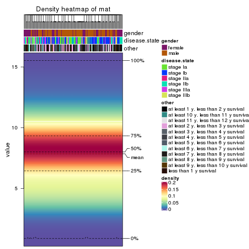
Folowing table shows the best k (number of partitions) for each combination
of top-value methods and partition methods. Clicking on the method name in
the table goes to the section for a single combination of methods.
The cola vignette explains the definition of the metrics used for determining the best number of partitions.
suggest_best_k(res_list)
| The best k | 1-PAC | Mean silhouette | Concordance | ||
|---|---|---|---|---|---|
| ATC:pam | 3 | 0.975 | 0.936 | 0.976 | ** |
| MAD:mclust | 2 | 0.935 | 0.936 | 0.969 | * |
| CV:NMF | 2 | 0.935 | 0.933 | 0.972 | * |
| SD:NMF | 2 | 0.935 | 0.940 | 0.973 | * |
| SD:skmeans | 3 | 0.927 | 0.926 | 0.969 | * |
| SD:mclust | 2 | 0.913 | 0.932 | 0.951 | * |
| MAD:skmeans | 3 | 0.912 | 0.913 | 0.963 | * |
| ATC:skmeans | 2 | 0.905 | 0.943 | 0.976 | * |
| CV:kmeans | 2 | 0.890 | 0.940 | 0.972 | |
| CV:skmeans | 2 | 0.871 | 0.915 | 0.964 | |
| MAD:NMF | 2 | 0.859 | 0.930 | 0.968 | |
| ATC:kmeans | 2 | 0.840 | 0.930 | 0.968 | |
| ATC:NMF | 2 | 0.831 | 0.891 | 0.956 | |
| CV:mclust | 2 | 0.791 | 0.905 | 0.933 | |
| SD:kmeans | 2 | 0.788 | 0.931 | 0.966 | |
| MAD:pam | 3 | 0.730 | 0.816 | 0.919 | |
| MAD:kmeans | 2 | 0.703 | 0.902 | 0.953 | |
| SD:pam | 2 | 0.439 | 0.824 | 0.879 | |
| ATC:mclust | 2 | 0.418 | 0.878 | 0.908 | |
| ATC:hclust | 2 | 0.366 | 0.691 | 0.849 | |
| CV:pam | 2 | 0.344 | 0.750 | 0.863 | |
| MAD:hclust | 2 | 0.210 | 0.644 | 0.820 | |
| SD:hclust | 2 | 0.199 | 0.651 | 0.765 | |
| CV:hclust | 2 | 0.156 | 0.699 | 0.823 |
**: 1-PAC > 0.95, *: 1-PAC > 0.9
Cumulative distribution function curves of consensus matrix for all methods.
collect_plots(res_list, fun = plot_ecdf)
Consensus heatmaps for all methods. (What is a consensus heatmap?)
collect_plots(res_list, k = 2, fun = consensus_heatmap, mc.cores = 4)
collect_plots(res_list, k = 3, fun = consensus_heatmap, mc.cores = 4)
collect_plots(res_list, k = 4, fun = consensus_heatmap, mc.cores = 4)
collect_plots(res_list, k = 5, fun = consensus_heatmap, mc.cores = 4)
collect_plots(res_list, k = 6, fun = consensus_heatmap, mc.cores = 4)
Membership heatmaps for all methods. (What is a membership heatmap?)
collect_plots(res_list, k = 2, fun = membership_heatmap, mc.cores = 4)
collect_plots(res_list, k = 3, fun = membership_heatmap, mc.cores = 4)
collect_plots(res_list, k = 4, fun = membership_heatmap, mc.cores = 4)
collect_plots(res_list, k = 5, fun = membership_heatmap, mc.cores = 4)
collect_plots(res_list, k = 6, fun = membership_heatmap, mc.cores = 4)
Signature heatmaps for all methods. (What is a signature heatmap?)
Note in following heatmaps, rows are scaled.
collect_plots(res_list, k = 2, fun = get_signatures, mc.cores = 4)
collect_plots(res_list, k = 3, fun = get_signatures, mc.cores = 4)
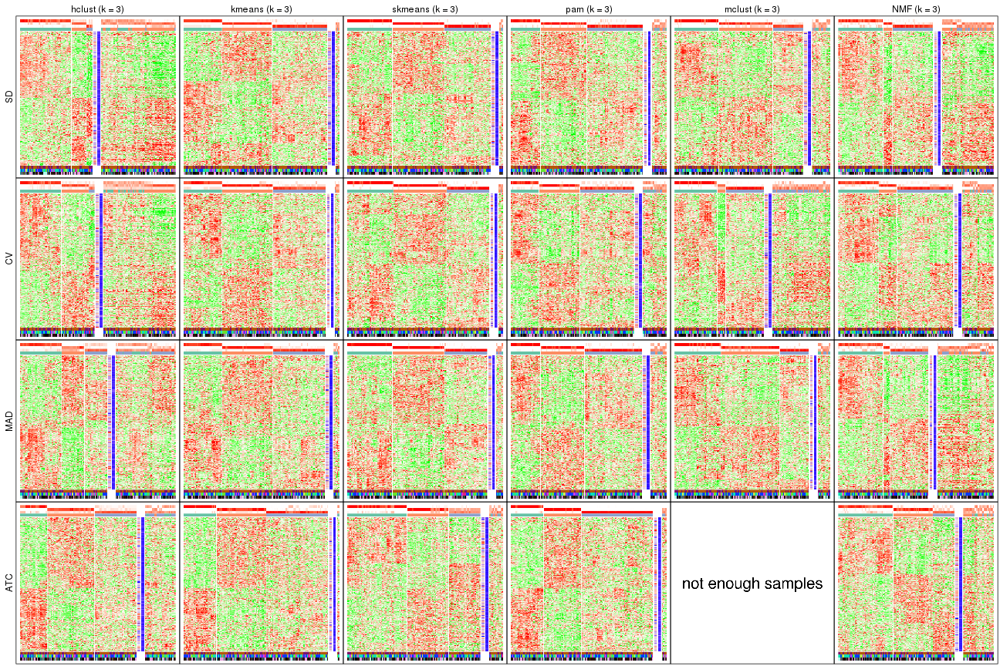
collect_plots(res_list, k = 4, fun = get_signatures, mc.cores = 4)
collect_plots(res_list, k = 5, fun = get_signatures, mc.cores = 4)
collect_plots(res_list, k = 6, fun = get_signatures, mc.cores = 4)

The statistics used for measuring the stability of consensus partitioning. (How are they defined?)
get_stats(res_list, k = 2)
#> k 1-PAC mean_silhouette concordance area_increased Rand Jaccard
#> SD:NMF 2 0.935 0.940 0.973 0.495 0.504 0.504
#> CV:NMF 2 0.935 0.933 0.972 0.489 0.513 0.513
#> MAD:NMF 2 0.859 0.930 0.968 0.497 0.504 0.504
#> ATC:NMF 2 0.831 0.891 0.956 0.499 0.496 0.496
#> SD:skmeans 2 0.859 0.918 0.965 0.499 0.502 0.502
#> CV:skmeans 2 0.871 0.915 0.964 0.497 0.506 0.506
#> MAD:skmeans 2 0.775 0.880 0.950 0.500 0.499 0.499
#> ATC:skmeans 2 0.905 0.943 0.976 0.504 0.496 0.496
#> SD:mclust 2 0.913 0.932 0.951 0.423 0.565 0.565
#> CV:mclust 2 0.791 0.905 0.933 0.437 0.559 0.559
#> MAD:mclust 2 0.935 0.936 0.969 0.440 0.559 0.559
#> ATC:mclust 2 0.418 0.878 0.908 0.467 0.527 0.527
#> SD:kmeans 2 0.788 0.931 0.966 0.468 0.527 0.527
#> CV:kmeans 2 0.890 0.940 0.972 0.467 0.527 0.527
#> MAD:kmeans 2 0.703 0.902 0.953 0.476 0.527 0.527
#> ATC:kmeans 2 0.840 0.930 0.968 0.489 0.511 0.511
#> SD:pam 2 0.439 0.824 0.879 0.449 0.531 0.531
#> CV:pam 2 0.344 0.750 0.863 0.461 0.513 0.513
#> MAD:pam 2 0.441 0.853 0.895 0.446 0.549 0.549
#> ATC:pam 2 0.439 0.548 0.770 0.445 0.527 0.527
#> SD:hclust 2 0.199 0.651 0.765 0.405 0.559 0.559
#> CV:hclust 2 0.156 0.699 0.823 0.429 0.513 0.513
#> MAD:hclust 2 0.210 0.644 0.820 0.417 0.539 0.539
#> ATC:hclust 2 0.366 0.691 0.849 0.458 0.511 0.511
get_stats(res_list, k = 3)
#> k 1-PAC mean_silhouette concordance area_increased Rand Jaccard
#> SD:NMF 3 0.480 0.533 0.782 0.322 0.694 0.464
#> CV:NMF 3 0.522 0.632 0.821 0.330 0.760 0.566
#> MAD:NMF 3 0.459 0.486 0.706 0.325 0.711 0.487
#> ATC:NMF 3 0.429 0.619 0.795 0.301 0.793 0.612
#> SD:skmeans 3 0.927 0.926 0.969 0.342 0.726 0.504
#> CV:skmeans 3 0.843 0.890 0.949 0.346 0.741 0.527
#> MAD:skmeans 3 0.912 0.913 0.963 0.340 0.726 0.503
#> ATC:skmeans 3 0.651 0.732 0.812 0.281 0.776 0.579
#> SD:mclust 3 0.514 0.725 0.816 0.509 0.738 0.551
#> CV:mclust 3 0.479 0.516 0.761 0.388 0.800 0.654
#> MAD:mclust 3 0.665 0.812 0.903 0.480 0.758 0.578
#> ATC:mclust 3 0.221 0.155 0.510 0.234 0.520 0.385
#> SD:kmeans 3 0.705 0.890 0.910 0.392 0.685 0.465
#> CV:kmeans 3 0.619 0.840 0.873 0.390 0.691 0.473
#> MAD:kmeans 3 0.729 0.875 0.913 0.382 0.685 0.463
#> ATC:kmeans 3 0.614 0.853 0.907 0.337 0.655 0.426
#> SD:pam 3 0.633 0.791 0.904 0.440 0.766 0.580
#> CV:pam 3 0.449 0.692 0.839 0.411 0.716 0.504
#> MAD:pam 3 0.730 0.816 0.919 0.442 0.763 0.586
#> ATC:pam 3 0.975 0.936 0.976 0.389 0.666 0.462
#> SD:hclust 3 0.177 0.428 0.711 0.328 0.662 0.494
#> CV:hclust 3 0.205 0.467 0.704 0.305 0.718 0.550
#> MAD:hclust 3 0.202 0.486 0.695 0.386 0.632 0.425
#> ATC:hclust 3 0.351 0.623 0.784 0.364 0.727 0.517
get_stats(res_list, k = 4)
#> k 1-PAC mean_silhouette concordance area_increased Rand Jaccard
#> SD:NMF 4 0.428 0.508 0.698 0.121 0.757 0.416
#> CV:NMF 4 0.429 0.446 0.662 0.136 0.829 0.559
#> MAD:NMF 4 0.472 0.610 0.762 0.109 0.694 0.328
#> ATC:NMF 4 0.480 0.499 0.735 0.129 0.798 0.515
#> SD:skmeans 4 0.672 0.636 0.809 0.111 0.891 0.696
#> CV:skmeans 4 0.606 0.615 0.799 0.113 0.881 0.668
#> MAD:skmeans 4 0.659 0.592 0.758 0.109 0.927 0.792
#> ATC:skmeans 4 0.636 0.611 0.751 0.123 0.898 0.717
#> SD:mclust 4 0.586 0.658 0.814 0.124 0.870 0.644
#> CV:mclust 4 0.712 0.825 0.894 0.115 0.802 0.578
#> MAD:mclust 4 0.718 0.708 0.869 0.116 0.853 0.609
#> ATC:mclust 4 0.443 0.692 0.745 0.195 0.626 0.395
#> SD:kmeans 4 0.700 0.665 0.828 0.123 0.917 0.766
#> CV:kmeans 4 0.680 0.677 0.828 0.131 0.898 0.713
#> MAD:kmeans 4 0.675 0.659 0.825 0.116 0.916 0.762
#> ATC:kmeans 4 0.633 0.643 0.769 0.131 0.900 0.727
#> SD:pam 4 0.631 0.642 0.794 0.158 0.834 0.567
#> CV:pam 4 0.584 0.544 0.777 0.148 0.824 0.546
#> MAD:pam 4 0.679 0.682 0.852 0.166 0.839 0.581
#> ATC:pam 4 0.726 0.803 0.894 0.144 0.875 0.684
#> SD:hclust 4 0.277 0.556 0.698 0.226 0.693 0.419
#> CV:hclust 4 0.334 0.641 0.761 0.182 0.734 0.482
#> MAD:hclust 4 0.311 0.496 0.675 0.185 0.760 0.488
#> ATC:hclust 4 0.398 0.538 0.691 0.140 0.892 0.713
get_stats(res_list, k = 5)
#> k 1-PAC mean_silhouette concordance area_increased Rand Jaccard
#> SD:NMF 5 0.577 0.568 0.736 0.0776 0.861 0.545
#> CV:NMF 5 0.543 0.525 0.699 0.0729 0.882 0.596
#> MAD:NMF 5 0.548 0.471 0.693 0.0830 0.871 0.576
#> ATC:NMF 5 0.646 0.674 0.828 0.0711 0.814 0.435
#> SD:skmeans 5 0.629 0.552 0.756 0.0662 0.853 0.535
#> CV:skmeans 5 0.593 0.535 0.725 0.0651 0.919 0.714
#> MAD:skmeans 5 0.623 0.558 0.754 0.0654 0.837 0.516
#> ATC:skmeans 5 0.754 0.704 0.860 0.0739 0.871 0.582
#> SD:mclust 5 0.672 0.645 0.826 0.0641 0.896 0.651
#> CV:mclust 5 0.517 0.502 0.731 0.1228 0.761 0.414
#> MAD:mclust 5 0.679 0.647 0.829 0.0540 0.945 0.802
#> ATC:mclust 5 0.688 0.625 0.824 0.1349 0.799 0.431
#> SD:kmeans 5 0.655 0.592 0.780 0.0682 0.855 0.547
#> CV:kmeans 5 0.655 0.616 0.759 0.0670 0.882 0.606
#> MAD:kmeans 5 0.647 0.596 0.773 0.0679 0.863 0.566
#> ATC:kmeans 5 0.697 0.723 0.822 0.0750 0.852 0.531
#> SD:pam 5 0.634 0.543 0.756 0.0435 0.907 0.676
#> CV:pam 5 0.580 0.498 0.725 0.0572 0.841 0.500
#> MAD:pam 5 0.639 0.536 0.761 0.0487 0.952 0.819
#> ATC:pam 5 0.742 0.689 0.850 0.0789 0.954 0.844
#> SD:hclust 5 0.336 0.489 0.667 0.0964 0.914 0.751
#> CV:hclust 5 0.411 0.604 0.715 0.0762 1.000 1.000
#> MAD:hclust 5 0.406 0.424 0.610 0.0920 0.838 0.551
#> ATC:hclust 5 0.468 0.471 0.659 0.0721 0.886 0.638
get_stats(res_list, k = 6)
#> k 1-PAC mean_silhouette concordance area_increased Rand Jaccard
#> SD:NMF 6 0.626 0.475 0.648 0.0422 0.928 0.693
#> CV:NMF 6 0.624 0.471 0.672 0.0426 0.902 0.606
#> MAD:NMF 6 0.609 0.468 0.679 0.0429 0.881 0.533
#> ATC:NMF 6 0.581 0.520 0.710 0.0449 0.892 0.563
#> SD:skmeans 6 0.635 0.450 0.690 0.0402 0.941 0.733
#> CV:skmeans 6 0.607 0.414 0.666 0.0400 0.942 0.750
#> MAD:skmeans 6 0.633 0.465 0.691 0.0411 0.948 0.768
#> ATC:skmeans 6 0.756 0.676 0.828 0.0404 0.956 0.804
#> SD:mclust 6 0.701 0.601 0.796 0.0415 0.943 0.772
#> CV:mclust 6 0.622 0.585 0.716 0.0627 0.898 0.623
#> MAD:mclust 6 0.681 0.551 0.744 0.0407 0.885 0.584
#> ATC:mclust 6 0.852 0.794 0.902 0.0494 0.902 0.578
#> SD:kmeans 6 0.679 0.548 0.689 0.0464 0.913 0.638
#> CV:kmeans 6 0.680 0.575 0.738 0.0481 0.945 0.752
#> MAD:kmeans 6 0.674 0.529 0.727 0.0442 0.939 0.739
#> ATC:kmeans 6 0.719 0.579 0.762 0.0421 0.958 0.798
#> SD:pam 6 0.648 0.482 0.726 0.0286 0.873 0.536
#> CV:pam 6 0.615 0.495 0.679 0.0341 0.894 0.580
#> MAD:pam 6 0.675 0.501 0.748 0.0367 0.957 0.822
#> ATC:pam 6 0.755 0.721 0.853 0.0628 0.915 0.680
#> SD:hclust 6 0.467 0.515 0.642 0.0683 0.905 0.686
#> CV:hclust 6 0.430 0.365 0.636 0.0652 0.976 0.922
#> MAD:hclust 6 0.501 0.483 0.649 0.0518 0.921 0.697
#> ATC:hclust 6 0.528 0.440 0.650 0.0526 0.922 0.679
Following heatmap plots the partition for each combination of methods and the lightness correspond to the silhouette scores for samples in each method. On top the consensus subgroup is inferred from all methods by taking the mean silhouette scores as weight.
collect_stats(res_list, k = 2)
collect_stats(res_list, k = 3)
collect_stats(res_list, k = 4)
collect_stats(res_list, k = 5)
collect_stats(res_list, k = 6)
Collect partitions from all methods:
collect_classes(res_list, k = 2)
collect_classes(res_list, k = 3)
collect_classes(res_list, k = 4)
collect_classes(res_list, k = 5)
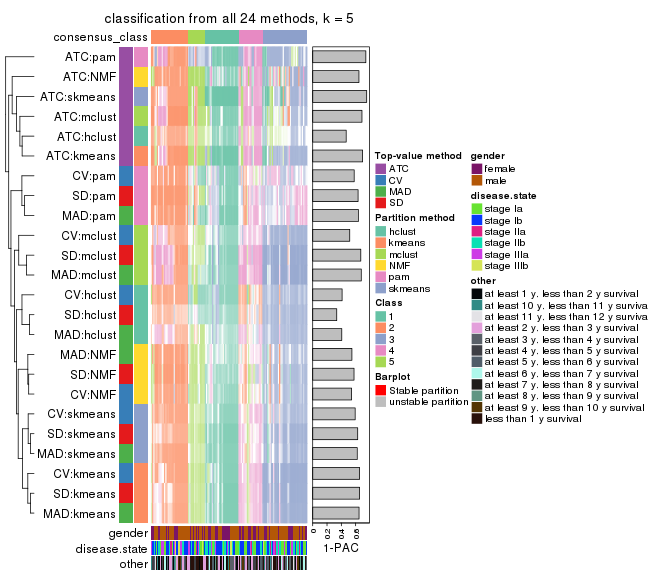
collect_classes(res_list, k = 6)
Overlap of top rows from different top-row methods:
top_rows_overlap(res_list, top_n = 1000, method = "euler")

top_rows_overlap(res_list, top_n = 2000, method = "euler")
top_rows_overlap(res_list, top_n = 3000, method = "euler")
top_rows_overlap(res_list, top_n = 4000, method = "euler")
top_rows_overlap(res_list, top_n = 5000, method = "euler")
Also visualize the correspondance of rankings between different top-row methods:
top_rows_overlap(res_list, top_n = 1000, method = "correspondance")
top_rows_overlap(res_list, top_n = 2000, method = "correspondance")
top_rows_overlap(res_list, top_n = 3000, method = "correspondance")
top_rows_overlap(res_list, top_n = 4000, method = "correspondance")
top_rows_overlap(res_list, top_n = 5000, method = "correspondance")
Heatmaps of the top rows:
top_rows_heatmap(res_list, top_n = 1000)
top_rows_heatmap(res_list, top_n = 2000)

top_rows_heatmap(res_list, top_n = 3000)
top_rows_heatmap(res_list, top_n = 4000)
top_rows_heatmap(res_list, top_n = 5000)
Test correlation between subgroups and known annotations. If the known annotation is numeric, one-way ANOVA test is applied, and if the known annotation is discrete, chi-squared contingency table test is applied.
test_to_known_factors(res_list, k = 2)
#> n gender(p) disease.state(p) other(p) k
#> SD:NMF 128 0.111 0.0833 0.3781 2
#> CV:NMF 126 0.147 0.2263 0.3257 2
#> MAD:NMF 129 0.116 0.1102 0.3886 2
#> ATC:NMF 122 0.206 0.1876 0.5244 2
#> SD:skmeans 126 0.255 0.0922 0.4327 2
#> CV:skmeans 125 0.174 0.1764 0.4389 2
#> MAD:skmeans 124 0.223 0.1593 0.4732 2
#> ATC:skmeans 127 0.347 0.1271 0.5698 2
#> SD:mclust 128 0.214 0.8712 0.2405 2
#> CV:mclust 128 0.214 0.8887 0.4053 2
#> MAD:mclust 129 0.101 0.8156 0.3800 2
#> ATC:mclust 129 0.920 0.0667 0.7051 2
#> SD:kmeans 129 0.254 0.2595 0.4767 2
#> CV:kmeans 129 0.169 0.3507 0.2588 2
#> MAD:kmeans 127 0.182 0.2763 0.5073 2
#> ATC:kmeans 127 0.317 0.0922 0.7655 2
#> SD:pam 124 0.325 0.1001 0.1366 2
#> CV:pam 116 0.136 0.2782 0.1888 2
#> MAD:pam 127 0.189 0.2538 0.0356 2
#> ATC:pam 85 0.410 0.0887 0.6260 2
#> SD:hclust 105 0.806 0.0596 0.3393 2
#> CV:hclust 115 0.234 0.4193 0.1730 2
#> MAD:hclust 106 0.251 0.2876 0.1404 2
#> ATC:hclust 110 0.243 0.1334 0.0995 2
test_to_known_factors(res_list, k = 3)
#> n gender(p) disease.state(p) other(p) k
#> SD:NMF 84 0.5790 0.6071 0.2398 3
#> CV:NMF 102 0.3311 0.4196 0.0722 3
#> MAD:NMF 80 0.3283 0.4839 0.1838 3
#> ATC:NMF 103 0.3512 0.5856 0.4563 3
#> SD:skmeans 127 0.1194 0.3865 0.1494 3
#> CV:skmeans 126 0.1843 0.3572 0.1617 3
#> MAD:skmeans 124 0.1151 0.3842 0.1941 3
#> ATC:skmeans 118 0.5057 0.0617 0.3441 3
#> SD:mclust 114 0.2633 0.5584 0.1073 3
#> CV:mclust 79 0.5952 0.1743 0.5207 3
#> MAD:mclust 119 0.1478 0.7224 0.2605 3
#> ATC:mclust 16 NA NA NA 3
#> SD:kmeans 127 0.2428 0.4072 0.0915 3
#> CV:kmeans 126 0.2186 0.5116 0.0195 3
#> MAD:kmeans 125 0.2382 0.3358 0.1404 3
#> ATC:kmeans 128 0.3273 0.4404 0.1185 3
#> SD:pam 117 0.4584 0.4331 0.1436 3
#> CV:pam 109 0.2365 0.6356 0.2740 3
#> MAD:pam 116 0.1762 0.5401 0.1558 3
#> ATC:pam 126 0.3270 0.4210 0.1034 3
#> SD:hclust 64 0.0957 0.4684 0.6801 3
#> CV:hclust 66 0.2849 0.2679 0.7833 3
#> MAD:hclust 77 0.3532 0.0879 0.3548 3
#> ATC:hclust 103 0.3007 0.6983 0.1106 3
test_to_known_factors(res_list, k = 4)
#> n gender(p) disease.state(p) other(p) k
#> SD:NMF 86 0.4418 0.9341 0.4660 4
#> CV:NMF 67 0.4587 0.7636 0.1156 4
#> MAD:NMF 101 0.5269 0.7813 0.0786 4
#> ATC:NMF 82 0.6246 0.8464 0.0530 4
#> SD:skmeans 94 0.1507 0.5458 0.3204 4
#> CV:skmeans 98 0.0497 0.6263 0.4827 4
#> MAD:skmeans 101 0.1323 0.3867 0.3676 4
#> ATC:skmeans 101 0.5799 0.5204 0.3850 4
#> SD:mclust 100 0.1234 0.0626 0.3291 4
#> CV:mclust 128 0.2560 0.1027 0.1108 4
#> MAD:mclust 101 0.4545 0.4556 0.4865 4
#> ATC:mclust 111 0.4835 0.4319 0.2094 4
#> SD:kmeans 108 0.2592 0.1006 0.4983 4
#> CV:kmeans 96 0.3920 0.6292 0.6210 4
#> MAD:kmeans 103 0.3212 0.1039 0.5766 4
#> ATC:kmeans 98 0.3865 0.4673 0.5878 4
#> SD:pam 95 0.4124 0.5685 0.6838 4
#> CV:pam 74 0.4590 0.7801 0.4294 4
#> MAD:pam 102 0.2891 0.8405 0.6811 4
#> ATC:pam 120 0.2724 0.2756 0.2431 4
#> SD:hclust 98 0.5691 0.1487 0.4929 4
#> CV:hclust 106 0.4532 0.6840 0.4010 4
#> MAD:hclust 86 0.3857 0.0372 0.3750 4
#> ATC:hclust 85 0.6998 0.2848 0.1414 4
test_to_known_factors(res_list, k = 5)
#> n gender(p) disease.state(p) other(p) k
#> SD:NMF 90 0.0742 0.8836 0.4814 5
#> CV:NMF 87 0.0958 0.7998 0.4915 5
#> MAD:NMF 69 0.2581 0.8292 0.2293 5
#> ATC:NMF 105 0.3667 0.9208 0.3475 5
#> SD:skmeans 86 0.8392 0.1332 0.3690 5
#> CV:skmeans 81 0.6111 0.5562 0.6708 5
#> MAD:skmeans 82 0.3782 0.6056 0.5684 5
#> ATC:skmeans 108 0.9224 0.4960 0.4221 5
#> SD:mclust 97 0.6041 0.1650 0.2905 5
#> CV:mclust 80 0.6446 0.8073 0.3780 5
#> MAD:mclust 98 0.5090 0.0171 0.1169 5
#> ATC:mclust 100 0.6814 0.7375 0.3050 5
#> SD:kmeans 90 0.9615 0.2036 0.3919 5
#> CV:kmeans 98 0.5212 0.5925 0.3672 5
#> MAD:kmeans 90 0.7648 0.1695 0.2890 5
#> ATC:kmeans 118 0.1883 0.1352 0.3930 5
#> SD:pam 74 0.8125 0.9176 0.2223 5
#> CV:pam 75 0.3839 0.4044 0.0977 5
#> MAD:pam 72 0.2605 0.3665 0.2177 5
#> ATC:pam 100 0.4430 0.2773 0.3193 5
#> SD:hclust 68 0.4517 0.9453 0.3783 5
#> CV:hclust 102 0.5042 0.7567 0.4267 5
#> MAD:hclust 67 0.7720 0.6145 0.1955 5
#> ATC:hclust 82 0.9263 0.5331 0.4693 5
test_to_known_factors(res_list, k = 6)
#> n gender(p) disease.state(p) other(p) k
#> SD:NMF 75 0.0851 0.952 0.51366 6
#> CV:NMF 71 0.0811 0.905 0.03219 6
#> MAD:NMF 58 0.0143 0.882 0.21694 6
#> ATC:NMF 83 0.3005 0.973 0.16908 6
#> SD:skmeans 66 0.8532 0.347 0.25531 6
#> CV:skmeans 58 0.2742 0.837 0.13582 6
#> MAD:skmeans 72 0.7032 0.825 0.21254 6
#> ATC:skmeans 106 0.5771 0.276 0.57239 6
#> SD:mclust 101 0.6469 0.240 0.03664 6
#> CV:mclust 100 0.8486 0.303 0.01042 6
#> MAD:mclust 93 0.3247 0.325 0.72109 6
#> ATC:mclust 115 0.8151 0.299 0.06933 6
#> SD:kmeans 89 0.6343 0.063 0.42762 6
#> CV:kmeans 88 0.4246 0.913 0.36170 6
#> MAD:kmeans 87 0.6913 0.311 0.01927 6
#> ATC:kmeans 84 0.6514 0.738 0.00258 6
#> SD:pam 71 0.8415 0.988 0.48346 6
#> CV:pam 70 0.2656 0.258 0.32085 6
#> MAD:pam 74 0.1693 0.678 0.15231 6
#> ATC:pam 112 0.7642 0.389 0.56482 6
#> SD:hclust 80 0.5251 0.415 0.62120 6
#> CV:hclust 52 0.1027 0.266 0.44359 6
#> MAD:hclust 82 0.9493 0.649 0.34596 6
#> ATC:hclust 59 0.9717 0.836 0.20280 6
The object with results only for a single top-value method and a single partition method can be extracted as:
res = res_list["SD", "hclust"]
# you can also extract it by
# res = res_list["SD:hclust"]
A summary of res and all the functions that can be applied to it:
res
#> A 'ConsensusPartition' object with k = 2, 3, 4, 5, 6.
#> On a matrix with 21168 rows and 130 columns.
#> Top rows (1000, 2000, 3000, 4000, 5000) are extracted by 'SD' method.
#> Subgroups are detected by 'hclust' method.
#> Performed in total 1250 partitions by row resampling.
#> Best k for subgroups seems to be 2.
#>
#> Following methods can be applied to this 'ConsensusPartition' object:
#> [1] "cola_report" "collect_classes" "collect_plots"
#> [4] "collect_stats" "colnames" "compare_signatures"
#> [7] "consensus_heatmap" "dimension_reduction" "functional_enrichment"
#> [10] "get_anno_col" "get_anno" "get_classes"
#> [13] "get_consensus" "get_matrix" "get_membership"
#> [16] "get_param" "get_signatures" "get_stats"
#> [19] "is_best_k" "is_stable_k" "membership_heatmap"
#> [22] "ncol" "nrow" "plot_ecdf"
#> [25] "rownames" "select_partition_number" "show"
#> [28] "suggest_best_k" "test_to_known_factors"
collect_plots() function collects all the plots made from res for all k (number of partitions)
into one single page to provide an easy and fast comparison between different k.
collect_plots(res)
The plots are:
k and the heatmap of
predicted classes for each k.k.k.k.All the plots in panels can be made by individual functions and they are plotted later in this section.
select_partition_number() produces several plots showing different
statistics for choosing “optimized” k. There are following statistics:
k;k, the area increased is defined as \(A_k - A_{k-1}\).The detailed explanations of these statistics can be found in the cola vignette.
Generally speaking, lower PAC score, higher mean silhouette score or higher
concordance corresponds to better partition. Rand index and Jaccard index
measure how similar the current partition is compared to partition with k-1.
If they are too similar, we won't accept k is better than k-1.
select_partition_number(res)
The numeric values for all these statistics can be obtained by get_stats().
get_stats(res)
#> k 1-PAC mean_silhouette concordance area_increased Rand Jaccard
#> 2 2 0.199 0.651 0.765 0.4045 0.559 0.559
#> 3 3 0.177 0.428 0.711 0.3276 0.662 0.494
#> 4 4 0.277 0.556 0.698 0.2256 0.693 0.419
#> 5 5 0.336 0.489 0.667 0.0964 0.914 0.751
#> 6 6 0.467 0.515 0.642 0.0683 0.905 0.686
suggest_best_k() suggests the best \(k\) based on these statistics. The rules are as follows:
suggest_best_k(res)
#> [1] 2
Following shows the table of the partitions (You need to click the show/hide
code output link to see it). The membership matrix (columns with name p*)
is inferred by
clue::cl_consensus()
function with the SE method. Basically the value in the membership matrix
represents the probability to belong to a certain group. The finall class
label for an item is determined with the group with highest probability it
belongs to.
In get_classes() function, the entropy is calculated from the membership
matrix and the silhouette score is calculated from the consensus matrix.
cbind(get_classes(res, k = 2), get_membership(res, k = 2))
#> class entropy silhouette p1 p2
#> GSM102191 1 0.9580 0.36238 0.620 0.380
#> GSM102240 1 0.4298 0.77172 0.912 0.088
#> GSM102175 1 0.0000 0.78834 1.000 0.000
#> GSM102134 2 0.9775 0.42890 0.412 0.588
#> GSM102171 1 0.0376 0.78637 0.996 0.004
#> GSM102178 1 0.6048 0.79411 0.852 0.148
#> GSM102198 2 0.9710 0.44621 0.400 0.600
#> GSM102221 1 0.4298 0.77172 0.912 0.088
#> GSM102223 2 0.9248 0.54333 0.340 0.660
#> GSM102229 1 0.8267 0.70370 0.740 0.260
#> GSM102153 1 0.0000 0.78834 1.000 0.000
#> GSM102220 1 0.8327 0.68761 0.736 0.264
#> GSM102202 2 0.3431 0.66995 0.064 0.936
#> GSM102123 1 0.6712 0.77567 0.824 0.176
#> GSM102125 1 0.9993 -0.05009 0.516 0.484
#> GSM102136 1 0.9977 -0.06127 0.528 0.472
#> GSM102197 1 0.8144 0.70276 0.748 0.252
#> GSM102131 1 0.7883 0.72186 0.764 0.236
#> GSM102132 1 0.4815 0.80355 0.896 0.104
#> GSM102212 2 0.9393 0.53081 0.356 0.644
#> GSM102117 1 0.5842 0.73261 0.860 0.140
#> GSM102124 2 0.0672 0.69617 0.008 0.992
#> GSM102172 1 0.0000 0.78834 1.000 0.000
#> GSM102199 1 1.0000 -0.05087 0.500 0.500
#> GSM102203 1 0.4298 0.78225 0.912 0.088
#> GSM102213 2 0.3431 0.66995 0.064 0.936
#> GSM102165 1 0.6531 0.78010 0.832 0.168
#> GSM102180 2 0.6343 0.70086 0.160 0.840
#> GSM102184 1 0.4431 0.80461 0.908 0.092
#> GSM102225 2 0.9977 0.20960 0.472 0.528
#> GSM102230 1 0.0938 0.78992 0.988 0.012
#> GSM102133 2 0.0376 0.69463 0.004 0.996
#> GSM102166 1 0.0000 0.78834 1.000 0.000
#> GSM102235 1 0.5178 0.79896 0.884 0.116
#> GSM102196 1 0.0376 0.78637 0.996 0.004
#> GSM102243 1 0.9358 0.44316 0.648 0.352
#> GSM102135 1 0.9580 0.45777 0.620 0.380
#> GSM102139 2 0.0672 0.69658 0.008 0.992
#> GSM102151 2 0.9732 0.45558 0.404 0.596
#> GSM102193 2 0.0376 0.69463 0.004 0.996
#> GSM102200 1 0.5059 0.80374 0.888 0.112
#> GSM102204 2 0.7815 0.66440 0.232 0.768
#> GSM102145 1 0.9248 0.55504 0.660 0.340
#> GSM102142 2 0.8443 0.62669 0.272 0.728
#> GSM102179 2 0.9998 0.11490 0.492 0.508
#> GSM102181 1 0.4815 0.80436 0.896 0.104
#> GSM102154 1 0.7056 0.77118 0.808 0.192
#> GSM102152 2 0.8955 0.59871 0.312 0.688
#> GSM102162 2 0.9815 0.40110 0.420 0.580
#> GSM102187 1 0.8555 0.65034 0.720 0.280
#> GSM102116 1 0.2778 0.79236 0.952 0.048
#> GSM102150 1 0.2423 0.79685 0.960 0.040
#> GSM102227 1 0.6048 0.78875 0.852 0.148
#> GSM102114 1 0.0376 0.78637 0.996 0.004
#> GSM102177 1 0.2423 0.79104 0.960 0.040
#> GSM102160 2 0.9795 0.41244 0.416 0.584
#> GSM102161 1 0.1633 0.79547 0.976 0.024
#> GSM102170 2 0.1184 0.69949 0.016 0.984
#> GSM102205 1 0.8661 0.61191 0.712 0.288
#> GSM102118 1 0.7453 0.74599 0.788 0.212
#> GSM102156 1 0.5842 0.79413 0.860 0.140
#> GSM102238 1 0.0376 0.78637 0.996 0.004
#> GSM102143 1 0.4939 0.80528 0.892 0.108
#> GSM102144 2 0.9896 0.37547 0.440 0.560
#> GSM102209 1 0.9983 -0.00248 0.524 0.476
#> GSM102210 1 0.9754 0.29428 0.592 0.408
#> GSM102140 1 0.8555 0.66448 0.720 0.280
#> GSM102242 1 0.5946 0.79021 0.856 0.144
#> GSM102141 1 0.7376 0.74976 0.792 0.208
#> GSM102120 1 0.7376 0.74804 0.792 0.208
#> GSM102127 1 0.7602 0.74273 0.780 0.220
#> GSM102149 1 0.2236 0.79722 0.964 0.036
#> GSM102232 2 0.5408 0.70931 0.124 0.876
#> GSM102222 2 0.9933 0.28042 0.452 0.548
#> GSM102236 1 0.2236 0.79057 0.964 0.036
#> GSM102215 2 0.1843 0.68928 0.028 0.972
#> GSM102194 2 0.3431 0.71174 0.064 0.936
#> GSM102208 2 0.0376 0.69463 0.004 0.996
#> GSM102130 2 0.2778 0.70832 0.048 0.952
#> GSM102188 1 0.6801 0.77528 0.820 0.180
#> GSM102233 1 0.0376 0.78637 0.996 0.004
#> GSM102189 2 0.3584 0.71134 0.068 0.932
#> GSM102234 1 0.9209 0.56803 0.664 0.336
#> GSM102237 1 0.5519 0.75099 0.872 0.128
#> GSM102159 1 0.5294 0.79746 0.880 0.120
#> GSM102155 1 0.6712 0.77826 0.824 0.176
#> GSM102137 1 0.2778 0.79699 0.952 0.048
#> GSM102217 2 0.9922 0.36337 0.448 0.552
#> GSM102126 1 0.4939 0.80372 0.892 0.108
#> GSM102157 1 0.8207 0.71003 0.744 0.256
#> GSM102163 1 0.5294 0.80013 0.880 0.120
#> GSM102182 2 0.9881 0.42984 0.436 0.564
#> GSM102167 2 0.8608 0.61286 0.284 0.716
#> GSM102206 1 0.2948 0.78877 0.948 0.052
#> GSM102224 2 0.5629 0.70933 0.132 0.868
#> GSM102164 2 0.0376 0.69463 0.004 0.996
#> GSM102174 1 0.2423 0.79104 0.960 0.040
#> GSM102214 2 0.9977 0.20960 0.472 0.528
#> GSM102226 1 0.9815 0.32637 0.580 0.420
#> GSM102195 1 0.9460 0.49862 0.636 0.364
#> GSM102218 1 0.6801 0.77282 0.820 0.180
#> GSM102128 2 0.4939 0.71265 0.108 0.892
#> GSM102168 1 0.5178 0.79896 0.884 0.116
#> GSM102190 1 0.2236 0.79216 0.964 0.036
#> GSM102201 2 0.8763 0.59835 0.296 0.704
#> GSM102129 1 0.6801 0.77282 0.820 0.180
#> GSM102192 1 0.0938 0.79228 0.988 0.012
#> GSM102183 1 0.9833 0.19888 0.576 0.424
#> GSM102185 1 0.0376 0.78637 0.996 0.004
#> GSM102158 2 0.9170 0.57825 0.332 0.668
#> GSM102169 1 0.8713 0.64771 0.708 0.292
#> GSM102216 1 0.2423 0.79904 0.960 0.040
#> GSM102219 1 0.0672 0.78850 0.992 0.008
#> GSM102231 2 0.9996 0.14123 0.488 0.512
#> GSM102147 2 0.9491 0.51835 0.368 0.632
#> GSM102176 1 0.2236 0.79174 0.964 0.036
#> GSM102148 1 0.4431 0.80201 0.908 0.092
#> GSM102146 1 0.0376 0.78915 0.996 0.004
#> GSM102241 1 0.0376 0.78915 0.996 0.004
#> GSM102211 1 0.0376 0.78637 0.996 0.004
#> GSM102115 1 0.2948 0.79089 0.948 0.052
#> GSM102173 1 0.0000 0.78834 1.000 0.000
#> GSM102138 2 0.5629 0.70920 0.132 0.868
#> GSM102228 1 0.5946 0.79381 0.856 0.144
#> GSM102207 1 0.7376 0.74976 0.792 0.208
#> GSM102122 1 0.0376 0.78637 0.996 0.004
#> GSM102119 1 0.9710 0.40428 0.600 0.400
#> GSM102186 2 0.5629 0.68192 0.132 0.868
#> GSM102239 1 0.2423 0.79104 0.960 0.040
#> GSM102121 2 0.0376 0.69463 0.004 0.996
cbind(get_classes(res, k = 3), get_membership(res, k = 3))
#> class entropy silhouette p1 p2 p3
#> GSM102191 2 0.6553 0.4085 0.324 0.656 0.020
#> GSM102240 1 0.5020 0.6170 0.836 0.056 0.108
#> GSM102175 1 0.1315 0.7118 0.972 0.020 0.008
#> GSM102134 2 0.5564 0.5370 0.128 0.808 0.064
#> GSM102171 1 0.0237 0.7113 0.996 0.004 0.000
#> GSM102178 1 0.6627 0.4875 0.644 0.336 0.020
#> GSM102198 2 0.5519 0.5343 0.120 0.812 0.068
#> GSM102221 1 0.5020 0.6170 0.836 0.056 0.108
#> GSM102223 2 0.4658 0.4865 0.068 0.856 0.076
#> GSM102229 2 0.6994 0.0659 0.424 0.556 0.020
#> GSM102153 1 0.0592 0.7129 0.988 0.012 0.000
#> GSM102220 2 0.6713 0.0979 0.416 0.572 0.012
#> GSM102202 3 0.2066 0.6641 0.000 0.060 0.940
#> GSM102123 1 0.6771 0.3042 0.548 0.440 0.012
#> GSM102125 2 0.6521 0.5225 0.248 0.712 0.040
#> GSM102136 2 0.7666 0.4708 0.288 0.636 0.076
#> GSM102197 2 0.6745 0.0644 0.428 0.560 0.012
#> GSM102131 2 0.6793 -0.0146 0.452 0.536 0.012
#> GSM102132 1 0.6018 0.5544 0.684 0.308 0.008
#> GSM102212 2 0.6728 0.4971 0.124 0.748 0.128
#> GSM102117 1 0.6004 0.5457 0.780 0.064 0.156
#> GSM102124 2 0.5968 -0.0445 0.000 0.636 0.364
#> GSM102172 1 0.1315 0.7118 0.972 0.020 0.008
#> GSM102199 2 0.6982 0.5355 0.220 0.708 0.072
#> GSM102203 1 0.5356 0.6502 0.784 0.196 0.020
#> GSM102213 3 0.2066 0.6641 0.000 0.060 0.940
#> GSM102165 1 0.6779 0.3066 0.544 0.444 0.012
#> GSM102180 2 0.5597 0.2623 0.020 0.764 0.216
#> GSM102184 1 0.6229 0.5272 0.652 0.340 0.008
#> GSM102225 2 0.4934 0.5646 0.156 0.820 0.024
#> GSM102230 1 0.1170 0.7122 0.976 0.016 0.008
#> GSM102133 2 0.6008 -0.0523 0.000 0.628 0.372
#> GSM102166 1 0.0983 0.7114 0.980 0.016 0.004
#> GSM102235 1 0.6113 0.5438 0.688 0.300 0.012
#> GSM102196 1 0.1129 0.7142 0.976 0.020 0.004
#> GSM102243 2 0.6899 0.3320 0.364 0.612 0.024
#> GSM102135 2 0.6294 0.4091 0.288 0.692 0.020
#> GSM102139 2 0.5948 -0.0289 0.000 0.640 0.360
#> GSM102151 2 0.6191 0.5033 0.140 0.776 0.084
#> GSM102193 2 0.6008 -0.0523 0.000 0.628 0.372
#> GSM102200 1 0.6297 0.5086 0.640 0.352 0.008
#> GSM102204 2 0.5835 0.3661 0.052 0.784 0.164
#> GSM102145 2 0.6255 0.3418 0.320 0.668 0.012
#> GSM102142 2 0.5105 0.4229 0.048 0.828 0.124
#> GSM102179 2 0.6742 0.5321 0.240 0.708 0.052
#> GSM102181 1 0.6307 0.5314 0.660 0.328 0.012
#> GSM102154 1 0.7021 0.2973 0.544 0.436 0.020
#> GSM102152 3 0.9111 0.1335 0.140 0.424 0.436
#> GSM102162 2 0.6001 0.5453 0.144 0.784 0.072
#> GSM102187 2 0.6735 0.1125 0.424 0.564 0.012
#> GSM102116 1 0.4505 0.6885 0.860 0.092 0.048
#> GSM102150 1 0.3293 0.7072 0.900 0.088 0.012
#> GSM102227 1 0.6745 0.3438 0.560 0.428 0.012
#> GSM102114 1 0.2384 0.7185 0.936 0.056 0.008
#> GSM102177 1 0.3484 0.6816 0.904 0.048 0.048
#> GSM102160 2 0.6087 0.5432 0.144 0.780 0.076
#> GSM102161 1 0.3293 0.7150 0.900 0.088 0.012
#> GSM102170 2 0.5926 -0.0153 0.000 0.644 0.356
#> GSM102205 2 0.6924 0.1968 0.400 0.580 0.020
#> GSM102118 2 0.6819 -0.1056 0.476 0.512 0.012
#> GSM102156 1 0.6724 0.3685 0.568 0.420 0.012
#> GSM102238 1 0.0424 0.7110 0.992 0.008 0.000
#> GSM102143 1 0.6490 0.4939 0.628 0.360 0.012
#> GSM102144 2 0.8985 0.2986 0.220 0.564 0.216
#> GSM102209 2 0.5874 0.5428 0.208 0.760 0.032
#> GSM102210 2 0.6855 0.4192 0.316 0.652 0.032
#> GSM102140 2 0.6647 0.1598 0.396 0.592 0.012
#> GSM102242 1 0.6735 0.3547 0.564 0.424 0.012
#> GSM102141 2 0.6823 -0.1212 0.484 0.504 0.012
#> GSM102120 2 0.6955 -0.1466 0.492 0.492 0.016
#> GSM102127 2 0.6799 -0.0493 0.456 0.532 0.012
#> GSM102149 1 0.3607 0.7072 0.880 0.112 0.008
#> GSM102232 2 0.6287 0.1809 0.024 0.704 0.272
#> GSM102222 2 0.4931 0.5583 0.140 0.828 0.032
#> GSM102236 1 0.3572 0.6910 0.900 0.060 0.040
#> GSM102215 3 0.6168 0.3975 0.000 0.412 0.588
#> GSM102194 2 0.6255 0.0828 0.012 0.668 0.320
#> GSM102208 2 0.6008 -0.0523 0.000 0.628 0.372
#> GSM102130 2 0.5733 0.0630 0.000 0.676 0.324
#> GSM102188 1 0.6879 0.3228 0.556 0.428 0.016
#> GSM102233 1 0.0747 0.7138 0.984 0.016 0.000
#> GSM102189 2 0.5958 0.0971 0.008 0.692 0.300
#> GSM102234 2 0.6627 0.3103 0.336 0.644 0.020
#> GSM102237 1 0.4634 0.5790 0.824 0.012 0.164
#> GSM102159 1 0.6228 0.5244 0.672 0.316 0.012
#> GSM102155 1 0.7036 0.2757 0.536 0.444 0.020
#> GSM102137 1 0.3784 0.7013 0.864 0.132 0.004
#> GSM102217 2 0.8080 0.3964 0.232 0.640 0.128
#> GSM102126 1 0.6189 0.4957 0.632 0.364 0.004
#> GSM102157 1 0.7493 0.1089 0.488 0.476 0.036
#> GSM102163 1 0.6357 0.5082 0.652 0.336 0.012
#> GSM102182 3 0.7748 0.4753 0.340 0.064 0.596
#> GSM102167 2 0.4818 0.4370 0.048 0.844 0.108
#> GSM102206 1 0.3045 0.6908 0.916 0.020 0.064
#> GSM102224 2 0.4702 0.2207 0.000 0.788 0.212
#> GSM102164 2 0.5988 -0.0479 0.000 0.632 0.368
#> GSM102174 1 0.3484 0.6816 0.904 0.048 0.048
#> GSM102214 2 0.4934 0.5646 0.156 0.820 0.024
#> GSM102226 2 0.6226 0.4685 0.252 0.720 0.028
#> GSM102195 2 0.6255 0.3866 0.300 0.684 0.016
#> GSM102218 1 0.6813 0.2447 0.520 0.468 0.012
#> GSM102128 2 0.5404 0.1804 0.004 0.740 0.256
#> GSM102168 1 0.6113 0.5438 0.688 0.300 0.012
#> GSM102190 1 0.3846 0.6989 0.876 0.108 0.016
#> GSM102201 3 0.8525 0.5314 0.188 0.200 0.612
#> GSM102129 1 0.6813 0.2473 0.520 0.468 0.012
#> GSM102192 1 0.3918 0.6958 0.856 0.140 0.004
#> GSM102183 2 0.6507 0.4807 0.284 0.688 0.028
#> GSM102185 1 0.0424 0.7110 0.992 0.008 0.000
#> GSM102158 3 0.8693 0.5795 0.232 0.176 0.592
#> GSM102169 2 0.6548 0.2206 0.372 0.616 0.012
#> GSM102216 1 0.5244 0.6390 0.756 0.240 0.004
#> GSM102219 1 0.2200 0.7209 0.940 0.056 0.004
#> GSM102231 2 0.5167 0.5684 0.172 0.804 0.024
#> GSM102147 2 0.6184 0.4926 0.112 0.780 0.108
#> GSM102176 1 0.3263 0.6880 0.912 0.048 0.040
#> GSM102148 1 0.5956 0.5464 0.672 0.324 0.004
#> GSM102146 1 0.2261 0.7187 0.932 0.068 0.000
#> GSM102241 1 0.2261 0.7187 0.932 0.068 0.000
#> GSM102211 1 0.1129 0.7142 0.976 0.020 0.004
#> GSM102115 1 0.4342 0.6901 0.856 0.120 0.024
#> GSM102173 1 0.1315 0.7118 0.972 0.020 0.008
#> GSM102138 2 0.5493 0.2182 0.012 0.756 0.232
#> GSM102228 1 0.6713 0.3818 0.572 0.416 0.012
#> GSM102207 2 0.6823 -0.1212 0.484 0.504 0.012
#> GSM102122 1 0.2860 0.7151 0.912 0.084 0.004
#> GSM102119 2 0.6441 0.4353 0.276 0.696 0.028
#> GSM102186 3 0.3771 0.6719 0.012 0.112 0.876
#> GSM102239 1 0.3484 0.6816 0.904 0.048 0.048
#> GSM102121 2 0.6008 -0.0523 0.000 0.628 0.372
cbind(get_classes(res, k = 4), get_membership(res, k = 4))
#> class entropy silhouette p1 p2 p3 p4
#> GSM102191 3 0.743 0.00489 0.076 0.356 0.528 0.040
#> GSM102240 1 0.493 0.65830 0.792 0.012 0.068 0.128
#> GSM102175 1 0.341 0.77658 0.860 0.004 0.120 0.016
#> GSM102134 2 0.668 0.49809 0.024 0.544 0.388 0.044
#> GSM102171 1 0.353 0.77430 0.840 0.004 0.148 0.008
#> GSM102178 3 0.513 0.58981 0.236 0.028 0.728 0.008
#> GSM102198 2 0.657 0.50774 0.020 0.552 0.384 0.044
#> GSM102221 1 0.493 0.65830 0.792 0.012 0.068 0.128
#> GSM102223 2 0.619 0.56207 0.012 0.596 0.352 0.040
#> GSM102229 3 0.470 0.66154 0.052 0.124 0.808 0.016
#> GSM102153 1 0.338 0.77883 0.852 0.004 0.136 0.008
#> GSM102220 3 0.478 0.65392 0.048 0.128 0.804 0.020
#> GSM102202 4 0.376 0.72792 0.000 0.216 0.000 0.784
#> GSM102123 3 0.574 0.68016 0.132 0.088 0.752 0.028
#> GSM102125 2 0.763 0.27883 0.072 0.444 0.436 0.048
#> GSM102136 2 0.840 0.30419 0.136 0.412 0.396 0.056
#> GSM102197 3 0.466 0.66326 0.056 0.116 0.812 0.016
#> GSM102131 3 0.477 0.67891 0.068 0.116 0.804 0.012
#> GSM102132 3 0.495 0.54085 0.268 0.008 0.712 0.012
#> GSM102212 2 0.632 0.56216 0.012 0.592 0.348 0.048
#> GSM102117 1 0.590 0.59494 0.732 0.028 0.072 0.168
#> GSM102124 2 0.339 0.56105 0.000 0.872 0.056 0.072
#> GSM102172 1 0.346 0.77617 0.860 0.004 0.116 0.020
#> GSM102199 3 0.675 -0.03955 0.036 0.412 0.520 0.032
#> GSM102203 1 0.689 0.59046 0.644 0.064 0.240 0.052
#> GSM102213 4 0.376 0.72792 0.000 0.216 0.000 0.784
#> GSM102165 3 0.402 0.70165 0.124 0.032 0.836 0.008
#> GSM102180 2 0.455 0.65734 0.012 0.796 0.164 0.028
#> GSM102184 3 0.405 0.58838 0.228 0.004 0.768 0.000
#> GSM102225 2 0.707 0.37937 0.036 0.472 0.444 0.048
#> GSM102230 1 0.409 0.77085 0.828 0.008 0.136 0.028
#> GSM102133 2 0.338 0.55706 0.000 0.872 0.052 0.076
#> GSM102166 1 0.340 0.77781 0.856 0.004 0.128 0.012
#> GSM102235 3 0.517 0.48386 0.288 0.004 0.688 0.020
#> GSM102196 1 0.432 0.76615 0.784 0.004 0.196 0.016
#> GSM102243 3 0.778 0.07964 0.104 0.332 0.520 0.044
#> GSM102135 3 0.560 0.43098 0.016 0.268 0.688 0.028
#> GSM102139 2 0.316 0.56803 0.000 0.884 0.052 0.064
#> GSM102151 2 0.734 0.54609 0.052 0.552 0.336 0.060
#> GSM102193 2 0.338 0.55706 0.000 0.872 0.052 0.076
#> GSM102200 3 0.465 0.61673 0.216 0.016 0.760 0.008
#> GSM102204 2 0.482 0.66186 0.008 0.740 0.236 0.016
#> GSM102145 3 0.499 0.51681 0.016 0.228 0.740 0.016
#> GSM102142 2 0.545 0.64435 0.008 0.708 0.244 0.040
#> GSM102179 2 0.722 0.26873 0.068 0.460 0.444 0.028
#> GSM102181 3 0.527 0.60802 0.212 0.028 0.740 0.020
#> GSM102154 3 0.491 0.70446 0.136 0.076 0.784 0.004
#> GSM102152 2 0.828 0.10072 0.016 0.396 0.256 0.332
#> GSM102162 2 0.639 0.47506 0.020 0.544 0.404 0.032
#> GSM102187 3 0.629 0.54695 0.100 0.184 0.696 0.020
#> GSM102116 1 0.554 0.70431 0.752 0.020 0.160 0.068
#> GSM102150 1 0.559 0.72103 0.700 0.020 0.252 0.028
#> GSM102227 3 0.374 0.69276 0.124 0.016 0.848 0.012
#> GSM102114 1 0.520 0.60001 0.636 0.000 0.348 0.016
#> GSM102177 1 0.395 0.72095 0.852 0.008 0.072 0.068
#> GSM102160 2 0.638 0.48296 0.020 0.548 0.400 0.032
#> GSM102161 1 0.543 0.73623 0.732 0.016 0.212 0.040
#> GSM102170 2 0.324 0.57108 0.000 0.880 0.056 0.064
#> GSM102205 3 0.673 0.47750 0.092 0.204 0.668 0.036
#> GSM102118 3 0.419 0.69596 0.072 0.068 0.844 0.016
#> GSM102156 3 0.394 0.69545 0.136 0.028 0.832 0.004
#> GSM102238 1 0.348 0.77517 0.844 0.004 0.144 0.008
#> GSM102143 3 0.489 0.60149 0.236 0.024 0.736 0.004
#> GSM102144 2 0.932 0.38225 0.172 0.432 0.252 0.144
#> GSM102209 3 0.697 -0.21065 0.040 0.408 0.512 0.040
#> GSM102210 3 0.755 -0.02011 0.076 0.376 0.504 0.044
#> GSM102140 3 0.515 0.62249 0.048 0.168 0.768 0.016
#> GSM102242 3 0.362 0.68956 0.124 0.012 0.852 0.012
#> GSM102141 3 0.415 0.69516 0.072 0.072 0.844 0.012
#> GSM102120 3 0.541 0.65602 0.080 0.124 0.772 0.024
#> GSM102127 3 0.430 0.68607 0.060 0.080 0.840 0.020
#> GSM102149 1 0.606 0.64499 0.648 0.020 0.296 0.036
#> GSM102232 2 0.420 0.62189 0.000 0.808 0.156 0.036
#> GSM102222 2 0.692 0.41366 0.032 0.492 0.432 0.044
#> GSM102236 1 0.455 0.73158 0.820 0.012 0.096 0.072
#> GSM102215 2 0.456 0.09522 0.000 0.700 0.004 0.296
#> GSM102194 2 0.351 0.60611 0.000 0.864 0.088 0.048
#> GSM102208 2 0.338 0.55706 0.000 0.872 0.052 0.076
#> GSM102130 2 0.307 0.59556 0.000 0.888 0.068 0.044
#> GSM102188 3 0.575 0.67776 0.176 0.064 0.736 0.024
#> GSM102233 1 0.382 0.77236 0.816 0.004 0.172 0.008
#> GSM102189 2 0.353 0.60667 0.008 0.872 0.080 0.040
#> GSM102234 3 0.496 0.55341 0.020 0.200 0.760 0.020
#> GSM102237 1 0.620 0.61757 0.692 0.012 0.104 0.192
#> GSM102159 3 0.495 0.51647 0.272 0.004 0.708 0.016
#> GSM102155 3 0.456 0.70211 0.112 0.048 0.820 0.020
#> GSM102137 1 0.653 0.38047 0.532 0.044 0.408 0.016
#> GSM102217 2 0.837 0.38301 0.112 0.476 0.336 0.076
#> GSM102126 3 0.401 0.62349 0.208 0.008 0.784 0.000
#> GSM102157 3 0.575 0.66993 0.100 0.164 0.728 0.008
#> GSM102163 3 0.444 0.60947 0.236 0.008 0.752 0.004
#> GSM102182 4 0.627 0.44055 0.340 0.036 0.020 0.604
#> GSM102167 2 0.517 0.62266 0.008 0.692 0.284 0.016
#> GSM102206 1 0.524 0.73484 0.768 0.008 0.136 0.088
#> GSM102224 2 0.436 0.64933 0.012 0.808 0.156 0.024
#> GSM102164 2 0.331 0.55957 0.000 0.876 0.052 0.072
#> GSM102174 1 0.408 0.71897 0.848 0.012 0.072 0.068
#> GSM102214 2 0.707 0.37937 0.036 0.472 0.444 0.048
#> GSM102226 3 0.589 0.33658 0.016 0.300 0.652 0.032
#> GSM102195 3 0.519 0.47233 0.016 0.252 0.716 0.016
#> GSM102218 3 0.421 0.70689 0.104 0.048 0.836 0.012
#> GSM102128 2 0.355 0.64039 0.000 0.848 0.128 0.024
#> GSM102168 3 0.517 0.48386 0.288 0.004 0.688 0.020
#> GSM102190 1 0.546 0.72092 0.744 0.028 0.192 0.036
#> GSM102201 4 0.875 0.52893 0.104 0.232 0.160 0.504
#> GSM102129 3 0.421 0.70723 0.104 0.048 0.836 0.012
#> GSM102192 3 0.585 -0.13881 0.452 0.004 0.520 0.024
#> GSM102183 3 0.723 -0.14715 0.056 0.404 0.500 0.040
#> GSM102185 1 0.348 0.77517 0.844 0.004 0.144 0.008
#> GSM102158 4 0.825 0.63782 0.228 0.200 0.048 0.524
#> GSM102169 3 0.422 0.61241 0.016 0.152 0.816 0.016
#> GSM102216 3 0.584 0.21598 0.384 0.024 0.584 0.008
#> GSM102219 1 0.538 0.65942 0.648 0.000 0.324 0.028
#> GSM102231 3 0.715 -0.36286 0.040 0.456 0.456 0.048
#> GSM102147 2 0.688 0.58006 0.032 0.592 0.316 0.060
#> GSM102176 1 0.387 0.72456 0.856 0.008 0.072 0.064
#> GSM102148 3 0.426 0.59018 0.236 0.000 0.756 0.008
#> GSM102146 1 0.547 0.54809 0.608 0.004 0.372 0.016
#> GSM102241 1 0.547 0.54809 0.608 0.004 0.372 0.016
#> GSM102211 1 0.432 0.76615 0.784 0.004 0.196 0.016
#> GSM102115 1 0.571 0.69083 0.736 0.028 0.184 0.052
#> GSM102173 1 0.358 0.77794 0.852 0.004 0.124 0.020
#> GSM102138 2 0.487 0.64454 0.020 0.792 0.148 0.040
#> GSM102228 3 0.410 0.68844 0.148 0.028 0.820 0.004
#> GSM102207 3 0.415 0.69516 0.072 0.072 0.844 0.012
#> GSM102122 1 0.566 0.47964 0.576 0.000 0.396 0.028
#> GSM102119 3 0.518 0.42254 0.012 0.284 0.692 0.012
#> GSM102186 4 0.538 0.73897 0.052 0.172 0.020 0.756
#> GSM102239 1 0.408 0.71897 0.848 0.012 0.072 0.068
#> GSM102121 2 0.338 0.55706 0.000 0.872 0.052 0.076
cbind(get_classes(res, k = 5), get_membership(res, k = 5))
#> class entropy silhouette p1 p2 p3 p4 p5
#> GSM102191 2 0.633 0.3190 0.040 0.524 0.368 0.000 0.068
#> GSM102240 1 0.566 0.4040 0.612 0.008 0.040 0.020 0.320
#> GSM102175 1 0.274 0.6070 0.880 0.000 0.084 0.000 0.036
#> GSM102134 2 0.524 0.5862 0.008 0.704 0.212 0.012 0.064
#> GSM102171 1 0.268 0.6001 0.880 0.000 0.100 0.004 0.016
#> GSM102178 3 0.493 0.6544 0.188 0.040 0.740 0.008 0.024
#> GSM102198 2 0.537 0.5870 0.004 0.696 0.212 0.020 0.068
#> GSM102221 1 0.566 0.4040 0.612 0.008 0.040 0.020 0.320
#> GSM102223 2 0.587 0.5754 0.004 0.680 0.192 0.052 0.072
#> GSM102229 3 0.446 0.6909 0.008 0.132 0.792 0.024 0.044
#> GSM102153 1 0.263 0.6049 0.892 0.004 0.084 0.008 0.012
#> GSM102220 3 0.407 0.6802 0.004 0.148 0.796 0.004 0.048
#> GSM102202 4 0.353 0.2375 0.000 0.028 0.000 0.808 0.164
#> GSM102123 3 0.600 0.6641 0.084 0.148 0.688 0.004 0.076
#> GSM102125 2 0.608 0.4998 0.036 0.612 0.292 0.012 0.048
#> GSM102136 2 0.800 0.4284 0.068 0.488 0.244 0.032 0.168
#> GSM102197 3 0.428 0.6954 0.012 0.140 0.792 0.004 0.052
#> GSM102131 3 0.411 0.7044 0.012 0.152 0.792 0.000 0.044
#> GSM102132 3 0.501 0.6267 0.212 0.028 0.716 0.000 0.044
#> GSM102212 2 0.593 0.5826 0.004 0.672 0.196 0.084 0.044
#> GSM102117 1 0.657 0.3212 0.568 0.016 0.044 0.060 0.312
#> GSM102124 2 0.447 0.3377 0.000 0.656 0.020 0.324 0.000
#> GSM102172 1 0.342 0.5926 0.840 0.000 0.080 0.000 0.080
#> GSM102199 2 0.683 0.1245 0.012 0.468 0.404 0.040 0.076
#> GSM102203 1 0.786 0.3531 0.476 0.128 0.148 0.004 0.244
#> GSM102213 4 0.353 0.2375 0.000 0.028 0.000 0.808 0.164
#> GSM102165 3 0.302 0.7411 0.044 0.040 0.884 0.000 0.032
#> GSM102180 2 0.461 0.5119 0.000 0.756 0.080 0.156 0.008
#> GSM102184 3 0.452 0.6755 0.144 0.024 0.776 0.000 0.056
#> GSM102225 2 0.548 0.5205 0.008 0.644 0.264 0.000 0.084
#> GSM102230 1 0.393 0.5488 0.816 0.000 0.092 0.008 0.084
#> GSM102133 2 0.440 0.3333 0.000 0.656 0.016 0.328 0.000
#> GSM102166 1 0.281 0.6100 0.876 0.000 0.096 0.004 0.024
#> GSM102235 3 0.491 0.5508 0.248 0.012 0.700 0.004 0.036
#> GSM102196 1 0.433 0.5782 0.772 0.000 0.152 0.004 0.072
#> GSM102243 2 0.681 0.2667 0.068 0.492 0.364 0.000 0.076
#> GSM102135 3 0.533 0.4475 0.000 0.328 0.612 0.008 0.052
#> GSM102139 2 0.431 0.3563 0.000 0.676 0.016 0.308 0.000
#> GSM102151 2 0.595 0.5568 0.008 0.680 0.164 0.032 0.116
#> GSM102193 2 0.440 0.3333 0.000 0.656 0.016 0.328 0.000
#> GSM102200 3 0.495 0.6933 0.148 0.044 0.752 0.000 0.056
#> GSM102204 2 0.533 0.5662 0.000 0.712 0.140 0.128 0.020
#> GSM102145 3 0.497 0.5327 0.000 0.280 0.660 0.000 0.060
#> GSM102142 2 0.350 0.5677 0.004 0.848 0.096 0.044 0.008
#> GSM102179 2 0.643 0.4870 0.024 0.580 0.312 0.036 0.048
#> GSM102181 3 0.593 0.6367 0.128 0.064 0.696 0.004 0.108
#> GSM102154 3 0.436 0.7280 0.052 0.096 0.812 0.012 0.028
#> GSM102152 4 0.823 0.1177 0.000 0.296 0.200 0.364 0.140
#> GSM102162 2 0.505 0.5843 0.004 0.700 0.240 0.020 0.036
#> GSM102187 3 0.597 0.4515 0.044 0.292 0.608 0.000 0.056
#> GSM102116 1 0.683 0.4576 0.580 0.048 0.104 0.012 0.256
#> GSM102150 1 0.639 0.5079 0.608 0.032 0.192 0.000 0.168
#> GSM102227 3 0.243 0.7382 0.040 0.024 0.912 0.000 0.024
#> GSM102114 1 0.507 0.4522 0.608 0.000 0.344 0.000 0.048
#> GSM102177 1 0.482 0.4898 0.680 0.004 0.044 0.000 0.272
#> GSM102160 2 0.502 0.5872 0.004 0.704 0.236 0.020 0.036
#> GSM102161 1 0.638 0.5457 0.632 0.052 0.152 0.000 0.164
#> GSM102170 2 0.433 0.3538 0.000 0.672 0.016 0.312 0.000
#> GSM102205 3 0.718 0.3392 0.068 0.304 0.512 0.004 0.112
#> GSM102118 3 0.353 0.7261 0.012 0.080 0.852 0.004 0.052
#> GSM102156 3 0.401 0.7388 0.072 0.052 0.828 0.000 0.048
#> GSM102238 1 0.235 0.6006 0.896 0.000 0.092 0.004 0.008
#> GSM102143 3 0.502 0.6797 0.132 0.044 0.752 0.000 0.072
#> GSM102144 2 0.860 0.2652 0.096 0.492 0.132 0.108 0.172
#> GSM102209 2 0.630 0.3848 0.012 0.540 0.336 0.004 0.108
#> GSM102210 2 0.624 0.3350 0.036 0.540 0.368 0.008 0.048
#> GSM102140 3 0.461 0.6489 0.004 0.200 0.740 0.004 0.052
#> GSM102242 3 0.234 0.7374 0.040 0.020 0.916 0.000 0.024
#> GSM102141 3 0.406 0.7262 0.028 0.108 0.820 0.004 0.040
#> GSM102120 3 0.575 0.6425 0.040 0.188 0.692 0.008 0.072
#> GSM102127 3 0.340 0.7205 0.012 0.104 0.852 0.004 0.028
#> GSM102149 1 0.717 0.4715 0.536 0.064 0.204 0.000 0.196
#> GSM102232 2 0.544 0.4287 0.000 0.680 0.080 0.220 0.020
#> GSM102222 2 0.537 0.5397 0.008 0.664 0.256 0.004 0.068
#> GSM102236 1 0.524 0.5000 0.652 0.008 0.060 0.000 0.280
#> GSM102215 4 0.509 0.1112 0.000 0.400 0.000 0.560 0.040
#> GSM102194 2 0.458 0.4238 0.000 0.704 0.036 0.256 0.004
#> GSM102208 2 0.440 0.3333 0.000 0.656 0.016 0.328 0.000
#> GSM102130 2 0.411 0.4117 0.000 0.724 0.020 0.256 0.000
#> GSM102188 3 0.564 0.6908 0.120 0.120 0.708 0.000 0.052
#> GSM102233 1 0.357 0.5950 0.828 0.000 0.124 0.004 0.044
#> GSM102189 2 0.468 0.4243 0.000 0.708 0.032 0.248 0.012
#> GSM102234 3 0.521 0.5880 0.000 0.208 0.704 0.024 0.064
#> GSM102237 1 0.636 0.2160 0.632 0.004 0.068 0.076 0.220
#> GSM102159 3 0.494 0.5778 0.236 0.020 0.708 0.004 0.032
#> GSM102155 3 0.476 0.7240 0.060 0.100 0.784 0.004 0.052
#> GSM102137 3 0.779 -0.2234 0.364 0.064 0.372 0.004 0.196
#> GSM102217 2 0.849 0.3257 0.060 0.468 0.212 0.084 0.176
#> GSM102126 3 0.433 0.7039 0.124 0.036 0.796 0.000 0.044
#> GSM102157 3 0.483 0.6856 0.028 0.160 0.764 0.028 0.020
#> GSM102163 3 0.427 0.6831 0.180 0.020 0.772 0.000 0.028
#> GSM102182 5 0.687 0.0000 0.196 0.008 0.008 0.296 0.492
#> GSM102167 2 0.415 0.5670 0.000 0.788 0.156 0.044 0.012
#> GSM102206 1 0.509 0.4618 0.748 0.000 0.092 0.040 0.120
#> GSM102224 2 0.562 0.4997 0.000 0.708 0.064 0.148 0.080
#> GSM102164 2 0.438 0.3364 0.000 0.660 0.016 0.324 0.000
#> GSM102174 1 0.489 0.4796 0.668 0.004 0.044 0.000 0.284
#> GSM102214 2 0.548 0.5205 0.008 0.644 0.264 0.000 0.084
#> GSM102226 3 0.564 0.3508 0.000 0.352 0.576 0.012 0.060
#> GSM102195 3 0.524 0.5060 0.000 0.292 0.644 0.008 0.056
#> GSM102218 3 0.290 0.7365 0.020 0.048 0.888 0.000 0.044
#> GSM102128 2 0.480 0.4749 0.000 0.720 0.060 0.212 0.008
#> GSM102168 3 0.491 0.5508 0.248 0.012 0.700 0.004 0.036
#> GSM102190 1 0.676 0.5041 0.604 0.084 0.128 0.000 0.184
#> GSM102201 4 0.821 0.1178 0.024 0.116 0.120 0.424 0.316
#> GSM102129 3 0.284 0.7375 0.024 0.044 0.892 0.000 0.040
#> GSM102192 3 0.695 0.0941 0.268 0.012 0.484 0.004 0.232
#> GSM102183 2 0.604 0.4066 0.028 0.564 0.340 0.000 0.068
#> GSM102185 1 0.235 0.6006 0.896 0.000 0.092 0.004 0.008
#> GSM102158 4 0.821 -0.3352 0.140 0.124 0.012 0.388 0.336
#> GSM102169 3 0.451 0.6542 0.004 0.188 0.752 0.004 0.052
#> GSM102216 3 0.679 0.4026 0.252 0.048 0.572 0.004 0.124
#> GSM102219 1 0.649 0.4569 0.544 0.004 0.280 0.008 0.164
#> GSM102231 2 0.558 0.4960 0.008 0.624 0.284 0.000 0.084
#> GSM102147 2 0.496 0.5691 0.008 0.760 0.136 0.024 0.072
#> GSM102176 1 0.475 0.4993 0.692 0.004 0.044 0.000 0.260
#> GSM102148 3 0.442 0.6798 0.128 0.012 0.780 0.000 0.080
#> GSM102146 1 0.678 0.3721 0.460 0.008 0.352 0.004 0.176
#> GSM102241 1 0.678 0.3721 0.460 0.008 0.352 0.004 0.176
#> GSM102211 1 0.433 0.5782 0.772 0.000 0.152 0.004 0.072
#> GSM102115 1 0.701 0.4442 0.560 0.084 0.120 0.000 0.236
#> GSM102173 1 0.330 0.5925 0.848 0.000 0.080 0.000 0.072
#> GSM102138 2 0.573 0.4819 0.000 0.692 0.076 0.172 0.060
#> GSM102228 3 0.320 0.7406 0.064 0.036 0.872 0.000 0.028
#> GSM102207 3 0.406 0.7262 0.028 0.108 0.820 0.004 0.040
#> GSM102122 1 0.680 0.2627 0.456 0.008 0.352 0.004 0.180
#> GSM102119 3 0.547 0.4329 0.000 0.320 0.612 0.012 0.056
#> GSM102186 4 0.597 -0.0488 0.028 0.044 0.008 0.576 0.344
#> GSM102239 1 0.489 0.4796 0.668 0.004 0.044 0.000 0.284
#> GSM102121 2 0.438 0.3365 0.000 0.660 0.016 0.324 0.000
cbind(get_classes(res, k = 6), get_membership(res, k = 6))
#> class entropy silhouette p1 p2 p3 p4 p5 p6
#> GSM102191 4 0.6521 0.63057 0.008 0.176 0.280 0.504 0.028 0.004
#> GSM102240 5 0.5369 0.76966 0.388 0.004 0.020 0.032 0.544 0.012
#> GSM102175 1 0.2558 0.36347 0.868 0.000 0.028 0.000 0.104 0.000
#> GSM102134 4 0.5351 0.60821 0.000 0.340 0.108 0.548 0.004 0.000
#> GSM102171 1 0.1225 0.48714 0.956 0.000 0.032 0.004 0.004 0.004
#> GSM102178 3 0.4754 0.62427 0.188 0.016 0.724 0.028 0.044 0.000
#> GSM102198 4 0.5285 0.60355 0.000 0.352 0.112 0.536 0.000 0.000
#> GSM102221 5 0.5369 0.76966 0.388 0.004 0.020 0.032 0.544 0.012
#> GSM102223 4 0.5514 0.49562 0.000 0.388 0.104 0.500 0.008 0.000
#> GSM102229 3 0.4792 0.65398 0.004 0.072 0.756 0.112 0.044 0.012
#> GSM102153 1 0.1843 0.44788 0.932 0.000 0.016 0.016 0.032 0.004
#> GSM102220 3 0.4646 0.63949 0.000 0.060 0.748 0.144 0.040 0.008
#> GSM102202 6 0.2178 0.67178 0.000 0.132 0.000 0.000 0.000 0.868
#> GSM102123 3 0.6303 0.51010 0.072 0.012 0.596 0.240 0.068 0.012
#> GSM102125 4 0.6820 0.58485 0.012 0.328 0.228 0.404 0.028 0.000
#> GSM102136 4 0.7417 0.52535 0.012 0.228 0.128 0.484 0.136 0.012
#> GSM102197 3 0.4448 0.65645 0.004 0.052 0.772 0.128 0.036 0.008
#> GSM102131 3 0.4439 0.65477 0.000 0.032 0.740 0.184 0.040 0.004
#> GSM102132 3 0.5114 0.60212 0.192 0.004 0.692 0.060 0.052 0.000
#> GSM102212 2 0.5781 -0.47111 0.000 0.456 0.124 0.408 0.000 0.012
#> GSM102117 5 0.6157 0.71555 0.360 0.012 0.020 0.036 0.524 0.048
#> GSM102124 2 0.0508 0.73011 0.000 0.984 0.012 0.000 0.000 0.004
#> GSM102172 1 0.3785 0.35859 0.804 0.000 0.028 0.012 0.136 0.020
#> GSM102199 4 0.7299 0.36072 0.008 0.252 0.312 0.372 0.044 0.012
#> GSM102203 5 0.6761 0.42275 0.272 0.000 0.040 0.300 0.388 0.000
#> GSM102213 6 0.2178 0.67178 0.000 0.132 0.000 0.000 0.000 0.868
#> GSM102165 3 0.2877 0.70148 0.024 0.012 0.888 0.040 0.028 0.008
#> GSM102180 2 0.4346 0.56129 0.000 0.728 0.048 0.208 0.012 0.004
#> GSM102184 3 0.4543 0.65297 0.100 0.004 0.768 0.040 0.084 0.004
#> GSM102225 4 0.5278 0.66761 0.000 0.248 0.140 0.608 0.004 0.000
#> GSM102230 1 0.3933 0.42053 0.816 0.000 0.024 0.032 0.092 0.036
#> GSM102133 2 0.0551 0.72937 0.000 0.984 0.008 0.000 0.004 0.004
#> GSM102166 1 0.2250 0.42063 0.896 0.000 0.040 0.000 0.064 0.000
#> GSM102235 3 0.4933 0.51223 0.256 0.000 0.668 0.024 0.044 0.008
#> GSM102196 1 0.4105 0.47593 0.800 0.000 0.092 0.044 0.056 0.008
#> GSM102243 4 0.6939 0.59853 0.024 0.164 0.280 0.488 0.040 0.004
#> GSM102135 3 0.6244 0.34628 0.004 0.140 0.540 0.280 0.032 0.004
#> GSM102139 2 0.0951 0.73269 0.000 0.968 0.008 0.020 0.004 0.000
#> GSM102151 4 0.6441 0.47122 0.000 0.332 0.072 0.516 0.044 0.036
#> GSM102193 2 0.0551 0.72937 0.000 0.984 0.008 0.000 0.004 0.004
#> GSM102200 3 0.5006 0.66407 0.124 0.008 0.736 0.064 0.064 0.004
#> GSM102204 2 0.4740 0.24400 0.000 0.632 0.064 0.300 0.004 0.000
#> GSM102145 3 0.5940 0.47109 0.000 0.116 0.592 0.248 0.036 0.008
#> GSM102142 2 0.4653 0.09403 0.000 0.588 0.052 0.360 0.000 0.000
#> GSM102179 4 0.6872 0.55009 0.008 0.352 0.252 0.356 0.032 0.000
#> GSM102181 3 0.6222 0.55122 0.088 0.004 0.628 0.160 0.108 0.012
#> GSM102154 3 0.4628 0.67711 0.036 0.048 0.784 0.072 0.056 0.004
#> GSM102152 6 0.8060 0.16546 0.000 0.300 0.144 0.180 0.040 0.336
#> GSM102162 4 0.5701 0.60651 0.000 0.356 0.148 0.492 0.004 0.000
#> GSM102187 3 0.6211 0.26290 0.016 0.080 0.560 0.296 0.044 0.004
#> GSM102116 5 0.6435 0.68275 0.340 0.000 0.044 0.124 0.484 0.008
#> GSM102150 1 0.7087 0.21860 0.516 0.000 0.080 0.168 0.208 0.028
#> GSM102227 3 0.2564 0.69870 0.028 0.000 0.896 0.040 0.032 0.004
#> GSM102114 1 0.5200 0.36615 0.624 0.000 0.292 0.032 0.048 0.004
#> GSM102177 5 0.4693 0.78320 0.432 0.000 0.024 0.012 0.532 0.000
#> GSM102160 4 0.5708 0.60217 0.000 0.360 0.148 0.488 0.004 0.000
#> GSM102161 1 0.6567 -0.25730 0.456 0.000 0.052 0.168 0.324 0.000
#> GSM102170 2 0.0862 0.73252 0.000 0.972 0.008 0.016 0.004 0.000
#> GSM102205 3 0.6734 0.01569 0.048 0.064 0.448 0.396 0.036 0.008
#> GSM102118 3 0.3766 0.68303 0.000 0.012 0.800 0.132 0.052 0.004
#> GSM102156 3 0.3981 0.69184 0.052 0.012 0.820 0.064 0.048 0.004
#> GSM102238 1 0.0713 0.48442 0.972 0.000 0.028 0.000 0.000 0.000
#> GSM102143 3 0.5495 0.63378 0.096 0.008 0.700 0.104 0.088 0.004
#> GSM102144 4 0.8739 0.27280 0.044 0.288 0.084 0.348 0.152 0.084
#> GSM102209 4 0.5930 0.63978 0.000 0.184 0.200 0.588 0.020 0.008
#> GSM102210 4 0.6900 0.57865 0.012 0.244 0.308 0.404 0.032 0.000
#> GSM102140 3 0.5017 0.59778 0.000 0.064 0.684 0.216 0.032 0.004
#> GSM102242 3 0.2494 0.69827 0.028 0.000 0.900 0.036 0.032 0.004
#> GSM102141 3 0.3899 0.68020 0.008 0.020 0.796 0.136 0.040 0.000
#> GSM102120 3 0.5662 0.50662 0.028 0.028 0.632 0.264 0.036 0.012
#> GSM102127 3 0.3575 0.68188 0.004 0.032 0.828 0.108 0.024 0.004
#> GSM102149 1 0.7056 -0.08478 0.408 0.000 0.084 0.216 0.292 0.000
#> GSM102232 2 0.3749 0.64350 0.000 0.796 0.068 0.128 0.004 0.004
#> GSM102222 4 0.5257 0.65875 0.000 0.280 0.136 0.584 0.000 0.000
#> GSM102236 5 0.4680 0.74689 0.440 0.000 0.028 0.008 0.524 0.000
#> GSM102215 2 0.4403 0.26049 0.000 0.676 0.000 0.024 0.020 0.280
#> GSM102194 2 0.2290 0.71348 0.000 0.892 0.020 0.084 0.004 0.000
#> GSM102208 2 0.0551 0.72937 0.000 0.984 0.008 0.000 0.004 0.004
#> GSM102130 2 0.2110 0.71502 0.000 0.900 0.012 0.084 0.004 0.000
#> GSM102188 3 0.6077 0.61038 0.104 0.028 0.660 0.144 0.056 0.008
#> GSM102233 1 0.2341 0.49682 0.900 0.000 0.056 0.012 0.032 0.000
#> GSM102189 2 0.2568 0.70909 0.000 0.876 0.016 0.096 0.012 0.000
#> GSM102234 3 0.5728 0.55878 0.000 0.120 0.656 0.164 0.048 0.012
#> GSM102237 1 0.6243 0.24295 0.612 0.000 0.012 0.076 0.152 0.148
#> GSM102159 3 0.4684 0.53647 0.244 0.000 0.688 0.020 0.044 0.004
#> GSM102155 3 0.4813 0.66833 0.040 0.020 0.760 0.120 0.052 0.008
#> GSM102137 1 0.8278 0.24330 0.300 0.024 0.256 0.144 0.264 0.012
#> GSM102217 4 0.8253 0.32571 0.036 0.252 0.120 0.436 0.092 0.064
#> GSM102126 3 0.4316 0.67459 0.084 0.004 0.788 0.044 0.076 0.004
#> GSM102157 3 0.4669 0.64352 0.012 0.092 0.764 0.100 0.024 0.008
#> GSM102163 3 0.4150 0.64893 0.168 0.000 0.760 0.024 0.048 0.000
#> GSM102182 6 0.7079 0.35619 0.084 0.008 0.008 0.116 0.372 0.412
#> GSM102167 2 0.5436 0.11535 0.000 0.580 0.104 0.304 0.004 0.008
#> GSM102206 1 0.4766 0.39161 0.760 0.000 0.024 0.040 0.096 0.080
#> GSM102224 2 0.4518 0.38090 0.000 0.636 0.020 0.324 0.020 0.000
#> GSM102164 2 0.0405 0.73038 0.000 0.988 0.008 0.000 0.000 0.004
#> GSM102174 5 0.4599 0.78851 0.428 0.000 0.024 0.008 0.540 0.000
#> GSM102214 4 0.5278 0.66761 0.000 0.248 0.140 0.608 0.004 0.000
#> GSM102226 3 0.6488 0.23795 0.004 0.152 0.492 0.312 0.036 0.004
#> GSM102195 3 0.6092 0.42755 0.000 0.136 0.576 0.244 0.036 0.008
#> GSM102218 3 0.3470 0.69709 0.016 0.020 0.848 0.076 0.036 0.004
#> GSM102128 2 0.3101 0.65913 0.000 0.820 0.032 0.148 0.000 0.000
#> GSM102168 3 0.4933 0.51223 0.256 0.000 0.668 0.024 0.044 0.008
#> GSM102190 1 0.6460 -0.53052 0.420 0.000 0.040 0.164 0.376 0.000
#> GSM102201 6 0.7680 0.60165 0.004 0.112 0.072 0.172 0.136 0.504
#> GSM102129 3 0.3446 0.69824 0.020 0.020 0.852 0.068 0.036 0.004
#> GSM102192 3 0.7811 -0.00119 0.176 0.000 0.396 0.160 0.244 0.024
#> GSM102183 4 0.6432 0.65837 0.004 0.216 0.228 0.520 0.028 0.004
#> GSM102185 1 0.0713 0.48442 0.972 0.000 0.028 0.000 0.000 0.000
#> GSM102158 6 0.8066 0.47897 0.060 0.192 0.008 0.076 0.284 0.380
#> GSM102169 3 0.5028 0.61512 0.004 0.084 0.716 0.156 0.036 0.004
#> GSM102216 3 0.7129 0.34843 0.188 0.004 0.524 0.116 0.152 0.016
#> GSM102219 1 0.7422 0.29040 0.472 0.000 0.172 0.120 0.212 0.024
#> GSM102231 4 0.5611 0.67097 0.004 0.236 0.156 0.596 0.004 0.004
#> GSM102147 4 0.6012 0.41815 0.000 0.392 0.068 0.492 0.028 0.020
#> GSM102176 5 0.4624 0.76365 0.452 0.000 0.024 0.008 0.516 0.000
#> GSM102148 3 0.4887 0.63857 0.088 0.000 0.736 0.060 0.112 0.004
#> GSM102146 1 0.7467 0.27547 0.400 0.000 0.252 0.100 0.236 0.012
#> GSM102241 1 0.7467 0.27547 0.400 0.000 0.252 0.100 0.236 0.012
#> GSM102211 1 0.4105 0.47593 0.800 0.000 0.092 0.044 0.056 0.008
#> GSM102115 5 0.6536 0.59331 0.316 0.000 0.044 0.184 0.456 0.000
#> GSM102173 1 0.3620 0.37607 0.820 0.000 0.028 0.012 0.120 0.020
#> GSM102138 2 0.4835 0.49497 0.000 0.676 0.044 0.252 0.020 0.008
#> GSM102228 3 0.3381 0.69873 0.048 0.008 0.856 0.040 0.044 0.004
#> GSM102207 3 0.3899 0.68020 0.008 0.020 0.796 0.136 0.040 0.000
#> GSM102122 1 0.7802 0.31703 0.388 0.000 0.236 0.132 0.220 0.024
#> GSM102119 3 0.6360 0.34708 0.000 0.168 0.536 0.252 0.036 0.008
#> GSM102186 6 0.6248 0.65202 0.008 0.128 0.004 0.072 0.176 0.612
#> GSM102239 5 0.4599 0.78851 0.428 0.000 0.024 0.008 0.540 0.000
#> GSM102121 2 0.0696 0.72991 0.000 0.980 0.008 0.004 0.004 0.004
Heatmaps for the consensus matrix. It visualizes the probability of two samples to be in a same group.
consensus_heatmap(res, k = 2)
consensus_heatmap(res, k = 3)
consensus_heatmap(res, k = 4)

consensus_heatmap(res, k = 5)
consensus_heatmap(res, k = 6)
Heatmaps for the membership of samples in all partitions to see how consistent they are:
membership_heatmap(res, k = 2)
membership_heatmap(res, k = 3)
membership_heatmap(res, k = 4)
membership_heatmap(res, k = 5)
membership_heatmap(res, k = 6)
As soon as we have had the classes for columns, we can look for signatures which are significantly different between classes which can be candidate marks for certain classes. Following are the heatmaps for signatures.
Signature heatmaps where rows are scaled:
get_signatures(res, k = 2)
get_signatures(res, k = 3)
get_signatures(res, k = 4)
get_signatures(res, k = 5)
get_signatures(res, k = 6)
Signature heatmaps where rows are not scaled:
get_signatures(res, k = 2, scale_rows = FALSE)
get_signatures(res, k = 3, scale_rows = FALSE)
get_signatures(res, k = 4, scale_rows = FALSE)
get_signatures(res, k = 5, scale_rows = FALSE)
get_signatures(res, k = 6, scale_rows = FALSE)
Compare the overlap of signatures from different k:
compare_signatures(res)
get_signature() returns a data frame invisibly. TO get the list of signatures, the function
call should be assigned to a variable explicitly. In following code, if plot argument is set
to FALSE, no heatmap is plotted while only the differential analysis is performed.
# code only for demonstration
tb = get_signature(res, k = ..., plot = FALSE)
An example of the output of tb is:
#> which_row fdr mean_1 mean_2 scaled_mean_1 scaled_mean_2 km
#> 1 38 0.042760348 8.373488 9.131774 -0.5533452 0.5164555 1
#> 2 40 0.018707592 7.106213 8.469186 -0.6173731 0.5762149 1
#> 3 55 0.019134737 10.221463 11.207825 -0.6159697 0.5749050 1
#> 4 59 0.006059896 5.921854 7.869574 -0.6899429 0.6439467 1
#> 5 60 0.018055526 8.928898 10.211722 -0.6204761 0.5791110 1
#> 6 98 0.009384629 15.714769 14.887706 0.6635654 -0.6193277 2
...
The columns in tb are:
which_row: row indices corresponding to the input matrix.fdr: FDR for the differential test. mean_x: The mean value in group x.scaled_mean_x: The mean value in group x after rows are scaled.km: Row groups if k-means clustering is applied to rows.UMAP plot which shows how samples are separated.
dimension_reduction(res, k = 2, method = "UMAP")
dimension_reduction(res, k = 3, method = "UMAP")
dimension_reduction(res, k = 4, method = "UMAP")
dimension_reduction(res, k = 5, method = "UMAP")
dimension_reduction(res, k = 6, method = "UMAP")
Following heatmap shows how subgroups are split when increasing k:
collect_classes(res)
Test correlation between subgroups and known annotations. If the known annotation is numeric, one-way ANOVA test is applied, and if the known annotation is discrete, chi-squared contingency table test is applied.
test_to_known_factors(res)
#> n gender(p) disease.state(p) other(p) k
#> SD:hclust 105 0.8056 0.0596 0.339 2
#> SD:hclust 64 0.0957 0.4684 0.680 3
#> SD:hclust 98 0.5691 0.1487 0.493 4
#> SD:hclust 68 0.4517 0.9453 0.378 5
#> SD:hclust 80 0.5251 0.4153 0.621 6
If matrix rows can be associated to genes, consider to use functional_enrichment(res,
...) to perform function enrichment for the signature genes. See this vignette for more detailed explanations.
The object with results only for a single top-value method and a single partition method can be extracted as:
res = res_list["SD", "kmeans"]
# you can also extract it by
# res = res_list["SD:kmeans"]
A summary of res and all the functions that can be applied to it:
res
#> A 'ConsensusPartition' object with k = 2, 3, 4, 5, 6.
#> On a matrix with 21168 rows and 130 columns.
#> Top rows (1000, 2000, 3000, 4000, 5000) are extracted by 'SD' method.
#> Subgroups are detected by 'kmeans' method.
#> Performed in total 1250 partitions by row resampling.
#> Best k for subgroups seems to be 2.
#>
#> Following methods can be applied to this 'ConsensusPartition' object:
#> [1] "cola_report" "collect_classes" "collect_plots"
#> [4] "collect_stats" "colnames" "compare_signatures"
#> [7] "consensus_heatmap" "dimension_reduction" "functional_enrichment"
#> [10] "get_anno_col" "get_anno" "get_classes"
#> [13] "get_consensus" "get_matrix" "get_membership"
#> [16] "get_param" "get_signatures" "get_stats"
#> [19] "is_best_k" "is_stable_k" "membership_heatmap"
#> [22] "ncol" "nrow" "plot_ecdf"
#> [25] "rownames" "select_partition_number" "show"
#> [28] "suggest_best_k" "test_to_known_factors"
collect_plots() function collects all the plots made from res for all k (number of partitions)
into one single page to provide an easy and fast comparison between different k.
collect_plots(res)
The plots are:
k and the heatmap of
predicted classes for each k.k.k.k.All the plots in panels can be made by individual functions and they are plotted later in this section.
select_partition_number() produces several plots showing different
statistics for choosing “optimized” k. There are following statistics:
k;k, the area increased is defined as \(A_k - A_{k-1}\).The detailed explanations of these statistics can be found in the cola vignette.
Generally speaking, lower PAC score, higher mean silhouette score or higher
concordance corresponds to better partition. Rand index and Jaccard index
measure how similar the current partition is compared to partition with k-1.
If they are too similar, we won't accept k is better than k-1.
select_partition_number(res)
The numeric values for all these statistics can be obtained by get_stats().
get_stats(res)
#> k 1-PAC mean_silhouette concordance area_increased Rand Jaccard
#> 2 2 0.788 0.931 0.966 0.4680 0.527 0.527
#> 3 3 0.705 0.890 0.910 0.3920 0.685 0.465
#> 4 4 0.700 0.665 0.828 0.1228 0.917 0.766
#> 5 5 0.655 0.592 0.780 0.0682 0.855 0.547
#> 6 6 0.679 0.548 0.689 0.0464 0.913 0.638
suggest_best_k() suggests the best \(k\) based on these statistics. The rules are as follows:
suggest_best_k(res)
#> [1] 2
Following shows the table of the partitions (You need to click the show/hide
code output link to see it). The membership matrix (columns with name p*)
is inferred by
clue::cl_consensus()
function with the SE method. Basically the value in the membership matrix
represents the probability to belong to a certain group. The finall class
label for an item is determined with the group with highest probability it
belongs to.
In get_classes() function, the entropy is calculated from the membership
matrix and the silhouette score is calculated from the consensus matrix.
cbind(get_classes(res, k = 2), get_membership(res, k = 2))
#> class entropy silhouette p1 p2
#> GSM102191 2 0.0000 0.9706 0.000 1.000
#> GSM102240 1 0.0376 0.9491 0.996 0.004
#> GSM102175 1 0.0000 0.9519 1.000 0.000
#> GSM102134 2 0.0000 0.9706 0.000 1.000
#> GSM102171 1 0.0000 0.9519 1.000 0.000
#> GSM102178 1 0.7950 0.7077 0.760 0.240
#> GSM102198 2 0.0000 0.9706 0.000 1.000
#> GSM102221 1 0.0000 0.9519 1.000 0.000
#> GSM102223 2 0.0000 0.9706 0.000 1.000
#> GSM102229 2 0.0938 0.9660 0.012 0.988
#> GSM102153 1 0.0000 0.9519 1.000 0.000
#> GSM102220 2 0.0938 0.9659 0.012 0.988
#> GSM102202 2 0.0000 0.9706 0.000 1.000
#> GSM102123 1 0.6148 0.8255 0.848 0.152
#> GSM102125 2 0.0000 0.9706 0.000 1.000
#> GSM102136 2 0.0000 0.9706 0.000 1.000
#> GSM102197 2 0.2043 0.9555 0.032 0.968
#> GSM102131 2 0.2043 0.9555 0.032 0.968
#> GSM102132 1 0.6048 0.8299 0.852 0.148
#> GSM102212 2 0.0000 0.9706 0.000 1.000
#> GSM102117 2 0.4562 0.9054 0.096 0.904
#> GSM102124 2 0.0000 0.9706 0.000 1.000
#> GSM102172 1 0.0000 0.9519 1.000 0.000
#> GSM102199 2 0.0000 0.9706 0.000 1.000
#> GSM102203 1 0.1414 0.9380 0.980 0.020
#> GSM102213 2 0.0000 0.9706 0.000 1.000
#> GSM102165 2 0.4431 0.9092 0.092 0.908
#> GSM102180 2 0.0000 0.9706 0.000 1.000
#> GSM102184 2 0.4939 0.8943 0.108 0.892
#> GSM102225 2 0.0000 0.9706 0.000 1.000
#> GSM102230 1 0.0000 0.9519 1.000 0.000
#> GSM102133 2 0.0000 0.9706 0.000 1.000
#> GSM102166 1 0.0000 0.9519 1.000 0.000
#> GSM102235 1 0.0000 0.9519 1.000 0.000
#> GSM102196 1 0.0000 0.9519 1.000 0.000
#> GSM102243 1 0.5842 0.8383 0.860 0.140
#> GSM102135 2 0.0000 0.9706 0.000 1.000
#> GSM102139 2 0.0000 0.9706 0.000 1.000
#> GSM102151 2 0.0000 0.9706 0.000 1.000
#> GSM102193 2 0.0000 0.9706 0.000 1.000
#> GSM102200 1 0.0000 0.9519 1.000 0.000
#> GSM102204 2 0.0000 0.9706 0.000 1.000
#> GSM102145 2 0.0000 0.9706 0.000 1.000
#> GSM102142 2 0.0000 0.9706 0.000 1.000
#> GSM102179 2 0.0000 0.9706 0.000 1.000
#> GSM102181 2 0.4815 0.8985 0.104 0.896
#> GSM102154 2 0.4815 0.8985 0.104 0.896
#> GSM102152 2 0.0000 0.9706 0.000 1.000
#> GSM102162 2 0.0000 0.9706 0.000 1.000
#> GSM102187 2 0.1843 0.9579 0.028 0.972
#> GSM102116 1 0.1184 0.9417 0.984 0.016
#> GSM102150 1 0.0000 0.9519 1.000 0.000
#> GSM102227 2 0.0938 0.9660 0.012 0.988
#> GSM102114 1 0.0000 0.9519 1.000 0.000
#> GSM102177 1 0.0000 0.9519 1.000 0.000
#> GSM102160 2 0.0000 0.9706 0.000 1.000
#> GSM102161 1 0.0000 0.9519 1.000 0.000
#> GSM102170 2 0.0000 0.9706 0.000 1.000
#> GSM102205 2 0.4815 0.8985 0.104 0.896
#> GSM102118 1 0.8081 0.6948 0.752 0.248
#> GSM102156 2 0.4815 0.8985 0.104 0.896
#> GSM102238 1 0.0000 0.9519 1.000 0.000
#> GSM102143 2 0.4815 0.8985 0.104 0.896
#> GSM102144 2 0.0000 0.9706 0.000 1.000
#> GSM102209 2 0.0000 0.9706 0.000 1.000
#> GSM102210 2 0.1843 0.9579 0.028 0.972
#> GSM102140 2 0.1184 0.9641 0.016 0.984
#> GSM102242 2 0.4939 0.8943 0.108 0.892
#> GSM102141 2 0.4815 0.8985 0.104 0.896
#> GSM102120 2 0.2043 0.9556 0.032 0.968
#> GSM102127 2 0.4690 0.9022 0.100 0.900
#> GSM102149 1 0.0000 0.9519 1.000 0.000
#> GSM102232 2 0.0000 0.9706 0.000 1.000
#> GSM102222 2 0.0000 0.9706 0.000 1.000
#> GSM102236 1 0.0000 0.9519 1.000 0.000
#> GSM102215 2 0.0000 0.9706 0.000 1.000
#> GSM102194 2 0.0000 0.9706 0.000 1.000
#> GSM102208 2 0.0000 0.9706 0.000 1.000
#> GSM102130 2 0.0000 0.9706 0.000 1.000
#> GSM102188 1 0.7056 0.7772 0.808 0.192
#> GSM102233 1 0.0000 0.9519 1.000 0.000
#> GSM102189 2 0.0000 0.9706 0.000 1.000
#> GSM102234 2 0.0000 0.9706 0.000 1.000
#> GSM102237 1 0.0000 0.9519 1.000 0.000
#> GSM102159 1 0.6801 0.7925 0.820 0.180
#> GSM102155 1 0.9993 0.0716 0.516 0.484
#> GSM102137 2 0.1843 0.9579 0.028 0.972
#> GSM102217 2 0.0000 0.9706 0.000 1.000
#> GSM102126 2 0.8608 0.6238 0.284 0.716
#> GSM102157 2 0.0000 0.9706 0.000 1.000
#> GSM102163 1 0.0000 0.9519 1.000 0.000
#> GSM102182 1 0.0000 0.9519 1.000 0.000
#> GSM102167 2 0.0000 0.9706 0.000 1.000
#> GSM102206 1 0.0000 0.9519 1.000 0.000
#> GSM102224 2 0.0000 0.9706 0.000 1.000
#> GSM102164 2 0.0000 0.9706 0.000 1.000
#> GSM102174 1 0.0000 0.9519 1.000 0.000
#> GSM102214 2 0.0672 0.9675 0.008 0.992
#> GSM102226 2 0.0000 0.9706 0.000 1.000
#> GSM102195 2 0.0000 0.9706 0.000 1.000
#> GSM102218 2 0.4815 0.8985 0.104 0.896
#> GSM102128 2 0.0000 0.9706 0.000 1.000
#> GSM102168 1 0.0000 0.9519 1.000 0.000
#> GSM102190 1 0.0000 0.9519 1.000 0.000
#> GSM102201 2 0.0000 0.9706 0.000 1.000
#> GSM102129 2 0.1414 0.9621 0.020 0.980
#> GSM102192 1 0.0000 0.9519 1.000 0.000
#> GSM102183 2 0.1843 0.9579 0.028 0.972
#> GSM102185 1 0.0000 0.9519 1.000 0.000
#> GSM102158 2 0.0000 0.9706 0.000 1.000
#> GSM102169 2 0.1633 0.9601 0.024 0.976
#> GSM102216 1 0.4690 0.8769 0.900 0.100
#> GSM102219 1 0.0000 0.9519 1.000 0.000
#> GSM102231 2 0.0000 0.9706 0.000 1.000
#> GSM102147 2 0.0000 0.9706 0.000 1.000
#> GSM102176 1 0.0000 0.9519 1.000 0.000
#> GSM102148 1 0.8207 0.6812 0.744 0.256
#> GSM102146 1 0.0000 0.9519 1.000 0.000
#> GSM102241 1 0.0000 0.9519 1.000 0.000
#> GSM102211 1 0.0000 0.9519 1.000 0.000
#> GSM102115 1 0.0000 0.9519 1.000 0.000
#> GSM102173 1 0.0000 0.9519 1.000 0.000
#> GSM102138 2 0.0000 0.9706 0.000 1.000
#> GSM102228 2 0.8861 0.5865 0.304 0.696
#> GSM102207 2 0.4815 0.8985 0.104 0.896
#> GSM102122 1 0.0000 0.9519 1.000 0.000
#> GSM102119 2 0.0000 0.9706 0.000 1.000
#> GSM102186 2 0.0000 0.9706 0.000 1.000
#> GSM102239 1 0.0000 0.9519 1.000 0.000
#> GSM102121 2 0.0000 0.9706 0.000 1.000
cbind(get_classes(res, k = 3), get_membership(res, k = 3))
#> class entropy silhouette p1 p2 p3
#> GSM102191 2 0.2749 0.940 0.012 0.924 0.064
#> GSM102240 1 0.2301 0.900 0.936 0.060 0.004
#> GSM102175 1 0.2878 0.957 0.904 0.000 0.096
#> GSM102134 2 0.2446 0.939 0.012 0.936 0.052
#> GSM102171 1 0.2959 0.957 0.900 0.000 0.100
#> GSM102178 3 0.1163 0.871 0.028 0.000 0.972
#> GSM102198 2 0.2749 0.940 0.012 0.924 0.064
#> GSM102221 1 0.1129 0.924 0.976 0.020 0.004
#> GSM102223 2 0.2165 0.943 0.000 0.936 0.064
#> GSM102229 3 0.2682 0.910 0.004 0.076 0.920
#> GSM102153 1 0.2959 0.957 0.900 0.000 0.100
#> GSM102220 3 0.2945 0.904 0.004 0.088 0.908
#> GSM102202 2 0.2711 0.838 0.088 0.912 0.000
#> GSM102123 3 0.1289 0.867 0.032 0.000 0.968
#> GSM102125 2 0.2066 0.943 0.000 0.940 0.060
#> GSM102136 2 0.2446 0.939 0.012 0.936 0.052
#> GSM102197 3 0.2356 0.910 0.000 0.072 0.928
#> GSM102131 3 0.3031 0.907 0.012 0.076 0.912
#> GSM102132 3 0.1163 0.871 0.028 0.000 0.972
#> GSM102212 2 0.2066 0.943 0.000 0.940 0.060
#> GSM102117 2 0.3690 0.835 0.100 0.884 0.016
#> GSM102124 2 0.2066 0.943 0.000 0.940 0.060
#> GSM102172 1 0.2796 0.957 0.908 0.000 0.092
#> GSM102199 2 0.2749 0.940 0.012 0.924 0.064
#> GSM102203 1 0.1525 0.917 0.964 0.032 0.004
#> GSM102213 2 0.2711 0.838 0.088 0.912 0.000
#> GSM102165 3 0.2496 0.911 0.004 0.068 0.928
#> GSM102180 2 0.2066 0.943 0.000 0.940 0.060
#> GSM102184 3 0.2200 0.909 0.004 0.056 0.940
#> GSM102225 3 0.5884 0.656 0.012 0.272 0.716
#> GSM102230 1 0.2959 0.957 0.900 0.000 0.100
#> GSM102133 2 0.2066 0.943 0.000 0.940 0.060
#> GSM102166 1 0.2959 0.957 0.900 0.000 0.100
#> GSM102235 3 0.2165 0.834 0.064 0.000 0.936
#> GSM102196 1 0.2959 0.957 0.900 0.000 0.100
#> GSM102243 3 0.5109 0.680 0.212 0.008 0.780
#> GSM102135 2 0.6566 0.412 0.012 0.612 0.376
#> GSM102139 2 0.1529 0.936 0.000 0.960 0.040
#> GSM102151 2 0.2446 0.939 0.012 0.936 0.052
#> GSM102193 2 0.2066 0.943 0.000 0.940 0.060
#> GSM102200 3 0.2066 0.839 0.060 0.000 0.940
#> GSM102204 2 0.2066 0.943 0.000 0.940 0.060
#> GSM102145 3 0.3293 0.901 0.012 0.088 0.900
#> GSM102142 2 0.2749 0.940 0.012 0.924 0.064
#> GSM102179 2 0.5254 0.673 0.000 0.736 0.264
#> GSM102181 3 0.2939 0.908 0.012 0.072 0.916
#> GSM102154 3 0.2590 0.910 0.004 0.072 0.924
#> GSM102152 2 0.2229 0.934 0.012 0.944 0.044
#> GSM102162 2 0.2584 0.941 0.008 0.928 0.064
#> GSM102187 3 0.3293 0.901 0.012 0.088 0.900
#> GSM102116 1 0.1453 0.921 0.968 0.024 0.008
#> GSM102150 1 0.2959 0.957 0.900 0.000 0.100
#> GSM102227 3 0.2711 0.905 0.000 0.088 0.912
#> GSM102114 1 0.2959 0.957 0.900 0.000 0.100
#> GSM102177 1 0.1129 0.924 0.976 0.020 0.004
#> GSM102160 2 0.2749 0.940 0.012 0.924 0.064
#> GSM102161 1 0.2448 0.954 0.924 0.000 0.076
#> GSM102170 2 0.2066 0.943 0.000 0.940 0.060
#> GSM102205 3 0.2356 0.910 0.000 0.072 0.928
#> GSM102118 3 0.1163 0.871 0.028 0.000 0.972
#> GSM102156 3 0.2301 0.910 0.004 0.060 0.936
#> GSM102238 1 0.2959 0.957 0.900 0.000 0.100
#> GSM102143 3 0.2496 0.911 0.004 0.068 0.928
#> GSM102144 2 0.3456 0.898 0.060 0.904 0.036
#> GSM102209 2 0.6819 0.062 0.012 0.512 0.476
#> GSM102210 3 0.3293 0.901 0.012 0.088 0.900
#> GSM102140 3 0.3293 0.901 0.012 0.088 0.900
#> GSM102242 3 0.1525 0.902 0.004 0.032 0.964
#> GSM102141 3 0.2496 0.911 0.004 0.068 0.928
#> GSM102120 3 0.2590 0.910 0.004 0.072 0.924
#> GSM102127 3 0.2496 0.911 0.004 0.068 0.928
#> GSM102149 1 0.2878 0.957 0.904 0.000 0.096
#> GSM102232 2 0.2066 0.943 0.000 0.940 0.060
#> GSM102222 2 0.2749 0.940 0.012 0.924 0.064
#> GSM102236 1 0.1129 0.924 0.976 0.020 0.004
#> GSM102215 2 0.0892 0.924 0.000 0.980 0.020
#> GSM102194 2 0.2066 0.943 0.000 0.940 0.060
#> GSM102208 2 0.2066 0.943 0.000 0.940 0.060
#> GSM102130 2 0.2066 0.943 0.000 0.940 0.060
#> GSM102188 3 0.1163 0.871 0.028 0.000 0.972
#> GSM102233 1 0.2959 0.957 0.900 0.000 0.100
#> GSM102189 2 0.2066 0.943 0.000 0.940 0.060
#> GSM102234 3 0.2711 0.905 0.000 0.088 0.912
#> GSM102237 1 0.3129 0.955 0.904 0.008 0.088
#> GSM102159 3 0.1163 0.871 0.028 0.000 0.972
#> GSM102155 3 0.1015 0.891 0.008 0.012 0.980
#> GSM102137 3 0.7794 0.445 0.060 0.368 0.572
#> GSM102217 2 0.2446 0.939 0.012 0.936 0.052
#> GSM102126 3 0.0661 0.891 0.004 0.008 0.988
#> GSM102157 3 0.5810 0.556 0.000 0.336 0.664
#> GSM102163 1 0.3619 0.927 0.864 0.000 0.136
#> GSM102182 1 0.2066 0.903 0.940 0.060 0.000
#> GSM102167 2 0.2749 0.940 0.012 0.924 0.064
#> GSM102206 1 0.2959 0.957 0.900 0.000 0.100
#> GSM102224 2 0.2066 0.943 0.000 0.940 0.060
#> GSM102164 2 0.2066 0.943 0.000 0.940 0.060
#> GSM102174 1 0.1267 0.922 0.972 0.024 0.004
#> GSM102214 3 0.3293 0.901 0.012 0.088 0.900
#> GSM102226 3 0.3377 0.898 0.012 0.092 0.896
#> GSM102195 3 0.3293 0.901 0.012 0.088 0.900
#> GSM102218 3 0.2400 0.911 0.004 0.064 0.932
#> GSM102128 2 0.2066 0.943 0.000 0.940 0.060
#> GSM102168 3 0.5327 0.541 0.272 0.000 0.728
#> GSM102190 1 0.2297 0.938 0.944 0.020 0.036
#> GSM102201 2 0.2959 0.837 0.100 0.900 0.000
#> GSM102129 3 0.3129 0.902 0.008 0.088 0.904
#> GSM102192 3 0.6287 0.607 0.272 0.024 0.704
#> GSM102183 3 0.3293 0.901 0.012 0.088 0.900
#> GSM102185 1 0.2959 0.957 0.900 0.000 0.100
#> GSM102158 2 0.2959 0.837 0.100 0.900 0.000
#> GSM102169 3 0.2625 0.907 0.000 0.084 0.916
#> GSM102216 3 0.2165 0.846 0.064 0.000 0.936
#> GSM102219 1 0.2959 0.957 0.900 0.000 0.100
#> GSM102231 3 0.3293 0.901 0.012 0.088 0.900
#> GSM102147 2 0.2339 0.940 0.012 0.940 0.048
#> GSM102176 1 0.2165 0.952 0.936 0.000 0.064
#> GSM102148 3 0.1163 0.871 0.028 0.000 0.972
#> GSM102146 1 0.3083 0.944 0.916 0.024 0.060
#> GSM102241 1 0.2959 0.957 0.900 0.000 0.100
#> GSM102211 1 0.2959 0.957 0.900 0.000 0.100
#> GSM102115 1 0.1129 0.924 0.976 0.020 0.004
#> GSM102173 1 0.2959 0.957 0.900 0.000 0.100
#> GSM102138 2 0.1753 0.940 0.000 0.952 0.048
#> GSM102228 3 0.1711 0.901 0.008 0.032 0.960
#> GSM102207 3 0.2496 0.911 0.004 0.068 0.928
#> GSM102122 3 0.4555 0.679 0.200 0.000 0.800
#> GSM102119 2 0.2165 0.943 0.000 0.936 0.064
#> GSM102186 2 0.2711 0.838 0.088 0.912 0.000
#> GSM102239 1 0.1129 0.924 0.976 0.020 0.004
#> GSM102121 2 0.2066 0.943 0.000 0.940 0.060
cbind(get_classes(res, k = 4), get_membership(res, k = 4))
#> class entropy silhouette p1 p2 p3 p4
#> GSM102191 2 0.1474 0.71834 0.000 0.948 0.000 0.052
#> GSM102240 4 0.4843 0.02228 0.396 0.000 0.000 0.604
#> GSM102175 1 0.0000 0.82666 1.000 0.000 0.000 0.000
#> GSM102134 2 0.2921 0.67864 0.000 0.860 0.000 0.140
#> GSM102171 1 0.0188 0.82618 0.996 0.000 0.000 0.004
#> GSM102178 3 0.0707 0.86148 0.000 0.000 0.980 0.020
#> GSM102198 2 0.2345 0.70508 0.000 0.900 0.000 0.100
#> GSM102221 1 0.4746 0.50088 0.632 0.000 0.000 0.368
#> GSM102223 2 0.2589 0.69423 0.000 0.884 0.000 0.116
#> GSM102229 3 0.1474 0.85784 0.000 0.000 0.948 0.052
#> GSM102153 1 0.0000 0.82666 1.000 0.000 0.000 0.000
#> GSM102220 3 0.0921 0.86255 0.000 0.000 0.972 0.028
#> GSM102202 4 0.3610 0.48698 0.000 0.200 0.000 0.800
#> GSM102123 3 0.3885 0.78469 0.092 0.000 0.844 0.064
#> GSM102125 2 0.0000 0.73948 0.000 1.000 0.000 0.000
#> GSM102136 2 0.3400 0.64646 0.000 0.820 0.000 0.180
#> GSM102197 3 0.0817 0.86329 0.000 0.000 0.976 0.024
#> GSM102131 3 0.1118 0.86167 0.000 0.000 0.964 0.036
#> GSM102132 3 0.1118 0.85891 0.000 0.000 0.964 0.036
#> GSM102212 2 0.0336 0.73860 0.000 0.992 0.000 0.008
#> GSM102117 4 0.5115 0.55082 0.016 0.172 0.044 0.768
#> GSM102124 2 0.3610 0.72255 0.000 0.800 0.000 0.200
#> GSM102172 1 0.0000 0.82666 1.000 0.000 0.000 0.000
#> GSM102199 2 0.7676 0.09751 0.000 0.460 0.276 0.264
#> GSM102203 1 0.5167 0.22082 0.508 0.004 0.000 0.488
#> GSM102213 4 0.3649 0.48599 0.000 0.204 0.000 0.796
#> GSM102165 3 0.0592 0.86317 0.000 0.000 0.984 0.016
#> GSM102180 2 0.2921 0.74168 0.000 0.860 0.000 0.140
#> GSM102184 3 0.0707 0.86217 0.000 0.000 0.980 0.020
#> GSM102225 2 0.7566 -0.09297 0.000 0.416 0.392 0.192
#> GSM102230 1 0.0188 0.82609 0.996 0.000 0.000 0.004
#> GSM102133 2 0.3610 0.72255 0.000 0.800 0.000 0.200
#> GSM102166 1 0.0000 0.82666 1.000 0.000 0.000 0.000
#> GSM102235 3 0.5003 0.49787 0.308 0.000 0.676 0.016
#> GSM102196 1 0.0188 0.82620 0.996 0.000 0.000 0.004
#> GSM102243 3 0.8355 0.42063 0.096 0.232 0.544 0.128
#> GSM102135 3 0.7451 0.02599 0.000 0.412 0.416 0.172
#> GSM102139 2 0.3610 0.72255 0.000 0.800 0.000 0.200
#> GSM102151 2 0.4343 0.54221 0.000 0.732 0.004 0.264
#> GSM102193 2 0.3610 0.72255 0.000 0.800 0.000 0.200
#> GSM102200 3 0.1557 0.85255 0.000 0.000 0.944 0.056
#> GSM102204 2 0.1211 0.74624 0.000 0.960 0.000 0.040
#> GSM102145 3 0.1118 0.86060 0.000 0.000 0.964 0.036
#> GSM102142 2 0.0469 0.73703 0.000 0.988 0.000 0.012
#> GSM102179 2 0.2413 0.68182 0.000 0.916 0.064 0.020
#> GSM102181 3 0.1474 0.85347 0.000 0.000 0.948 0.052
#> GSM102154 3 0.0921 0.86070 0.000 0.000 0.972 0.028
#> GSM102152 4 0.7868 -0.00444 0.000 0.352 0.276 0.372
#> GSM102162 2 0.0188 0.73896 0.000 0.996 0.000 0.004
#> GSM102187 3 0.4764 0.69264 0.000 0.220 0.748 0.032
#> GSM102116 4 0.5851 -0.17257 0.456 0.004 0.024 0.516
#> GSM102150 1 0.1022 0.81717 0.968 0.000 0.000 0.032
#> GSM102227 3 0.1118 0.86167 0.000 0.000 0.964 0.036
#> GSM102114 1 0.0469 0.82368 0.988 0.000 0.000 0.012
#> GSM102177 1 0.4713 0.51278 0.640 0.000 0.000 0.360
#> GSM102160 2 0.0469 0.74016 0.000 0.988 0.000 0.012
#> GSM102161 1 0.1792 0.79812 0.932 0.000 0.000 0.068
#> GSM102170 2 0.3610 0.72255 0.000 0.800 0.000 0.200
#> GSM102205 3 0.5066 0.73005 0.000 0.148 0.764 0.088
#> GSM102118 3 0.0707 0.86290 0.000 0.000 0.980 0.020
#> GSM102156 3 0.1022 0.86012 0.000 0.000 0.968 0.032
#> GSM102238 1 0.0000 0.82666 1.000 0.000 0.000 0.000
#> GSM102143 3 0.1118 0.85896 0.000 0.000 0.964 0.036
#> GSM102144 2 0.4406 0.42574 0.000 0.700 0.000 0.300
#> GSM102209 2 0.7693 0.02757 0.000 0.432 0.340 0.228
#> GSM102210 3 0.5279 0.66590 0.000 0.232 0.716 0.052
#> GSM102140 3 0.1211 0.86049 0.000 0.000 0.960 0.040
#> GSM102242 3 0.0336 0.86225 0.000 0.000 0.992 0.008
#> GSM102141 3 0.0707 0.86378 0.000 0.000 0.980 0.020
#> GSM102120 3 0.3761 0.80400 0.000 0.080 0.852 0.068
#> GSM102127 3 0.0707 0.86378 0.000 0.000 0.980 0.020
#> GSM102149 1 0.1474 0.80438 0.948 0.000 0.000 0.052
#> GSM102232 2 0.3907 0.73068 0.000 0.768 0.000 0.232
#> GSM102222 2 0.2345 0.70540 0.000 0.900 0.000 0.100
#> GSM102236 1 0.4713 0.51278 0.640 0.000 0.000 0.360
#> GSM102215 2 0.4431 0.69229 0.000 0.696 0.000 0.304
#> GSM102194 2 0.3610 0.72255 0.000 0.800 0.000 0.200
#> GSM102208 2 0.3610 0.72255 0.000 0.800 0.000 0.200
#> GSM102130 2 0.3172 0.73433 0.000 0.840 0.000 0.160
#> GSM102188 3 0.1211 0.85831 0.000 0.000 0.960 0.040
#> GSM102233 1 0.0469 0.82376 0.988 0.000 0.000 0.012
#> GSM102189 2 0.3610 0.72255 0.000 0.800 0.000 0.200
#> GSM102234 3 0.1022 0.86170 0.000 0.000 0.968 0.032
#> GSM102237 1 0.1022 0.81125 0.968 0.000 0.000 0.032
#> GSM102159 3 0.0336 0.86188 0.000 0.000 0.992 0.008
#> GSM102155 3 0.0188 0.86247 0.000 0.000 0.996 0.004
#> GSM102137 4 0.7262 0.26773 0.000 0.208 0.252 0.540
#> GSM102217 2 0.6607 0.18069 0.000 0.516 0.084 0.400
#> GSM102126 3 0.0336 0.86225 0.000 0.000 0.992 0.008
#> GSM102157 3 0.6204 0.49904 0.000 0.160 0.672 0.168
#> GSM102163 1 0.3708 0.64001 0.832 0.000 0.148 0.020
#> GSM102182 4 0.4916 -0.06249 0.424 0.000 0.000 0.576
#> GSM102167 2 0.0895 0.73506 0.000 0.976 0.004 0.020
#> GSM102206 1 0.0336 0.82502 0.992 0.000 0.000 0.008
#> GSM102224 2 0.4072 0.72406 0.000 0.748 0.000 0.252
#> GSM102164 2 0.3610 0.72255 0.000 0.800 0.000 0.200
#> GSM102174 1 0.4746 0.50088 0.632 0.000 0.000 0.368
#> GSM102214 3 0.5947 0.65916 0.000 0.200 0.688 0.112
#> GSM102226 3 0.6065 0.63463 0.000 0.140 0.684 0.176
#> GSM102195 3 0.3885 0.78903 0.000 0.064 0.844 0.092
#> GSM102218 3 0.0707 0.86434 0.000 0.000 0.980 0.020
#> GSM102128 2 0.3610 0.72255 0.000 0.800 0.000 0.200
#> GSM102168 3 0.5472 0.19397 0.440 0.000 0.544 0.016
#> GSM102190 1 0.4193 0.62428 0.732 0.000 0.000 0.268
#> GSM102201 4 0.4253 0.47052 0.000 0.208 0.016 0.776
#> GSM102129 3 0.0817 0.86422 0.000 0.000 0.976 0.024
#> GSM102192 3 0.6928 0.18403 0.116 0.000 0.512 0.372
#> GSM102183 3 0.5431 0.66198 0.000 0.224 0.712 0.064
#> GSM102185 1 0.0000 0.82666 1.000 0.000 0.000 0.000
#> GSM102158 4 0.3400 0.52645 0.000 0.180 0.000 0.820
#> GSM102169 3 0.1022 0.86170 0.000 0.000 0.968 0.032
#> GSM102216 3 0.2342 0.84044 0.008 0.000 0.912 0.080
#> GSM102219 1 0.0592 0.82431 0.984 0.000 0.000 0.016
#> GSM102231 3 0.6515 0.57148 0.000 0.248 0.624 0.128
#> GSM102147 2 0.2345 0.70570 0.000 0.900 0.000 0.100
#> GSM102176 1 0.2216 0.78285 0.908 0.000 0.000 0.092
#> GSM102148 3 0.0336 0.86225 0.000 0.000 0.992 0.008
#> GSM102146 1 0.4250 0.61926 0.724 0.000 0.000 0.276
#> GSM102241 1 0.0336 0.82518 0.992 0.000 0.000 0.008
#> GSM102211 1 0.0188 0.82620 0.996 0.000 0.000 0.004
#> GSM102115 1 0.4713 0.51278 0.640 0.000 0.000 0.360
#> GSM102173 1 0.0000 0.82666 1.000 0.000 0.000 0.000
#> GSM102138 2 0.4888 0.57522 0.000 0.588 0.000 0.412
#> GSM102228 3 0.0188 0.86267 0.000 0.000 0.996 0.004
#> GSM102207 3 0.0592 0.86377 0.000 0.000 0.984 0.016
#> GSM102122 1 0.6327 -0.02242 0.496 0.000 0.444 0.060
#> GSM102119 2 0.3428 0.74151 0.000 0.844 0.012 0.144
#> GSM102186 4 0.4134 0.44096 0.000 0.260 0.000 0.740
#> GSM102239 1 0.4746 0.50088 0.632 0.000 0.000 0.368
#> GSM102121 2 0.3610 0.72255 0.000 0.800 0.000 0.200
cbind(get_classes(res, k = 5), get_membership(res, k = 5))
#> class entropy silhouette p1 p2 p3 p4 p5
#> GSM102191 4 0.4702 0.1044 0.000 0.432 0.000 0.552 0.016
#> GSM102240 5 0.3339 0.6237 0.124 0.000 0.000 0.040 0.836
#> GSM102175 1 0.0510 0.8194 0.984 0.000 0.000 0.000 0.016
#> GSM102134 4 0.4088 0.3421 0.000 0.304 0.000 0.688 0.008
#> GSM102171 1 0.0451 0.8262 0.988 0.000 0.008 0.000 0.004
#> GSM102178 3 0.2152 0.8306 0.004 0.000 0.920 0.044 0.032
#> GSM102198 4 0.4339 0.2977 0.000 0.336 0.000 0.652 0.012
#> GSM102221 5 0.4114 0.5519 0.376 0.000 0.000 0.000 0.624
#> GSM102223 4 0.4252 0.2973 0.000 0.340 0.000 0.652 0.008
#> GSM102229 3 0.2632 0.8248 0.000 0.000 0.888 0.040 0.072
#> GSM102153 1 0.0162 0.8250 0.996 0.000 0.000 0.000 0.004
#> GSM102220 3 0.2426 0.8312 0.000 0.000 0.900 0.036 0.064
#> GSM102202 5 0.6555 0.3293 0.000 0.268 0.000 0.256 0.476
#> GSM102123 3 0.6684 0.4570 0.252 0.000 0.572 0.128 0.048
#> GSM102125 2 0.4549 0.1194 0.000 0.528 0.000 0.464 0.008
#> GSM102136 4 0.3849 0.4317 0.000 0.232 0.000 0.752 0.016
#> GSM102197 3 0.2074 0.8392 0.000 0.000 0.920 0.036 0.044
#> GSM102131 3 0.2790 0.8227 0.000 0.000 0.880 0.052 0.068
#> GSM102132 3 0.2813 0.8058 0.004 0.000 0.880 0.084 0.032
#> GSM102212 2 0.4562 0.0303 0.000 0.500 0.000 0.492 0.008
#> GSM102117 5 0.3482 0.5975 0.000 0.052 0.008 0.096 0.844
#> GSM102124 2 0.0000 0.7391 0.000 1.000 0.000 0.000 0.000
#> GSM102172 1 0.0771 0.8195 0.976 0.000 0.000 0.004 0.020
#> GSM102199 4 0.6386 0.5232 0.000 0.080 0.200 0.632 0.088
#> GSM102203 5 0.4836 0.5678 0.336 0.000 0.000 0.036 0.628
#> GSM102213 5 0.6243 0.4165 0.000 0.240 0.000 0.216 0.544
#> GSM102165 3 0.0451 0.8451 0.000 0.000 0.988 0.008 0.004
#> GSM102180 2 0.2660 0.6768 0.000 0.864 0.000 0.128 0.008
#> GSM102184 3 0.1836 0.8327 0.000 0.000 0.932 0.036 0.032
#> GSM102225 4 0.3936 0.5817 0.000 0.064 0.116 0.812 0.008
#> GSM102230 1 0.1059 0.8220 0.968 0.000 0.004 0.008 0.020
#> GSM102133 2 0.0000 0.7391 0.000 1.000 0.000 0.000 0.000
#> GSM102166 1 0.0162 0.8250 0.996 0.000 0.000 0.000 0.004
#> GSM102235 3 0.5330 -0.0380 0.480 0.000 0.480 0.012 0.028
#> GSM102196 1 0.0740 0.8260 0.980 0.000 0.004 0.008 0.008
#> GSM102243 4 0.5937 0.5388 0.024 0.000 0.224 0.640 0.112
#> GSM102135 4 0.6780 0.5174 0.000 0.092 0.268 0.564 0.076
#> GSM102139 2 0.0000 0.7391 0.000 1.000 0.000 0.000 0.000
#> GSM102151 4 0.3944 0.4600 0.000 0.160 0.000 0.788 0.052
#> GSM102193 2 0.0000 0.7391 0.000 1.000 0.000 0.000 0.000
#> GSM102200 3 0.4396 0.7492 0.036 0.000 0.788 0.136 0.040
#> GSM102204 2 0.4165 0.4388 0.000 0.672 0.000 0.320 0.008
#> GSM102145 3 0.2719 0.8227 0.000 0.000 0.884 0.048 0.068
#> GSM102142 4 0.4562 -0.1029 0.000 0.496 0.000 0.496 0.008
#> GSM102179 2 0.5246 0.1132 0.000 0.524 0.020 0.440 0.016
#> GSM102181 3 0.3506 0.7937 0.000 0.000 0.824 0.132 0.044
#> GSM102154 3 0.2473 0.8175 0.000 0.000 0.896 0.072 0.032
#> GSM102152 4 0.7076 0.3944 0.000 0.060 0.220 0.544 0.176
#> GSM102162 2 0.4555 0.1030 0.000 0.520 0.000 0.472 0.008
#> GSM102187 4 0.5461 0.2939 0.000 0.016 0.432 0.520 0.032
#> GSM102116 5 0.4701 0.6010 0.192 0.000 0.028 0.036 0.744
#> GSM102150 1 0.3340 0.7523 0.856 0.000 0.012 0.088 0.044
#> GSM102227 3 0.2514 0.8292 0.000 0.000 0.896 0.044 0.060
#> GSM102114 1 0.0579 0.8259 0.984 0.000 0.008 0.000 0.008
#> GSM102177 5 0.4276 0.5506 0.380 0.000 0.000 0.004 0.616
#> GSM102160 2 0.4656 0.0791 0.000 0.508 0.000 0.480 0.012
#> GSM102161 1 0.3910 0.4590 0.720 0.000 0.000 0.008 0.272
#> GSM102170 2 0.0000 0.7391 0.000 1.000 0.000 0.000 0.000
#> GSM102205 4 0.4934 0.3792 0.000 0.000 0.364 0.600 0.036
#> GSM102118 3 0.1168 0.8452 0.000 0.000 0.960 0.008 0.032
#> GSM102156 3 0.2654 0.8112 0.000 0.000 0.884 0.084 0.032
#> GSM102238 1 0.0000 0.8258 1.000 0.000 0.000 0.000 0.000
#> GSM102143 3 0.2712 0.8091 0.000 0.000 0.880 0.088 0.032
#> GSM102144 4 0.5980 0.3105 0.000 0.240 0.000 0.584 0.176
#> GSM102209 4 0.4119 0.5787 0.000 0.076 0.116 0.800 0.008
#> GSM102210 4 0.5088 0.3531 0.000 0.004 0.392 0.572 0.032
#> GSM102140 3 0.2790 0.8227 0.000 0.000 0.880 0.052 0.068
#> GSM102242 3 0.0771 0.8466 0.000 0.000 0.976 0.004 0.020
#> GSM102141 3 0.1117 0.8473 0.000 0.000 0.964 0.020 0.016
#> GSM102120 3 0.5014 0.3227 0.000 0.000 0.592 0.368 0.040
#> GSM102127 3 0.1211 0.8465 0.000 0.000 0.960 0.024 0.016
#> GSM102149 1 0.5040 0.5989 0.716 0.000 0.012 0.192 0.080
#> GSM102232 2 0.3013 0.6538 0.000 0.832 0.000 0.160 0.008
#> GSM102222 4 0.4402 0.2679 0.000 0.352 0.000 0.636 0.012
#> GSM102236 5 0.4126 0.5477 0.380 0.000 0.000 0.000 0.620
#> GSM102215 2 0.3687 0.6006 0.000 0.792 0.000 0.180 0.028
#> GSM102194 2 0.0000 0.7391 0.000 1.000 0.000 0.000 0.000
#> GSM102208 2 0.0000 0.7391 0.000 1.000 0.000 0.000 0.000
#> GSM102130 2 0.0703 0.7336 0.000 0.976 0.000 0.024 0.000
#> GSM102188 3 0.2754 0.8129 0.004 0.000 0.884 0.080 0.032
#> GSM102233 1 0.0693 0.8252 0.980 0.000 0.008 0.000 0.012
#> GSM102189 2 0.0000 0.7391 0.000 1.000 0.000 0.000 0.000
#> GSM102234 3 0.2645 0.8242 0.000 0.000 0.888 0.044 0.068
#> GSM102237 1 0.2237 0.7732 0.904 0.000 0.004 0.008 0.084
#> GSM102159 3 0.1267 0.8461 0.004 0.000 0.960 0.024 0.012
#> GSM102155 3 0.0671 0.8449 0.000 0.000 0.980 0.016 0.004
#> GSM102137 4 0.3885 0.5077 0.000 0.000 0.040 0.784 0.176
#> GSM102217 4 0.5195 0.4634 0.000 0.092 0.024 0.724 0.160
#> GSM102126 3 0.0451 0.8443 0.000 0.000 0.988 0.004 0.008
#> GSM102157 3 0.4911 0.1699 0.000 0.476 0.504 0.008 0.012
#> GSM102163 1 0.4303 0.6025 0.764 0.000 0.188 0.012 0.036
#> GSM102182 5 0.4255 0.6170 0.128 0.000 0.000 0.096 0.776
#> GSM102167 2 0.4978 0.0559 0.000 0.496 0.000 0.476 0.028
#> GSM102206 1 0.1280 0.8209 0.960 0.000 0.008 0.008 0.024
#> GSM102224 2 0.3333 0.6085 0.000 0.788 0.000 0.208 0.004
#> GSM102164 2 0.0000 0.7391 0.000 1.000 0.000 0.000 0.000
#> GSM102174 5 0.4138 0.5469 0.384 0.000 0.000 0.000 0.616
#> GSM102214 4 0.4208 0.5644 0.000 0.004 0.248 0.728 0.020
#> GSM102226 4 0.5611 0.1747 0.000 0.000 0.408 0.516 0.076
#> GSM102195 3 0.4409 0.6800 0.000 0.000 0.752 0.176 0.072
#> GSM102218 3 0.2079 0.8361 0.000 0.000 0.916 0.020 0.064
#> GSM102128 2 0.0798 0.7344 0.000 0.976 0.000 0.016 0.008
#> GSM102168 1 0.5052 0.1574 0.536 0.000 0.436 0.008 0.020
#> GSM102190 5 0.4644 0.3717 0.460 0.000 0.000 0.012 0.528
#> GSM102201 5 0.5533 0.3770 0.000 0.068 0.008 0.320 0.604
#> GSM102129 3 0.2236 0.8337 0.000 0.000 0.908 0.024 0.068
#> GSM102192 3 0.7342 0.2592 0.064 0.000 0.468 0.152 0.316
#> GSM102183 4 0.4911 0.4260 0.000 0.004 0.356 0.612 0.028
#> GSM102185 1 0.0000 0.8258 1.000 0.000 0.000 0.000 0.000
#> GSM102158 5 0.4679 0.5800 0.000 0.124 0.000 0.136 0.740
#> GSM102169 3 0.2450 0.8329 0.000 0.000 0.900 0.052 0.048
#> GSM102216 3 0.4139 0.7436 0.000 0.000 0.784 0.132 0.084
#> GSM102219 1 0.3013 0.7794 0.880 0.000 0.016 0.044 0.060
#> GSM102231 4 0.4323 0.5849 0.000 0.024 0.220 0.744 0.012
#> GSM102147 4 0.4505 0.1997 0.000 0.384 0.000 0.604 0.012
#> GSM102176 1 0.4150 0.0848 0.612 0.000 0.000 0.000 0.388
#> GSM102148 3 0.0807 0.8438 0.000 0.000 0.976 0.012 0.012
#> GSM102146 1 0.5924 0.2826 0.596 0.000 0.004 0.136 0.264
#> GSM102241 1 0.0451 0.8264 0.988 0.000 0.004 0.000 0.008
#> GSM102211 1 0.0727 0.8260 0.980 0.000 0.004 0.012 0.004
#> GSM102115 5 0.4367 0.5550 0.372 0.000 0.000 0.008 0.620
#> GSM102173 1 0.0162 0.8250 0.996 0.000 0.000 0.000 0.004
#> GSM102138 2 0.5609 0.3511 0.000 0.576 0.004 0.344 0.076
#> GSM102228 3 0.1310 0.8448 0.000 0.000 0.956 0.024 0.020
#> GSM102207 3 0.1117 0.8473 0.000 0.000 0.964 0.020 0.016
#> GSM102122 1 0.6784 0.3729 0.556 0.000 0.272 0.116 0.056
#> GSM102119 2 0.4302 0.6300 0.000 0.808 0.044 0.088 0.060
#> GSM102186 5 0.6308 0.2800 0.000 0.352 0.000 0.164 0.484
#> GSM102239 5 0.4138 0.5469 0.384 0.000 0.000 0.000 0.616
#> GSM102121 2 0.0000 0.7391 0.000 1.000 0.000 0.000 0.000
cbind(get_classes(res, k = 6), get_membership(res, k = 6))
#> class entropy silhouette p1 p2 p3 p4 p5 p6
#> GSM102191 4 0.4348 0.5113 0.000 0.268 0.000 0.676 0.056 0.000
#> GSM102240 6 0.4506 0.1912 0.036 0.000 0.000 0.004 0.344 0.616
#> GSM102175 1 0.0260 0.8094 0.992 0.000 0.000 0.000 0.008 0.000
#> GSM102134 4 0.3700 0.5660 0.000 0.156 0.000 0.792 0.032 0.020
#> GSM102171 1 0.0000 0.8112 1.000 0.000 0.000 0.000 0.000 0.000
#> GSM102178 3 0.4344 0.6694 0.000 0.000 0.652 0.044 0.304 0.000
#> GSM102198 4 0.2823 0.5428 0.000 0.204 0.000 0.796 0.000 0.000
#> GSM102221 5 0.5954 0.3016 0.220 0.000 0.000 0.000 0.408 0.372
#> GSM102223 4 0.4082 0.5435 0.000 0.204 0.000 0.740 0.048 0.008
#> GSM102229 3 0.2252 0.7736 0.000 0.000 0.908 0.044 0.028 0.020
#> GSM102153 1 0.0547 0.8097 0.980 0.000 0.000 0.000 0.020 0.000
#> GSM102220 3 0.1410 0.7832 0.000 0.000 0.944 0.044 0.008 0.004
#> GSM102202 6 0.4390 0.6513 0.000 0.176 0.000 0.096 0.004 0.724
#> GSM102123 5 0.7196 -0.0372 0.180 0.000 0.216 0.136 0.464 0.004
#> GSM102125 4 0.3971 0.2870 0.000 0.448 0.000 0.548 0.004 0.000
#> GSM102136 4 0.3124 0.5834 0.000 0.108 0.000 0.844 0.016 0.032
#> GSM102197 3 0.1390 0.7864 0.000 0.000 0.948 0.032 0.016 0.004
#> GSM102131 3 0.2568 0.7626 0.000 0.000 0.888 0.060 0.036 0.016
#> GSM102132 3 0.4917 0.6012 0.000 0.000 0.576 0.076 0.348 0.000
#> GSM102212 4 0.3727 0.3896 0.000 0.388 0.000 0.612 0.000 0.000
#> GSM102117 6 0.3273 0.5532 0.000 0.008 0.008 0.004 0.180 0.800
#> GSM102124 2 0.0146 0.8331 0.000 0.996 0.000 0.000 0.000 0.004
#> GSM102172 1 0.0508 0.8093 0.984 0.000 0.000 0.000 0.012 0.004
#> GSM102199 4 0.6851 0.3871 0.000 0.032 0.216 0.548 0.132 0.072
#> GSM102203 5 0.6534 0.2231 0.168 0.000 0.000 0.044 0.404 0.384
#> GSM102213 6 0.4151 0.6638 0.000 0.164 0.000 0.084 0.004 0.748
#> GSM102165 3 0.2100 0.7910 0.000 0.000 0.884 0.004 0.112 0.000
#> GSM102180 2 0.3430 0.6088 0.000 0.772 0.000 0.208 0.016 0.004
#> GSM102184 3 0.4183 0.6959 0.000 0.000 0.668 0.036 0.296 0.000
#> GSM102225 4 0.3056 0.5995 0.000 0.008 0.048 0.856 0.084 0.004
#> GSM102230 1 0.1493 0.7965 0.936 0.000 0.000 0.004 0.056 0.004
#> GSM102133 2 0.0146 0.8331 0.000 0.996 0.000 0.000 0.000 0.004
#> GSM102166 1 0.0146 0.8106 0.996 0.000 0.000 0.000 0.004 0.000
#> GSM102235 1 0.5987 0.2684 0.536 0.000 0.264 0.020 0.180 0.000
#> GSM102196 1 0.1471 0.7879 0.932 0.000 0.000 0.004 0.064 0.000
#> GSM102243 4 0.4174 0.5287 0.004 0.000 0.052 0.736 0.204 0.004
#> GSM102135 4 0.6264 0.3625 0.000 0.020 0.324 0.524 0.100 0.032
#> GSM102139 2 0.0146 0.8331 0.000 0.996 0.000 0.000 0.000 0.004
#> GSM102151 4 0.4729 0.5459 0.000 0.048 0.024 0.756 0.044 0.128
#> GSM102193 2 0.0146 0.8331 0.000 0.996 0.000 0.000 0.000 0.004
#> GSM102200 5 0.6197 -0.3736 0.036 0.000 0.392 0.128 0.444 0.000
#> GSM102204 2 0.3872 0.1641 0.000 0.604 0.000 0.392 0.004 0.000
#> GSM102145 3 0.2196 0.7736 0.000 0.000 0.908 0.056 0.020 0.016
#> GSM102142 4 0.3774 0.3616 0.000 0.408 0.000 0.592 0.000 0.000
#> GSM102179 4 0.4782 0.2719 0.000 0.448 0.004 0.512 0.032 0.004
#> GSM102181 3 0.5542 0.5893 0.000 0.000 0.540 0.108 0.340 0.012
#> GSM102154 3 0.4538 0.6423 0.000 0.000 0.612 0.048 0.340 0.000
#> GSM102152 4 0.7513 0.0355 0.000 0.016 0.284 0.352 0.080 0.268
#> GSM102162 4 0.3810 0.3242 0.000 0.428 0.000 0.572 0.000 0.000
#> GSM102187 4 0.6090 0.4572 0.000 0.068 0.268 0.572 0.088 0.004
#> GSM102116 5 0.5258 0.0062 0.064 0.000 0.000 0.012 0.476 0.448
#> GSM102150 1 0.5052 0.5186 0.644 0.000 0.008 0.064 0.272 0.012
#> GSM102227 3 0.2392 0.7705 0.000 0.000 0.896 0.048 0.048 0.008
#> GSM102114 1 0.0993 0.8036 0.964 0.000 0.000 0.012 0.024 0.000
#> GSM102177 5 0.6185 0.3051 0.224 0.000 0.000 0.008 0.400 0.368
#> GSM102160 4 0.3944 0.3235 0.000 0.428 0.000 0.568 0.004 0.000
#> GSM102161 1 0.5712 0.1059 0.532 0.000 0.000 0.008 0.308 0.152
#> GSM102170 2 0.0146 0.8331 0.000 0.996 0.000 0.000 0.000 0.004
#> GSM102205 4 0.5414 0.3077 0.000 0.000 0.100 0.476 0.420 0.004
#> GSM102118 3 0.0891 0.7967 0.000 0.000 0.968 0.008 0.024 0.000
#> GSM102156 3 0.4696 0.6199 0.000 0.000 0.588 0.056 0.356 0.000
#> GSM102238 1 0.0000 0.8112 1.000 0.000 0.000 0.000 0.000 0.000
#> GSM102143 3 0.4818 0.6044 0.000 0.000 0.572 0.064 0.364 0.000
#> GSM102144 4 0.4877 0.5104 0.000 0.148 0.000 0.660 0.000 0.192
#> GSM102209 4 0.2900 0.5933 0.000 0.008 0.044 0.876 0.056 0.016
#> GSM102210 4 0.5572 0.4259 0.000 0.004 0.200 0.592 0.200 0.004
#> GSM102140 3 0.2568 0.7603 0.000 0.000 0.888 0.060 0.036 0.016
#> GSM102242 3 0.2446 0.7913 0.000 0.000 0.864 0.012 0.124 0.000
#> GSM102141 3 0.2356 0.7988 0.000 0.000 0.884 0.016 0.096 0.004
#> GSM102120 4 0.6216 0.0389 0.000 0.000 0.284 0.376 0.336 0.004
#> GSM102127 3 0.2056 0.7980 0.000 0.000 0.904 0.012 0.080 0.004
#> GSM102149 1 0.6482 0.1238 0.404 0.000 0.004 0.176 0.388 0.028
#> GSM102232 2 0.4210 0.6328 0.000 0.736 0.000 0.200 0.052 0.012
#> GSM102222 4 0.3052 0.5359 0.000 0.216 0.000 0.780 0.004 0.000
#> GSM102236 5 0.5962 0.3066 0.224 0.000 0.000 0.000 0.412 0.364
#> GSM102215 2 0.4970 0.5275 0.000 0.672 0.000 0.176 0.008 0.144
#> GSM102194 2 0.0405 0.8304 0.000 0.988 0.000 0.008 0.004 0.000
#> GSM102208 2 0.0146 0.8331 0.000 0.996 0.000 0.000 0.000 0.004
#> GSM102130 2 0.0603 0.8266 0.000 0.980 0.000 0.016 0.004 0.000
#> GSM102188 3 0.4886 0.6331 0.000 0.000 0.612 0.072 0.312 0.004
#> GSM102233 1 0.0000 0.8112 1.000 0.000 0.000 0.000 0.000 0.000
#> GSM102189 2 0.0363 0.8294 0.000 0.988 0.000 0.000 0.012 0.000
#> GSM102234 3 0.1938 0.7734 0.000 0.000 0.920 0.052 0.020 0.008
#> GSM102237 1 0.2278 0.7749 0.900 0.000 0.000 0.004 0.044 0.052
#> GSM102159 3 0.3043 0.7793 0.012 0.000 0.828 0.012 0.148 0.000
#> GSM102155 3 0.2755 0.7835 0.000 0.000 0.844 0.012 0.140 0.004
#> GSM102137 4 0.5395 0.3517 0.000 0.000 0.008 0.564 0.320 0.108
#> GSM102217 4 0.6887 0.3586 0.000 0.036 0.076 0.556 0.140 0.192
#> GSM102126 3 0.2805 0.7794 0.000 0.000 0.828 0.012 0.160 0.000
#> GSM102157 3 0.4958 0.1800 0.000 0.452 0.496 0.004 0.044 0.004
#> GSM102163 1 0.4518 0.5445 0.708 0.000 0.052 0.020 0.220 0.000
#> GSM102182 6 0.2868 0.5581 0.032 0.000 0.000 0.004 0.112 0.852
#> GSM102167 4 0.4598 0.3575 0.000 0.392 0.020 0.576 0.008 0.004
#> GSM102206 1 0.1364 0.8002 0.944 0.000 0.000 0.004 0.048 0.004
#> GSM102224 2 0.4082 0.6099 0.000 0.728 0.000 0.228 0.032 0.012
#> GSM102164 2 0.0146 0.8331 0.000 0.996 0.000 0.000 0.000 0.004
#> GSM102174 5 0.5967 0.3032 0.224 0.000 0.000 0.000 0.404 0.372
#> GSM102214 4 0.3685 0.5879 0.000 0.000 0.080 0.796 0.120 0.004
#> GSM102226 4 0.6024 0.1584 0.000 0.000 0.404 0.456 0.104 0.036
#> GSM102195 3 0.3721 0.6872 0.000 0.000 0.808 0.108 0.064 0.020
#> GSM102218 3 0.1313 0.7911 0.000 0.000 0.952 0.028 0.016 0.004
#> GSM102128 2 0.1426 0.8142 0.000 0.948 0.000 0.028 0.016 0.008
#> GSM102168 1 0.5672 0.3605 0.596 0.000 0.220 0.020 0.164 0.000
#> GSM102190 5 0.6262 0.2929 0.312 0.000 0.000 0.008 0.408 0.272
#> GSM102201 6 0.4484 0.6095 0.000 0.028 0.016 0.148 0.048 0.760
#> GSM102129 3 0.1448 0.7894 0.000 0.000 0.948 0.024 0.016 0.012
#> GSM102192 5 0.7386 -0.1213 0.020 0.000 0.292 0.108 0.432 0.148
#> GSM102183 4 0.4658 0.5557 0.000 0.008 0.128 0.728 0.128 0.008
#> GSM102185 1 0.0146 0.8106 0.996 0.000 0.000 0.000 0.004 0.000
#> GSM102158 6 0.2113 0.6364 0.000 0.032 0.000 0.008 0.048 0.912
#> GSM102169 3 0.1914 0.7775 0.000 0.000 0.920 0.056 0.016 0.008
#> GSM102216 5 0.5477 -0.3719 0.004 0.000 0.384 0.112 0.500 0.000
#> GSM102219 1 0.4416 0.6094 0.712 0.000 0.004 0.032 0.232 0.020
#> GSM102231 4 0.3364 0.5979 0.000 0.008 0.068 0.828 0.096 0.000
#> GSM102147 4 0.3314 0.5062 0.000 0.256 0.000 0.740 0.000 0.004
#> GSM102176 5 0.6127 0.2821 0.368 0.000 0.000 0.004 0.392 0.236
#> GSM102148 3 0.3253 0.7676 0.000 0.000 0.788 0.020 0.192 0.000
#> GSM102146 5 0.6941 -0.0796 0.380 0.000 0.000 0.128 0.380 0.112
#> GSM102241 1 0.0891 0.8059 0.968 0.000 0.000 0.008 0.024 0.000
#> GSM102211 1 0.1471 0.7879 0.932 0.000 0.000 0.004 0.064 0.000
#> GSM102115 5 0.6185 0.3051 0.224 0.000 0.000 0.008 0.400 0.368
#> GSM102173 1 0.0146 0.8106 0.996 0.000 0.000 0.000 0.004 0.000
#> GSM102138 2 0.7219 0.2160 0.000 0.432 0.020 0.300 0.068 0.180
#> GSM102228 3 0.3758 0.7470 0.000 0.000 0.740 0.024 0.232 0.004
#> GSM102207 3 0.2356 0.7988 0.000 0.000 0.884 0.016 0.096 0.004
#> GSM102122 5 0.6671 -0.0717 0.336 0.000 0.104 0.104 0.456 0.000
#> GSM102119 2 0.5590 0.5080 0.000 0.668 0.152 0.132 0.028 0.020
#> GSM102186 6 0.3865 0.6074 0.000 0.248 0.000 0.032 0.000 0.720
#> GSM102239 5 0.5967 0.3032 0.224 0.000 0.000 0.000 0.404 0.372
#> GSM102121 2 0.0508 0.8289 0.000 0.984 0.000 0.012 0.000 0.004
Heatmaps for the consensus matrix. It visualizes the probability of two samples to be in a same group.
consensus_heatmap(res, k = 2)
consensus_heatmap(res, k = 3)
consensus_heatmap(res, k = 4)
consensus_heatmap(res, k = 5)
consensus_heatmap(res, k = 6)
Heatmaps for the membership of samples in all partitions to see how consistent they are:
membership_heatmap(res, k = 2)
membership_heatmap(res, k = 3)
membership_heatmap(res, k = 4)
membership_heatmap(res, k = 5)
membership_heatmap(res, k = 6)
As soon as we have had the classes for columns, we can look for signatures which are significantly different between classes which can be candidate marks for certain classes. Following are the heatmaps for signatures.
Signature heatmaps where rows are scaled:
get_signatures(res, k = 2)
get_signatures(res, k = 3)
get_signatures(res, k = 4)
get_signatures(res, k = 5)
get_signatures(res, k = 6)
Signature heatmaps where rows are not scaled:
get_signatures(res, k = 2, scale_rows = FALSE)
get_signatures(res, k = 3, scale_rows = FALSE)
get_signatures(res, k = 4, scale_rows = FALSE)
get_signatures(res, k = 5, scale_rows = FALSE)
get_signatures(res, k = 6, scale_rows = FALSE)
Compare the overlap of signatures from different k:
compare_signatures(res)
get_signature() returns a data frame invisibly. TO get the list of signatures, the function
call should be assigned to a variable explicitly. In following code, if plot argument is set
to FALSE, no heatmap is plotted while only the differential analysis is performed.
# code only for demonstration
tb = get_signature(res, k = ..., plot = FALSE)
An example of the output of tb is:
#> which_row fdr mean_1 mean_2 scaled_mean_1 scaled_mean_2 km
#> 1 38 0.042760348 8.373488 9.131774 -0.5533452 0.5164555 1
#> 2 40 0.018707592 7.106213 8.469186 -0.6173731 0.5762149 1
#> 3 55 0.019134737 10.221463 11.207825 -0.6159697 0.5749050 1
#> 4 59 0.006059896 5.921854 7.869574 -0.6899429 0.6439467 1
#> 5 60 0.018055526 8.928898 10.211722 -0.6204761 0.5791110 1
#> 6 98 0.009384629 15.714769 14.887706 0.6635654 -0.6193277 2
...
The columns in tb are:
which_row: row indices corresponding to the input matrix.fdr: FDR for the differential test. mean_x: The mean value in group x.scaled_mean_x: The mean value in group x after rows are scaled.km: Row groups if k-means clustering is applied to rows.UMAP plot which shows how samples are separated.
dimension_reduction(res, k = 2, method = "UMAP")
dimension_reduction(res, k = 3, method = "UMAP")
dimension_reduction(res, k = 4, method = "UMAP")
dimension_reduction(res, k = 5, method = "UMAP")
dimension_reduction(res, k = 6, method = "UMAP")

Following heatmap shows how subgroups are split when increasing k:
collect_classes(res)
Test correlation between subgroups and known annotations. If the known annotation is numeric, one-way ANOVA test is applied, and if the known annotation is discrete, chi-squared contingency table test is applied.
test_to_known_factors(res)
#> n gender(p) disease.state(p) other(p) k
#> SD:kmeans 129 0.254 0.260 0.4767 2
#> SD:kmeans 127 0.243 0.407 0.0915 3
#> SD:kmeans 108 0.259 0.101 0.4983 4
#> SD:kmeans 90 0.962 0.204 0.3919 5
#> SD:kmeans 89 0.634 0.063 0.4276 6
If matrix rows can be associated to genes, consider to use functional_enrichment(res,
...) to perform function enrichment for the signature genes. See this vignette for more detailed explanations.
The object with results only for a single top-value method and a single partition method can be extracted as:
res = res_list["SD", "skmeans"]
# you can also extract it by
# res = res_list["SD:skmeans"]
A summary of res and all the functions that can be applied to it:
res
#> A 'ConsensusPartition' object with k = 2, 3, 4, 5, 6.
#> On a matrix with 21168 rows and 130 columns.
#> Top rows (1000, 2000, 3000, 4000, 5000) are extracted by 'SD' method.
#> Subgroups are detected by 'skmeans' method.
#> Performed in total 1250 partitions by row resampling.
#> Best k for subgroups seems to be 3.
#>
#> Following methods can be applied to this 'ConsensusPartition' object:
#> [1] "cola_report" "collect_classes" "collect_plots"
#> [4] "collect_stats" "colnames" "compare_signatures"
#> [7] "consensus_heatmap" "dimension_reduction" "functional_enrichment"
#> [10] "get_anno_col" "get_anno" "get_classes"
#> [13] "get_consensus" "get_matrix" "get_membership"
#> [16] "get_param" "get_signatures" "get_stats"
#> [19] "is_best_k" "is_stable_k" "membership_heatmap"
#> [22] "ncol" "nrow" "plot_ecdf"
#> [25] "rownames" "select_partition_number" "show"
#> [28] "suggest_best_k" "test_to_known_factors"
collect_plots() function collects all the plots made from res for all k (number of partitions)
into one single page to provide an easy and fast comparison between different k.
collect_plots(res)
The plots are:
k and the heatmap of
predicted classes for each k.k.k.k.All the plots in panels can be made by individual functions and they are plotted later in this section.
select_partition_number() produces several plots showing different
statistics for choosing “optimized” k. There are following statistics:
k;k, the area increased is defined as \(A_k - A_{k-1}\).The detailed explanations of these statistics can be found in the cola vignette.
Generally speaking, lower PAC score, higher mean silhouette score or higher
concordance corresponds to better partition. Rand index and Jaccard index
measure how similar the current partition is compared to partition with k-1.
If they are too similar, we won't accept k is better than k-1.
select_partition_number(res)
The numeric values for all these statistics can be obtained by get_stats().
get_stats(res)
#> k 1-PAC mean_silhouette concordance area_increased Rand Jaccard
#> 2 2 0.859 0.918 0.965 0.4989 0.502 0.502
#> 3 3 0.927 0.926 0.969 0.3423 0.726 0.504
#> 4 4 0.672 0.636 0.809 0.1112 0.891 0.696
#> 5 5 0.629 0.552 0.756 0.0662 0.853 0.535
#> 6 6 0.635 0.450 0.690 0.0402 0.941 0.733
suggest_best_k() suggests the best \(k\) based on these statistics. The rules are as follows:
suggest_best_k(res)
#> [1] 3
Following shows the table of the partitions (You need to click the show/hide
code output link to see it). The membership matrix (columns with name p*)
is inferred by
clue::cl_consensus()
function with the SE method. Basically the value in the membership matrix
represents the probability to belong to a certain group. The finall class
label for an item is determined with the group with highest probability it
belongs to.
In get_classes() function, the entropy is calculated from the membership
matrix and the silhouette score is calculated from the consensus matrix.
cbind(get_classes(res, k = 2), get_membership(res, k = 2))
#> class entropy silhouette p1 p2
#> GSM102191 2 0.0000 0.958 0.000 1.000
#> GSM102240 1 0.0376 0.963 0.996 0.004
#> GSM102175 1 0.0000 0.966 1.000 0.000
#> GSM102134 2 0.0000 0.958 0.000 1.000
#> GSM102171 1 0.0000 0.966 1.000 0.000
#> GSM102178 1 0.0376 0.964 0.996 0.004
#> GSM102198 2 0.0000 0.958 0.000 1.000
#> GSM102221 1 0.0000 0.966 1.000 0.000
#> GSM102223 2 0.0000 0.958 0.000 1.000
#> GSM102229 2 0.1633 0.941 0.024 0.976
#> GSM102153 1 0.0000 0.966 1.000 0.000
#> GSM102220 2 0.0000 0.958 0.000 1.000
#> GSM102202 2 0.0376 0.956 0.004 0.996
#> GSM102123 1 0.0000 0.966 1.000 0.000
#> GSM102125 2 0.0000 0.958 0.000 1.000
#> GSM102136 2 0.0000 0.958 0.000 1.000
#> GSM102197 2 0.1414 0.944 0.020 0.980
#> GSM102131 2 0.2043 0.935 0.032 0.968
#> GSM102132 1 0.0000 0.966 1.000 0.000
#> GSM102212 2 0.0000 0.958 0.000 1.000
#> GSM102117 1 0.4431 0.881 0.908 0.092
#> GSM102124 2 0.0000 0.958 0.000 1.000
#> GSM102172 1 0.0000 0.966 1.000 0.000
#> GSM102199 2 0.0000 0.958 0.000 1.000
#> GSM102203 1 0.2236 0.936 0.964 0.036
#> GSM102213 2 0.6887 0.767 0.184 0.816
#> GSM102165 2 0.7674 0.717 0.224 0.776
#> GSM102180 2 0.0000 0.958 0.000 1.000
#> GSM102184 1 0.9393 0.444 0.644 0.356
#> GSM102225 2 0.0000 0.958 0.000 1.000
#> GSM102230 1 0.0000 0.966 1.000 0.000
#> GSM102133 2 0.0000 0.958 0.000 1.000
#> GSM102166 1 0.0000 0.966 1.000 0.000
#> GSM102235 1 0.0000 0.966 1.000 0.000
#> GSM102196 1 0.0000 0.966 1.000 0.000
#> GSM102243 1 0.0000 0.966 1.000 0.000
#> GSM102135 2 0.0000 0.958 0.000 1.000
#> GSM102139 2 0.0000 0.958 0.000 1.000
#> GSM102151 2 0.0000 0.958 0.000 1.000
#> GSM102193 2 0.0000 0.958 0.000 1.000
#> GSM102200 1 0.0000 0.966 1.000 0.000
#> GSM102204 2 0.0000 0.958 0.000 1.000
#> GSM102145 2 0.0000 0.958 0.000 1.000
#> GSM102142 2 0.0000 0.958 0.000 1.000
#> GSM102179 2 0.0000 0.958 0.000 1.000
#> GSM102181 1 0.9129 0.516 0.672 0.328
#> GSM102154 2 0.8763 0.597 0.296 0.704
#> GSM102152 2 0.0000 0.958 0.000 1.000
#> GSM102162 2 0.0000 0.958 0.000 1.000
#> GSM102187 2 0.0938 0.951 0.012 0.988
#> GSM102116 1 0.0000 0.966 1.000 0.000
#> GSM102150 1 0.0000 0.966 1.000 0.000
#> GSM102227 2 0.0000 0.958 0.000 1.000
#> GSM102114 1 0.0000 0.966 1.000 0.000
#> GSM102177 1 0.0000 0.966 1.000 0.000
#> GSM102160 2 0.0000 0.958 0.000 1.000
#> GSM102161 1 0.0000 0.966 1.000 0.000
#> GSM102170 2 0.0000 0.958 0.000 1.000
#> GSM102205 1 0.8713 0.588 0.708 0.292
#> GSM102118 1 0.0376 0.964 0.996 0.004
#> GSM102156 1 0.1414 0.951 0.980 0.020
#> GSM102238 1 0.0000 0.966 1.000 0.000
#> GSM102143 2 0.9815 0.295 0.420 0.580
#> GSM102144 2 0.0000 0.958 0.000 1.000
#> GSM102209 2 0.0000 0.958 0.000 1.000
#> GSM102210 2 0.0000 0.958 0.000 1.000
#> GSM102140 2 0.0000 0.958 0.000 1.000
#> GSM102242 1 0.4815 0.866 0.896 0.104
#> GSM102141 2 0.8144 0.675 0.252 0.748
#> GSM102120 2 0.2948 0.917 0.052 0.948
#> GSM102127 2 0.8386 0.649 0.268 0.732
#> GSM102149 1 0.0000 0.966 1.000 0.000
#> GSM102232 2 0.0000 0.958 0.000 1.000
#> GSM102222 2 0.0000 0.958 0.000 1.000
#> GSM102236 1 0.0000 0.966 1.000 0.000
#> GSM102215 2 0.0000 0.958 0.000 1.000
#> GSM102194 2 0.0000 0.958 0.000 1.000
#> GSM102208 2 0.0000 0.958 0.000 1.000
#> GSM102130 2 0.0000 0.958 0.000 1.000
#> GSM102188 1 0.0376 0.964 0.996 0.004
#> GSM102233 1 0.0000 0.966 1.000 0.000
#> GSM102189 2 0.0000 0.958 0.000 1.000
#> GSM102234 2 0.0000 0.958 0.000 1.000
#> GSM102237 1 0.0000 0.966 1.000 0.000
#> GSM102159 1 0.0376 0.964 0.996 0.004
#> GSM102155 1 0.0938 0.958 0.988 0.012
#> GSM102137 1 0.9393 0.444 0.644 0.356
#> GSM102217 2 0.0376 0.956 0.004 0.996
#> GSM102126 1 0.7219 0.741 0.800 0.200
#> GSM102157 2 0.0000 0.958 0.000 1.000
#> GSM102163 1 0.0000 0.966 1.000 0.000
#> GSM102182 1 0.0000 0.966 1.000 0.000
#> GSM102167 2 0.0000 0.958 0.000 1.000
#> GSM102206 1 0.0000 0.966 1.000 0.000
#> GSM102224 2 0.0000 0.958 0.000 1.000
#> GSM102164 2 0.0000 0.958 0.000 1.000
#> GSM102174 1 0.0000 0.966 1.000 0.000
#> GSM102214 2 0.0000 0.958 0.000 1.000
#> GSM102226 2 0.0000 0.958 0.000 1.000
#> GSM102195 2 0.0000 0.958 0.000 1.000
#> GSM102218 2 0.9323 0.485 0.348 0.652
#> GSM102128 2 0.0000 0.958 0.000 1.000
#> GSM102168 1 0.0000 0.966 1.000 0.000
#> GSM102190 1 0.0000 0.966 1.000 0.000
#> GSM102201 2 0.6887 0.767 0.184 0.816
#> GSM102129 2 0.0000 0.958 0.000 1.000
#> GSM102192 1 0.0000 0.966 1.000 0.000
#> GSM102183 2 0.0376 0.956 0.004 0.996
#> GSM102185 1 0.0000 0.966 1.000 0.000
#> GSM102158 2 0.7219 0.744 0.200 0.800
#> GSM102169 2 0.0000 0.958 0.000 1.000
#> GSM102216 1 0.0000 0.966 1.000 0.000
#> GSM102219 1 0.0000 0.966 1.000 0.000
#> GSM102231 2 0.0000 0.958 0.000 1.000
#> GSM102147 2 0.0000 0.958 0.000 1.000
#> GSM102176 1 0.0000 0.966 1.000 0.000
#> GSM102148 1 0.0376 0.964 0.996 0.004
#> GSM102146 1 0.0000 0.966 1.000 0.000
#> GSM102241 1 0.0000 0.966 1.000 0.000
#> GSM102211 1 0.0000 0.966 1.000 0.000
#> GSM102115 1 0.0000 0.966 1.000 0.000
#> GSM102173 1 0.0000 0.966 1.000 0.000
#> GSM102138 2 0.0000 0.958 0.000 1.000
#> GSM102228 1 0.0000 0.966 1.000 0.000
#> GSM102207 2 0.8267 0.662 0.260 0.740
#> GSM102122 1 0.0000 0.966 1.000 0.000
#> GSM102119 2 0.0000 0.958 0.000 1.000
#> GSM102186 2 0.0376 0.956 0.004 0.996
#> GSM102239 1 0.0000 0.966 1.000 0.000
#> GSM102121 2 0.0000 0.958 0.000 1.000
cbind(get_classes(res, k = 3), get_membership(res, k = 3))
#> class entropy silhouette p1 p2 p3
#> GSM102191 2 0.0000 0.9784 0.000 1.000 0.000
#> GSM102240 1 0.0000 0.9741 1.000 0.000 0.000
#> GSM102175 1 0.0000 0.9741 1.000 0.000 0.000
#> GSM102134 2 0.0000 0.9784 0.000 1.000 0.000
#> GSM102171 1 0.0000 0.9741 1.000 0.000 0.000
#> GSM102178 3 0.0000 0.9455 0.000 0.000 1.000
#> GSM102198 2 0.0000 0.9784 0.000 1.000 0.000
#> GSM102221 1 0.0000 0.9741 1.000 0.000 0.000
#> GSM102223 2 0.0000 0.9784 0.000 1.000 0.000
#> GSM102229 3 0.2165 0.8994 0.000 0.064 0.936
#> GSM102153 1 0.0000 0.9741 1.000 0.000 0.000
#> GSM102220 3 0.0000 0.9455 0.000 0.000 1.000
#> GSM102202 2 0.0000 0.9784 0.000 1.000 0.000
#> GSM102123 3 0.3941 0.7999 0.156 0.000 0.844
#> GSM102125 2 0.0000 0.9784 0.000 1.000 0.000
#> GSM102136 2 0.0000 0.9784 0.000 1.000 0.000
#> GSM102197 3 0.0000 0.9455 0.000 0.000 1.000
#> GSM102131 3 0.0000 0.9455 0.000 0.000 1.000
#> GSM102132 3 0.0424 0.9415 0.008 0.000 0.992
#> GSM102212 2 0.0000 0.9784 0.000 1.000 0.000
#> GSM102117 1 0.6518 0.0575 0.512 0.484 0.004
#> GSM102124 2 0.0000 0.9784 0.000 1.000 0.000
#> GSM102172 1 0.0000 0.9741 1.000 0.000 0.000
#> GSM102199 2 0.0000 0.9784 0.000 1.000 0.000
#> GSM102203 1 0.0000 0.9741 1.000 0.000 0.000
#> GSM102213 2 0.1529 0.9431 0.040 0.960 0.000
#> GSM102165 3 0.0000 0.9455 0.000 0.000 1.000
#> GSM102180 2 0.0000 0.9784 0.000 1.000 0.000
#> GSM102184 3 0.0000 0.9455 0.000 0.000 1.000
#> GSM102225 2 0.3619 0.8330 0.000 0.864 0.136
#> GSM102230 1 0.0000 0.9741 1.000 0.000 0.000
#> GSM102133 2 0.0000 0.9784 0.000 1.000 0.000
#> GSM102166 1 0.0000 0.9741 1.000 0.000 0.000
#> GSM102235 3 0.0892 0.9344 0.020 0.000 0.980
#> GSM102196 1 0.0000 0.9741 1.000 0.000 0.000
#> GSM102243 1 0.0000 0.9741 1.000 0.000 0.000
#> GSM102135 2 0.1964 0.9283 0.000 0.944 0.056
#> GSM102139 2 0.0000 0.9784 0.000 1.000 0.000
#> GSM102151 2 0.0000 0.9784 0.000 1.000 0.000
#> GSM102193 2 0.0000 0.9784 0.000 1.000 0.000
#> GSM102200 1 0.2356 0.9066 0.928 0.000 0.072
#> GSM102204 2 0.0000 0.9784 0.000 1.000 0.000
#> GSM102145 3 0.0000 0.9455 0.000 0.000 1.000
#> GSM102142 2 0.0000 0.9784 0.000 1.000 0.000
#> GSM102179 2 0.0237 0.9751 0.000 0.996 0.004
#> GSM102181 3 0.0000 0.9455 0.000 0.000 1.000
#> GSM102154 3 0.0000 0.9455 0.000 0.000 1.000
#> GSM102152 2 0.0000 0.9784 0.000 1.000 0.000
#> GSM102162 2 0.0000 0.9784 0.000 1.000 0.000
#> GSM102187 3 0.1163 0.9291 0.000 0.028 0.972
#> GSM102116 1 0.0000 0.9741 1.000 0.000 0.000
#> GSM102150 1 0.0000 0.9741 1.000 0.000 0.000
#> GSM102227 3 0.0000 0.9455 0.000 0.000 1.000
#> GSM102114 1 0.0000 0.9741 1.000 0.000 0.000
#> GSM102177 1 0.0000 0.9741 1.000 0.000 0.000
#> GSM102160 2 0.0000 0.9784 0.000 1.000 0.000
#> GSM102161 1 0.0000 0.9741 1.000 0.000 0.000
#> GSM102170 2 0.0000 0.9784 0.000 1.000 0.000
#> GSM102205 3 0.1411 0.9227 0.036 0.000 0.964
#> GSM102118 3 0.0000 0.9455 0.000 0.000 1.000
#> GSM102156 3 0.0237 0.9436 0.004 0.000 0.996
#> GSM102238 1 0.0000 0.9741 1.000 0.000 0.000
#> GSM102143 3 0.0000 0.9455 0.000 0.000 1.000
#> GSM102144 2 0.0000 0.9784 0.000 1.000 0.000
#> GSM102209 2 0.4062 0.7952 0.000 0.836 0.164
#> GSM102210 3 0.5706 0.5490 0.000 0.320 0.680
#> GSM102140 3 0.0000 0.9455 0.000 0.000 1.000
#> GSM102242 3 0.0000 0.9455 0.000 0.000 1.000
#> GSM102141 3 0.0000 0.9455 0.000 0.000 1.000
#> GSM102120 3 0.0000 0.9455 0.000 0.000 1.000
#> GSM102127 3 0.0000 0.9455 0.000 0.000 1.000
#> GSM102149 1 0.0000 0.9741 1.000 0.000 0.000
#> GSM102232 2 0.0000 0.9784 0.000 1.000 0.000
#> GSM102222 2 0.0000 0.9784 0.000 1.000 0.000
#> GSM102236 1 0.0000 0.9741 1.000 0.000 0.000
#> GSM102215 2 0.0000 0.9784 0.000 1.000 0.000
#> GSM102194 2 0.0000 0.9784 0.000 1.000 0.000
#> GSM102208 2 0.0000 0.9784 0.000 1.000 0.000
#> GSM102130 2 0.0000 0.9784 0.000 1.000 0.000
#> GSM102188 3 0.0592 0.9393 0.012 0.000 0.988
#> GSM102233 1 0.0000 0.9741 1.000 0.000 0.000
#> GSM102189 2 0.0000 0.9784 0.000 1.000 0.000
#> GSM102234 3 0.0000 0.9455 0.000 0.000 1.000
#> GSM102237 1 0.0000 0.9741 1.000 0.000 0.000
#> GSM102159 3 0.0000 0.9455 0.000 0.000 1.000
#> GSM102155 3 0.0000 0.9455 0.000 0.000 1.000
#> GSM102137 1 0.4465 0.7762 0.820 0.176 0.004
#> GSM102217 2 0.0000 0.9784 0.000 1.000 0.000
#> GSM102126 3 0.0000 0.9455 0.000 0.000 1.000
#> GSM102157 3 0.4702 0.7337 0.000 0.212 0.788
#> GSM102163 1 0.0000 0.9741 1.000 0.000 0.000
#> GSM102182 1 0.0000 0.9741 1.000 0.000 0.000
#> GSM102167 2 0.0000 0.9784 0.000 1.000 0.000
#> GSM102206 1 0.0000 0.9741 1.000 0.000 0.000
#> GSM102224 2 0.0000 0.9784 0.000 1.000 0.000
#> GSM102164 2 0.0000 0.9784 0.000 1.000 0.000
#> GSM102174 1 0.0000 0.9741 1.000 0.000 0.000
#> GSM102214 3 0.0747 0.9372 0.000 0.016 0.984
#> GSM102226 3 0.5810 0.5102 0.000 0.336 0.664
#> GSM102195 3 0.3816 0.8151 0.000 0.148 0.852
#> GSM102218 3 0.0000 0.9455 0.000 0.000 1.000
#> GSM102128 2 0.0000 0.9784 0.000 1.000 0.000
#> GSM102168 3 0.6235 0.2411 0.436 0.000 0.564
#> GSM102190 1 0.0000 0.9741 1.000 0.000 0.000
#> GSM102201 2 0.2711 0.8954 0.088 0.912 0.000
#> GSM102129 3 0.0000 0.9455 0.000 0.000 1.000
#> GSM102192 1 0.0424 0.9675 0.992 0.000 0.008
#> GSM102183 2 0.6398 0.2568 0.004 0.580 0.416
#> GSM102185 1 0.0000 0.9741 1.000 0.000 0.000
#> GSM102158 2 0.1411 0.9468 0.036 0.964 0.000
#> GSM102169 3 0.0000 0.9455 0.000 0.000 1.000
#> GSM102216 1 0.3116 0.8673 0.892 0.000 0.108
#> GSM102219 1 0.0000 0.9741 1.000 0.000 0.000
#> GSM102231 3 0.5497 0.6047 0.000 0.292 0.708
#> GSM102147 2 0.0000 0.9784 0.000 1.000 0.000
#> GSM102176 1 0.0000 0.9741 1.000 0.000 0.000
#> GSM102148 3 0.0000 0.9455 0.000 0.000 1.000
#> GSM102146 1 0.0000 0.9741 1.000 0.000 0.000
#> GSM102241 1 0.0000 0.9741 1.000 0.000 0.000
#> GSM102211 1 0.0000 0.9741 1.000 0.000 0.000
#> GSM102115 1 0.0000 0.9741 1.000 0.000 0.000
#> GSM102173 1 0.0000 0.9741 1.000 0.000 0.000
#> GSM102138 2 0.0000 0.9784 0.000 1.000 0.000
#> GSM102228 3 0.1964 0.9046 0.056 0.000 0.944
#> GSM102207 3 0.0000 0.9455 0.000 0.000 1.000
#> GSM102122 1 0.3267 0.8576 0.884 0.000 0.116
#> GSM102119 2 0.0000 0.9784 0.000 1.000 0.000
#> GSM102186 2 0.0000 0.9784 0.000 1.000 0.000
#> GSM102239 1 0.0000 0.9741 1.000 0.000 0.000
#> GSM102121 2 0.0000 0.9784 0.000 1.000 0.000
cbind(get_classes(res, k = 4), get_membership(res, k = 4))
#> class entropy silhouette p1 p2 p3 p4
#> GSM102191 2 0.1211 0.5962 0.000 0.960 0.000 0.040
#> GSM102240 1 0.4925 0.5500 0.572 0.000 0.000 0.428
#> GSM102175 1 0.0469 0.8412 0.988 0.000 0.000 0.012
#> GSM102134 2 0.2814 0.5538 0.000 0.868 0.000 0.132
#> GSM102171 1 0.0000 0.8402 1.000 0.000 0.000 0.000
#> GSM102178 3 0.3591 0.7718 0.168 0.000 0.824 0.008
#> GSM102198 2 0.2081 0.5823 0.000 0.916 0.000 0.084
#> GSM102221 1 0.4500 0.6872 0.684 0.000 0.000 0.316
#> GSM102223 2 0.2868 0.5730 0.000 0.864 0.000 0.136
#> GSM102229 3 0.3726 0.7116 0.000 0.000 0.788 0.212
#> GSM102153 1 0.0336 0.8413 0.992 0.000 0.000 0.008
#> GSM102220 3 0.0921 0.8674 0.000 0.000 0.972 0.028
#> GSM102202 4 0.3726 0.6656 0.000 0.212 0.000 0.788
#> GSM102123 1 0.6777 -0.2165 0.460 0.004 0.456 0.080
#> GSM102125 2 0.1022 0.6073 0.000 0.968 0.000 0.032
#> GSM102136 2 0.3764 0.4404 0.000 0.784 0.000 0.216
#> GSM102197 3 0.1022 0.8683 0.000 0.000 0.968 0.032
#> GSM102131 3 0.2799 0.8403 0.000 0.008 0.884 0.108
#> GSM102132 3 0.4464 0.7289 0.208 0.000 0.768 0.024
#> GSM102212 2 0.0817 0.6081 0.000 0.976 0.000 0.024
#> GSM102117 4 0.4780 0.5989 0.096 0.116 0.000 0.788
#> GSM102124 2 0.4543 0.4551 0.000 0.676 0.000 0.324
#> GSM102172 1 0.0469 0.8411 0.988 0.000 0.000 0.012
#> GSM102199 4 0.6097 0.2741 0.000 0.364 0.056 0.580
#> GSM102203 1 0.5482 0.6085 0.608 0.024 0.000 0.368
#> GSM102213 4 0.3486 0.6703 0.000 0.188 0.000 0.812
#> GSM102165 3 0.0188 0.8682 0.000 0.000 0.996 0.004
#> GSM102180 2 0.4477 0.4694 0.000 0.688 0.000 0.312
#> GSM102184 3 0.0927 0.8685 0.008 0.000 0.976 0.016
#> GSM102225 2 0.3710 0.5000 0.000 0.804 0.004 0.192
#> GSM102230 1 0.0469 0.8412 0.988 0.000 0.000 0.012
#> GSM102133 2 0.4500 0.4638 0.000 0.684 0.000 0.316
#> GSM102166 1 0.0188 0.8407 0.996 0.000 0.000 0.004
#> GSM102235 3 0.4872 0.5158 0.356 0.000 0.640 0.004
#> GSM102196 1 0.0188 0.8395 0.996 0.000 0.000 0.004
#> GSM102243 1 0.6858 0.4206 0.588 0.284 0.004 0.124
#> GSM102135 2 0.7046 0.0237 0.000 0.448 0.120 0.432
#> GSM102139 2 0.4500 0.4638 0.000 0.684 0.000 0.316
#> GSM102151 2 0.4679 0.2575 0.000 0.648 0.000 0.352
#> GSM102193 2 0.4500 0.4638 0.000 0.684 0.000 0.316
#> GSM102200 1 0.3895 0.7196 0.832 0.000 0.132 0.036
#> GSM102204 2 0.3024 0.5851 0.000 0.852 0.000 0.148
#> GSM102145 3 0.2255 0.8521 0.000 0.012 0.920 0.068
#> GSM102142 2 0.1302 0.6019 0.000 0.956 0.000 0.044
#> GSM102179 2 0.1902 0.6051 0.000 0.932 0.004 0.064
#> GSM102181 3 0.3383 0.8412 0.012 0.016 0.872 0.100
#> GSM102154 3 0.0707 0.8689 0.000 0.000 0.980 0.020
#> GSM102152 4 0.6452 0.4410 0.000 0.268 0.112 0.620
#> GSM102162 2 0.0469 0.6061 0.000 0.988 0.000 0.012
#> GSM102187 2 0.5628 0.3840 0.016 0.732 0.192 0.060
#> GSM102116 1 0.4605 0.6682 0.664 0.000 0.000 0.336
#> GSM102150 1 0.1118 0.8376 0.964 0.000 0.000 0.036
#> GSM102227 3 0.1637 0.8632 0.000 0.000 0.940 0.060
#> GSM102114 1 0.0000 0.8402 1.000 0.000 0.000 0.000
#> GSM102177 1 0.4500 0.6872 0.684 0.000 0.000 0.316
#> GSM102160 2 0.1474 0.6078 0.000 0.948 0.000 0.052
#> GSM102161 1 0.2011 0.8283 0.920 0.000 0.000 0.080
#> GSM102170 2 0.4500 0.4638 0.000 0.684 0.000 0.316
#> GSM102205 2 0.9761 -0.1343 0.200 0.332 0.292 0.176
#> GSM102118 3 0.0376 0.8690 0.004 0.000 0.992 0.004
#> GSM102156 3 0.3194 0.8450 0.056 0.004 0.888 0.052
#> GSM102238 1 0.0000 0.8402 1.000 0.000 0.000 0.000
#> GSM102143 3 0.1706 0.8668 0.016 0.000 0.948 0.036
#> GSM102144 4 0.5000 0.2884 0.000 0.500 0.000 0.500
#> GSM102209 2 0.4502 0.4514 0.000 0.748 0.016 0.236
#> GSM102210 2 0.4487 0.4940 0.000 0.808 0.100 0.092
#> GSM102140 3 0.2714 0.8338 0.000 0.004 0.884 0.112
#> GSM102242 3 0.0188 0.8682 0.000 0.000 0.996 0.004
#> GSM102141 3 0.1118 0.8697 0.000 0.000 0.964 0.036
#> GSM102120 3 0.6928 0.6346 0.036 0.156 0.664 0.144
#> GSM102127 3 0.0707 0.8704 0.000 0.000 0.980 0.020
#> GSM102149 1 0.2053 0.8233 0.924 0.004 0.000 0.072
#> GSM102232 2 0.4697 0.4457 0.000 0.644 0.000 0.356
#> GSM102222 2 0.1716 0.5859 0.000 0.936 0.000 0.064
#> GSM102236 1 0.4164 0.7291 0.736 0.000 0.000 0.264
#> GSM102215 2 0.4933 0.2332 0.000 0.568 0.000 0.432
#> GSM102194 2 0.4454 0.4724 0.000 0.692 0.000 0.308
#> GSM102208 2 0.4500 0.4638 0.000 0.684 0.000 0.316
#> GSM102130 2 0.3688 0.5457 0.000 0.792 0.000 0.208
#> GSM102188 3 0.5511 0.6139 0.284 0.004 0.676 0.036
#> GSM102233 1 0.0000 0.8402 1.000 0.000 0.000 0.000
#> GSM102189 2 0.4564 0.4457 0.000 0.672 0.000 0.328
#> GSM102234 3 0.1302 0.8648 0.000 0.000 0.956 0.044
#> GSM102237 1 0.0817 0.8406 0.976 0.000 0.000 0.024
#> GSM102159 3 0.2611 0.8310 0.096 0.000 0.896 0.008
#> GSM102155 3 0.0707 0.8681 0.020 0.000 0.980 0.000
#> GSM102137 4 0.7049 0.1969 0.236 0.192 0.000 0.572
#> GSM102217 4 0.4663 0.5248 0.000 0.272 0.012 0.716
#> GSM102126 3 0.0524 0.8691 0.004 0.000 0.988 0.008
#> GSM102157 3 0.6613 0.2641 0.000 0.116 0.596 0.288
#> GSM102163 1 0.1867 0.8017 0.928 0.000 0.072 0.000
#> GSM102182 1 0.4948 0.5307 0.560 0.000 0.000 0.440
#> GSM102167 2 0.2149 0.6059 0.000 0.912 0.000 0.088
#> GSM102206 1 0.0188 0.8407 0.996 0.000 0.000 0.004
#> GSM102224 2 0.4564 0.4739 0.000 0.672 0.000 0.328
#> GSM102164 2 0.4500 0.4638 0.000 0.684 0.000 0.316
#> GSM102174 1 0.4522 0.6833 0.680 0.000 0.000 0.320
#> GSM102214 2 0.7059 0.1998 0.000 0.568 0.248 0.184
#> GSM102226 3 0.7516 0.2700 0.000 0.264 0.496 0.240
#> GSM102195 3 0.5512 0.6846 0.000 0.100 0.728 0.172
#> GSM102218 3 0.0921 0.8699 0.000 0.000 0.972 0.028
#> GSM102128 2 0.4790 0.3444 0.000 0.620 0.000 0.380
#> GSM102168 3 0.4996 0.2030 0.484 0.000 0.516 0.000
#> GSM102190 1 0.3074 0.7983 0.848 0.000 0.000 0.152
#> GSM102201 4 0.3052 0.6619 0.000 0.136 0.004 0.860
#> GSM102129 3 0.0707 0.8687 0.000 0.000 0.980 0.020
#> GSM102192 1 0.5404 0.7126 0.700 0.000 0.052 0.248
#> GSM102183 2 0.5654 0.3903 0.012 0.728 0.068 0.192
#> GSM102185 1 0.0000 0.8402 1.000 0.000 0.000 0.000
#> GSM102158 4 0.3610 0.6605 0.000 0.200 0.000 0.800
#> GSM102169 3 0.1743 0.8651 0.000 0.004 0.940 0.056
#> GSM102216 1 0.4964 0.6918 0.764 0.000 0.168 0.068
#> GSM102219 1 0.0592 0.8416 0.984 0.000 0.000 0.016
#> GSM102231 2 0.5212 0.4367 0.000 0.740 0.068 0.192
#> GSM102147 2 0.1940 0.5998 0.000 0.924 0.000 0.076
#> GSM102176 1 0.2345 0.8212 0.900 0.000 0.000 0.100
#> GSM102148 3 0.1182 0.8677 0.016 0.000 0.968 0.016
#> GSM102146 1 0.2530 0.8162 0.888 0.000 0.000 0.112
#> GSM102241 1 0.0000 0.8402 1.000 0.000 0.000 0.000
#> GSM102211 1 0.0188 0.8395 0.996 0.000 0.000 0.004
#> GSM102115 1 0.4522 0.6850 0.680 0.000 0.000 0.320
#> GSM102173 1 0.0336 0.8410 0.992 0.000 0.000 0.008
#> GSM102138 4 0.5387 0.2496 0.000 0.400 0.016 0.584
#> GSM102228 3 0.2300 0.8503 0.064 0.000 0.920 0.016
#> GSM102207 3 0.0817 0.8700 0.000 0.000 0.976 0.024
#> GSM102122 1 0.3266 0.7685 0.876 0.000 0.084 0.040
#> GSM102119 2 0.4564 0.4572 0.000 0.672 0.000 0.328
#> GSM102186 4 0.3837 0.6585 0.000 0.224 0.000 0.776
#> GSM102239 1 0.4500 0.6872 0.684 0.000 0.000 0.316
#> GSM102121 2 0.4072 0.5166 0.000 0.748 0.000 0.252
cbind(get_classes(res, k = 5), get_membership(res, k = 5))
#> class entropy silhouette p1 p2 p3 p4 p5
#> GSM102191 2 0.4688 0.08944 0.000 0.532 0.004 0.456 0.008
#> GSM102240 5 0.3582 0.64444 0.224 0.000 0.000 0.008 0.768
#> GSM102175 1 0.1121 0.78937 0.956 0.000 0.000 0.000 0.044
#> GSM102134 4 0.5000 0.23162 0.000 0.388 0.000 0.576 0.036
#> GSM102171 1 0.0000 0.80041 1.000 0.000 0.000 0.000 0.000
#> GSM102178 3 0.6435 0.50024 0.296 0.000 0.572 0.052 0.080
#> GSM102198 4 0.4764 0.10040 0.000 0.436 0.004 0.548 0.012
#> GSM102221 5 0.4030 0.58653 0.352 0.000 0.000 0.000 0.648
#> GSM102223 4 0.4826 0.01673 0.000 0.472 0.000 0.508 0.020
#> GSM102229 3 0.4111 0.74840 0.004 0.044 0.824 0.040 0.088
#> GSM102153 1 0.0865 0.79788 0.972 0.000 0.000 0.004 0.024
#> GSM102220 3 0.2529 0.78640 0.000 0.004 0.900 0.056 0.040
#> GSM102202 5 0.5834 0.23634 0.000 0.348 0.000 0.108 0.544
#> GSM102123 1 0.7280 0.42506 0.548 0.000 0.156 0.192 0.104
#> GSM102125 2 0.4047 0.40968 0.000 0.676 0.004 0.320 0.000
#> GSM102136 4 0.5578 0.37618 0.000 0.272 0.000 0.616 0.112
#> GSM102197 3 0.2189 0.79520 0.000 0.000 0.904 0.084 0.012
#> GSM102131 3 0.4134 0.71014 0.000 0.000 0.744 0.224 0.032
#> GSM102132 3 0.7298 0.40809 0.300 0.000 0.496 0.104 0.100
#> GSM102212 2 0.3766 0.49764 0.000 0.728 0.000 0.268 0.004
#> GSM102117 5 0.4054 0.56383 0.028 0.140 0.008 0.016 0.808
#> GSM102124 2 0.1074 0.68627 0.000 0.968 0.004 0.016 0.012
#> GSM102172 1 0.1270 0.78494 0.948 0.000 0.000 0.000 0.052
#> GSM102199 2 0.7128 0.00619 0.000 0.468 0.056 0.348 0.128
#> GSM102203 5 0.5341 0.60493 0.300 0.000 0.000 0.080 0.620
#> GSM102213 5 0.4823 0.41576 0.000 0.276 0.000 0.052 0.672
#> GSM102165 3 0.1356 0.80075 0.000 0.004 0.956 0.012 0.028
#> GSM102180 2 0.1408 0.69092 0.000 0.948 0.000 0.044 0.008
#> GSM102184 3 0.4300 0.76103 0.000 0.012 0.792 0.088 0.108
#> GSM102225 4 0.2783 0.52934 0.000 0.116 0.004 0.868 0.012
#> GSM102230 1 0.1082 0.79781 0.964 0.000 0.000 0.008 0.028
#> GSM102133 2 0.0162 0.69208 0.000 0.996 0.000 0.004 0.000
#> GSM102166 1 0.0510 0.79961 0.984 0.000 0.000 0.000 0.016
#> GSM102235 1 0.5774 0.30775 0.588 0.000 0.332 0.024 0.056
#> GSM102196 1 0.0807 0.79857 0.976 0.000 0.000 0.012 0.012
#> GSM102243 4 0.6911 0.15149 0.348 0.028 0.012 0.500 0.112
#> GSM102135 4 0.7557 0.27157 0.000 0.300 0.204 0.436 0.060
#> GSM102139 2 0.0162 0.69245 0.000 0.996 0.000 0.000 0.004
#> GSM102151 4 0.5847 0.34441 0.000 0.264 0.000 0.592 0.144
#> GSM102193 2 0.0162 0.69173 0.000 0.996 0.000 0.000 0.004
#> GSM102200 1 0.5773 0.61970 0.704 0.000 0.092 0.084 0.120
#> GSM102204 2 0.3282 0.60503 0.000 0.804 0.000 0.188 0.008
#> GSM102145 3 0.3803 0.76726 0.000 0.036 0.836 0.088 0.040
#> GSM102142 2 0.4516 0.23347 0.000 0.576 0.004 0.416 0.004
#> GSM102179 2 0.4555 0.43091 0.008 0.684 0.012 0.292 0.004
#> GSM102181 3 0.5542 0.64701 0.016 0.000 0.644 0.268 0.072
#> GSM102154 3 0.4972 0.74297 0.008 0.012 0.752 0.124 0.104
#> GSM102152 2 0.8184 -0.10494 0.000 0.372 0.120 0.272 0.236
#> GSM102162 2 0.4402 0.34935 0.000 0.636 0.000 0.352 0.012
#> GSM102187 4 0.6424 0.09372 0.012 0.432 0.076 0.464 0.016
#> GSM102116 5 0.3884 0.62690 0.288 0.000 0.000 0.004 0.708
#> GSM102150 1 0.2954 0.76441 0.876 0.000 0.004 0.056 0.064
#> GSM102227 3 0.3465 0.78613 0.000 0.004 0.840 0.104 0.052
#> GSM102114 1 0.0451 0.80112 0.988 0.000 0.000 0.004 0.008
#> GSM102177 5 0.4225 0.57062 0.364 0.000 0.000 0.004 0.632
#> GSM102160 2 0.4483 0.41804 0.000 0.672 0.008 0.308 0.012
#> GSM102161 1 0.3039 0.62811 0.808 0.000 0.000 0.000 0.192
#> GSM102170 2 0.0000 0.69202 0.000 1.000 0.000 0.000 0.000
#> GSM102205 4 0.5637 0.43768 0.080 0.004 0.088 0.724 0.104
#> GSM102118 3 0.1498 0.79904 0.008 0.000 0.952 0.016 0.024
#> GSM102156 3 0.6665 0.67757 0.072 0.020 0.652 0.132 0.124
#> GSM102238 1 0.0162 0.80035 0.996 0.000 0.000 0.000 0.004
#> GSM102143 3 0.5555 0.71189 0.012 0.012 0.704 0.152 0.120
#> GSM102144 2 0.6428 0.04588 0.000 0.440 0.000 0.176 0.384
#> GSM102209 4 0.3107 0.52824 0.000 0.096 0.008 0.864 0.032
#> GSM102210 4 0.6789 0.33102 0.008 0.304 0.096 0.548 0.044
#> GSM102140 3 0.3953 0.72476 0.000 0.000 0.784 0.168 0.048
#> GSM102242 3 0.2172 0.80007 0.004 0.000 0.916 0.020 0.060
#> GSM102141 3 0.3117 0.79804 0.000 0.004 0.860 0.100 0.036
#> GSM102120 4 0.6381 0.11171 0.016 0.020 0.308 0.576 0.080
#> GSM102127 3 0.2866 0.80172 0.008 0.004 0.884 0.080 0.024
#> GSM102149 1 0.5285 0.57066 0.692 0.000 0.008 0.192 0.108
#> GSM102232 2 0.3394 0.59196 0.000 0.824 0.004 0.152 0.020
#> GSM102222 4 0.4403 0.12531 0.000 0.436 0.004 0.560 0.000
#> GSM102236 5 0.4235 0.45319 0.424 0.000 0.000 0.000 0.576
#> GSM102215 2 0.3710 0.57471 0.000 0.808 0.000 0.144 0.048
#> GSM102194 2 0.0510 0.69166 0.000 0.984 0.000 0.016 0.000
#> GSM102208 2 0.0451 0.69046 0.000 0.988 0.000 0.008 0.004
#> GSM102130 2 0.1608 0.67046 0.000 0.928 0.000 0.072 0.000
#> GSM102188 3 0.7261 0.25948 0.364 0.000 0.448 0.112 0.076
#> GSM102233 1 0.0451 0.80027 0.988 0.000 0.000 0.008 0.004
#> GSM102189 2 0.0693 0.68818 0.000 0.980 0.000 0.008 0.012
#> GSM102234 3 0.2209 0.78618 0.000 0.000 0.912 0.056 0.032
#> GSM102237 1 0.1608 0.77790 0.928 0.000 0.000 0.000 0.072
#> GSM102159 3 0.4367 0.72180 0.172 0.000 0.772 0.028 0.028
#> GSM102155 3 0.2937 0.80043 0.036 0.000 0.888 0.032 0.044
#> GSM102137 5 0.6679 0.11252 0.124 0.024 0.000 0.412 0.440
#> GSM102217 4 0.7029 0.08201 0.000 0.348 0.008 0.360 0.284
#> GSM102126 3 0.2484 0.79474 0.004 0.000 0.900 0.028 0.068
#> GSM102157 3 0.5486 0.11663 0.000 0.476 0.476 0.032 0.016
#> GSM102163 1 0.2688 0.74748 0.896 0.000 0.056 0.012 0.036
#> GSM102182 5 0.3522 0.64490 0.212 0.004 0.000 0.004 0.780
#> GSM102167 2 0.5142 0.43109 0.000 0.652 0.020 0.296 0.032
#> GSM102206 1 0.0955 0.79938 0.968 0.000 0.000 0.004 0.028
#> GSM102224 2 0.3264 0.61274 0.000 0.820 0.000 0.164 0.016
#> GSM102164 2 0.0290 0.69161 0.000 0.992 0.000 0.000 0.008
#> GSM102174 5 0.4015 0.59097 0.348 0.000 0.000 0.000 0.652
#> GSM102214 4 0.3470 0.53302 0.000 0.032 0.100 0.848 0.020
#> GSM102226 4 0.6611 0.03447 0.000 0.072 0.368 0.504 0.056
#> GSM102195 3 0.5813 0.53415 0.000 0.048 0.632 0.272 0.048
#> GSM102218 3 0.2609 0.80252 0.004 0.000 0.896 0.052 0.048
#> GSM102128 2 0.1990 0.66947 0.000 0.928 0.004 0.028 0.040
#> GSM102168 1 0.5138 0.48319 0.672 0.000 0.268 0.020 0.040
#> GSM102190 1 0.4557 0.02848 0.584 0.000 0.000 0.012 0.404
#> GSM102201 5 0.5636 0.41499 0.008 0.180 0.008 0.124 0.680
#> GSM102129 3 0.2142 0.79846 0.000 0.004 0.920 0.028 0.048
#> GSM102192 5 0.5893 0.40710 0.340 0.000 0.032 0.052 0.576
#> GSM102183 4 0.6197 0.47503 0.008 0.172 0.056 0.668 0.096
#> GSM102185 1 0.0566 0.80055 0.984 0.000 0.000 0.004 0.012
#> GSM102158 5 0.3690 0.50468 0.000 0.224 0.000 0.012 0.764
#> GSM102169 3 0.2873 0.77976 0.000 0.000 0.860 0.120 0.020
#> GSM102216 1 0.7617 0.36195 0.500 0.000 0.156 0.120 0.224
#> GSM102219 1 0.3934 0.71716 0.820 0.000 0.016 0.060 0.104
#> GSM102231 4 0.3593 0.53712 0.000 0.096 0.052 0.840 0.012
#> GSM102147 2 0.4707 0.27792 0.000 0.588 0.000 0.392 0.020
#> GSM102176 1 0.3774 0.40925 0.704 0.000 0.000 0.000 0.296
#> GSM102148 3 0.3752 0.78121 0.028 0.000 0.840 0.056 0.076
#> GSM102146 1 0.3878 0.57016 0.748 0.000 0.000 0.016 0.236
#> GSM102241 1 0.0324 0.80105 0.992 0.000 0.000 0.004 0.004
#> GSM102211 1 0.0693 0.80021 0.980 0.000 0.000 0.012 0.008
#> GSM102115 5 0.4354 0.56486 0.368 0.000 0.000 0.008 0.624
#> GSM102173 1 0.0880 0.79464 0.968 0.000 0.000 0.000 0.032
#> GSM102138 2 0.5999 0.32061 0.000 0.612 0.008 0.220 0.160
#> GSM102228 3 0.5647 0.67692 0.176 0.000 0.692 0.040 0.092
#> GSM102207 3 0.2484 0.80118 0.000 0.004 0.900 0.068 0.028
#> GSM102122 1 0.5243 0.64481 0.744 0.000 0.068 0.076 0.112
#> GSM102119 2 0.2949 0.65301 0.000 0.884 0.024 0.064 0.028
#> GSM102186 5 0.4882 0.12736 0.000 0.444 0.000 0.024 0.532
#> GSM102239 5 0.4030 0.58668 0.352 0.000 0.000 0.000 0.648
#> GSM102121 2 0.1197 0.68498 0.000 0.952 0.000 0.048 0.000
cbind(get_classes(res, k = 6), get_membership(res, k = 6))
#> class entropy silhouette p1 p2 p3 p4 p5 p6
#> GSM102191 2 0.5191 0.10210 0.000 0.480 0.000 0.456 0.028 0.036
#> GSM102240 5 0.2964 0.62317 0.100 0.000 0.000 0.020 0.856 0.024
#> GSM102175 1 0.2234 0.72133 0.872 0.000 0.000 0.004 0.124 0.000
#> GSM102134 4 0.4994 0.24567 0.000 0.336 0.000 0.596 0.016 0.052
#> GSM102171 1 0.0870 0.76144 0.972 0.000 0.000 0.004 0.012 0.012
#> GSM102178 6 0.6384 0.39789 0.304 0.000 0.276 0.004 0.008 0.408
#> GSM102198 4 0.4827 0.13361 0.000 0.376 0.000 0.568 0.004 0.052
#> GSM102221 5 0.3215 0.58531 0.240 0.000 0.000 0.000 0.756 0.004
#> GSM102223 4 0.5158 -0.00398 0.000 0.436 0.016 0.504 0.004 0.040
#> GSM102229 3 0.3984 0.52393 0.004 0.008 0.788 0.024 0.024 0.152
#> GSM102153 1 0.2009 0.74631 0.904 0.000 0.000 0.004 0.084 0.008
#> GSM102220 3 0.2577 0.57579 0.000 0.008 0.888 0.024 0.008 0.072
#> GSM102202 5 0.7496 0.08228 0.000 0.296 0.012 0.128 0.396 0.168
#> GSM102123 1 0.6628 0.12246 0.504 0.000 0.080 0.108 0.008 0.300
#> GSM102125 2 0.4199 0.51541 0.000 0.676 0.000 0.292 0.008 0.024
#> GSM102136 4 0.5502 0.39739 0.000 0.232 0.000 0.632 0.092 0.044
#> GSM102197 3 0.3375 0.55824 0.000 0.000 0.824 0.056 0.008 0.112
#> GSM102131 3 0.4170 0.51798 0.000 0.000 0.768 0.124 0.016 0.092
#> GSM102132 6 0.6649 0.44037 0.280 0.000 0.224 0.024 0.012 0.460
#> GSM102212 2 0.3903 0.52072 0.000 0.680 0.000 0.304 0.004 0.012
#> GSM102117 5 0.4546 0.51570 0.008 0.080 0.008 0.028 0.772 0.104
#> GSM102124 2 0.0891 0.71127 0.000 0.968 0.000 0.024 0.000 0.008
#> GSM102172 1 0.2278 0.71974 0.868 0.000 0.000 0.004 0.128 0.000
#> GSM102199 4 0.8043 0.29294 0.000 0.268 0.080 0.368 0.072 0.212
#> GSM102203 5 0.4700 0.58948 0.204 0.000 0.000 0.052 0.708 0.036
#> GSM102213 5 0.6957 0.22874 0.000 0.252 0.008 0.088 0.488 0.164
#> GSM102165 3 0.3744 0.35401 0.004 0.000 0.704 0.004 0.004 0.284
#> GSM102180 2 0.1606 0.71510 0.000 0.932 0.000 0.056 0.008 0.004
#> GSM102184 6 0.5118 0.15907 0.012 0.008 0.460 0.016 0.012 0.492
#> GSM102225 4 0.3189 0.53277 0.000 0.072 0.016 0.848 0.000 0.064
#> GSM102230 1 0.2173 0.75516 0.904 0.000 0.000 0.004 0.064 0.028
#> GSM102133 2 0.0291 0.71473 0.000 0.992 0.000 0.004 0.000 0.004
#> GSM102166 1 0.1806 0.74364 0.908 0.000 0.000 0.004 0.088 0.000
#> GSM102235 1 0.5627 0.20675 0.604 0.000 0.168 0.004 0.012 0.212
#> GSM102196 1 0.1434 0.76097 0.948 0.000 0.000 0.008 0.024 0.020
#> GSM102243 4 0.7738 0.15460 0.208 0.032 0.008 0.444 0.216 0.092
#> GSM102135 4 0.7836 0.23970 0.000 0.160 0.316 0.352 0.028 0.144
#> GSM102139 2 0.0603 0.71748 0.000 0.980 0.000 0.016 0.000 0.004
#> GSM102151 4 0.7118 0.42006 0.000 0.156 0.040 0.536 0.088 0.180
#> GSM102193 2 0.0146 0.71448 0.000 0.996 0.000 0.000 0.000 0.004
#> GSM102200 1 0.5685 0.42046 0.596 0.000 0.020 0.032 0.056 0.296
#> GSM102204 2 0.2833 0.67802 0.000 0.836 0.000 0.148 0.004 0.012
#> GSM102145 3 0.3393 0.56465 0.000 0.012 0.844 0.068 0.012 0.064
#> GSM102142 2 0.4346 0.45065 0.000 0.632 0.000 0.336 0.004 0.028
#> GSM102179 2 0.4309 0.55850 0.000 0.712 0.004 0.236 0.008 0.040
#> GSM102181 3 0.6905 0.04374 0.028 0.000 0.404 0.236 0.016 0.316
#> GSM102154 6 0.4863 0.29809 0.000 0.012 0.392 0.024 0.008 0.564
#> GSM102152 4 0.8884 0.24441 0.000 0.156 0.192 0.260 0.168 0.224
#> GSM102162 2 0.4426 0.35298 0.000 0.580 0.004 0.396 0.004 0.016
#> GSM102187 4 0.7318 0.29379 0.028 0.284 0.072 0.480 0.012 0.124
#> GSM102116 5 0.2668 0.61444 0.168 0.000 0.000 0.000 0.828 0.004
#> GSM102150 1 0.5081 0.61693 0.696 0.000 0.004 0.040 0.076 0.184
#> GSM102227 3 0.5300 0.46619 0.000 0.016 0.672 0.088 0.020 0.204
#> GSM102114 1 0.1821 0.75784 0.928 0.000 0.000 0.008 0.024 0.040
#> GSM102177 5 0.3151 0.57454 0.252 0.000 0.000 0.000 0.748 0.000
#> GSM102160 2 0.4575 0.51402 0.000 0.668 0.016 0.276 0.000 0.040
#> GSM102161 1 0.4002 0.45122 0.660 0.000 0.000 0.000 0.320 0.020
#> GSM102170 2 0.0508 0.71579 0.000 0.984 0.000 0.012 0.000 0.004
#> GSM102205 4 0.6411 0.14580 0.100 0.000 0.044 0.496 0.016 0.344
#> GSM102118 3 0.2500 0.53856 0.012 0.000 0.868 0.000 0.004 0.116
#> GSM102156 6 0.5852 0.41499 0.056 0.008 0.312 0.040 0.008 0.576
#> GSM102238 1 0.1036 0.76152 0.964 0.000 0.000 0.004 0.024 0.008
#> GSM102143 6 0.5105 0.34790 0.016 0.004 0.364 0.024 0.012 0.580
#> GSM102144 2 0.7168 -0.10130 0.000 0.360 0.000 0.308 0.248 0.084
#> GSM102209 4 0.3716 0.54871 0.000 0.024 0.048 0.828 0.016 0.084
#> GSM102210 4 0.7004 0.34728 0.008 0.236 0.044 0.436 0.004 0.272
#> GSM102140 3 0.3846 0.53100 0.000 0.000 0.800 0.080 0.020 0.100
#> GSM102242 3 0.3915 0.36638 0.004 0.000 0.692 0.000 0.016 0.288
#> GSM102141 3 0.4405 0.39170 0.000 0.000 0.688 0.040 0.012 0.260
#> GSM102120 4 0.6661 -0.02637 0.020 0.000 0.208 0.448 0.016 0.308
#> GSM102127 3 0.5166 0.29223 0.020 0.000 0.632 0.036 0.020 0.292
#> GSM102149 1 0.5917 0.52266 0.628 0.000 0.000 0.088 0.148 0.136
#> GSM102232 2 0.3729 0.59848 0.000 0.788 0.000 0.156 0.012 0.044
#> GSM102222 4 0.3844 0.26932 0.000 0.312 0.000 0.676 0.004 0.008
#> GSM102236 5 0.3575 0.53198 0.284 0.000 0.000 0.000 0.708 0.008
#> GSM102215 2 0.5021 0.49365 0.000 0.700 0.000 0.176 0.068 0.056
#> GSM102194 2 0.0865 0.71548 0.000 0.964 0.000 0.036 0.000 0.000
#> GSM102208 2 0.0405 0.71444 0.000 0.988 0.000 0.004 0.000 0.008
#> GSM102130 2 0.1267 0.71111 0.000 0.940 0.000 0.060 0.000 0.000
#> GSM102188 1 0.7460 -0.29884 0.396 0.000 0.184 0.100 0.016 0.304
#> GSM102233 1 0.0837 0.76051 0.972 0.000 0.000 0.004 0.004 0.020
#> GSM102189 2 0.0551 0.71333 0.000 0.984 0.000 0.004 0.004 0.008
#> GSM102234 3 0.2245 0.57521 0.000 0.004 0.908 0.028 0.008 0.052
#> GSM102237 1 0.2266 0.74848 0.880 0.000 0.000 0.000 0.108 0.012
#> GSM102159 3 0.6196 -0.08779 0.220 0.000 0.532 0.012 0.012 0.224
#> GSM102155 3 0.5258 0.25772 0.076 0.000 0.648 0.016 0.012 0.248
#> GSM102137 5 0.7493 0.06077 0.088 0.016 0.004 0.320 0.392 0.180
#> GSM102217 4 0.8064 0.26692 0.000 0.176 0.032 0.348 0.184 0.260
#> GSM102126 3 0.4180 0.22620 0.012 0.000 0.632 0.000 0.008 0.348
#> GSM102157 2 0.6096 0.02597 0.000 0.488 0.304 0.004 0.008 0.196
#> GSM102163 1 0.3184 0.66330 0.832 0.000 0.024 0.004 0.008 0.132
#> GSM102182 5 0.3494 0.60315 0.080 0.000 0.000 0.020 0.828 0.072
#> GSM102167 2 0.5532 0.46553 0.000 0.628 0.068 0.256 0.008 0.040
#> GSM102206 1 0.1564 0.76343 0.936 0.000 0.000 0.000 0.040 0.024
#> GSM102224 2 0.3315 0.60837 0.000 0.780 0.000 0.200 0.000 0.020
#> GSM102164 2 0.0291 0.71420 0.000 0.992 0.000 0.004 0.000 0.004
#> GSM102174 5 0.3050 0.58720 0.236 0.000 0.000 0.000 0.764 0.000
#> GSM102214 4 0.4445 0.47793 0.000 0.008 0.164 0.728 0.000 0.100
#> GSM102226 3 0.6512 0.06890 0.000 0.016 0.444 0.368 0.024 0.148
#> GSM102195 3 0.5325 0.43433 0.000 0.012 0.676 0.184 0.024 0.104
#> GSM102218 3 0.2815 0.55754 0.004 0.000 0.848 0.012 0.004 0.132
#> GSM102128 2 0.2263 0.68884 0.000 0.908 0.004 0.044 0.008 0.036
#> GSM102168 1 0.4849 0.44542 0.700 0.000 0.104 0.004 0.012 0.180
#> GSM102190 5 0.4411 0.06170 0.476 0.000 0.000 0.008 0.504 0.012
#> GSM102201 5 0.7548 0.19912 0.000 0.116 0.044 0.168 0.484 0.188
#> GSM102129 3 0.2896 0.54561 0.000 0.004 0.840 0.004 0.012 0.140
#> GSM102192 5 0.7271 0.28536 0.280 0.000 0.044 0.036 0.432 0.208
#> GSM102183 4 0.6475 0.49070 0.008 0.104 0.048 0.640 0.076 0.124
#> GSM102185 1 0.1555 0.75600 0.932 0.000 0.000 0.004 0.060 0.004
#> GSM102158 5 0.5239 0.41652 0.000 0.184 0.000 0.036 0.672 0.108
#> GSM102169 3 0.4288 0.52446 0.000 0.000 0.748 0.112 0.008 0.132
#> GSM102216 6 0.7098 0.14792 0.324 0.000 0.080 0.040 0.092 0.464
#> GSM102219 1 0.4594 0.66393 0.760 0.000 0.016 0.036 0.132 0.056
#> GSM102231 4 0.4036 0.54251 0.000 0.044 0.080 0.796 0.000 0.080
#> GSM102147 2 0.4914 0.34798 0.000 0.560 0.000 0.388 0.020 0.032
#> GSM102176 1 0.3899 0.25115 0.592 0.000 0.000 0.004 0.404 0.000
#> GSM102148 3 0.4875 0.04907 0.048 0.000 0.568 0.000 0.008 0.376
#> GSM102146 1 0.5157 0.30961 0.568 0.000 0.000 0.016 0.356 0.060
#> GSM102241 1 0.1036 0.75855 0.964 0.000 0.000 0.004 0.008 0.024
#> GSM102211 1 0.1434 0.76039 0.948 0.000 0.000 0.008 0.024 0.020
#> GSM102115 5 0.3265 0.57627 0.248 0.000 0.000 0.000 0.748 0.004
#> GSM102173 1 0.1700 0.74678 0.916 0.000 0.000 0.004 0.080 0.000
#> GSM102138 2 0.7369 0.06574 0.000 0.472 0.024 0.200 0.100 0.204
#> GSM102228 6 0.6620 0.37851 0.200 0.000 0.356 0.012 0.020 0.412
#> GSM102207 3 0.4083 0.35782 0.000 0.000 0.688 0.020 0.008 0.284
#> GSM102122 1 0.5063 0.40700 0.632 0.000 0.040 0.024 0.008 0.296
#> GSM102119 2 0.3803 0.63419 0.000 0.824 0.068 0.064 0.012 0.032
#> GSM102186 5 0.6355 0.12725 0.000 0.388 0.000 0.044 0.432 0.136
#> GSM102239 5 0.3151 0.57536 0.252 0.000 0.000 0.000 0.748 0.000
#> GSM102121 2 0.1606 0.71269 0.000 0.932 0.000 0.056 0.004 0.008
Heatmaps for the consensus matrix. It visualizes the probability of two samples to be in a same group.
consensus_heatmap(res, k = 2)
consensus_heatmap(res, k = 3)
consensus_heatmap(res, k = 4)
consensus_heatmap(res, k = 5)
consensus_heatmap(res, k = 6)
Heatmaps for the membership of samples in all partitions to see how consistent they are:
membership_heatmap(res, k = 2)
membership_heatmap(res, k = 3)
membership_heatmap(res, k = 4)
membership_heatmap(res, k = 5)
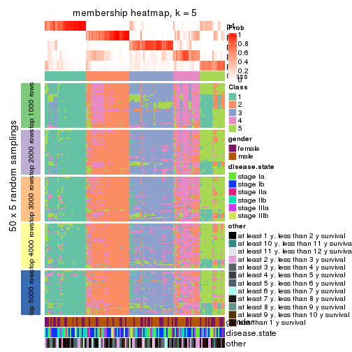
membership_heatmap(res, k = 6)
As soon as we have had the classes for columns, we can look for signatures which are significantly different between classes which can be candidate marks for certain classes. Following are the heatmaps for signatures.
Signature heatmaps where rows are scaled:
get_signatures(res, k = 2)
get_signatures(res, k = 3)
get_signatures(res, k = 4)

get_signatures(res, k = 5)
get_signatures(res, k = 6)
Signature heatmaps where rows are not scaled:
get_signatures(res, k = 2, scale_rows = FALSE)
get_signatures(res, k = 3, scale_rows = FALSE)
get_signatures(res, k = 4, scale_rows = FALSE)
get_signatures(res, k = 5, scale_rows = FALSE)
get_signatures(res, k = 6, scale_rows = FALSE)
Compare the overlap of signatures from different k:
compare_signatures(res)
get_signature() returns a data frame invisibly. TO get the list of signatures, the function
call should be assigned to a variable explicitly. In following code, if plot argument is set
to FALSE, no heatmap is plotted while only the differential analysis is performed.
# code only for demonstration
tb = get_signature(res, k = ..., plot = FALSE)
An example of the output of tb is:
#> which_row fdr mean_1 mean_2 scaled_mean_1 scaled_mean_2 km
#> 1 38 0.042760348 8.373488 9.131774 -0.5533452 0.5164555 1
#> 2 40 0.018707592 7.106213 8.469186 -0.6173731 0.5762149 1
#> 3 55 0.019134737 10.221463 11.207825 -0.6159697 0.5749050 1
#> 4 59 0.006059896 5.921854 7.869574 -0.6899429 0.6439467 1
#> 5 60 0.018055526 8.928898 10.211722 -0.6204761 0.5791110 1
#> 6 98 0.009384629 15.714769 14.887706 0.6635654 -0.6193277 2
...
The columns in tb are:
which_row: row indices corresponding to the input matrix.fdr: FDR for the differential test. mean_x: The mean value in group x.scaled_mean_x: The mean value in group x after rows are scaled.km: Row groups if k-means clustering is applied to rows.UMAP plot which shows how samples are separated.
dimension_reduction(res, k = 2, method = "UMAP")
dimension_reduction(res, k = 3, method = "UMAP")
dimension_reduction(res, k = 4, method = "UMAP")
dimension_reduction(res, k = 5, method = "UMAP")
dimension_reduction(res, k = 6, method = "UMAP")
Following heatmap shows how subgroups are split when increasing k:
collect_classes(res)
Test correlation between subgroups and known annotations. If the known annotation is numeric, one-way ANOVA test is applied, and if the known annotation is discrete, chi-squared contingency table test is applied.
test_to_known_factors(res)
#> n gender(p) disease.state(p) other(p) k
#> SD:skmeans 126 0.255 0.0922 0.433 2
#> SD:skmeans 127 0.119 0.3865 0.149 3
#> SD:skmeans 94 0.151 0.5458 0.320 4
#> SD:skmeans 86 0.839 0.1332 0.369 5
#> SD:skmeans 66 0.853 0.3469 0.255 6
If matrix rows can be associated to genes, consider to use functional_enrichment(res,
...) to perform function enrichment for the signature genes. See this vignette for more detailed explanations.
The object with results only for a single top-value method and a single partition method can be extracted as:
res = res_list["SD", "pam"]
# you can also extract it by
# res = res_list["SD:pam"]
A summary of res and all the functions that can be applied to it:
res
#> A 'ConsensusPartition' object with k = 2, 3, 4, 5, 6.
#> On a matrix with 21168 rows and 130 columns.
#> Top rows (1000, 2000, 3000, 4000, 5000) are extracted by 'SD' method.
#> Subgroups are detected by 'pam' method.
#> Performed in total 1250 partitions by row resampling.
#> Best k for subgroups seems to be 2.
#>
#> Following methods can be applied to this 'ConsensusPartition' object:
#> [1] "cola_report" "collect_classes" "collect_plots"
#> [4] "collect_stats" "colnames" "compare_signatures"
#> [7] "consensus_heatmap" "dimension_reduction" "functional_enrichment"
#> [10] "get_anno_col" "get_anno" "get_classes"
#> [13] "get_consensus" "get_matrix" "get_membership"
#> [16] "get_param" "get_signatures" "get_stats"
#> [19] "is_best_k" "is_stable_k" "membership_heatmap"
#> [22] "ncol" "nrow" "plot_ecdf"
#> [25] "rownames" "select_partition_number" "show"
#> [28] "suggest_best_k" "test_to_known_factors"
collect_plots() function collects all the plots made from res for all k (number of partitions)
into one single page to provide an easy and fast comparison between different k.
collect_plots(res)
The plots are:
k and the heatmap of
predicted classes for each k.k.k.k.All the plots in panels can be made by individual functions and they are plotted later in this section.
select_partition_number() produces several plots showing different
statistics for choosing “optimized” k. There are following statistics:
k;k, the area increased is defined as \(A_k - A_{k-1}\).The detailed explanations of these statistics can be found in the cola vignette.
Generally speaking, lower PAC score, higher mean silhouette score or higher
concordance corresponds to better partition. Rand index and Jaccard index
measure how similar the current partition is compared to partition with k-1.
If they are too similar, we won't accept k is better than k-1.
select_partition_number(res)
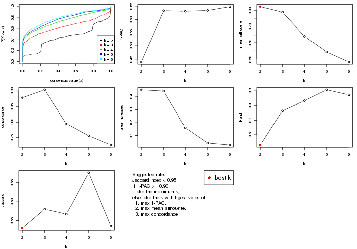
The numeric values for all these statistics can be obtained by get_stats().
get_stats(res)
#> k 1-PAC mean_silhouette concordance area_increased Rand Jaccard
#> 2 2 0.439 0.824 0.879 0.4494 0.531 0.531
#> 3 3 0.633 0.791 0.904 0.4397 0.766 0.580
#> 4 4 0.631 0.642 0.794 0.1583 0.834 0.567
#> 5 5 0.634 0.543 0.756 0.0435 0.907 0.676
#> 6 6 0.648 0.482 0.726 0.0286 0.873 0.536
suggest_best_k() suggests the best \(k\) based on these statistics. The rules are as follows:
suggest_best_k(res)
#> [1] 2
Following shows the table of the partitions (You need to click the show/hide
code output link to see it). The membership matrix (columns with name p*)
is inferred by
clue::cl_consensus()
function with the SE method. Basically the value in the membership matrix
represents the probability to belong to a certain group. The finall class
label for an item is determined with the group with highest probability it
belongs to.
In get_classes() function, the entropy is calculated from the membership
matrix and the silhouette score is calculated from the consensus matrix.
cbind(get_classes(res, k = 2), get_membership(res, k = 2))
#> class entropy silhouette p1 p2
#> GSM102191 2 0.9522 0.71828 0.372 0.628
#> GSM102240 2 0.8713 0.29577 0.292 0.708
#> GSM102175 1 0.7139 0.80787 0.804 0.196
#> GSM102134 2 0.8081 0.88401 0.248 0.752
#> GSM102171 1 0.7139 0.80787 0.804 0.196
#> GSM102178 1 0.1184 0.86161 0.984 0.016
#> GSM102198 2 0.7139 0.92936 0.196 0.804
#> GSM102221 1 0.7139 0.80787 0.804 0.196
#> GSM102223 2 0.7139 0.92936 0.196 0.804
#> GSM102229 1 0.2423 0.84449 0.960 0.040
#> GSM102153 1 0.7139 0.80787 0.804 0.196
#> GSM102220 1 0.3431 0.82157 0.936 0.064
#> GSM102202 2 0.7139 0.92936 0.196 0.804
#> GSM102123 1 0.0938 0.86224 0.988 0.012
#> GSM102125 2 0.7139 0.92936 0.196 0.804
#> GSM102136 2 0.9358 0.75238 0.352 0.648
#> GSM102197 1 0.1184 0.86161 0.984 0.016
#> GSM102131 1 0.1184 0.86161 0.984 0.016
#> GSM102132 1 0.0672 0.86251 0.992 0.008
#> GSM102212 2 0.7139 0.92936 0.196 0.804
#> GSM102117 2 1.0000 0.44693 0.496 0.504
#> GSM102124 2 0.7139 0.92936 0.196 0.804
#> GSM102172 1 0.7139 0.80787 0.804 0.196
#> GSM102199 2 0.9552 0.71792 0.376 0.624
#> GSM102203 2 0.9552 -0.00774 0.376 0.624
#> GSM102213 2 0.7139 0.92936 0.196 0.804
#> GSM102165 1 0.0938 0.86233 0.988 0.012
#> GSM102180 2 0.7139 0.92936 0.196 0.804
#> GSM102184 1 0.1184 0.86161 0.984 0.016
#> GSM102225 1 0.4815 0.77372 0.896 0.104
#> GSM102230 1 0.7139 0.80787 0.804 0.196
#> GSM102133 2 0.7139 0.92936 0.196 0.804
#> GSM102166 1 0.7139 0.80787 0.804 0.196
#> GSM102235 1 0.1414 0.86272 0.980 0.020
#> GSM102196 1 0.7139 0.80787 0.804 0.196
#> GSM102243 1 0.4939 0.76531 0.892 0.108
#> GSM102135 2 0.9686 0.68359 0.396 0.604
#> GSM102139 2 0.7139 0.92936 0.196 0.804
#> GSM102151 2 0.7139 0.92936 0.196 0.804
#> GSM102193 2 0.7139 0.92936 0.196 0.804
#> GSM102200 1 0.0672 0.86269 0.992 0.008
#> GSM102204 2 0.7139 0.92936 0.196 0.804
#> GSM102145 1 0.1184 0.86161 0.984 0.016
#> GSM102142 1 0.9732 -0.06457 0.596 0.404
#> GSM102179 2 0.9686 0.68187 0.396 0.604
#> GSM102181 1 0.1184 0.86161 0.984 0.016
#> GSM102154 1 0.1184 0.86161 0.984 0.016
#> GSM102152 2 0.8555 0.85411 0.280 0.720
#> GSM102162 2 0.7139 0.92936 0.196 0.804
#> GSM102187 1 0.8713 0.37010 0.708 0.292
#> GSM102116 1 0.1414 0.85941 0.980 0.020
#> GSM102150 1 0.7815 0.79778 0.768 0.232
#> GSM102227 1 0.6438 0.67748 0.836 0.164
#> GSM102114 1 0.7139 0.80787 0.804 0.196
#> GSM102177 1 0.7219 0.80921 0.800 0.200
#> GSM102160 2 0.7139 0.92936 0.196 0.804
#> GSM102161 1 0.7139 0.80787 0.804 0.196
#> GSM102170 2 0.7139 0.92936 0.196 0.804
#> GSM102205 1 0.1184 0.86161 0.984 0.016
#> GSM102118 1 0.1184 0.86161 0.984 0.016
#> GSM102156 1 0.1184 0.86161 0.984 0.016
#> GSM102238 1 0.7139 0.80787 0.804 0.196
#> GSM102143 1 0.1184 0.86147 0.984 0.016
#> GSM102144 2 0.7139 0.92936 0.196 0.804
#> GSM102209 1 0.4815 0.77178 0.896 0.104
#> GSM102210 1 0.4022 0.80311 0.920 0.080
#> GSM102140 1 0.1184 0.86161 0.984 0.016
#> GSM102242 1 0.0938 0.86233 0.988 0.012
#> GSM102141 1 0.1184 0.86161 0.984 0.016
#> GSM102120 1 0.1184 0.86161 0.984 0.016
#> GSM102127 1 0.1184 0.86161 0.984 0.016
#> GSM102149 1 0.0672 0.86174 0.992 0.008
#> GSM102232 2 0.7139 0.92936 0.196 0.804
#> GSM102222 2 0.7139 0.92936 0.196 0.804
#> GSM102236 1 0.6973 0.81131 0.812 0.188
#> GSM102215 2 0.7139 0.92936 0.196 0.804
#> GSM102194 2 0.7139 0.92936 0.196 0.804
#> GSM102208 2 0.7139 0.92936 0.196 0.804
#> GSM102130 2 0.7139 0.92936 0.196 0.804
#> GSM102188 1 0.1184 0.86161 0.984 0.016
#> GSM102233 1 0.7139 0.80787 0.804 0.196
#> GSM102189 2 0.7139 0.92936 0.196 0.804
#> GSM102234 1 0.1843 0.85459 0.972 0.028
#> GSM102237 1 0.7139 0.80787 0.804 0.196
#> GSM102159 1 0.2948 0.85813 0.948 0.052
#> GSM102155 1 0.4161 0.79855 0.916 0.084
#> GSM102137 1 0.0672 0.86269 0.992 0.008
#> GSM102217 2 0.7139 0.92936 0.196 0.804
#> GSM102126 1 0.0938 0.86233 0.988 0.012
#> GSM102157 2 0.9323 0.76204 0.348 0.652
#> GSM102163 1 0.7219 0.80945 0.800 0.200
#> GSM102182 2 0.3733 0.66277 0.072 0.928
#> GSM102167 2 0.7139 0.92936 0.196 0.804
#> GSM102206 1 0.7139 0.80787 0.804 0.196
#> GSM102224 2 0.7139 0.92936 0.196 0.804
#> GSM102164 2 0.7139 0.92936 0.196 0.804
#> GSM102174 1 0.7376 0.80700 0.792 0.208
#> GSM102214 1 0.2603 0.84155 0.956 0.044
#> GSM102226 1 0.8443 0.40657 0.728 0.272
#> GSM102195 1 0.1633 0.85708 0.976 0.024
#> GSM102218 1 0.1184 0.86161 0.984 0.016
#> GSM102128 2 0.7139 0.92936 0.196 0.804
#> GSM102168 1 0.7056 0.81534 0.808 0.192
#> GSM102190 1 0.7299 0.81039 0.796 0.204
#> GSM102201 2 0.7139 0.92936 0.196 0.804
#> GSM102129 1 0.1184 0.86161 0.984 0.016
#> GSM102192 1 0.2236 0.85820 0.964 0.036
#> GSM102183 1 0.1184 0.86161 0.984 0.016
#> GSM102185 1 0.7139 0.80787 0.804 0.196
#> GSM102158 2 0.7056 0.92581 0.192 0.808
#> GSM102169 1 0.1184 0.86161 0.984 0.016
#> GSM102216 1 0.0938 0.86020 0.988 0.012
#> GSM102219 1 0.0376 0.86220 0.996 0.004
#> GSM102231 1 0.2423 0.84533 0.960 0.040
#> GSM102147 2 0.7139 0.92936 0.196 0.804
#> GSM102176 1 0.7139 0.80787 0.804 0.196
#> GSM102148 1 0.0672 0.86251 0.992 0.008
#> GSM102146 1 0.6973 0.81378 0.812 0.188
#> GSM102241 1 0.7139 0.80787 0.804 0.196
#> GSM102211 1 0.7139 0.80787 0.804 0.196
#> GSM102115 1 0.9933 0.52729 0.548 0.452
#> GSM102173 1 0.7139 0.80787 0.804 0.196
#> GSM102138 2 0.7139 0.92936 0.196 0.804
#> GSM102228 1 0.1184 0.86161 0.984 0.016
#> GSM102207 1 0.1184 0.86161 0.984 0.016
#> GSM102122 1 0.4690 0.83902 0.900 0.100
#> GSM102119 2 0.7219 0.92632 0.200 0.800
#> GSM102186 2 0.7139 0.92936 0.196 0.804
#> GSM102239 1 0.7139 0.80787 0.804 0.196
#> GSM102121 2 0.7139 0.92936 0.196 0.804
cbind(get_classes(res, k = 3), get_membership(res, k = 3))
#> class entropy silhouette p1 p2 p3
#> GSM102191 2 0.3038 0.821 0.000 0.896 0.104
#> GSM102240 1 0.0424 0.899 0.992 0.000 0.008
#> GSM102175 1 0.0000 0.901 1.000 0.000 0.000
#> GSM102134 2 0.5016 0.702 0.000 0.760 0.240
#> GSM102171 1 0.2537 0.863 0.920 0.000 0.080
#> GSM102178 3 0.0424 0.891 0.008 0.000 0.992
#> GSM102198 2 0.0237 0.875 0.000 0.996 0.004
#> GSM102221 1 0.2066 0.879 0.940 0.000 0.060
#> GSM102223 2 0.0237 0.875 0.000 0.996 0.004
#> GSM102229 3 0.0829 0.889 0.004 0.012 0.984
#> GSM102153 1 0.0000 0.901 1.000 0.000 0.000
#> GSM102220 3 0.2173 0.870 0.008 0.048 0.944
#> GSM102202 2 0.0424 0.874 0.000 0.992 0.008
#> GSM102123 3 0.0592 0.891 0.012 0.000 0.988
#> GSM102125 2 0.0000 0.876 0.000 1.000 0.000
#> GSM102136 2 0.2448 0.841 0.000 0.924 0.076
#> GSM102197 3 0.0424 0.891 0.008 0.000 0.992
#> GSM102131 3 0.0424 0.891 0.008 0.000 0.992
#> GSM102132 3 0.0892 0.888 0.020 0.000 0.980
#> GSM102212 2 0.0000 0.876 0.000 1.000 0.000
#> GSM102117 2 0.7925 0.406 0.072 0.584 0.344
#> GSM102124 2 0.3412 0.819 0.000 0.876 0.124
#> GSM102172 1 0.0000 0.901 1.000 0.000 0.000
#> GSM102199 2 0.6307 0.152 0.000 0.512 0.488
#> GSM102203 1 0.9742 0.272 0.448 0.280 0.272
#> GSM102213 2 0.3192 0.831 0.000 0.888 0.112
#> GSM102165 3 0.0424 0.891 0.008 0.000 0.992
#> GSM102180 2 0.0000 0.876 0.000 1.000 0.000
#> GSM102184 3 0.3482 0.818 0.128 0.000 0.872
#> GSM102225 3 0.3619 0.793 0.000 0.136 0.864
#> GSM102230 1 0.0424 0.899 0.992 0.000 0.008
#> GSM102133 2 0.0000 0.876 0.000 1.000 0.000
#> GSM102166 1 0.0000 0.901 1.000 0.000 0.000
#> GSM102235 3 0.2261 0.860 0.068 0.000 0.932
#> GSM102196 1 0.3038 0.847 0.896 0.000 0.104
#> GSM102243 3 0.6654 0.122 0.008 0.456 0.536
#> GSM102135 3 0.6308 -0.119 0.000 0.492 0.508
#> GSM102139 2 0.0000 0.876 0.000 1.000 0.000
#> GSM102151 2 0.5859 0.530 0.000 0.656 0.344
#> GSM102193 2 0.0000 0.876 0.000 1.000 0.000
#> GSM102200 3 0.0747 0.889 0.016 0.000 0.984
#> GSM102204 2 0.0000 0.876 0.000 1.000 0.000
#> GSM102145 3 0.0424 0.891 0.008 0.000 0.992
#> GSM102142 2 0.4750 0.696 0.000 0.784 0.216
#> GSM102179 2 0.4121 0.764 0.000 0.832 0.168
#> GSM102181 3 0.0000 0.890 0.000 0.000 1.000
#> GSM102154 3 0.0000 0.890 0.000 0.000 1.000
#> GSM102152 2 0.6267 0.280 0.000 0.548 0.452
#> GSM102162 2 0.0000 0.876 0.000 1.000 0.000
#> GSM102187 2 0.6498 0.351 0.008 0.596 0.396
#> GSM102116 3 0.4351 0.783 0.168 0.004 0.828
#> GSM102150 1 0.1964 0.881 0.944 0.000 0.056
#> GSM102227 3 0.3752 0.786 0.000 0.144 0.856
#> GSM102114 3 0.5733 0.466 0.324 0.000 0.676
#> GSM102177 1 0.4062 0.772 0.836 0.000 0.164
#> GSM102160 2 0.0000 0.876 0.000 1.000 0.000
#> GSM102161 1 0.0424 0.899 0.992 0.000 0.008
#> GSM102170 2 0.0000 0.876 0.000 1.000 0.000
#> GSM102205 3 0.0000 0.890 0.000 0.000 1.000
#> GSM102118 3 0.0424 0.891 0.008 0.000 0.992
#> GSM102156 3 0.0000 0.890 0.000 0.000 1.000
#> GSM102238 1 0.2537 0.863 0.920 0.000 0.080
#> GSM102143 3 0.3412 0.820 0.124 0.000 0.876
#> GSM102144 2 0.1753 0.861 0.000 0.952 0.048
#> GSM102209 3 0.3038 0.821 0.000 0.104 0.896
#> GSM102210 3 0.4605 0.713 0.000 0.204 0.796
#> GSM102140 3 0.0424 0.891 0.008 0.000 0.992
#> GSM102242 3 0.0000 0.890 0.000 0.000 1.000
#> GSM102141 3 0.0000 0.890 0.000 0.000 1.000
#> GSM102120 3 0.0000 0.890 0.000 0.000 1.000
#> GSM102127 3 0.0424 0.891 0.008 0.000 0.992
#> GSM102149 3 0.4452 0.760 0.192 0.000 0.808
#> GSM102232 2 0.4062 0.788 0.000 0.836 0.164
#> GSM102222 2 0.0000 0.876 0.000 1.000 0.000
#> GSM102236 1 0.5529 0.579 0.704 0.000 0.296
#> GSM102215 2 0.0000 0.876 0.000 1.000 0.000
#> GSM102194 2 0.0000 0.876 0.000 1.000 0.000
#> GSM102208 2 0.0000 0.876 0.000 1.000 0.000
#> GSM102130 2 0.0000 0.876 0.000 1.000 0.000
#> GSM102188 3 0.0592 0.890 0.012 0.000 0.988
#> GSM102233 1 0.0000 0.901 1.000 0.000 0.000
#> GSM102189 2 0.0000 0.876 0.000 1.000 0.000
#> GSM102234 3 0.1170 0.887 0.008 0.016 0.976
#> GSM102237 1 0.1163 0.895 0.972 0.000 0.028
#> GSM102159 3 0.2537 0.850 0.080 0.000 0.920
#> GSM102155 3 0.3845 0.813 0.012 0.116 0.872
#> GSM102137 3 0.0983 0.888 0.016 0.004 0.980
#> GSM102217 2 0.5560 0.618 0.000 0.700 0.300
#> GSM102126 3 0.0424 0.891 0.008 0.000 0.992
#> GSM102157 2 0.5733 0.572 0.000 0.676 0.324
#> GSM102163 1 0.6180 0.350 0.584 0.000 0.416
#> GSM102182 1 0.2584 0.861 0.928 0.064 0.008
#> GSM102167 2 0.0424 0.874 0.000 0.992 0.008
#> GSM102206 1 0.0424 0.899 0.992 0.000 0.008
#> GSM102224 2 0.0000 0.876 0.000 1.000 0.000
#> GSM102164 2 0.0000 0.876 0.000 1.000 0.000
#> GSM102174 1 0.0000 0.901 1.000 0.000 0.000
#> GSM102214 3 0.1832 0.877 0.008 0.036 0.956
#> GSM102226 3 0.4796 0.671 0.000 0.220 0.780
#> GSM102195 3 0.0424 0.891 0.008 0.000 0.992
#> GSM102218 3 0.0424 0.891 0.008 0.000 0.992
#> GSM102128 2 0.0237 0.875 0.000 0.996 0.004
#> GSM102168 3 0.6111 0.272 0.396 0.000 0.604
#> GSM102190 1 0.6154 0.291 0.592 0.000 0.408
#> GSM102201 2 0.8188 0.377 0.080 0.548 0.372
#> GSM102129 3 0.0000 0.890 0.000 0.000 1.000
#> GSM102192 3 0.3752 0.807 0.144 0.000 0.856
#> GSM102183 3 0.0424 0.891 0.008 0.000 0.992
#> GSM102185 1 0.1289 0.892 0.968 0.000 0.032
#> GSM102158 2 0.0000 0.876 0.000 1.000 0.000
#> GSM102169 3 0.0424 0.891 0.008 0.000 0.992
#> GSM102216 3 0.3619 0.812 0.136 0.000 0.864
#> GSM102219 3 0.4887 0.721 0.228 0.000 0.772
#> GSM102231 3 0.1585 0.882 0.008 0.028 0.964
#> GSM102147 2 0.0000 0.876 0.000 1.000 0.000
#> GSM102176 1 0.0000 0.901 1.000 0.000 0.000
#> GSM102148 3 0.0747 0.890 0.016 0.000 0.984
#> GSM102146 3 0.5785 0.541 0.332 0.000 0.668
#> GSM102241 1 0.4002 0.793 0.840 0.000 0.160
#> GSM102211 1 0.0424 0.901 0.992 0.000 0.008
#> GSM102115 1 0.1950 0.889 0.952 0.008 0.040
#> GSM102173 1 0.0000 0.901 1.000 0.000 0.000
#> GSM102138 2 0.2537 0.848 0.000 0.920 0.080
#> GSM102228 3 0.5859 0.457 0.344 0.000 0.656
#> GSM102207 3 0.0000 0.890 0.000 0.000 1.000
#> GSM102122 3 0.4887 0.713 0.228 0.000 0.772
#> GSM102119 2 0.4121 0.783 0.000 0.832 0.168
#> GSM102186 2 0.1964 0.858 0.000 0.944 0.056
#> GSM102239 1 0.0000 0.901 1.000 0.000 0.000
#> GSM102121 2 0.0000 0.876 0.000 1.000 0.000
cbind(get_classes(res, k = 4), get_membership(res, k = 4))
#> class entropy silhouette p1 p2 p3 p4
#> GSM102191 2 0.2704 0.8090 0.000 0.876 0.124 0.000
#> GSM102240 1 0.2799 0.8386 0.884 0.000 0.008 0.108
#> GSM102175 1 0.0000 0.9205 1.000 0.000 0.000 0.000
#> GSM102134 2 0.5306 0.4567 0.000 0.632 0.020 0.348
#> GSM102171 1 0.1211 0.9018 0.960 0.000 0.040 0.000
#> GSM102178 3 0.0921 0.6592 0.000 0.000 0.972 0.028
#> GSM102198 2 0.0376 0.9020 0.000 0.992 0.004 0.004
#> GSM102221 1 0.2408 0.8601 0.896 0.000 0.104 0.000
#> GSM102223 2 0.0188 0.9030 0.000 0.996 0.000 0.004
#> GSM102229 4 0.0707 0.6324 0.000 0.000 0.020 0.980
#> GSM102153 1 0.0000 0.9205 1.000 0.000 0.000 0.000
#> GSM102220 4 0.4040 0.5719 0.000 0.000 0.248 0.752
#> GSM102202 2 0.2216 0.8505 0.000 0.908 0.000 0.092
#> GSM102123 3 0.0895 0.6594 0.004 0.000 0.976 0.020
#> GSM102125 2 0.0188 0.9028 0.000 0.996 0.004 0.000
#> GSM102136 2 0.3966 0.7963 0.000 0.840 0.088 0.072
#> GSM102197 3 0.4697 0.1960 0.000 0.000 0.644 0.356
#> GSM102131 4 0.4855 0.4617 0.000 0.000 0.400 0.600
#> GSM102132 3 0.1042 0.6600 0.008 0.000 0.972 0.020
#> GSM102212 2 0.0000 0.9043 0.000 1.000 0.000 0.000
#> GSM102117 2 0.8081 0.2219 0.052 0.516 0.304 0.128
#> GSM102124 2 0.3942 0.6876 0.000 0.764 0.000 0.236
#> GSM102172 1 0.0188 0.9197 0.996 0.000 0.004 0.000
#> GSM102199 4 0.1833 0.6296 0.000 0.032 0.024 0.944
#> GSM102203 3 0.9556 0.1206 0.288 0.112 0.320 0.280
#> GSM102213 2 0.4546 0.6568 0.000 0.732 0.012 0.256
#> GSM102165 4 0.4998 0.3128 0.000 0.000 0.488 0.512
#> GSM102180 2 0.0000 0.9043 0.000 1.000 0.000 0.000
#> GSM102184 4 0.4916 0.2514 0.000 0.000 0.424 0.576
#> GSM102225 4 0.5313 0.1754 0.000 0.016 0.376 0.608
#> GSM102230 1 0.0000 0.9205 1.000 0.000 0.000 0.000
#> GSM102133 2 0.0000 0.9043 0.000 1.000 0.000 0.000
#> GSM102166 1 0.0000 0.9205 1.000 0.000 0.000 0.000
#> GSM102235 3 0.0672 0.6576 0.008 0.000 0.984 0.008
#> GSM102196 1 0.2675 0.8494 0.892 0.000 0.100 0.008
#> GSM102243 3 0.4453 0.4830 0.000 0.244 0.744 0.012
#> GSM102135 4 0.1022 0.6295 0.000 0.000 0.032 0.968
#> GSM102139 2 0.0000 0.9043 0.000 1.000 0.000 0.000
#> GSM102151 4 0.3219 0.5592 0.000 0.164 0.000 0.836
#> GSM102193 2 0.0000 0.9043 0.000 1.000 0.000 0.000
#> GSM102200 3 0.3569 0.5888 0.000 0.000 0.804 0.196
#> GSM102204 2 0.0000 0.9043 0.000 1.000 0.000 0.000
#> GSM102145 4 0.4500 0.5298 0.000 0.000 0.316 0.684
#> GSM102142 2 0.4855 0.4138 0.000 0.644 0.352 0.004
#> GSM102179 2 0.3219 0.7668 0.000 0.836 0.164 0.000
#> GSM102181 3 0.4356 0.4840 0.000 0.000 0.708 0.292
#> GSM102154 4 0.4643 0.3993 0.000 0.000 0.344 0.656
#> GSM102152 4 0.0336 0.6272 0.000 0.008 0.000 0.992
#> GSM102162 2 0.0000 0.9043 0.000 1.000 0.000 0.000
#> GSM102187 3 0.4920 0.3110 0.000 0.368 0.628 0.004
#> GSM102116 3 0.4948 0.5864 0.100 0.000 0.776 0.124
#> GSM102150 1 0.3725 0.7439 0.812 0.000 0.008 0.180
#> GSM102227 4 0.2081 0.6195 0.000 0.000 0.084 0.916
#> GSM102114 3 0.1004 0.6575 0.024 0.000 0.972 0.004
#> GSM102177 1 0.4164 0.6001 0.736 0.000 0.264 0.000
#> GSM102160 2 0.0000 0.9043 0.000 1.000 0.000 0.000
#> GSM102161 1 0.0000 0.9205 1.000 0.000 0.000 0.000
#> GSM102170 2 0.0000 0.9043 0.000 1.000 0.000 0.000
#> GSM102205 3 0.4454 0.4710 0.000 0.000 0.692 0.308
#> GSM102118 4 0.4776 0.4634 0.000 0.000 0.376 0.624
#> GSM102156 3 0.3356 0.5889 0.000 0.000 0.824 0.176
#> GSM102238 1 0.1474 0.8928 0.948 0.000 0.052 0.000
#> GSM102143 4 0.4996 0.1190 0.000 0.000 0.484 0.516
#> GSM102144 2 0.1474 0.8773 0.000 0.948 0.000 0.052
#> GSM102209 4 0.4989 -0.0490 0.000 0.000 0.472 0.528
#> GSM102210 3 0.4283 0.5269 0.000 0.004 0.740 0.256
#> GSM102140 4 0.3123 0.6050 0.000 0.000 0.156 0.844
#> GSM102242 4 0.3123 0.5892 0.000 0.000 0.156 0.844
#> GSM102141 4 0.4761 0.2834 0.000 0.000 0.372 0.628
#> GSM102120 4 0.4855 0.1892 0.000 0.000 0.400 0.600
#> GSM102127 3 0.2921 0.5597 0.000 0.000 0.860 0.140
#> GSM102149 4 0.6273 -0.0491 0.056 0.000 0.456 0.488
#> GSM102232 2 0.4792 0.5580 0.000 0.680 0.008 0.312
#> GSM102222 2 0.0000 0.9043 0.000 1.000 0.000 0.000
#> GSM102236 1 0.5119 0.2103 0.556 0.000 0.440 0.004
#> GSM102215 2 0.0000 0.9043 0.000 1.000 0.000 0.000
#> GSM102194 2 0.0000 0.9043 0.000 1.000 0.000 0.000
#> GSM102208 2 0.0000 0.9043 0.000 1.000 0.000 0.000
#> GSM102130 2 0.0000 0.9043 0.000 1.000 0.000 0.000
#> GSM102188 3 0.0336 0.6573 0.000 0.000 0.992 0.008
#> GSM102233 1 0.0000 0.9205 1.000 0.000 0.000 0.000
#> GSM102189 2 0.0000 0.9043 0.000 1.000 0.000 0.000
#> GSM102234 4 0.3688 0.5817 0.000 0.000 0.208 0.792
#> GSM102237 1 0.0188 0.9198 0.996 0.000 0.004 0.000
#> GSM102159 3 0.0804 0.6568 0.008 0.000 0.980 0.012
#> GSM102155 3 0.4581 0.5418 0.000 0.080 0.800 0.120
#> GSM102137 4 0.4222 0.4748 0.000 0.000 0.272 0.728
#> GSM102217 4 0.4428 0.4474 0.000 0.276 0.004 0.720
#> GSM102126 4 0.4382 0.5525 0.000 0.000 0.296 0.704
#> GSM102157 4 0.7173 0.3229 0.000 0.228 0.216 0.556
#> GSM102163 3 0.5290 0.2037 0.404 0.000 0.584 0.012
#> GSM102182 1 0.2124 0.8682 0.924 0.068 0.008 0.000
#> GSM102167 2 0.1151 0.8906 0.000 0.968 0.008 0.024
#> GSM102206 1 0.0000 0.9205 1.000 0.000 0.000 0.000
#> GSM102224 2 0.0000 0.9043 0.000 1.000 0.000 0.000
#> GSM102164 2 0.0000 0.9043 0.000 1.000 0.000 0.000
#> GSM102174 1 0.0336 0.9185 0.992 0.000 0.008 0.000
#> GSM102214 3 0.4977 -0.0821 0.000 0.000 0.540 0.460
#> GSM102226 4 0.1940 0.6230 0.000 0.000 0.076 0.924
#> GSM102195 4 0.3528 0.5917 0.000 0.000 0.192 0.808
#> GSM102218 4 0.3444 0.6088 0.000 0.000 0.184 0.816
#> GSM102128 2 0.0188 0.9030 0.000 0.996 0.000 0.004
#> GSM102168 3 0.2480 0.6305 0.088 0.000 0.904 0.008
#> GSM102190 3 0.6060 0.1952 0.440 0.000 0.516 0.044
#> GSM102201 4 0.0779 0.6284 0.004 0.016 0.000 0.980
#> GSM102129 4 0.0000 0.6269 0.000 0.000 0.000 1.000
#> GSM102192 4 0.5807 0.3672 0.044 0.000 0.344 0.612
#> GSM102183 3 0.1211 0.6531 0.000 0.000 0.960 0.040
#> GSM102185 1 0.0707 0.9134 0.980 0.000 0.020 0.000
#> GSM102158 2 0.0188 0.9030 0.000 0.996 0.004 0.000
#> GSM102169 4 0.4790 0.4965 0.000 0.000 0.380 0.620
#> GSM102216 3 0.4925 0.1990 0.000 0.000 0.572 0.428
#> GSM102219 4 0.5119 0.5647 0.112 0.000 0.124 0.764
#> GSM102231 4 0.4999 0.1699 0.000 0.000 0.492 0.508
#> GSM102147 2 0.0000 0.9043 0.000 1.000 0.000 0.000
#> GSM102176 1 0.0336 0.9185 0.992 0.000 0.008 0.000
#> GSM102148 3 0.4313 0.3680 0.004 0.000 0.736 0.260
#> GSM102146 3 0.3978 0.6280 0.108 0.000 0.836 0.056
#> GSM102241 1 0.3907 0.6899 0.768 0.000 0.232 0.000
#> GSM102211 1 0.0336 0.9190 0.992 0.000 0.008 0.000
#> GSM102115 1 0.1557 0.8949 0.944 0.000 0.056 0.000
#> GSM102173 1 0.0000 0.9205 1.000 0.000 0.000 0.000
#> GSM102138 2 0.5099 0.4167 0.000 0.612 0.008 0.380
#> GSM102228 4 0.7082 0.2851 0.152 0.000 0.308 0.540
#> GSM102207 3 0.4907 0.2393 0.000 0.000 0.580 0.420
#> GSM102122 3 0.4784 0.6010 0.100 0.000 0.788 0.112
#> GSM102119 2 0.3791 0.7216 0.000 0.796 0.004 0.200
#> GSM102186 2 0.1557 0.8745 0.000 0.944 0.000 0.056
#> GSM102239 1 0.0524 0.9183 0.988 0.000 0.008 0.004
#> GSM102121 2 0.0000 0.9043 0.000 1.000 0.000 0.000
cbind(get_classes(res, k = 5), get_membership(res, k = 5))
#> class entropy silhouette p1 p2 p3 p4 p5
#> GSM102191 2 0.2074 0.8092 0.000 0.896 0.104 0.000 0.000
#> GSM102240 5 0.5078 0.5668 0.388 0.000 0.004 0.032 0.576
#> GSM102175 1 0.0000 0.7898 1.000 0.000 0.000 0.000 0.000
#> GSM102134 2 0.4674 0.3283 0.000 0.568 0.016 0.416 0.000
#> GSM102171 1 0.0510 0.7845 0.984 0.000 0.000 0.000 0.016
#> GSM102178 3 0.4730 0.5069 0.000 0.000 0.688 0.052 0.260
#> GSM102198 2 0.1012 0.8703 0.000 0.968 0.012 0.020 0.000
#> GSM102221 5 0.3983 0.6523 0.340 0.000 0.000 0.000 0.660
#> GSM102223 2 0.0609 0.8732 0.000 0.980 0.000 0.020 0.000
#> GSM102229 4 0.1410 0.6360 0.000 0.000 0.060 0.940 0.000
#> GSM102153 1 0.0000 0.7898 1.000 0.000 0.000 0.000 0.000
#> GSM102220 4 0.5019 0.4343 0.000 0.000 0.052 0.632 0.316
#> GSM102202 2 0.1732 0.8431 0.000 0.920 0.000 0.080 0.000
#> GSM102123 3 0.6210 0.4939 0.032 0.000 0.628 0.140 0.200
#> GSM102125 2 0.0404 0.8748 0.000 0.988 0.012 0.000 0.000
#> GSM102136 2 0.2554 0.8189 0.000 0.892 0.072 0.036 0.000
#> GSM102197 3 0.6820 0.2341 0.000 0.000 0.352 0.316 0.332
#> GSM102131 4 0.6287 0.2748 0.000 0.000 0.184 0.520 0.296
#> GSM102132 3 0.4665 0.5052 0.000 0.000 0.692 0.048 0.260
#> GSM102212 2 0.0000 0.8782 0.000 1.000 0.000 0.000 0.000
#> GSM102117 2 0.8263 -0.0843 0.024 0.364 0.292 0.056 0.264
#> GSM102124 2 0.4184 0.5887 0.000 0.700 0.016 0.284 0.000
#> GSM102172 1 0.0703 0.7745 0.976 0.000 0.000 0.000 0.024
#> GSM102199 4 0.3061 0.6213 0.000 0.020 0.136 0.844 0.000
#> GSM102203 5 0.7857 0.3281 0.036 0.092 0.332 0.080 0.460
#> GSM102213 2 0.5277 0.5566 0.000 0.664 0.228 0.108 0.000
#> GSM102165 4 0.4793 0.4461 0.000 0.000 0.260 0.684 0.056
#> GSM102180 2 0.0000 0.8782 0.000 1.000 0.000 0.000 0.000
#> GSM102184 3 0.4300 -0.1167 0.000 0.000 0.524 0.476 0.000
#> GSM102225 3 0.4196 0.1910 0.000 0.000 0.640 0.356 0.004
#> GSM102230 1 0.0290 0.7894 0.992 0.000 0.000 0.000 0.008
#> GSM102133 2 0.0000 0.8782 0.000 1.000 0.000 0.000 0.000
#> GSM102166 1 0.0000 0.7898 1.000 0.000 0.000 0.000 0.000
#> GSM102235 3 0.7330 0.4216 0.188 0.000 0.436 0.044 0.332
#> GSM102196 1 0.1894 0.7228 0.920 0.000 0.072 0.000 0.008
#> GSM102243 3 0.6452 0.3915 0.000 0.260 0.540 0.008 0.192
#> GSM102135 4 0.2471 0.6237 0.000 0.000 0.136 0.864 0.000
#> GSM102139 2 0.0000 0.8782 0.000 1.000 0.000 0.000 0.000
#> GSM102151 4 0.2516 0.5723 0.000 0.140 0.000 0.860 0.000
#> GSM102193 2 0.0000 0.8782 0.000 1.000 0.000 0.000 0.000
#> GSM102200 3 0.2228 0.5060 0.000 0.000 0.912 0.040 0.048
#> GSM102204 2 0.0000 0.8782 0.000 1.000 0.000 0.000 0.000
#> GSM102145 4 0.3577 0.5437 0.000 0.000 0.160 0.808 0.032
#> GSM102142 2 0.4108 0.5109 0.000 0.684 0.308 0.000 0.008
#> GSM102179 2 0.2230 0.8035 0.000 0.884 0.116 0.000 0.000
#> GSM102181 3 0.2136 0.4690 0.000 0.000 0.904 0.088 0.008
#> GSM102154 3 0.4126 -0.0253 0.000 0.000 0.620 0.380 0.000
#> GSM102152 4 0.3636 0.5051 0.000 0.000 0.272 0.728 0.000
#> GSM102162 2 0.0000 0.8782 0.000 1.000 0.000 0.000 0.000
#> GSM102187 3 0.7678 0.3120 0.000 0.284 0.336 0.048 0.332
#> GSM102116 5 0.5094 0.4682 0.048 0.000 0.352 0.000 0.600
#> GSM102150 1 0.6203 0.0377 0.464 0.000 0.396 0.140 0.000
#> GSM102227 4 0.2127 0.6308 0.000 0.000 0.108 0.892 0.000
#> GSM102114 3 0.7540 0.3972 0.240 0.000 0.384 0.044 0.332
#> GSM102177 5 0.3796 0.6621 0.300 0.000 0.000 0.000 0.700
#> GSM102160 2 0.0000 0.8782 0.000 1.000 0.000 0.000 0.000
#> GSM102161 1 0.2864 0.6426 0.864 0.000 0.112 0.000 0.024
#> GSM102170 2 0.0000 0.8782 0.000 1.000 0.000 0.000 0.000
#> GSM102205 3 0.2020 0.4626 0.000 0.000 0.900 0.100 0.000
#> GSM102118 4 0.6068 0.2535 0.000 0.000 0.140 0.532 0.328
#> GSM102156 3 0.0404 0.4918 0.000 0.000 0.988 0.012 0.000
#> GSM102238 1 0.0880 0.7707 0.968 0.000 0.000 0.000 0.032
#> GSM102143 3 0.3452 0.2181 0.000 0.000 0.756 0.244 0.000
#> GSM102144 2 0.1544 0.8481 0.000 0.932 0.000 0.068 0.000
#> GSM102209 3 0.3636 0.3245 0.000 0.000 0.728 0.272 0.000
#> GSM102210 3 0.1430 0.4858 0.000 0.004 0.944 0.052 0.000
#> GSM102140 4 0.1792 0.6321 0.000 0.000 0.000 0.916 0.084
#> GSM102242 4 0.2230 0.6270 0.000 0.000 0.116 0.884 0.000
#> GSM102141 3 0.5458 0.0605 0.000 0.000 0.552 0.380 0.068
#> GSM102120 3 0.4138 0.0920 0.000 0.000 0.616 0.384 0.000
#> GSM102127 3 0.6245 0.4263 0.000 0.000 0.516 0.168 0.316
#> GSM102149 3 0.4725 0.3686 0.076 0.000 0.732 0.188 0.004
#> GSM102232 2 0.5904 0.4133 0.000 0.596 0.172 0.232 0.000
#> GSM102222 2 0.0510 0.8736 0.000 0.984 0.000 0.016 0.000
#> GSM102236 5 0.5363 0.5382 0.184 0.000 0.132 0.004 0.680
#> GSM102215 2 0.0404 0.8750 0.000 0.988 0.000 0.012 0.000
#> GSM102194 2 0.0000 0.8782 0.000 1.000 0.000 0.000 0.000
#> GSM102208 2 0.0000 0.8782 0.000 1.000 0.000 0.000 0.000
#> GSM102130 2 0.0000 0.8782 0.000 1.000 0.000 0.000 0.000
#> GSM102188 3 0.5107 0.4851 0.004 0.000 0.620 0.044 0.332
#> GSM102233 1 0.0290 0.7894 0.992 0.000 0.000 0.000 0.008
#> GSM102189 2 0.0000 0.8782 0.000 1.000 0.000 0.000 0.000
#> GSM102234 4 0.3796 0.4939 0.000 0.000 0.000 0.700 0.300
#> GSM102237 1 0.0955 0.7737 0.968 0.000 0.028 0.004 0.000
#> GSM102159 3 0.5571 0.4816 0.020 0.000 0.600 0.048 0.332
#> GSM102155 3 0.7981 0.3961 0.028 0.060 0.428 0.152 0.332
#> GSM102137 4 0.4299 0.3711 0.000 0.000 0.388 0.608 0.004
#> GSM102217 4 0.6346 0.3388 0.000 0.212 0.236 0.548 0.004
#> GSM102126 4 0.2006 0.6308 0.000 0.000 0.072 0.916 0.012
#> GSM102157 3 0.6519 -0.2034 0.000 0.192 0.404 0.404 0.000
#> GSM102163 3 0.6948 0.1606 0.372 0.000 0.416 0.016 0.196
#> GSM102182 1 0.5310 0.3349 0.696 0.164 0.008 0.000 0.132
#> GSM102167 2 0.0693 0.8727 0.000 0.980 0.000 0.008 0.012
#> GSM102206 1 0.1697 0.7429 0.932 0.000 0.000 0.060 0.008
#> GSM102224 2 0.0000 0.8782 0.000 1.000 0.000 0.000 0.000
#> GSM102164 2 0.0000 0.8782 0.000 1.000 0.000 0.000 0.000
#> GSM102174 5 0.3983 0.6523 0.340 0.000 0.000 0.000 0.660
#> GSM102214 4 0.6748 -0.1126 0.000 0.000 0.276 0.404 0.320
#> GSM102226 4 0.4126 0.3942 0.000 0.000 0.380 0.620 0.000
#> GSM102195 4 0.3452 0.5453 0.000 0.000 0.000 0.756 0.244
#> GSM102218 4 0.1740 0.6374 0.000 0.000 0.012 0.932 0.056
#> GSM102128 2 0.0000 0.8782 0.000 1.000 0.000 0.000 0.000
#> GSM102168 3 0.7330 0.4207 0.188 0.000 0.436 0.044 0.332
#> GSM102190 5 0.6646 0.5042 0.324 0.000 0.240 0.000 0.436
#> GSM102201 4 0.2625 0.6276 0.000 0.016 0.108 0.876 0.000
#> GSM102129 4 0.2020 0.6347 0.000 0.000 0.100 0.900 0.000
#> GSM102192 4 0.4310 0.4090 0.000 0.000 0.392 0.604 0.004
#> GSM102183 3 0.5199 0.4909 0.000 0.000 0.636 0.072 0.292
#> GSM102185 1 0.0162 0.7900 0.996 0.000 0.000 0.000 0.004
#> GSM102158 2 0.4045 0.4522 0.000 0.644 0.000 0.000 0.356
#> GSM102169 4 0.5878 0.3276 0.000 0.000 0.120 0.556 0.324
#> GSM102216 3 0.3109 0.3646 0.000 0.000 0.800 0.200 0.000
#> GSM102219 4 0.5433 0.4909 0.152 0.000 0.068 0.720 0.060
#> GSM102231 4 0.6621 -0.0159 0.000 0.000 0.240 0.448 0.312
#> GSM102147 2 0.0162 0.8772 0.000 0.996 0.004 0.000 0.000
#> GSM102176 1 0.3966 0.1398 0.664 0.000 0.000 0.000 0.336
#> GSM102148 3 0.6736 0.2677 0.000 0.000 0.412 0.312 0.276
#> GSM102146 3 0.4888 0.5158 0.072 0.000 0.752 0.028 0.148
#> GSM102241 1 0.5140 0.2880 0.624 0.000 0.008 0.040 0.328
#> GSM102211 1 0.0451 0.7889 0.988 0.000 0.004 0.000 0.008
#> GSM102115 1 0.5036 -0.3543 0.516 0.000 0.032 0.000 0.452
#> GSM102173 1 0.0000 0.7898 1.000 0.000 0.000 0.000 0.000
#> GSM102138 2 0.6497 0.1280 0.000 0.472 0.320 0.208 0.000
#> GSM102228 3 0.5626 0.0131 0.092 0.000 0.572 0.336 0.000
#> GSM102207 3 0.4587 0.3670 0.000 0.000 0.728 0.204 0.068
#> GSM102122 3 0.4205 0.4838 0.108 0.000 0.804 0.068 0.020
#> GSM102119 2 0.3266 0.7015 0.000 0.796 0.004 0.200 0.000
#> GSM102186 2 0.1845 0.8437 0.000 0.928 0.000 0.056 0.016
#> GSM102239 5 0.4118 0.6547 0.336 0.000 0.000 0.004 0.660
#> GSM102121 2 0.0000 0.8782 0.000 1.000 0.000 0.000 0.000
cbind(get_classes(res, k = 6), get_membership(res, k = 6))
#> class entropy silhouette p1 p2 p3 p4 p5 p6
#> GSM102191 2 0.1806 0.82796 0.000 0.908 0.088 0.004 0.000 0.000
#> GSM102240 5 0.2053 0.71157 0.108 0.000 0.000 0.000 0.888 0.004
#> GSM102175 1 0.0000 0.83408 1.000 0.000 0.000 0.000 0.000 0.000
#> GSM102134 2 0.5492 0.24075 0.000 0.552 0.000 0.280 0.000 0.168
#> GSM102171 1 0.0458 0.83329 0.984 0.000 0.000 0.000 0.000 0.016
#> GSM102178 3 0.3175 0.51384 0.000 0.000 0.808 0.164 0.000 0.028
#> GSM102198 2 0.1668 0.85843 0.000 0.928 0.060 0.008 0.000 0.004
#> GSM102221 5 0.0363 0.75599 0.012 0.000 0.000 0.000 0.988 0.000
#> GSM102223 2 0.0291 0.88426 0.000 0.992 0.000 0.004 0.000 0.004
#> GSM102229 6 0.3864 0.52823 0.000 0.000 0.000 0.480 0.000 0.520
#> GSM102153 1 0.0000 0.83408 1.000 0.000 0.000 0.000 0.000 0.000
#> GSM102220 3 0.5462 0.02266 0.000 0.000 0.476 0.400 0.000 0.124
#> GSM102202 2 0.3872 0.51944 0.000 0.604 0.000 0.004 0.000 0.392
#> GSM102123 3 0.5791 0.45465 0.036 0.000 0.624 0.104 0.012 0.224
#> GSM102125 2 0.0405 0.88258 0.000 0.988 0.008 0.004 0.000 0.000
#> GSM102136 2 0.1686 0.84261 0.000 0.924 0.064 0.000 0.000 0.012
#> GSM102197 3 0.3912 0.49816 0.000 0.000 0.732 0.224 0.000 0.044
#> GSM102131 3 0.5509 0.13241 0.000 0.000 0.524 0.328 0.000 0.148
#> GSM102132 3 0.2784 0.53501 0.000 0.000 0.848 0.124 0.000 0.028
#> GSM102212 2 0.0000 0.88628 0.000 1.000 0.000 0.000 0.000 0.000
#> GSM102117 5 0.7640 0.24090 0.004 0.296 0.132 0.140 0.408 0.020
#> GSM102124 2 0.4668 0.53448 0.000 0.680 0.000 0.204 0.000 0.116
#> GSM102172 1 0.0632 0.82155 0.976 0.000 0.000 0.000 0.024 0.000
#> GSM102199 4 0.4343 -0.44892 0.000 0.020 0.004 0.592 0.000 0.384
#> GSM102203 5 0.6270 0.54404 0.008 0.072 0.148 0.132 0.628 0.012
#> GSM102213 6 0.6051 -0.11727 0.000 0.344 0.000 0.260 0.000 0.396
#> GSM102165 6 0.6010 0.40550 0.000 0.000 0.260 0.312 0.000 0.428
#> GSM102180 2 0.0000 0.88628 0.000 1.000 0.000 0.000 0.000 0.000
#> GSM102184 4 0.5201 0.15623 0.000 0.000 0.184 0.616 0.000 0.200
#> GSM102225 4 0.4087 0.30873 0.000 0.000 0.276 0.688 0.000 0.036
#> GSM102230 1 0.2357 0.79834 0.872 0.000 0.000 0.000 0.012 0.116
#> GSM102133 2 0.0000 0.88628 0.000 1.000 0.000 0.000 0.000 0.000
#> GSM102166 1 0.0000 0.83408 1.000 0.000 0.000 0.000 0.000 0.000
#> GSM102235 3 0.3183 0.54535 0.200 0.000 0.788 0.004 0.000 0.008
#> GSM102196 1 0.3748 0.75816 0.812 0.000 0.016 0.040 0.012 0.120
#> GSM102243 3 0.4988 0.36208 0.000 0.260 0.652 0.072 0.004 0.012
#> GSM102135 4 0.4032 -0.47276 0.000 0.000 0.008 0.572 0.000 0.420
#> GSM102139 2 0.0000 0.88628 0.000 1.000 0.000 0.000 0.000 0.000
#> GSM102151 4 0.5472 -0.46688 0.000 0.124 0.000 0.464 0.000 0.412
#> GSM102193 2 0.0000 0.88628 0.000 1.000 0.000 0.000 0.000 0.000
#> GSM102200 3 0.4584 -0.02841 0.000 0.000 0.512 0.452 0.000 0.036
#> GSM102204 2 0.0000 0.88628 0.000 1.000 0.000 0.000 0.000 0.000
#> GSM102145 6 0.5648 0.49074 0.000 0.000 0.180 0.304 0.000 0.516
#> GSM102142 2 0.4282 0.51496 0.000 0.656 0.304 0.040 0.000 0.000
#> GSM102179 2 0.2613 0.78511 0.000 0.848 0.140 0.012 0.000 0.000
#> GSM102181 4 0.4936 0.11326 0.000 0.000 0.436 0.500 0.000 0.064
#> GSM102154 4 0.3027 0.33241 0.000 0.000 0.148 0.824 0.000 0.028
#> GSM102152 4 0.2883 -0.06864 0.000 0.000 0.000 0.788 0.000 0.212
#> GSM102162 2 0.1204 0.86268 0.000 0.944 0.056 0.000 0.000 0.000
#> GSM102187 3 0.2994 0.46764 0.000 0.208 0.788 0.004 0.000 0.000
#> GSM102116 5 0.3725 0.67939 0.008 0.000 0.060 0.140 0.792 0.000
#> GSM102150 4 0.4364 0.22339 0.364 0.000 0.024 0.608 0.000 0.004
#> GSM102227 6 0.4338 0.53763 0.000 0.000 0.020 0.484 0.000 0.496
#> GSM102114 3 0.3629 0.51003 0.260 0.000 0.724 0.000 0.000 0.016
#> GSM102177 5 0.0363 0.75599 0.012 0.000 0.000 0.000 0.988 0.000
#> GSM102160 2 0.1327 0.85736 0.000 0.936 0.064 0.000 0.000 0.000
#> GSM102161 1 0.3487 0.69103 0.836 0.000 0.080 0.056 0.024 0.004
#> GSM102170 2 0.0000 0.88628 0.000 1.000 0.000 0.000 0.000 0.000
#> GSM102205 4 0.4155 0.21062 0.000 0.000 0.364 0.616 0.000 0.020
#> GSM102118 3 0.5171 0.27439 0.000 0.000 0.560 0.336 0.000 0.104
#> GSM102156 4 0.4377 0.10775 0.000 0.000 0.436 0.540 0.000 0.024
#> GSM102238 1 0.0260 0.83415 0.992 0.000 0.000 0.000 0.000 0.008
#> GSM102143 4 0.4040 0.29943 0.000 0.000 0.280 0.688 0.000 0.032
#> GSM102144 2 0.1341 0.86102 0.000 0.948 0.000 0.024 0.000 0.028
#> GSM102209 4 0.4718 0.26598 0.000 0.000 0.316 0.616 0.000 0.068
#> GSM102210 4 0.4601 0.12015 0.000 0.004 0.472 0.496 0.000 0.028
#> GSM102140 4 0.5327 -0.52485 0.000 0.000 0.104 0.460 0.000 0.436
#> GSM102242 6 0.4338 0.53973 0.000 0.000 0.020 0.488 0.000 0.492
#> GSM102141 4 0.3816 0.33684 0.000 0.000 0.240 0.728 0.000 0.032
#> GSM102120 4 0.4573 0.32098 0.000 0.000 0.196 0.692 0.000 0.112
#> GSM102127 3 0.3190 0.51873 0.000 0.000 0.772 0.220 0.000 0.008
#> GSM102149 4 0.6361 0.21397 0.080 0.000 0.208 0.560 0.000 0.152
#> GSM102232 2 0.4172 0.20255 0.000 0.528 0.000 0.460 0.000 0.012
#> GSM102222 2 0.0146 0.88508 0.000 0.996 0.000 0.000 0.000 0.004
#> GSM102236 5 0.4873 0.64780 0.088 0.000 0.108 0.048 0.744 0.012
#> GSM102215 2 0.0000 0.88628 0.000 1.000 0.000 0.000 0.000 0.000
#> GSM102194 2 0.0000 0.88628 0.000 1.000 0.000 0.000 0.000 0.000
#> GSM102208 2 0.0000 0.88628 0.000 1.000 0.000 0.000 0.000 0.000
#> GSM102130 2 0.0000 0.88628 0.000 1.000 0.000 0.000 0.000 0.000
#> GSM102188 3 0.0146 0.57790 0.004 0.000 0.996 0.000 0.000 0.000
#> GSM102233 1 0.2357 0.79834 0.872 0.000 0.000 0.000 0.012 0.116
#> GSM102189 2 0.0000 0.88628 0.000 1.000 0.000 0.000 0.000 0.000
#> GSM102234 4 0.5439 -0.17697 0.000 0.000 0.408 0.472 0.000 0.120
#> GSM102237 1 0.1116 0.81168 0.960 0.000 0.028 0.004 0.000 0.008
#> GSM102159 3 0.0363 0.57981 0.012 0.000 0.988 0.000 0.000 0.000
#> GSM102155 3 0.3098 0.56265 0.032 0.052 0.860 0.056 0.000 0.000
#> GSM102137 6 0.5962 0.30023 0.000 0.000 0.252 0.300 0.000 0.448
#> GSM102217 4 0.4938 0.00342 0.000 0.196 0.000 0.664 0.004 0.136
#> GSM102126 6 0.4591 0.54795 0.000 0.000 0.036 0.464 0.000 0.500
#> GSM102157 4 0.5970 0.13889 0.000 0.144 0.096 0.624 0.000 0.136
#> GSM102163 3 0.6139 0.22560 0.360 0.000 0.464 0.152 0.000 0.024
#> GSM102182 1 0.6609 0.19929 0.476 0.116 0.000 0.008 0.064 0.336
#> GSM102167 2 0.1204 0.86463 0.000 0.944 0.056 0.000 0.000 0.000
#> GSM102206 1 0.3014 0.75246 0.804 0.000 0.000 0.000 0.012 0.184
#> GSM102224 2 0.0000 0.88628 0.000 1.000 0.000 0.000 0.000 0.000
#> GSM102164 2 0.0000 0.88628 0.000 1.000 0.000 0.000 0.000 0.000
#> GSM102174 5 0.0458 0.75541 0.016 0.000 0.000 0.000 0.984 0.000
#> GSM102214 3 0.4325 0.44661 0.000 0.000 0.692 0.244 0.000 0.064
#> GSM102226 4 0.3094 0.09272 0.000 0.000 0.036 0.824 0.000 0.140
#> GSM102195 4 0.5900 -0.25803 0.000 0.000 0.336 0.448 0.000 0.216
#> GSM102218 6 0.4902 0.52261 0.000 0.000 0.060 0.460 0.000 0.480
#> GSM102128 2 0.0000 0.88628 0.000 1.000 0.000 0.000 0.000 0.000
#> GSM102168 3 0.3074 0.54684 0.200 0.000 0.792 0.004 0.000 0.004
#> GSM102190 5 0.5497 0.49652 0.244 0.000 0.172 0.004 0.580 0.000
#> GSM102201 4 0.3961 -0.48664 0.000 0.004 0.000 0.556 0.000 0.440
#> GSM102129 4 0.3860 -0.53099 0.000 0.000 0.000 0.528 0.000 0.472
#> GSM102192 6 0.5883 0.38004 0.000 0.000 0.204 0.360 0.000 0.436
#> GSM102183 3 0.2485 0.55969 0.000 0.000 0.884 0.084 0.008 0.024
#> GSM102185 1 0.0000 0.83408 1.000 0.000 0.000 0.000 0.000 0.000
#> GSM102158 2 0.5506 0.34890 0.000 0.556 0.000 0.000 0.264 0.180
#> GSM102169 3 0.4531 0.21051 0.000 0.000 0.556 0.408 0.000 0.036
#> GSM102216 4 0.3953 0.26976 0.000 0.000 0.328 0.656 0.000 0.016
#> GSM102219 6 0.6103 0.36525 0.104 0.000 0.012 0.228 0.056 0.600
#> GSM102231 3 0.4152 0.41503 0.000 0.000 0.664 0.304 0.000 0.032
#> GSM102147 2 0.0291 0.88397 0.000 0.992 0.004 0.004 0.000 0.000
#> GSM102176 1 0.3620 0.30215 0.648 0.000 0.000 0.000 0.352 0.000
#> GSM102148 3 0.4926 0.45819 0.000 0.000 0.640 0.240 0.000 0.120
#> GSM102146 3 0.6067 0.35196 0.032 0.000 0.624 0.216 0.060 0.068
#> GSM102241 1 0.5710 0.13130 0.476 0.000 0.396 0.000 0.012 0.116
#> GSM102211 1 0.2500 0.79691 0.868 0.000 0.000 0.004 0.012 0.116
#> GSM102115 5 0.4238 0.42385 0.344 0.000 0.028 0.000 0.628 0.000
#> GSM102173 1 0.0000 0.83408 1.000 0.000 0.000 0.000 0.000 0.000
#> GSM102138 4 0.4093 0.11634 0.000 0.404 0.000 0.584 0.000 0.012
#> GSM102228 4 0.4167 0.34045 0.056 0.000 0.140 0.772 0.000 0.032
#> GSM102207 4 0.3742 0.25421 0.000 0.000 0.348 0.648 0.000 0.004
#> GSM102122 3 0.7341 -0.00827 0.072 0.000 0.344 0.340 0.012 0.232
#> GSM102119 2 0.3121 0.69715 0.000 0.796 0.004 0.192 0.000 0.008
#> GSM102186 2 0.4146 0.61429 0.000 0.680 0.000 0.004 0.028 0.288
#> GSM102239 5 0.0363 0.75599 0.012 0.000 0.000 0.000 0.988 0.000
#> GSM102121 2 0.0000 0.88628 0.000 1.000 0.000 0.000 0.000 0.000
Heatmaps for the consensus matrix. It visualizes the probability of two samples to be in a same group.
consensus_heatmap(res, k = 2)
consensus_heatmap(res, k = 3)
consensus_heatmap(res, k = 4)
consensus_heatmap(res, k = 5)
consensus_heatmap(res, k = 6)
Heatmaps for the membership of samples in all partitions to see how consistent they are:
membership_heatmap(res, k = 2)
membership_heatmap(res, k = 3)
membership_heatmap(res, k = 4)

membership_heatmap(res, k = 5)
membership_heatmap(res, k = 6)
As soon as we have had the classes for columns, we can look for signatures which are significantly different between classes which can be candidate marks for certain classes. Following are the heatmaps for signatures.
Signature heatmaps where rows are scaled:
get_signatures(res, k = 2)
get_signatures(res, k = 3)
get_signatures(res, k = 4)
get_signatures(res, k = 5)
get_signatures(res, k = 6)
Signature heatmaps where rows are not scaled:
get_signatures(res, k = 2, scale_rows = FALSE)
get_signatures(res, k = 3, scale_rows = FALSE)

get_signatures(res, k = 4, scale_rows = FALSE)
get_signatures(res, k = 5, scale_rows = FALSE)
get_signatures(res, k = 6, scale_rows = FALSE)
Compare the overlap of signatures from different k:
compare_signatures(res)
get_signature() returns a data frame invisibly. TO get the list of signatures, the function
call should be assigned to a variable explicitly. In following code, if plot argument is set
to FALSE, no heatmap is plotted while only the differential analysis is performed.
# code only for demonstration
tb = get_signature(res, k = ..., plot = FALSE)
An example of the output of tb is:
#> which_row fdr mean_1 mean_2 scaled_mean_1 scaled_mean_2 km
#> 1 38 0.042760348 8.373488 9.131774 -0.5533452 0.5164555 1
#> 2 40 0.018707592 7.106213 8.469186 -0.6173731 0.5762149 1
#> 3 55 0.019134737 10.221463 11.207825 -0.6159697 0.5749050 1
#> 4 59 0.006059896 5.921854 7.869574 -0.6899429 0.6439467 1
#> 5 60 0.018055526 8.928898 10.211722 -0.6204761 0.5791110 1
#> 6 98 0.009384629 15.714769 14.887706 0.6635654 -0.6193277 2
...
The columns in tb are:
which_row: row indices corresponding to the input matrix.fdr: FDR for the differential test. mean_x: The mean value in group x.scaled_mean_x: The mean value in group x after rows are scaled.km: Row groups if k-means clustering is applied to rows.UMAP plot which shows how samples are separated.
dimension_reduction(res, k = 2, method = "UMAP")
dimension_reduction(res, k = 3, method = "UMAP")
dimension_reduction(res, k = 4, method = "UMAP")

dimension_reduction(res, k = 5, method = "UMAP")
dimension_reduction(res, k = 6, method = "UMAP")
Following heatmap shows how subgroups are split when increasing k:
collect_classes(res)
Test correlation between subgroups and known annotations. If the known annotation is numeric, one-way ANOVA test is applied, and if the known annotation is discrete, chi-squared contingency table test is applied.
test_to_known_factors(res)
#> n gender(p) disease.state(p) other(p) k
#> SD:pam 124 0.325 0.100 0.137 2
#> SD:pam 117 0.458 0.433 0.144 3
#> SD:pam 95 0.412 0.568 0.684 4
#> SD:pam 74 0.813 0.918 0.222 5
#> SD:pam 71 0.842 0.988 0.483 6
If matrix rows can be associated to genes, consider to use functional_enrichment(res,
...) to perform function enrichment for the signature genes. See this vignette for more detailed explanations.
The object with results only for a single top-value method and a single partition method can be extracted as:
res = res_list["SD", "mclust"]
# you can also extract it by
# res = res_list["SD:mclust"]
A summary of res and all the functions that can be applied to it:
res
#> A 'ConsensusPartition' object with k = 2, 3, 4, 5, 6.
#> On a matrix with 21168 rows and 130 columns.
#> Top rows (1000, 2000, 3000, 4000, 5000) are extracted by 'SD' method.
#> Subgroups are detected by 'mclust' method.
#> Performed in total 1250 partitions by row resampling.
#> Best k for subgroups seems to be 2.
#>
#> Following methods can be applied to this 'ConsensusPartition' object:
#> [1] "cola_report" "collect_classes" "collect_plots"
#> [4] "collect_stats" "colnames" "compare_signatures"
#> [7] "consensus_heatmap" "dimension_reduction" "functional_enrichment"
#> [10] "get_anno_col" "get_anno" "get_classes"
#> [13] "get_consensus" "get_matrix" "get_membership"
#> [16] "get_param" "get_signatures" "get_stats"
#> [19] "is_best_k" "is_stable_k" "membership_heatmap"
#> [22] "ncol" "nrow" "plot_ecdf"
#> [25] "rownames" "select_partition_number" "show"
#> [28] "suggest_best_k" "test_to_known_factors"
collect_plots() function collects all the plots made from res for all k (number of partitions)
into one single page to provide an easy and fast comparison between different k.
collect_plots(res)
The plots are:
k and the heatmap of
predicted classes for each k.k.k.k.All the plots in panels can be made by individual functions and they are plotted later in this section.
select_partition_number() produces several plots showing different
statistics for choosing “optimized” k. There are following statistics:
k;k, the area increased is defined as \(A_k - A_{k-1}\).The detailed explanations of these statistics can be found in the cola vignette.
Generally speaking, lower PAC score, higher mean silhouette score or higher
concordance corresponds to better partition. Rand index and Jaccard index
measure how similar the current partition is compared to partition with k-1.
If they are too similar, we won't accept k is better than k-1.
select_partition_number(res)
The numeric values for all these statistics can be obtained by get_stats().
get_stats(res)
#> k 1-PAC mean_silhouette concordance area_increased Rand Jaccard
#> 2 2 0.913 0.932 0.951 0.4228 0.565 0.565
#> 3 3 0.514 0.725 0.816 0.5094 0.738 0.551
#> 4 4 0.586 0.658 0.814 0.1240 0.870 0.644
#> 5 5 0.672 0.645 0.826 0.0641 0.896 0.651
#> 6 6 0.701 0.601 0.796 0.0415 0.943 0.772
suggest_best_k() suggests the best \(k\) based on these statistics. The rules are as follows:
suggest_best_k(res)
#> [1] 2
Following shows the table of the partitions (You need to click the show/hide
code output link to see it). The membership matrix (columns with name p*)
is inferred by
clue::cl_consensus()
function with the SE method. Basically the value in the membership matrix
represents the probability to belong to a certain group. The finall class
label for an item is determined with the group with highest probability it
belongs to.
In get_classes() function, the entropy is calculated from the membership
matrix and the silhouette score is calculated from the consensus matrix.
cbind(get_classes(res, k = 2), get_membership(res, k = 2))
#> class entropy silhouette p1 p2
#> GSM102191 2 0.1633 0.969 0.024 0.976
#> GSM102240 1 0.2423 0.952 0.960 0.040
#> GSM102175 1 0.2236 0.954 0.964 0.036
#> GSM102134 2 0.1633 0.969 0.024 0.976
#> GSM102171 1 0.2236 0.954 0.964 0.036
#> GSM102178 2 0.0672 0.962 0.008 0.992
#> GSM102198 2 0.1633 0.969 0.024 0.976
#> GSM102221 1 0.2236 0.954 0.964 0.036
#> GSM102223 2 0.1633 0.969 0.024 0.976
#> GSM102229 2 0.3274 0.956 0.060 0.940
#> GSM102153 1 0.2236 0.954 0.964 0.036
#> GSM102220 2 0.0376 0.962 0.004 0.996
#> GSM102202 1 0.8267 0.716 0.740 0.260
#> GSM102123 2 0.0938 0.963 0.012 0.988
#> GSM102125 2 0.1633 0.969 0.024 0.976
#> GSM102136 2 0.1633 0.969 0.024 0.976
#> GSM102197 2 0.2236 0.941 0.036 0.964
#> GSM102131 2 0.0672 0.964 0.008 0.992
#> GSM102132 2 0.1414 0.960 0.020 0.980
#> GSM102212 2 0.1633 0.969 0.024 0.976
#> GSM102117 1 0.3431 0.937 0.936 0.064
#> GSM102124 2 0.1633 0.969 0.024 0.976
#> GSM102172 1 0.2236 0.954 0.964 0.036
#> GSM102199 2 0.1633 0.969 0.024 0.976
#> GSM102203 1 0.2603 0.950 0.956 0.044
#> GSM102213 1 0.2948 0.945 0.948 0.052
#> GSM102165 2 0.0672 0.960 0.008 0.992
#> GSM102180 2 0.1633 0.969 0.024 0.976
#> GSM102184 2 0.1633 0.950 0.024 0.976
#> GSM102225 2 0.1633 0.969 0.024 0.976
#> GSM102230 1 0.2236 0.954 0.964 0.036
#> GSM102133 2 0.1633 0.969 0.024 0.976
#> GSM102166 1 0.2236 0.954 0.964 0.036
#> GSM102235 2 0.1633 0.958 0.024 0.976
#> GSM102196 1 0.2236 0.954 0.964 0.036
#> GSM102243 2 0.3114 0.946 0.056 0.944
#> GSM102135 2 0.1633 0.969 0.024 0.976
#> GSM102139 2 0.1633 0.969 0.024 0.976
#> GSM102151 2 0.1633 0.969 0.024 0.976
#> GSM102193 2 0.1633 0.969 0.024 0.976
#> GSM102200 2 0.5519 0.867 0.128 0.872
#> GSM102204 2 0.1633 0.969 0.024 0.976
#> GSM102145 2 0.0938 0.962 0.012 0.988
#> GSM102142 2 0.1633 0.969 0.024 0.976
#> GSM102179 2 0.1633 0.969 0.024 0.976
#> GSM102181 2 0.2603 0.961 0.044 0.956
#> GSM102154 2 0.2236 0.941 0.036 0.964
#> GSM102152 2 0.1633 0.969 0.024 0.976
#> GSM102162 2 0.1633 0.969 0.024 0.976
#> GSM102187 2 0.1843 0.968 0.028 0.972
#> GSM102116 1 0.3114 0.943 0.944 0.056
#> GSM102150 1 0.6712 0.827 0.824 0.176
#> GSM102227 2 0.2236 0.941 0.036 0.964
#> GSM102114 1 0.2236 0.954 0.964 0.036
#> GSM102177 1 0.2236 0.954 0.964 0.036
#> GSM102160 2 0.1633 0.969 0.024 0.976
#> GSM102161 1 0.2236 0.954 0.964 0.036
#> GSM102170 2 0.1633 0.969 0.024 0.976
#> GSM102205 2 0.1633 0.968 0.024 0.976
#> GSM102118 2 0.1843 0.951 0.028 0.972
#> GSM102156 2 0.1184 0.964 0.016 0.984
#> GSM102238 1 0.2236 0.954 0.964 0.036
#> GSM102143 2 0.2236 0.941 0.036 0.964
#> GSM102144 2 0.4161 0.917 0.084 0.916
#> GSM102209 2 0.1633 0.969 0.024 0.976
#> GSM102210 2 0.2043 0.966 0.032 0.968
#> GSM102140 2 0.1184 0.966 0.016 0.984
#> GSM102242 2 0.2236 0.941 0.036 0.964
#> GSM102141 2 0.0376 0.962 0.004 0.996
#> GSM102120 2 0.0376 0.962 0.004 0.996
#> GSM102127 2 0.2236 0.941 0.036 0.964
#> GSM102149 1 0.9087 0.592 0.676 0.324
#> GSM102232 2 0.1633 0.969 0.024 0.976
#> GSM102222 2 0.1633 0.969 0.024 0.976
#> GSM102236 1 0.2236 0.954 0.964 0.036
#> GSM102215 2 0.1633 0.969 0.024 0.976
#> GSM102194 2 0.1633 0.969 0.024 0.976
#> GSM102208 2 0.1633 0.969 0.024 0.976
#> GSM102130 2 0.1633 0.969 0.024 0.976
#> GSM102188 2 0.1633 0.964 0.024 0.976
#> GSM102233 1 0.2236 0.954 0.964 0.036
#> GSM102189 2 0.1633 0.969 0.024 0.976
#> GSM102234 2 0.2423 0.949 0.040 0.960
#> GSM102237 1 0.2236 0.954 0.964 0.036
#> GSM102159 2 0.1184 0.962 0.016 0.984
#> GSM102155 2 0.0376 0.962 0.004 0.996
#> GSM102137 2 0.6148 0.830 0.152 0.848
#> GSM102217 2 0.2043 0.964 0.032 0.968
#> GSM102126 2 0.1184 0.955 0.016 0.984
#> GSM102157 2 0.1633 0.969 0.024 0.976
#> GSM102163 1 0.6887 0.818 0.816 0.184
#> GSM102182 1 0.2236 0.954 0.964 0.036
#> GSM102167 2 0.1633 0.969 0.024 0.976
#> GSM102206 1 0.2236 0.954 0.964 0.036
#> GSM102224 2 0.1633 0.969 0.024 0.976
#> GSM102164 2 0.1633 0.969 0.024 0.976
#> GSM102174 1 0.2236 0.954 0.964 0.036
#> GSM102214 2 0.1633 0.968 0.024 0.976
#> GSM102226 2 0.1184 0.968 0.016 0.984
#> GSM102195 2 0.0672 0.966 0.008 0.992
#> GSM102218 2 0.2236 0.941 0.036 0.964
#> GSM102128 2 0.1633 0.969 0.024 0.976
#> GSM102168 1 0.9686 0.405 0.604 0.396
#> GSM102190 1 0.2236 0.954 0.964 0.036
#> GSM102201 2 1.0000 -0.109 0.500 0.500
#> GSM102129 2 0.2236 0.941 0.036 0.964
#> GSM102192 1 0.2778 0.948 0.952 0.048
#> GSM102183 2 0.1633 0.969 0.024 0.976
#> GSM102185 1 0.2236 0.954 0.964 0.036
#> GSM102158 1 0.2948 0.945 0.948 0.052
#> GSM102169 2 0.2236 0.941 0.036 0.964
#> GSM102216 2 0.5842 0.848 0.140 0.860
#> GSM102219 1 0.8713 0.655 0.708 0.292
#> GSM102231 2 0.1633 0.968 0.024 0.976
#> GSM102147 2 0.1633 0.969 0.024 0.976
#> GSM102176 1 0.2236 0.954 0.964 0.036
#> GSM102148 2 0.1414 0.956 0.020 0.980
#> GSM102146 1 0.2236 0.954 0.964 0.036
#> GSM102241 1 0.2236 0.954 0.964 0.036
#> GSM102211 1 0.2236 0.954 0.964 0.036
#> GSM102115 1 0.2236 0.954 0.964 0.036
#> GSM102173 1 0.2236 0.954 0.964 0.036
#> GSM102138 2 0.1633 0.969 0.024 0.976
#> GSM102228 2 0.1414 0.968 0.020 0.980
#> GSM102207 2 0.2236 0.941 0.036 0.964
#> GSM102122 2 0.7883 0.696 0.236 0.764
#> GSM102119 2 0.1633 0.969 0.024 0.976
#> GSM102186 1 0.7453 0.787 0.788 0.212
#> GSM102239 1 0.2236 0.954 0.964 0.036
#> GSM102121 2 0.1633 0.969 0.024 0.976
cbind(get_classes(res, k = 3), get_membership(res, k = 3))
#> class entropy silhouette p1 p2 p3
#> GSM102191 2 0.3482 0.7791 0.000 0.872 0.128
#> GSM102240 1 0.0000 0.8884 1.000 0.000 0.000
#> GSM102175 1 0.0000 0.8884 1.000 0.000 0.000
#> GSM102134 2 0.0424 0.7772 0.000 0.992 0.008
#> GSM102171 1 0.0000 0.8884 1.000 0.000 0.000
#> GSM102178 3 0.5212 0.7882 0.108 0.064 0.828
#> GSM102198 2 0.0424 0.7772 0.000 0.992 0.008
#> GSM102221 1 0.0000 0.8884 1.000 0.000 0.000
#> GSM102223 2 0.0424 0.7772 0.000 0.992 0.008
#> GSM102229 3 0.3482 0.8246 0.000 0.128 0.872
#> GSM102153 1 0.0000 0.8884 1.000 0.000 0.000
#> GSM102220 3 0.4452 0.7460 0.000 0.192 0.808
#> GSM102202 1 0.6421 0.4165 0.572 0.424 0.004
#> GSM102123 3 0.9696 0.3911 0.220 0.360 0.420
#> GSM102125 2 0.3879 0.7693 0.000 0.848 0.152
#> GSM102136 2 0.0424 0.7772 0.000 0.992 0.008
#> GSM102197 3 0.4842 0.7308 0.000 0.224 0.776
#> GSM102131 2 0.6809 -0.2142 0.012 0.524 0.464
#> GSM102132 3 0.4384 0.8153 0.068 0.064 0.868
#> GSM102212 2 0.2165 0.7851 0.000 0.936 0.064
#> GSM102117 1 0.5529 0.5941 0.704 0.296 0.000
#> GSM102124 2 0.6008 0.6079 0.000 0.628 0.372
#> GSM102172 1 0.0000 0.8884 1.000 0.000 0.000
#> GSM102199 2 0.4555 0.6133 0.000 0.800 0.200
#> GSM102203 1 0.0592 0.8823 0.988 0.012 0.000
#> GSM102213 1 0.5656 0.6061 0.712 0.284 0.004
#> GSM102165 3 0.4708 0.8288 0.036 0.120 0.844
#> GSM102180 2 0.4346 0.7497 0.000 0.816 0.184
#> GSM102184 3 0.2749 0.8229 0.012 0.064 0.924
#> GSM102225 2 0.0592 0.7771 0.000 0.988 0.012
#> GSM102230 1 0.0000 0.8884 1.000 0.000 0.000
#> GSM102133 2 0.5216 0.7282 0.000 0.740 0.260
#> GSM102166 1 0.0000 0.8884 1.000 0.000 0.000
#> GSM102235 3 0.6678 0.6880 0.208 0.064 0.728
#> GSM102196 1 0.0000 0.8884 1.000 0.000 0.000
#> GSM102243 2 0.5450 0.5089 0.228 0.760 0.012
#> GSM102135 2 0.3116 0.7273 0.000 0.892 0.108
#> GSM102139 2 0.3686 0.7752 0.000 0.860 0.140
#> GSM102151 2 0.0424 0.7772 0.000 0.992 0.008
#> GSM102193 2 0.5216 0.7282 0.000 0.740 0.260
#> GSM102200 1 0.8804 0.3935 0.584 0.204 0.212
#> GSM102204 2 0.0237 0.7775 0.000 0.996 0.004
#> GSM102145 2 0.6244 0.2974 0.000 0.560 0.440
#> GSM102142 2 0.3038 0.7829 0.000 0.896 0.104
#> GSM102179 2 0.4654 0.7349 0.000 0.792 0.208
#> GSM102181 3 0.6267 0.1416 0.000 0.452 0.548
#> GSM102154 3 0.3752 0.8182 0.000 0.144 0.856
#> GSM102152 2 0.4555 0.6138 0.000 0.800 0.200
#> GSM102162 2 0.4002 0.7656 0.000 0.840 0.160
#> GSM102187 2 0.7080 0.2872 0.024 0.564 0.412
#> GSM102116 1 0.2301 0.8524 0.936 0.060 0.004
#> GSM102150 1 0.2955 0.8402 0.912 0.080 0.008
#> GSM102227 3 0.4002 0.8077 0.000 0.160 0.840
#> GSM102114 1 0.0000 0.8884 1.000 0.000 0.000
#> GSM102177 1 0.0000 0.8884 1.000 0.000 0.000
#> GSM102160 2 0.4291 0.7525 0.000 0.820 0.180
#> GSM102161 1 0.0000 0.8884 1.000 0.000 0.000
#> GSM102170 2 0.5216 0.7282 0.000 0.740 0.260
#> GSM102205 2 0.6663 0.5455 0.096 0.748 0.156
#> GSM102118 3 0.3434 0.8256 0.032 0.064 0.904
#> GSM102156 3 0.3850 0.8331 0.028 0.088 0.884
#> GSM102238 1 0.0000 0.8884 1.000 0.000 0.000
#> GSM102143 3 0.2796 0.8280 0.000 0.092 0.908
#> GSM102144 2 0.0424 0.7735 0.008 0.992 0.000
#> GSM102209 2 0.0592 0.7771 0.000 0.988 0.012
#> GSM102210 2 0.6215 0.3100 0.000 0.572 0.428
#> GSM102140 3 0.6309 0.0138 0.000 0.496 0.504
#> GSM102242 3 0.2165 0.8185 0.000 0.064 0.936
#> GSM102141 3 0.5627 0.7840 0.032 0.188 0.780
#> GSM102120 3 0.7337 0.4368 0.032 0.428 0.540
#> GSM102127 3 0.3412 0.8257 0.000 0.124 0.876
#> GSM102149 1 0.4062 0.7825 0.836 0.164 0.000
#> GSM102232 2 0.5678 0.6056 0.000 0.684 0.316
#> GSM102222 2 0.0424 0.7772 0.000 0.992 0.008
#> GSM102236 1 0.0000 0.8884 1.000 0.000 0.000
#> GSM102215 2 0.0424 0.7723 0.000 0.992 0.008
#> GSM102194 2 0.5098 0.7345 0.000 0.752 0.248
#> GSM102208 2 0.5363 0.7174 0.000 0.724 0.276
#> GSM102130 2 0.5098 0.7345 0.000 0.752 0.248
#> GSM102188 3 0.4658 0.8109 0.076 0.068 0.856
#> GSM102233 1 0.0000 0.8884 1.000 0.000 0.000
#> GSM102189 2 0.5138 0.7313 0.000 0.748 0.252
#> GSM102234 3 0.3816 0.8183 0.000 0.148 0.852
#> GSM102237 1 0.0000 0.8884 1.000 0.000 0.000
#> GSM102159 3 0.6336 0.7190 0.180 0.064 0.756
#> GSM102155 3 0.4565 0.8110 0.076 0.064 0.860
#> GSM102137 2 0.5315 0.5597 0.216 0.772 0.012
#> GSM102217 2 0.3889 0.7105 0.084 0.884 0.032
#> GSM102126 3 0.3434 0.8256 0.032 0.064 0.904
#> GSM102157 3 0.5835 0.3619 0.000 0.340 0.660
#> GSM102163 1 0.5470 0.6852 0.796 0.036 0.168
#> GSM102182 1 0.0237 0.8869 0.996 0.000 0.004
#> GSM102167 2 0.4062 0.7633 0.000 0.836 0.164
#> GSM102206 1 0.0237 0.8863 0.996 0.000 0.004
#> GSM102224 2 0.0424 0.7772 0.000 0.992 0.008
#> GSM102164 2 0.5216 0.7282 0.000 0.740 0.260
#> GSM102174 1 0.0000 0.8884 1.000 0.000 0.000
#> GSM102214 2 0.0829 0.7759 0.004 0.984 0.012
#> GSM102226 2 0.4504 0.6212 0.000 0.804 0.196
#> GSM102195 2 0.6026 0.4659 0.000 0.624 0.376
#> GSM102218 3 0.2711 0.8274 0.000 0.088 0.912
#> GSM102128 2 0.4504 0.7400 0.000 0.804 0.196
#> GSM102168 1 0.7451 0.3735 0.636 0.060 0.304
#> GSM102190 1 0.0000 0.8884 1.000 0.000 0.000
#> GSM102201 1 0.6302 0.2957 0.520 0.480 0.000
#> GSM102129 3 0.3879 0.8133 0.000 0.152 0.848
#> GSM102192 1 0.1315 0.8708 0.972 0.020 0.008
#> GSM102183 2 0.3686 0.7771 0.000 0.860 0.140
#> GSM102185 1 0.0000 0.8884 1.000 0.000 0.000
#> GSM102158 1 0.5325 0.6500 0.748 0.248 0.004
#> GSM102169 3 0.4605 0.7597 0.000 0.204 0.796
#> GSM102216 1 0.9581 0.1525 0.476 0.288 0.236
#> GSM102219 1 0.3752 0.7985 0.856 0.144 0.000
#> GSM102231 2 0.0592 0.7771 0.000 0.988 0.012
#> GSM102147 2 0.0000 0.7754 0.000 1.000 0.000
#> GSM102176 1 0.0000 0.8884 1.000 0.000 0.000
#> GSM102148 3 0.3554 0.8253 0.036 0.064 0.900
#> GSM102146 1 0.0000 0.8884 1.000 0.000 0.000
#> GSM102241 1 0.0000 0.8884 1.000 0.000 0.000
#> GSM102211 1 0.0000 0.8884 1.000 0.000 0.000
#> GSM102115 1 0.0000 0.8884 1.000 0.000 0.000
#> GSM102173 1 0.0000 0.8884 1.000 0.000 0.000
#> GSM102138 2 0.0892 0.7756 0.000 0.980 0.020
#> GSM102228 3 0.3780 0.8240 0.044 0.064 0.892
#> GSM102207 3 0.4121 0.8007 0.000 0.168 0.832
#> GSM102122 1 0.6804 0.6752 0.724 0.204 0.072
#> GSM102119 2 0.4974 0.7111 0.000 0.764 0.236
#> GSM102186 1 0.8362 0.4074 0.588 0.300 0.112
#> GSM102239 1 0.0000 0.8884 1.000 0.000 0.000
#> GSM102121 2 0.5016 0.7359 0.000 0.760 0.240
cbind(get_classes(res, k = 4), get_membership(res, k = 4))
#> class entropy silhouette p1 p2 p3 p4
#> GSM102191 4 0.3726 0.6809 0.000 0.000 0.212 0.788
#> GSM102240 1 0.1302 0.8846 0.956 0.044 0.000 0.000
#> GSM102175 1 0.0000 0.9057 1.000 0.000 0.000 0.000
#> GSM102134 4 0.1488 0.5451 0.000 0.032 0.012 0.956
#> GSM102171 1 0.0000 0.9057 1.000 0.000 0.000 0.000
#> GSM102178 3 0.2469 0.7814 0.108 0.000 0.892 0.000
#> GSM102198 4 0.3726 0.6809 0.000 0.000 0.212 0.788
#> GSM102221 1 0.0000 0.9057 1.000 0.000 0.000 0.000
#> GSM102223 4 0.3726 0.6809 0.000 0.000 0.212 0.788
#> GSM102229 3 0.3024 0.7089 0.000 0.148 0.852 0.000
#> GSM102153 1 0.0000 0.9057 1.000 0.000 0.000 0.000
#> GSM102220 3 0.1661 0.8338 0.052 0.004 0.944 0.000
#> GSM102202 2 0.7349 0.3219 0.160 0.456 0.000 0.384
#> GSM102123 3 0.7730 0.1656 0.292 0.000 0.444 0.264
#> GSM102125 4 0.4290 0.6772 0.000 0.016 0.212 0.772
#> GSM102136 4 0.0336 0.5397 0.000 0.008 0.000 0.992
#> GSM102197 3 0.0000 0.8612 0.000 0.000 1.000 0.000
#> GSM102131 3 0.3982 0.5724 0.004 0.000 0.776 0.220
#> GSM102132 3 0.2124 0.8275 0.040 0.000 0.932 0.028
#> GSM102212 4 0.3726 0.6809 0.000 0.000 0.212 0.788
#> GSM102117 1 0.7621 0.1150 0.444 0.344 0.000 0.212
#> GSM102124 2 0.1389 0.6709 0.000 0.952 0.048 0.000
#> GSM102172 1 0.0000 0.9057 1.000 0.000 0.000 0.000
#> GSM102199 4 0.7297 0.5088 0.000 0.204 0.264 0.532
#> GSM102203 1 0.0592 0.8954 0.984 0.000 0.000 0.016
#> GSM102213 2 0.7659 0.2733 0.296 0.460 0.000 0.244
#> GSM102165 3 0.4049 0.5944 0.008 0.212 0.780 0.000
#> GSM102180 4 0.7717 0.2861 0.000 0.344 0.232 0.424
#> GSM102184 3 0.0000 0.8612 0.000 0.000 1.000 0.000
#> GSM102225 4 0.0469 0.5542 0.000 0.000 0.012 0.988
#> GSM102230 1 0.1389 0.8827 0.952 0.048 0.000 0.000
#> GSM102133 2 0.1624 0.6751 0.000 0.952 0.028 0.020
#> GSM102166 1 0.0000 0.9057 1.000 0.000 0.000 0.000
#> GSM102235 3 0.4453 0.5908 0.244 0.000 0.744 0.012
#> GSM102196 1 0.0000 0.9057 1.000 0.000 0.000 0.000
#> GSM102243 4 0.5336 -0.2988 0.492 0.004 0.004 0.500
#> GSM102135 4 0.5069 0.6303 0.000 0.016 0.320 0.664
#> GSM102139 2 0.6879 0.3310 0.000 0.596 0.216 0.188
#> GSM102151 4 0.0000 0.5409 0.000 0.000 0.000 1.000
#> GSM102193 2 0.1629 0.6749 0.000 0.952 0.024 0.024
#> GSM102200 1 0.7267 0.4382 0.540 0.000 0.248 0.212
#> GSM102204 4 0.4175 0.6792 0.000 0.012 0.212 0.776
#> GSM102145 3 0.2021 0.8168 0.000 0.012 0.932 0.056
#> GSM102142 4 0.3726 0.6809 0.000 0.000 0.212 0.788
#> GSM102179 4 0.6595 0.3563 0.020 0.040 0.436 0.504
#> GSM102181 3 0.3688 0.6047 0.000 0.000 0.792 0.208
#> GSM102154 3 0.0000 0.8612 0.000 0.000 1.000 0.000
#> GSM102152 4 0.7351 0.4975 0.000 0.212 0.264 0.524
#> GSM102162 4 0.4951 0.6655 0.000 0.044 0.212 0.744
#> GSM102187 3 0.5138 0.1081 0.008 0.000 0.600 0.392
#> GSM102116 1 0.3726 0.7517 0.788 0.000 0.000 0.212
#> GSM102150 1 0.4290 0.7435 0.772 0.016 0.000 0.212
#> GSM102227 3 0.0000 0.8612 0.000 0.000 1.000 0.000
#> GSM102114 1 0.0000 0.9057 1.000 0.000 0.000 0.000
#> GSM102177 1 0.0000 0.9057 1.000 0.000 0.000 0.000
#> GSM102160 4 0.6816 0.5420 0.000 0.184 0.212 0.604
#> GSM102161 1 0.0000 0.9057 1.000 0.000 0.000 0.000
#> GSM102170 2 0.1629 0.6749 0.000 0.952 0.024 0.024
#> GSM102205 4 0.6661 0.3383 0.132 0.000 0.264 0.604
#> GSM102118 3 0.0188 0.8604 0.004 0.000 0.996 0.000
#> GSM102156 3 0.0000 0.8612 0.000 0.000 1.000 0.000
#> GSM102238 1 0.0000 0.9057 1.000 0.000 0.000 0.000
#> GSM102143 3 0.0000 0.8612 0.000 0.000 1.000 0.000
#> GSM102144 4 0.4078 0.4084 0.012 0.160 0.012 0.816
#> GSM102209 4 0.0592 0.5582 0.000 0.000 0.016 0.984
#> GSM102210 4 0.4961 0.3937 0.000 0.000 0.448 0.552
#> GSM102140 3 0.4401 0.4384 0.004 0.000 0.724 0.272
#> GSM102242 3 0.0000 0.8612 0.000 0.000 1.000 0.000
#> GSM102141 3 0.0000 0.8612 0.000 0.000 1.000 0.000
#> GSM102120 3 0.3539 0.6579 0.004 0.000 0.820 0.176
#> GSM102127 3 0.0000 0.8612 0.000 0.000 1.000 0.000
#> GSM102149 1 0.0000 0.9057 1.000 0.000 0.000 0.000
#> GSM102232 4 0.7557 0.4387 0.000 0.252 0.260 0.488
#> GSM102222 4 0.3726 0.6809 0.000 0.000 0.212 0.788
#> GSM102236 1 0.0000 0.9057 1.000 0.000 0.000 0.000
#> GSM102215 2 0.7766 -0.0985 0.000 0.412 0.244 0.344
#> GSM102194 2 0.5569 0.5368 0.000 0.724 0.104 0.172
#> GSM102208 2 0.1389 0.6709 0.000 0.952 0.048 0.000
#> GSM102130 2 0.3907 0.5641 0.000 0.768 0.000 0.232
#> GSM102188 3 0.3370 0.7841 0.080 0.000 0.872 0.048
#> GSM102233 1 0.0000 0.9057 1.000 0.000 0.000 0.000
#> GSM102189 2 0.3243 0.6616 0.000 0.876 0.036 0.088
#> GSM102234 3 0.2216 0.7933 0.000 0.092 0.908 0.000
#> GSM102237 1 0.1389 0.8827 0.952 0.048 0.000 0.000
#> GSM102159 3 0.3444 0.6859 0.184 0.000 0.816 0.000
#> GSM102155 3 0.1489 0.8398 0.044 0.000 0.952 0.004
#> GSM102137 4 0.4356 0.2404 0.292 0.000 0.000 0.708
#> GSM102217 4 0.4499 0.4047 0.000 0.160 0.048 0.792
#> GSM102126 3 0.0188 0.8604 0.004 0.000 0.996 0.000
#> GSM102157 2 0.4418 0.6084 0.032 0.784 0.184 0.000
#> GSM102163 1 0.5530 0.6850 0.712 0.000 0.076 0.212
#> GSM102182 1 0.1389 0.8827 0.952 0.048 0.000 0.000
#> GSM102167 4 0.6514 0.5796 0.000 0.152 0.212 0.636
#> GSM102206 1 0.4994 0.7279 0.744 0.048 0.000 0.208
#> GSM102224 4 0.7289 0.4785 0.000 0.252 0.212 0.536
#> GSM102164 2 0.1629 0.6749 0.000 0.952 0.024 0.024
#> GSM102174 1 0.0000 0.9057 1.000 0.000 0.000 0.000
#> GSM102214 4 0.4018 0.6790 0.004 0.000 0.224 0.772
#> GSM102226 4 0.4955 0.4439 0.000 0.000 0.444 0.556
#> GSM102195 4 0.4985 0.3903 0.000 0.000 0.468 0.532
#> GSM102218 3 0.0000 0.8612 0.000 0.000 1.000 0.000
#> GSM102128 2 0.6637 0.3702 0.000 0.608 0.260 0.132
#> GSM102168 1 0.6260 0.5966 0.664 0.000 0.192 0.144
#> GSM102190 1 0.0000 0.9057 1.000 0.000 0.000 0.000
#> GSM102201 4 0.7476 -0.2457 0.184 0.356 0.000 0.460
#> GSM102129 3 0.0000 0.8612 0.000 0.000 1.000 0.000
#> GSM102192 1 0.3726 0.7517 0.788 0.000 0.000 0.212
#> GSM102183 4 0.4509 0.6430 0.004 0.000 0.288 0.708
#> GSM102185 1 0.0000 0.9057 1.000 0.000 0.000 0.000
#> GSM102158 2 0.7620 0.2133 0.324 0.456 0.000 0.220
#> GSM102169 3 0.0000 0.8612 0.000 0.000 1.000 0.000
#> GSM102216 1 0.7643 0.3129 0.468 0.000 0.276 0.256
#> GSM102219 1 0.0000 0.9057 1.000 0.000 0.000 0.000
#> GSM102231 4 0.3726 0.6809 0.000 0.000 0.212 0.788
#> GSM102147 4 0.2469 0.4789 0.000 0.108 0.000 0.892
#> GSM102176 1 0.0000 0.9057 1.000 0.000 0.000 0.000
#> GSM102148 3 0.0336 0.8593 0.008 0.000 0.992 0.000
#> GSM102146 1 0.0000 0.9057 1.000 0.000 0.000 0.000
#> GSM102241 1 0.0000 0.9057 1.000 0.000 0.000 0.000
#> GSM102211 1 0.0000 0.9057 1.000 0.000 0.000 0.000
#> GSM102115 1 0.0000 0.9057 1.000 0.000 0.000 0.000
#> GSM102173 1 0.0000 0.9057 1.000 0.000 0.000 0.000
#> GSM102138 4 0.7612 0.4189 0.000 0.264 0.260 0.476
#> GSM102228 3 0.0336 0.8593 0.008 0.000 0.992 0.000
#> GSM102207 3 0.0000 0.8612 0.000 0.000 1.000 0.000
#> GSM102122 1 0.4692 0.7282 0.756 0.000 0.032 0.212
#> GSM102119 2 0.7366 0.1950 0.000 0.524 0.252 0.224
#> GSM102186 2 0.6949 0.4665 0.168 0.616 0.208 0.008
#> GSM102239 1 0.0000 0.9057 1.000 0.000 0.000 0.000
#> GSM102121 2 0.3266 0.6192 0.000 0.832 0.000 0.168
cbind(get_classes(res, k = 5), get_membership(res, k = 5))
#> class entropy silhouette p1 p2 p3 p4 p5
#> GSM102191 4 0.2012 0.7540 0.000 0.000 0.060 0.920 0.020
#> GSM102240 5 0.4576 0.5179 0.268 0.040 0.000 0.000 0.692
#> GSM102175 1 0.0000 0.7469 1.000 0.000 0.000 0.000 0.000
#> GSM102134 4 0.0000 0.7531 0.000 0.000 0.000 1.000 0.000
#> GSM102171 1 0.0000 0.7469 1.000 0.000 0.000 0.000 0.000
#> GSM102178 3 0.0798 0.8831 0.008 0.000 0.976 0.000 0.016
#> GSM102198 4 0.0609 0.7572 0.000 0.000 0.020 0.980 0.000
#> GSM102221 5 0.4300 0.4193 0.476 0.000 0.000 0.000 0.524
#> GSM102223 4 0.1582 0.7574 0.000 0.028 0.028 0.944 0.000
#> GSM102229 3 0.2069 0.8435 0.000 0.076 0.912 0.000 0.012
#> GSM102153 1 0.0290 0.7441 0.992 0.000 0.000 0.000 0.008
#> GSM102220 3 0.0727 0.8839 0.004 0.004 0.980 0.000 0.012
#> GSM102202 5 0.6901 -0.0201 0.012 0.212 0.000 0.340 0.436
#> GSM102123 3 0.2581 0.8487 0.048 0.000 0.904 0.020 0.028
#> GSM102125 4 0.4507 0.6579 0.000 0.148 0.028 0.776 0.048
#> GSM102136 4 0.1106 0.7539 0.000 0.024 0.000 0.964 0.012
#> GSM102197 3 0.1195 0.8784 0.000 0.000 0.960 0.028 0.012
#> GSM102131 3 0.1893 0.8687 0.000 0.000 0.928 0.048 0.024
#> GSM102132 3 0.1569 0.8785 0.008 0.000 0.948 0.012 0.032
#> GSM102212 4 0.1686 0.7580 0.000 0.008 0.028 0.944 0.020
#> GSM102117 5 0.5754 0.4697 0.072 0.124 0.004 0.088 0.712
#> GSM102124 2 0.0290 0.8374 0.000 0.992 0.008 0.000 0.000
#> GSM102172 1 0.1121 0.7199 0.956 0.000 0.000 0.000 0.044
#> GSM102199 4 0.5817 0.6528 0.000 0.092 0.180 0.680 0.048
#> GSM102203 5 0.5452 0.4081 0.448 0.000 0.000 0.060 0.492
#> GSM102213 5 0.4512 0.3944 0.016 0.192 0.000 0.040 0.752
#> GSM102165 3 0.1442 0.8706 0.004 0.032 0.952 0.000 0.012
#> GSM102180 4 0.5881 0.2616 0.000 0.400 0.088 0.508 0.004
#> GSM102184 3 0.0404 0.8835 0.000 0.000 0.988 0.000 0.012
#> GSM102225 4 0.1270 0.7502 0.000 0.000 0.000 0.948 0.052
#> GSM102230 1 0.3216 0.6074 0.848 0.044 0.000 0.000 0.108
#> GSM102133 2 0.0324 0.8404 0.000 0.992 0.004 0.004 0.000
#> GSM102166 1 0.0000 0.7469 1.000 0.000 0.000 0.000 0.000
#> GSM102235 3 0.2209 0.8539 0.056 0.000 0.912 0.000 0.032
#> GSM102196 1 0.0000 0.7469 1.000 0.000 0.000 0.000 0.000
#> GSM102243 4 0.6481 0.3760 0.120 0.012 0.292 0.564 0.012
#> GSM102135 4 0.4110 0.6952 0.000 0.028 0.184 0.776 0.012
#> GSM102139 2 0.2054 0.8205 0.000 0.920 0.028 0.052 0.000
#> GSM102151 4 0.0162 0.7528 0.000 0.000 0.000 0.996 0.004
#> GSM102193 2 0.0290 0.8399 0.000 0.992 0.000 0.008 0.000
#> GSM102200 3 0.3793 0.7230 0.168 0.000 0.800 0.016 0.016
#> GSM102204 4 0.1483 0.7582 0.000 0.008 0.028 0.952 0.012
#> GSM102145 3 0.1197 0.8746 0.000 0.000 0.952 0.048 0.000
#> GSM102142 4 0.2095 0.7541 0.000 0.020 0.028 0.928 0.024
#> GSM102179 3 0.4856 0.3320 0.000 0.028 0.584 0.388 0.000
#> GSM102181 3 0.3506 0.7779 0.000 0.000 0.824 0.132 0.044
#> GSM102154 3 0.0162 0.8838 0.000 0.000 0.996 0.000 0.004
#> GSM102152 4 0.5847 0.6550 0.000 0.100 0.172 0.680 0.048
#> GSM102162 4 0.4847 0.6287 0.000 0.184 0.028 0.740 0.048
#> GSM102187 3 0.5124 0.4682 0.004 0.000 0.628 0.320 0.048
#> GSM102116 1 0.6985 -0.4023 0.428 0.040 0.004 0.112 0.416
#> GSM102150 1 0.7263 0.1470 0.508 0.040 0.312 0.020 0.120
#> GSM102227 3 0.0451 0.8836 0.000 0.000 0.988 0.004 0.008
#> GSM102114 1 0.0162 0.7448 0.996 0.000 0.000 0.000 0.004
#> GSM102177 5 0.4300 0.4193 0.476 0.000 0.000 0.000 0.524
#> GSM102160 4 0.5731 0.3482 0.000 0.332 0.028 0.592 0.048
#> GSM102161 1 0.2813 0.5669 0.832 0.000 0.000 0.000 0.168
#> GSM102170 2 0.0290 0.8399 0.000 0.992 0.000 0.008 0.000
#> GSM102205 3 0.5287 0.4895 0.008 0.000 0.612 0.332 0.048
#> GSM102118 3 0.0771 0.8843 0.004 0.000 0.976 0.000 0.020
#> GSM102156 3 0.0404 0.8835 0.000 0.000 0.988 0.000 0.012
#> GSM102238 1 0.0000 0.7469 1.000 0.000 0.000 0.000 0.000
#> GSM102143 3 0.0404 0.8835 0.000 0.000 0.988 0.000 0.012
#> GSM102144 4 0.3261 0.7374 0.004 0.072 0.044 0.868 0.012
#> GSM102209 4 0.1270 0.7502 0.000 0.000 0.000 0.948 0.052
#> GSM102210 3 0.5151 0.2865 0.000 0.000 0.560 0.396 0.044
#> GSM102140 3 0.2818 0.7965 0.000 0.000 0.856 0.132 0.012
#> GSM102242 3 0.0404 0.8835 0.000 0.000 0.988 0.000 0.012
#> GSM102141 3 0.0912 0.8814 0.000 0.000 0.972 0.016 0.012
#> GSM102120 3 0.1630 0.8782 0.004 0.000 0.944 0.036 0.016
#> GSM102127 3 0.1012 0.8775 0.000 0.020 0.968 0.000 0.012
#> GSM102149 1 0.4157 0.3379 0.716 0.000 0.000 0.264 0.020
#> GSM102232 4 0.5172 0.5019 0.000 0.324 0.060 0.616 0.000
#> GSM102222 4 0.0609 0.7572 0.000 0.000 0.020 0.980 0.000
#> GSM102236 1 0.3707 0.3155 0.716 0.000 0.000 0.000 0.284
#> GSM102215 4 0.4900 0.2010 0.000 0.464 0.024 0.512 0.000
#> GSM102194 2 0.2482 0.8081 0.000 0.892 0.024 0.084 0.000
#> GSM102208 2 0.0324 0.8404 0.000 0.992 0.004 0.004 0.000
#> GSM102130 2 0.3366 0.6504 0.000 0.768 0.000 0.232 0.000
#> GSM102188 3 0.3161 0.8239 0.008 0.000 0.860 0.100 0.032
#> GSM102233 1 0.0000 0.7469 1.000 0.000 0.000 0.000 0.000
#> GSM102189 2 0.0451 0.8412 0.000 0.988 0.004 0.008 0.000
#> GSM102234 3 0.2248 0.8425 0.000 0.088 0.900 0.000 0.012
#> GSM102237 1 0.3958 0.5326 0.780 0.044 0.000 0.000 0.176
#> GSM102159 3 0.1904 0.8777 0.016 0.000 0.936 0.020 0.028
#> GSM102155 3 0.1087 0.8841 0.008 0.000 0.968 0.016 0.008
#> GSM102137 4 0.3615 0.7115 0.088 0.028 0.020 0.852 0.012
#> GSM102217 4 0.4028 0.7091 0.000 0.076 0.100 0.812 0.012
#> GSM102126 3 0.0566 0.8838 0.004 0.000 0.984 0.000 0.012
#> GSM102157 2 0.4333 0.4933 0.004 0.672 0.316 0.004 0.004
#> GSM102163 1 0.5427 0.0941 0.512 0.008 0.448 0.016 0.016
#> GSM102182 5 0.4139 0.5432 0.164 0.052 0.000 0.004 0.780
#> GSM102167 4 0.5669 0.3843 0.000 0.316 0.028 0.608 0.048
#> GSM102206 1 0.4291 0.5256 0.780 0.044 0.000 0.016 0.160
#> GSM102224 4 0.4141 0.6321 0.000 0.236 0.028 0.736 0.000
#> GSM102164 2 0.0324 0.8404 0.000 0.992 0.004 0.004 0.000
#> GSM102174 5 0.4300 0.4193 0.476 0.000 0.000 0.000 0.524
#> GSM102214 4 0.5322 0.2492 0.000 0.000 0.392 0.552 0.056
#> GSM102226 4 0.3790 0.6171 0.000 0.000 0.272 0.724 0.004
#> GSM102195 3 0.4420 0.0829 0.000 0.000 0.548 0.448 0.004
#> GSM102218 3 0.0404 0.8835 0.000 0.000 0.988 0.000 0.012
#> GSM102128 2 0.1668 0.8288 0.000 0.940 0.032 0.028 0.000
#> GSM102168 3 0.5904 0.0761 0.436 0.036 0.492 0.000 0.036
#> GSM102190 1 0.4294 -0.3300 0.532 0.000 0.000 0.000 0.468
#> GSM102201 4 0.6436 0.5380 0.024 0.148 0.020 0.640 0.168
#> GSM102129 3 0.0579 0.8843 0.000 0.000 0.984 0.008 0.008
#> GSM102192 1 0.5598 0.2781 0.632 0.008 0.296 0.016 0.048
#> GSM102183 4 0.5179 0.3664 0.004 0.000 0.352 0.600 0.044
#> GSM102185 1 0.0000 0.7469 1.000 0.000 0.000 0.000 0.000
#> GSM102158 5 0.4198 0.4301 0.024 0.172 0.000 0.024 0.780
#> GSM102169 3 0.1195 0.8784 0.000 0.000 0.960 0.028 0.012
#> GSM102216 3 0.4024 0.7780 0.100 0.040 0.828 0.016 0.016
#> GSM102219 1 0.0324 0.7446 0.992 0.000 0.004 0.000 0.004
#> GSM102231 4 0.4010 0.6748 0.000 0.000 0.160 0.784 0.056
#> GSM102147 4 0.1697 0.7471 0.000 0.060 0.000 0.932 0.008
#> GSM102176 1 0.2230 0.6455 0.884 0.000 0.000 0.000 0.116
#> GSM102148 3 0.1095 0.8827 0.008 0.000 0.968 0.012 0.012
#> GSM102146 1 0.0880 0.7302 0.968 0.000 0.000 0.000 0.032
#> GSM102241 1 0.0000 0.7469 1.000 0.000 0.000 0.000 0.000
#> GSM102211 1 0.0000 0.7469 1.000 0.000 0.000 0.000 0.000
#> GSM102115 5 0.4300 0.4193 0.476 0.000 0.000 0.000 0.524
#> GSM102173 1 0.0000 0.7469 1.000 0.000 0.000 0.000 0.000
#> GSM102138 4 0.5482 0.6451 0.000 0.196 0.084 0.692 0.028
#> GSM102228 3 0.0960 0.8823 0.004 0.008 0.972 0.000 0.016
#> GSM102207 3 0.0912 0.8814 0.000 0.000 0.972 0.016 0.012
#> GSM102122 1 0.3714 0.5263 0.808 0.000 0.160 0.016 0.016
#> GSM102119 2 0.5659 0.3492 0.000 0.604 0.116 0.280 0.000
#> GSM102186 2 0.5267 0.4583 0.008 0.572 0.028 0.004 0.388
#> GSM102239 5 0.4300 0.4193 0.476 0.000 0.000 0.000 0.524
#> GSM102121 2 0.2773 0.7424 0.000 0.836 0.000 0.164 0.000
cbind(get_classes(res, k = 6), get_membership(res, k = 6))
#> class entropy silhouette p1 p2 p3 p4 p5 p6
#> GSM102191 4 0.1152 0.686985 0.000 0.000 0.044 0.952 0.000 0.004
#> GSM102240 5 0.4634 0.706065 0.112 0.024 0.000 0.000 0.732 0.132
#> GSM102175 1 0.0508 0.742234 0.984 0.000 0.000 0.000 0.004 0.012
#> GSM102134 4 0.0260 0.703203 0.000 0.008 0.000 0.992 0.000 0.000
#> GSM102171 1 0.0363 0.742073 0.988 0.000 0.000 0.000 0.000 0.012
#> GSM102178 3 0.1387 0.825040 0.000 0.000 0.932 0.000 0.000 0.068
#> GSM102198 4 0.0146 0.701497 0.000 0.000 0.004 0.996 0.000 0.000
#> GSM102221 5 0.2762 0.768332 0.196 0.000 0.000 0.000 0.804 0.000
#> GSM102223 4 0.1053 0.706836 0.000 0.020 0.012 0.964 0.000 0.004
#> GSM102229 3 0.2144 0.802601 0.000 0.048 0.912 0.004 0.004 0.032
#> GSM102153 1 0.3123 0.710832 0.832 0.000 0.000 0.000 0.056 0.112
#> GSM102220 3 0.1124 0.832710 0.000 0.000 0.956 0.008 0.000 0.036
#> GSM102202 4 0.6639 0.326956 0.004 0.056 0.000 0.508 0.220 0.212
#> GSM102123 3 0.4701 0.299579 0.036 0.000 0.608 0.012 0.000 0.344
#> GSM102125 4 0.2698 0.667538 0.000 0.096 0.008 0.872 0.004 0.020
#> GSM102136 4 0.1151 0.703783 0.000 0.032 0.000 0.956 0.012 0.000
#> GSM102197 3 0.1075 0.823320 0.000 0.000 0.952 0.000 0.000 0.048
#> GSM102131 3 0.3455 0.666383 0.000 0.000 0.784 0.036 0.000 0.180
#> GSM102132 3 0.1615 0.824684 0.004 0.000 0.928 0.004 0.000 0.064
#> GSM102212 4 0.1026 0.705280 0.000 0.008 0.012 0.968 0.008 0.004
#> GSM102117 5 0.5208 0.608242 0.020 0.036 0.000 0.052 0.688 0.204
#> GSM102124 2 0.0260 0.824711 0.000 0.992 0.000 0.000 0.000 0.008
#> GSM102172 1 0.1434 0.729203 0.940 0.000 0.000 0.000 0.048 0.012
#> GSM102199 4 0.4624 0.591019 0.000 0.060 0.144 0.752 0.016 0.028
#> GSM102203 5 0.3517 0.758476 0.188 0.000 0.000 0.028 0.780 0.004
#> GSM102213 5 0.4521 0.601670 0.004 0.052 0.000 0.016 0.716 0.212
#> GSM102165 3 0.1411 0.825310 0.000 0.004 0.936 0.000 0.000 0.060
#> GSM102180 4 0.4976 0.403743 0.000 0.336 0.020 0.608 0.016 0.020
#> GSM102184 3 0.1327 0.826372 0.000 0.000 0.936 0.000 0.000 0.064
#> GSM102225 4 0.4117 -0.061948 0.004 0.000 0.004 0.528 0.000 0.464
#> GSM102230 1 0.4368 0.676922 0.748 0.024 0.000 0.000 0.068 0.160
#> GSM102133 2 0.0146 0.824624 0.000 0.996 0.000 0.000 0.000 0.004
#> GSM102166 1 0.0405 0.742125 0.988 0.000 0.000 0.000 0.004 0.008
#> GSM102235 3 0.2420 0.800843 0.040 0.000 0.884 0.000 0.000 0.076
#> GSM102196 1 0.1957 0.730751 0.888 0.000 0.000 0.000 0.000 0.112
#> GSM102243 4 0.7681 -0.418655 0.044 0.020 0.300 0.344 0.020 0.272
#> GSM102135 4 0.3331 0.648055 0.000 0.032 0.112 0.836 0.008 0.012
#> GSM102139 2 0.2900 0.758760 0.000 0.856 0.012 0.112 0.016 0.004
#> GSM102151 4 0.0000 0.700554 0.000 0.000 0.000 1.000 0.000 0.000
#> GSM102193 2 0.0146 0.824624 0.000 0.996 0.000 0.000 0.000 0.004
#> GSM102200 3 0.3025 0.753020 0.092 0.000 0.856 0.008 0.004 0.040
#> GSM102204 4 0.0912 0.705129 0.000 0.008 0.012 0.972 0.004 0.004
#> GSM102145 3 0.1480 0.814514 0.000 0.000 0.940 0.040 0.000 0.020
#> GSM102142 4 0.1251 0.702326 0.000 0.012 0.008 0.956 0.000 0.024
#> GSM102179 3 0.4851 0.119087 0.000 0.036 0.568 0.384 0.008 0.004
#> GSM102181 3 0.2999 0.743036 0.000 0.000 0.836 0.040 0.000 0.124
#> GSM102154 3 0.0547 0.829179 0.000 0.000 0.980 0.000 0.000 0.020
#> GSM102152 4 0.4821 0.590444 0.000 0.072 0.140 0.740 0.016 0.032
#> GSM102162 4 0.3679 0.634843 0.000 0.160 0.012 0.796 0.012 0.020
#> GSM102187 3 0.5258 0.239321 0.000 0.000 0.596 0.252 0.000 0.152
#> GSM102116 5 0.5590 0.701017 0.164 0.020 0.016 0.076 0.692 0.032
#> GSM102150 1 0.8370 -0.021020 0.300 0.024 0.252 0.012 0.184 0.228
#> GSM102227 3 0.0713 0.829877 0.000 0.000 0.972 0.000 0.000 0.028
#> GSM102114 1 0.0508 0.745037 0.984 0.000 0.000 0.000 0.004 0.012
#> GSM102177 5 0.2762 0.768332 0.196 0.000 0.000 0.000 0.804 0.000
#> GSM102160 4 0.4803 0.259238 0.000 0.360 0.012 0.596 0.012 0.020
#> GSM102161 1 0.3993 -0.167963 0.520 0.000 0.000 0.000 0.476 0.004
#> GSM102170 2 0.0146 0.824624 0.000 0.996 0.000 0.000 0.000 0.004
#> GSM102205 6 0.5507 0.152496 0.000 0.000 0.424 0.128 0.000 0.448
#> GSM102118 3 0.1141 0.828001 0.000 0.000 0.948 0.000 0.000 0.052
#> GSM102156 3 0.0713 0.831835 0.000 0.000 0.972 0.000 0.000 0.028
#> GSM102238 1 0.0146 0.744611 0.996 0.000 0.000 0.000 0.000 0.004
#> GSM102143 3 0.0790 0.829415 0.000 0.000 0.968 0.000 0.000 0.032
#> GSM102144 4 0.2207 0.701651 0.000 0.032 0.008 0.916 0.016 0.028
#> GSM102209 4 0.4214 -0.065912 0.004 0.000 0.008 0.528 0.000 0.460
#> GSM102210 3 0.5351 0.153067 0.000 0.000 0.572 0.280 0.000 0.148
#> GSM102140 3 0.2265 0.792279 0.000 0.000 0.896 0.052 0.000 0.052
#> GSM102242 3 0.1007 0.830647 0.000 0.000 0.956 0.000 0.000 0.044
#> GSM102141 3 0.0993 0.825376 0.000 0.000 0.964 0.012 0.000 0.024
#> GSM102120 3 0.3231 0.660898 0.000 0.000 0.784 0.016 0.000 0.200
#> GSM102127 3 0.0937 0.830456 0.000 0.000 0.960 0.000 0.000 0.040
#> GSM102149 6 0.6515 -0.267172 0.328 0.000 0.004 0.036 0.172 0.460
#> GSM102232 4 0.4464 0.546027 0.000 0.284 0.028 0.672 0.004 0.012
#> GSM102222 4 0.0260 0.701795 0.000 0.000 0.008 0.992 0.000 0.000
#> GSM102236 5 0.3769 0.530978 0.356 0.000 0.000 0.000 0.640 0.004
#> GSM102215 4 0.4635 0.329063 0.000 0.404 0.012 0.564 0.016 0.004
#> GSM102194 2 0.1524 0.806982 0.000 0.932 0.008 0.060 0.000 0.000
#> GSM102208 2 0.0260 0.824711 0.000 0.992 0.000 0.000 0.000 0.008
#> GSM102130 2 0.3468 0.575256 0.000 0.712 0.004 0.284 0.000 0.000
#> GSM102188 3 0.2313 0.813299 0.004 0.000 0.884 0.012 0.000 0.100
#> GSM102233 1 0.2048 0.729977 0.880 0.000 0.000 0.000 0.000 0.120
#> GSM102189 2 0.0146 0.824474 0.000 0.996 0.000 0.000 0.000 0.004
#> GSM102234 3 0.2078 0.808923 0.000 0.044 0.912 0.000 0.004 0.040
#> GSM102237 1 0.5003 0.507328 0.692 0.024 0.000 0.000 0.160 0.124
#> GSM102159 3 0.2009 0.817015 0.008 0.000 0.904 0.004 0.000 0.084
#> GSM102155 3 0.1327 0.827282 0.000 0.000 0.936 0.000 0.000 0.064
#> GSM102137 4 0.4909 0.508739 0.040 0.028 0.000 0.712 0.024 0.196
#> GSM102217 4 0.2533 0.695128 0.000 0.032 0.032 0.900 0.008 0.028
#> GSM102126 3 0.1327 0.825717 0.000 0.000 0.936 0.000 0.000 0.064
#> GSM102157 2 0.5009 0.340334 0.004 0.616 0.324 0.004 0.024 0.028
#> GSM102163 1 0.5304 0.239354 0.560 0.004 0.356 0.000 0.012 0.068
#> GSM102182 5 0.4265 0.642256 0.036 0.024 0.000 0.000 0.732 0.208
#> GSM102167 4 0.4714 0.382072 0.000 0.312 0.012 0.640 0.012 0.024
#> GSM102206 1 0.3831 0.634464 0.804 0.024 0.000 0.000 0.080 0.092
#> GSM102224 4 0.3650 0.553151 0.000 0.280 0.012 0.708 0.000 0.000
#> GSM102164 2 0.0146 0.824624 0.000 0.996 0.000 0.000 0.000 0.004
#> GSM102174 5 0.2762 0.768332 0.196 0.000 0.000 0.000 0.804 0.000
#> GSM102214 6 0.5798 0.395882 0.000 0.000 0.200 0.320 0.000 0.480
#> GSM102226 4 0.5764 -0.000355 0.000 0.000 0.280 0.504 0.000 0.216
#> GSM102195 3 0.4771 0.338295 0.000 0.000 0.648 0.256 0.000 0.096
#> GSM102218 3 0.0547 0.829824 0.000 0.000 0.980 0.000 0.000 0.020
#> GSM102128 2 0.1390 0.812141 0.000 0.948 0.016 0.032 0.000 0.004
#> GSM102168 1 0.6089 0.062666 0.452 0.020 0.412 0.000 0.012 0.104
#> GSM102190 5 0.3136 0.735477 0.228 0.000 0.000 0.000 0.768 0.004
#> GSM102201 4 0.5435 0.541730 0.016 0.040 0.000 0.680 0.084 0.180
#> GSM102129 3 0.0713 0.829877 0.000 0.000 0.972 0.000 0.000 0.028
#> GSM102192 3 0.6702 -0.211070 0.332 0.004 0.364 0.000 0.276 0.024
#> GSM102183 3 0.6010 -0.327305 0.000 0.000 0.400 0.360 0.000 0.240
#> GSM102185 1 0.0260 0.744625 0.992 0.000 0.000 0.000 0.000 0.008
#> GSM102158 5 0.4400 0.610855 0.004 0.044 0.000 0.016 0.724 0.212
#> GSM102169 3 0.1075 0.823089 0.000 0.000 0.952 0.000 0.000 0.048
#> GSM102216 3 0.3339 0.770055 0.036 0.016 0.864 0.016 0.016 0.052
#> GSM102219 1 0.5327 0.409322 0.536 0.000 0.004 0.000 0.100 0.360
#> GSM102231 6 0.5411 0.218715 0.000 0.000 0.116 0.412 0.000 0.472
#> GSM102147 4 0.1483 0.704227 0.000 0.036 0.000 0.944 0.012 0.008
#> GSM102176 1 0.2613 0.660152 0.848 0.000 0.000 0.000 0.140 0.012
#> GSM102148 3 0.1204 0.827185 0.000 0.000 0.944 0.000 0.000 0.056
#> GSM102146 1 0.5449 0.095194 0.488 0.000 0.000 0.000 0.388 0.124
#> GSM102241 1 0.1910 0.732090 0.892 0.000 0.000 0.000 0.000 0.108
#> GSM102211 1 0.1957 0.730751 0.888 0.000 0.000 0.000 0.000 0.112
#> GSM102115 5 0.2762 0.768332 0.196 0.000 0.000 0.000 0.804 0.000
#> GSM102173 1 0.0405 0.742125 0.988 0.000 0.000 0.000 0.004 0.008
#> GSM102138 4 0.3973 0.654063 0.000 0.176 0.024 0.772 0.008 0.020
#> GSM102228 3 0.1471 0.828016 0.000 0.000 0.932 0.000 0.004 0.064
#> GSM102207 3 0.0632 0.829514 0.000 0.000 0.976 0.000 0.000 0.024
#> GSM102122 1 0.3851 0.685883 0.784 0.000 0.064 0.004 0.004 0.144
#> GSM102119 2 0.4890 0.163657 0.000 0.548 0.036 0.404 0.004 0.008
#> GSM102186 2 0.5923 0.465836 0.004 0.564 0.004 0.008 0.208 0.212
#> GSM102239 5 0.2762 0.768332 0.196 0.000 0.000 0.000 0.804 0.000
#> GSM102121 2 0.3354 0.632186 0.000 0.752 0.004 0.240 0.004 0.000
Heatmaps for the consensus matrix. It visualizes the probability of two samples to be in a same group.
consensus_heatmap(res, k = 2)
consensus_heatmap(res, k = 3)

consensus_heatmap(res, k = 4)
consensus_heatmap(res, k = 5)
consensus_heatmap(res, k = 6)
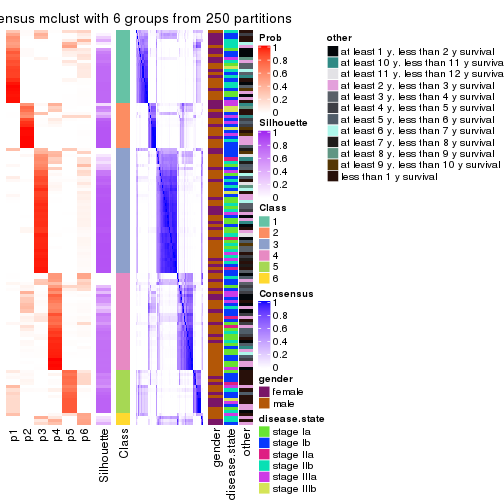
Heatmaps for the membership of samples in all partitions to see how consistent they are:
membership_heatmap(res, k = 2)
membership_heatmap(res, k = 3)
membership_heatmap(res, k = 4)
membership_heatmap(res, k = 5)
membership_heatmap(res, k = 6)
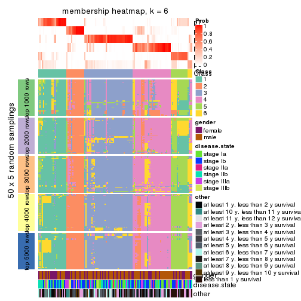
As soon as we have had the classes for columns, we can look for signatures which are significantly different between classes which can be candidate marks for certain classes. Following are the heatmaps for signatures.
Signature heatmaps where rows are scaled:
get_signatures(res, k = 2)
get_signatures(res, k = 3)
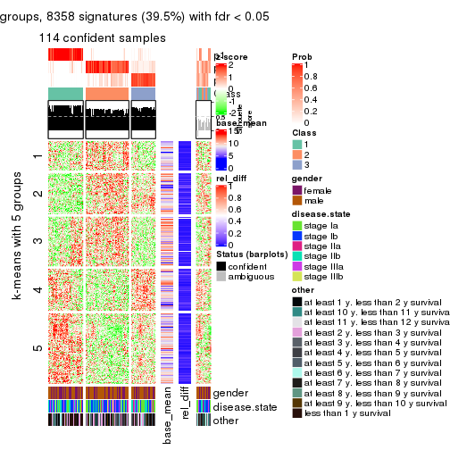
get_signatures(res, k = 4)
get_signatures(res, k = 5)
get_signatures(res, k = 6)
Signature heatmaps where rows are not scaled:
get_signatures(res, k = 2, scale_rows = FALSE)
get_signatures(res, k = 3, scale_rows = FALSE)
get_signatures(res, k = 4, scale_rows = FALSE)
get_signatures(res, k = 5, scale_rows = FALSE)
get_signatures(res, k = 6, scale_rows = FALSE)
Compare the overlap of signatures from different k:
compare_signatures(res)
get_signature() returns a data frame invisibly. TO get the list of signatures, the function
call should be assigned to a variable explicitly. In following code, if plot argument is set
to FALSE, no heatmap is plotted while only the differential analysis is performed.
# code only for demonstration
tb = get_signature(res, k = ..., plot = FALSE)
An example of the output of tb is:
#> which_row fdr mean_1 mean_2 scaled_mean_1 scaled_mean_2 km
#> 1 38 0.042760348 8.373488 9.131774 -0.5533452 0.5164555 1
#> 2 40 0.018707592 7.106213 8.469186 -0.6173731 0.5762149 1
#> 3 55 0.019134737 10.221463 11.207825 -0.6159697 0.5749050 1
#> 4 59 0.006059896 5.921854 7.869574 -0.6899429 0.6439467 1
#> 5 60 0.018055526 8.928898 10.211722 -0.6204761 0.5791110 1
#> 6 98 0.009384629 15.714769 14.887706 0.6635654 -0.6193277 2
...
The columns in tb are:
which_row: row indices corresponding to the input matrix.fdr: FDR for the differential test. mean_x: The mean value in group x.scaled_mean_x: The mean value in group x after rows are scaled.km: Row groups if k-means clustering is applied to rows.UMAP plot which shows how samples are separated.
dimension_reduction(res, k = 2, method = "UMAP")
dimension_reduction(res, k = 3, method = "UMAP")
dimension_reduction(res, k = 4, method = "UMAP")
dimension_reduction(res, k = 5, method = "UMAP")

dimension_reduction(res, k = 6, method = "UMAP")
Following heatmap shows how subgroups are split when increasing k:
collect_classes(res)
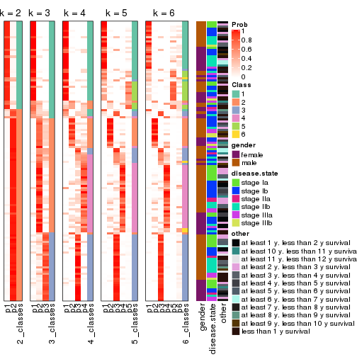
Test correlation between subgroups and known annotations. If the known annotation is numeric, one-way ANOVA test is applied, and if the known annotation is discrete, chi-squared contingency table test is applied.
test_to_known_factors(res)
#> n gender(p) disease.state(p) other(p) k
#> SD:mclust 128 0.214 0.8712 0.2405 2
#> SD:mclust 114 0.263 0.5584 0.1073 3
#> SD:mclust 100 0.123 0.0626 0.3291 4
#> SD:mclust 97 0.604 0.1650 0.2905 5
#> SD:mclust 101 0.647 0.2395 0.0366 6
If matrix rows can be associated to genes, consider to use functional_enrichment(res,
...) to perform function enrichment for the signature genes. See this vignette for more detailed explanations.
The object with results only for a single top-value method and a single partition method can be extracted as:
res = res_list["SD", "NMF"]
# you can also extract it by
# res = res_list["SD:NMF"]
A summary of res and all the functions that can be applied to it:
res
#> A 'ConsensusPartition' object with k = 2, 3, 4, 5, 6.
#> On a matrix with 21168 rows and 130 columns.
#> Top rows (1000, 2000, 3000, 4000, 5000) are extracted by 'SD' method.
#> Subgroups are detected by 'NMF' method.
#> Performed in total 1250 partitions by row resampling.
#> Best k for subgroups seems to be 2.
#>
#> Following methods can be applied to this 'ConsensusPartition' object:
#> [1] "cola_report" "collect_classes" "collect_plots"
#> [4] "collect_stats" "colnames" "compare_signatures"
#> [7] "consensus_heatmap" "dimension_reduction" "functional_enrichment"
#> [10] "get_anno_col" "get_anno" "get_classes"
#> [13] "get_consensus" "get_matrix" "get_membership"
#> [16] "get_param" "get_signatures" "get_stats"
#> [19] "is_best_k" "is_stable_k" "membership_heatmap"
#> [22] "ncol" "nrow" "plot_ecdf"
#> [25] "rownames" "select_partition_number" "show"
#> [28] "suggest_best_k" "test_to_known_factors"
collect_plots() function collects all the plots made from res for all k (number of partitions)
into one single page to provide an easy and fast comparison between different k.
collect_plots(res)
The plots are:
k and the heatmap of
predicted classes for each k.k.k.k.All the plots in panels can be made by individual functions and they are plotted later in this section.
select_partition_number() produces several plots showing different
statistics for choosing “optimized” k. There are following statistics:
k;k, the area increased is defined as \(A_k - A_{k-1}\).The detailed explanations of these statistics can be found in the cola vignette.
Generally speaking, lower PAC score, higher mean silhouette score or higher
concordance corresponds to better partition. Rand index and Jaccard index
measure how similar the current partition is compared to partition with k-1.
If they are too similar, we won't accept k is better than k-1.
select_partition_number(res)
The numeric values for all these statistics can be obtained by get_stats().
get_stats(res)
#> k 1-PAC mean_silhouette concordance area_increased Rand Jaccard
#> 2 2 0.935 0.940 0.973 0.4946 0.504 0.504
#> 3 3 0.480 0.533 0.782 0.3217 0.694 0.464
#> 4 4 0.428 0.508 0.698 0.1212 0.757 0.416
#> 5 5 0.577 0.568 0.736 0.0776 0.861 0.545
#> 6 6 0.626 0.475 0.648 0.0422 0.928 0.693
suggest_best_k() suggests the best \(k\) based on these statistics. The rules are as follows:
suggest_best_k(res)
#> [1] 2
Following shows the table of the partitions (You need to click the show/hide
code output link to see it). The membership matrix (columns with name p*)
is inferred by
clue::cl_consensus()
function with the SE method. Basically the value in the membership matrix
represents the probability to belong to a certain group. The finall class
label for an item is determined with the group with highest probability it
belongs to.
In get_classes() function, the entropy is calculated from the membership
matrix and the silhouette score is calculated from the consensus matrix.
cbind(get_classes(res, k = 2), get_membership(res, k = 2))
#> class entropy silhouette p1 p2
#> GSM102191 2 0.0000 0.977 0.000 1.000
#> GSM102240 1 0.0000 0.965 1.000 0.000
#> GSM102175 1 0.0000 0.965 1.000 0.000
#> GSM102134 2 0.0000 0.977 0.000 1.000
#> GSM102171 1 0.0000 0.965 1.000 0.000
#> GSM102178 1 0.0000 0.965 1.000 0.000
#> GSM102198 2 0.0000 0.977 0.000 1.000
#> GSM102221 1 0.0000 0.965 1.000 0.000
#> GSM102223 2 0.0000 0.977 0.000 1.000
#> GSM102229 2 0.0000 0.977 0.000 1.000
#> GSM102153 1 0.0000 0.965 1.000 0.000
#> GSM102220 2 0.3879 0.914 0.076 0.924
#> GSM102202 2 0.0000 0.977 0.000 1.000
#> GSM102123 1 0.0000 0.965 1.000 0.000
#> GSM102125 2 0.0000 0.977 0.000 1.000
#> GSM102136 2 0.0000 0.977 0.000 1.000
#> GSM102197 2 0.0376 0.974 0.004 0.996
#> GSM102131 2 0.2778 0.941 0.048 0.952
#> GSM102132 1 0.0000 0.965 1.000 0.000
#> GSM102212 2 0.0000 0.977 0.000 1.000
#> GSM102117 2 0.9129 0.516 0.328 0.672
#> GSM102124 2 0.0000 0.977 0.000 1.000
#> GSM102172 1 0.0000 0.965 1.000 0.000
#> GSM102199 2 0.0000 0.977 0.000 1.000
#> GSM102203 1 0.0000 0.965 1.000 0.000
#> GSM102213 2 0.0000 0.977 0.000 1.000
#> GSM102165 2 0.2603 0.944 0.044 0.956
#> GSM102180 2 0.0000 0.977 0.000 1.000
#> GSM102184 2 0.7950 0.691 0.240 0.760
#> GSM102225 2 0.0000 0.977 0.000 1.000
#> GSM102230 1 0.0000 0.965 1.000 0.000
#> GSM102133 2 0.0000 0.977 0.000 1.000
#> GSM102166 1 0.0000 0.965 1.000 0.000
#> GSM102235 1 0.0000 0.965 1.000 0.000
#> GSM102196 1 0.0000 0.965 1.000 0.000
#> GSM102243 1 0.0000 0.965 1.000 0.000
#> GSM102135 2 0.0000 0.977 0.000 1.000
#> GSM102139 2 0.0000 0.977 0.000 1.000
#> GSM102151 2 0.0000 0.977 0.000 1.000
#> GSM102193 2 0.0000 0.977 0.000 1.000
#> GSM102200 1 0.0000 0.965 1.000 0.000
#> GSM102204 2 0.0000 0.977 0.000 1.000
#> GSM102145 2 0.0000 0.977 0.000 1.000
#> GSM102142 2 0.0000 0.977 0.000 1.000
#> GSM102179 2 0.0000 0.977 0.000 1.000
#> GSM102181 1 0.9393 0.463 0.644 0.356
#> GSM102154 2 0.2603 0.944 0.044 0.956
#> GSM102152 2 0.0000 0.977 0.000 1.000
#> GSM102162 2 0.0000 0.977 0.000 1.000
#> GSM102187 2 0.0376 0.974 0.004 0.996
#> GSM102116 1 0.0000 0.965 1.000 0.000
#> GSM102150 1 0.0000 0.965 1.000 0.000
#> GSM102227 2 0.0000 0.977 0.000 1.000
#> GSM102114 1 0.0000 0.965 1.000 0.000
#> GSM102177 1 0.0000 0.965 1.000 0.000
#> GSM102160 2 0.0000 0.977 0.000 1.000
#> GSM102161 1 0.0000 0.965 1.000 0.000
#> GSM102170 2 0.0000 0.977 0.000 1.000
#> GSM102205 1 0.7602 0.720 0.780 0.220
#> GSM102118 1 0.0000 0.965 1.000 0.000
#> GSM102156 1 0.7453 0.730 0.788 0.212
#> GSM102238 1 0.0000 0.965 1.000 0.000
#> GSM102143 2 0.4431 0.897 0.092 0.908
#> GSM102144 2 0.0000 0.977 0.000 1.000
#> GSM102209 2 0.0000 0.977 0.000 1.000
#> GSM102210 2 0.0000 0.977 0.000 1.000
#> GSM102140 2 0.1414 0.963 0.020 0.980
#> GSM102242 1 0.3114 0.915 0.944 0.056
#> GSM102141 2 0.7219 0.757 0.200 0.800
#> GSM102120 2 0.3274 0.930 0.060 0.940
#> GSM102127 2 0.7883 0.698 0.236 0.764
#> GSM102149 1 0.0000 0.965 1.000 0.000
#> GSM102232 2 0.0000 0.977 0.000 1.000
#> GSM102222 2 0.0000 0.977 0.000 1.000
#> GSM102236 1 0.0000 0.965 1.000 0.000
#> GSM102215 2 0.0000 0.977 0.000 1.000
#> GSM102194 2 0.0000 0.977 0.000 1.000
#> GSM102208 2 0.0000 0.977 0.000 1.000
#> GSM102130 2 0.0000 0.977 0.000 1.000
#> GSM102188 1 0.0000 0.965 1.000 0.000
#> GSM102233 1 0.0000 0.965 1.000 0.000
#> GSM102189 2 0.0000 0.977 0.000 1.000
#> GSM102234 2 0.0000 0.977 0.000 1.000
#> GSM102237 1 0.0000 0.965 1.000 0.000
#> GSM102159 1 0.0000 0.965 1.000 0.000
#> GSM102155 1 0.0000 0.965 1.000 0.000
#> GSM102137 1 0.9044 0.541 0.680 0.320
#> GSM102217 2 0.0376 0.974 0.004 0.996
#> GSM102126 1 0.8813 0.584 0.700 0.300
#> GSM102157 2 0.0000 0.977 0.000 1.000
#> GSM102163 1 0.0000 0.965 1.000 0.000
#> GSM102182 1 0.0000 0.965 1.000 0.000
#> GSM102167 2 0.0000 0.977 0.000 1.000
#> GSM102206 1 0.0000 0.965 1.000 0.000
#> GSM102224 2 0.0000 0.977 0.000 1.000
#> GSM102164 2 0.0000 0.977 0.000 1.000
#> GSM102174 1 0.0000 0.965 1.000 0.000
#> GSM102214 2 0.0000 0.977 0.000 1.000
#> GSM102226 2 0.0000 0.977 0.000 1.000
#> GSM102195 2 0.0000 0.977 0.000 1.000
#> GSM102218 1 0.9686 0.354 0.604 0.396
#> GSM102128 2 0.0000 0.977 0.000 1.000
#> GSM102168 1 0.0000 0.965 1.000 0.000
#> GSM102190 1 0.0000 0.965 1.000 0.000
#> GSM102201 2 0.3879 0.912 0.076 0.924
#> GSM102129 2 0.0000 0.977 0.000 1.000
#> GSM102192 1 0.0000 0.965 1.000 0.000
#> GSM102183 2 0.0672 0.972 0.008 0.992
#> GSM102185 1 0.0000 0.965 1.000 0.000
#> GSM102158 2 0.1184 0.966 0.016 0.984
#> GSM102169 2 0.0376 0.974 0.004 0.996
#> GSM102216 1 0.0000 0.965 1.000 0.000
#> GSM102219 1 0.0000 0.965 1.000 0.000
#> GSM102231 2 0.0000 0.977 0.000 1.000
#> GSM102147 2 0.0000 0.977 0.000 1.000
#> GSM102176 1 0.0000 0.965 1.000 0.000
#> GSM102148 1 0.0000 0.965 1.000 0.000
#> GSM102146 1 0.0000 0.965 1.000 0.000
#> GSM102241 1 0.0000 0.965 1.000 0.000
#> GSM102211 1 0.0000 0.965 1.000 0.000
#> GSM102115 1 0.0000 0.965 1.000 0.000
#> GSM102173 1 0.0000 0.965 1.000 0.000
#> GSM102138 2 0.0000 0.977 0.000 1.000
#> GSM102228 1 0.0000 0.965 1.000 0.000
#> GSM102207 2 0.4690 0.888 0.100 0.900
#> GSM102122 1 0.0000 0.965 1.000 0.000
#> GSM102119 2 0.0000 0.977 0.000 1.000
#> GSM102186 2 0.0000 0.977 0.000 1.000
#> GSM102239 1 0.0000 0.965 1.000 0.000
#> GSM102121 2 0.0000 0.977 0.000 1.000
cbind(get_classes(res, k = 3), get_membership(res, k = 3))
#> class entropy silhouette p1 p2 p3
#> GSM102191 2 0.6111 0.19830 0.000 0.604 0.396
#> GSM102240 2 0.6111 0.11267 0.396 0.604 0.000
#> GSM102175 1 0.3192 0.78255 0.888 0.112 0.000
#> GSM102134 2 0.6280 0.02964 0.000 0.540 0.460
#> GSM102171 1 0.0592 0.82166 0.988 0.000 0.012
#> GSM102178 1 0.5254 0.69620 0.736 0.000 0.264
#> GSM102198 2 0.6295 -0.00916 0.000 0.528 0.472
#> GSM102221 1 0.6154 0.36749 0.592 0.408 0.000
#> GSM102223 3 0.4702 0.65838 0.000 0.212 0.788
#> GSM102229 3 0.0892 0.74449 0.000 0.020 0.980
#> GSM102153 1 0.3686 0.76340 0.860 0.140 0.000
#> GSM102220 3 0.2537 0.74534 0.000 0.080 0.920
#> GSM102202 2 0.0892 0.53934 0.000 0.980 0.020
#> GSM102123 1 0.5706 0.62620 0.680 0.000 0.320
#> GSM102125 3 0.6280 0.21025 0.000 0.460 0.540
#> GSM102136 2 0.2599 0.54822 0.052 0.932 0.016
#> GSM102197 3 0.1163 0.72444 0.028 0.000 0.972
#> GSM102131 3 0.1170 0.74207 0.008 0.016 0.976
#> GSM102132 1 0.5465 0.66918 0.712 0.000 0.288
#> GSM102212 2 0.6308 -0.08321 0.000 0.508 0.492
#> GSM102117 2 0.4178 0.45289 0.172 0.828 0.000
#> GSM102124 3 0.5678 0.52194 0.000 0.316 0.684
#> GSM102172 1 0.4346 0.72793 0.816 0.184 0.000
#> GSM102199 3 0.4291 0.69052 0.000 0.180 0.820
#> GSM102203 2 0.6045 0.15134 0.380 0.620 0.000
#> GSM102213 2 0.2537 0.53826 0.080 0.920 0.000
#> GSM102165 3 0.1289 0.72197 0.032 0.000 0.968
#> GSM102180 2 0.5529 0.37739 0.000 0.704 0.296
#> GSM102184 3 0.1860 0.71018 0.052 0.000 0.948
#> GSM102225 3 0.3267 0.73316 0.000 0.116 0.884
#> GSM102230 1 0.1031 0.82039 0.976 0.024 0.000
#> GSM102133 3 0.6079 0.39283 0.000 0.388 0.612
#> GSM102166 1 0.1753 0.81380 0.952 0.048 0.000
#> GSM102235 1 0.5138 0.70664 0.748 0.000 0.252
#> GSM102196 1 0.0892 0.82092 0.980 0.020 0.000
#> GSM102243 1 0.3116 0.78486 0.892 0.108 0.000
#> GSM102135 3 0.3752 0.71667 0.000 0.144 0.856
#> GSM102139 2 0.3482 0.50185 0.000 0.872 0.128
#> GSM102151 2 0.4931 0.44343 0.000 0.768 0.232
#> GSM102193 2 0.5905 0.28472 0.000 0.648 0.352
#> GSM102200 1 0.2400 0.81327 0.932 0.004 0.064
#> GSM102204 2 0.6267 0.05495 0.000 0.548 0.452
#> GSM102145 3 0.3038 0.73683 0.000 0.104 0.896
#> GSM102142 2 0.5254 0.41211 0.000 0.736 0.264
#> GSM102179 3 0.6062 0.40075 0.000 0.384 0.616
#> GSM102181 3 0.4062 0.59963 0.164 0.000 0.836
#> GSM102154 3 0.0592 0.74235 0.000 0.012 0.988
#> GSM102152 3 0.5859 0.48168 0.000 0.344 0.656
#> GSM102162 3 0.6126 0.36482 0.000 0.400 0.600
#> GSM102187 3 0.4293 0.70172 0.004 0.164 0.832
#> GSM102116 2 0.6180 0.07012 0.416 0.584 0.000
#> GSM102150 1 0.1860 0.81234 0.948 0.052 0.000
#> GSM102227 3 0.0592 0.74209 0.000 0.012 0.988
#> GSM102114 1 0.0983 0.82181 0.980 0.004 0.016
#> GSM102177 2 0.6260 -0.04108 0.448 0.552 0.000
#> GSM102160 2 0.6291 0.00198 0.000 0.532 0.468
#> GSM102161 1 0.3482 0.77236 0.872 0.128 0.000
#> GSM102170 2 0.6302 -0.05078 0.000 0.520 0.480
#> GSM102205 3 0.5291 0.46787 0.268 0.000 0.732
#> GSM102118 1 0.5760 0.61358 0.672 0.000 0.328
#> GSM102156 3 0.6625 -0.07846 0.440 0.008 0.552
#> GSM102238 1 0.0237 0.82228 0.996 0.000 0.004
#> GSM102143 3 0.0592 0.73401 0.012 0.000 0.988
#> GSM102144 2 0.1647 0.54773 0.036 0.960 0.004
#> GSM102209 3 0.2959 0.73967 0.000 0.100 0.900
#> GSM102210 3 0.3619 0.72100 0.000 0.136 0.864
#> GSM102140 3 0.2772 0.74546 0.004 0.080 0.916
#> GSM102242 3 0.5678 0.33099 0.316 0.000 0.684
#> GSM102141 3 0.2356 0.69095 0.072 0.000 0.928
#> GSM102120 3 0.1163 0.72452 0.028 0.000 0.972
#> GSM102127 3 0.1860 0.70827 0.052 0.000 0.948
#> GSM102149 1 0.1525 0.82026 0.964 0.032 0.004
#> GSM102232 3 0.4555 0.67007 0.000 0.200 0.800
#> GSM102222 3 0.6180 0.32537 0.000 0.416 0.584
#> GSM102236 1 0.4887 0.67671 0.772 0.228 0.000
#> GSM102215 2 0.4178 0.47981 0.000 0.828 0.172
#> GSM102194 2 0.5760 0.33027 0.000 0.672 0.328
#> GSM102208 2 0.6295 -0.04559 0.000 0.528 0.472
#> GSM102130 3 0.6252 0.25217 0.000 0.444 0.556
#> GSM102188 1 0.4887 0.72445 0.772 0.000 0.228
#> GSM102233 1 0.2448 0.80745 0.924 0.000 0.076
#> GSM102189 2 0.6168 0.15414 0.000 0.588 0.412
#> GSM102234 3 0.0892 0.74420 0.000 0.020 0.980
#> GSM102237 1 0.4346 0.73124 0.816 0.184 0.000
#> GSM102159 1 0.5650 0.63758 0.688 0.000 0.312
#> GSM102155 1 0.4887 0.72557 0.772 0.000 0.228
#> GSM102137 2 0.6204 0.05970 0.424 0.576 0.000
#> GSM102217 2 0.5618 0.42157 0.008 0.732 0.260
#> GSM102126 3 0.5497 0.39540 0.292 0.000 0.708
#> GSM102157 3 0.5327 0.58583 0.000 0.272 0.728
#> GSM102163 1 0.2537 0.80614 0.920 0.000 0.080
#> GSM102182 2 0.5733 0.24556 0.324 0.676 0.000
#> GSM102167 2 0.5706 0.34374 0.000 0.680 0.320
#> GSM102206 1 0.0661 0.82254 0.988 0.008 0.004
#> GSM102224 3 0.6307 0.11566 0.000 0.488 0.512
#> GSM102164 2 0.6307 -0.07712 0.000 0.512 0.488
#> GSM102174 2 0.6267 -0.04068 0.452 0.548 0.000
#> GSM102214 3 0.1031 0.74467 0.000 0.024 0.976
#> GSM102226 3 0.2537 0.74464 0.000 0.080 0.920
#> GSM102195 3 0.2537 0.74435 0.000 0.080 0.920
#> GSM102218 3 0.2959 0.66703 0.100 0.000 0.900
#> GSM102128 2 0.5327 0.40423 0.000 0.728 0.272
#> GSM102168 1 0.3267 0.79018 0.884 0.000 0.116
#> GSM102190 2 0.6308 -0.17245 0.492 0.508 0.000
#> GSM102201 2 0.2625 0.54066 0.084 0.916 0.000
#> GSM102129 3 0.2066 0.74640 0.000 0.060 0.940
#> GSM102192 1 0.4702 0.70105 0.788 0.212 0.000
#> GSM102183 3 0.7634 0.57337 0.100 0.232 0.668
#> GSM102185 1 0.1163 0.81944 0.972 0.028 0.000
#> GSM102158 2 0.3619 0.49159 0.136 0.864 0.000
#> GSM102169 3 0.0475 0.73761 0.004 0.004 0.992
#> GSM102216 1 0.2261 0.81016 0.932 0.000 0.068
#> GSM102219 1 0.0848 0.82295 0.984 0.008 0.008
#> GSM102231 3 0.2066 0.74627 0.000 0.060 0.940
#> GSM102147 2 0.1170 0.54510 0.016 0.976 0.008
#> GSM102176 1 0.5058 0.65901 0.756 0.244 0.000
#> GSM102148 1 0.6095 0.50056 0.608 0.000 0.392
#> GSM102146 1 0.4235 0.73404 0.824 0.176 0.000
#> GSM102241 1 0.0592 0.82178 0.988 0.012 0.000
#> GSM102211 1 0.0892 0.82092 0.980 0.020 0.000
#> GSM102115 2 0.6168 0.06399 0.412 0.588 0.000
#> GSM102173 1 0.2066 0.80889 0.940 0.060 0.000
#> GSM102138 2 0.5810 0.31163 0.000 0.664 0.336
#> GSM102228 1 0.5327 0.68917 0.728 0.000 0.272
#> GSM102207 3 0.1643 0.71425 0.044 0.000 0.956
#> GSM102122 1 0.4121 0.76256 0.832 0.000 0.168
#> GSM102119 3 0.5363 0.58853 0.000 0.276 0.724
#> GSM102186 2 0.0829 0.54226 0.004 0.984 0.012
#> GSM102239 2 0.6305 -0.13914 0.484 0.516 0.000
#> GSM102121 3 0.6225 0.29263 0.000 0.432 0.568
cbind(get_classes(res, k = 4), get_membership(res, k = 4))
#> class entropy silhouette p1 p2 p3 p4
#> GSM102191 2 0.372 0.7350 0.008 0.864 0.072 0.056
#> GSM102240 4 0.415 0.6815 0.120 0.056 0.000 0.824
#> GSM102175 1 0.482 0.5304 0.748 0.000 0.036 0.216
#> GSM102134 2 0.302 0.6900 0.012 0.896 0.020 0.072
#> GSM102171 1 0.441 0.6435 0.808 0.000 0.128 0.064
#> GSM102178 3 0.594 0.1718 0.324 0.000 0.620 0.056
#> GSM102198 2 0.249 0.7007 0.000 0.912 0.020 0.068
#> GSM102221 4 0.494 0.5865 0.280 0.020 0.000 0.700
#> GSM102223 2 0.402 0.6372 0.000 0.772 0.224 0.004
#> GSM102229 3 0.318 0.6843 0.032 0.052 0.896 0.020
#> GSM102153 1 0.362 0.5869 0.852 0.024 0.004 0.120
#> GSM102220 3 0.377 0.6646 0.016 0.080 0.864 0.040
#> GSM102202 4 0.410 0.5610 0.000 0.256 0.000 0.744
#> GSM102123 1 0.717 0.4390 0.616 0.064 0.260 0.060
#> GSM102125 2 0.343 0.7181 0.000 0.844 0.144 0.012
#> GSM102136 2 0.514 0.5617 0.088 0.776 0.008 0.128
#> GSM102197 3 0.377 0.6550 0.020 0.128 0.844 0.008
#> GSM102131 3 0.711 0.4736 0.108 0.300 0.576 0.016
#> GSM102132 1 0.568 0.1819 0.492 0.004 0.488 0.016
#> GSM102212 2 0.369 0.7265 0.000 0.844 0.124 0.032
#> GSM102117 4 0.396 0.6737 0.124 0.044 0.000 0.832
#> GSM102124 3 0.535 0.0809 0.000 0.432 0.556 0.012
#> GSM102172 4 0.594 0.0702 0.472 0.000 0.036 0.492
#> GSM102199 3 0.599 0.1698 0.004 0.432 0.532 0.032
#> GSM102203 1 0.816 -0.1533 0.380 0.312 0.008 0.300
#> GSM102213 4 0.386 0.6722 0.024 0.152 0.000 0.824
#> GSM102165 3 0.264 0.6765 0.032 0.044 0.916 0.008
#> GSM102180 2 0.517 0.7028 0.000 0.756 0.092 0.152
#> GSM102184 3 0.369 0.6486 0.072 0.048 0.868 0.012
#> GSM102225 2 0.642 0.5428 0.088 0.720 0.064 0.128
#> GSM102230 1 0.483 0.6419 0.784 0.000 0.120 0.096
#> GSM102133 2 0.525 0.4953 0.000 0.624 0.360 0.016
#> GSM102166 1 0.569 0.5583 0.708 0.000 0.096 0.196
#> GSM102235 1 0.584 0.3261 0.524 0.000 0.444 0.032
#> GSM102196 1 0.212 0.6345 0.932 0.004 0.012 0.052
#> GSM102243 1 0.698 0.3223 0.600 0.252 0.008 0.140
#> GSM102135 3 0.557 0.1117 0.004 0.468 0.516 0.012
#> GSM102139 2 0.590 0.5013 0.000 0.628 0.056 0.316
#> GSM102151 2 0.388 0.6337 0.024 0.840 0.008 0.128
#> GSM102193 2 0.560 0.7044 0.000 0.724 0.160 0.116
#> GSM102200 1 0.381 0.6534 0.828 0.000 0.148 0.024
#> GSM102204 2 0.360 0.7325 0.000 0.860 0.084 0.056
#> GSM102145 3 0.416 0.5504 0.000 0.240 0.756 0.004
#> GSM102142 2 0.354 0.7120 0.008 0.868 0.032 0.092
#> GSM102179 2 0.508 0.6347 0.000 0.708 0.260 0.032
#> GSM102181 3 0.844 0.4235 0.276 0.204 0.476 0.044
#> GSM102154 3 0.277 0.6608 0.004 0.116 0.880 0.000
#> GSM102152 2 0.718 0.1326 0.000 0.460 0.404 0.136
#> GSM102162 2 0.385 0.7013 0.000 0.808 0.180 0.012
#> GSM102187 2 0.632 0.4957 0.032 0.612 0.328 0.028
#> GSM102116 4 0.553 0.6608 0.220 0.072 0.000 0.708
#> GSM102150 1 0.593 0.6273 0.724 0.012 0.132 0.132
#> GSM102227 3 0.322 0.6580 0.008 0.124 0.864 0.004
#> GSM102114 1 0.298 0.6549 0.892 0.000 0.068 0.040
#> GSM102177 4 0.603 0.5792 0.280 0.076 0.000 0.644
#> GSM102160 2 0.553 0.7035 0.000 0.732 0.144 0.124
#> GSM102161 1 0.572 0.3639 0.632 0.000 0.044 0.324
#> GSM102170 2 0.547 0.6298 0.000 0.684 0.268 0.048
#> GSM102205 1 0.896 0.1936 0.432 0.284 0.208 0.076
#> GSM102118 3 0.488 0.3252 0.288 0.000 0.696 0.016
#> GSM102156 3 0.499 0.5355 0.176 0.036 0.772 0.016
#> GSM102238 1 0.316 0.6487 0.884 0.000 0.064 0.052
#> GSM102143 3 0.329 0.6864 0.044 0.080 0.876 0.000
#> GSM102144 4 0.529 0.0583 0.008 0.484 0.000 0.508
#> GSM102209 2 0.716 0.4532 0.084 0.660 0.172 0.084
#> GSM102210 2 0.608 0.5538 0.008 0.644 0.292 0.056
#> GSM102140 3 0.520 0.4502 0.012 0.308 0.672 0.008
#> GSM102242 3 0.388 0.5733 0.144 0.012 0.832 0.012
#> GSM102141 3 0.519 0.6556 0.080 0.132 0.776 0.012
#> GSM102120 3 0.721 0.3000 0.096 0.368 0.520 0.016
#> GSM102127 3 0.234 0.6634 0.060 0.020 0.920 0.000
#> GSM102149 1 0.720 0.4325 0.652 0.148 0.052 0.148
#> GSM102232 2 0.499 0.1800 0.000 0.528 0.472 0.000
#> GSM102222 2 0.226 0.7161 0.000 0.924 0.056 0.020
#> GSM102236 1 0.573 0.2574 0.604 0.028 0.004 0.364
#> GSM102215 2 0.537 0.5784 0.000 0.692 0.044 0.264
#> GSM102194 2 0.511 0.7155 0.000 0.764 0.104 0.132
#> GSM102208 3 0.730 -0.1782 0.000 0.400 0.448 0.152
#> GSM102130 2 0.420 0.6951 0.000 0.788 0.192 0.020
#> GSM102188 1 0.508 0.6392 0.784 0.012 0.124 0.080
#> GSM102233 1 0.255 0.6590 0.900 0.000 0.092 0.008
#> GSM102189 2 0.702 0.5685 0.000 0.572 0.252 0.176
#> GSM102234 3 0.201 0.6709 0.000 0.080 0.920 0.000
#> GSM102237 4 0.623 0.1685 0.388 0.000 0.060 0.552
#> GSM102159 3 0.590 0.0238 0.388 0.004 0.576 0.032
#> GSM102155 1 0.624 0.3111 0.496 0.004 0.456 0.044
#> GSM102137 2 0.789 0.0199 0.224 0.488 0.012 0.276
#> GSM102217 2 0.571 0.5640 0.008 0.708 0.064 0.220
#> GSM102126 3 0.366 0.5748 0.148 0.012 0.836 0.004
#> GSM102157 3 0.550 0.5857 0.020 0.124 0.764 0.092
#> GSM102163 1 0.576 0.5936 0.684 0.000 0.240 0.076
#> GSM102182 4 0.396 0.6762 0.124 0.044 0.000 0.832
#> GSM102167 2 0.491 0.6796 0.000 0.764 0.060 0.176
#> GSM102206 1 0.694 0.5051 0.588 0.000 0.192 0.220
#> GSM102224 2 0.320 0.7305 0.000 0.880 0.080 0.040
#> GSM102164 2 0.499 0.6819 0.000 0.740 0.216 0.044
#> GSM102174 4 0.452 0.6508 0.204 0.028 0.000 0.768
#> GSM102214 2 0.706 0.4491 0.072 0.624 0.256 0.048
#> GSM102226 3 0.597 0.2591 0.012 0.428 0.540 0.020
#> GSM102195 3 0.515 0.4107 0.004 0.324 0.660 0.012
#> GSM102218 3 0.361 0.6386 0.096 0.032 0.864 0.008
#> GSM102128 4 0.689 -0.2202 0.000 0.436 0.104 0.460
#> GSM102168 1 0.668 0.3616 0.496 0.000 0.416 0.088
#> GSM102190 4 0.682 0.3625 0.408 0.100 0.000 0.492
#> GSM102201 4 0.464 0.6525 0.040 0.188 0.000 0.772
#> GSM102129 3 0.335 0.6310 0.000 0.160 0.836 0.004
#> GSM102192 4 0.511 0.4600 0.312 0.008 0.008 0.672
#> GSM102183 2 0.589 0.6542 0.064 0.756 0.108 0.072
#> GSM102185 1 0.225 0.6361 0.920 0.000 0.012 0.068
#> GSM102158 4 0.401 0.6720 0.028 0.156 0.000 0.816
#> GSM102169 3 0.340 0.6135 0.000 0.180 0.820 0.000
#> GSM102216 1 0.543 0.6274 0.716 0.004 0.228 0.052
#> GSM102219 1 0.599 0.5563 0.752 0.096 0.072 0.080
#> GSM102231 2 0.616 0.5080 0.044 0.680 0.244 0.032
#> GSM102147 2 0.439 0.5862 0.020 0.784 0.004 0.192
#> GSM102176 1 0.557 -0.0728 0.516 0.004 0.012 0.468
#> GSM102148 3 0.460 0.4424 0.240 0.012 0.744 0.004
#> GSM102146 1 0.611 0.4207 0.676 0.096 0.004 0.224
#> GSM102241 1 0.194 0.6483 0.940 0.000 0.032 0.028
#> GSM102211 1 0.360 0.6074 0.876 0.032 0.024 0.068
#> GSM102115 4 0.667 0.4903 0.316 0.096 0.004 0.584
#> GSM102173 1 0.565 0.5460 0.708 0.000 0.088 0.204
#> GSM102138 2 0.641 0.4937 0.000 0.584 0.084 0.332
#> GSM102228 3 0.606 0.1858 0.308 0.000 0.624 0.068
#> GSM102207 3 0.349 0.6808 0.048 0.068 0.876 0.008
#> GSM102122 1 0.524 0.6340 0.760 0.008 0.164 0.068
#> GSM102119 3 0.553 0.1599 0.000 0.416 0.564 0.020
#> GSM102186 4 0.385 0.6423 0.008 0.192 0.000 0.800
#> GSM102239 4 0.511 0.6570 0.196 0.060 0.000 0.744
#> GSM102121 2 0.450 0.6630 0.000 0.748 0.236 0.016
cbind(get_classes(res, k = 5), get_membership(res, k = 5))
#> class entropy silhouette p1 p2 p3 p4 p5
#> GSM102191 2 0.1766 0.8577 0.004 0.940 0.004 0.040 0.012
#> GSM102240 5 0.2536 0.6690 0.052 0.012 0.000 0.032 0.904
#> GSM102175 1 0.2519 0.6147 0.900 0.000 0.004 0.036 0.060
#> GSM102134 2 0.5125 0.6603 0.000 0.716 0.016 0.184 0.084
#> GSM102171 1 0.2922 0.6474 0.872 0.000 0.072 0.056 0.000
#> GSM102178 1 0.5566 0.3341 0.520 0.004 0.416 0.060 0.000
#> GSM102198 2 0.3689 0.7829 0.000 0.816 0.008 0.144 0.032
#> GSM102221 5 0.5726 0.5133 0.240 0.012 0.000 0.108 0.640
#> GSM102223 2 0.3707 0.7925 0.000 0.828 0.036 0.120 0.016
#> GSM102229 3 0.3745 0.7037 0.040 0.008 0.852 0.056 0.044
#> GSM102153 1 0.4202 0.5605 0.744 0.000 0.012 0.228 0.016
#> GSM102220 3 0.4248 0.6881 0.024 0.072 0.828 0.036 0.040
#> GSM102202 5 0.2666 0.6438 0.000 0.020 0.012 0.076 0.892
#> GSM102123 3 0.6386 0.2591 0.144 0.000 0.440 0.412 0.004
#> GSM102125 2 0.1306 0.8624 0.000 0.960 0.016 0.016 0.008
#> GSM102136 2 0.6169 0.3352 0.016 0.564 0.000 0.312 0.108
#> GSM102197 3 0.4376 0.6731 0.004 0.092 0.784 0.116 0.004
#> GSM102131 3 0.5918 0.5748 0.012 0.040 0.636 0.272 0.040
#> GSM102132 3 0.5631 0.4179 0.292 0.000 0.600 0.108 0.000
#> GSM102212 2 0.1498 0.8611 0.000 0.952 0.008 0.016 0.024
#> GSM102117 5 0.3030 0.6565 0.088 0.016 0.008 0.012 0.876
#> GSM102124 2 0.4217 0.6165 0.000 0.732 0.244 0.012 0.012
#> GSM102172 1 0.3707 0.5721 0.828 0.012 0.000 0.044 0.116
#> GSM102199 3 0.6869 0.4461 0.000 0.044 0.556 0.220 0.180
#> GSM102203 4 0.6317 0.2010 0.072 0.052 0.000 0.584 0.292
#> GSM102213 5 0.2094 0.6608 0.004 0.020 0.008 0.040 0.928
#> GSM102165 3 0.2072 0.6990 0.016 0.020 0.928 0.036 0.000
#> GSM102180 2 0.1522 0.8574 0.000 0.944 0.000 0.012 0.044
#> GSM102184 3 0.6582 0.3288 0.204 0.148 0.600 0.048 0.000
#> GSM102225 4 0.4596 0.4090 0.008 0.300 0.012 0.676 0.004
#> GSM102230 1 0.6302 0.5916 0.648 0.000 0.156 0.132 0.064
#> GSM102133 2 0.1591 0.8475 0.000 0.940 0.052 0.004 0.004
#> GSM102166 1 0.2597 0.6361 0.904 0.000 0.036 0.020 0.040
#> GSM102235 1 0.5498 0.4869 0.580 0.000 0.340 0.080 0.000
#> GSM102196 1 0.4464 0.3494 0.584 0.000 0.008 0.408 0.000
#> GSM102243 4 0.6889 0.2658 0.304 0.288 0.000 0.404 0.004
#> GSM102135 3 0.7043 0.4659 0.000 0.140 0.552 0.236 0.072
#> GSM102139 2 0.3163 0.7777 0.000 0.824 0.000 0.012 0.164
#> GSM102151 5 0.6462 0.2899 0.004 0.060 0.048 0.356 0.532
#> GSM102193 2 0.1278 0.8615 0.000 0.960 0.016 0.004 0.020
#> GSM102200 3 0.6928 0.0706 0.328 0.000 0.376 0.292 0.004
#> GSM102204 2 0.1828 0.8568 0.000 0.936 0.004 0.032 0.028
#> GSM102145 3 0.4588 0.6086 0.000 0.200 0.736 0.060 0.004
#> GSM102142 2 0.2299 0.8485 0.004 0.912 0.000 0.052 0.032
#> GSM102179 2 0.1059 0.8612 0.000 0.968 0.020 0.004 0.008
#> GSM102181 3 0.7428 0.3346 0.080 0.116 0.468 0.332 0.004
#> GSM102154 3 0.2577 0.7071 0.016 0.040 0.908 0.032 0.004
#> GSM102152 5 0.6126 0.3826 0.000 0.020 0.192 0.164 0.624
#> GSM102162 2 0.2104 0.8561 0.000 0.924 0.044 0.024 0.008
#> GSM102187 2 0.1739 0.8603 0.004 0.940 0.024 0.032 0.000
#> GSM102116 5 0.5693 0.5354 0.220 0.016 0.000 0.108 0.656
#> GSM102150 1 0.7162 0.5062 0.572 0.000 0.136 0.148 0.144
#> GSM102227 3 0.1947 0.7145 0.004 0.016 0.932 0.044 0.004
#> GSM102114 1 0.4054 0.5902 0.760 0.000 0.036 0.204 0.000
#> GSM102177 5 0.7217 0.1942 0.288 0.024 0.000 0.260 0.428
#> GSM102160 2 0.2866 0.8426 0.000 0.884 0.020 0.020 0.076
#> GSM102161 1 0.4588 0.5489 0.756 0.000 0.024 0.040 0.180
#> GSM102170 2 0.1772 0.8564 0.000 0.940 0.032 0.008 0.020
#> GSM102205 4 0.5555 0.4107 0.112 0.016 0.176 0.692 0.004
#> GSM102118 3 0.2538 0.7077 0.048 0.000 0.900 0.048 0.004
#> GSM102156 3 0.3170 0.6772 0.076 0.012 0.872 0.036 0.004
#> GSM102238 1 0.2712 0.6340 0.880 0.000 0.032 0.088 0.000
#> GSM102143 3 0.3409 0.6900 0.040 0.044 0.868 0.044 0.004
#> GSM102144 5 0.4314 0.5980 0.004 0.124 0.000 0.092 0.780
#> GSM102209 4 0.5869 0.3490 0.004 0.088 0.200 0.672 0.036
#> GSM102210 2 0.1741 0.8557 0.000 0.936 0.040 0.024 0.000
#> GSM102140 3 0.6580 0.5563 0.000 0.064 0.612 0.196 0.128
#> GSM102242 3 0.2026 0.7042 0.032 0.004 0.932 0.024 0.008
#> GSM102141 3 0.3644 0.6754 0.008 0.008 0.800 0.180 0.004
#> GSM102120 3 0.6080 0.5282 0.016 0.092 0.592 0.296 0.004
#> GSM102127 3 0.2032 0.7055 0.052 0.004 0.924 0.020 0.000
#> GSM102149 4 0.4859 0.4497 0.076 0.008 0.040 0.780 0.096
#> GSM102232 2 0.3681 0.7305 0.000 0.808 0.148 0.044 0.000
#> GSM102222 2 0.3070 0.8154 0.000 0.860 0.012 0.112 0.016
#> GSM102236 4 0.6889 0.0534 0.340 0.008 0.000 0.420 0.232
#> GSM102215 5 0.5792 0.2304 0.000 0.376 0.004 0.084 0.536
#> GSM102194 2 0.1243 0.8596 0.000 0.960 0.008 0.004 0.028
#> GSM102208 2 0.4110 0.7632 0.008 0.820 0.108 0.028 0.036
#> GSM102130 2 0.0609 0.8598 0.000 0.980 0.020 0.000 0.000
#> GSM102188 1 0.4860 0.5132 0.668 0.012 0.028 0.292 0.000
#> GSM102233 1 0.4577 0.6025 0.740 0.000 0.084 0.176 0.000
#> GSM102189 2 0.3282 0.8206 0.004 0.868 0.060 0.012 0.056
#> GSM102234 3 0.1813 0.7127 0.012 0.012 0.944 0.020 0.012
#> GSM102237 1 0.5554 0.5250 0.668 0.000 0.076 0.024 0.232
#> GSM102159 3 0.5503 0.4882 0.272 0.000 0.632 0.092 0.004
#> GSM102155 1 0.5883 0.5545 0.644 0.028 0.256 0.064 0.008
#> GSM102137 5 0.5061 0.4681 0.012 0.020 0.008 0.312 0.648
#> GSM102217 5 0.5937 0.4497 0.000 0.052 0.064 0.240 0.644
#> GSM102126 3 0.3265 0.6681 0.088 0.012 0.860 0.040 0.000
#> GSM102157 3 0.6700 0.4704 0.124 0.168 0.636 0.052 0.020
#> GSM102163 1 0.4701 0.6022 0.712 0.000 0.232 0.052 0.004
#> GSM102182 5 0.4000 0.6214 0.180 0.016 0.000 0.020 0.784
#> GSM102167 2 0.2934 0.8360 0.004 0.884 0.008 0.036 0.068
#> GSM102206 1 0.5150 0.5695 0.652 0.000 0.292 0.044 0.012
#> GSM102224 2 0.3191 0.8225 0.000 0.868 0.016 0.076 0.040
#> GSM102164 2 0.0992 0.8609 0.000 0.968 0.024 0.000 0.008
#> GSM102174 5 0.4512 0.6095 0.176 0.016 0.000 0.048 0.760
#> GSM102214 4 0.6544 0.3149 0.008 0.264 0.204 0.524 0.000
#> GSM102226 3 0.6543 0.5047 0.000 0.072 0.576 0.280 0.072
#> GSM102195 3 0.6218 0.5720 0.000 0.156 0.640 0.164 0.040
#> GSM102218 3 0.3065 0.7079 0.016 0.004 0.872 0.092 0.016
#> GSM102128 5 0.5263 0.4368 0.008 0.268 0.032 0.020 0.672
#> GSM102168 1 0.5257 0.5576 0.640 0.000 0.296 0.056 0.008
#> GSM102190 1 0.6270 0.3105 0.588 0.024 0.000 0.268 0.120
#> GSM102201 5 0.2341 0.6515 0.000 0.012 0.020 0.056 0.912
#> GSM102129 3 0.2140 0.7092 0.000 0.040 0.924 0.024 0.012
#> GSM102192 5 0.4713 0.5564 0.268 0.004 0.012 0.020 0.696
#> GSM102183 4 0.5470 0.0938 0.024 0.440 0.016 0.516 0.004
#> GSM102185 1 0.3336 0.5481 0.772 0.000 0.000 0.228 0.000
#> GSM102158 5 0.1281 0.6685 0.032 0.012 0.000 0.000 0.956
#> GSM102169 3 0.4643 0.6195 0.000 0.192 0.736 0.068 0.004
#> GSM102216 1 0.6290 0.3992 0.508 0.000 0.344 0.144 0.004
#> GSM102219 4 0.5895 0.3682 0.160 0.004 0.068 0.692 0.076
#> GSM102231 2 0.6194 0.1042 0.000 0.500 0.148 0.352 0.000
#> GSM102147 2 0.4352 0.7310 0.004 0.772 0.000 0.148 0.076
#> GSM102176 1 0.5346 0.4604 0.692 0.008 0.000 0.132 0.168
#> GSM102148 3 0.2797 0.7003 0.060 0.000 0.880 0.060 0.000
#> GSM102146 5 0.6804 -0.0501 0.304 0.000 0.000 0.324 0.372
#> GSM102241 1 0.4382 0.5186 0.688 0.000 0.024 0.288 0.000
#> GSM102211 1 0.4702 0.3144 0.552 0.000 0.016 0.432 0.000
#> GSM102115 4 0.7308 0.0358 0.388 0.048 0.000 0.400 0.164
#> GSM102173 1 0.1914 0.6224 0.928 0.000 0.008 0.008 0.056
#> GSM102138 5 0.4607 0.5793 0.000 0.052 0.036 0.136 0.776
#> GSM102228 3 0.5536 -0.1926 0.440 0.000 0.504 0.048 0.008
#> GSM102207 3 0.2112 0.7103 0.004 0.004 0.908 0.084 0.000
#> GSM102122 1 0.6609 0.2614 0.416 0.000 0.216 0.368 0.000
#> GSM102119 3 0.5189 0.1680 0.000 0.464 0.500 0.032 0.004
#> GSM102186 5 0.1871 0.6677 0.024 0.020 0.012 0.004 0.940
#> GSM102239 5 0.5056 0.5837 0.176 0.016 0.000 0.084 0.724
#> GSM102121 2 0.0703 0.8591 0.000 0.976 0.024 0.000 0.000
cbind(get_classes(res, k = 6), get_membership(res, k = 6))
#> class entropy silhouette p1 p2 p3 p4 p5 p6
#> GSM102191 2 0.1317 0.82875 0.004 0.956 0.000 0.016 0.008 0.016
#> GSM102240 5 0.3546 0.61923 0.072 0.000 0.000 0.028 0.828 0.072
#> GSM102175 1 0.3304 0.56996 0.836 0.000 0.000 0.048 0.016 0.100
#> GSM102134 2 0.4971 0.69425 0.000 0.740 0.040 0.128 0.064 0.028
#> GSM102171 1 0.2419 0.61547 0.896 0.000 0.016 0.028 0.000 0.060
#> GSM102178 6 0.6225 0.47673 0.304 0.000 0.216 0.016 0.000 0.464
#> GSM102198 2 0.4754 0.70424 0.000 0.748 0.120 0.088 0.028 0.016
#> GSM102221 5 0.6765 0.39459 0.192 0.000 0.000 0.112 0.516 0.180
#> GSM102223 2 0.4157 0.73201 0.000 0.784 0.108 0.080 0.004 0.024
#> GSM102229 3 0.6819 -0.16320 0.072 0.000 0.440 0.020 0.096 0.372
#> GSM102153 1 0.3368 0.58722 0.828 0.000 0.000 0.108 0.012 0.052
#> GSM102220 3 0.3799 0.61139 0.044 0.008 0.832 0.016 0.024 0.076
#> GSM102202 5 0.3269 0.59435 0.000 0.004 0.024 0.060 0.852 0.060
#> GSM102123 4 0.7574 0.13203 0.272 0.000 0.236 0.328 0.000 0.164
#> GSM102125 2 0.0405 0.82909 0.000 0.988 0.000 0.008 0.000 0.004
#> GSM102136 2 0.5941 0.55567 0.000 0.636 0.024 0.196 0.100 0.044
#> GSM102197 3 0.1434 0.64285 0.000 0.020 0.948 0.008 0.000 0.024
#> GSM102131 3 0.3037 0.62385 0.000 0.004 0.864 0.064 0.052 0.016
#> GSM102132 3 0.6958 -0.22234 0.116 0.000 0.404 0.128 0.000 0.352
#> GSM102212 2 0.0951 0.82916 0.000 0.968 0.000 0.020 0.008 0.004
#> GSM102117 5 0.4438 0.59797 0.060 0.000 0.008 0.028 0.760 0.144
#> GSM102124 2 0.4799 0.49782 0.000 0.652 0.072 0.000 0.008 0.268
#> GSM102172 1 0.5005 0.50783 0.692 0.000 0.000 0.060 0.052 0.196
#> GSM102199 5 0.7672 -0.15052 0.000 0.016 0.272 0.100 0.320 0.292
#> GSM102203 4 0.7080 0.13284 0.088 0.044 0.012 0.520 0.276 0.060
#> GSM102213 5 0.2400 0.61554 0.000 0.004 0.008 0.040 0.900 0.048
#> GSM102165 3 0.4489 -0.09359 0.012 0.012 0.520 0.000 0.000 0.456
#> GSM102180 2 0.1696 0.82960 0.008 0.944 0.008 0.016 0.012 0.012
#> GSM102184 6 0.6325 0.59533 0.176 0.048 0.200 0.008 0.000 0.568
#> GSM102225 4 0.5589 0.17178 0.004 0.344 0.104 0.540 0.004 0.004
#> GSM102230 1 0.5179 0.54382 0.708 0.000 0.052 0.044 0.024 0.172
#> GSM102133 2 0.1434 0.81682 0.000 0.940 0.012 0.000 0.000 0.048
#> GSM102166 1 0.2302 0.61730 0.900 0.000 0.004 0.012 0.012 0.072
#> GSM102235 1 0.4912 0.48999 0.688 0.000 0.112 0.016 0.000 0.184
#> GSM102196 4 0.4884 -0.17813 0.460 0.000 0.004 0.488 0.000 0.048
#> GSM102243 2 0.6197 0.04103 0.152 0.464 0.000 0.356 0.000 0.028
#> GSM102135 3 0.4746 0.55350 0.000 0.052 0.760 0.088 0.084 0.016
#> GSM102139 2 0.1493 0.82337 0.004 0.936 0.000 0.000 0.056 0.004
#> GSM102151 5 0.6704 0.37361 0.000 0.040 0.128 0.208 0.568 0.056
#> GSM102193 2 0.0767 0.82874 0.000 0.976 0.004 0.000 0.008 0.012
#> GSM102200 4 0.7374 0.22483 0.236 0.000 0.252 0.416 0.016 0.080
#> GSM102204 2 0.1457 0.82717 0.000 0.948 0.016 0.028 0.004 0.004
#> GSM102145 3 0.4066 0.50574 0.004 0.040 0.748 0.000 0.008 0.200
#> GSM102142 2 0.1672 0.82977 0.008 0.944 0.012 0.020 0.004 0.012
#> GSM102179 2 0.0603 0.82945 0.000 0.980 0.004 0.000 0.000 0.016
#> GSM102181 3 0.5275 0.42274 0.020 0.008 0.616 0.304 0.004 0.048
#> GSM102154 6 0.5367 0.33686 0.032 0.016 0.420 0.020 0.000 0.512
#> GSM102152 5 0.4797 0.50021 0.000 0.000 0.184 0.060 0.712 0.044
#> GSM102162 2 0.3004 0.74938 0.000 0.832 0.144 0.012 0.000 0.012
#> GSM102187 2 0.2767 0.80013 0.020 0.888 0.016 0.028 0.000 0.048
#> GSM102116 5 0.7185 0.35974 0.176 0.004 0.000 0.140 0.468 0.212
#> GSM102150 1 0.6072 0.44025 0.592 0.000 0.024 0.068 0.052 0.264
#> GSM102227 3 0.4147 0.52149 0.020 0.008 0.732 0.008 0.004 0.228
#> GSM102114 1 0.5204 0.46817 0.656 0.000 0.024 0.216 0.000 0.104
#> GSM102177 1 0.7806 -0.13418 0.272 0.004 0.000 0.272 0.256 0.196
#> GSM102160 2 0.7035 0.48080 0.032 0.604 0.092 0.040 0.100 0.132
#> GSM102161 1 0.5417 0.50112 0.688 0.000 0.004 0.088 0.080 0.140
#> GSM102170 2 0.1194 0.82400 0.000 0.956 0.008 0.000 0.004 0.032
#> GSM102205 4 0.6493 0.43633 0.128 0.072 0.096 0.636 0.004 0.064
#> GSM102118 3 0.2454 0.63526 0.016 0.000 0.876 0.004 0.000 0.104
#> GSM102156 6 0.4962 0.33643 0.040 0.000 0.412 0.004 0.008 0.536
#> GSM102238 1 0.2621 0.61021 0.884 0.000 0.012 0.052 0.000 0.052
#> GSM102143 6 0.6650 0.58590 0.164 0.024 0.228 0.028 0.008 0.548
#> GSM102144 5 0.4820 0.50941 0.000 0.172 0.008 0.060 0.724 0.036
#> GSM102209 4 0.7245 0.18463 0.000 0.124 0.360 0.412 0.060 0.044
#> GSM102210 2 0.1629 0.82409 0.004 0.940 0.004 0.028 0.000 0.024
#> GSM102140 3 0.3268 0.61314 0.012 0.000 0.848 0.020 0.096 0.024
#> GSM102242 3 0.4443 -0.12881 0.008 0.000 0.524 0.004 0.008 0.456
#> GSM102141 3 0.2839 0.62591 0.008 0.000 0.860 0.032 0.000 0.100
#> GSM102120 3 0.8276 -0.07337 0.092 0.148 0.396 0.216 0.000 0.148
#> GSM102127 3 0.3583 0.59425 0.048 0.008 0.800 0.000 0.000 0.144
#> GSM102149 4 0.6266 0.40089 0.096 0.000 0.040 0.644 0.112 0.108
#> GSM102232 2 0.3022 0.77932 0.000 0.852 0.108 0.012 0.004 0.024
#> GSM102222 2 0.1738 0.81927 0.000 0.928 0.016 0.052 0.000 0.004
#> GSM102236 4 0.7456 0.11140 0.248 0.000 0.008 0.416 0.196 0.132
#> GSM102215 5 0.6197 0.18715 0.000 0.372 0.016 0.068 0.496 0.048
#> GSM102194 2 0.0696 0.82891 0.004 0.980 0.000 0.004 0.004 0.008
#> GSM102208 2 0.3799 0.67814 0.000 0.756 0.024 0.000 0.012 0.208
#> GSM102130 2 0.0405 0.82847 0.000 0.988 0.004 0.000 0.000 0.008
#> GSM102188 1 0.5677 0.32367 0.536 0.012 0.016 0.360 0.000 0.076
#> GSM102233 1 0.4134 0.56581 0.772 0.000 0.016 0.096 0.000 0.116
#> GSM102189 2 0.3284 0.76311 0.004 0.832 0.008 0.004 0.024 0.128
#> GSM102234 3 0.2663 0.63676 0.032 0.000 0.884 0.004 0.012 0.068
#> GSM102237 1 0.4864 0.57152 0.720 0.000 0.008 0.020 0.104 0.148
#> GSM102159 3 0.4572 0.52794 0.136 0.000 0.740 0.028 0.000 0.096
#> GSM102155 1 0.7135 0.21824 0.472 0.028 0.216 0.032 0.008 0.244
#> GSM102137 5 0.5019 0.42104 0.000 0.008 0.016 0.308 0.624 0.044
#> GSM102217 5 0.6634 0.42068 0.004 0.032 0.116 0.144 0.608 0.096
#> GSM102126 6 0.5645 0.50847 0.120 0.000 0.340 0.012 0.000 0.528
#> GSM102157 6 0.6622 0.39394 0.040 0.096 0.304 0.004 0.032 0.524
#> GSM102163 1 0.3746 0.56472 0.764 0.000 0.016 0.012 0.004 0.204
#> GSM102182 5 0.4948 0.56218 0.108 0.000 0.000 0.028 0.700 0.164
#> GSM102167 2 0.8775 -0.00901 0.048 0.368 0.248 0.064 0.108 0.164
#> GSM102206 1 0.4420 0.42383 0.644 0.000 0.008 0.016 0.008 0.324
#> GSM102224 2 0.3061 0.79715 0.000 0.868 0.024 0.068 0.028 0.012
#> GSM102164 2 0.0622 0.82876 0.000 0.980 0.012 0.000 0.000 0.008
#> GSM102174 5 0.5878 0.49735 0.152 0.000 0.000 0.068 0.624 0.156
#> GSM102214 4 0.6509 0.21292 0.000 0.224 0.332 0.416 0.000 0.028
#> GSM102226 3 0.3772 0.60116 0.000 0.024 0.828 0.064 0.064 0.020
#> GSM102195 3 0.3061 0.63306 0.008 0.024 0.880 0.024 0.040 0.024
#> GSM102218 3 0.3015 0.61628 0.000 0.000 0.844 0.012 0.024 0.120
#> GSM102128 5 0.6144 0.52433 0.012 0.136 0.048 0.020 0.648 0.136
#> GSM102168 1 0.3896 0.56223 0.780 0.000 0.052 0.008 0.004 0.156
#> GSM102190 1 0.6202 0.28297 0.516 0.004 0.000 0.324 0.044 0.112
#> GSM102201 5 0.2116 0.61538 0.000 0.000 0.024 0.036 0.916 0.024
#> GSM102129 3 0.4582 0.27425 0.000 0.012 0.628 0.000 0.032 0.328
#> GSM102192 5 0.6072 0.52872 0.084 0.008 0.012 0.080 0.644 0.172
#> GSM102183 4 0.5033 0.42490 0.016 0.196 0.020 0.704 0.004 0.060
#> GSM102185 1 0.4456 0.47121 0.668 0.000 0.000 0.268 0.000 0.064
#> GSM102158 5 0.2469 0.62843 0.028 0.004 0.000 0.012 0.896 0.060
#> GSM102169 3 0.1768 0.64072 0.004 0.040 0.932 0.004 0.000 0.020
#> GSM102216 6 0.6186 0.22954 0.376 0.000 0.048 0.060 0.020 0.496
#> GSM102219 4 0.7565 0.16177 0.308 0.000 0.036 0.412 0.096 0.148
#> GSM102231 2 0.6237 0.17232 0.000 0.472 0.244 0.268 0.000 0.016
#> GSM102147 2 0.2797 0.80324 0.000 0.872 0.000 0.076 0.036 0.016
#> GSM102176 1 0.6282 0.34352 0.580 0.000 0.000 0.116 0.108 0.196
#> GSM102148 3 0.5474 -0.26036 0.040 0.000 0.476 0.044 0.000 0.440
#> GSM102146 4 0.6643 0.26063 0.172 0.000 0.004 0.480 0.292 0.052
#> GSM102241 1 0.4815 0.49151 0.664 0.000 0.008 0.244 0.000 0.084
#> GSM102211 1 0.4799 0.27327 0.560 0.000 0.004 0.388 0.000 0.048
#> GSM102115 4 0.7400 0.05004 0.288 0.016 0.000 0.416 0.096 0.184
#> GSM102173 1 0.3219 0.58773 0.848 0.000 0.004 0.052 0.012 0.084
#> GSM102138 5 0.4980 0.54586 0.000 0.028 0.040 0.104 0.744 0.084
#> GSM102228 1 0.6499 -0.24279 0.388 0.000 0.320 0.008 0.008 0.276
#> GSM102207 3 0.3273 0.55670 0.004 0.008 0.800 0.008 0.000 0.180
#> GSM102122 6 0.6643 0.07972 0.360 0.000 0.036 0.224 0.000 0.380
#> GSM102119 3 0.4424 0.55821 0.000 0.136 0.760 0.008 0.020 0.076
#> GSM102186 5 0.2823 0.62576 0.012 0.004 0.012 0.008 0.872 0.092
#> GSM102239 5 0.6034 0.49074 0.136 0.000 0.000 0.096 0.616 0.152
#> GSM102121 2 0.0405 0.82817 0.000 0.988 0.004 0.000 0.000 0.008
Heatmaps for the consensus matrix. It visualizes the probability of two samples to be in a same group.
consensus_heatmap(res, k = 2)
consensus_heatmap(res, k = 3)
consensus_heatmap(res, k = 4)
consensus_heatmap(res, k = 5)
consensus_heatmap(res, k = 6)
Heatmaps for the membership of samples in all partitions to see how consistent they are:
membership_heatmap(res, k = 2)
membership_heatmap(res, k = 3)
membership_heatmap(res, k = 4)
membership_heatmap(res, k = 5)

membership_heatmap(res, k = 6)
As soon as we have had the classes for columns, we can look for signatures which are significantly different between classes which can be candidate marks for certain classes. Following are the heatmaps for signatures.
Signature heatmaps where rows are scaled:
get_signatures(res, k = 2)
get_signatures(res, k = 3)
get_signatures(res, k = 4)
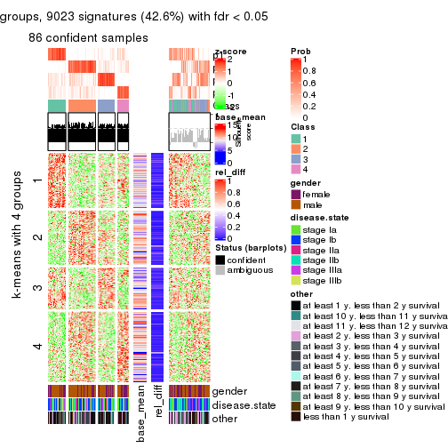
get_signatures(res, k = 5)
get_signatures(res, k = 6)
Signature heatmaps where rows are not scaled:
get_signatures(res, k = 2, scale_rows = FALSE)
get_signatures(res, k = 3, scale_rows = FALSE)

get_signatures(res, k = 4, scale_rows = FALSE)
get_signatures(res, k = 5, scale_rows = FALSE)
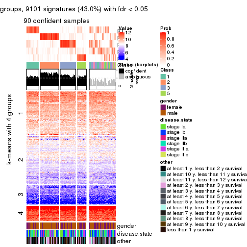
get_signatures(res, k = 6, scale_rows = FALSE)
Compare the overlap of signatures from different k:
compare_signatures(res)
get_signature() returns a data frame invisibly. TO get the list of signatures, the function
call should be assigned to a variable explicitly. In following code, if plot argument is set
to FALSE, no heatmap is plotted while only the differential analysis is performed.
# code only for demonstration
tb = get_signature(res, k = ..., plot = FALSE)
An example of the output of tb is:
#> which_row fdr mean_1 mean_2 scaled_mean_1 scaled_mean_2 km
#> 1 38 0.042760348 8.373488 9.131774 -0.5533452 0.5164555 1
#> 2 40 0.018707592 7.106213 8.469186 -0.6173731 0.5762149 1
#> 3 55 0.019134737 10.221463 11.207825 -0.6159697 0.5749050 1
#> 4 59 0.006059896 5.921854 7.869574 -0.6899429 0.6439467 1
#> 5 60 0.018055526 8.928898 10.211722 -0.6204761 0.5791110 1
#> 6 98 0.009384629 15.714769 14.887706 0.6635654 -0.6193277 2
...
The columns in tb are:
which_row: row indices corresponding to the input matrix.fdr: FDR for the differential test. mean_x: The mean value in group x.scaled_mean_x: The mean value in group x after rows are scaled.km: Row groups if k-means clustering is applied to rows.UMAP plot which shows how samples are separated.
dimension_reduction(res, k = 2, method = "UMAP")
dimension_reduction(res, k = 3, method = "UMAP")
dimension_reduction(res, k = 4, method = "UMAP")
dimension_reduction(res, k = 5, method = "UMAP")
dimension_reduction(res, k = 6, method = "UMAP")
Following heatmap shows how subgroups are split when increasing k:
collect_classes(res)
Test correlation between subgroups and known annotations. If the known annotation is numeric, one-way ANOVA test is applied, and if the known annotation is discrete, chi-squared contingency table test is applied.
test_to_known_factors(res)
#> n gender(p) disease.state(p) other(p) k
#> SD:NMF 128 0.1108 0.0833 0.378 2
#> SD:NMF 84 0.5790 0.6071 0.240 3
#> SD:NMF 86 0.4418 0.9341 0.466 4
#> SD:NMF 90 0.0742 0.8836 0.481 5
#> SD:NMF 75 0.0851 0.9523 0.514 6
If matrix rows can be associated to genes, consider to use functional_enrichment(res,
...) to perform function enrichment for the signature genes. See this vignette for more detailed explanations.
The object with results only for a single top-value method and a single partition method can be extracted as:
res = res_list["CV", "hclust"]
# you can also extract it by
# res = res_list["CV:hclust"]
A summary of res and all the functions that can be applied to it:
res
#> A 'ConsensusPartition' object with k = 2, 3, 4, 5, 6.
#> On a matrix with 21168 rows and 130 columns.
#> Top rows (1000, 2000, 3000, 4000, 5000) are extracted by 'CV' method.
#> Subgroups are detected by 'hclust' method.
#> Performed in total 1250 partitions by row resampling.
#> Best k for subgroups seems to be 2.
#>
#> Following methods can be applied to this 'ConsensusPartition' object:
#> [1] "cola_report" "collect_classes" "collect_plots"
#> [4] "collect_stats" "colnames" "compare_signatures"
#> [7] "consensus_heatmap" "dimension_reduction" "functional_enrichment"
#> [10] "get_anno_col" "get_anno" "get_classes"
#> [13] "get_consensus" "get_matrix" "get_membership"
#> [16] "get_param" "get_signatures" "get_stats"
#> [19] "is_best_k" "is_stable_k" "membership_heatmap"
#> [22] "ncol" "nrow" "plot_ecdf"
#> [25] "rownames" "select_partition_number" "show"
#> [28] "suggest_best_k" "test_to_known_factors"
collect_plots() function collects all the plots made from res for all k (number of partitions)
into one single page to provide an easy and fast comparison between different k.
collect_plots(res)
The plots are:
k and the heatmap of
predicted classes for each k.k.k.k.All the plots in panels can be made by individual functions and they are plotted later in this section.
select_partition_number() produces several plots showing different
statistics for choosing “optimized” k. There are following statistics:
k;k, the area increased is defined as \(A_k - A_{k-1}\).The detailed explanations of these statistics can be found in the cola vignette.
Generally speaking, lower PAC score, higher mean silhouette score or higher
concordance corresponds to better partition. Rand index and Jaccard index
measure how similar the current partition is compared to partition with k-1.
If they are too similar, we won't accept k is better than k-1.
select_partition_number(res)
The numeric values for all these statistics can be obtained by get_stats().
get_stats(res)
#> k 1-PAC mean_silhouette concordance area_increased Rand Jaccard
#> 2 2 0.156 0.699 0.823 0.4289 0.513 0.513
#> 3 3 0.205 0.467 0.704 0.3054 0.718 0.550
#> 4 4 0.334 0.641 0.761 0.1820 0.734 0.482
#> 5 5 0.411 0.604 0.715 0.0762 1.000 1.000
#> 6 6 0.430 0.365 0.636 0.0652 0.976 0.922
suggest_best_k() suggests the best \(k\) based on these statistics. The rules are as follows:
suggest_best_k(res)
#> [1] 2
Following shows the table of the partitions (You need to click the show/hide
code output link to see it). The membership matrix (columns with name p*)
is inferred by
clue::cl_consensus()
function with the SE method. Basically the value in the membership matrix
represents the probability to belong to a certain group. The finall class
label for an item is determined with the group with highest probability it
belongs to.
In get_classes() function, the entropy is calculated from the membership
matrix and the silhouette score is calculated from the consensus matrix.
cbind(get_classes(res, k = 2), get_membership(res, k = 2))
#> class entropy silhouette p1 p2
#> GSM102191 2 0.9209 0.6326 0.336 0.664
#> GSM102240 1 0.3114 0.7885 0.944 0.056
#> GSM102175 1 0.0000 0.7873 1.000 0.000
#> GSM102134 2 0.7745 0.7645 0.228 0.772
#> GSM102171 1 0.0000 0.7873 1.000 0.000
#> GSM102178 1 0.6343 0.7891 0.840 0.160
#> GSM102198 2 0.7139 0.7819 0.196 0.804
#> GSM102221 1 0.3114 0.7885 0.944 0.056
#> GSM102223 2 0.7453 0.7770 0.212 0.788
#> GSM102229 1 0.7453 0.7545 0.788 0.212
#> GSM102153 1 0.0000 0.7873 1.000 0.000
#> GSM102220 1 0.9833 0.3359 0.576 0.424
#> GSM102202 2 0.2778 0.7191 0.048 0.952
#> GSM102123 1 0.8081 0.7009 0.752 0.248
#> GSM102125 2 0.7219 0.7845 0.200 0.800
#> GSM102136 2 0.9686 0.5298 0.396 0.604
#> GSM102197 1 0.9460 0.4990 0.636 0.364
#> GSM102131 1 0.9580 0.4618 0.620 0.380
#> GSM102132 1 0.5737 0.7962 0.864 0.136
#> GSM102212 2 0.6247 0.7980 0.156 0.844
#> GSM102117 1 0.6887 0.6837 0.816 0.184
#> GSM102124 2 0.3431 0.7830 0.064 0.936
#> GSM102172 1 0.0000 0.7873 1.000 0.000
#> GSM102199 2 0.9286 0.6199 0.344 0.656
#> GSM102203 1 0.3274 0.8065 0.940 0.060
#> GSM102213 2 0.2778 0.7191 0.048 0.952
#> GSM102165 1 0.7815 0.7361 0.768 0.232
#> GSM102180 2 0.6048 0.7969 0.148 0.852
#> GSM102184 1 0.6148 0.7913 0.848 0.152
#> GSM102225 2 0.8763 0.6905 0.296 0.704
#> GSM102230 1 0.1414 0.7941 0.980 0.020
#> GSM102133 2 0.2778 0.7764 0.048 0.952
#> GSM102166 1 0.0000 0.7873 1.000 0.000
#> GSM102235 1 0.5059 0.8025 0.888 0.112
#> GSM102196 1 0.0000 0.7873 1.000 0.000
#> GSM102243 2 0.9944 0.3091 0.456 0.544
#> GSM102135 2 0.9963 0.1789 0.464 0.536
#> GSM102139 2 0.2778 0.7764 0.048 0.952
#> GSM102151 2 0.7453 0.7746 0.212 0.788
#> GSM102193 2 0.2778 0.7764 0.048 0.952
#> GSM102200 1 0.5519 0.8018 0.872 0.128
#> GSM102204 2 0.5842 0.7994 0.140 0.860
#> GSM102145 1 0.9909 0.2599 0.556 0.444
#> GSM102142 2 0.6247 0.7965 0.156 0.844
#> GSM102179 2 0.8909 0.6715 0.308 0.692
#> GSM102181 1 0.7376 0.7536 0.792 0.208
#> GSM102154 1 0.8763 0.6500 0.704 0.296
#> GSM102152 2 0.7056 0.7750 0.192 0.808
#> GSM102162 2 0.7453 0.7752 0.212 0.788
#> GSM102187 1 0.9850 0.2686 0.572 0.428
#> GSM102116 1 0.2948 0.7929 0.948 0.052
#> GSM102150 1 0.2948 0.8072 0.948 0.052
#> GSM102227 1 0.7139 0.7683 0.804 0.196
#> GSM102114 1 0.0938 0.7939 0.988 0.012
#> GSM102177 1 0.2603 0.7915 0.956 0.044
#> GSM102160 2 0.7528 0.7739 0.216 0.784
#> GSM102161 1 0.2043 0.8025 0.968 0.032
#> GSM102170 2 0.2948 0.7787 0.052 0.948
#> GSM102205 1 0.9922 0.1417 0.552 0.448
#> GSM102118 1 0.8555 0.6719 0.720 0.280
#> GSM102156 1 0.7453 0.7530 0.788 0.212
#> GSM102238 1 0.0000 0.7873 1.000 0.000
#> GSM102143 1 0.6438 0.7875 0.836 0.164
#> GSM102144 2 0.5946 0.7967 0.144 0.856
#> GSM102209 2 0.9580 0.5512 0.380 0.620
#> GSM102210 2 0.9044 0.6594 0.320 0.680
#> GSM102140 1 0.9732 0.3952 0.596 0.404
#> GSM102242 1 0.6887 0.7731 0.816 0.184
#> GSM102141 1 0.9000 0.6026 0.684 0.316
#> GSM102120 1 0.9209 0.5459 0.664 0.336
#> GSM102127 1 0.8443 0.6883 0.728 0.272
#> GSM102149 1 0.2778 0.8070 0.952 0.048
#> GSM102232 2 0.4161 0.7916 0.084 0.916
#> GSM102222 2 0.8661 0.7010 0.288 0.712
#> GSM102236 1 0.2778 0.7919 0.952 0.048
#> GSM102215 2 0.0938 0.7333 0.012 0.988
#> GSM102194 2 0.4161 0.7914 0.084 0.916
#> GSM102208 2 0.2778 0.7764 0.048 0.952
#> GSM102130 2 0.2948 0.7787 0.052 0.948
#> GSM102188 1 0.8661 0.6432 0.712 0.288
#> GSM102233 1 0.0000 0.7873 1.000 0.000
#> GSM102189 2 0.3879 0.7869 0.076 0.924
#> GSM102234 1 0.9909 0.2626 0.556 0.444
#> GSM102237 1 0.1633 0.7927 0.976 0.024
#> GSM102159 1 0.5059 0.8025 0.888 0.112
#> GSM102155 1 0.8713 0.6555 0.708 0.292
#> GSM102137 1 0.4161 0.8082 0.916 0.084
#> GSM102217 2 0.9427 0.5626 0.360 0.640
#> GSM102126 1 0.6438 0.7857 0.836 0.164
#> GSM102157 1 0.8955 0.6283 0.688 0.312
#> GSM102163 1 0.5629 0.8006 0.868 0.132
#> GSM102182 2 0.9970 0.2520 0.468 0.532
#> GSM102167 2 0.7950 0.7506 0.240 0.760
#> GSM102206 1 0.1633 0.7946 0.976 0.024
#> GSM102224 2 0.4690 0.7965 0.100 0.900
#> GSM102164 2 0.2778 0.7764 0.048 0.952
#> GSM102174 1 0.2603 0.7924 0.956 0.044
#> GSM102214 2 0.8955 0.6675 0.312 0.688
#> GSM102226 2 0.9866 0.3124 0.432 0.568
#> GSM102195 1 0.9988 0.0948 0.520 0.480
#> GSM102218 1 0.8144 0.7144 0.748 0.252
#> GSM102128 2 0.5294 0.7991 0.120 0.880
#> GSM102168 1 0.5059 0.8025 0.888 0.112
#> GSM102190 1 0.3274 0.8061 0.940 0.060
#> GSM102201 2 0.8443 0.6929 0.272 0.728
#> GSM102129 1 0.8081 0.7171 0.752 0.248
#> GSM102192 1 0.6343 0.7855 0.840 0.160
#> GSM102183 2 0.9129 0.6486 0.328 0.672
#> GSM102185 1 0.0000 0.7873 1.000 0.000
#> GSM102158 2 0.8327 0.6268 0.264 0.736
#> GSM102169 1 0.9795 0.3569 0.584 0.416
#> GSM102216 1 0.6048 0.7959 0.852 0.148
#> GSM102219 1 0.3733 0.8084 0.928 0.072
#> GSM102231 2 0.8861 0.6840 0.304 0.696
#> GSM102147 2 0.6148 0.7995 0.152 0.848
#> GSM102176 1 0.2423 0.7917 0.960 0.040
#> GSM102148 1 0.5946 0.7918 0.856 0.144
#> GSM102146 1 0.2603 0.8052 0.956 0.044
#> GSM102241 1 0.2236 0.8029 0.964 0.036
#> GSM102211 1 0.0000 0.7873 1.000 0.000
#> GSM102115 1 0.3274 0.8056 0.940 0.060
#> GSM102173 1 0.0000 0.7873 1.000 0.000
#> GSM102138 2 0.5294 0.7987 0.120 0.880
#> GSM102228 1 0.6712 0.7821 0.824 0.176
#> GSM102207 1 0.9000 0.6026 0.684 0.316
#> GSM102122 1 0.2948 0.8066 0.948 0.052
#> GSM102119 2 0.9970 0.1690 0.468 0.532
#> GSM102186 2 0.5519 0.7375 0.128 0.872
#> GSM102239 1 0.2603 0.7924 0.956 0.044
#> GSM102121 2 0.2778 0.7764 0.048 0.952
cbind(get_classes(res, k = 3), get_membership(res, k = 3))
#> class entropy silhouette p1 p2 p3
#> GSM102191 2 0.5047 0.5651 0.140 0.824 0.036
#> GSM102240 1 0.2947 0.6244 0.920 0.020 0.060
#> GSM102175 1 0.0661 0.6535 0.988 0.004 0.008
#> GSM102134 2 0.4095 0.5569 0.064 0.880 0.056
#> GSM102171 1 0.0829 0.6551 0.984 0.004 0.012
#> GSM102178 1 0.9357 0.4057 0.500 0.304 0.196
#> GSM102198 2 0.2689 0.5460 0.032 0.932 0.036
#> GSM102221 1 0.2947 0.6244 0.920 0.020 0.060
#> GSM102223 2 0.3993 0.5503 0.052 0.884 0.064
#> GSM102229 1 0.9666 0.2606 0.428 0.356 0.216
#> GSM102153 1 0.0848 0.6561 0.984 0.008 0.008
#> GSM102220 2 0.8689 0.4303 0.200 0.596 0.204
#> GSM102202 3 0.4974 0.6867 0.000 0.236 0.764
#> GSM102123 1 0.9400 0.2672 0.464 0.356 0.180
#> GSM102125 2 0.3983 0.5431 0.048 0.884 0.068
#> GSM102136 2 0.7613 0.4765 0.204 0.680 0.116
#> GSM102197 2 0.9333 0.2718 0.268 0.516 0.216
#> GSM102131 2 0.9106 0.2856 0.284 0.536 0.180
#> GSM102132 1 0.9315 0.4366 0.516 0.276 0.208
#> GSM102212 2 0.4056 0.5120 0.032 0.876 0.092
#> GSM102117 1 0.5677 0.4692 0.792 0.048 0.160
#> GSM102124 2 0.3752 0.4194 0.000 0.856 0.144
#> GSM102172 1 0.0661 0.6535 0.988 0.004 0.008
#> GSM102199 2 0.6920 0.5551 0.132 0.736 0.132
#> GSM102203 1 0.3886 0.6674 0.880 0.096 0.024
#> GSM102213 3 0.4974 0.6867 0.000 0.236 0.764
#> GSM102165 1 0.9737 0.1659 0.392 0.384 0.224
#> GSM102180 2 0.4779 0.4906 0.036 0.840 0.124
#> GSM102184 1 0.9367 0.4244 0.504 0.292 0.204
#> GSM102225 2 0.4137 0.5772 0.096 0.872 0.032
#> GSM102230 1 0.1774 0.6602 0.960 0.024 0.016
#> GSM102133 2 0.3941 0.4025 0.000 0.844 0.156
#> GSM102166 1 0.0661 0.6535 0.988 0.004 0.008
#> GSM102235 1 0.9135 0.4816 0.544 0.248 0.208
#> GSM102196 1 0.0829 0.6558 0.984 0.004 0.012
#> GSM102243 2 0.7128 0.4975 0.252 0.684 0.064
#> GSM102135 2 0.7393 0.5412 0.156 0.704 0.140
#> GSM102139 2 0.4002 0.3983 0.000 0.840 0.160
#> GSM102151 2 0.6977 0.4241 0.076 0.712 0.212
#> GSM102193 2 0.3941 0.4025 0.000 0.844 0.156
#> GSM102200 1 0.8485 0.5554 0.612 0.224 0.164
#> GSM102204 2 0.3359 0.5116 0.016 0.900 0.084
#> GSM102145 2 0.8525 0.4553 0.188 0.612 0.200
#> GSM102142 2 0.2446 0.5212 0.012 0.936 0.052
#> GSM102179 2 0.5731 0.5638 0.108 0.804 0.088
#> GSM102181 1 0.9550 0.3074 0.456 0.340 0.204
#> GSM102154 2 0.9398 -0.0973 0.400 0.428 0.172
#> GSM102152 2 0.7798 0.1977 0.080 0.624 0.296
#> GSM102162 2 0.3797 0.5532 0.052 0.892 0.056
#> GSM102187 2 0.8657 0.4210 0.244 0.592 0.164
#> GSM102116 1 0.3112 0.6363 0.916 0.028 0.056
#> GSM102150 1 0.4316 0.6758 0.868 0.088 0.044
#> GSM102227 1 0.9623 0.3197 0.448 0.336 0.216
#> GSM102114 1 0.5253 0.6736 0.828 0.076 0.096
#> GSM102177 1 0.2414 0.6373 0.940 0.020 0.040
#> GSM102160 2 0.4097 0.5533 0.060 0.880 0.060
#> GSM102161 1 0.3369 0.6770 0.908 0.052 0.040
#> GSM102170 2 0.3879 0.4091 0.000 0.848 0.152
#> GSM102205 2 0.8703 0.4436 0.244 0.588 0.168
#> GSM102118 2 0.9606 -0.0331 0.368 0.428 0.204
#> GSM102156 1 0.9558 0.2850 0.444 0.356 0.200
#> GSM102238 1 0.0661 0.6535 0.988 0.004 0.008
#> GSM102143 1 0.9468 0.4040 0.488 0.300 0.212
#> GSM102144 2 0.7396 0.1763 0.060 0.644 0.296
#> GSM102209 2 0.6663 0.5463 0.156 0.748 0.096
#> GSM102210 2 0.5449 0.5658 0.116 0.816 0.068
#> GSM102140 2 0.8926 0.3709 0.240 0.568 0.192
#> GSM102242 1 0.9641 0.3336 0.452 0.324 0.224
#> GSM102141 2 0.9484 0.1238 0.328 0.472 0.200
#> GSM102120 2 0.9263 0.0907 0.360 0.476 0.164
#> GSM102127 2 0.9700 -0.0350 0.348 0.428 0.224
#> GSM102149 1 0.4232 0.6766 0.872 0.084 0.044
#> GSM102232 2 0.3784 0.4511 0.004 0.864 0.132
#> GSM102222 2 0.3886 0.5758 0.096 0.880 0.024
#> GSM102236 1 0.2599 0.6317 0.932 0.016 0.052
#> GSM102215 2 0.6180 -0.2350 0.000 0.584 0.416
#> GSM102194 2 0.4602 0.4454 0.016 0.832 0.152
#> GSM102208 2 0.3941 0.4025 0.000 0.844 0.156
#> GSM102130 2 0.3879 0.4091 0.000 0.848 0.152
#> GSM102188 2 0.9476 -0.0392 0.380 0.436 0.184
#> GSM102233 1 0.0829 0.6551 0.984 0.004 0.012
#> GSM102189 2 0.4575 0.4288 0.012 0.828 0.160
#> GSM102234 2 0.8427 0.4623 0.172 0.620 0.208
#> GSM102237 1 0.1636 0.6508 0.964 0.020 0.016
#> GSM102159 1 0.9170 0.4776 0.540 0.248 0.212
#> GSM102155 2 0.9506 0.0081 0.360 0.448 0.192
#> GSM102137 1 0.6792 0.6492 0.744 0.132 0.124
#> GSM102217 2 0.9100 0.2272 0.204 0.548 0.248
#> GSM102126 1 0.9468 0.3992 0.488 0.300 0.212
#> GSM102157 2 0.9335 -0.0108 0.376 0.456 0.168
#> GSM102163 1 0.8880 0.4925 0.564 0.268 0.168
#> GSM102182 3 0.9068 0.3837 0.420 0.136 0.444
#> GSM102167 2 0.4015 0.5541 0.028 0.876 0.096
#> GSM102206 1 0.1919 0.6590 0.956 0.024 0.020
#> GSM102224 2 0.3784 0.4631 0.004 0.864 0.132
#> GSM102164 2 0.3879 0.4092 0.000 0.848 0.152
#> GSM102174 1 0.2383 0.6348 0.940 0.016 0.044
#> GSM102214 2 0.4369 0.5786 0.096 0.864 0.040
#> GSM102226 2 0.7447 0.5337 0.120 0.696 0.184
#> GSM102195 2 0.8072 0.5046 0.164 0.652 0.184
#> GSM102218 1 0.9696 0.1425 0.392 0.392 0.216
#> GSM102128 2 0.4068 0.4835 0.016 0.864 0.120
#> GSM102168 1 0.9135 0.4816 0.544 0.248 0.208
#> GSM102190 1 0.3765 0.6684 0.888 0.084 0.028
#> GSM102201 3 0.8921 0.5034 0.136 0.348 0.516
#> GSM102129 2 0.9696 -0.1646 0.392 0.392 0.216
#> GSM102192 1 0.8879 0.5410 0.576 0.212 0.212
#> GSM102183 2 0.5787 0.5644 0.136 0.796 0.068
#> GSM102185 1 0.0661 0.6535 0.988 0.004 0.008
#> GSM102158 3 0.9070 0.6754 0.204 0.244 0.552
#> GSM102169 2 0.8681 0.4266 0.188 0.596 0.216
#> GSM102216 1 0.8179 0.5780 0.640 0.208 0.152
#> GSM102219 1 0.5344 0.6707 0.824 0.084 0.092
#> GSM102231 2 0.4558 0.5760 0.100 0.856 0.044
#> GSM102147 2 0.4172 0.4974 0.028 0.868 0.104
#> GSM102176 1 0.2269 0.6369 0.944 0.016 0.040
#> GSM102148 1 0.9394 0.4330 0.508 0.268 0.224
#> GSM102146 1 0.5883 0.6671 0.796 0.092 0.112
#> GSM102241 1 0.5093 0.6750 0.836 0.076 0.088
#> GSM102211 1 0.0983 0.6578 0.980 0.004 0.016
#> GSM102115 1 0.3670 0.6660 0.888 0.092 0.020
#> GSM102173 1 0.0661 0.6535 0.988 0.004 0.008
#> GSM102138 2 0.4934 0.4693 0.024 0.820 0.156
#> GSM102228 1 0.9299 0.3970 0.496 0.324 0.180
#> GSM102207 2 0.9484 0.1238 0.328 0.472 0.200
#> GSM102122 1 0.7785 0.6214 0.672 0.136 0.192
#> GSM102119 2 0.7393 0.5426 0.156 0.704 0.140
#> GSM102186 3 0.7896 0.6480 0.076 0.324 0.600
#> GSM102239 1 0.2383 0.6348 0.940 0.016 0.044
#> GSM102121 2 0.3941 0.4025 0.000 0.844 0.156
cbind(get_classes(res, k = 4), get_membership(res, k = 4))
#> class entropy silhouette p1 p2 p3 p4
#> GSM102191 2 0.529 0.59915 0.008 0.656 0.324 0.012
#> GSM102240 1 0.416 0.74797 0.828 0.000 0.096 0.076
#> GSM102175 1 0.213 0.77659 0.920 0.000 0.076 0.004
#> GSM102134 2 0.444 0.71840 0.000 0.764 0.216 0.020
#> GSM102171 1 0.259 0.78183 0.892 0.000 0.104 0.004
#> GSM102178 3 0.460 0.72225 0.132 0.072 0.796 0.000
#> GSM102198 2 0.384 0.74200 0.000 0.816 0.168 0.016
#> GSM102221 1 0.416 0.74797 0.828 0.000 0.096 0.076
#> GSM102223 2 0.487 0.73729 0.008 0.768 0.188 0.036
#> GSM102229 3 0.418 0.74671 0.060 0.104 0.832 0.004
#> GSM102153 1 0.247 0.78409 0.900 0.000 0.096 0.004
#> GSM102220 3 0.540 0.46923 0.004 0.352 0.628 0.016
#> GSM102202 4 0.233 0.75401 0.000 0.072 0.012 0.916
#> GSM102123 3 0.587 0.68186 0.112 0.160 0.720 0.008
#> GSM102125 2 0.377 0.74429 0.000 0.808 0.184 0.008
#> GSM102136 2 0.721 0.47654 0.076 0.572 0.316 0.036
#> GSM102197 3 0.495 0.62761 0.016 0.272 0.708 0.004
#> GSM102131 3 0.531 0.60598 0.024 0.296 0.676 0.004
#> GSM102132 3 0.417 0.72710 0.116 0.060 0.824 0.000
#> GSM102212 2 0.367 0.76178 0.004 0.852 0.116 0.028
#> GSM102117 1 0.630 0.61350 0.700 0.024 0.096 0.180
#> GSM102124 2 0.209 0.74738 0.000 0.932 0.048 0.020
#> GSM102172 1 0.213 0.77659 0.920 0.000 0.076 0.004
#> GSM102199 2 0.567 0.47914 0.012 0.616 0.356 0.016
#> GSM102203 1 0.525 0.72699 0.748 0.032 0.200 0.020
#> GSM102213 4 0.233 0.75401 0.000 0.072 0.012 0.916
#> GSM102165 3 0.377 0.73653 0.020 0.128 0.844 0.008
#> GSM102180 2 0.406 0.74833 0.012 0.828 0.140 0.020
#> GSM102184 3 0.486 0.72998 0.112 0.084 0.796 0.008
#> GSM102225 2 0.514 0.64996 0.004 0.692 0.284 0.020
#> GSM102230 1 0.267 0.77170 0.904 0.000 0.072 0.024
#> GSM102133 2 0.151 0.73541 0.000 0.956 0.028 0.016
#> GSM102166 1 0.227 0.77974 0.912 0.000 0.084 0.004
#> GSM102235 3 0.422 0.64330 0.184 0.024 0.792 0.000
#> GSM102196 1 0.294 0.78124 0.868 0.000 0.128 0.004
#> GSM102243 2 0.695 0.29449 0.064 0.508 0.408 0.020
#> GSM102135 3 0.557 0.03700 0.004 0.480 0.504 0.012
#> GSM102139 2 0.173 0.73110 0.000 0.948 0.028 0.024
#> GSM102151 2 0.697 0.59736 0.012 0.624 0.196 0.168
#> GSM102193 2 0.151 0.73541 0.000 0.956 0.028 0.016
#> GSM102200 3 0.571 0.49023 0.268 0.044 0.680 0.008
#> GSM102204 2 0.305 0.76160 0.000 0.872 0.116 0.012
#> GSM102145 3 0.538 0.41249 0.004 0.376 0.608 0.012
#> GSM102142 2 0.303 0.75936 0.000 0.868 0.124 0.008
#> GSM102179 2 0.511 0.61040 0.004 0.668 0.316 0.012
#> GSM102181 3 0.438 0.73048 0.060 0.108 0.824 0.008
#> GSM102154 3 0.508 0.68752 0.032 0.220 0.740 0.008
#> GSM102152 2 0.724 0.39200 0.012 0.568 0.136 0.284
#> GSM102162 2 0.394 0.73758 0.000 0.800 0.188 0.012
#> GSM102187 3 0.556 0.38548 0.020 0.368 0.608 0.004
#> GSM102116 1 0.431 0.75391 0.824 0.004 0.108 0.064
#> GSM102150 1 0.535 0.63381 0.644 0.012 0.336 0.008
#> GSM102227 3 0.378 0.74345 0.056 0.084 0.856 0.004
#> GSM102114 1 0.530 0.41832 0.544 0.004 0.448 0.004
#> GSM102177 1 0.374 0.75870 0.852 0.000 0.088 0.060
#> GSM102160 2 0.398 0.73678 0.000 0.796 0.192 0.012
#> GSM102161 1 0.448 0.69543 0.712 0.000 0.284 0.004
#> GSM102170 2 0.161 0.73854 0.000 0.952 0.032 0.016
#> GSM102205 3 0.616 0.23677 0.036 0.408 0.548 0.008
#> GSM102118 3 0.506 0.72326 0.052 0.188 0.756 0.004
#> GSM102156 3 0.420 0.74302 0.044 0.128 0.824 0.004
#> GSM102238 1 0.259 0.78259 0.892 0.000 0.104 0.004
#> GSM102143 3 0.462 0.73371 0.096 0.084 0.812 0.008
#> GSM102144 2 0.673 0.53356 0.020 0.640 0.096 0.244
#> GSM102209 2 0.576 0.44203 0.016 0.588 0.384 0.012
#> GSM102210 2 0.508 0.61365 0.008 0.676 0.308 0.008
#> GSM102140 3 0.533 0.52097 0.012 0.332 0.648 0.008
#> GSM102242 3 0.358 0.73997 0.056 0.072 0.868 0.004
#> GSM102141 3 0.433 0.68735 0.016 0.216 0.768 0.000
#> GSM102120 3 0.543 0.60212 0.036 0.272 0.688 0.004
#> GSM102127 3 0.395 0.72357 0.020 0.168 0.812 0.000
#> GSM102149 1 0.521 0.63567 0.648 0.012 0.336 0.004
#> GSM102232 2 0.292 0.75745 0.000 0.892 0.080 0.028
#> GSM102222 2 0.511 0.65636 0.004 0.696 0.280 0.020
#> GSM102236 1 0.395 0.75490 0.840 0.000 0.096 0.064
#> GSM102215 2 0.524 0.29057 0.004 0.688 0.024 0.284
#> GSM102194 2 0.241 0.75469 0.000 0.916 0.064 0.020
#> GSM102208 2 0.151 0.73541 0.000 0.956 0.028 0.016
#> GSM102130 2 0.161 0.73854 0.000 0.952 0.032 0.016
#> GSM102188 3 0.549 0.68452 0.080 0.200 0.720 0.000
#> GSM102233 1 0.277 0.78206 0.880 0.000 0.116 0.004
#> GSM102189 2 0.234 0.74816 0.000 0.920 0.060 0.020
#> GSM102234 3 0.536 0.42127 0.004 0.372 0.612 0.012
#> GSM102237 1 0.193 0.75090 0.940 0.000 0.036 0.024
#> GSM102159 3 0.418 0.64821 0.180 0.024 0.796 0.000
#> GSM102155 3 0.495 0.70913 0.036 0.196 0.760 0.008
#> GSM102137 1 0.655 0.29288 0.484 0.028 0.460 0.028
#> GSM102217 2 0.904 0.23861 0.076 0.412 0.292 0.220
#> GSM102126 3 0.415 0.73892 0.084 0.068 0.840 0.008
#> GSM102157 3 0.502 0.67975 0.020 0.232 0.736 0.012
#> GSM102163 3 0.499 0.66868 0.184 0.060 0.756 0.000
#> GSM102182 4 0.665 0.33811 0.388 0.012 0.060 0.540
#> GSM102167 2 0.442 0.68952 0.000 0.748 0.240 0.012
#> GSM102206 1 0.260 0.76950 0.908 0.000 0.068 0.024
#> GSM102224 2 0.340 0.75732 0.004 0.876 0.076 0.044
#> GSM102164 2 0.161 0.73901 0.000 0.952 0.032 0.016
#> GSM102174 1 0.374 0.75787 0.852 0.000 0.088 0.060
#> GSM102214 2 0.524 0.63129 0.004 0.676 0.300 0.020
#> GSM102226 2 0.595 0.09602 0.004 0.492 0.476 0.028
#> GSM102195 3 0.549 0.28505 0.004 0.416 0.568 0.012
#> GSM102218 3 0.403 0.74039 0.028 0.132 0.832 0.008
#> GSM102128 2 0.310 0.76003 0.000 0.876 0.104 0.020
#> GSM102168 3 0.422 0.64330 0.184 0.024 0.792 0.000
#> GSM102190 1 0.547 0.71935 0.716 0.024 0.236 0.024
#> GSM102201 4 0.790 0.65154 0.080 0.160 0.160 0.600
#> GSM102129 3 0.404 0.73805 0.024 0.140 0.828 0.008
#> GSM102192 3 0.652 0.50298 0.188 0.028 0.684 0.100
#> GSM102183 2 0.532 0.60976 0.008 0.668 0.308 0.016
#> GSM102185 1 0.259 0.78259 0.892 0.000 0.104 0.004
#> GSM102158 4 0.715 0.69799 0.180 0.100 0.064 0.656
#> GSM102169 3 0.518 0.46435 0.004 0.356 0.632 0.008
#> GSM102216 3 0.679 0.32423 0.308 0.048 0.604 0.040
#> GSM102219 1 0.628 0.57104 0.596 0.016 0.348 0.040
#> GSM102231 2 0.519 0.64887 0.004 0.684 0.292 0.020
#> GSM102147 2 0.379 0.75888 0.000 0.840 0.124 0.036
#> GSM102176 1 0.380 0.76056 0.848 0.000 0.096 0.056
#> GSM102148 3 0.311 0.71979 0.080 0.036 0.884 0.000
#> GSM102146 1 0.558 0.41172 0.532 0.000 0.448 0.020
#> GSM102241 1 0.533 0.50190 0.568 0.000 0.420 0.012
#> GSM102211 1 0.310 0.77862 0.856 0.000 0.140 0.004
#> GSM102115 1 0.550 0.72173 0.728 0.028 0.216 0.028
#> GSM102173 1 0.220 0.77851 0.916 0.000 0.080 0.004
#> GSM102138 2 0.444 0.75012 0.004 0.816 0.112 0.068
#> GSM102228 3 0.495 0.73233 0.120 0.092 0.784 0.004
#> GSM102207 3 0.433 0.68735 0.016 0.216 0.768 0.000
#> GSM102122 3 0.480 0.37311 0.284 0.008 0.704 0.004
#> GSM102119 2 0.568 -0.00116 0.004 0.496 0.484 0.016
#> GSM102186 4 0.659 0.70688 0.044 0.204 0.072 0.680
#> GSM102239 1 0.374 0.75787 0.852 0.000 0.088 0.060
#> GSM102121 2 0.151 0.73541 0.000 0.956 0.028 0.016
cbind(get_classes(res, k = 5), get_membership(res, k = 5))
#> class entropy silhouette p1 p2 p3 p4 p5
#> GSM102191 2 0.545 0.5890 0.000 0.628 0.272 NA 0.000
#> GSM102240 1 0.516 0.6462 0.700 0.000 0.060 NA 0.020
#> GSM102175 1 0.217 0.7196 0.912 0.000 0.064 NA 0.000
#> GSM102134 2 0.525 0.6947 0.000 0.708 0.180 NA 0.016
#> GSM102171 1 0.229 0.7193 0.900 0.000 0.084 NA 0.000
#> GSM102178 3 0.524 0.6837 0.112 0.068 0.744 NA 0.000
#> GSM102198 2 0.450 0.7201 0.000 0.772 0.140 NA 0.012
#> GSM102221 1 0.516 0.6462 0.700 0.000 0.060 NA 0.020
#> GSM102223 2 0.495 0.7141 0.004 0.736 0.124 NA 0.004
#> GSM102229 3 0.378 0.7156 0.016 0.088 0.832 NA 0.000
#> GSM102153 1 0.217 0.7251 0.908 0.000 0.076 NA 0.000
#> GSM102220 3 0.593 0.4319 0.000 0.332 0.556 NA 0.004
#> GSM102202 5 0.051 0.7490 0.000 0.016 0.000 NA 0.984
#> GSM102123 3 0.640 0.6310 0.068 0.144 0.652 NA 0.004
#> GSM102125 2 0.375 0.7227 0.000 0.804 0.148 NA 0.000
#> GSM102136 2 0.747 0.4931 0.036 0.532 0.252 NA 0.036
#> GSM102197 3 0.527 0.5919 0.004 0.240 0.668 NA 0.000
#> GSM102131 3 0.546 0.5840 0.004 0.248 0.648 NA 0.000
#> GSM102132 3 0.458 0.6934 0.084 0.056 0.792 NA 0.000
#> GSM102212 2 0.405 0.7413 0.000 0.820 0.096 NA 0.032
#> GSM102117 1 0.692 0.5120 0.584 0.012 0.060 NA 0.104
#> GSM102124 2 0.227 0.7268 0.000 0.916 0.028 NA 0.008
#> GSM102172 1 0.234 0.7206 0.904 0.000 0.064 NA 0.000
#> GSM102199 2 0.615 0.4800 0.004 0.584 0.308 NA 0.024
#> GSM102203 1 0.600 0.6396 0.640 0.012 0.164 NA 0.004
#> GSM102213 5 0.051 0.7490 0.000 0.016 0.000 NA 0.984
#> GSM102165 3 0.377 0.7082 0.000 0.120 0.812 NA 0.000
#> GSM102180 2 0.390 0.7242 0.004 0.824 0.096 NA 0.008
#> GSM102184 3 0.532 0.6572 0.036 0.068 0.712 NA 0.000
#> GSM102225 2 0.541 0.6364 0.000 0.656 0.216 NA 0.000
#> GSM102230 1 0.315 0.7074 0.868 0.000 0.060 NA 0.008
#> GSM102133 2 0.162 0.7195 0.000 0.944 0.008 NA 0.008
#> GSM102166 1 0.230 0.7222 0.904 0.000 0.072 NA 0.000
#> GSM102235 3 0.481 0.6208 0.164 0.032 0.752 NA 0.000
#> GSM102196 1 0.276 0.7191 0.872 0.000 0.104 NA 0.000
#> GSM102243 2 0.702 0.3316 0.048 0.476 0.348 NA 0.000
#> GSM102135 3 0.600 0.0690 0.000 0.448 0.452 NA 0.004
#> GSM102139 2 0.191 0.7139 0.000 0.932 0.008 NA 0.016
#> GSM102151 2 0.752 0.5633 0.008 0.548 0.152 NA 0.176
#> GSM102193 2 0.162 0.7195 0.000 0.944 0.008 NA 0.008
#> GSM102200 3 0.665 0.4563 0.212 0.044 0.600 NA 0.004
#> GSM102204 2 0.328 0.7418 0.000 0.856 0.092 NA 0.008
#> GSM102145 3 0.593 0.4050 0.000 0.344 0.548 NA 0.004
#> GSM102142 2 0.323 0.7394 0.000 0.852 0.084 NA 0.000
#> GSM102179 2 0.508 0.5895 0.004 0.664 0.272 NA 0.000
#> GSM102181 3 0.499 0.6843 0.020 0.092 0.740 NA 0.000
#> GSM102154 3 0.482 0.6489 0.000 0.212 0.708 NA 0.000
#> GSM102152 2 0.745 0.3411 0.004 0.512 0.108 NA 0.268
#> GSM102162 2 0.422 0.7147 0.000 0.780 0.160 NA 0.008
#> GSM102187 3 0.528 0.3323 0.004 0.364 0.584 NA 0.000
#> GSM102116 1 0.534 0.6540 0.692 0.004 0.068 NA 0.016
#> GSM102150 1 0.630 0.5496 0.544 0.000 0.300 NA 0.008
#> GSM102227 3 0.380 0.7102 0.016 0.076 0.832 NA 0.000
#> GSM102114 1 0.553 0.3093 0.508 0.004 0.432 NA 0.000
#> GSM102177 1 0.474 0.6658 0.724 0.000 0.056 NA 0.008
#> GSM102160 2 0.423 0.7137 0.000 0.776 0.168 NA 0.008
#> GSM102161 1 0.574 0.6190 0.624 0.000 0.244 NA 0.004
#> GSM102170 2 0.173 0.7223 0.000 0.940 0.012 NA 0.008
#> GSM102205 3 0.704 0.1201 0.016 0.372 0.448 NA 0.012
#> GSM102118 3 0.483 0.6788 0.012 0.156 0.744 NA 0.000
#> GSM102156 3 0.445 0.7054 0.016 0.112 0.784 NA 0.000
#> GSM102238 1 0.225 0.7205 0.900 0.000 0.088 NA 0.000
#> GSM102143 3 0.528 0.6631 0.024 0.080 0.708 NA 0.000
#> GSM102144 2 0.674 0.5147 0.012 0.592 0.068 NA 0.256
#> GSM102209 2 0.637 0.4509 0.000 0.544 0.300 NA 0.012
#> GSM102210 2 0.502 0.6007 0.000 0.664 0.268 NA 0.000
#> GSM102140 3 0.566 0.4834 0.000 0.308 0.588 NA 0.000
#> GSM102242 3 0.367 0.7080 0.016 0.064 0.840 NA 0.000
#> GSM102141 3 0.446 0.6583 0.004 0.192 0.748 NA 0.000
#> GSM102120 3 0.601 0.5501 0.012 0.248 0.620 NA 0.004
#> GSM102127 3 0.406 0.6884 0.004 0.156 0.788 NA 0.000
#> GSM102149 1 0.627 0.5512 0.548 0.000 0.300 NA 0.008
#> GSM102232 2 0.270 0.7328 0.000 0.896 0.044 NA 0.012
#> GSM102222 2 0.540 0.6376 0.000 0.656 0.220 NA 0.000
#> GSM102236 1 0.485 0.6628 0.724 0.000 0.060 NA 0.012
#> GSM102215 2 0.537 0.2794 0.004 0.620 0.000 NA 0.308
#> GSM102194 2 0.244 0.7324 0.000 0.908 0.040 NA 0.008
#> GSM102208 2 0.162 0.7195 0.000 0.944 0.008 NA 0.008
#> GSM102130 2 0.173 0.7223 0.000 0.940 0.012 NA 0.008
#> GSM102188 3 0.567 0.6343 0.056 0.200 0.684 NA 0.000
#> GSM102233 1 0.252 0.7187 0.884 0.000 0.100 NA 0.000
#> GSM102189 2 0.236 0.7242 0.000 0.912 0.040 NA 0.008
#> GSM102234 3 0.599 0.4043 0.000 0.336 0.548 NA 0.004
#> GSM102237 1 0.223 0.7010 0.920 0.000 0.028 NA 0.012
#> GSM102159 3 0.478 0.6245 0.160 0.032 0.756 NA 0.000
#> GSM102155 3 0.493 0.6723 0.012 0.192 0.724 NA 0.000
#> GSM102137 1 0.769 0.3009 0.380 0.028 0.348 NA 0.016
#> GSM102217 2 0.930 0.1278 0.056 0.332 0.224 NA 0.172
#> GSM102126 3 0.425 0.7026 0.032 0.052 0.804 NA 0.000
#> GSM102157 3 0.471 0.6508 0.000 0.220 0.712 NA 0.000
#> GSM102163 3 0.545 0.6428 0.144 0.052 0.720 NA 0.000
#> GSM102182 5 0.714 0.3957 0.256 0.000 0.016 NA 0.384
#> GSM102167 2 0.443 0.6671 0.000 0.744 0.192 NA 0.000
#> GSM102206 1 0.299 0.7055 0.880 0.000 0.056 NA 0.012
#> GSM102224 2 0.366 0.7340 0.004 0.840 0.044 NA 0.012
#> GSM102164 2 0.173 0.7225 0.000 0.940 0.012 NA 0.008
#> GSM102174 1 0.475 0.6652 0.732 0.000 0.056 NA 0.012
#> GSM102214 2 0.550 0.6181 0.000 0.640 0.236 NA 0.000
#> GSM102226 2 0.636 0.0984 0.000 0.472 0.400 NA 0.012
#> GSM102195 3 0.599 0.2899 0.000 0.388 0.508 NA 0.004
#> GSM102218 3 0.424 0.7091 0.008 0.104 0.800 NA 0.004
#> GSM102128 2 0.327 0.7355 0.000 0.856 0.080 NA 0.004
#> GSM102168 3 0.481 0.6208 0.164 0.032 0.752 NA 0.000
#> GSM102190 1 0.589 0.6501 0.640 0.012 0.176 NA 0.000
#> GSM102201 5 0.749 0.6702 0.024 0.088 0.100 NA 0.548
#> GSM102129 3 0.424 0.7090 0.008 0.112 0.792 NA 0.000
#> GSM102192 3 0.716 0.4289 0.088 0.020 0.572 NA 0.076
#> GSM102183 2 0.545 0.5987 0.000 0.636 0.272 NA 0.004
#> GSM102185 1 0.225 0.7205 0.900 0.000 0.088 NA 0.000
#> GSM102158 5 0.686 0.7054 0.088 0.076 0.004 NA 0.568
#> GSM102169 3 0.572 0.4409 0.000 0.324 0.572 NA 0.000
#> GSM102216 3 0.757 0.3256 0.208 0.044 0.528 NA 0.028
#> GSM102219 1 0.702 0.4834 0.492 0.004 0.280 NA 0.020
#> GSM102231 2 0.544 0.6337 0.000 0.652 0.220 NA 0.000
#> GSM102147 2 0.459 0.7365 0.000 0.784 0.100 NA 0.032
#> GSM102176 1 0.471 0.6727 0.732 0.000 0.060 NA 0.008
#> GSM102148 3 0.379 0.6747 0.024 0.028 0.832 NA 0.004
#> GSM102146 1 0.685 0.3900 0.428 0.000 0.344 NA 0.008
#> GSM102241 1 0.648 0.4647 0.484 0.000 0.340 NA 0.004
#> GSM102211 1 0.306 0.7161 0.856 0.000 0.108 NA 0.000
#> GSM102115 1 0.613 0.6338 0.616 0.016 0.168 NA 0.000
#> GSM102173 1 0.224 0.7212 0.908 0.000 0.068 NA 0.000
#> GSM102138 2 0.493 0.7254 0.004 0.772 0.076 NA 0.048
#> GSM102228 3 0.521 0.7041 0.068 0.084 0.748 NA 0.000
#> GSM102207 3 0.446 0.6583 0.004 0.192 0.748 NA 0.000
#> GSM102122 3 0.636 0.3302 0.184 0.008 0.580 NA 0.004
#> GSM102119 2 0.610 -0.0632 0.000 0.464 0.424 NA 0.004
#> GSM102186 5 0.693 0.7025 0.008 0.152 0.024 NA 0.520
#> GSM102239 1 0.475 0.6652 0.732 0.000 0.056 NA 0.012
#> GSM102121 2 0.162 0.7195 0.000 0.944 0.008 NA 0.008
cbind(get_classes(res, k = 6), get_membership(res, k = 6))
#> class entropy silhouette p1 p2 p3 p4 p5 p6
#> GSM102191 2 0.6125 0.4323 0.004 0.528 0.176 0.000 0.020 0.272
#> GSM102240 1 0.4860 -0.3847 0.496 0.000 0.024 0.008 0.464 0.008
#> GSM102175 1 0.1341 0.4486 0.948 0.000 0.024 0.000 0.028 0.000
#> GSM102134 2 0.5751 0.5330 0.000 0.588 0.128 0.016 0.008 0.260
#> GSM102171 1 0.1010 0.4605 0.960 0.000 0.036 0.000 0.000 0.004
#> GSM102178 3 0.4828 0.5530 0.132 0.036 0.736 0.000 0.008 0.088
#> GSM102198 2 0.5316 0.5684 0.000 0.644 0.108 0.012 0.008 0.228
#> GSM102221 1 0.4860 -0.3847 0.496 0.000 0.024 0.008 0.464 0.008
#> GSM102223 2 0.5291 0.5221 0.000 0.620 0.084 0.000 0.024 0.272
#> GSM102229 3 0.4094 0.5927 0.028 0.044 0.812 0.000 0.044 0.072
#> GSM102153 1 0.1599 0.4589 0.940 0.000 0.028 0.000 0.024 0.008
#> GSM102220 3 0.6254 0.3772 0.000 0.208 0.536 0.000 0.040 0.216
#> GSM102202 4 0.0260 0.6843 0.000 0.008 0.000 0.992 0.000 0.000
#> GSM102123 3 0.6879 0.3739 0.060 0.092 0.556 0.000 0.068 0.224
#> GSM102125 2 0.4628 0.5885 0.008 0.708 0.108 0.000 0.000 0.176
#> GSM102136 2 0.7625 0.1793 0.016 0.428 0.136 0.028 0.080 0.312
#> GSM102197 3 0.5724 0.5097 0.008 0.140 0.648 0.000 0.044 0.160
#> GSM102131 3 0.6011 0.4936 0.008 0.144 0.608 0.000 0.044 0.196
#> GSM102132 3 0.4289 0.5723 0.104 0.020 0.780 0.000 0.012 0.084
#> GSM102212 2 0.4753 0.5959 0.000 0.724 0.076 0.028 0.004 0.168
#> GSM102117 5 0.6441 0.3372 0.412 0.020 0.024 0.076 0.452 0.016
#> GSM102124 2 0.1716 0.5671 0.000 0.932 0.036 0.000 0.004 0.028
#> GSM102172 1 0.1564 0.4429 0.936 0.000 0.024 0.000 0.040 0.000
#> GSM102199 2 0.7105 0.2533 0.004 0.476 0.232 0.016 0.056 0.216
#> GSM102203 1 0.6594 -0.0101 0.440 0.004 0.044 0.000 0.352 0.160
#> GSM102213 4 0.0260 0.6843 0.000 0.008 0.000 0.992 0.000 0.000
#> GSM102165 3 0.3288 0.6002 0.004 0.060 0.844 0.000 0.012 0.080
#> GSM102180 2 0.3902 0.5612 0.004 0.800 0.100 0.000 0.016 0.080
#> GSM102184 3 0.5667 0.4667 0.036 0.032 0.660 0.000 0.072 0.200
#> GSM102225 2 0.5684 0.4676 0.000 0.536 0.148 0.000 0.008 0.308
#> GSM102230 1 0.3340 0.4004 0.840 0.000 0.032 0.004 0.100 0.024
#> GSM102133 2 0.0909 0.5647 0.000 0.968 0.020 0.000 0.000 0.012
#> GSM102166 1 0.1421 0.4518 0.944 0.000 0.028 0.000 0.028 0.000
#> GSM102235 3 0.4751 0.5135 0.192 0.016 0.716 0.000 0.012 0.064
#> GSM102196 1 0.2494 0.4569 0.896 0.000 0.040 0.000 0.036 0.028
#> GSM102243 2 0.7669 0.0947 0.052 0.392 0.232 0.000 0.056 0.268
#> GSM102135 3 0.6542 0.1507 0.000 0.324 0.424 0.000 0.032 0.220
#> GSM102139 2 0.1262 0.5569 0.000 0.956 0.020 0.008 0.000 0.016
#> GSM102151 2 0.7589 -0.1151 0.000 0.428 0.112 0.168 0.028 0.264
#> GSM102193 2 0.0909 0.5647 0.000 0.968 0.020 0.000 0.000 0.012
#> GSM102200 3 0.6784 0.3572 0.144 0.016 0.576 0.004 0.132 0.128
#> GSM102204 2 0.3810 0.6090 0.000 0.800 0.084 0.008 0.004 0.104
#> GSM102145 3 0.6357 0.3582 0.004 0.240 0.520 0.000 0.032 0.204
#> GSM102142 2 0.4253 0.6005 0.000 0.748 0.064 0.000 0.016 0.172
#> GSM102179 2 0.5843 0.4298 0.004 0.568 0.232 0.000 0.012 0.184
#> GSM102181 3 0.5832 0.4757 0.032 0.052 0.644 0.000 0.060 0.212
#> GSM102154 3 0.4778 0.4920 0.004 0.172 0.716 0.000 0.020 0.088
#> GSM102152 2 0.7677 -0.2054 0.000 0.448 0.068 0.252 0.076 0.156
#> GSM102162 2 0.5037 0.5794 0.004 0.676 0.136 0.008 0.000 0.176
#> GSM102187 3 0.6366 0.2331 0.008 0.280 0.512 0.000 0.028 0.172
#> GSM102116 5 0.4927 0.1407 0.460 0.000 0.024 0.004 0.496 0.016
#> GSM102150 1 0.7121 0.2007 0.444 0.000 0.156 0.000 0.260 0.140
#> GSM102227 3 0.3781 0.5831 0.028 0.040 0.832 0.000 0.036 0.064
#> GSM102114 1 0.5515 0.1830 0.540 0.004 0.372 0.000 0.036 0.048
#> GSM102177 1 0.4794 -0.3224 0.512 0.000 0.020 0.000 0.448 0.020
#> GSM102160 2 0.5011 0.5795 0.004 0.680 0.140 0.008 0.000 0.168
#> GSM102161 1 0.6672 0.2086 0.504 0.000 0.128 0.000 0.264 0.104
#> GSM102170 2 0.0993 0.5681 0.000 0.964 0.024 0.000 0.000 0.012
#> GSM102205 3 0.7404 -0.1438 0.012 0.280 0.336 0.000 0.072 0.300
#> GSM102118 3 0.5118 0.5643 0.024 0.064 0.720 0.000 0.040 0.152
#> GSM102156 3 0.4430 0.5699 0.016 0.060 0.772 0.000 0.028 0.124
#> GSM102238 1 0.1010 0.4615 0.960 0.000 0.036 0.000 0.004 0.000
#> GSM102143 3 0.5765 0.4705 0.032 0.044 0.656 0.000 0.072 0.196
#> GSM102144 2 0.6706 0.1399 0.000 0.532 0.052 0.252 0.024 0.140
#> GSM102209 2 0.6897 0.1926 0.000 0.416 0.192 0.000 0.072 0.320
#> GSM102210 2 0.5912 0.4465 0.008 0.560 0.220 0.000 0.008 0.204
#> GSM102140 3 0.6291 0.4137 0.004 0.196 0.556 0.000 0.044 0.200
#> GSM102242 3 0.3623 0.5813 0.028 0.028 0.840 0.000 0.036 0.068
#> GSM102141 3 0.4830 0.5597 0.004 0.100 0.724 0.000 0.028 0.144
#> GSM102120 3 0.6313 0.3270 0.004 0.168 0.560 0.000 0.052 0.216
#> GSM102127 3 0.3674 0.5882 0.000 0.084 0.808 0.000 0.012 0.096
#> GSM102149 1 0.7106 0.1976 0.444 0.000 0.156 0.000 0.264 0.136
#> GSM102232 2 0.2533 0.5777 0.000 0.884 0.056 0.000 0.004 0.056
#> GSM102222 2 0.5760 0.4695 0.000 0.536 0.148 0.000 0.012 0.304
#> GSM102236 1 0.4527 -0.3363 0.516 0.000 0.024 0.000 0.456 0.004
#> GSM102215 2 0.5393 -0.0379 0.000 0.604 0.004 0.292 0.020 0.080
#> GSM102194 2 0.1934 0.5858 0.000 0.916 0.044 0.000 0.000 0.040
#> GSM102208 2 0.0909 0.5647 0.000 0.968 0.020 0.000 0.000 0.012
#> GSM102130 2 0.0993 0.5681 0.000 0.964 0.024 0.000 0.000 0.012
#> GSM102188 3 0.6603 0.4603 0.076 0.140 0.588 0.000 0.028 0.168
#> GSM102233 1 0.1453 0.4612 0.944 0.000 0.040 0.000 0.008 0.008
#> GSM102189 2 0.1693 0.5626 0.000 0.932 0.044 0.000 0.004 0.020
#> GSM102234 3 0.6216 0.3636 0.000 0.216 0.536 0.000 0.036 0.212
#> GSM102237 1 0.2220 0.4166 0.908 0.000 0.012 0.004 0.060 0.016
#> GSM102159 3 0.4721 0.5165 0.188 0.016 0.720 0.000 0.012 0.064
#> GSM102155 3 0.5209 0.5660 0.032 0.132 0.708 0.000 0.016 0.112
#> GSM102137 1 0.8209 0.1051 0.304 0.020 0.272 0.008 0.224 0.172
#> GSM102217 6 0.8887 0.0000 0.024 0.220 0.140 0.152 0.108 0.356
#> GSM102126 3 0.4302 0.5675 0.040 0.024 0.788 0.000 0.036 0.112
#> GSM102157 3 0.4560 0.5188 0.004 0.172 0.728 0.000 0.012 0.084
#> GSM102163 3 0.5040 0.5232 0.136 0.020 0.724 0.000 0.028 0.092
#> GSM102182 5 0.6682 -0.2031 0.172 0.000 0.004 0.332 0.444 0.048
#> GSM102167 2 0.5453 0.4797 0.000 0.624 0.192 0.000 0.016 0.168
#> GSM102206 1 0.3193 0.4168 0.852 0.000 0.032 0.004 0.088 0.024
#> GSM102224 2 0.3841 0.5503 0.000 0.780 0.036 0.000 0.020 0.164
#> GSM102164 2 0.0806 0.5672 0.000 0.972 0.020 0.000 0.000 0.008
#> GSM102174 1 0.4461 -0.3310 0.512 0.000 0.020 0.000 0.464 0.004
#> GSM102214 2 0.5806 0.4495 0.000 0.520 0.168 0.000 0.008 0.304
#> GSM102226 2 0.6341 -0.0419 0.000 0.372 0.364 0.000 0.012 0.252
#> GSM102195 3 0.6490 0.2794 0.000 0.268 0.480 0.000 0.040 0.212
#> GSM102218 3 0.4482 0.5901 0.020 0.040 0.772 0.000 0.044 0.124
#> GSM102128 2 0.3208 0.5802 0.000 0.844 0.076 0.000 0.012 0.068
#> GSM102168 3 0.4751 0.5135 0.192 0.016 0.716 0.000 0.012 0.064
#> GSM102190 1 0.6536 0.1041 0.508 0.008 0.052 0.000 0.292 0.140
#> GSM102201 4 0.6696 0.4617 0.000 0.020 0.052 0.536 0.164 0.228
#> GSM102129 3 0.4503 0.5907 0.016 0.044 0.768 0.000 0.044 0.128
#> GSM102192 3 0.7839 0.2009 0.080 0.008 0.464 0.064 0.172 0.212
#> GSM102183 2 0.6184 0.4465 0.004 0.544 0.180 0.004 0.020 0.248
#> GSM102185 1 0.1010 0.4615 0.960 0.000 0.036 0.000 0.004 0.000
#> GSM102158 4 0.6581 0.5512 0.036 0.080 0.000 0.532 0.296 0.056
#> GSM102169 3 0.6043 0.3911 0.000 0.216 0.560 0.000 0.032 0.192
#> GSM102216 3 0.8057 0.1079 0.172 0.032 0.428 0.012 0.180 0.176
#> GSM102219 1 0.7609 0.0674 0.340 0.004 0.156 0.004 0.332 0.164
#> GSM102231 2 0.5742 0.4586 0.000 0.532 0.160 0.000 0.008 0.300
#> GSM102147 2 0.5184 0.5710 0.000 0.692 0.072 0.024 0.020 0.192
#> GSM102176 1 0.4437 -0.2910 0.540 0.000 0.020 0.000 0.436 0.004
#> GSM102148 3 0.4274 0.5288 0.048 0.000 0.772 0.000 0.056 0.124
#> GSM102146 1 0.7531 0.1396 0.352 0.000 0.260 0.000 0.224 0.164
#> GSM102241 1 0.7234 0.1820 0.420 0.000 0.260 0.000 0.188 0.132
#> GSM102211 1 0.2781 0.4529 0.880 0.000 0.044 0.000 0.040 0.036
#> GSM102115 1 0.6605 -0.0139 0.444 0.008 0.044 0.000 0.360 0.144
#> GSM102173 1 0.1498 0.4505 0.940 0.000 0.028 0.000 0.032 0.000
#> GSM102138 2 0.5256 0.4967 0.004 0.708 0.064 0.032 0.024 0.168
#> GSM102228 3 0.4672 0.5689 0.056 0.044 0.768 0.000 0.028 0.104
#> GSM102207 3 0.4830 0.5597 0.004 0.100 0.724 0.000 0.028 0.144
#> GSM102122 3 0.7089 0.1877 0.168 0.000 0.464 0.000 0.144 0.224
#> GSM102119 3 0.6585 0.1294 0.000 0.336 0.404 0.000 0.032 0.228
#> GSM102186 4 0.6865 0.5375 0.000 0.136 0.008 0.468 0.308 0.080
#> GSM102239 1 0.4461 -0.3310 0.512 0.000 0.020 0.000 0.464 0.004
#> GSM102121 2 0.0909 0.5647 0.000 0.968 0.020 0.000 0.000 0.012
Heatmaps for the consensus matrix. It visualizes the probability of two samples to be in a same group.
consensus_heatmap(res, k = 2)
consensus_heatmap(res, k = 3)
consensus_heatmap(res, k = 4)
consensus_heatmap(res, k = 5)
consensus_heatmap(res, k = 6)
Heatmaps for the membership of samples in all partitions to see how consistent they are:
membership_heatmap(res, k = 2)
membership_heatmap(res, k = 3)
membership_heatmap(res, k = 4)
membership_heatmap(res, k = 5)

membership_heatmap(res, k = 6)
As soon as we have had the classes for columns, we can look for signatures which are significantly different between classes which can be candidate marks for certain classes. Following are the heatmaps for signatures.
Signature heatmaps where rows are scaled:
get_signatures(res, k = 2)
get_signatures(res, k = 3)
get_signatures(res, k = 4)
get_signatures(res, k = 5)
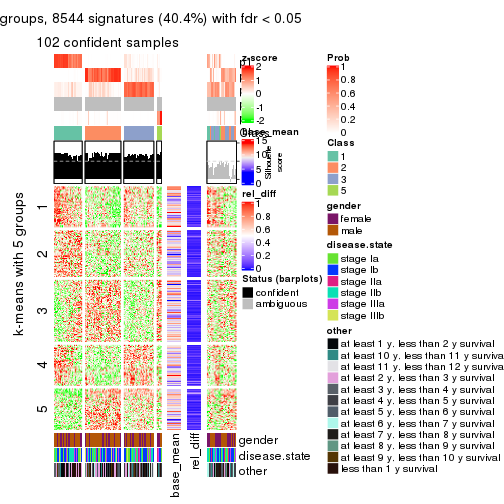
get_signatures(res, k = 6)
Signature heatmaps where rows are not scaled:
get_signatures(res, k = 2, scale_rows = FALSE)
get_signatures(res, k = 3, scale_rows = FALSE)
get_signatures(res, k = 4, scale_rows = FALSE)
get_signatures(res, k = 5, scale_rows = FALSE)
get_signatures(res, k = 6, scale_rows = FALSE)
Compare the overlap of signatures from different k:
compare_signatures(res)
get_signature() returns a data frame invisibly. TO get the list of signatures, the function
call should be assigned to a variable explicitly. In following code, if plot argument is set
to FALSE, no heatmap is plotted while only the differential analysis is performed.
# code only for demonstration
tb = get_signature(res, k = ..., plot = FALSE)
An example of the output of tb is:
#> which_row fdr mean_1 mean_2 scaled_mean_1 scaled_mean_2 km
#> 1 38 0.042760348 8.373488 9.131774 -0.5533452 0.5164555 1
#> 2 40 0.018707592 7.106213 8.469186 -0.6173731 0.5762149 1
#> 3 55 0.019134737 10.221463 11.207825 -0.6159697 0.5749050 1
#> 4 59 0.006059896 5.921854 7.869574 -0.6899429 0.6439467 1
#> 5 60 0.018055526 8.928898 10.211722 -0.6204761 0.5791110 1
#> 6 98 0.009384629 15.714769 14.887706 0.6635654 -0.6193277 2
...
The columns in tb are:
which_row: row indices corresponding to the input matrix.fdr: FDR for the differential test. mean_x: The mean value in group x.scaled_mean_x: The mean value in group x after rows are scaled.km: Row groups if k-means clustering is applied to rows.UMAP plot which shows how samples are separated.
dimension_reduction(res, k = 2, method = "UMAP")
dimension_reduction(res, k = 3, method = "UMAP")
dimension_reduction(res, k = 4, method = "UMAP")
dimension_reduction(res, k = 5, method = "UMAP")
dimension_reduction(res, k = 6, method = "UMAP")
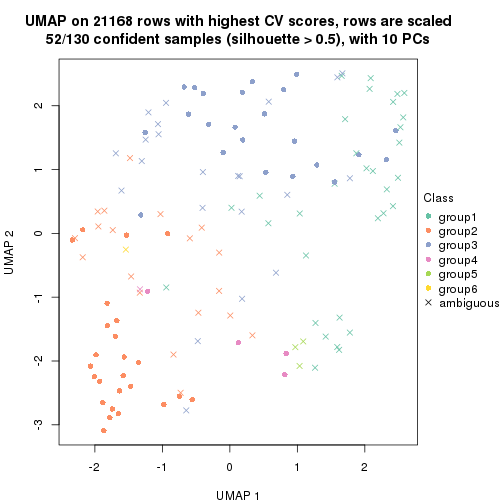
Following heatmap shows how subgroups are split when increasing k:
collect_classes(res)
Test correlation between subgroups and known annotations. If the known annotation is numeric, one-way ANOVA test is applied, and if the known annotation is discrete, chi-squared contingency table test is applied.
test_to_known_factors(res)
#> n gender(p) disease.state(p) other(p) k
#> CV:hclust 115 0.234 0.419 0.173 2
#> CV:hclust 66 0.285 0.268 0.783 3
#> CV:hclust 106 0.453 0.684 0.401 4
#> CV:hclust 102 0.504 0.757 0.427 5
#> CV:hclust 52 0.103 0.266 0.444 6
If matrix rows can be associated to genes, consider to use functional_enrichment(res,
...) to perform function enrichment for the signature genes. See this vignette for more detailed explanations.
The object with results only for a single top-value method and a single partition method can be extracted as:
res = res_list["CV", "kmeans"]
# you can also extract it by
# res = res_list["CV:kmeans"]
A summary of res and all the functions that can be applied to it:
res
#> A 'ConsensusPartition' object with k = 2, 3, 4, 5, 6.
#> On a matrix with 21168 rows and 130 columns.
#> Top rows (1000, 2000, 3000, 4000, 5000) are extracted by 'CV' method.
#> Subgroups are detected by 'kmeans' method.
#> Performed in total 1250 partitions by row resampling.
#> Best k for subgroups seems to be 2.
#>
#> Following methods can be applied to this 'ConsensusPartition' object:
#> [1] "cola_report" "collect_classes" "collect_plots"
#> [4] "collect_stats" "colnames" "compare_signatures"
#> [7] "consensus_heatmap" "dimension_reduction" "functional_enrichment"
#> [10] "get_anno_col" "get_anno" "get_classes"
#> [13] "get_consensus" "get_matrix" "get_membership"
#> [16] "get_param" "get_signatures" "get_stats"
#> [19] "is_best_k" "is_stable_k" "membership_heatmap"
#> [22] "ncol" "nrow" "plot_ecdf"
#> [25] "rownames" "select_partition_number" "show"
#> [28] "suggest_best_k" "test_to_known_factors"
collect_plots() function collects all the plots made from res for all k (number of partitions)
into one single page to provide an easy and fast comparison between different k.
collect_plots(res)
The plots are:
k and the heatmap of
predicted classes for each k.k.k.k.All the plots in panels can be made by individual functions and they are plotted later in this section.
select_partition_number() produces several plots showing different
statistics for choosing “optimized” k. There are following statistics:
k;k, the area increased is defined as \(A_k - A_{k-1}\).The detailed explanations of these statistics can be found in the cola vignette.
Generally speaking, lower PAC score, higher mean silhouette score or higher
concordance corresponds to better partition. Rand index and Jaccard index
measure how similar the current partition is compared to partition with k-1.
If they are too similar, we won't accept k is better than k-1.
select_partition_number(res)
The numeric values for all these statistics can be obtained by get_stats().
get_stats(res)
#> k 1-PAC mean_silhouette concordance area_increased Rand Jaccard
#> 2 2 0.890 0.940 0.972 0.4668 0.527 0.527
#> 3 3 0.619 0.840 0.873 0.3900 0.691 0.473
#> 4 4 0.680 0.677 0.828 0.1305 0.898 0.713
#> 5 5 0.655 0.616 0.759 0.0670 0.882 0.606
#> 6 6 0.680 0.575 0.738 0.0481 0.945 0.752
suggest_best_k() suggests the best \(k\) based on these statistics. The rules are as follows:
suggest_best_k(res)
#> [1] 2
Following shows the table of the partitions (You need to click the show/hide
code output link to see it). The membership matrix (columns with name p*)
is inferred by
clue::cl_consensus()
function with the SE method. Basically the value in the membership matrix
represents the probability to belong to a certain group. The finall class
label for an item is determined with the group with highest probability it
belongs to.
In get_classes() function, the entropy is calculated from the membership
matrix and the silhouette score is calculated from the consensus matrix.
cbind(get_classes(res, k = 2), get_membership(res, k = 2))
#> class entropy silhouette p1 p2
#> GSM102191 2 0.0000 0.9845 0.000 1.000
#> GSM102240 1 0.0000 0.9481 1.000 0.000
#> GSM102175 1 0.0000 0.9481 1.000 0.000
#> GSM102134 2 0.0000 0.9845 0.000 1.000
#> GSM102171 1 0.0000 0.9481 1.000 0.000
#> GSM102178 1 0.7815 0.7391 0.768 0.232
#> GSM102198 2 0.0000 0.9845 0.000 1.000
#> GSM102221 1 0.0000 0.9481 1.000 0.000
#> GSM102223 2 0.0000 0.9845 0.000 1.000
#> GSM102229 2 0.0000 0.9845 0.000 1.000
#> GSM102153 1 0.0000 0.9481 1.000 0.000
#> GSM102220 2 0.0000 0.9845 0.000 1.000
#> GSM102202 2 0.0376 0.9818 0.004 0.996
#> GSM102123 1 0.7883 0.7335 0.764 0.236
#> GSM102125 2 0.0000 0.9845 0.000 1.000
#> GSM102136 2 0.0000 0.9845 0.000 1.000
#> GSM102197 2 0.0000 0.9845 0.000 1.000
#> GSM102131 2 0.0000 0.9845 0.000 1.000
#> GSM102132 1 0.7219 0.7786 0.800 0.200
#> GSM102212 2 0.0000 0.9845 0.000 1.000
#> GSM102117 2 0.6247 0.8153 0.156 0.844
#> GSM102124 2 0.0000 0.9845 0.000 1.000
#> GSM102172 1 0.0000 0.9481 1.000 0.000
#> GSM102199 2 0.0000 0.9845 0.000 1.000
#> GSM102203 1 0.0000 0.9481 1.000 0.000
#> GSM102213 2 0.1843 0.9606 0.028 0.972
#> GSM102165 2 0.1184 0.9733 0.016 0.984
#> GSM102180 2 0.0000 0.9845 0.000 1.000
#> GSM102184 2 0.2043 0.9586 0.032 0.968
#> GSM102225 2 0.0000 0.9845 0.000 1.000
#> GSM102230 1 0.0000 0.9481 1.000 0.000
#> GSM102133 2 0.0000 0.9845 0.000 1.000
#> GSM102166 1 0.0000 0.9481 1.000 0.000
#> GSM102235 1 0.1843 0.9299 0.972 0.028
#> GSM102196 1 0.0000 0.9481 1.000 0.000
#> GSM102243 1 0.7602 0.7555 0.780 0.220
#> GSM102135 2 0.0000 0.9845 0.000 1.000
#> GSM102139 2 0.0000 0.9845 0.000 1.000
#> GSM102151 2 0.0000 0.9845 0.000 1.000
#> GSM102193 2 0.0000 0.9845 0.000 1.000
#> GSM102200 1 0.0000 0.9481 1.000 0.000
#> GSM102204 2 0.0000 0.9845 0.000 1.000
#> GSM102145 2 0.0000 0.9845 0.000 1.000
#> GSM102142 2 0.0000 0.9845 0.000 1.000
#> GSM102179 2 0.0000 0.9845 0.000 1.000
#> GSM102181 2 0.1184 0.9733 0.016 0.984
#> GSM102154 2 0.1184 0.9733 0.016 0.984
#> GSM102152 2 0.0000 0.9845 0.000 1.000
#> GSM102162 2 0.0000 0.9845 0.000 1.000
#> GSM102187 2 0.0000 0.9845 0.000 1.000
#> GSM102116 1 0.0000 0.9481 1.000 0.000
#> GSM102150 1 0.0000 0.9481 1.000 0.000
#> GSM102227 2 0.0000 0.9845 0.000 1.000
#> GSM102114 1 0.0000 0.9481 1.000 0.000
#> GSM102177 1 0.0000 0.9481 1.000 0.000
#> GSM102160 2 0.0000 0.9845 0.000 1.000
#> GSM102161 1 0.0000 0.9481 1.000 0.000
#> GSM102170 2 0.0000 0.9845 0.000 1.000
#> GSM102205 2 0.1184 0.9733 0.016 0.984
#> GSM102118 1 0.8608 0.6583 0.716 0.284
#> GSM102156 2 0.1184 0.9733 0.016 0.984
#> GSM102238 1 0.0000 0.9481 1.000 0.000
#> GSM102143 2 0.1184 0.9733 0.016 0.984
#> GSM102144 2 0.0000 0.9845 0.000 1.000
#> GSM102209 2 0.0000 0.9845 0.000 1.000
#> GSM102210 2 0.0000 0.9845 0.000 1.000
#> GSM102140 2 0.0000 0.9845 0.000 1.000
#> GSM102242 2 0.2236 0.9546 0.036 0.964
#> GSM102141 2 0.1184 0.9733 0.016 0.984
#> GSM102120 2 0.0000 0.9845 0.000 1.000
#> GSM102127 2 0.1184 0.9733 0.016 0.984
#> GSM102149 1 0.0000 0.9481 1.000 0.000
#> GSM102232 2 0.0000 0.9845 0.000 1.000
#> GSM102222 2 0.0000 0.9845 0.000 1.000
#> GSM102236 1 0.0000 0.9481 1.000 0.000
#> GSM102215 2 0.0000 0.9845 0.000 1.000
#> GSM102194 2 0.0000 0.9845 0.000 1.000
#> GSM102208 2 0.0000 0.9845 0.000 1.000
#> GSM102130 2 0.0000 0.9845 0.000 1.000
#> GSM102188 1 0.7602 0.7549 0.780 0.220
#> GSM102233 1 0.0000 0.9481 1.000 0.000
#> GSM102189 2 0.0000 0.9845 0.000 1.000
#> GSM102234 2 0.0000 0.9845 0.000 1.000
#> GSM102237 1 0.0000 0.9481 1.000 0.000
#> GSM102159 1 0.7219 0.7786 0.800 0.200
#> GSM102155 1 0.9393 0.5158 0.644 0.356
#> GSM102137 2 0.0376 0.9818 0.004 0.996
#> GSM102217 2 0.0000 0.9845 0.000 1.000
#> GSM102126 2 0.5737 0.8333 0.136 0.864
#> GSM102157 2 0.0000 0.9845 0.000 1.000
#> GSM102163 1 0.0000 0.9481 1.000 0.000
#> GSM102182 1 0.0000 0.9481 1.000 0.000
#> GSM102167 2 0.0000 0.9845 0.000 1.000
#> GSM102206 1 0.0000 0.9481 1.000 0.000
#> GSM102224 2 0.0000 0.9845 0.000 1.000
#> GSM102164 2 0.0000 0.9845 0.000 1.000
#> GSM102174 1 0.0000 0.9481 1.000 0.000
#> GSM102214 2 0.0000 0.9845 0.000 1.000
#> GSM102226 2 0.0000 0.9845 0.000 1.000
#> GSM102195 2 0.0000 0.9845 0.000 1.000
#> GSM102218 2 0.0000 0.9845 0.000 1.000
#> GSM102128 2 0.0000 0.9845 0.000 1.000
#> GSM102168 1 0.0000 0.9481 1.000 0.000
#> GSM102190 1 0.0000 0.9481 1.000 0.000
#> GSM102201 2 0.0376 0.9818 0.004 0.996
#> GSM102129 2 0.0000 0.9845 0.000 1.000
#> GSM102192 1 0.0376 0.9457 0.996 0.004
#> GSM102183 2 0.0000 0.9845 0.000 1.000
#> GSM102185 1 0.0000 0.9481 1.000 0.000
#> GSM102158 2 0.6148 0.8112 0.152 0.848
#> GSM102169 2 0.0000 0.9845 0.000 1.000
#> GSM102216 1 0.5737 0.8417 0.864 0.136
#> GSM102219 1 0.0000 0.9481 1.000 0.000
#> GSM102231 2 0.0000 0.9845 0.000 1.000
#> GSM102147 2 0.0000 0.9845 0.000 1.000
#> GSM102176 1 0.0000 0.9481 1.000 0.000
#> GSM102148 2 0.9954 0.0528 0.460 0.540
#> GSM102146 1 0.0000 0.9481 1.000 0.000
#> GSM102241 1 0.0000 0.9481 1.000 0.000
#> GSM102211 1 0.0000 0.9481 1.000 0.000
#> GSM102115 1 0.0000 0.9481 1.000 0.000
#> GSM102173 1 0.0000 0.9481 1.000 0.000
#> GSM102138 2 0.0000 0.9845 0.000 1.000
#> GSM102228 1 0.8909 0.6140 0.692 0.308
#> GSM102207 2 0.1184 0.9733 0.016 0.984
#> GSM102122 1 0.0000 0.9481 1.000 0.000
#> GSM102119 2 0.0000 0.9845 0.000 1.000
#> GSM102186 2 0.0000 0.9845 0.000 1.000
#> GSM102239 1 0.0000 0.9481 1.000 0.000
#> GSM102121 2 0.0000 0.9845 0.000 1.000
cbind(get_classes(res, k = 3), get_membership(res, k = 3))
#> class entropy silhouette p1 p2 p3
#> GSM102191 2 0.1289 0.9033 0.000 0.968 0.032
#> GSM102240 1 0.1129 0.8834 0.976 0.020 0.004
#> GSM102175 1 0.4291 0.9294 0.820 0.000 0.180
#> GSM102134 2 0.0592 0.9010 0.000 0.988 0.012
#> GSM102171 1 0.4291 0.9294 0.820 0.000 0.180
#> GSM102178 3 0.2918 0.7895 0.044 0.032 0.924
#> GSM102198 2 0.0747 0.9020 0.000 0.984 0.016
#> GSM102221 1 0.0237 0.8938 0.996 0.000 0.004
#> GSM102223 2 0.1289 0.8984 0.000 0.968 0.032
#> GSM102229 3 0.4399 0.8727 0.000 0.188 0.812
#> GSM102153 1 0.4235 0.9297 0.824 0.000 0.176
#> GSM102220 3 0.4346 0.8727 0.000 0.184 0.816
#> GSM102202 2 0.4465 0.7562 0.176 0.820 0.004
#> GSM102123 3 0.2176 0.8052 0.020 0.032 0.948
#> GSM102125 2 0.1289 0.9033 0.000 0.968 0.032
#> GSM102136 2 0.0592 0.9000 0.000 0.988 0.012
#> GSM102197 3 0.4291 0.8744 0.000 0.180 0.820
#> GSM102131 3 0.4452 0.8718 0.000 0.192 0.808
#> GSM102132 3 0.2663 0.7809 0.044 0.024 0.932
#> GSM102212 2 0.1031 0.9031 0.000 0.976 0.024
#> GSM102117 2 0.6512 0.6070 0.300 0.676 0.024
#> GSM102124 2 0.1289 0.9033 0.000 0.968 0.032
#> GSM102172 1 0.4235 0.9296 0.824 0.000 0.176
#> GSM102199 2 0.1529 0.8898 0.000 0.960 0.040
#> GSM102203 1 0.1267 0.8809 0.972 0.024 0.004
#> GSM102213 2 0.4575 0.7488 0.184 0.812 0.004
#> GSM102165 3 0.4121 0.8760 0.000 0.168 0.832
#> GSM102180 2 0.1289 0.9033 0.000 0.968 0.032
#> GSM102184 3 0.3879 0.8729 0.000 0.152 0.848
#> GSM102225 2 0.5859 0.3333 0.000 0.656 0.344
#> GSM102230 1 0.4235 0.9297 0.824 0.000 0.176
#> GSM102133 2 0.1289 0.9033 0.000 0.968 0.032
#> GSM102166 1 0.4291 0.9294 0.820 0.000 0.180
#> GSM102235 3 0.1964 0.7422 0.056 0.000 0.944
#> GSM102196 1 0.4291 0.9294 0.820 0.000 0.180
#> GSM102243 3 0.8722 0.5634 0.152 0.272 0.576
#> GSM102135 2 0.5529 0.5067 0.000 0.704 0.296
#> GSM102139 2 0.0424 0.8986 0.000 0.992 0.008
#> GSM102151 2 0.1620 0.8870 0.012 0.964 0.024
#> GSM102193 2 0.1289 0.9033 0.000 0.968 0.032
#> GSM102200 3 0.2261 0.7344 0.068 0.000 0.932
#> GSM102204 2 0.0892 0.9029 0.000 0.980 0.020
#> GSM102145 3 0.4346 0.8727 0.000 0.184 0.816
#> GSM102142 2 0.1289 0.9033 0.000 0.968 0.032
#> GSM102179 2 0.6154 0.0889 0.000 0.592 0.408
#> GSM102181 3 0.4235 0.8756 0.000 0.176 0.824
#> GSM102154 3 0.4235 0.8756 0.000 0.176 0.824
#> GSM102152 2 0.1289 0.8879 0.000 0.968 0.032
#> GSM102162 2 0.1289 0.9033 0.000 0.968 0.032
#> GSM102187 3 0.5365 0.8195 0.004 0.252 0.744
#> GSM102116 1 0.1182 0.8848 0.976 0.012 0.012
#> GSM102150 1 0.4921 0.9153 0.816 0.020 0.164
#> GSM102227 3 0.4399 0.8727 0.000 0.188 0.812
#> GSM102114 1 0.4291 0.9294 0.820 0.000 0.180
#> GSM102177 1 0.0237 0.8938 0.996 0.000 0.004
#> GSM102160 2 0.1289 0.9033 0.000 0.968 0.032
#> GSM102161 1 0.3686 0.9275 0.860 0.000 0.140
#> GSM102170 2 0.1289 0.9033 0.000 0.968 0.032
#> GSM102205 3 0.4346 0.8749 0.000 0.184 0.816
#> GSM102118 3 0.2173 0.8273 0.008 0.048 0.944
#> GSM102156 3 0.4121 0.8760 0.000 0.168 0.832
#> GSM102238 1 0.4291 0.9294 0.820 0.000 0.180
#> GSM102143 3 0.4178 0.8760 0.000 0.172 0.828
#> GSM102144 2 0.2682 0.8482 0.076 0.920 0.004
#> GSM102209 2 0.4842 0.6375 0.000 0.776 0.224
#> GSM102210 3 0.5650 0.7294 0.000 0.312 0.688
#> GSM102140 3 0.4346 0.8727 0.000 0.184 0.816
#> GSM102242 3 0.3686 0.8694 0.000 0.140 0.860
#> GSM102141 3 0.4235 0.8755 0.000 0.176 0.824
#> GSM102120 3 0.4452 0.8718 0.000 0.192 0.808
#> GSM102127 3 0.4235 0.8756 0.000 0.176 0.824
#> GSM102149 1 0.4209 0.9085 0.860 0.020 0.120
#> GSM102232 2 0.1031 0.9027 0.000 0.976 0.024
#> GSM102222 2 0.0892 0.9024 0.000 0.980 0.020
#> GSM102236 1 0.0237 0.8938 0.996 0.000 0.004
#> GSM102215 2 0.0000 0.8965 0.000 1.000 0.000
#> GSM102194 2 0.1289 0.9033 0.000 0.968 0.032
#> GSM102208 2 0.1289 0.9033 0.000 0.968 0.032
#> GSM102130 2 0.1289 0.9033 0.000 0.968 0.032
#> GSM102188 3 0.2793 0.7852 0.044 0.028 0.928
#> GSM102233 1 0.4291 0.9294 0.820 0.000 0.180
#> GSM102189 2 0.1031 0.9027 0.000 0.976 0.024
#> GSM102234 3 0.4346 0.8727 0.000 0.184 0.816
#> GSM102237 1 0.4178 0.9296 0.828 0.000 0.172
#> GSM102159 3 0.2383 0.7718 0.044 0.016 0.940
#> GSM102155 3 0.2703 0.8297 0.016 0.056 0.928
#> GSM102137 2 0.8546 0.2699 0.108 0.544 0.348
#> GSM102217 2 0.3850 0.8305 0.088 0.884 0.028
#> GSM102126 3 0.2711 0.8496 0.000 0.088 0.912
#> GSM102157 3 0.4605 0.8621 0.000 0.204 0.796
#> GSM102163 1 0.5016 0.8777 0.760 0.000 0.240
#> GSM102182 1 0.0983 0.8859 0.980 0.016 0.004
#> GSM102167 2 0.1289 0.9033 0.000 0.968 0.032
#> GSM102206 1 0.4291 0.9294 0.820 0.000 0.180
#> GSM102224 2 0.0747 0.9020 0.000 0.984 0.016
#> GSM102164 2 0.1289 0.9033 0.000 0.968 0.032
#> GSM102174 1 0.0237 0.8938 0.996 0.000 0.004
#> GSM102214 3 0.5327 0.7958 0.000 0.272 0.728
#> GSM102226 3 0.4842 0.8496 0.000 0.224 0.776
#> GSM102195 3 0.4346 0.8727 0.000 0.184 0.816
#> GSM102218 3 0.4235 0.8756 0.000 0.176 0.824
#> GSM102128 2 0.0892 0.9023 0.000 0.980 0.020
#> GSM102168 3 0.5138 0.4047 0.252 0.000 0.748
#> GSM102190 1 0.1289 0.9031 0.968 0.000 0.032
#> GSM102201 2 0.5402 0.7522 0.180 0.792 0.028
#> GSM102129 3 0.4346 0.8727 0.000 0.184 0.816
#> GSM102192 3 0.6255 0.5627 0.320 0.012 0.668
#> GSM102183 3 0.5926 0.6538 0.000 0.356 0.644
#> GSM102185 1 0.4291 0.9294 0.820 0.000 0.180
#> GSM102158 2 0.5493 0.7013 0.232 0.756 0.012
#> GSM102169 3 0.4346 0.8727 0.000 0.184 0.816
#> GSM102216 3 0.6203 0.7115 0.184 0.056 0.760
#> GSM102219 1 0.3826 0.9137 0.868 0.008 0.124
#> GSM102231 3 0.5560 0.7578 0.000 0.300 0.700
#> GSM102147 2 0.0747 0.8882 0.016 0.984 0.000
#> GSM102176 1 0.4121 0.9294 0.832 0.000 0.168
#> GSM102148 3 0.2356 0.8426 0.000 0.072 0.928
#> GSM102146 1 0.1643 0.9065 0.956 0.000 0.044
#> GSM102241 1 0.4291 0.9294 0.820 0.000 0.180
#> GSM102211 1 0.4291 0.9294 0.820 0.000 0.180
#> GSM102115 1 0.0237 0.8938 0.996 0.000 0.004
#> GSM102173 1 0.4291 0.9294 0.820 0.000 0.180
#> GSM102138 2 0.1774 0.8850 0.016 0.960 0.024
#> GSM102228 3 0.1411 0.8240 0.000 0.036 0.964
#> GSM102207 3 0.4121 0.8760 0.000 0.168 0.832
#> GSM102122 3 0.4121 0.5983 0.168 0.000 0.832
#> GSM102119 2 0.2878 0.8480 0.000 0.904 0.096
#> GSM102186 2 0.4861 0.7549 0.180 0.808 0.012
#> GSM102239 1 0.0237 0.8938 0.996 0.000 0.004
#> GSM102121 2 0.1289 0.9033 0.000 0.968 0.032
cbind(get_classes(res, k = 4), get_membership(res, k = 4))
#> class entropy silhouette p1 p2 p3 p4
#> GSM102191 2 0.1722 0.8392 0.000 0.944 0.008 0.048
#> GSM102240 4 0.4713 0.4401 0.360 0.000 0.000 0.640
#> GSM102175 1 0.0524 0.8899 0.988 0.000 0.008 0.004
#> GSM102134 2 0.4008 0.7544 0.000 0.756 0.000 0.244
#> GSM102171 1 0.0336 0.8896 0.992 0.000 0.008 0.000
#> GSM102178 3 0.1557 0.8196 0.056 0.000 0.944 0.000
#> GSM102198 2 0.3801 0.7696 0.000 0.780 0.000 0.220
#> GSM102221 4 0.4972 0.3301 0.456 0.000 0.000 0.544
#> GSM102223 2 0.3982 0.7639 0.000 0.776 0.004 0.220
#> GSM102229 3 0.1854 0.8389 0.000 0.012 0.940 0.048
#> GSM102153 1 0.0657 0.8850 0.984 0.000 0.004 0.012
#> GSM102220 3 0.1174 0.8443 0.000 0.012 0.968 0.020
#> GSM102202 4 0.3837 0.4387 0.000 0.224 0.000 0.776
#> GSM102123 3 0.4037 0.7620 0.112 0.000 0.832 0.056
#> GSM102125 2 0.1356 0.8427 0.000 0.960 0.008 0.032
#> GSM102136 2 0.4401 0.7285 0.000 0.724 0.004 0.272
#> GSM102197 3 0.1059 0.8444 0.000 0.012 0.972 0.016
#> GSM102131 3 0.2300 0.8353 0.000 0.016 0.920 0.064
#> GSM102132 3 0.1388 0.8345 0.028 0.000 0.960 0.012
#> GSM102212 2 0.0921 0.8443 0.000 0.972 0.000 0.028
#> GSM102117 4 0.5551 0.5318 0.036 0.224 0.020 0.720
#> GSM102124 2 0.0927 0.8417 0.000 0.976 0.008 0.016
#> GSM102172 1 0.0672 0.8885 0.984 0.000 0.008 0.008
#> GSM102199 2 0.7479 0.4190 0.000 0.480 0.196 0.324
#> GSM102203 4 0.4741 0.4101 0.328 0.000 0.004 0.668
#> GSM102213 4 0.4250 0.4364 0.000 0.276 0.000 0.724
#> GSM102165 3 0.0844 0.8440 0.004 0.012 0.980 0.004
#> GSM102180 2 0.0672 0.8445 0.000 0.984 0.008 0.008
#> GSM102184 3 0.0992 0.8442 0.004 0.012 0.976 0.008
#> GSM102225 2 0.7281 0.4857 0.000 0.532 0.196 0.272
#> GSM102230 1 0.0524 0.8865 0.988 0.000 0.004 0.008
#> GSM102133 2 0.0927 0.8417 0.000 0.976 0.008 0.016
#> GSM102166 1 0.0524 0.8899 0.988 0.000 0.008 0.004
#> GSM102235 3 0.4564 0.5007 0.328 0.000 0.672 0.000
#> GSM102196 1 0.0672 0.8867 0.984 0.000 0.008 0.008
#> GSM102243 3 0.8840 0.2001 0.064 0.208 0.432 0.296
#> GSM102135 3 0.7834 0.0416 0.000 0.308 0.408 0.284
#> GSM102139 2 0.0895 0.8397 0.000 0.976 0.004 0.020
#> GSM102151 2 0.5435 0.5572 0.000 0.564 0.016 0.420
#> GSM102193 2 0.0927 0.8417 0.000 0.976 0.008 0.016
#> GSM102200 3 0.2021 0.8288 0.024 0.000 0.936 0.040
#> GSM102204 2 0.0336 0.8450 0.000 0.992 0.000 0.008
#> GSM102145 3 0.1388 0.8433 0.000 0.012 0.960 0.028
#> GSM102142 2 0.1356 0.8427 0.000 0.960 0.008 0.032
#> GSM102179 2 0.4057 0.7079 0.000 0.816 0.152 0.032
#> GSM102181 3 0.1677 0.8421 0.000 0.012 0.948 0.040
#> GSM102154 3 0.0937 0.8445 0.000 0.012 0.976 0.012
#> GSM102152 4 0.7630 -0.2309 0.000 0.364 0.208 0.428
#> GSM102162 2 0.1452 0.8425 0.000 0.956 0.008 0.036
#> GSM102187 3 0.5473 0.4990 0.000 0.324 0.644 0.032
#> GSM102116 4 0.5110 0.4440 0.352 0.000 0.012 0.636
#> GSM102150 1 0.4167 0.7142 0.824 0.004 0.040 0.132
#> GSM102227 3 0.2329 0.8264 0.000 0.012 0.916 0.072
#> GSM102114 1 0.0336 0.8896 0.992 0.000 0.008 0.000
#> GSM102177 4 0.5000 0.2521 0.500 0.000 0.000 0.500
#> GSM102160 2 0.1356 0.8433 0.000 0.960 0.008 0.032
#> GSM102161 1 0.1824 0.8412 0.936 0.000 0.004 0.060
#> GSM102170 2 0.0927 0.8417 0.000 0.976 0.008 0.016
#> GSM102205 3 0.4579 0.7106 0.004 0.020 0.764 0.212
#> GSM102118 3 0.0927 0.8404 0.016 0.000 0.976 0.008
#> GSM102156 3 0.1247 0.8438 0.004 0.012 0.968 0.016
#> GSM102238 1 0.0336 0.8896 0.992 0.000 0.008 0.000
#> GSM102143 3 0.1471 0.8427 0.004 0.012 0.960 0.024
#> GSM102144 2 0.3649 0.7497 0.000 0.796 0.000 0.204
#> GSM102209 2 0.7680 0.3681 0.000 0.444 0.232 0.324
#> GSM102210 3 0.5663 0.5717 0.000 0.264 0.676 0.060
#> GSM102140 3 0.1938 0.8374 0.000 0.012 0.936 0.052
#> GSM102242 3 0.0657 0.8436 0.004 0.012 0.984 0.000
#> GSM102141 3 0.1182 0.8450 0.000 0.016 0.968 0.016
#> GSM102120 3 0.4406 0.7320 0.000 0.028 0.780 0.192
#> GSM102127 3 0.0657 0.8443 0.000 0.012 0.984 0.004
#> GSM102149 1 0.5853 0.4053 0.636 0.004 0.044 0.316
#> GSM102232 2 0.3893 0.7748 0.000 0.796 0.008 0.196
#> GSM102222 2 0.3726 0.7717 0.000 0.788 0.000 0.212
#> GSM102236 4 0.4999 0.2710 0.492 0.000 0.000 0.508
#> GSM102215 2 0.3400 0.7904 0.000 0.820 0.000 0.180
#> GSM102194 2 0.0927 0.8417 0.000 0.976 0.008 0.016
#> GSM102208 2 0.0927 0.8417 0.000 0.976 0.008 0.016
#> GSM102130 2 0.0927 0.8417 0.000 0.976 0.008 0.016
#> GSM102188 3 0.1890 0.8199 0.056 0.000 0.936 0.008
#> GSM102233 1 0.0524 0.8876 0.988 0.000 0.004 0.008
#> GSM102189 2 0.0804 0.8419 0.000 0.980 0.008 0.012
#> GSM102234 3 0.1284 0.8441 0.000 0.012 0.964 0.024
#> GSM102237 1 0.0336 0.8860 0.992 0.000 0.000 0.008
#> GSM102159 3 0.1890 0.8210 0.056 0.000 0.936 0.008
#> GSM102155 3 0.0469 0.8400 0.012 0.000 0.988 0.000
#> GSM102137 4 0.4731 0.4175 0.000 0.060 0.160 0.780
#> GSM102217 4 0.5337 0.1891 0.000 0.260 0.044 0.696
#> GSM102126 3 0.0376 0.8426 0.004 0.004 0.992 0.000
#> GSM102157 3 0.2408 0.7975 0.000 0.104 0.896 0.000
#> GSM102163 1 0.3123 0.6764 0.844 0.000 0.156 0.000
#> GSM102182 4 0.4661 0.4466 0.348 0.000 0.000 0.652
#> GSM102167 2 0.1635 0.8419 0.000 0.948 0.008 0.044
#> GSM102206 1 0.0376 0.8891 0.992 0.000 0.004 0.004
#> GSM102224 2 0.3569 0.7808 0.000 0.804 0.000 0.196
#> GSM102164 2 0.0927 0.8417 0.000 0.976 0.008 0.016
#> GSM102174 4 0.4999 0.2710 0.492 0.000 0.000 0.508
#> GSM102214 3 0.7105 0.4911 0.000 0.196 0.564 0.240
#> GSM102226 3 0.5383 0.6247 0.000 0.036 0.672 0.292
#> GSM102195 3 0.2928 0.8086 0.000 0.012 0.880 0.108
#> GSM102218 3 0.1059 0.8444 0.000 0.012 0.972 0.016
#> GSM102128 2 0.1970 0.8197 0.000 0.932 0.008 0.060
#> GSM102168 3 0.4994 0.1124 0.480 0.000 0.520 0.000
#> GSM102190 1 0.5163 -0.2727 0.516 0.000 0.004 0.480
#> GSM102201 4 0.3196 0.4725 0.000 0.136 0.008 0.856
#> GSM102129 3 0.1174 0.8444 0.000 0.012 0.968 0.020
#> GSM102192 4 0.5971 0.0710 0.032 0.004 0.420 0.544
#> GSM102183 3 0.6391 0.4766 0.000 0.304 0.604 0.092
#> GSM102185 1 0.0524 0.8899 0.988 0.000 0.008 0.004
#> GSM102158 4 0.4250 0.4784 0.000 0.276 0.000 0.724
#> GSM102169 3 0.1059 0.8444 0.000 0.012 0.972 0.016
#> GSM102216 3 0.5701 0.4730 0.028 0.004 0.612 0.356
#> GSM102219 1 0.5252 0.5606 0.720 0.004 0.040 0.236
#> GSM102231 3 0.7740 0.1538 0.000 0.320 0.432 0.248
#> GSM102147 2 0.3219 0.8082 0.000 0.836 0.000 0.164
#> GSM102176 1 0.2530 0.7904 0.896 0.000 0.004 0.100
#> GSM102148 3 0.0779 0.8389 0.016 0.000 0.980 0.004
#> GSM102146 4 0.5168 0.2177 0.496 0.000 0.004 0.500
#> GSM102241 1 0.0524 0.8889 0.988 0.000 0.008 0.004
#> GSM102211 1 0.0672 0.8867 0.984 0.000 0.008 0.008
#> GSM102115 4 0.5000 0.2521 0.500 0.000 0.000 0.500
#> GSM102173 1 0.0524 0.8899 0.988 0.000 0.008 0.004
#> GSM102138 2 0.5708 0.5223 0.000 0.556 0.028 0.416
#> GSM102228 3 0.0524 0.8424 0.008 0.004 0.988 0.000
#> GSM102207 3 0.0937 0.8445 0.000 0.012 0.976 0.012
#> GSM102122 3 0.5992 0.1916 0.444 0.000 0.516 0.040
#> GSM102119 2 0.3392 0.7369 0.000 0.856 0.124 0.020
#> GSM102186 4 0.4661 0.3913 0.000 0.348 0.000 0.652
#> GSM102239 4 0.4998 0.2786 0.488 0.000 0.000 0.512
#> GSM102121 2 0.0927 0.8417 0.000 0.976 0.008 0.016
cbind(get_classes(res, k = 5), get_membership(res, k = 5))
#> class entropy silhouette p1 p2 p3 p4 p5
#> GSM102191 2 0.4121 0.7116 0.000 0.760 0.008 0.208 0.024
#> GSM102240 5 0.3381 0.6641 0.176 0.000 0.000 0.016 0.808
#> GSM102175 1 0.0609 0.7809 0.980 0.000 0.000 0.000 0.020
#> GSM102134 4 0.4444 0.3382 0.000 0.364 0.000 0.624 0.012
#> GSM102171 1 0.0566 0.7827 0.984 0.000 0.000 0.004 0.012
#> GSM102178 3 0.3546 0.8146 0.024 0.000 0.852 0.060 0.064
#> GSM102198 4 0.4848 0.1869 0.000 0.420 0.000 0.556 0.024
#> GSM102221 5 0.3612 0.6301 0.268 0.000 0.000 0.000 0.732
#> GSM102223 4 0.4464 0.2447 0.000 0.408 0.000 0.584 0.008
#> GSM102229 3 0.2069 0.8405 0.000 0.000 0.912 0.076 0.012
#> GSM102153 1 0.0451 0.7825 0.988 0.000 0.000 0.004 0.008
#> GSM102220 3 0.2171 0.8443 0.000 0.000 0.912 0.064 0.024
#> GSM102202 5 0.5595 0.3713 0.000 0.084 0.000 0.356 0.560
#> GSM102123 3 0.6815 0.5077 0.188 0.000 0.584 0.168 0.060
#> GSM102125 2 0.3660 0.7426 0.000 0.800 0.008 0.176 0.016
#> GSM102136 4 0.4558 0.4080 0.000 0.324 0.000 0.652 0.024
#> GSM102197 3 0.1981 0.8402 0.000 0.000 0.920 0.064 0.016
#> GSM102131 3 0.2470 0.8300 0.000 0.000 0.884 0.104 0.012
#> GSM102132 3 0.3390 0.8169 0.020 0.000 0.860 0.060 0.060
#> GSM102212 2 0.3660 0.7437 0.000 0.800 0.008 0.176 0.016
#> GSM102117 5 0.4259 0.6216 0.028 0.048 0.004 0.112 0.808
#> GSM102124 2 0.0451 0.7844 0.000 0.988 0.008 0.000 0.004
#> GSM102172 1 0.0609 0.7809 0.980 0.000 0.000 0.000 0.020
#> GSM102199 4 0.5345 0.6163 0.000 0.084 0.140 0.728 0.048
#> GSM102203 5 0.5941 0.5709 0.228 0.000 0.000 0.180 0.592
#> GSM102213 5 0.5345 0.4807 0.000 0.088 0.000 0.280 0.632
#> GSM102165 3 0.0693 0.8484 0.000 0.000 0.980 0.012 0.008
#> GSM102180 2 0.2894 0.7685 0.000 0.860 0.008 0.124 0.008
#> GSM102184 3 0.2378 0.8337 0.000 0.000 0.904 0.048 0.048
#> GSM102225 4 0.5026 0.5233 0.000 0.244 0.060 0.688 0.008
#> GSM102230 1 0.0693 0.7807 0.980 0.000 0.000 0.012 0.008
#> GSM102133 2 0.0451 0.7844 0.000 0.988 0.008 0.000 0.004
#> GSM102166 1 0.0609 0.7809 0.980 0.000 0.000 0.000 0.020
#> GSM102235 1 0.6361 0.0568 0.460 0.000 0.436 0.040 0.064
#> GSM102196 1 0.0000 0.7845 1.000 0.000 0.000 0.000 0.000
#> GSM102243 4 0.7979 0.4817 0.016 0.148 0.220 0.496 0.120
#> GSM102135 4 0.5339 0.5430 0.000 0.048 0.280 0.652 0.020
#> GSM102139 2 0.0162 0.7796 0.000 0.996 0.000 0.000 0.004
#> GSM102151 4 0.4178 0.5679 0.000 0.100 0.004 0.792 0.104
#> GSM102193 2 0.0451 0.7844 0.000 0.988 0.008 0.000 0.004
#> GSM102200 3 0.4429 0.7816 0.028 0.000 0.792 0.112 0.068
#> GSM102204 2 0.3099 0.7657 0.000 0.848 0.008 0.132 0.012
#> GSM102145 3 0.2017 0.8369 0.000 0.000 0.912 0.080 0.008
#> GSM102142 2 0.3660 0.7425 0.000 0.800 0.008 0.176 0.016
#> GSM102179 2 0.4329 0.7313 0.000 0.776 0.028 0.168 0.028
#> GSM102181 3 0.3389 0.8332 0.000 0.000 0.836 0.116 0.048
#> GSM102154 3 0.2592 0.8308 0.000 0.000 0.892 0.056 0.052
#> GSM102152 4 0.5526 0.4837 0.000 0.040 0.088 0.704 0.168
#> GSM102162 2 0.3874 0.7216 0.000 0.776 0.008 0.200 0.016
#> GSM102187 3 0.7407 -0.0205 0.000 0.356 0.432 0.144 0.068
#> GSM102116 5 0.3342 0.6595 0.136 0.000 0.008 0.020 0.836
#> GSM102150 1 0.5212 0.5166 0.696 0.000 0.016 0.216 0.072
#> GSM102227 3 0.3318 0.7610 0.000 0.000 0.808 0.180 0.012
#> GSM102114 1 0.1211 0.7708 0.960 0.000 0.000 0.016 0.024
#> GSM102177 5 0.4313 0.5682 0.356 0.000 0.000 0.008 0.636
#> GSM102160 2 0.3639 0.7502 0.000 0.808 0.008 0.164 0.020
#> GSM102161 1 0.3343 0.6062 0.812 0.000 0.000 0.016 0.172
#> GSM102170 2 0.0451 0.7844 0.000 0.988 0.008 0.000 0.004
#> GSM102205 4 0.5166 0.3908 0.004 0.000 0.348 0.604 0.044
#> GSM102118 3 0.1377 0.8494 0.004 0.000 0.956 0.020 0.020
#> GSM102156 3 0.2592 0.8308 0.000 0.000 0.892 0.056 0.052
#> GSM102238 1 0.0162 0.7843 0.996 0.000 0.000 0.000 0.004
#> GSM102143 3 0.2708 0.8242 0.000 0.000 0.884 0.072 0.044
#> GSM102144 4 0.6620 -0.0429 0.000 0.404 0.004 0.408 0.184
#> GSM102209 4 0.4980 0.6121 0.000 0.112 0.132 0.740 0.016
#> GSM102210 3 0.7338 0.1200 0.000 0.176 0.496 0.264 0.064
#> GSM102140 3 0.2193 0.8332 0.000 0.000 0.900 0.092 0.008
#> GSM102242 3 0.1300 0.8502 0.000 0.000 0.956 0.028 0.016
#> GSM102141 3 0.1628 0.8478 0.000 0.000 0.936 0.056 0.008
#> GSM102120 4 0.5118 0.3379 0.000 0.004 0.376 0.584 0.036
#> GSM102127 3 0.1399 0.8491 0.000 0.000 0.952 0.020 0.028
#> GSM102149 1 0.6530 0.0908 0.440 0.000 0.012 0.412 0.136
#> GSM102232 2 0.4706 -0.1298 0.000 0.500 0.004 0.488 0.008
#> GSM102222 4 0.4861 0.1650 0.000 0.428 0.000 0.548 0.024
#> GSM102236 5 0.4182 0.5748 0.352 0.000 0.000 0.004 0.644
#> GSM102215 2 0.4723 -0.0231 0.000 0.536 0.000 0.448 0.016
#> GSM102194 2 0.0290 0.7843 0.000 0.992 0.008 0.000 0.000
#> GSM102208 2 0.0451 0.7844 0.000 0.988 0.008 0.000 0.004
#> GSM102130 2 0.0290 0.7843 0.000 0.992 0.008 0.000 0.000
#> GSM102188 3 0.3665 0.8132 0.024 0.000 0.844 0.056 0.076
#> GSM102233 1 0.0566 0.7820 0.984 0.000 0.000 0.004 0.012
#> GSM102189 2 0.0613 0.7819 0.000 0.984 0.008 0.004 0.004
#> GSM102234 3 0.2110 0.8403 0.000 0.000 0.912 0.072 0.016
#> GSM102237 1 0.0579 0.7820 0.984 0.000 0.000 0.008 0.008
#> GSM102159 3 0.2765 0.8292 0.024 0.000 0.896 0.036 0.044
#> GSM102155 3 0.1992 0.8391 0.000 0.000 0.924 0.032 0.044
#> GSM102137 4 0.4795 0.4290 0.008 0.008 0.032 0.712 0.240
#> GSM102217 4 0.4575 0.4627 0.000 0.040 0.012 0.736 0.212
#> GSM102126 3 0.1117 0.8487 0.000 0.000 0.964 0.020 0.016
#> GSM102157 3 0.3507 0.7740 0.000 0.112 0.840 0.036 0.012
#> GSM102163 1 0.4584 0.6178 0.788 0.000 0.104 0.048 0.060
#> GSM102182 5 0.4343 0.6583 0.136 0.000 0.000 0.096 0.768
#> GSM102167 2 0.4353 0.7056 0.000 0.740 0.012 0.224 0.024
#> GSM102206 1 0.0579 0.7829 0.984 0.000 0.000 0.008 0.008
#> GSM102224 2 0.4648 -0.1110 0.000 0.524 0.000 0.464 0.012
#> GSM102164 2 0.0451 0.7844 0.000 0.988 0.008 0.000 0.004
#> GSM102174 5 0.4196 0.5696 0.356 0.000 0.000 0.004 0.640
#> GSM102214 4 0.5976 0.5644 0.000 0.116 0.252 0.616 0.016
#> GSM102226 4 0.4558 0.4559 0.000 0.000 0.324 0.652 0.024
#> GSM102195 3 0.3132 0.7605 0.000 0.000 0.820 0.172 0.008
#> GSM102218 3 0.1557 0.8466 0.000 0.000 0.940 0.052 0.008
#> GSM102128 2 0.3950 0.6926 0.000 0.812 0.008 0.112 0.068
#> GSM102168 1 0.6114 0.3250 0.552 0.000 0.352 0.036 0.060
#> GSM102190 5 0.4517 0.5188 0.388 0.000 0.000 0.012 0.600
#> GSM102201 5 0.5097 0.3491 0.000 0.032 0.004 0.396 0.568
#> GSM102129 3 0.1697 0.8453 0.000 0.000 0.932 0.060 0.008
#> GSM102192 5 0.6608 0.1417 0.016 0.000 0.340 0.148 0.496
#> GSM102183 3 0.7370 -0.1273 0.000 0.160 0.424 0.360 0.056
#> GSM102185 1 0.0404 0.7833 0.988 0.000 0.000 0.000 0.012
#> GSM102158 5 0.4592 0.5833 0.004 0.100 0.000 0.140 0.756
#> GSM102169 3 0.2046 0.8405 0.000 0.000 0.916 0.068 0.016
#> GSM102216 3 0.6459 0.3953 0.008 0.000 0.540 0.256 0.196
#> GSM102219 1 0.6095 0.3089 0.584 0.000 0.008 0.268 0.140
#> GSM102231 4 0.6042 0.5533 0.000 0.184 0.184 0.620 0.012
#> GSM102147 2 0.4651 0.4033 0.000 0.608 0.000 0.372 0.020
#> GSM102176 1 0.3861 0.4003 0.712 0.000 0.000 0.004 0.284
#> GSM102148 3 0.1653 0.8467 0.004 0.000 0.944 0.024 0.028
#> GSM102146 5 0.5894 0.4978 0.356 0.000 0.000 0.112 0.532
#> GSM102241 1 0.0912 0.7758 0.972 0.000 0.000 0.016 0.012
#> GSM102211 1 0.0000 0.7845 1.000 0.000 0.000 0.000 0.000
#> GSM102115 5 0.4402 0.5700 0.352 0.000 0.000 0.012 0.636
#> GSM102173 1 0.0609 0.7809 0.980 0.000 0.000 0.000 0.020
#> GSM102138 4 0.5124 0.5377 0.000 0.144 0.004 0.708 0.144
#> GSM102228 3 0.1872 0.8438 0.000 0.000 0.928 0.052 0.020
#> GSM102207 3 0.1331 0.8500 0.000 0.000 0.952 0.040 0.008
#> GSM102122 1 0.6844 0.0844 0.456 0.000 0.400 0.084 0.060
#> GSM102119 2 0.5377 0.5466 0.000 0.708 0.136 0.136 0.020
#> GSM102186 5 0.5544 0.5115 0.000 0.168 0.000 0.184 0.648
#> GSM102239 5 0.4166 0.5777 0.348 0.000 0.000 0.004 0.648
#> GSM102121 2 0.0451 0.7844 0.000 0.988 0.008 0.000 0.004
cbind(get_classes(res, k = 6), get_membership(res, k = 6))
#> class entropy silhouette p1 p2 p3 p4 p5 p6
#> GSM102191 2 0.5004 0.56703 0.000 0.624 0.000 0.276 0.004 0.096
#> GSM102240 5 0.1933 0.68499 0.032 0.000 0.000 0.012 0.924 0.032
#> GSM102175 1 0.0858 0.80924 0.968 0.000 0.000 0.000 0.028 0.004
#> GSM102134 4 0.3342 0.55035 0.000 0.228 0.000 0.760 0.000 0.012
#> GSM102171 1 0.0260 0.81505 0.992 0.000 0.000 0.000 0.000 0.008
#> GSM102178 3 0.4052 0.50721 0.016 0.000 0.628 0.000 0.000 0.356
#> GSM102198 4 0.4267 0.47445 0.000 0.260 0.000 0.692 0.004 0.044
#> GSM102221 5 0.2006 0.69653 0.104 0.000 0.000 0.000 0.892 0.004
#> GSM102223 4 0.3859 0.53694 0.000 0.252 0.004 0.724 0.004 0.016
#> GSM102229 3 0.2046 0.73192 0.000 0.000 0.908 0.032 0.000 0.060
#> GSM102153 1 0.1080 0.81404 0.960 0.000 0.000 0.004 0.004 0.032
#> GSM102220 3 0.1049 0.73236 0.000 0.000 0.960 0.008 0.000 0.032
#> GSM102202 5 0.6553 0.33755 0.000 0.024 0.000 0.284 0.396 0.296
#> GSM102123 6 0.6761 0.50315 0.132 0.000 0.172 0.172 0.000 0.524
#> GSM102125 2 0.3854 0.72234 0.000 0.760 0.000 0.188 0.004 0.048
#> GSM102136 4 0.3352 0.59350 0.000 0.176 0.000 0.792 0.000 0.032
#> GSM102197 3 0.0935 0.74084 0.000 0.000 0.964 0.004 0.000 0.032
#> GSM102131 3 0.2630 0.69412 0.000 0.000 0.872 0.064 0.000 0.064
#> GSM102132 3 0.3937 0.42482 0.004 0.000 0.572 0.000 0.000 0.424
#> GSM102212 2 0.3854 0.72543 0.000 0.760 0.000 0.188 0.004 0.048
#> GSM102117 5 0.3536 0.64919 0.004 0.004 0.000 0.056 0.812 0.124
#> GSM102124 2 0.0146 0.79030 0.000 0.996 0.000 0.000 0.004 0.000
#> GSM102172 1 0.0858 0.80924 0.968 0.000 0.000 0.000 0.028 0.004
#> GSM102199 4 0.5060 0.49022 0.000 0.032 0.112 0.692 0.000 0.164
#> GSM102203 5 0.4737 0.65338 0.132 0.000 0.000 0.080 0.736 0.052
#> GSM102213 5 0.6425 0.41274 0.000 0.024 0.000 0.236 0.444 0.296
#> GSM102165 3 0.1910 0.74289 0.000 0.000 0.892 0.000 0.000 0.108
#> GSM102180 2 0.3050 0.75976 0.000 0.832 0.000 0.136 0.004 0.028
#> GSM102184 3 0.4109 0.44277 0.000 0.000 0.576 0.012 0.000 0.412
#> GSM102225 4 0.4124 0.59031 0.000 0.088 0.032 0.792 0.004 0.084
#> GSM102230 1 0.1493 0.80793 0.936 0.000 0.000 0.004 0.004 0.056
#> GSM102133 2 0.0146 0.79030 0.000 0.996 0.000 0.000 0.004 0.000
#> GSM102166 1 0.0777 0.81111 0.972 0.000 0.000 0.000 0.024 0.004
#> GSM102235 1 0.5481 0.15530 0.552 0.000 0.284 0.000 0.000 0.164
#> GSM102196 1 0.1387 0.80264 0.932 0.000 0.000 0.000 0.000 0.068
#> GSM102243 4 0.6323 0.16300 0.004 0.056 0.024 0.460 0.044 0.412
#> GSM102135 4 0.5343 0.40682 0.000 0.024 0.240 0.632 0.000 0.104
#> GSM102139 2 0.0146 0.79030 0.000 0.996 0.000 0.000 0.004 0.000
#> GSM102151 4 0.3824 0.53476 0.000 0.024 0.012 0.796 0.020 0.148
#> GSM102193 2 0.0146 0.79030 0.000 0.996 0.000 0.000 0.004 0.000
#> GSM102200 6 0.5087 0.03343 0.008 0.000 0.388 0.052 0.004 0.548
#> GSM102204 2 0.3343 0.75466 0.000 0.812 0.000 0.144 0.004 0.040
#> GSM102145 3 0.1829 0.73059 0.000 0.000 0.920 0.024 0.000 0.056
#> GSM102142 2 0.4006 0.71117 0.000 0.744 0.000 0.200 0.004 0.052
#> GSM102179 2 0.4460 0.71140 0.000 0.728 0.008 0.184 0.004 0.076
#> GSM102181 3 0.4664 0.41649 0.000 0.000 0.584 0.052 0.000 0.364
#> GSM102154 3 0.4542 0.39816 0.000 0.000 0.556 0.028 0.004 0.412
#> GSM102152 4 0.6288 0.33254 0.000 0.004 0.128 0.564 0.064 0.240
#> GSM102162 2 0.4272 0.67758 0.000 0.704 0.000 0.240 0.004 0.052
#> GSM102187 2 0.7649 0.00806 0.000 0.336 0.292 0.176 0.004 0.192
#> GSM102116 5 0.2265 0.67529 0.028 0.000 0.000 0.012 0.904 0.056
#> GSM102150 1 0.6275 0.05916 0.460 0.000 0.000 0.184 0.024 0.332
#> GSM102227 3 0.3912 0.56071 0.000 0.000 0.760 0.164 0.000 0.076
#> GSM102114 1 0.1007 0.80454 0.956 0.000 0.000 0.000 0.000 0.044
#> GSM102177 5 0.3071 0.66676 0.180 0.000 0.000 0.000 0.804 0.016
#> GSM102160 2 0.4286 0.71309 0.000 0.732 0.004 0.196 0.004 0.064
#> GSM102161 1 0.4993 0.30429 0.580 0.000 0.000 0.004 0.344 0.072
#> GSM102170 2 0.0146 0.79030 0.000 0.996 0.000 0.000 0.004 0.000
#> GSM102205 4 0.5103 0.12761 0.000 0.000 0.072 0.532 0.004 0.392
#> GSM102118 3 0.1141 0.74746 0.000 0.000 0.948 0.000 0.000 0.052
#> GSM102156 3 0.4542 0.39340 0.000 0.000 0.556 0.028 0.004 0.412
#> GSM102238 1 0.0000 0.81558 1.000 0.000 0.000 0.000 0.000 0.000
#> GSM102143 3 0.4561 0.36736 0.000 0.000 0.544 0.028 0.004 0.424
#> GSM102144 4 0.7085 0.28075 0.000 0.240 0.000 0.456 0.128 0.176
#> GSM102209 4 0.3618 0.57722 0.000 0.044 0.044 0.824 0.000 0.088
#> GSM102210 6 0.7164 0.27309 0.000 0.080 0.240 0.264 0.004 0.412
#> GSM102140 3 0.2001 0.71267 0.000 0.000 0.912 0.048 0.000 0.040
#> GSM102242 3 0.2996 0.70432 0.000 0.000 0.772 0.000 0.000 0.228
#> GSM102141 3 0.2350 0.74834 0.000 0.000 0.880 0.020 0.000 0.100
#> GSM102120 4 0.5183 0.27014 0.000 0.000 0.140 0.604 0.000 0.256
#> GSM102127 3 0.1806 0.74363 0.000 0.000 0.908 0.004 0.000 0.088
#> GSM102149 6 0.7259 0.07575 0.244 0.000 0.000 0.320 0.096 0.340
#> GSM102232 4 0.4558 0.44278 0.000 0.360 0.004 0.604 0.004 0.028
#> GSM102222 4 0.4395 0.47810 0.000 0.264 0.000 0.684 0.008 0.044
#> GSM102236 5 0.2848 0.67186 0.176 0.000 0.000 0.000 0.816 0.008
#> GSM102215 4 0.5853 0.31060 0.000 0.400 0.000 0.460 0.016 0.124
#> GSM102194 2 0.0146 0.79030 0.000 0.996 0.000 0.000 0.000 0.004
#> GSM102208 2 0.0146 0.79030 0.000 0.996 0.000 0.000 0.004 0.000
#> GSM102130 2 0.0000 0.79007 0.000 1.000 0.000 0.000 0.000 0.000
#> GSM102188 3 0.4012 0.52308 0.016 0.000 0.640 0.000 0.000 0.344
#> GSM102233 1 0.0713 0.81518 0.972 0.000 0.000 0.000 0.000 0.028
#> GSM102189 2 0.0405 0.78600 0.000 0.988 0.000 0.008 0.000 0.004
#> GSM102234 3 0.0993 0.73008 0.000 0.000 0.964 0.012 0.000 0.024
#> GSM102237 1 0.0922 0.81555 0.968 0.000 0.000 0.004 0.004 0.024
#> GSM102159 3 0.2790 0.70918 0.024 0.000 0.844 0.000 0.000 0.132
#> GSM102155 3 0.2178 0.73338 0.000 0.000 0.868 0.000 0.000 0.132
#> GSM102137 4 0.5472 0.16348 0.000 0.000 0.020 0.524 0.076 0.380
#> GSM102217 4 0.4601 0.44780 0.000 0.004 0.012 0.708 0.064 0.212
#> GSM102126 3 0.3076 0.69712 0.000 0.000 0.760 0.000 0.000 0.240
#> GSM102157 3 0.4756 0.61428 0.000 0.124 0.704 0.012 0.000 0.160
#> GSM102163 1 0.3329 0.63429 0.792 0.000 0.020 0.000 0.004 0.184
#> GSM102182 5 0.3874 0.64991 0.016 0.000 0.000 0.060 0.788 0.136
#> GSM102167 2 0.5589 0.65283 0.000 0.652 0.068 0.200 0.004 0.076
#> GSM102206 1 0.0858 0.81505 0.968 0.000 0.000 0.004 0.000 0.028
#> GSM102224 4 0.4555 0.37630 0.000 0.420 0.000 0.548 0.004 0.028
#> GSM102164 2 0.0146 0.79030 0.000 0.996 0.000 0.000 0.004 0.000
#> GSM102174 5 0.2772 0.66760 0.180 0.000 0.000 0.000 0.816 0.004
#> GSM102214 4 0.5184 0.53517 0.000 0.072 0.100 0.712 0.004 0.112
#> GSM102226 4 0.5089 0.36402 0.000 0.000 0.260 0.624 0.004 0.112
#> GSM102195 3 0.2954 0.64135 0.000 0.000 0.844 0.108 0.000 0.048
#> GSM102218 3 0.1584 0.74289 0.000 0.000 0.928 0.008 0.000 0.064
#> GSM102128 2 0.3732 0.68656 0.000 0.812 0.016 0.104 0.004 0.064
#> GSM102168 1 0.5061 0.32199 0.620 0.000 0.252 0.000 0.000 0.128
#> GSM102190 5 0.4632 0.59947 0.216 0.000 0.000 0.004 0.688 0.092
#> GSM102201 5 0.6332 0.33016 0.000 0.004 0.004 0.296 0.388 0.308
#> GSM102129 3 0.1913 0.74358 0.000 0.000 0.908 0.012 0.000 0.080
#> GSM102192 6 0.7076 0.34897 0.004 0.000 0.244 0.096 0.196 0.460
#> GSM102183 4 0.7313 -0.01920 0.000 0.100 0.228 0.396 0.004 0.272
#> GSM102185 1 0.0777 0.81111 0.972 0.000 0.000 0.000 0.024 0.004
#> GSM102158 5 0.4466 0.60343 0.000 0.000 0.000 0.116 0.708 0.176
#> GSM102169 3 0.1074 0.73031 0.000 0.000 0.960 0.012 0.000 0.028
#> GSM102216 6 0.6061 0.46381 0.004 0.000 0.216 0.184 0.028 0.568
#> GSM102219 1 0.7109 0.22234 0.460 0.000 0.000 0.216 0.136 0.188
#> GSM102231 4 0.4966 0.57039 0.000 0.096 0.096 0.732 0.004 0.072
#> GSM102147 2 0.4925 0.21280 0.000 0.504 0.000 0.440 0.004 0.052
#> GSM102176 1 0.3971 0.12274 0.548 0.000 0.000 0.000 0.448 0.004
#> GSM102148 3 0.3076 0.69130 0.000 0.000 0.760 0.000 0.000 0.240
#> GSM102146 5 0.7157 0.05367 0.236 0.000 0.000 0.084 0.340 0.340
#> GSM102241 1 0.1204 0.80513 0.944 0.000 0.000 0.000 0.000 0.056
#> GSM102211 1 0.1267 0.80417 0.940 0.000 0.000 0.000 0.000 0.060
#> GSM102115 5 0.3236 0.66446 0.180 0.000 0.000 0.000 0.796 0.024
#> GSM102173 1 0.0777 0.81111 0.972 0.000 0.000 0.000 0.024 0.004
#> GSM102138 4 0.5199 0.46592 0.000 0.048 0.024 0.692 0.036 0.200
#> GSM102228 3 0.3404 0.68354 0.000 0.000 0.744 0.004 0.004 0.248
#> GSM102207 3 0.2350 0.74834 0.000 0.000 0.880 0.020 0.000 0.100
#> GSM102122 6 0.5869 0.37065 0.324 0.000 0.096 0.040 0.000 0.540
#> GSM102119 2 0.5033 0.54265 0.000 0.688 0.200 0.060 0.000 0.052
#> GSM102186 5 0.6680 0.47734 0.000 0.100 0.000 0.140 0.508 0.252
#> GSM102239 5 0.2668 0.67611 0.168 0.000 0.000 0.000 0.828 0.004
#> GSM102121 2 0.0146 0.79030 0.000 0.996 0.000 0.000 0.004 0.000
Heatmaps for the consensus matrix. It visualizes the probability of two samples to be in a same group.
consensus_heatmap(res, k = 2)
consensus_heatmap(res, k = 3)
consensus_heatmap(res, k = 4)
consensus_heatmap(res, k = 5)

consensus_heatmap(res, k = 6)
Heatmaps for the membership of samples in all partitions to see how consistent they are:
membership_heatmap(res, k = 2)
membership_heatmap(res, k = 3)
membership_heatmap(res, k = 4)
membership_heatmap(res, k = 5)
membership_heatmap(res, k = 6)
As soon as we have had the classes for columns, we can look for signatures which are significantly different between classes which can be candidate marks for certain classes. Following are the heatmaps for signatures.
Signature heatmaps where rows are scaled:
get_signatures(res, k = 2)
get_signatures(res, k = 3)
get_signatures(res, k = 4)
get_signatures(res, k = 5)
get_signatures(res, k = 6)

Signature heatmaps where rows are not scaled:
get_signatures(res, k = 2, scale_rows = FALSE)
get_signatures(res, k = 3, scale_rows = FALSE)
get_signatures(res, k = 4, scale_rows = FALSE)
get_signatures(res, k = 5, scale_rows = FALSE)
get_signatures(res, k = 6, scale_rows = FALSE)
Compare the overlap of signatures from different k:
compare_signatures(res)
get_signature() returns a data frame invisibly. TO get the list of signatures, the function
call should be assigned to a variable explicitly. In following code, if plot argument is set
to FALSE, no heatmap is plotted while only the differential analysis is performed.
# code only for demonstration
tb = get_signature(res, k = ..., plot = FALSE)
An example of the output of tb is:
#> which_row fdr mean_1 mean_2 scaled_mean_1 scaled_mean_2 km
#> 1 38 0.042760348 8.373488 9.131774 -0.5533452 0.5164555 1
#> 2 40 0.018707592 7.106213 8.469186 -0.6173731 0.5762149 1
#> 3 55 0.019134737 10.221463 11.207825 -0.6159697 0.5749050 1
#> 4 59 0.006059896 5.921854 7.869574 -0.6899429 0.6439467 1
#> 5 60 0.018055526 8.928898 10.211722 -0.6204761 0.5791110 1
#> 6 98 0.009384629 15.714769 14.887706 0.6635654 -0.6193277 2
...
The columns in tb are:
which_row: row indices corresponding to the input matrix.fdr: FDR for the differential test. mean_x: The mean value in group x.scaled_mean_x: The mean value in group x after rows are scaled.km: Row groups if k-means clustering is applied to rows.UMAP plot which shows how samples are separated.
dimension_reduction(res, k = 2, method = "UMAP")

dimension_reduction(res, k = 3, method = "UMAP")
dimension_reduction(res, k = 4, method = "UMAP")
dimension_reduction(res, k = 5, method = "UMAP")

dimension_reduction(res, k = 6, method = "UMAP")
Following heatmap shows how subgroups are split when increasing k:
collect_classes(res)
Test correlation between subgroups and known annotations. If the known annotation is numeric, one-way ANOVA test is applied, and if the known annotation is discrete, chi-squared contingency table test is applied.
test_to_known_factors(res)
#> n gender(p) disease.state(p) other(p) k
#> CV:kmeans 129 0.169 0.351 0.2588 2
#> CV:kmeans 126 0.219 0.512 0.0195 3
#> CV:kmeans 96 0.392 0.629 0.6210 4
#> CV:kmeans 98 0.521 0.592 0.3672 5
#> CV:kmeans 88 0.425 0.913 0.3617 6
If matrix rows can be associated to genes, consider to use functional_enrichment(res,
...) to perform function enrichment for the signature genes. See this vignette for more detailed explanations.
The object with results only for a single top-value method and a single partition method can be extracted as:
res = res_list["CV", "skmeans"]
# you can also extract it by
# res = res_list["CV:skmeans"]
A summary of res and all the functions that can be applied to it:
res
#> A 'ConsensusPartition' object with k = 2, 3, 4, 5, 6.
#> On a matrix with 21168 rows and 130 columns.
#> Top rows (1000, 2000, 3000, 4000, 5000) are extracted by 'CV' method.
#> Subgroups are detected by 'skmeans' method.
#> Performed in total 1250 partitions by row resampling.
#> Best k for subgroups seems to be 2.
#>
#> Following methods can be applied to this 'ConsensusPartition' object:
#> [1] "cola_report" "collect_classes" "collect_plots"
#> [4] "collect_stats" "colnames" "compare_signatures"
#> [7] "consensus_heatmap" "dimension_reduction" "functional_enrichment"
#> [10] "get_anno_col" "get_anno" "get_classes"
#> [13] "get_consensus" "get_matrix" "get_membership"
#> [16] "get_param" "get_signatures" "get_stats"
#> [19] "is_best_k" "is_stable_k" "membership_heatmap"
#> [22] "ncol" "nrow" "plot_ecdf"
#> [25] "rownames" "select_partition_number" "show"
#> [28] "suggest_best_k" "test_to_known_factors"
collect_plots() function collects all the plots made from res for all k (number of partitions)
into one single page to provide an easy and fast comparison between different k.
collect_plots(res)
The plots are:
k and the heatmap of
predicted classes for each k.k.k.k.All the plots in panels can be made by individual functions and they are plotted later in this section.
select_partition_number() produces several plots showing different
statistics for choosing “optimized” k. There are following statistics:
k;k, the area increased is defined as \(A_k - A_{k-1}\).The detailed explanations of these statistics can be found in the cola vignette.
Generally speaking, lower PAC score, higher mean silhouette score or higher
concordance corresponds to better partition. Rand index and Jaccard index
measure how similar the current partition is compared to partition with k-1.
If they are too similar, we won't accept k is better than k-1.
select_partition_number(res)
The numeric values for all these statistics can be obtained by get_stats().
get_stats(res)
#> k 1-PAC mean_silhouette concordance area_increased Rand Jaccard
#> 2 2 0.871 0.915 0.964 0.4966 0.506 0.506
#> 3 3 0.843 0.890 0.949 0.3463 0.741 0.527
#> 4 4 0.606 0.615 0.799 0.1134 0.881 0.668
#> 5 5 0.593 0.535 0.725 0.0651 0.919 0.714
#> 6 6 0.607 0.414 0.666 0.0400 0.942 0.750
suggest_best_k() suggests the best \(k\) based on these statistics. The rules are as follows:
suggest_best_k(res)
#> [1] 2
Following shows the table of the partitions (You need to click the show/hide
code output link to see it). The membership matrix (columns with name p*)
is inferred by
clue::cl_consensus()
function with the SE method. Basically the value in the membership matrix
represents the probability to belong to a certain group. The finall class
label for an item is determined with the group with highest probability it
belongs to.
In get_classes() function, the entropy is calculated from the membership
matrix and the silhouette score is calculated from the consensus matrix.
cbind(get_classes(res, k = 2), get_membership(res, k = 2))
#> class entropy silhouette p1 p2
#> GSM102191 2 0.0000 0.957 0.000 1.000
#> GSM102240 1 0.0000 0.966 1.000 0.000
#> GSM102175 1 0.0000 0.966 1.000 0.000
#> GSM102134 2 0.0000 0.957 0.000 1.000
#> GSM102171 1 0.0000 0.966 1.000 0.000
#> GSM102178 1 0.0672 0.962 0.992 0.008
#> GSM102198 2 0.0000 0.957 0.000 1.000
#> GSM102221 1 0.0000 0.966 1.000 0.000
#> GSM102223 2 0.0000 0.957 0.000 1.000
#> GSM102229 2 0.0376 0.954 0.004 0.996
#> GSM102153 1 0.0000 0.966 1.000 0.000
#> GSM102220 2 0.0672 0.952 0.008 0.992
#> GSM102202 2 0.2043 0.934 0.032 0.968
#> GSM102123 1 0.0672 0.962 0.992 0.008
#> GSM102125 2 0.0000 0.957 0.000 1.000
#> GSM102136 2 0.0000 0.957 0.000 1.000
#> GSM102197 2 0.0376 0.954 0.004 0.996
#> GSM102131 2 0.0000 0.957 0.000 1.000
#> GSM102132 1 0.0672 0.962 0.992 0.008
#> GSM102212 2 0.0000 0.957 0.000 1.000
#> GSM102117 1 0.1633 0.948 0.976 0.024
#> GSM102124 2 0.0000 0.957 0.000 1.000
#> GSM102172 1 0.0000 0.966 1.000 0.000
#> GSM102199 2 0.0000 0.957 0.000 1.000
#> GSM102203 1 0.1414 0.952 0.980 0.020
#> GSM102213 2 0.8763 0.589 0.296 0.704
#> GSM102165 2 0.7883 0.696 0.236 0.764
#> GSM102180 2 0.0000 0.957 0.000 1.000
#> GSM102184 1 0.9686 0.337 0.604 0.396
#> GSM102225 2 0.0000 0.957 0.000 1.000
#> GSM102230 1 0.0000 0.966 1.000 0.000
#> GSM102133 2 0.0000 0.957 0.000 1.000
#> GSM102166 1 0.0000 0.966 1.000 0.000
#> GSM102235 1 0.0000 0.966 1.000 0.000
#> GSM102196 1 0.0000 0.966 1.000 0.000
#> GSM102243 1 0.0000 0.966 1.000 0.000
#> GSM102135 2 0.0000 0.957 0.000 1.000
#> GSM102139 2 0.0000 0.957 0.000 1.000
#> GSM102151 2 0.0000 0.957 0.000 1.000
#> GSM102193 2 0.0000 0.957 0.000 1.000
#> GSM102200 1 0.0000 0.966 1.000 0.000
#> GSM102204 2 0.0000 0.957 0.000 1.000
#> GSM102145 2 0.0000 0.957 0.000 1.000
#> GSM102142 2 0.0000 0.957 0.000 1.000
#> GSM102179 2 0.0000 0.957 0.000 1.000
#> GSM102181 2 0.9775 0.306 0.412 0.588
#> GSM102154 2 0.6623 0.789 0.172 0.828
#> GSM102152 2 0.0000 0.957 0.000 1.000
#> GSM102162 2 0.0000 0.957 0.000 1.000
#> GSM102187 2 0.3114 0.916 0.056 0.944
#> GSM102116 1 0.0000 0.966 1.000 0.000
#> GSM102150 1 0.0000 0.966 1.000 0.000
#> GSM102227 2 0.0000 0.957 0.000 1.000
#> GSM102114 1 0.0000 0.966 1.000 0.000
#> GSM102177 1 0.0000 0.966 1.000 0.000
#> GSM102160 2 0.0000 0.957 0.000 1.000
#> GSM102161 1 0.0000 0.966 1.000 0.000
#> GSM102170 2 0.0000 0.957 0.000 1.000
#> GSM102205 2 0.7674 0.714 0.224 0.776
#> GSM102118 1 0.1184 0.956 0.984 0.016
#> GSM102156 1 0.6247 0.809 0.844 0.156
#> GSM102238 1 0.0000 0.966 1.000 0.000
#> GSM102143 2 0.9833 0.270 0.424 0.576
#> GSM102144 2 0.0000 0.957 0.000 1.000
#> GSM102209 2 0.0000 0.957 0.000 1.000
#> GSM102210 2 0.0000 0.957 0.000 1.000
#> GSM102140 2 0.0000 0.957 0.000 1.000
#> GSM102242 1 0.7950 0.682 0.760 0.240
#> GSM102141 2 0.3274 0.912 0.060 0.940
#> GSM102120 2 0.0000 0.957 0.000 1.000
#> GSM102127 2 0.4562 0.879 0.096 0.904
#> GSM102149 1 0.0000 0.966 1.000 0.000
#> GSM102232 2 0.0000 0.957 0.000 1.000
#> GSM102222 2 0.0000 0.957 0.000 1.000
#> GSM102236 1 0.0000 0.966 1.000 0.000
#> GSM102215 2 0.0000 0.957 0.000 1.000
#> GSM102194 2 0.0000 0.957 0.000 1.000
#> GSM102208 2 0.0000 0.957 0.000 1.000
#> GSM102130 2 0.0000 0.957 0.000 1.000
#> GSM102188 1 0.0938 0.959 0.988 0.012
#> GSM102233 1 0.0000 0.966 1.000 0.000
#> GSM102189 2 0.0000 0.957 0.000 1.000
#> GSM102234 2 0.0000 0.957 0.000 1.000
#> GSM102237 1 0.0000 0.966 1.000 0.000
#> GSM102159 1 0.0938 0.959 0.988 0.012
#> GSM102155 1 0.1414 0.953 0.980 0.020
#> GSM102137 1 0.9754 0.288 0.592 0.408
#> GSM102217 2 0.5629 0.835 0.132 0.868
#> GSM102126 1 0.7602 0.715 0.780 0.220
#> GSM102157 2 0.0000 0.957 0.000 1.000
#> GSM102163 1 0.0000 0.966 1.000 0.000
#> GSM102182 1 0.0000 0.966 1.000 0.000
#> GSM102167 2 0.0000 0.957 0.000 1.000
#> GSM102206 1 0.0000 0.966 1.000 0.000
#> GSM102224 2 0.0000 0.957 0.000 1.000
#> GSM102164 2 0.0000 0.957 0.000 1.000
#> GSM102174 1 0.0000 0.966 1.000 0.000
#> GSM102214 2 0.0000 0.957 0.000 1.000
#> GSM102226 2 0.0000 0.957 0.000 1.000
#> GSM102195 2 0.0000 0.957 0.000 1.000
#> GSM102218 2 0.4022 0.894 0.080 0.920
#> GSM102128 2 0.0000 0.957 0.000 1.000
#> GSM102168 1 0.0000 0.966 1.000 0.000
#> GSM102190 1 0.0000 0.966 1.000 0.000
#> GSM102201 2 0.7883 0.694 0.236 0.764
#> GSM102129 2 0.0000 0.957 0.000 1.000
#> GSM102192 1 0.0000 0.966 1.000 0.000
#> GSM102183 2 0.1843 0.938 0.028 0.972
#> GSM102185 1 0.0000 0.966 1.000 0.000
#> GSM102158 2 0.9686 0.360 0.396 0.604
#> GSM102169 2 0.0000 0.957 0.000 1.000
#> GSM102216 1 0.0000 0.966 1.000 0.000
#> GSM102219 1 0.0000 0.966 1.000 0.000
#> GSM102231 2 0.0000 0.957 0.000 1.000
#> GSM102147 2 0.0000 0.957 0.000 1.000
#> GSM102176 1 0.0000 0.966 1.000 0.000
#> GSM102148 1 0.6887 0.768 0.816 0.184
#> GSM102146 1 0.0000 0.966 1.000 0.000
#> GSM102241 1 0.0000 0.966 1.000 0.000
#> GSM102211 1 0.0000 0.966 1.000 0.000
#> GSM102115 1 0.0000 0.966 1.000 0.000
#> GSM102173 1 0.0000 0.966 1.000 0.000
#> GSM102138 2 0.0000 0.957 0.000 1.000
#> GSM102228 1 0.0000 0.966 1.000 0.000
#> GSM102207 2 0.4022 0.894 0.080 0.920
#> GSM102122 1 0.0000 0.966 1.000 0.000
#> GSM102119 2 0.0000 0.957 0.000 1.000
#> GSM102186 2 0.0672 0.951 0.008 0.992
#> GSM102239 1 0.0000 0.966 1.000 0.000
#> GSM102121 2 0.0000 0.957 0.000 1.000
cbind(get_classes(res, k = 3), get_membership(res, k = 3))
#> class entropy silhouette p1 p2 p3
#> GSM102191 2 0.0000 0.935 0.000 1.000 0.000
#> GSM102240 1 0.0000 0.968 1.000 0.000 0.000
#> GSM102175 1 0.0000 0.968 1.000 0.000 0.000
#> GSM102134 2 0.0000 0.935 0.000 1.000 0.000
#> GSM102171 1 0.0000 0.968 1.000 0.000 0.000
#> GSM102178 3 0.2261 0.902 0.068 0.000 0.932
#> GSM102198 2 0.0000 0.935 0.000 1.000 0.000
#> GSM102221 1 0.0000 0.968 1.000 0.000 0.000
#> GSM102223 2 0.0000 0.935 0.000 1.000 0.000
#> GSM102229 3 0.0747 0.930 0.000 0.016 0.984
#> GSM102153 1 0.0000 0.968 1.000 0.000 0.000
#> GSM102220 3 0.0424 0.934 0.000 0.008 0.992
#> GSM102202 2 0.0000 0.935 0.000 1.000 0.000
#> GSM102123 3 0.5291 0.652 0.268 0.000 0.732
#> GSM102125 2 0.0237 0.935 0.000 0.996 0.004
#> GSM102136 2 0.0000 0.935 0.000 1.000 0.000
#> GSM102197 3 0.0000 0.936 0.000 0.000 1.000
#> GSM102131 3 0.0237 0.935 0.000 0.004 0.996
#> GSM102132 3 0.1411 0.922 0.036 0.000 0.964
#> GSM102212 2 0.0000 0.935 0.000 1.000 0.000
#> GSM102117 1 0.5378 0.675 0.756 0.236 0.008
#> GSM102124 2 0.0237 0.935 0.000 0.996 0.004
#> GSM102172 1 0.0000 0.968 1.000 0.000 0.000
#> GSM102199 2 0.1031 0.922 0.000 0.976 0.024
#> GSM102203 1 0.0424 0.963 0.992 0.008 0.000
#> GSM102213 2 0.5158 0.691 0.232 0.764 0.004
#> GSM102165 3 0.0000 0.936 0.000 0.000 1.000
#> GSM102180 2 0.0237 0.935 0.000 0.996 0.004
#> GSM102184 3 0.0000 0.936 0.000 0.000 1.000
#> GSM102225 2 0.1163 0.919 0.000 0.972 0.028
#> GSM102230 1 0.0000 0.968 1.000 0.000 0.000
#> GSM102133 2 0.0237 0.935 0.000 0.996 0.004
#> GSM102166 1 0.0000 0.968 1.000 0.000 0.000
#> GSM102235 3 0.2537 0.893 0.080 0.000 0.920
#> GSM102196 1 0.0000 0.968 1.000 0.000 0.000
#> GSM102243 1 0.1860 0.926 0.948 0.052 0.000
#> GSM102135 2 0.4750 0.719 0.000 0.784 0.216
#> GSM102139 2 0.0237 0.935 0.000 0.996 0.004
#> GSM102151 2 0.0237 0.933 0.000 0.996 0.004
#> GSM102193 2 0.0237 0.935 0.000 0.996 0.004
#> GSM102200 1 0.4002 0.803 0.840 0.000 0.160
#> GSM102204 2 0.0237 0.935 0.000 0.996 0.004
#> GSM102145 3 0.1289 0.922 0.000 0.032 0.968
#> GSM102142 2 0.0000 0.935 0.000 1.000 0.000
#> GSM102179 2 0.2625 0.874 0.000 0.916 0.084
#> GSM102181 3 0.0000 0.936 0.000 0.000 1.000
#> GSM102154 3 0.0000 0.936 0.000 0.000 1.000
#> GSM102152 2 0.0424 0.932 0.000 0.992 0.008
#> GSM102162 2 0.0237 0.935 0.000 0.996 0.004
#> GSM102187 3 0.5553 0.630 0.004 0.272 0.724
#> GSM102116 1 0.0000 0.968 1.000 0.000 0.000
#> GSM102150 1 0.0237 0.965 0.996 0.004 0.000
#> GSM102227 3 0.0000 0.936 0.000 0.000 1.000
#> GSM102114 1 0.0000 0.968 1.000 0.000 0.000
#> GSM102177 1 0.0000 0.968 1.000 0.000 0.000
#> GSM102160 2 0.0237 0.935 0.000 0.996 0.004
#> GSM102161 1 0.0000 0.968 1.000 0.000 0.000
#> GSM102170 2 0.0237 0.935 0.000 0.996 0.004
#> GSM102205 3 0.6587 0.745 0.092 0.156 0.752
#> GSM102118 3 0.0424 0.934 0.008 0.000 0.992
#> GSM102156 3 0.1163 0.927 0.028 0.000 0.972
#> GSM102238 1 0.0000 0.968 1.000 0.000 0.000
#> GSM102143 3 0.0237 0.935 0.004 0.000 0.996
#> GSM102144 2 0.0000 0.935 0.000 1.000 0.000
#> GSM102209 2 0.2448 0.881 0.000 0.924 0.076
#> GSM102210 2 0.6192 0.272 0.000 0.580 0.420
#> GSM102140 3 0.0424 0.935 0.000 0.008 0.992
#> GSM102242 3 0.0000 0.936 0.000 0.000 1.000
#> GSM102141 3 0.0237 0.935 0.000 0.004 0.996
#> GSM102120 3 0.3412 0.840 0.000 0.124 0.876
#> GSM102127 3 0.0000 0.936 0.000 0.000 1.000
#> GSM102149 1 0.0661 0.961 0.988 0.004 0.008
#> GSM102232 2 0.0237 0.935 0.000 0.996 0.004
#> GSM102222 2 0.0000 0.935 0.000 1.000 0.000
#> GSM102236 1 0.0000 0.968 1.000 0.000 0.000
#> GSM102215 2 0.0000 0.935 0.000 1.000 0.000
#> GSM102194 2 0.0237 0.935 0.000 0.996 0.004
#> GSM102208 2 0.0237 0.935 0.000 0.996 0.004
#> GSM102130 2 0.0237 0.935 0.000 0.996 0.004
#> GSM102188 3 0.2625 0.890 0.084 0.000 0.916
#> GSM102233 1 0.0000 0.968 1.000 0.000 0.000
#> GSM102189 2 0.0237 0.935 0.000 0.996 0.004
#> GSM102234 3 0.0000 0.936 0.000 0.000 1.000
#> GSM102237 1 0.0000 0.968 1.000 0.000 0.000
#> GSM102159 3 0.1031 0.928 0.024 0.000 0.976
#> GSM102155 3 0.0892 0.930 0.020 0.000 0.980
#> GSM102137 1 0.6659 0.523 0.668 0.304 0.028
#> GSM102217 2 0.4575 0.757 0.184 0.812 0.004
#> GSM102126 3 0.0000 0.936 0.000 0.000 1.000
#> GSM102157 3 0.1643 0.914 0.000 0.044 0.956
#> GSM102163 1 0.1643 0.934 0.956 0.000 0.044
#> GSM102182 1 0.0000 0.968 1.000 0.000 0.000
#> GSM102167 2 0.0237 0.935 0.000 0.996 0.004
#> GSM102206 1 0.0000 0.968 1.000 0.000 0.000
#> GSM102224 2 0.0000 0.935 0.000 1.000 0.000
#> GSM102164 2 0.0237 0.935 0.000 0.996 0.004
#> GSM102174 1 0.0000 0.968 1.000 0.000 0.000
#> GSM102214 3 0.6079 0.364 0.000 0.388 0.612
#> GSM102226 2 0.6295 0.122 0.000 0.528 0.472
#> GSM102195 3 0.4399 0.756 0.000 0.188 0.812
#> GSM102218 3 0.0000 0.936 0.000 0.000 1.000
#> GSM102128 2 0.0237 0.935 0.000 0.996 0.004
#> GSM102168 3 0.5706 0.559 0.320 0.000 0.680
#> GSM102190 1 0.0000 0.968 1.000 0.000 0.000
#> GSM102201 2 0.5797 0.609 0.280 0.712 0.008
#> GSM102129 3 0.0000 0.936 0.000 0.000 1.000
#> GSM102192 1 0.1964 0.924 0.944 0.000 0.056
#> GSM102183 2 0.4978 0.715 0.004 0.780 0.216
#> GSM102185 1 0.0000 0.968 1.000 0.000 0.000
#> GSM102158 2 0.5722 0.589 0.292 0.704 0.004
#> GSM102169 3 0.0000 0.936 0.000 0.000 1.000
#> GSM102216 1 0.3879 0.822 0.848 0.000 0.152
#> GSM102219 1 0.0983 0.955 0.980 0.004 0.016
#> GSM102231 2 0.5835 0.488 0.000 0.660 0.340
#> GSM102147 2 0.0000 0.935 0.000 1.000 0.000
#> GSM102176 1 0.0000 0.968 1.000 0.000 0.000
#> GSM102148 3 0.0237 0.935 0.004 0.000 0.996
#> GSM102146 1 0.0000 0.968 1.000 0.000 0.000
#> GSM102241 1 0.0000 0.968 1.000 0.000 0.000
#> GSM102211 1 0.0000 0.968 1.000 0.000 0.000
#> GSM102115 1 0.0000 0.968 1.000 0.000 0.000
#> GSM102173 1 0.0000 0.968 1.000 0.000 0.000
#> GSM102138 2 0.0237 0.933 0.000 0.996 0.004
#> GSM102228 3 0.3192 0.863 0.112 0.000 0.888
#> GSM102207 3 0.0237 0.935 0.000 0.004 0.996
#> GSM102122 1 0.3619 0.840 0.864 0.000 0.136
#> GSM102119 2 0.1163 0.921 0.000 0.972 0.028
#> GSM102186 2 0.0237 0.935 0.000 0.996 0.004
#> GSM102239 1 0.0000 0.968 1.000 0.000 0.000
#> GSM102121 2 0.0237 0.935 0.000 0.996 0.004
cbind(get_classes(res, k = 4), get_membership(res, k = 4))
#> class entropy silhouette p1 p2 p3 p4
#> GSM102191 2 0.2149 0.7809 0.000 0.912 0.000 0.088
#> GSM102240 1 0.5165 0.3786 0.512 0.004 0.000 0.484
#> GSM102175 1 0.0657 0.7713 0.984 0.000 0.004 0.012
#> GSM102134 2 0.4304 0.6329 0.000 0.716 0.000 0.284
#> GSM102171 1 0.0336 0.7704 0.992 0.000 0.008 0.000
#> GSM102178 3 0.4420 0.6575 0.240 0.000 0.748 0.012
#> GSM102198 2 0.3873 0.6968 0.000 0.772 0.000 0.228
#> GSM102221 1 0.4888 0.4950 0.588 0.000 0.000 0.412
#> GSM102223 2 0.4632 0.5983 0.000 0.688 0.004 0.308
#> GSM102229 3 0.4077 0.7415 0.004 0.012 0.800 0.184
#> GSM102153 1 0.0336 0.7716 0.992 0.000 0.000 0.008
#> GSM102220 3 0.1913 0.8314 0.000 0.020 0.940 0.040
#> GSM102202 4 0.4372 0.4916 0.004 0.268 0.000 0.728
#> GSM102123 1 0.7260 -0.0235 0.464 0.000 0.388 0.148
#> GSM102125 2 0.1022 0.7927 0.000 0.968 0.000 0.032
#> GSM102136 2 0.4679 0.5458 0.000 0.648 0.000 0.352
#> GSM102197 3 0.1302 0.8313 0.000 0.000 0.956 0.044
#> GSM102131 3 0.3873 0.7214 0.000 0.000 0.772 0.228
#> GSM102132 3 0.4767 0.6390 0.256 0.000 0.724 0.020
#> GSM102212 2 0.1792 0.7877 0.000 0.932 0.000 0.068
#> GSM102117 4 0.7607 0.2230 0.252 0.184 0.016 0.548
#> GSM102124 2 0.0188 0.7913 0.000 0.996 0.000 0.004
#> GSM102172 1 0.0804 0.7716 0.980 0.000 0.008 0.012
#> GSM102199 4 0.6928 -0.0484 0.000 0.436 0.108 0.456
#> GSM102203 4 0.5119 -0.2854 0.440 0.004 0.000 0.556
#> GSM102213 4 0.5085 0.4787 0.020 0.304 0.000 0.676
#> GSM102165 3 0.0000 0.8289 0.000 0.000 1.000 0.000
#> GSM102180 2 0.0817 0.7937 0.000 0.976 0.000 0.024
#> GSM102184 3 0.1182 0.8307 0.000 0.016 0.968 0.016
#> GSM102225 2 0.5660 0.4510 0.000 0.576 0.028 0.396
#> GSM102230 1 0.1004 0.7715 0.972 0.000 0.004 0.024
#> GSM102133 2 0.0000 0.7910 0.000 1.000 0.000 0.000
#> GSM102166 1 0.0804 0.7716 0.980 0.000 0.008 0.012
#> GSM102235 3 0.5236 0.3039 0.432 0.000 0.560 0.008
#> GSM102196 1 0.0657 0.7697 0.984 0.000 0.004 0.012
#> GSM102243 1 0.7014 0.4000 0.584 0.128 0.008 0.280
#> GSM102135 4 0.7851 0.1636 0.000 0.312 0.288 0.400
#> GSM102139 2 0.0336 0.7912 0.000 0.992 0.000 0.008
#> GSM102151 4 0.5088 0.0411 0.000 0.424 0.004 0.572
#> GSM102193 2 0.0000 0.7910 0.000 1.000 0.000 0.000
#> GSM102200 1 0.4590 0.6387 0.792 0.000 0.148 0.060
#> GSM102204 2 0.1637 0.7873 0.000 0.940 0.000 0.060
#> GSM102145 3 0.3392 0.7999 0.000 0.056 0.872 0.072
#> GSM102142 2 0.1389 0.7920 0.000 0.952 0.000 0.048
#> GSM102179 2 0.2124 0.7737 0.000 0.932 0.028 0.040
#> GSM102181 3 0.2918 0.8143 0.008 0.000 0.876 0.116
#> GSM102154 3 0.1543 0.8300 0.008 0.004 0.956 0.032
#> GSM102152 4 0.6919 0.2556 0.000 0.368 0.116 0.516
#> GSM102162 2 0.0817 0.7938 0.000 0.976 0.000 0.024
#> GSM102187 2 0.5876 0.3788 0.012 0.660 0.288 0.040
#> GSM102116 1 0.6076 0.3992 0.524 0.036 0.004 0.436
#> GSM102150 1 0.2867 0.7332 0.884 0.000 0.012 0.104
#> GSM102227 3 0.4707 0.6837 0.000 0.036 0.760 0.204
#> GSM102114 1 0.0657 0.7695 0.984 0.000 0.012 0.004
#> GSM102177 1 0.4804 0.5288 0.616 0.000 0.000 0.384
#> GSM102160 2 0.1059 0.7868 0.000 0.972 0.012 0.016
#> GSM102161 1 0.1661 0.7654 0.944 0.000 0.004 0.052
#> GSM102170 2 0.0000 0.7910 0.000 1.000 0.000 0.000
#> GSM102205 4 0.9631 0.1364 0.144 0.208 0.308 0.340
#> GSM102118 3 0.0804 0.8318 0.008 0.000 0.980 0.012
#> GSM102156 3 0.5987 0.7049 0.088 0.052 0.748 0.112
#> GSM102238 1 0.0336 0.7704 0.992 0.000 0.008 0.000
#> GSM102143 3 0.2757 0.8240 0.020 0.016 0.912 0.052
#> GSM102144 2 0.4608 0.3806 0.004 0.692 0.000 0.304
#> GSM102209 2 0.6094 0.3742 0.000 0.536 0.048 0.416
#> GSM102210 2 0.5384 0.5673 0.000 0.728 0.196 0.076
#> GSM102140 3 0.3311 0.7716 0.000 0.000 0.828 0.172
#> GSM102242 3 0.0895 0.8328 0.004 0.000 0.976 0.020
#> GSM102141 3 0.2149 0.8210 0.000 0.000 0.912 0.088
#> GSM102120 3 0.8537 -0.0728 0.032 0.236 0.400 0.332
#> GSM102127 3 0.0707 0.8313 0.000 0.000 0.980 0.020
#> GSM102149 1 0.4053 0.6572 0.768 0.000 0.004 0.228
#> GSM102232 2 0.4155 0.6662 0.000 0.756 0.004 0.240
#> GSM102222 2 0.4008 0.6796 0.000 0.756 0.000 0.244
#> GSM102236 1 0.4454 0.6076 0.692 0.000 0.000 0.308
#> GSM102215 2 0.3400 0.7177 0.000 0.820 0.000 0.180
#> GSM102194 2 0.0000 0.7910 0.000 1.000 0.000 0.000
#> GSM102208 2 0.0000 0.7910 0.000 1.000 0.000 0.000
#> GSM102130 2 0.0000 0.7910 0.000 1.000 0.000 0.000
#> GSM102188 3 0.5069 0.5464 0.320 0.000 0.664 0.016
#> GSM102233 1 0.0804 0.7689 0.980 0.000 0.008 0.012
#> GSM102189 2 0.0817 0.7828 0.000 0.976 0.000 0.024
#> GSM102234 3 0.1557 0.8278 0.000 0.000 0.944 0.056
#> GSM102237 1 0.1489 0.7696 0.952 0.000 0.004 0.044
#> GSM102159 3 0.2918 0.7769 0.116 0.000 0.876 0.008
#> GSM102155 3 0.1978 0.8084 0.068 0.000 0.928 0.004
#> GSM102137 4 0.4854 0.4483 0.152 0.048 0.012 0.788
#> GSM102217 4 0.3508 0.5122 0.004 0.136 0.012 0.848
#> GSM102126 3 0.0188 0.8291 0.000 0.000 0.996 0.004
#> GSM102157 3 0.4761 0.6500 0.000 0.192 0.764 0.044
#> GSM102163 1 0.2773 0.7028 0.880 0.000 0.116 0.004
#> GSM102182 1 0.5290 0.3833 0.516 0.008 0.000 0.476
#> GSM102167 2 0.2053 0.7799 0.000 0.924 0.004 0.072
#> GSM102206 1 0.0672 0.7698 0.984 0.000 0.008 0.008
#> GSM102224 2 0.4134 0.6502 0.000 0.740 0.000 0.260
#> GSM102164 2 0.0000 0.7910 0.000 1.000 0.000 0.000
#> GSM102174 1 0.4855 0.5097 0.600 0.000 0.000 0.400
#> GSM102214 2 0.7617 0.1685 0.000 0.452 0.216 0.332
#> GSM102226 4 0.7489 0.1249 0.000 0.184 0.364 0.452
#> GSM102195 3 0.6323 0.4931 0.000 0.100 0.628 0.272
#> GSM102218 3 0.2081 0.8222 0.000 0.000 0.916 0.084
#> GSM102128 2 0.2647 0.7021 0.000 0.880 0.000 0.120
#> GSM102168 1 0.5212 0.1234 0.572 0.000 0.420 0.008
#> GSM102190 1 0.3837 0.6723 0.776 0.000 0.000 0.224
#> GSM102201 4 0.3972 0.5370 0.016 0.152 0.008 0.824
#> GSM102129 3 0.1867 0.8246 0.000 0.000 0.928 0.072
#> GSM102192 4 0.6482 -0.2701 0.424 0.000 0.072 0.504
#> GSM102183 2 0.6026 0.5624 0.008 0.700 0.100 0.192
#> GSM102185 1 0.0376 0.7715 0.992 0.000 0.004 0.004
#> GSM102158 4 0.5821 0.4211 0.040 0.368 0.000 0.592
#> GSM102169 3 0.1389 0.8319 0.000 0.000 0.952 0.048
#> GSM102216 1 0.7674 0.2013 0.436 0.000 0.224 0.340
#> GSM102219 1 0.4295 0.6560 0.752 0.000 0.008 0.240
#> GSM102231 2 0.6574 0.3989 0.000 0.548 0.088 0.364
#> GSM102147 2 0.3266 0.7394 0.000 0.832 0.000 0.168
#> GSM102176 1 0.1940 0.7567 0.924 0.000 0.000 0.076
#> GSM102148 3 0.0672 0.8310 0.008 0.000 0.984 0.008
#> GSM102146 1 0.3831 0.6994 0.792 0.000 0.004 0.204
#> GSM102241 1 0.0804 0.7689 0.980 0.000 0.008 0.012
#> GSM102211 1 0.0657 0.7697 0.984 0.000 0.004 0.012
#> GSM102115 1 0.4804 0.5288 0.616 0.000 0.000 0.384
#> GSM102173 1 0.0524 0.7710 0.988 0.000 0.008 0.004
#> GSM102138 4 0.5355 0.2576 0.000 0.360 0.020 0.620
#> GSM102228 3 0.4957 0.5346 0.320 0.000 0.668 0.012
#> GSM102207 3 0.1302 0.8304 0.000 0.000 0.956 0.044
#> GSM102122 1 0.3958 0.6496 0.816 0.000 0.160 0.024
#> GSM102119 2 0.4030 0.6750 0.000 0.836 0.092 0.072
#> GSM102186 4 0.5070 0.3692 0.004 0.416 0.000 0.580
#> GSM102239 1 0.4830 0.5202 0.608 0.000 0.000 0.392
#> GSM102121 2 0.0000 0.7910 0.000 1.000 0.000 0.000
cbind(get_classes(res, k = 5), get_membership(res, k = 5))
#> class entropy silhouette p1 p2 p3 p4 p5
#> GSM102191 2 0.3543 0.71665 0.000 0.828 0.004 0.128 0.040
#> GSM102240 5 0.3752 0.57243 0.292 0.000 0.000 0.000 0.708
#> GSM102175 1 0.1043 0.71203 0.960 0.000 0.000 0.000 0.040
#> GSM102134 2 0.4824 0.38328 0.000 0.596 0.000 0.376 0.028
#> GSM102171 1 0.0486 0.71745 0.988 0.000 0.004 0.004 0.004
#> GSM102178 3 0.6640 0.40226 0.324 0.000 0.532 0.100 0.044
#> GSM102198 2 0.4575 0.49990 0.000 0.648 0.000 0.328 0.024
#> GSM102221 5 0.4074 0.51080 0.364 0.000 0.000 0.000 0.636
#> GSM102223 2 0.4928 0.22337 0.000 0.548 0.004 0.428 0.020
#> GSM102229 3 0.5524 0.59590 0.008 0.024 0.676 0.240 0.052
#> GSM102153 1 0.1628 0.70339 0.936 0.000 0.000 0.008 0.056
#> GSM102220 3 0.4346 0.68568 0.012 0.028 0.808 0.112 0.040
#> GSM102202 5 0.5344 0.18420 0.000 0.164 0.000 0.164 0.672
#> GSM102123 1 0.7822 -0.06506 0.372 0.000 0.244 0.316 0.068
#> GSM102125 2 0.2116 0.75166 0.000 0.912 0.004 0.076 0.008
#> GSM102136 2 0.5786 0.19875 0.000 0.524 0.000 0.380 0.096
#> GSM102197 3 0.3283 0.69045 0.000 0.000 0.832 0.140 0.028
#> GSM102131 3 0.5447 0.51795 0.000 0.000 0.572 0.356 0.072
#> GSM102132 3 0.7012 0.44912 0.280 0.000 0.516 0.160 0.044
#> GSM102212 2 0.2519 0.74534 0.000 0.884 0.000 0.100 0.016
#> GSM102117 5 0.4195 0.57088 0.096 0.072 0.012 0.008 0.812
#> GSM102124 2 0.1211 0.75678 0.000 0.960 0.000 0.024 0.016
#> GSM102172 1 0.1410 0.70277 0.940 0.000 0.000 0.000 0.060
#> GSM102199 4 0.6963 0.56819 0.000 0.244 0.068 0.556 0.132
#> GSM102203 5 0.5798 0.48076 0.336 0.000 0.000 0.108 0.556
#> GSM102213 5 0.4393 0.36805 0.004 0.152 0.000 0.076 0.768
#> GSM102165 3 0.1664 0.70213 0.008 0.004 0.948 0.020 0.020
#> GSM102180 2 0.1981 0.75677 0.000 0.924 0.000 0.048 0.028
#> GSM102184 3 0.6030 0.63074 0.040 0.056 0.700 0.160 0.044
#> GSM102225 4 0.4539 0.38864 0.000 0.320 0.008 0.660 0.012
#> GSM102230 1 0.2238 0.70397 0.912 0.000 0.004 0.020 0.064
#> GSM102133 2 0.0486 0.75334 0.000 0.988 0.004 0.004 0.004
#> GSM102166 1 0.0963 0.71347 0.964 0.000 0.000 0.000 0.036
#> GSM102235 1 0.6038 0.04095 0.516 0.000 0.400 0.052 0.032
#> GSM102196 1 0.1153 0.71736 0.964 0.000 0.004 0.008 0.024
#> GSM102243 1 0.8587 0.01636 0.420 0.140 0.024 0.216 0.200
#> GSM102135 4 0.6754 0.56792 0.000 0.192 0.164 0.588 0.056
#> GSM102139 2 0.0798 0.75496 0.000 0.976 0.000 0.008 0.016
#> GSM102151 4 0.6621 0.49848 0.000 0.248 0.004 0.492 0.256
#> GSM102193 2 0.0162 0.75354 0.000 0.996 0.000 0.000 0.004
#> GSM102200 1 0.6677 0.48327 0.624 0.000 0.116 0.128 0.132
#> GSM102204 2 0.2193 0.74572 0.000 0.900 0.000 0.092 0.008
#> GSM102145 3 0.5001 0.64246 0.000 0.064 0.724 0.192 0.020
#> GSM102142 2 0.2293 0.75150 0.000 0.900 0.000 0.084 0.016
#> GSM102179 2 0.3247 0.71063 0.000 0.868 0.028 0.072 0.032
#> GSM102181 3 0.6097 0.52925 0.016 0.004 0.532 0.376 0.072
#> GSM102154 3 0.6104 0.60526 0.012 0.044 0.652 0.228 0.064
#> GSM102152 4 0.7941 0.49367 0.000 0.160 0.124 0.416 0.300
#> GSM102162 2 0.2536 0.73589 0.000 0.868 0.000 0.128 0.004
#> GSM102187 2 0.6089 0.45031 0.004 0.668 0.164 0.120 0.044
#> GSM102116 5 0.4630 0.57081 0.288 0.016 0.004 0.008 0.684
#> GSM102150 1 0.5336 0.55645 0.712 0.000 0.020 0.132 0.136
#> GSM102227 3 0.5635 0.51416 0.000 0.032 0.592 0.340 0.036
#> GSM102114 1 0.1524 0.71438 0.952 0.000 0.016 0.016 0.016
#> GSM102177 5 0.4242 0.41383 0.428 0.000 0.000 0.000 0.572
#> GSM102160 2 0.2173 0.75236 0.000 0.920 0.012 0.052 0.016
#> GSM102161 1 0.3492 0.57403 0.796 0.000 0.000 0.016 0.188
#> GSM102170 2 0.0486 0.75393 0.000 0.988 0.004 0.004 0.004
#> GSM102205 4 0.5221 0.44866 0.052 0.036 0.104 0.768 0.040
#> GSM102118 3 0.2536 0.70663 0.032 0.000 0.904 0.052 0.012
#> GSM102156 3 0.8361 0.42394 0.060 0.072 0.456 0.272 0.140
#> GSM102238 1 0.0162 0.71764 0.996 0.000 0.004 0.000 0.000
#> GSM102143 3 0.7139 0.53837 0.056 0.044 0.568 0.268 0.064
#> GSM102144 2 0.6176 0.23975 0.000 0.540 0.000 0.172 0.288
#> GSM102209 4 0.4072 0.58932 0.000 0.192 0.008 0.772 0.028
#> GSM102210 2 0.7057 0.26533 0.012 0.544 0.124 0.276 0.044
#> GSM102140 3 0.5343 0.57372 0.000 0.004 0.640 0.280 0.076
#> GSM102242 3 0.2674 0.70411 0.008 0.000 0.888 0.084 0.020
#> GSM102141 3 0.4421 0.67637 0.004 0.004 0.732 0.232 0.028
#> GSM102120 4 0.6114 0.40934 0.020 0.080 0.192 0.672 0.036
#> GSM102127 3 0.4189 0.70440 0.028 0.008 0.808 0.128 0.028
#> GSM102149 1 0.6302 0.32555 0.560 0.000 0.012 0.284 0.144
#> GSM102232 2 0.4928 0.51231 0.000 0.684 0.012 0.264 0.040
#> GSM102222 2 0.4675 0.43444 0.000 0.620 0.004 0.360 0.016
#> GSM102236 1 0.4305 -0.22159 0.512 0.000 0.000 0.000 0.488
#> GSM102215 2 0.5102 0.53419 0.000 0.684 0.000 0.216 0.100
#> GSM102194 2 0.0579 0.75379 0.000 0.984 0.000 0.008 0.008
#> GSM102208 2 0.0854 0.75261 0.000 0.976 0.008 0.012 0.004
#> GSM102130 2 0.0566 0.75487 0.000 0.984 0.000 0.012 0.004
#> GSM102188 3 0.6710 0.26921 0.384 0.000 0.476 0.100 0.040
#> GSM102233 1 0.0968 0.71701 0.972 0.000 0.012 0.004 0.012
#> GSM102189 2 0.1893 0.73538 0.000 0.928 0.000 0.024 0.048
#> GSM102234 3 0.4456 0.66367 0.008 0.012 0.760 0.192 0.028
#> GSM102237 1 0.1908 0.68428 0.908 0.000 0.000 0.000 0.092
#> GSM102159 3 0.5047 0.61792 0.200 0.000 0.720 0.052 0.028
#> GSM102155 3 0.4364 0.65241 0.148 0.000 0.784 0.040 0.028
#> GSM102137 5 0.7191 -0.23138 0.084 0.060 0.012 0.404 0.440
#> GSM102217 4 0.6324 0.32607 0.004 0.104 0.008 0.444 0.440
#> GSM102126 3 0.3291 0.69452 0.016 0.000 0.856 0.100 0.028
#> GSM102157 3 0.6488 0.36927 0.000 0.280 0.580 0.064 0.076
#> GSM102163 1 0.3013 0.67314 0.880 0.000 0.068 0.024 0.028
#> GSM102182 5 0.4070 0.58974 0.256 0.012 0.000 0.004 0.728
#> GSM102167 2 0.4522 0.66169 0.000 0.788 0.040 0.116 0.056
#> GSM102206 1 0.1300 0.71557 0.956 0.000 0.016 0.000 0.028
#> GSM102224 2 0.4421 0.54996 0.000 0.704 0.004 0.268 0.024
#> GSM102164 2 0.0162 0.75354 0.000 0.996 0.000 0.000 0.004
#> GSM102174 5 0.4192 0.45721 0.404 0.000 0.000 0.000 0.596
#> GSM102214 4 0.6289 0.52257 0.004 0.244 0.128 0.604 0.020
#> GSM102226 4 0.6337 0.45620 0.000 0.080 0.200 0.636 0.084
#> GSM102195 3 0.6040 0.38963 0.000 0.056 0.540 0.372 0.032
#> GSM102218 3 0.3997 0.68068 0.004 0.000 0.776 0.188 0.032
#> GSM102128 2 0.3834 0.63843 0.000 0.816 0.008 0.052 0.124
#> GSM102168 1 0.5637 0.28768 0.604 0.000 0.324 0.044 0.028
#> GSM102190 1 0.4101 0.18290 0.628 0.000 0.000 0.000 0.372
#> GSM102201 5 0.5208 0.28180 0.000 0.076 0.028 0.176 0.720
#> GSM102129 3 0.3950 0.68516 0.000 0.004 0.796 0.152 0.048
#> GSM102192 5 0.6608 0.38373 0.244 0.000 0.092 0.072 0.592
#> GSM102183 2 0.7631 -0.06621 0.008 0.436 0.092 0.356 0.108
#> GSM102185 1 0.0324 0.71761 0.992 0.000 0.000 0.004 0.004
#> GSM102158 5 0.3512 0.45891 0.012 0.160 0.000 0.012 0.816
#> GSM102169 3 0.4245 0.68179 0.004 0.016 0.776 0.180 0.024
#> GSM102216 1 0.8693 -0.00693 0.332 0.008 0.184 0.228 0.248
#> GSM102219 1 0.5566 0.45045 0.668 0.000 0.008 0.144 0.180
#> GSM102231 4 0.5116 0.44890 0.000 0.304 0.052 0.640 0.004
#> GSM102147 2 0.4455 0.63701 0.000 0.744 0.000 0.188 0.068
#> GSM102176 1 0.3003 0.58334 0.812 0.000 0.000 0.000 0.188
#> GSM102148 3 0.4128 0.69506 0.052 0.000 0.816 0.096 0.036
#> GSM102146 1 0.5178 0.37230 0.652 0.000 0.004 0.064 0.280
#> GSM102241 1 0.0579 0.71807 0.984 0.000 0.000 0.008 0.008
#> GSM102211 1 0.0932 0.71750 0.972 0.000 0.004 0.004 0.020
#> GSM102115 5 0.4262 0.38579 0.440 0.000 0.000 0.000 0.560
#> GSM102173 1 0.0865 0.71564 0.972 0.000 0.004 0.000 0.024
#> GSM102138 4 0.7327 0.47143 0.000 0.244 0.028 0.380 0.348
#> GSM102228 3 0.7088 0.44760 0.292 0.012 0.540 0.092 0.064
#> GSM102207 3 0.3726 0.70277 0.004 0.004 0.812 0.152 0.028
#> GSM102122 1 0.5759 0.53754 0.692 0.000 0.132 0.132 0.044
#> GSM102119 2 0.5634 0.43854 0.000 0.684 0.104 0.184 0.028
#> GSM102186 5 0.4479 0.29449 0.000 0.264 0.000 0.036 0.700
#> GSM102239 5 0.4161 0.47526 0.392 0.000 0.000 0.000 0.608
#> GSM102121 2 0.0854 0.75503 0.000 0.976 0.004 0.012 0.008
cbind(get_classes(res, k = 6), get_membership(res, k = 6))
#> class entropy silhouette p1 p2 p3 p4 p5 p6
#> GSM102191 2 0.4443 0.5995 0.000 0.744 0.000 0.160 0.028 0.068
#> GSM102240 5 0.3230 0.6239 0.192 0.000 0.000 0.008 0.792 0.008
#> GSM102175 1 0.1075 0.6869 0.952 0.000 0.000 0.000 0.048 0.000
#> GSM102134 2 0.5262 0.1190 0.000 0.476 0.004 0.460 0.028 0.032
#> GSM102171 1 0.0653 0.6980 0.980 0.000 0.004 0.004 0.012 0.000
#> GSM102178 3 0.7202 -0.2580 0.308 0.000 0.332 0.032 0.024 0.304
#> GSM102198 2 0.4899 0.3142 0.000 0.544 0.008 0.412 0.012 0.024
#> GSM102221 5 0.3791 0.5659 0.300 0.000 0.000 0.004 0.688 0.008
#> GSM102223 2 0.5046 0.0767 0.000 0.480 0.012 0.472 0.016 0.020
#> GSM102229 3 0.6084 0.4327 0.008 0.004 0.628 0.140 0.060 0.160
#> GSM102153 1 0.1485 0.6932 0.944 0.000 0.000 0.004 0.024 0.028
#> GSM102220 3 0.3819 0.5298 0.012 0.012 0.824 0.032 0.020 0.100
#> GSM102202 5 0.6070 0.1965 0.000 0.100 0.000 0.228 0.588 0.084
#> GSM102123 1 0.7785 -0.2229 0.352 0.000 0.156 0.164 0.020 0.308
#> GSM102125 2 0.2361 0.6761 0.000 0.884 0.000 0.088 0.000 0.028
#> GSM102136 4 0.6204 0.1732 0.000 0.344 0.000 0.496 0.104 0.056
#> GSM102197 3 0.3047 0.5494 0.000 0.000 0.852 0.060 0.008 0.080
#> GSM102131 3 0.5281 0.4584 0.000 0.000 0.656 0.204 0.028 0.112
#> GSM102132 6 0.6742 0.2658 0.268 0.000 0.284 0.032 0.004 0.412
#> GSM102212 2 0.3549 0.6488 0.000 0.808 0.000 0.140 0.020 0.032
#> GSM102117 5 0.3524 0.5572 0.040 0.024 0.012 0.024 0.856 0.044
#> GSM102124 2 0.2579 0.6738 0.000 0.876 0.000 0.088 0.004 0.032
#> GSM102172 1 0.1141 0.6857 0.948 0.000 0.000 0.000 0.052 0.000
#> GSM102199 4 0.7689 0.4351 0.000 0.152 0.076 0.464 0.080 0.228
#> GSM102203 5 0.5776 0.5385 0.272 0.000 0.000 0.112 0.580 0.036
#> GSM102213 5 0.5082 0.3819 0.000 0.068 0.000 0.140 0.708 0.084
#> GSM102165 3 0.3883 0.3920 0.004 0.004 0.716 0.004 0.008 0.264
#> GSM102180 2 0.3124 0.6712 0.000 0.848 0.000 0.100 0.028 0.024
#> GSM102184 6 0.5742 0.2256 0.016 0.052 0.356 0.024 0.004 0.548
#> GSM102225 4 0.5063 0.4459 0.004 0.200 0.024 0.696 0.008 0.068
#> GSM102230 1 0.2941 0.6702 0.868 0.000 0.000 0.024 0.048 0.060
#> GSM102133 2 0.0508 0.6846 0.000 0.984 0.000 0.012 0.000 0.004
#> GSM102166 1 0.0713 0.6932 0.972 0.000 0.000 0.000 0.028 0.000
#> GSM102235 1 0.6801 -0.0690 0.472 0.000 0.280 0.032 0.020 0.196
#> GSM102196 1 0.1578 0.6957 0.936 0.000 0.000 0.004 0.012 0.048
#> GSM102243 1 0.9148 -0.1559 0.248 0.144 0.012 0.212 0.208 0.176
#> GSM102135 4 0.7526 0.3165 0.000 0.144 0.272 0.432 0.024 0.128
#> GSM102139 2 0.1578 0.6864 0.000 0.936 0.000 0.048 0.004 0.012
#> GSM102151 4 0.7136 0.4584 0.000 0.152 0.028 0.520 0.200 0.100
#> GSM102193 2 0.0692 0.6849 0.000 0.976 0.000 0.020 0.000 0.004
#> GSM102200 1 0.6856 0.2066 0.500 0.000 0.088 0.032 0.076 0.304
#> GSM102204 2 0.3152 0.6591 0.000 0.832 0.000 0.132 0.016 0.020
#> GSM102145 3 0.5450 0.4900 0.000 0.052 0.696 0.120 0.016 0.116
#> GSM102142 2 0.3210 0.6579 0.000 0.812 0.000 0.152 0.000 0.036
#> GSM102179 2 0.4170 0.6099 0.004 0.800 0.048 0.076 0.004 0.068
#> GSM102181 3 0.7305 0.1869 0.016 0.020 0.432 0.200 0.036 0.296
#> GSM102154 6 0.6284 0.3392 0.016 0.044 0.284 0.060 0.020 0.576
#> GSM102152 4 0.8701 0.3631 0.000 0.148 0.184 0.308 0.232 0.128
#> GSM102162 2 0.4472 0.6042 0.000 0.732 0.012 0.200 0.020 0.036
#> GSM102187 2 0.7637 0.1421 0.016 0.480 0.172 0.140 0.016 0.176
#> GSM102116 5 0.4221 0.6127 0.204 0.004 0.000 0.008 0.736 0.048
#> GSM102150 1 0.6297 0.4516 0.600 0.000 0.012 0.104 0.088 0.196
#> GSM102227 3 0.6993 0.2841 0.000 0.040 0.468 0.244 0.024 0.224
#> GSM102114 1 0.2233 0.6930 0.912 0.000 0.020 0.004 0.020 0.044
#> GSM102177 5 0.3620 0.5194 0.352 0.000 0.000 0.000 0.648 0.000
#> GSM102160 2 0.3784 0.6473 0.000 0.820 0.044 0.080 0.004 0.052
#> GSM102161 1 0.4403 0.4771 0.712 0.000 0.000 0.016 0.224 0.048
#> GSM102170 2 0.0260 0.6842 0.000 0.992 0.000 0.008 0.000 0.000
#> GSM102205 4 0.6791 0.1399 0.060 0.036 0.044 0.460 0.016 0.384
#> GSM102118 3 0.3516 0.4848 0.056 0.000 0.820 0.008 0.004 0.112
#> GSM102156 6 0.7003 0.4197 0.064 0.040 0.184 0.056 0.060 0.596
#> GSM102238 1 0.0000 0.6968 1.000 0.000 0.000 0.000 0.000 0.000
#> GSM102143 6 0.6079 0.3917 0.032 0.036 0.228 0.072 0.008 0.624
#> GSM102144 2 0.7010 -0.0399 0.000 0.404 0.004 0.228 0.304 0.060
#> GSM102209 4 0.5203 0.5310 0.000 0.072 0.072 0.736 0.036 0.084
#> GSM102210 2 0.6515 0.1327 0.004 0.484 0.036 0.192 0.000 0.284
#> GSM102140 3 0.4405 0.5101 0.000 0.000 0.732 0.176 0.012 0.080
#> GSM102242 3 0.4356 0.3074 0.000 0.000 0.608 0.032 0.000 0.360
#> GSM102141 3 0.5374 0.3819 0.004 0.000 0.628 0.144 0.008 0.216
#> GSM102120 4 0.7298 0.2475 0.016 0.068 0.168 0.472 0.012 0.264
#> GSM102127 3 0.4780 0.4011 0.012 0.000 0.688 0.044 0.016 0.240
#> GSM102149 1 0.7268 0.2308 0.468 0.000 0.008 0.204 0.140 0.180
#> GSM102232 2 0.5615 0.1526 0.000 0.504 0.016 0.400 0.008 0.072
#> GSM102222 4 0.4916 -0.1867 0.000 0.472 0.004 0.484 0.012 0.028
#> GSM102236 5 0.4357 0.3608 0.420 0.000 0.000 0.008 0.560 0.012
#> GSM102215 2 0.5724 0.3326 0.000 0.568 0.000 0.308 0.076 0.048
#> GSM102194 2 0.0665 0.6855 0.000 0.980 0.000 0.008 0.004 0.008
#> GSM102208 2 0.0291 0.6836 0.000 0.992 0.000 0.004 0.000 0.004
#> GSM102130 2 0.0632 0.6863 0.000 0.976 0.000 0.024 0.000 0.000
#> GSM102188 1 0.7505 -0.3299 0.344 0.000 0.312 0.064 0.024 0.256
#> GSM102233 1 0.1598 0.6987 0.940 0.000 0.004 0.008 0.008 0.040
#> GSM102189 2 0.2683 0.6733 0.000 0.888 0.004 0.044 0.020 0.044
#> GSM102234 3 0.3232 0.5456 0.000 0.004 0.844 0.088 0.008 0.056
#> GSM102237 1 0.3166 0.6346 0.836 0.000 0.004 0.016 0.128 0.016
#> GSM102159 3 0.6403 0.1045 0.208 0.000 0.564 0.040 0.016 0.172
#> GSM102155 3 0.6390 0.1810 0.140 0.008 0.576 0.032 0.016 0.228
#> GSM102137 5 0.8017 -0.1341 0.056 0.040 0.028 0.316 0.372 0.188
#> GSM102217 4 0.6675 0.2631 0.008 0.044 0.016 0.484 0.344 0.104
#> GSM102126 3 0.4654 0.2499 0.024 0.000 0.592 0.016 0.000 0.368
#> GSM102157 2 0.7248 -0.3334 0.000 0.340 0.320 0.048 0.016 0.276
#> GSM102163 1 0.3988 0.5860 0.796 0.000 0.044 0.016 0.016 0.128
#> GSM102182 5 0.3912 0.6264 0.180 0.000 0.000 0.028 0.768 0.024
#> GSM102167 2 0.6583 0.4138 0.000 0.612 0.108 0.144 0.048 0.088
#> GSM102206 1 0.1723 0.6975 0.932 0.000 0.004 0.004 0.012 0.048
#> GSM102224 2 0.4787 0.2976 0.000 0.560 0.004 0.400 0.016 0.020
#> GSM102164 2 0.0820 0.6861 0.000 0.972 0.000 0.016 0.000 0.012
#> GSM102174 5 0.3563 0.5377 0.336 0.000 0.000 0.000 0.664 0.000
#> GSM102214 4 0.6552 0.4899 0.000 0.176 0.164 0.560 0.004 0.096
#> GSM102226 4 0.6401 0.1898 0.000 0.024 0.336 0.504 0.032 0.104
#> GSM102195 3 0.5906 0.4193 0.000 0.036 0.612 0.224 0.012 0.116
#> GSM102218 3 0.4312 0.5161 0.004 0.000 0.744 0.060 0.012 0.180
#> GSM102128 2 0.5019 0.5594 0.000 0.736 0.028 0.132 0.060 0.044
#> GSM102168 1 0.6652 0.0117 0.512 0.000 0.268 0.032 0.024 0.164
#> GSM102190 1 0.4728 0.2115 0.604 0.000 0.000 0.004 0.340 0.052
#> GSM102201 5 0.5920 0.2298 0.000 0.040 0.012 0.244 0.604 0.100
#> GSM102129 3 0.4547 0.4959 0.000 0.008 0.724 0.072 0.008 0.188
#> GSM102192 5 0.7797 0.1451 0.208 0.000 0.076 0.056 0.408 0.252
#> GSM102183 4 0.8661 0.2459 0.024 0.304 0.092 0.316 0.084 0.180
#> GSM102185 1 0.0891 0.6949 0.968 0.000 0.000 0.000 0.024 0.008
#> GSM102158 5 0.3409 0.5005 0.008 0.072 0.000 0.056 0.844 0.020
#> GSM102169 3 0.4361 0.5339 0.000 0.012 0.756 0.120 0.004 0.108
#> GSM102216 6 0.8263 0.2048 0.280 0.000 0.092 0.108 0.164 0.356
#> GSM102219 1 0.6348 0.4376 0.628 0.000 0.032 0.116 0.136 0.088
#> GSM102231 4 0.6137 0.4702 0.000 0.208 0.108 0.604 0.008 0.072
#> GSM102147 2 0.4826 0.5308 0.000 0.676 0.000 0.244 0.048 0.032
#> GSM102176 1 0.2823 0.5476 0.796 0.000 0.000 0.000 0.204 0.000
#> GSM102148 3 0.5261 0.1746 0.040 0.000 0.556 0.036 0.000 0.368
#> GSM102146 1 0.5882 0.2771 0.556 0.000 0.000 0.032 0.288 0.124
#> GSM102241 1 0.1340 0.6982 0.948 0.000 0.000 0.004 0.008 0.040
#> GSM102211 1 0.1841 0.6925 0.920 0.000 0.000 0.008 0.008 0.064
#> GSM102115 5 0.4187 0.5053 0.356 0.000 0.000 0.004 0.624 0.016
#> GSM102173 1 0.0865 0.6904 0.964 0.000 0.000 0.000 0.036 0.000
#> GSM102138 4 0.7603 0.4193 0.000 0.192 0.024 0.432 0.232 0.120
#> GSM102228 6 0.7589 0.2863 0.244 0.004 0.292 0.044 0.040 0.376
#> GSM102207 3 0.4768 0.4130 0.004 0.000 0.664 0.072 0.004 0.256
#> GSM102122 1 0.5343 0.3367 0.592 0.000 0.052 0.024 0.008 0.324
#> GSM102119 2 0.6527 0.2826 0.000 0.576 0.160 0.184 0.020 0.060
#> GSM102186 5 0.5115 0.3630 0.000 0.168 0.000 0.076 0.696 0.060
#> GSM102239 5 0.3833 0.5250 0.344 0.000 0.000 0.000 0.648 0.008
#> GSM102121 2 0.0603 0.6856 0.000 0.980 0.000 0.016 0.000 0.004
Heatmaps for the consensus matrix. It visualizes the probability of two samples to be in a same group.
consensus_heatmap(res, k = 2)
consensus_heatmap(res, k = 3)
consensus_heatmap(res, k = 4)
consensus_heatmap(res, k = 5)
consensus_heatmap(res, k = 6)
Heatmaps for the membership of samples in all partitions to see how consistent they are:
membership_heatmap(res, k = 2)
membership_heatmap(res, k = 3)
membership_heatmap(res, k = 4)
membership_heatmap(res, k = 5)
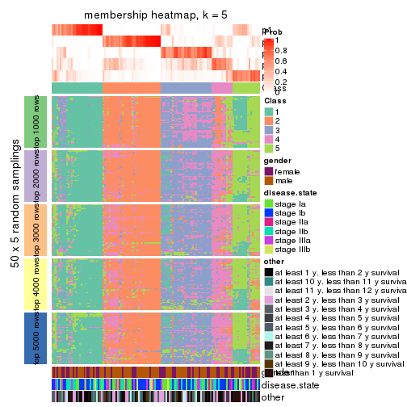
membership_heatmap(res, k = 6)
As soon as we have had the classes for columns, we can look for signatures which are significantly different between classes which can be candidate marks for certain classes. Following are the heatmaps for signatures.
Signature heatmaps where rows are scaled:
get_signatures(res, k = 2)
get_signatures(res, k = 3)
get_signatures(res, k = 4)
get_signatures(res, k = 5)
get_signatures(res, k = 6)
Signature heatmaps where rows are not scaled:
get_signatures(res, k = 2, scale_rows = FALSE)
get_signatures(res, k = 3, scale_rows = FALSE)
get_signatures(res, k = 4, scale_rows = FALSE)
get_signatures(res, k = 5, scale_rows = FALSE)
get_signatures(res, k = 6, scale_rows = FALSE)
Compare the overlap of signatures from different k:
compare_signatures(res)
get_signature() returns a data frame invisibly. TO get the list of signatures, the function
call should be assigned to a variable explicitly. In following code, if plot argument is set
to FALSE, no heatmap is plotted while only the differential analysis is performed.
# code only for demonstration
tb = get_signature(res, k = ..., plot = FALSE)
An example of the output of tb is:
#> which_row fdr mean_1 mean_2 scaled_mean_1 scaled_mean_2 km
#> 1 38 0.042760348 8.373488 9.131774 -0.5533452 0.5164555 1
#> 2 40 0.018707592 7.106213 8.469186 -0.6173731 0.5762149 1
#> 3 55 0.019134737 10.221463 11.207825 -0.6159697 0.5749050 1
#> 4 59 0.006059896 5.921854 7.869574 -0.6899429 0.6439467 1
#> 5 60 0.018055526 8.928898 10.211722 -0.6204761 0.5791110 1
#> 6 98 0.009384629 15.714769 14.887706 0.6635654 -0.6193277 2
...
The columns in tb are:
which_row: row indices corresponding to the input matrix.fdr: FDR for the differential test. mean_x: The mean value in group x.scaled_mean_x: The mean value in group x after rows are scaled.km: Row groups if k-means clustering is applied to rows.UMAP plot which shows how samples are separated.
dimension_reduction(res, k = 2, method = "UMAP")
dimension_reduction(res, k = 3, method = "UMAP")

dimension_reduction(res, k = 4, method = "UMAP")
dimension_reduction(res, k = 5, method = "UMAP")
dimension_reduction(res, k = 6, method = "UMAP")
Following heatmap shows how subgroups are split when increasing k:
collect_classes(res)
Test correlation between subgroups and known annotations. If the known annotation is numeric, one-way ANOVA test is applied, and if the known annotation is discrete, chi-squared contingency table test is applied.
test_to_known_factors(res)
#> n gender(p) disease.state(p) other(p) k
#> CV:skmeans 125 0.1744 0.176 0.439 2
#> CV:skmeans 126 0.1843 0.357 0.162 3
#> CV:skmeans 98 0.0497 0.626 0.483 4
#> CV:skmeans 81 0.6111 0.556 0.671 5
#> CV:skmeans 58 0.2742 0.837 0.136 6
If matrix rows can be associated to genes, consider to use functional_enrichment(res,
...) to perform function enrichment for the signature genes. See this vignette for more detailed explanations.
The object with results only for a single top-value method and a single partition method can be extracted as:
res = res_list["CV", "pam"]
# you can also extract it by
# res = res_list["CV:pam"]
A summary of res and all the functions that can be applied to it:
res
#> A 'ConsensusPartition' object with k = 2, 3, 4, 5, 6.
#> On a matrix with 21168 rows and 130 columns.
#> Top rows (1000, 2000, 3000, 4000, 5000) are extracted by 'CV' method.
#> Subgroups are detected by 'pam' method.
#> Performed in total 1250 partitions by row resampling.
#> Best k for subgroups seems to be 2.
#>
#> Following methods can be applied to this 'ConsensusPartition' object:
#> [1] "cola_report" "collect_classes" "collect_plots"
#> [4] "collect_stats" "colnames" "compare_signatures"
#> [7] "consensus_heatmap" "dimension_reduction" "functional_enrichment"
#> [10] "get_anno_col" "get_anno" "get_classes"
#> [13] "get_consensus" "get_matrix" "get_membership"
#> [16] "get_param" "get_signatures" "get_stats"
#> [19] "is_best_k" "is_stable_k" "membership_heatmap"
#> [22] "ncol" "nrow" "plot_ecdf"
#> [25] "rownames" "select_partition_number" "show"
#> [28] "suggest_best_k" "test_to_known_factors"
collect_plots() function collects all the plots made from res for all k (number of partitions)
into one single page to provide an easy and fast comparison between different k.
collect_plots(res)
The plots are:
k and the heatmap of
predicted classes for each k.k.k.k.All the plots in panels can be made by individual functions and they are plotted later in this section.
select_partition_number() produces several plots showing different
statistics for choosing “optimized” k. There are following statistics:
k;k, the area increased is defined as \(A_k - A_{k-1}\).The detailed explanations of these statistics can be found in the cola vignette.
Generally speaking, lower PAC score, higher mean silhouette score or higher
concordance corresponds to better partition. Rand index and Jaccard index
measure how similar the current partition is compared to partition with k-1.
If they are too similar, we won't accept k is better than k-1.
select_partition_number(res)
The numeric values for all these statistics can be obtained by get_stats().
get_stats(res)
#> k 1-PAC mean_silhouette concordance area_increased Rand Jaccard
#> 2 2 0.344 0.750 0.863 0.4610 0.513 0.513
#> 3 3 0.449 0.692 0.839 0.4113 0.716 0.504
#> 4 4 0.584 0.544 0.777 0.1482 0.824 0.546
#> 5 5 0.580 0.498 0.725 0.0572 0.841 0.500
#> 6 6 0.615 0.495 0.679 0.0341 0.894 0.580
suggest_best_k() suggests the best \(k\) based on these statistics. The rules are as follows:
suggest_best_k(res)
#> [1] 2
Following shows the table of the partitions (You need to click the show/hide
code output link to see it). The membership matrix (columns with name p*)
is inferred by
clue::cl_consensus()
function with the SE method. Basically the value in the membership matrix
represents the probability to belong to a certain group. The finall class
label for an item is determined with the group with highest probability it
belongs to.
In get_classes() function, the entropy is calculated from the membership
matrix and the silhouette score is calculated from the consensus matrix.
cbind(get_classes(res, k = 2), get_membership(res, k = 2))
#> class entropy silhouette p1 p2
#> GSM102191 2 0.1414 0.8724 0.020 0.980
#> GSM102240 1 0.9427 0.3012 0.640 0.360
#> GSM102175 1 0.0000 0.7958 1.000 0.000
#> GSM102134 2 0.4431 0.8189 0.092 0.908
#> GSM102171 1 0.0000 0.7958 1.000 0.000
#> GSM102178 1 0.7139 0.8214 0.804 0.196
#> GSM102198 2 0.0000 0.8782 0.000 1.000
#> GSM102221 1 0.0672 0.7973 0.992 0.008
#> GSM102223 2 0.0000 0.8782 0.000 1.000
#> GSM102229 1 0.9087 0.6900 0.676 0.324
#> GSM102153 1 0.1184 0.7980 0.984 0.016
#> GSM102220 1 0.8144 0.7916 0.748 0.252
#> GSM102202 2 0.0000 0.8782 0.000 1.000
#> GSM102123 1 0.6247 0.8274 0.844 0.156
#> GSM102125 2 0.0376 0.8773 0.004 0.996
#> GSM102136 2 0.2043 0.8668 0.032 0.968
#> GSM102197 1 0.7602 0.8102 0.780 0.220
#> GSM102131 1 0.7674 0.8090 0.776 0.224
#> GSM102132 1 0.5629 0.8268 0.868 0.132
#> GSM102212 2 0.0000 0.8782 0.000 1.000
#> GSM102117 1 0.9866 0.4669 0.568 0.432
#> GSM102124 2 0.0000 0.8782 0.000 1.000
#> GSM102172 1 0.0000 0.7958 1.000 0.000
#> GSM102199 2 0.6623 0.7239 0.172 0.828
#> GSM102203 2 0.5946 0.7762 0.144 0.856
#> GSM102213 2 0.3274 0.8536 0.060 0.940
#> GSM102165 1 0.7299 0.8183 0.796 0.204
#> GSM102180 2 0.0376 0.8773 0.004 0.996
#> GSM102184 1 0.8081 0.7974 0.752 0.248
#> GSM102225 2 1.0000 -0.2811 0.496 0.504
#> GSM102230 1 0.1633 0.7983 0.976 0.024
#> GSM102133 2 0.0000 0.8782 0.000 1.000
#> GSM102166 1 0.0000 0.7958 1.000 0.000
#> GSM102235 1 0.4161 0.8206 0.916 0.084
#> GSM102196 1 0.0672 0.7994 0.992 0.008
#> GSM102243 2 1.0000 -0.1567 0.496 0.504
#> GSM102135 2 0.6623 0.7265 0.172 0.828
#> GSM102139 2 0.0376 0.8773 0.004 0.996
#> GSM102151 2 0.0000 0.8782 0.000 1.000
#> GSM102193 2 0.0000 0.8782 0.000 1.000
#> GSM102200 1 0.6712 0.8262 0.824 0.176
#> GSM102204 2 0.0000 0.8782 0.000 1.000
#> GSM102145 1 0.8267 0.7853 0.740 0.260
#> GSM102142 2 0.4431 0.8226 0.092 0.908
#> GSM102179 2 0.5737 0.7792 0.136 0.864
#> GSM102181 1 0.7815 0.8057 0.768 0.232
#> GSM102154 1 0.8267 0.7883 0.740 0.260
#> GSM102152 2 0.5294 0.8000 0.120 0.880
#> GSM102162 2 0.0672 0.8759 0.008 0.992
#> GSM102187 2 0.9491 0.2835 0.368 0.632
#> GSM102116 1 0.7299 0.8203 0.796 0.204
#> GSM102150 1 0.9491 0.4615 0.632 0.368
#> GSM102227 2 0.8499 0.5220 0.276 0.724
#> GSM102114 1 0.0000 0.7958 1.000 0.000
#> GSM102177 1 0.2603 0.7886 0.956 0.044
#> GSM102160 2 0.0672 0.8767 0.008 0.992
#> GSM102161 1 0.1843 0.7980 0.972 0.028
#> GSM102170 2 0.0000 0.8782 0.000 1.000
#> GSM102205 1 0.7815 0.8071 0.768 0.232
#> GSM102118 1 0.7139 0.8208 0.804 0.196
#> GSM102156 1 0.7745 0.8071 0.772 0.228
#> GSM102238 1 0.0000 0.7958 1.000 0.000
#> GSM102143 1 0.8861 0.7349 0.696 0.304
#> GSM102144 2 0.0000 0.8782 0.000 1.000
#> GSM102209 1 0.9393 0.6519 0.644 0.356
#> GSM102210 1 0.9933 0.4299 0.548 0.452
#> GSM102140 1 0.8144 0.7937 0.748 0.252
#> GSM102242 1 0.7745 0.8093 0.772 0.228
#> GSM102141 1 0.7528 0.8138 0.784 0.216
#> GSM102120 1 0.8144 0.7928 0.748 0.252
#> GSM102127 1 0.7528 0.8115 0.784 0.216
#> GSM102149 1 0.6343 0.8270 0.840 0.160
#> GSM102232 2 0.2043 0.8661 0.032 0.968
#> GSM102222 2 0.0376 0.8773 0.004 0.996
#> GSM102236 1 0.0938 0.8021 0.988 0.012
#> GSM102215 2 0.0000 0.8782 0.000 1.000
#> GSM102194 2 0.0376 0.8773 0.004 0.996
#> GSM102208 2 0.0000 0.8782 0.000 1.000
#> GSM102130 2 0.0000 0.8782 0.000 1.000
#> GSM102188 1 0.6438 0.8267 0.836 0.164
#> GSM102233 1 0.0000 0.7958 1.000 0.000
#> GSM102189 2 0.0000 0.8782 0.000 1.000
#> GSM102234 1 0.7883 0.8037 0.764 0.236
#> GSM102237 1 0.1184 0.7970 0.984 0.016
#> GSM102159 1 0.2043 0.8086 0.968 0.032
#> GSM102155 1 0.9170 0.6712 0.668 0.332
#> GSM102137 1 0.8608 0.7634 0.716 0.284
#> GSM102217 2 0.0000 0.8782 0.000 1.000
#> GSM102126 1 0.7299 0.8189 0.796 0.204
#> GSM102157 2 0.8955 0.4176 0.312 0.688
#> GSM102163 1 0.2423 0.8114 0.960 0.040
#> GSM102182 2 0.7602 0.7075 0.220 0.780
#> GSM102167 2 0.7299 0.6814 0.204 0.796
#> GSM102206 1 0.1414 0.7977 0.980 0.020
#> GSM102224 2 0.0000 0.8782 0.000 1.000
#> GSM102164 2 0.0000 0.8782 0.000 1.000
#> GSM102174 1 0.3584 0.7808 0.932 0.068
#> GSM102214 2 0.9850 0.0645 0.428 0.572
#> GSM102226 1 0.9988 0.3506 0.520 0.480
#> GSM102195 1 0.9209 0.6846 0.664 0.336
#> GSM102218 1 0.7376 0.8166 0.792 0.208
#> GSM102128 2 0.0672 0.8765 0.008 0.992
#> GSM102168 1 0.0000 0.7958 1.000 0.000
#> GSM102190 1 0.6438 0.7853 0.836 0.164
#> GSM102201 2 0.3584 0.8452 0.068 0.932
#> GSM102129 1 0.7950 0.8026 0.760 0.240
#> GSM102192 1 0.6801 0.8259 0.820 0.180
#> GSM102183 1 0.7815 0.8057 0.768 0.232
#> GSM102185 1 0.0000 0.7958 1.000 0.000
#> GSM102158 2 0.5059 0.8049 0.112 0.888
#> GSM102169 1 0.7745 0.8076 0.772 0.228
#> GSM102216 1 0.9933 0.4192 0.548 0.452
#> GSM102219 1 0.5519 0.8269 0.872 0.128
#> GSM102231 2 0.9988 -0.2023 0.480 0.520
#> GSM102147 2 0.0000 0.8782 0.000 1.000
#> GSM102176 1 0.1184 0.7947 0.984 0.016
#> GSM102148 1 0.7139 0.8208 0.804 0.196
#> GSM102146 1 0.2948 0.8132 0.948 0.052
#> GSM102241 1 0.0000 0.7958 1.000 0.000
#> GSM102211 1 0.0376 0.7969 0.996 0.004
#> GSM102115 1 0.9988 -0.1200 0.520 0.480
#> GSM102173 1 0.0000 0.7958 1.000 0.000
#> GSM102138 2 0.0000 0.8782 0.000 1.000
#> GSM102228 1 0.7299 0.8226 0.796 0.204
#> GSM102207 1 0.7602 0.8116 0.780 0.220
#> GSM102122 1 0.5408 0.8261 0.876 0.124
#> GSM102119 2 0.8909 0.4681 0.308 0.692
#> GSM102186 2 0.3274 0.8486 0.060 0.940
#> GSM102239 1 0.0938 0.7979 0.988 0.012
#> GSM102121 2 0.0376 0.8773 0.004 0.996
cbind(get_classes(res, k = 3), get_membership(res, k = 3))
#> class entropy silhouette p1 p2 p3
#> GSM102191 2 0.0424 0.85394 0.000 0.992 0.008
#> GSM102240 1 0.5346 0.77867 0.824 0.088 0.088
#> GSM102175 1 0.0237 0.82879 0.996 0.000 0.004
#> GSM102134 2 0.5138 0.65537 0.000 0.748 0.252
#> GSM102171 1 0.0424 0.82708 0.992 0.000 0.008
#> GSM102178 3 0.4531 0.74696 0.168 0.008 0.824
#> GSM102198 2 0.0424 0.85474 0.000 0.992 0.008
#> GSM102221 1 0.2261 0.82831 0.932 0.000 0.068
#> GSM102223 2 0.0424 0.85454 0.000 0.992 0.008
#> GSM102229 3 0.3213 0.77906 0.028 0.060 0.912
#> GSM102153 1 0.1529 0.82943 0.960 0.000 0.040
#> GSM102220 3 0.5831 0.74885 0.128 0.076 0.796
#> GSM102202 2 0.5706 0.53014 0.000 0.680 0.320
#> GSM102123 3 0.4589 0.74134 0.172 0.008 0.820
#> GSM102125 2 0.0000 0.85591 0.000 1.000 0.000
#> GSM102136 2 0.0424 0.85407 0.000 0.992 0.008
#> GSM102197 3 0.3412 0.76796 0.124 0.000 0.876
#> GSM102131 3 0.3412 0.76796 0.124 0.000 0.876
#> GSM102132 3 0.5098 0.65582 0.248 0.000 0.752
#> GSM102212 2 0.0424 0.85323 0.000 0.992 0.008
#> GSM102117 3 0.9022 0.22143 0.136 0.384 0.480
#> GSM102124 2 0.5138 0.64709 0.000 0.748 0.252
#> GSM102172 1 0.0424 0.82969 0.992 0.000 0.008
#> GSM102199 3 0.5529 0.51001 0.000 0.296 0.704
#> GSM102203 2 0.9833 0.09890 0.260 0.416 0.324
#> GSM102213 3 0.6816 -0.00669 0.012 0.472 0.516
#> GSM102165 3 0.3482 0.76801 0.128 0.000 0.872
#> GSM102180 2 0.0000 0.85591 0.000 1.000 0.000
#> GSM102184 3 0.1860 0.76965 0.052 0.000 0.948
#> GSM102225 3 0.4605 0.68424 0.000 0.204 0.796
#> GSM102230 1 0.3192 0.79683 0.888 0.000 0.112
#> GSM102133 2 0.0000 0.85591 0.000 1.000 0.000
#> GSM102166 1 0.1031 0.82974 0.976 0.000 0.024
#> GSM102235 3 0.6483 0.22585 0.452 0.004 0.544
#> GSM102196 1 0.4062 0.77742 0.836 0.000 0.164
#> GSM102243 2 0.6124 0.62385 0.036 0.744 0.220
#> GSM102135 3 0.5465 0.52366 0.000 0.288 0.712
#> GSM102139 2 0.0000 0.85591 0.000 1.000 0.000
#> GSM102151 2 0.6192 0.29660 0.000 0.580 0.420
#> GSM102193 2 0.0000 0.85591 0.000 1.000 0.000
#> GSM102200 3 0.3129 0.76817 0.088 0.008 0.904
#> GSM102204 2 0.0000 0.85591 0.000 1.000 0.000
#> GSM102145 3 0.5036 0.76876 0.120 0.048 0.832
#> GSM102142 2 0.4399 0.73130 0.000 0.812 0.188
#> GSM102179 2 0.1529 0.83915 0.000 0.960 0.040
#> GSM102181 3 0.0000 0.77692 0.000 0.000 1.000
#> GSM102154 3 0.0424 0.77891 0.000 0.008 0.992
#> GSM102152 3 0.5882 0.40406 0.000 0.348 0.652
#> GSM102162 2 0.0000 0.85591 0.000 1.000 0.000
#> GSM102187 2 0.7256 0.58050 0.124 0.712 0.164
#> GSM102116 3 0.4128 0.71876 0.132 0.012 0.856
#> GSM102150 1 0.5497 0.62032 0.708 0.000 0.292
#> GSM102227 3 0.4974 0.62122 0.000 0.236 0.764
#> GSM102114 1 0.6062 0.33757 0.616 0.000 0.384
#> GSM102177 1 0.2434 0.81902 0.940 0.024 0.036
#> GSM102160 2 0.0237 0.85535 0.000 0.996 0.004
#> GSM102161 1 0.3482 0.79140 0.872 0.000 0.128
#> GSM102170 2 0.0000 0.85591 0.000 1.000 0.000
#> GSM102205 3 0.1453 0.78285 0.008 0.024 0.968
#> GSM102118 3 0.3482 0.76660 0.128 0.000 0.872
#> GSM102156 3 0.2280 0.78374 0.008 0.052 0.940
#> GSM102238 1 0.1031 0.82182 0.976 0.000 0.024
#> GSM102143 3 0.2743 0.76970 0.020 0.052 0.928
#> GSM102144 2 0.2625 0.81956 0.000 0.916 0.084
#> GSM102209 3 0.1643 0.78265 0.000 0.044 0.956
#> GSM102210 3 0.5016 0.64245 0.000 0.240 0.760
#> GSM102140 3 0.3918 0.77275 0.120 0.012 0.868
#> GSM102242 3 0.1765 0.78535 0.040 0.004 0.956
#> GSM102141 3 0.1411 0.78222 0.036 0.000 0.964
#> GSM102120 3 0.1647 0.77998 0.004 0.036 0.960
#> GSM102127 3 0.3965 0.76615 0.132 0.008 0.860
#> GSM102149 3 0.5733 0.43995 0.324 0.000 0.676
#> GSM102232 2 0.5882 0.48327 0.000 0.652 0.348
#> GSM102222 2 0.0000 0.85591 0.000 1.000 0.000
#> GSM102236 1 0.5254 0.63247 0.736 0.000 0.264
#> GSM102215 2 0.0000 0.85591 0.000 1.000 0.000
#> GSM102194 2 0.0000 0.85591 0.000 1.000 0.000
#> GSM102208 2 0.0000 0.85591 0.000 1.000 0.000
#> GSM102130 2 0.0000 0.85591 0.000 1.000 0.000
#> GSM102188 3 0.6180 0.65264 0.260 0.024 0.716
#> GSM102233 1 0.1289 0.83145 0.968 0.000 0.032
#> GSM102189 2 0.1964 0.83383 0.000 0.944 0.056
#> GSM102234 3 0.4059 0.76927 0.128 0.012 0.860
#> GSM102237 1 0.1289 0.83138 0.968 0.000 0.032
#> GSM102159 1 0.6309 -0.02649 0.504 0.000 0.496
#> GSM102155 3 0.8746 0.55293 0.228 0.184 0.588
#> GSM102137 3 0.1950 0.77766 0.008 0.040 0.952
#> GSM102217 2 0.6274 0.22102 0.000 0.544 0.456
#> GSM102126 3 0.2878 0.77640 0.096 0.000 0.904
#> GSM102157 3 0.5948 0.40548 0.000 0.360 0.640
#> GSM102163 1 0.5926 0.48273 0.644 0.000 0.356
#> GSM102182 1 0.8250 0.47002 0.600 0.292 0.108
#> GSM102167 2 0.5426 0.72639 0.088 0.820 0.092
#> GSM102206 1 0.3412 0.78761 0.876 0.000 0.124
#> GSM102224 2 0.0000 0.85591 0.000 1.000 0.000
#> GSM102164 2 0.0000 0.85591 0.000 1.000 0.000
#> GSM102174 1 0.2939 0.82719 0.916 0.012 0.072
#> GSM102214 3 0.8462 0.52436 0.124 0.288 0.588
#> GSM102226 3 0.3752 0.73019 0.000 0.144 0.856
#> GSM102195 3 0.6389 0.73447 0.124 0.108 0.768
#> GSM102218 3 0.3412 0.76849 0.124 0.000 0.876
#> GSM102128 2 0.3879 0.76927 0.000 0.848 0.152
#> GSM102168 1 0.5835 0.45148 0.660 0.000 0.340
#> GSM102190 1 0.6608 0.34891 0.560 0.008 0.432
#> GSM102201 3 0.7238 0.40174 0.044 0.328 0.628
#> GSM102129 3 0.0237 0.77834 0.000 0.004 0.996
#> GSM102192 3 0.1860 0.76951 0.052 0.000 0.948
#> GSM102183 3 0.4015 0.77618 0.096 0.028 0.876
#> GSM102185 1 0.0592 0.82625 0.988 0.000 0.012
#> GSM102158 2 0.4555 0.72446 0.000 0.800 0.200
#> GSM102169 3 0.4413 0.77001 0.124 0.024 0.852
#> GSM102216 3 0.4449 0.74434 0.040 0.100 0.860
#> GSM102219 3 0.5621 0.49800 0.308 0.000 0.692
#> GSM102231 3 0.8168 0.57177 0.108 0.280 0.612
#> GSM102147 2 0.0424 0.85323 0.000 0.992 0.008
#> GSM102176 1 0.0237 0.82836 0.996 0.000 0.004
#> GSM102148 3 0.3412 0.77293 0.124 0.000 0.876
#> GSM102146 3 0.6483 0.04479 0.452 0.004 0.544
#> GSM102241 1 0.3482 0.75528 0.872 0.000 0.128
#> GSM102211 1 0.3619 0.79862 0.864 0.000 0.136
#> GSM102115 1 0.6437 0.66298 0.732 0.220 0.048
#> GSM102173 1 0.0000 0.82750 1.000 0.000 0.000
#> GSM102138 2 0.6215 0.28375 0.000 0.572 0.428
#> GSM102228 3 0.4531 0.72401 0.168 0.008 0.824
#> GSM102207 3 0.1289 0.78163 0.032 0.000 0.968
#> GSM102122 3 0.4702 0.63422 0.212 0.000 0.788
#> GSM102119 2 0.7624 0.25838 0.048 0.560 0.392
#> GSM102186 2 0.3686 0.77680 0.000 0.860 0.140
#> GSM102239 1 0.1643 0.83163 0.956 0.000 0.044
#> GSM102121 2 0.0000 0.85591 0.000 1.000 0.000
cbind(get_classes(res, k = 4), get_membership(res, k = 4))
#> class entropy silhouette p1 p2 p3 p4
#> GSM102191 2 0.0336 0.88468 0.000 0.992 0.008 0.000
#> GSM102240 1 0.4552 0.72803 0.784 0.000 0.044 0.172
#> GSM102175 1 0.0000 0.89837 1.000 0.000 0.000 0.000
#> GSM102134 2 0.4770 0.57219 0.000 0.700 0.012 0.288
#> GSM102171 1 0.0188 0.89788 0.996 0.000 0.004 0.000
#> GSM102178 3 0.2704 0.53158 0.000 0.000 0.876 0.124
#> GSM102198 2 0.1557 0.85735 0.000 0.944 0.000 0.056
#> GSM102221 1 0.1792 0.87720 0.932 0.000 0.068 0.000
#> GSM102223 2 0.0469 0.88305 0.000 0.988 0.000 0.012
#> GSM102229 4 0.0524 0.53612 0.004 0.000 0.008 0.988
#> GSM102153 1 0.0000 0.89837 1.000 0.000 0.000 0.000
#> GSM102220 4 0.4907 0.32598 0.000 0.000 0.420 0.580
#> GSM102202 4 0.4866 0.19760 0.000 0.404 0.000 0.596
#> GSM102123 3 0.3464 0.54494 0.032 0.000 0.860 0.108
#> GSM102125 2 0.0000 0.88785 0.000 1.000 0.000 0.000
#> GSM102136 2 0.3308 0.80928 0.000 0.872 0.036 0.092
#> GSM102197 4 0.5000 0.19611 0.000 0.000 0.496 0.504
#> GSM102131 4 0.4431 0.42858 0.000 0.000 0.304 0.696
#> GSM102132 3 0.2282 0.55738 0.052 0.000 0.924 0.024
#> GSM102212 2 0.0000 0.88785 0.000 1.000 0.000 0.000
#> GSM102117 3 0.7615 0.37999 0.036 0.188 0.592 0.184
#> GSM102124 2 0.5055 0.59846 0.000 0.712 0.032 0.256
#> GSM102172 1 0.0188 0.89805 0.996 0.000 0.004 0.000
#> GSM102199 4 0.2610 0.53040 0.000 0.088 0.012 0.900
#> GSM102203 4 0.7944 0.31024 0.128 0.160 0.108 0.604
#> GSM102213 4 0.6690 0.25195 0.000 0.352 0.100 0.548
#> GSM102165 3 0.4643 0.16942 0.000 0.000 0.656 0.344
#> GSM102180 2 0.0000 0.88785 0.000 1.000 0.000 0.000
#> GSM102184 4 0.4679 0.16282 0.000 0.000 0.352 0.648
#> GSM102225 4 0.4472 0.40750 0.000 0.020 0.220 0.760
#> GSM102230 1 0.0000 0.89837 1.000 0.000 0.000 0.000
#> GSM102133 2 0.0000 0.88785 0.000 1.000 0.000 0.000
#> GSM102166 1 0.0000 0.89837 1.000 0.000 0.000 0.000
#> GSM102235 3 0.2300 0.55005 0.064 0.000 0.920 0.016
#> GSM102196 1 0.1174 0.88600 0.968 0.000 0.020 0.012
#> GSM102243 3 0.5294 0.01973 0.000 0.484 0.508 0.008
#> GSM102135 4 0.0524 0.53648 0.000 0.008 0.004 0.988
#> GSM102139 2 0.0000 0.88785 0.000 1.000 0.000 0.000
#> GSM102151 4 0.4122 0.44444 0.000 0.236 0.004 0.760
#> GSM102193 2 0.0000 0.88785 0.000 1.000 0.000 0.000
#> GSM102200 3 0.4621 0.43580 0.008 0.000 0.708 0.284
#> GSM102204 2 0.0000 0.88785 0.000 1.000 0.000 0.000
#> GSM102145 4 0.4584 0.41536 0.000 0.004 0.300 0.696
#> GSM102142 2 0.6756 0.44201 0.000 0.612 0.188 0.200
#> GSM102179 2 0.3356 0.74444 0.000 0.824 0.176 0.000
#> GSM102181 3 0.4981 0.23249 0.000 0.000 0.536 0.464
#> GSM102154 4 0.4981 -0.07494 0.000 0.000 0.464 0.536
#> GSM102152 4 0.2845 0.52894 0.000 0.076 0.028 0.896
#> GSM102162 2 0.0000 0.88785 0.000 1.000 0.000 0.000
#> GSM102187 3 0.4933 0.06505 0.000 0.432 0.568 0.000
#> GSM102116 3 0.6275 0.34084 0.076 0.000 0.596 0.328
#> GSM102150 1 0.5254 0.47524 0.672 0.000 0.028 0.300
#> GSM102227 4 0.1807 0.52427 0.000 0.008 0.052 0.940
#> GSM102114 3 0.2611 0.54356 0.096 0.000 0.896 0.008
#> GSM102177 1 0.3024 0.82351 0.852 0.000 0.148 0.000
#> GSM102160 2 0.0524 0.88382 0.000 0.988 0.004 0.008
#> GSM102161 1 0.0000 0.89837 1.000 0.000 0.000 0.000
#> GSM102170 2 0.0000 0.88785 0.000 1.000 0.000 0.000
#> GSM102205 3 0.5165 0.32429 0.004 0.004 0.604 0.388
#> GSM102118 3 0.4972 -0.16329 0.000 0.000 0.544 0.456
#> GSM102156 3 0.4955 0.36957 0.000 0.008 0.648 0.344
#> GSM102238 1 0.0188 0.89804 0.996 0.000 0.004 0.000
#> GSM102143 4 0.4955 -0.02826 0.000 0.000 0.444 0.556
#> GSM102144 2 0.2255 0.84656 0.000 0.920 0.012 0.068
#> GSM102209 4 0.3528 0.44197 0.000 0.000 0.192 0.808
#> GSM102210 3 0.6123 0.31043 0.000 0.056 0.572 0.372
#> GSM102140 4 0.4072 0.45109 0.000 0.000 0.252 0.748
#> GSM102242 4 0.4679 0.23284 0.000 0.000 0.352 0.648
#> GSM102141 4 0.3801 0.44471 0.000 0.000 0.220 0.780
#> GSM102120 3 0.4981 0.23418 0.000 0.000 0.536 0.464
#> GSM102127 3 0.1792 0.53477 0.000 0.000 0.932 0.068
#> GSM102149 4 0.5533 0.39497 0.132 0.000 0.136 0.732
#> GSM102232 2 0.6235 0.14606 0.000 0.524 0.056 0.420
#> GSM102222 2 0.0000 0.88785 0.000 1.000 0.000 0.000
#> GSM102236 1 0.5543 0.19015 0.556 0.000 0.424 0.020
#> GSM102215 2 0.0000 0.88785 0.000 1.000 0.000 0.000
#> GSM102194 2 0.0000 0.88785 0.000 1.000 0.000 0.000
#> GSM102208 2 0.0000 0.88785 0.000 1.000 0.000 0.000
#> GSM102130 2 0.0000 0.88785 0.000 1.000 0.000 0.000
#> GSM102188 3 0.1878 0.55505 0.040 0.008 0.944 0.008
#> GSM102233 1 0.0376 0.89737 0.992 0.000 0.004 0.004
#> GSM102189 2 0.1637 0.85215 0.000 0.940 0.000 0.060
#> GSM102234 4 0.4643 0.38621 0.000 0.000 0.344 0.656
#> GSM102237 1 0.0707 0.89247 0.980 0.000 0.020 0.000
#> GSM102159 3 0.2385 0.54219 0.028 0.000 0.920 0.052
#> GSM102155 3 0.2300 0.53970 0.000 0.048 0.924 0.028
#> GSM102137 4 0.2216 0.51387 0.000 0.000 0.092 0.908
#> GSM102217 4 0.5527 0.32067 0.000 0.356 0.028 0.616
#> GSM102126 4 0.4981 0.06806 0.000 0.000 0.464 0.536
#> GSM102157 4 0.6354 -0.02949 0.000 0.064 0.416 0.520
#> GSM102163 3 0.6257 0.19152 0.436 0.000 0.508 0.056
#> GSM102182 1 0.6040 0.65091 0.712 0.196 0.064 0.028
#> GSM102167 2 0.5136 0.63408 0.000 0.728 0.224 0.048
#> GSM102206 1 0.0000 0.89837 1.000 0.000 0.000 0.000
#> GSM102224 2 0.0000 0.88785 0.000 1.000 0.000 0.000
#> GSM102164 2 0.0000 0.88785 0.000 1.000 0.000 0.000
#> GSM102174 1 0.1474 0.88110 0.948 0.000 0.052 0.000
#> GSM102214 3 0.6602 -0.19332 0.000 0.080 0.484 0.436
#> GSM102226 4 0.1118 0.53035 0.000 0.000 0.036 0.964
#> GSM102195 4 0.4720 0.39928 0.000 0.004 0.324 0.672
#> GSM102218 4 0.4624 0.39631 0.000 0.000 0.340 0.660
#> GSM102128 2 0.3764 0.74918 0.000 0.816 0.012 0.172
#> GSM102168 3 0.2401 0.54506 0.092 0.000 0.904 0.004
#> GSM102190 3 0.6285 0.16734 0.412 0.000 0.528 0.060
#> GSM102201 4 0.1109 0.53903 0.004 0.028 0.000 0.968
#> GSM102129 4 0.0000 0.53393 0.000 0.000 0.000 1.000
#> GSM102192 4 0.5126 -0.06247 0.004 0.000 0.444 0.552
#> GSM102183 3 0.4328 0.37047 0.000 0.008 0.748 0.244
#> GSM102185 1 0.0188 0.89802 0.996 0.000 0.004 0.000
#> GSM102158 2 0.5705 0.65687 0.000 0.712 0.180 0.108
#> GSM102169 4 0.5159 0.37391 0.000 0.012 0.364 0.624
#> GSM102216 4 0.5252 0.00132 0.004 0.004 0.420 0.572
#> GSM102219 4 0.4875 0.45910 0.160 0.000 0.068 0.772
#> GSM102231 4 0.6674 0.36860 0.000 0.116 0.300 0.584
#> GSM102147 2 0.0000 0.88785 0.000 1.000 0.000 0.000
#> GSM102176 1 0.1302 0.88347 0.956 0.000 0.044 0.000
#> GSM102148 4 0.4855 0.36489 0.000 0.000 0.400 0.600
#> GSM102146 3 0.6690 0.45983 0.192 0.000 0.620 0.188
#> GSM102241 1 0.4804 0.40512 0.616 0.000 0.384 0.000
#> GSM102211 1 0.0804 0.89261 0.980 0.000 0.012 0.008
#> GSM102115 1 0.4800 0.72101 0.760 0.044 0.196 0.000
#> GSM102173 1 0.0000 0.89837 1.000 0.000 0.000 0.000
#> GSM102138 4 0.5858 0.00990 0.000 0.468 0.032 0.500
#> GSM102228 4 0.6242 -0.07468 0.056 0.000 0.424 0.520
#> GSM102207 4 0.4888 0.13864 0.000 0.000 0.412 0.588
#> GSM102122 3 0.6391 0.39677 0.092 0.000 0.604 0.304
#> GSM102119 2 0.7793 -0.04792 0.000 0.424 0.276 0.300
#> GSM102186 2 0.4163 0.77014 0.000 0.828 0.076 0.096
#> GSM102239 1 0.1635 0.88213 0.948 0.000 0.044 0.008
#> GSM102121 2 0.0000 0.88785 0.000 1.000 0.000 0.000
cbind(get_classes(res, k = 5), get_membership(res, k = 5))
#> class entropy silhouette p1 p2 p3 p4 p5
#> GSM102191 2 0.0404 0.82286 0.000 0.988 0.012 0.000 0.000
#> GSM102240 1 0.4617 0.57119 0.552 0.000 0.000 0.012 0.436
#> GSM102175 1 0.0000 0.79009 1.000 0.000 0.000 0.000 0.000
#> GSM102134 2 0.6571 0.14463 0.000 0.500 0.052 0.072 0.376
#> GSM102171 1 0.0162 0.78984 0.996 0.000 0.004 0.000 0.000
#> GSM102178 3 0.3177 0.45361 0.000 0.000 0.792 0.208 0.000
#> GSM102198 2 0.3231 0.71689 0.000 0.800 0.000 0.004 0.196
#> GSM102221 1 0.4047 0.68201 0.676 0.000 0.004 0.000 0.320
#> GSM102223 2 0.3318 0.72390 0.000 0.808 0.000 0.012 0.180
#> GSM102229 4 0.5735 -0.25588 0.004 0.000 0.072 0.492 0.432
#> GSM102153 1 0.0162 0.79018 0.996 0.000 0.004 0.000 0.000
#> GSM102220 3 0.4199 0.56340 0.000 0.000 0.764 0.180 0.056
#> GSM102202 5 0.7555 0.37714 0.000 0.284 0.056 0.224 0.436
#> GSM102123 3 0.6372 0.45198 0.080 0.000 0.644 0.108 0.168
#> GSM102125 2 0.0000 0.82674 0.000 1.000 0.000 0.000 0.000
#> GSM102136 2 0.4134 0.69484 0.000 0.760 0.044 0.000 0.196
#> GSM102197 3 0.2997 0.59322 0.000 0.000 0.840 0.148 0.012
#> GSM102131 3 0.6012 0.40177 0.000 0.000 0.536 0.332 0.132
#> GSM102132 3 0.2654 0.57621 0.048 0.000 0.888 0.064 0.000
#> GSM102212 2 0.0000 0.82674 0.000 1.000 0.000 0.000 0.000
#> GSM102117 3 0.8666 -0.17134 0.052 0.280 0.328 0.284 0.056
#> GSM102124 2 0.5847 0.25889 0.000 0.580 0.004 0.308 0.108
#> GSM102172 1 0.1818 0.77819 0.932 0.000 0.044 0.000 0.024
#> GSM102199 5 0.6419 0.41133 0.000 0.044 0.064 0.432 0.460
#> GSM102203 5 0.6054 -0.20663 0.024 0.024 0.024 0.408 0.520
#> GSM102213 4 0.5578 0.34541 0.000 0.180 0.084 0.696 0.040
#> GSM102165 3 0.6420 0.24729 0.000 0.000 0.508 0.260 0.232
#> GSM102180 2 0.0000 0.82674 0.000 1.000 0.000 0.000 0.000
#> GSM102184 4 0.2959 0.43436 0.000 0.000 0.036 0.864 0.100
#> GSM102225 4 0.5282 0.42113 0.000 0.008 0.144 0.700 0.148
#> GSM102230 1 0.2629 0.74608 0.860 0.000 0.004 0.000 0.136
#> GSM102133 2 0.0000 0.82674 0.000 1.000 0.000 0.000 0.000
#> GSM102166 1 0.0000 0.79009 1.000 0.000 0.000 0.000 0.000
#> GSM102235 3 0.3319 0.56422 0.160 0.000 0.820 0.000 0.020
#> GSM102196 1 0.2833 0.74380 0.852 0.000 0.004 0.004 0.140
#> GSM102243 2 0.5503 0.43146 0.000 0.596 0.328 0.072 0.004
#> GSM102135 5 0.5940 0.40039 0.000 0.016 0.064 0.444 0.476
#> GSM102139 2 0.0000 0.82674 0.000 1.000 0.000 0.000 0.000
#> GSM102151 5 0.7204 0.45563 0.000 0.132 0.060 0.344 0.464
#> GSM102193 2 0.0000 0.82674 0.000 1.000 0.000 0.000 0.000
#> GSM102200 4 0.4383 0.40052 0.000 0.000 0.424 0.572 0.004
#> GSM102204 2 0.0000 0.82674 0.000 1.000 0.000 0.000 0.000
#> GSM102145 3 0.6799 0.02785 0.000 0.000 0.372 0.296 0.332
#> GSM102142 2 0.6288 0.03628 0.000 0.472 0.156 0.372 0.000
#> GSM102179 2 0.2574 0.75729 0.000 0.876 0.112 0.012 0.000
#> GSM102181 4 0.4292 0.50912 0.000 0.000 0.272 0.704 0.024
#> GSM102154 4 0.2806 0.52562 0.000 0.000 0.152 0.844 0.004
#> GSM102152 4 0.5901 0.25962 0.000 0.068 0.088 0.684 0.160
#> GSM102162 2 0.0703 0.81962 0.000 0.976 0.000 0.000 0.024
#> GSM102187 3 0.3305 0.48255 0.000 0.224 0.776 0.000 0.000
#> GSM102116 4 0.5706 0.28618 0.020 0.000 0.056 0.588 0.336
#> GSM102150 4 0.4047 0.33329 0.320 0.000 0.004 0.676 0.000
#> GSM102227 4 0.5766 -0.11456 0.000 0.016 0.072 0.596 0.316
#> GSM102114 3 0.3757 0.53630 0.208 0.000 0.772 0.000 0.020
#> GSM102177 1 0.6273 0.56077 0.500 0.000 0.164 0.000 0.336
#> GSM102160 2 0.0613 0.82148 0.000 0.984 0.008 0.004 0.004
#> GSM102161 1 0.0162 0.78959 0.996 0.000 0.000 0.004 0.000
#> GSM102170 2 0.0000 0.82674 0.000 1.000 0.000 0.000 0.000
#> GSM102205 4 0.3934 0.51211 0.000 0.000 0.244 0.740 0.016
#> GSM102118 3 0.3555 0.58583 0.000 0.000 0.824 0.124 0.052
#> GSM102156 4 0.3661 0.50063 0.000 0.000 0.276 0.724 0.000
#> GSM102238 1 0.0162 0.78984 0.996 0.000 0.004 0.000 0.000
#> GSM102143 4 0.2629 0.52773 0.000 0.000 0.136 0.860 0.004
#> GSM102144 2 0.4959 0.66388 0.000 0.732 0.020 0.068 0.180
#> GSM102209 4 0.5787 0.24511 0.000 0.000 0.152 0.608 0.240
#> GSM102210 4 0.4141 0.50545 0.000 0.024 0.248 0.728 0.000
#> GSM102140 3 0.6799 0.00634 0.000 0.000 0.372 0.332 0.296
#> GSM102242 4 0.6261 -0.17797 0.000 0.000 0.180 0.524 0.296
#> GSM102141 4 0.3810 0.51006 0.000 0.000 0.176 0.788 0.036
#> GSM102120 4 0.4728 0.49471 0.000 0.000 0.240 0.700 0.060
#> GSM102127 3 0.0963 0.60160 0.000 0.000 0.964 0.036 0.000
#> GSM102149 4 0.5525 0.35989 0.212 0.000 0.008 0.664 0.116
#> GSM102232 4 0.4443 0.26815 0.000 0.300 0.008 0.680 0.012
#> GSM102222 2 0.2929 0.73111 0.000 0.820 0.000 0.000 0.180
#> GSM102236 1 0.6905 0.39582 0.560 0.000 0.240 0.060 0.140
#> GSM102215 2 0.2929 0.73111 0.000 0.820 0.000 0.000 0.180
#> GSM102194 2 0.0000 0.82674 0.000 1.000 0.000 0.000 0.000
#> GSM102208 2 0.0000 0.82674 0.000 1.000 0.000 0.000 0.000
#> GSM102130 2 0.0000 0.82674 0.000 1.000 0.000 0.000 0.000
#> GSM102188 3 0.1885 0.59240 0.044 0.004 0.932 0.020 0.000
#> GSM102233 1 0.2956 0.74193 0.848 0.000 0.008 0.004 0.140
#> GSM102189 2 0.2179 0.75807 0.000 0.888 0.000 0.112 0.000
#> GSM102234 3 0.5159 0.49516 0.000 0.000 0.644 0.284 0.072
#> GSM102237 1 0.0510 0.78874 0.984 0.000 0.016 0.000 0.000
#> GSM102159 3 0.0727 0.60722 0.012 0.000 0.980 0.004 0.004
#> GSM102155 3 0.1990 0.58909 0.000 0.028 0.928 0.040 0.004
#> GSM102137 5 0.6312 0.29491 0.000 0.000 0.156 0.392 0.452
#> GSM102217 4 0.5513 0.16900 0.000 0.188 0.004 0.664 0.144
#> GSM102126 4 0.6699 -0.21334 0.000 0.000 0.304 0.428 0.268
#> GSM102157 4 0.4015 0.50795 0.000 0.024 0.124 0.812 0.040
#> GSM102163 1 0.5834 0.41389 0.588 0.000 0.276 0.136 0.000
#> GSM102182 1 0.7741 0.42707 0.504 0.260 0.032 0.052 0.152
#> GSM102167 2 0.4798 0.26726 0.000 0.576 0.404 0.004 0.016
#> GSM102206 1 0.2813 0.73028 0.832 0.000 0.000 0.000 0.168
#> GSM102224 2 0.0000 0.82674 0.000 1.000 0.000 0.000 0.000
#> GSM102164 2 0.0000 0.82674 0.000 1.000 0.000 0.000 0.000
#> GSM102174 1 0.3949 0.67596 0.668 0.000 0.000 0.000 0.332
#> GSM102214 3 0.3934 0.58725 0.000 0.060 0.820 0.104 0.016
#> GSM102226 4 0.5261 -0.27898 0.000 0.004 0.044 0.572 0.380
#> GSM102195 3 0.5815 0.43499 0.000 0.000 0.592 0.272 0.136
#> GSM102218 3 0.6749 0.09647 0.000 0.000 0.408 0.304 0.288
#> GSM102128 2 0.3959 0.67333 0.000 0.804 0.024 0.148 0.024
#> GSM102168 3 0.1502 0.59801 0.056 0.000 0.940 0.004 0.000
#> GSM102190 1 0.7120 0.50879 0.460 0.000 0.076 0.096 0.368
#> GSM102201 4 0.5933 -0.10558 0.000 0.032 0.068 0.608 0.292
#> GSM102129 4 0.5200 -0.09398 0.000 0.000 0.068 0.628 0.304
#> GSM102192 4 0.6008 0.26640 0.000 0.000 0.200 0.584 0.216
#> GSM102183 3 0.5853 0.44553 0.000 0.004 0.624 0.188 0.184
#> GSM102185 1 0.0000 0.79009 1.000 0.000 0.000 0.000 0.000
#> GSM102158 2 0.5060 0.46376 0.000 0.616 0.008 0.032 0.344
#> GSM102169 3 0.4941 0.53856 0.000 0.012 0.696 0.244 0.048
#> GSM102216 4 0.2411 0.52952 0.008 0.000 0.108 0.884 0.000
#> GSM102219 5 0.4691 0.19206 0.276 0.000 0.000 0.044 0.680
#> GSM102231 3 0.7212 0.41216 0.000 0.108 0.520 0.276 0.096
#> GSM102147 2 0.0000 0.82674 0.000 1.000 0.000 0.000 0.000
#> GSM102176 1 0.3790 0.70029 0.724 0.000 0.004 0.000 0.272
#> GSM102148 3 0.5263 0.48929 0.000 0.000 0.576 0.368 0.056
#> GSM102146 3 0.8017 0.01694 0.144 0.000 0.444 0.200 0.212
#> GSM102241 3 0.6108 0.23298 0.356 0.000 0.508 0.000 0.136
#> GSM102211 1 0.3106 0.73714 0.840 0.000 0.000 0.020 0.140
#> GSM102115 1 0.6243 0.63093 0.580 0.040 0.040 0.016 0.324
#> GSM102173 1 0.0000 0.79009 1.000 0.000 0.000 0.000 0.000
#> GSM102138 4 0.3611 0.37774 0.000 0.208 0.004 0.780 0.008
#> GSM102228 4 0.3547 0.52379 0.016 0.000 0.144 0.824 0.016
#> GSM102207 4 0.3857 0.50370 0.000 0.000 0.312 0.688 0.000
#> GSM102122 4 0.7777 0.22410 0.252 0.000 0.112 0.464 0.172
#> GSM102119 2 0.7256 0.01920 0.000 0.448 0.324 0.188 0.040
#> GSM102186 2 0.3770 0.71129 0.000 0.824 0.124 0.020 0.032
#> GSM102239 1 0.3966 0.67428 0.664 0.000 0.000 0.000 0.336
#> GSM102121 2 0.0000 0.82674 0.000 1.000 0.000 0.000 0.000
cbind(get_classes(res, k = 6), get_membership(res, k = 6))
#> class entropy silhouette p1 p2 p3 p4 p5 p6
#> GSM102191 2 0.0520 0.80910 0.000 0.984 0.008 0.000 0.008 0.000
#> GSM102240 5 0.5212 0.44127 0.192 0.000 0.000 0.148 0.648 0.012
#> GSM102175 1 0.3782 0.45678 0.588 0.000 0.000 0.000 0.412 0.000
#> GSM102134 4 0.4627 -0.09835 0.016 0.400 0.004 0.568 0.000 0.012
#> GSM102171 1 0.3915 0.45337 0.584 0.000 0.004 0.000 0.412 0.000
#> GSM102178 3 0.2738 0.57565 0.000 0.000 0.820 0.004 0.000 0.176
#> GSM102198 2 0.3871 0.60156 0.016 0.676 0.000 0.308 0.000 0.000
#> GSM102221 5 0.2551 0.52976 0.108 0.000 0.004 0.004 0.872 0.012
#> GSM102223 2 0.4096 0.59859 0.016 0.672 0.000 0.304 0.000 0.008
#> GSM102229 4 0.4439 0.50654 0.240 0.000 0.004 0.692 0.000 0.064
#> GSM102153 1 0.4018 0.45740 0.580 0.000 0.000 0.000 0.412 0.008
#> GSM102220 3 0.3330 0.56520 0.000 0.000 0.716 0.284 0.000 0.000
#> GSM102202 4 0.3500 0.48164 0.016 0.124 0.012 0.824 0.000 0.024
#> GSM102123 1 0.6515 -0.09221 0.440 0.000 0.376 0.084 0.000 0.100
#> GSM102125 2 0.0260 0.81050 0.000 0.992 0.000 0.000 0.008 0.000
#> GSM102136 2 0.4986 0.56086 0.016 0.620 0.060 0.304 0.000 0.000
#> GSM102197 3 0.2704 0.67588 0.000 0.000 0.844 0.140 0.000 0.016
#> GSM102131 3 0.5015 0.25834 0.000 0.000 0.504 0.424 0.000 0.072
#> GSM102132 3 0.1082 0.68343 0.004 0.000 0.956 0.000 0.000 0.040
#> GSM102212 2 0.0291 0.81103 0.000 0.992 0.000 0.004 0.000 0.004
#> GSM102117 6 0.8006 0.20413 0.000 0.288 0.260 0.032 0.120 0.300
#> GSM102124 2 0.5783 0.30803 0.016 0.572 0.000 0.216 0.000 0.196
#> GSM102172 1 0.3944 0.42627 0.568 0.000 0.004 0.000 0.428 0.000
#> GSM102199 4 0.2958 0.51823 0.012 0.028 0.000 0.852 0.000 0.108
#> GSM102203 5 0.6089 0.15641 0.016 0.008 0.000 0.152 0.524 0.300
#> GSM102213 6 0.5519 0.44965 0.000 0.148 0.008 0.264 0.000 0.580
#> GSM102165 4 0.5624 0.18504 0.064 0.000 0.396 0.504 0.000 0.036
#> GSM102180 2 0.0260 0.81050 0.000 0.992 0.000 0.000 0.008 0.000
#> GSM102184 6 0.5739 0.40757 0.140 0.000 0.028 0.240 0.000 0.592
#> GSM102225 6 0.5808 0.47273 0.016 0.008 0.108 0.284 0.004 0.580
#> GSM102230 1 0.5826 0.45387 0.632 0.000 0.004 0.052 0.172 0.140
#> GSM102133 2 0.0000 0.81105 0.000 1.000 0.000 0.000 0.000 0.000
#> GSM102166 1 0.3782 0.45678 0.588 0.000 0.000 0.000 0.412 0.000
#> GSM102235 3 0.2799 0.65569 0.064 0.000 0.860 0.000 0.000 0.076
#> GSM102196 1 0.5769 0.45365 0.640 0.000 0.004 0.052 0.160 0.144
#> GSM102243 2 0.4868 0.42564 0.000 0.588 0.352 0.000 0.008 0.052
#> GSM102135 4 0.2053 0.52732 0.004 0.000 0.000 0.888 0.000 0.108
#> GSM102139 2 0.0000 0.81105 0.000 1.000 0.000 0.000 0.000 0.000
#> GSM102151 4 0.2982 0.53561 0.012 0.060 0.000 0.860 0.000 0.068
#> GSM102193 2 0.0000 0.81105 0.000 1.000 0.000 0.000 0.000 0.000
#> GSM102200 6 0.4026 0.54837 0.000 0.000 0.376 0.012 0.000 0.612
#> GSM102204 2 0.0260 0.81050 0.000 0.992 0.000 0.000 0.008 0.000
#> GSM102145 4 0.5288 0.41813 0.136 0.000 0.220 0.632 0.000 0.012
#> GSM102142 2 0.5995 -0.17265 0.000 0.412 0.196 0.000 0.004 0.388
#> GSM102179 2 0.2308 0.75254 0.000 0.880 0.108 0.000 0.008 0.004
#> GSM102181 6 0.4815 0.64216 0.000 0.000 0.188 0.144 0.000 0.668
#> GSM102154 6 0.3873 0.68596 0.000 0.000 0.124 0.104 0.000 0.772
#> GSM102152 6 0.5505 0.37323 0.008 0.052 0.024 0.388 0.000 0.528
#> GSM102162 2 0.1124 0.80144 0.000 0.956 0.000 0.036 0.008 0.000
#> GSM102187 3 0.2482 0.61033 0.000 0.148 0.848 0.000 0.004 0.000
#> GSM102116 5 0.4172 -0.07876 0.000 0.000 0.012 0.000 0.528 0.460
#> GSM102150 6 0.4092 0.58893 0.184 0.000 0.000 0.032 0.028 0.756
#> GSM102227 4 0.5959 0.45332 0.144 0.016 0.004 0.580 0.008 0.248
#> GSM102114 3 0.4172 0.53636 0.204 0.000 0.724 0.000 0.000 0.072
#> GSM102177 5 0.2333 0.55731 0.024 0.000 0.092 0.000 0.884 0.000
#> GSM102160 2 0.0767 0.80741 0.000 0.976 0.004 0.012 0.008 0.000
#> GSM102161 1 0.3782 0.45678 0.588 0.000 0.000 0.000 0.412 0.000
#> GSM102170 2 0.0000 0.81105 0.000 1.000 0.000 0.000 0.000 0.000
#> GSM102205 6 0.3500 0.68208 0.000 0.000 0.204 0.028 0.000 0.768
#> GSM102118 3 0.3076 0.60514 0.000 0.000 0.760 0.240 0.000 0.000
#> GSM102156 6 0.3136 0.67302 0.000 0.000 0.228 0.004 0.000 0.768
#> GSM102238 1 0.4010 0.45818 0.584 0.000 0.000 0.000 0.408 0.008
#> GSM102143 6 0.4041 0.68433 0.004 0.000 0.096 0.136 0.000 0.764
#> GSM102144 2 0.5266 0.49380 0.016 0.576 0.008 0.348 0.000 0.052
#> GSM102209 4 0.6058 -0.19075 0.016 0.000 0.156 0.432 0.000 0.396
#> GSM102210 6 0.3698 0.67943 0.000 0.012 0.208 0.008 0.008 0.764
#> GSM102140 4 0.4596 0.26530 0.012 0.000 0.332 0.624 0.000 0.032
#> GSM102242 4 0.6389 0.51625 0.144 0.000 0.100 0.568 0.000 0.188
#> GSM102141 6 0.4154 0.65024 0.000 0.000 0.096 0.164 0.000 0.740
#> GSM102120 6 0.4879 0.64538 0.008 0.000 0.156 0.136 0.004 0.696
#> GSM102127 3 0.0993 0.69619 0.000 0.000 0.964 0.024 0.000 0.012
#> GSM102149 6 0.2629 0.58358 0.092 0.000 0.000 0.040 0.000 0.868
#> GSM102232 6 0.5364 0.49028 0.004 0.248 0.004 0.108 0.008 0.628
#> GSM102222 2 0.3816 0.61275 0.016 0.688 0.000 0.296 0.000 0.000
#> GSM102236 1 0.8049 0.26585 0.348 0.000 0.216 0.032 0.252 0.152
#> GSM102215 2 0.3797 0.61687 0.016 0.692 0.000 0.292 0.000 0.000
#> GSM102194 2 0.0260 0.81050 0.000 0.992 0.000 0.000 0.008 0.000
#> GSM102208 2 0.0000 0.81105 0.000 1.000 0.000 0.000 0.000 0.000
#> GSM102130 2 0.0146 0.81089 0.000 0.996 0.000 0.000 0.004 0.000
#> GSM102188 3 0.0520 0.69264 0.000 0.000 0.984 0.008 0.000 0.008
#> GSM102233 1 0.5769 0.45370 0.640 0.000 0.004 0.052 0.160 0.144
#> GSM102189 2 0.2003 0.74754 0.000 0.884 0.000 0.000 0.000 0.116
#> GSM102234 3 0.4587 0.48929 0.004 0.000 0.632 0.316 0.000 0.048
#> GSM102237 1 0.3890 0.45481 0.596 0.000 0.004 0.000 0.400 0.000
#> GSM102159 3 0.1082 0.69419 0.004 0.000 0.956 0.040 0.000 0.000
#> GSM102155 3 0.0725 0.69228 0.000 0.012 0.976 0.000 0.000 0.012
#> GSM102137 4 0.3833 0.50074 0.024 0.000 0.060 0.800 0.000 0.116
#> GSM102217 6 0.5774 0.28086 0.008 0.156 0.000 0.320 0.000 0.516
#> GSM102126 4 0.6496 0.49266 0.144 0.000 0.176 0.560 0.000 0.120
#> GSM102157 6 0.5126 0.62069 0.008 0.012 0.104 0.204 0.000 0.672
#> GSM102163 1 0.7403 0.12102 0.356 0.000 0.228 0.000 0.288 0.128
#> GSM102182 5 0.7648 0.19435 0.208 0.204 0.008 0.008 0.428 0.144
#> GSM102167 2 0.4109 0.25153 0.000 0.576 0.412 0.012 0.000 0.000
#> GSM102206 1 0.4907 0.41189 0.728 0.000 0.004 0.056 0.072 0.140
#> GSM102224 2 0.0260 0.81082 0.000 0.992 0.000 0.008 0.000 0.000
#> GSM102164 2 0.0000 0.81105 0.000 1.000 0.000 0.000 0.000 0.000
#> GSM102174 5 0.0405 0.60282 0.008 0.000 0.000 0.004 0.988 0.000
#> GSM102214 3 0.2696 0.67825 0.000 0.028 0.856 0.116 0.000 0.000
#> GSM102226 4 0.4122 0.30669 0.020 0.000 0.000 0.660 0.004 0.316
#> GSM102195 3 0.3915 0.38826 0.000 0.000 0.584 0.412 0.000 0.004
#> GSM102218 4 0.5076 0.33480 0.088 0.000 0.288 0.616 0.000 0.008
#> GSM102128 2 0.3807 0.65068 0.000 0.784 0.008 0.160 0.004 0.044
#> GSM102168 3 0.0632 0.69299 0.024 0.000 0.976 0.000 0.000 0.000
#> GSM102190 5 0.2864 0.59052 0.016 0.000 0.024 0.036 0.884 0.040
#> GSM102201 4 0.4961 0.31654 0.016 0.020 0.012 0.608 0.004 0.340
#> GSM102129 4 0.4582 0.33491 0.032 0.000 0.012 0.628 0.000 0.328
#> GSM102192 4 0.5703 -0.07240 0.008 0.000 0.124 0.444 0.000 0.424
#> GSM102183 4 0.5007 -0.20703 0.008 0.000 0.468 0.480 0.004 0.040
#> GSM102185 1 0.3782 0.45678 0.588 0.000 0.000 0.000 0.412 0.000
#> GSM102158 2 0.4552 0.13766 0.000 0.504 0.008 0.008 0.472 0.008
#> GSM102169 3 0.4268 0.56652 0.000 0.008 0.692 0.264 0.000 0.036
#> GSM102216 6 0.3241 0.68144 0.000 0.000 0.064 0.112 0.000 0.824
#> GSM102219 1 0.5607 0.24785 0.620 0.000 0.004 0.212 0.020 0.144
#> GSM102231 3 0.6969 0.32008 0.020 0.108 0.488 0.304 0.004 0.076
#> GSM102147 2 0.0260 0.81082 0.000 0.992 0.000 0.008 0.000 0.000
#> GSM102176 5 0.3620 0.12562 0.352 0.000 0.000 0.000 0.648 0.000
#> GSM102148 3 0.6534 0.35465 0.088 0.000 0.512 0.276 0.000 0.124
#> GSM102146 3 0.7791 -0.00957 0.116 0.000 0.356 0.340 0.040 0.148
#> GSM102241 1 0.6459 0.07747 0.444 0.000 0.364 0.052 0.000 0.140
#> GSM102211 1 0.5769 0.44811 0.640 0.000 0.004 0.052 0.144 0.160
#> GSM102115 5 0.2189 0.59349 0.040 0.020 0.016 0.000 0.916 0.008
#> GSM102173 1 0.3782 0.45678 0.588 0.000 0.000 0.000 0.412 0.000
#> GSM102138 6 0.4841 0.58809 0.004 0.156 0.000 0.160 0.000 0.680
#> GSM102228 6 0.4586 0.67749 0.020 0.000 0.092 0.144 0.004 0.740
#> GSM102207 6 0.4039 0.68561 0.004 0.000 0.232 0.040 0.000 0.724
#> GSM102122 1 0.5466 0.23978 0.580 0.000 0.044 0.056 0.000 0.320
#> GSM102119 2 0.6570 0.04781 0.000 0.448 0.276 0.240 0.000 0.036
#> GSM102186 2 0.3675 0.68510 0.000 0.804 0.052 0.128 0.000 0.016
#> GSM102239 5 0.0405 0.60282 0.008 0.000 0.000 0.004 0.988 0.000
#> GSM102121 2 0.0000 0.81105 0.000 1.000 0.000 0.000 0.000 0.000
Heatmaps for the consensus matrix. It visualizes the probability of two samples to be in a same group.
consensus_heatmap(res, k = 2)
consensus_heatmap(res, k = 3)
consensus_heatmap(res, k = 4)
consensus_heatmap(res, k = 5)
consensus_heatmap(res, k = 6)
Heatmaps for the membership of samples in all partitions to see how consistent they are:
membership_heatmap(res, k = 2)
membership_heatmap(res, k = 3)
membership_heatmap(res, k = 4)
membership_heatmap(res, k = 5)
membership_heatmap(res, k = 6)
As soon as we have had the classes for columns, we can look for signatures which are significantly different between classes which can be candidate marks for certain classes. Following are the heatmaps for signatures.
Signature heatmaps where rows are scaled:
get_signatures(res, k = 2)
get_signatures(res, k = 3)
get_signatures(res, k = 4)

get_signatures(res, k = 5)
get_signatures(res, k = 6)
Signature heatmaps where rows are not scaled:
get_signatures(res, k = 2, scale_rows = FALSE)
get_signatures(res, k = 3, scale_rows = FALSE)
get_signatures(res, k = 4, scale_rows = FALSE)

get_signatures(res, k = 5, scale_rows = FALSE)
get_signatures(res, k = 6, scale_rows = FALSE)
Compare the overlap of signatures from different k:
compare_signatures(res)
get_signature() returns a data frame invisibly. TO get the list of signatures, the function
call should be assigned to a variable explicitly. In following code, if plot argument is set
to FALSE, no heatmap is plotted while only the differential analysis is performed.
# code only for demonstration
tb = get_signature(res, k = ..., plot = FALSE)
An example of the output of tb is:
#> which_row fdr mean_1 mean_2 scaled_mean_1 scaled_mean_2 km
#> 1 38 0.042760348 8.373488 9.131774 -0.5533452 0.5164555 1
#> 2 40 0.018707592 7.106213 8.469186 -0.6173731 0.5762149 1
#> 3 55 0.019134737 10.221463 11.207825 -0.6159697 0.5749050 1
#> 4 59 0.006059896 5.921854 7.869574 -0.6899429 0.6439467 1
#> 5 60 0.018055526 8.928898 10.211722 -0.6204761 0.5791110 1
#> 6 98 0.009384629 15.714769 14.887706 0.6635654 -0.6193277 2
...
The columns in tb are:
which_row: row indices corresponding to the input matrix.fdr: FDR for the differential test. mean_x: The mean value in group x.scaled_mean_x: The mean value in group x after rows are scaled.km: Row groups if k-means clustering is applied to rows.UMAP plot which shows how samples are separated.
dimension_reduction(res, k = 2, method = "UMAP")
dimension_reduction(res, k = 3, method = "UMAP")
dimension_reduction(res, k = 4, method = "UMAP")
dimension_reduction(res, k = 5, method = "UMAP")
dimension_reduction(res, k = 6, method = "UMAP")
Following heatmap shows how subgroups are split when increasing k:
collect_classes(res)
Test correlation between subgroups and known annotations. If the known annotation is numeric, one-way ANOVA test is applied, and if the known annotation is discrete, chi-squared contingency table test is applied.
test_to_known_factors(res)
#> n gender(p) disease.state(p) other(p) k
#> CV:pam 116 0.136 0.278 0.1888 2
#> CV:pam 109 0.236 0.636 0.2740 3
#> CV:pam 74 0.459 0.780 0.4294 4
#> CV:pam 75 0.384 0.404 0.0977 5
#> CV:pam 70 0.266 0.258 0.3208 6
If matrix rows can be associated to genes, consider to use functional_enrichment(res,
...) to perform function enrichment for the signature genes. See this vignette for more detailed explanations.
The object with results only for a single top-value method and a single partition method can be extracted as:
res = res_list["CV", "mclust"]
# you can also extract it by
# res = res_list["CV:mclust"]
A summary of res and all the functions that can be applied to it:
res
#> A 'ConsensusPartition' object with k = 2, 3, 4, 5, 6.
#> On a matrix with 21168 rows and 130 columns.
#> Top rows (1000, 2000, 3000, 4000, 5000) are extracted by 'CV' method.
#> Subgroups are detected by 'mclust' method.
#> Performed in total 1250 partitions by row resampling.
#> Best k for subgroups seems to be 2.
#>
#> Following methods can be applied to this 'ConsensusPartition' object:
#> [1] "cola_report" "collect_classes" "collect_plots"
#> [4] "collect_stats" "colnames" "compare_signatures"
#> [7] "consensus_heatmap" "dimension_reduction" "functional_enrichment"
#> [10] "get_anno_col" "get_anno" "get_classes"
#> [13] "get_consensus" "get_matrix" "get_membership"
#> [16] "get_param" "get_signatures" "get_stats"
#> [19] "is_best_k" "is_stable_k" "membership_heatmap"
#> [22] "ncol" "nrow" "plot_ecdf"
#> [25] "rownames" "select_partition_number" "show"
#> [28] "suggest_best_k" "test_to_known_factors"
collect_plots() function collects all the plots made from res for all k (number of partitions)
into one single page to provide an easy and fast comparison between different k.
collect_plots(res)
The plots are:
k and the heatmap of
predicted classes for each k.k.k.k.All the plots in panels can be made by individual functions and they are plotted later in this section.
select_partition_number() produces several plots showing different
statistics for choosing “optimized” k. There are following statistics:
k;k, the area increased is defined as \(A_k - A_{k-1}\).The detailed explanations of these statistics can be found in the cola vignette.
Generally speaking, lower PAC score, higher mean silhouette score or higher
concordance corresponds to better partition. Rand index and Jaccard index
measure how similar the current partition is compared to partition with k-1.
If they are too similar, we won't accept k is better than k-1.
select_partition_number(res)
The numeric values for all these statistics can be obtained by get_stats().
get_stats(res)
#> k 1-PAC mean_silhouette concordance area_increased Rand Jaccard
#> 2 2 0.791 0.905 0.933 0.4371 0.559 0.559
#> 3 3 0.479 0.516 0.761 0.3883 0.800 0.654
#> 4 4 0.712 0.825 0.894 0.1148 0.802 0.578
#> 5 5 0.517 0.502 0.731 0.1228 0.761 0.414
#> 6 6 0.622 0.585 0.716 0.0627 0.898 0.623
suggest_best_k() suggests the best \(k\) based on these statistics. The rules are as follows:
suggest_best_k(res)
#> [1] 2
Following shows the table of the partitions (You need to click the show/hide
code output link to see it). The membership matrix (columns with name p*)
is inferred by
clue::cl_consensus()
function with the SE method. Basically the value in the membership matrix
represents the probability to belong to a certain group. The finall class
label for an item is determined with the group with highest probability it
belongs to.
In get_classes() function, the entropy is calculated from the membership
matrix and the silhouette score is calculated from the consensus matrix.
cbind(get_classes(res, k = 2), get_membership(res, k = 2))
#> class entropy silhouette p1 p2
#> GSM102191 2 0.2778 0.93582 0.048 0.952
#> GSM102240 1 0.2948 0.93213 0.948 0.052
#> GSM102175 1 0.0672 0.94411 0.992 0.008
#> GSM102134 2 0.2778 0.93582 0.048 0.952
#> GSM102171 1 0.0672 0.94411 0.992 0.008
#> GSM102178 2 0.3431 0.93577 0.064 0.936
#> GSM102198 2 0.2778 0.93582 0.048 0.952
#> GSM102221 1 0.0672 0.94411 0.992 0.008
#> GSM102223 2 0.2778 0.93582 0.048 0.952
#> GSM102229 2 0.2778 0.93862 0.048 0.952
#> GSM102153 1 0.0672 0.94411 0.992 0.008
#> GSM102220 2 0.2778 0.93862 0.048 0.952
#> GSM102202 1 0.3431 0.92436 0.936 0.064
#> GSM102123 2 0.3114 0.93649 0.056 0.944
#> GSM102125 2 0.2778 0.93582 0.048 0.952
#> GSM102136 2 0.3733 0.92369 0.072 0.928
#> GSM102197 2 0.3114 0.93676 0.056 0.944
#> GSM102131 2 0.2778 0.93862 0.048 0.952
#> GSM102132 2 0.3584 0.93080 0.068 0.932
#> GSM102212 2 0.2778 0.93582 0.048 0.952
#> GSM102117 1 0.3431 0.92460 0.936 0.064
#> GSM102124 2 0.2778 0.94109 0.048 0.952
#> GSM102172 1 0.0938 0.94222 0.988 0.012
#> GSM102199 2 0.2778 0.93862 0.048 0.952
#> GSM102203 1 0.3274 0.92167 0.940 0.060
#> GSM102213 1 0.3114 0.92979 0.944 0.056
#> GSM102165 2 0.2778 0.93862 0.048 0.952
#> GSM102180 2 0.2778 0.93582 0.048 0.952
#> GSM102184 2 0.3114 0.93914 0.056 0.944
#> GSM102225 2 0.2778 0.93582 0.048 0.952
#> GSM102230 1 0.1633 0.93900 0.976 0.024
#> GSM102133 2 0.2778 0.93582 0.048 0.952
#> GSM102166 1 0.0672 0.94411 0.992 0.008
#> GSM102235 2 0.4161 0.92417 0.084 0.916
#> GSM102196 1 0.0672 0.94411 0.992 0.008
#> GSM102243 2 0.9170 0.51680 0.332 0.668
#> GSM102135 2 0.2778 0.93862 0.048 0.952
#> GSM102139 2 0.2778 0.93582 0.048 0.952
#> GSM102151 2 0.4690 0.92567 0.100 0.900
#> GSM102193 2 0.2778 0.93582 0.048 0.952
#> GSM102200 2 0.8861 0.62802 0.304 0.696
#> GSM102204 2 0.2778 0.93582 0.048 0.952
#> GSM102145 2 0.2778 0.93862 0.048 0.952
#> GSM102142 2 0.2778 0.93582 0.048 0.952
#> GSM102179 2 0.2778 0.93582 0.048 0.952
#> GSM102181 2 0.3114 0.93676 0.056 0.944
#> GSM102154 2 0.3114 0.93676 0.056 0.944
#> GSM102152 2 0.2778 0.93862 0.048 0.952
#> GSM102162 2 0.2778 0.93582 0.048 0.952
#> GSM102187 2 0.2778 0.93582 0.048 0.952
#> GSM102116 1 0.2948 0.93099 0.948 0.052
#> GSM102150 1 0.3733 0.91768 0.928 0.072
#> GSM102227 2 0.2778 0.93862 0.048 0.952
#> GSM102114 1 0.0672 0.94411 0.992 0.008
#> GSM102177 1 0.2043 0.92857 0.968 0.032
#> GSM102160 2 0.2778 0.93582 0.048 0.952
#> GSM102161 1 0.1633 0.93900 0.976 0.024
#> GSM102170 2 0.2778 0.93582 0.048 0.952
#> GSM102205 2 0.3584 0.93835 0.068 0.932
#> GSM102118 2 0.3274 0.93576 0.060 0.940
#> GSM102156 2 0.2778 0.93862 0.048 0.952
#> GSM102238 1 0.0672 0.94411 0.992 0.008
#> GSM102143 2 0.3114 0.93676 0.056 0.944
#> GSM102144 2 0.7219 0.81674 0.200 0.800
#> GSM102209 2 0.3274 0.94079 0.060 0.940
#> GSM102210 2 0.3274 0.93533 0.060 0.940
#> GSM102140 2 0.2778 0.93862 0.048 0.952
#> GSM102242 2 0.3114 0.93676 0.056 0.944
#> GSM102141 2 0.2778 0.93862 0.048 0.952
#> GSM102120 2 0.2603 0.94097 0.044 0.956
#> GSM102127 2 0.3114 0.93676 0.056 0.944
#> GSM102149 1 0.2948 0.93130 0.948 0.052
#> GSM102232 2 0.2948 0.94090 0.052 0.948
#> GSM102222 2 0.2778 0.93582 0.048 0.952
#> GSM102236 1 0.0672 0.94411 0.992 0.008
#> GSM102215 2 0.2778 0.93582 0.048 0.952
#> GSM102194 2 0.2778 0.93582 0.048 0.952
#> GSM102208 2 0.2603 0.93644 0.044 0.956
#> GSM102130 2 0.2778 0.93582 0.048 0.952
#> GSM102188 2 0.4161 0.92849 0.084 0.916
#> GSM102233 1 0.0672 0.94411 0.992 0.008
#> GSM102189 2 0.2778 0.93904 0.048 0.952
#> GSM102234 2 0.3114 0.93676 0.056 0.944
#> GSM102237 1 0.1633 0.93900 0.976 0.024
#> GSM102159 2 0.4161 0.92417 0.084 0.916
#> GSM102155 2 0.3733 0.93742 0.072 0.928
#> GSM102137 1 0.9977 0.06772 0.528 0.472
#> GSM102217 2 0.8016 0.75041 0.244 0.756
#> GSM102126 2 0.3114 0.93676 0.056 0.944
#> GSM102157 2 0.2603 0.93933 0.044 0.956
#> GSM102163 1 0.9983 0.00578 0.524 0.476
#> GSM102182 1 0.2236 0.93816 0.964 0.036
#> GSM102167 2 0.2778 0.93582 0.048 0.952
#> GSM102206 1 0.1633 0.93900 0.976 0.024
#> GSM102224 2 0.2778 0.93582 0.048 0.952
#> GSM102164 2 0.2778 0.93582 0.048 0.952
#> GSM102174 1 0.0672 0.94411 0.992 0.008
#> GSM102214 2 0.2778 0.93582 0.048 0.952
#> GSM102226 2 0.2778 0.93862 0.048 0.952
#> GSM102195 2 0.2778 0.93862 0.048 0.952
#> GSM102218 2 0.3114 0.93676 0.056 0.944
#> GSM102128 2 0.3584 0.93788 0.068 0.932
#> GSM102168 2 0.5178 0.89906 0.116 0.884
#> GSM102190 1 0.1843 0.93174 0.972 0.028
#> GSM102201 1 0.8555 0.62291 0.720 0.280
#> GSM102129 2 0.3114 0.93676 0.056 0.944
#> GSM102192 1 0.2603 0.93564 0.956 0.044
#> GSM102183 2 0.2948 0.93657 0.052 0.948
#> GSM102185 1 0.0938 0.94222 0.988 0.012
#> GSM102158 1 0.3114 0.92979 0.944 0.056
#> GSM102169 2 0.3114 0.93676 0.056 0.944
#> GSM102216 2 0.7453 0.79829 0.212 0.788
#> GSM102219 1 0.2423 0.93631 0.960 0.040
#> GSM102231 2 0.2778 0.93582 0.048 0.952
#> GSM102147 2 0.3274 0.93060 0.060 0.940
#> GSM102176 1 0.0938 0.94222 0.988 0.012
#> GSM102148 2 0.3114 0.93649 0.056 0.944
#> GSM102146 1 0.1184 0.94202 0.984 0.016
#> GSM102241 1 0.0672 0.94411 0.992 0.008
#> GSM102211 1 0.0672 0.94411 0.992 0.008
#> GSM102115 1 0.2043 0.92857 0.968 0.032
#> GSM102173 1 0.0672 0.94411 0.992 0.008
#> GSM102138 2 0.5294 0.90825 0.120 0.880
#> GSM102228 2 0.2778 0.93862 0.048 0.952
#> GSM102207 2 0.3114 0.93676 0.056 0.944
#> GSM102122 2 0.9393 0.53417 0.356 0.644
#> GSM102119 2 0.2948 0.93898 0.052 0.948
#> GSM102186 1 0.8713 0.59884 0.708 0.292
#> GSM102239 1 0.0672 0.94411 0.992 0.008
#> GSM102121 2 0.2778 0.93582 0.048 0.952
cbind(get_classes(res, k = 3), get_membership(res, k = 3))
#> class entropy silhouette p1 p2 p3
#> GSM102191 3 0.5988 0.26610 0.000 0.368 0.632
#> GSM102240 1 0.0000 0.90619 1.000 0.000 0.000
#> GSM102175 1 0.0000 0.90619 1.000 0.000 0.000
#> GSM102134 2 0.6308 -0.00143 0.000 0.508 0.492
#> GSM102171 1 0.0000 0.90619 1.000 0.000 0.000
#> GSM102178 3 0.1832 0.62882 0.036 0.008 0.956
#> GSM102198 2 0.6308 -0.00143 0.000 0.508 0.492
#> GSM102221 1 0.0000 0.90619 1.000 0.000 0.000
#> GSM102223 3 0.6045 0.24885 0.000 0.380 0.620
#> GSM102229 3 0.1753 0.62505 0.000 0.048 0.952
#> GSM102153 1 0.0000 0.90619 1.000 0.000 0.000
#> GSM102220 3 0.1482 0.63526 0.020 0.012 0.968
#> GSM102202 1 0.8020 0.55212 0.604 0.308 0.088
#> GSM102123 3 0.6562 0.38181 0.036 0.264 0.700
#> GSM102125 3 0.5560 0.31294 0.000 0.300 0.700
#> GSM102136 2 0.6305 0.00614 0.000 0.516 0.484
#> GSM102197 3 0.0237 0.63545 0.000 0.004 0.996
#> GSM102131 3 0.3771 0.58221 0.012 0.112 0.876
#> GSM102132 3 0.1585 0.63305 0.028 0.008 0.964
#> GSM102212 3 0.5859 0.29062 0.000 0.344 0.656
#> GSM102117 1 0.8455 0.46783 0.584 0.296 0.120
#> GSM102124 2 0.6274 0.30509 0.000 0.544 0.456
#> GSM102172 1 0.0000 0.90619 1.000 0.000 0.000
#> GSM102199 3 0.5621 0.36865 0.000 0.308 0.692
#> GSM102203 1 0.0000 0.90619 1.000 0.000 0.000
#> GSM102213 1 0.5797 0.67302 0.712 0.280 0.008
#> GSM102165 3 0.1620 0.63354 0.024 0.012 0.964
#> GSM102180 3 0.6286 -0.11718 0.000 0.464 0.536
#> GSM102184 3 0.0000 0.63560 0.000 0.000 1.000
#> GSM102225 2 0.6309 -0.01562 0.000 0.500 0.500
#> GSM102230 1 0.0237 0.90478 0.996 0.004 0.000
#> GSM102133 2 0.5431 0.50412 0.000 0.716 0.284
#> GSM102166 1 0.0000 0.90619 1.000 0.000 0.000
#> GSM102235 3 0.1832 0.62882 0.036 0.008 0.956
#> GSM102196 1 0.0000 0.90619 1.000 0.000 0.000
#> GSM102243 3 0.9009 0.01146 0.132 0.404 0.464
#> GSM102135 3 0.4931 0.47368 0.000 0.232 0.768
#> GSM102139 2 0.6079 0.25503 0.000 0.612 0.388
#> GSM102151 3 0.8773 0.16696 0.128 0.336 0.536
#> GSM102193 2 0.5431 0.50412 0.000 0.716 0.284
#> GSM102200 3 0.9491 0.12224 0.292 0.220 0.488
#> GSM102204 3 0.6295 0.04558 0.000 0.472 0.528
#> GSM102145 3 0.1411 0.62573 0.000 0.036 0.964
#> GSM102142 3 0.6235 -0.05691 0.000 0.436 0.564
#> GSM102179 3 0.5216 0.37781 0.000 0.260 0.740
#> GSM102181 3 0.0000 0.63560 0.000 0.000 1.000
#> GSM102154 3 0.0000 0.63560 0.000 0.000 1.000
#> GSM102152 3 0.5621 0.36865 0.000 0.308 0.692
#> GSM102162 3 0.5397 0.34387 0.000 0.280 0.720
#> GSM102187 3 0.5461 0.43042 0.016 0.216 0.768
#> GSM102116 1 0.5244 0.72368 0.756 0.240 0.004
#> GSM102150 1 0.5863 0.73400 0.796 0.084 0.120
#> GSM102227 3 0.0000 0.63560 0.000 0.000 1.000
#> GSM102114 1 0.0848 0.89893 0.984 0.008 0.008
#> GSM102177 1 0.0000 0.90619 1.000 0.000 0.000
#> GSM102160 3 0.6299 -0.17489 0.000 0.476 0.524
#> GSM102161 1 0.0000 0.90619 1.000 0.000 0.000
#> GSM102170 2 0.5431 0.50412 0.000 0.716 0.284
#> GSM102205 3 0.6738 0.29366 0.020 0.356 0.624
#> GSM102118 3 0.0892 0.63567 0.020 0.000 0.980
#> GSM102156 3 0.1015 0.63684 0.012 0.008 0.980
#> GSM102238 1 0.0000 0.90619 1.000 0.000 0.000
#> GSM102143 3 0.0237 0.63610 0.000 0.004 0.996
#> GSM102144 2 0.8955 0.11907 0.140 0.516 0.344
#> GSM102209 3 0.6045 0.26758 0.000 0.380 0.620
#> GSM102210 3 0.4750 0.43420 0.000 0.216 0.784
#> GSM102140 3 0.1643 0.62691 0.000 0.044 0.956
#> GSM102242 3 0.0000 0.63560 0.000 0.000 1.000
#> GSM102141 3 0.1774 0.63699 0.016 0.024 0.960
#> GSM102120 3 0.4575 0.55114 0.012 0.160 0.828
#> GSM102127 3 0.0000 0.63560 0.000 0.000 1.000
#> GSM102149 1 0.2945 0.85114 0.908 0.088 0.004
#> GSM102232 3 0.2625 0.60511 0.000 0.084 0.916
#> GSM102222 2 0.6309 -0.00512 0.000 0.504 0.496
#> GSM102236 1 0.0000 0.90619 1.000 0.000 0.000
#> GSM102215 2 0.6302 0.02018 0.000 0.520 0.480
#> GSM102194 2 0.5560 0.49515 0.000 0.700 0.300
#> GSM102208 2 0.5431 0.50412 0.000 0.716 0.284
#> GSM102130 2 0.5431 0.50412 0.000 0.716 0.284
#> GSM102188 3 0.5559 0.46061 0.028 0.192 0.780
#> GSM102233 1 0.0237 0.90478 0.996 0.004 0.000
#> GSM102189 2 0.5760 0.47189 0.000 0.672 0.328
#> GSM102234 3 0.0000 0.63560 0.000 0.000 1.000
#> GSM102237 1 0.0000 0.90619 1.000 0.000 0.000
#> GSM102159 3 0.1832 0.62882 0.036 0.008 0.956
#> GSM102155 3 0.4931 0.52864 0.032 0.140 0.828
#> GSM102137 3 0.9942 0.00612 0.332 0.288 0.380
#> GSM102217 3 0.9419 0.10101 0.192 0.328 0.480
#> GSM102126 3 0.0424 0.63643 0.008 0.000 0.992
#> GSM102157 3 0.6235 -0.17079 0.000 0.436 0.564
#> GSM102163 3 0.7920 0.03502 0.468 0.056 0.476
#> GSM102182 1 0.0000 0.90619 1.000 0.000 0.000
#> GSM102167 3 0.6280 -0.13519 0.000 0.460 0.540
#> GSM102206 1 0.0237 0.90478 0.996 0.004 0.000
#> GSM102224 2 0.6308 0.00364 0.000 0.508 0.492
#> GSM102164 2 0.5431 0.50412 0.000 0.716 0.284
#> GSM102174 1 0.0000 0.90619 1.000 0.000 0.000
#> GSM102214 3 0.5982 0.34292 0.004 0.328 0.668
#> GSM102226 3 0.5397 0.40436 0.000 0.280 0.720
#> GSM102195 3 0.1411 0.63044 0.000 0.036 0.964
#> GSM102218 3 0.0000 0.63560 0.000 0.000 1.000
#> GSM102128 3 0.5465 0.19345 0.000 0.288 0.712
#> GSM102168 3 0.3769 0.54541 0.104 0.016 0.880
#> GSM102190 1 0.0000 0.90619 1.000 0.000 0.000
#> GSM102201 1 0.9527 0.22934 0.480 0.300 0.220
#> GSM102129 3 0.0000 0.63560 0.000 0.000 1.000
#> GSM102192 1 0.5772 0.63391 0.756 0.024 0.220
#> GSM102183 3 0.5254 0.40704 0.000 0.264 0.736
#> GSM102185 1 0.0000 0.90619 1.000 0.000 0.000
#> GSM102158 1 0.5728 0.67681 0.720 0.272 0.008
#> GSM102169 3 0.0000 0.63560 0.000 0.000 1.000
#> GSM102216 3 0.9549 0.12218 0.240 0.276 0.484
#> GSM102219 1 0.2860 0.85396 0.912 0.084 0.004
#> GSM102231 3 0.5948 0.29150 0.000 0.360 0.640
#> GSM102147 2 0.5859 0.20891 0.000 0.656 0.344
#> GSM102176 1 0.0000 0.90619 1.000 0.000 0.000
#> GSM102148 3 0.0892 0.63567 0.020 0.000 0.980
#> GSM102146 1 0.0424 0.90301 0.992 0.008 0.000
#> GSM102241 1 0.0000 0.90619 1.000 0.000 0.000
#> GSM102211 1 0.0000 0.90619 1.000 0.000 0.000
#> GSM102115 1 0.0000 0.90619 1.000 0.000 0.000
#> GSM102173 1 0.0000 0.90619 1.000 0.000 0.000
#> GSM102138 3 0.8853 0.17504 0.140 0.320 0.540
#> GSM102228 3 0.1399 0.63415 0.028 0.004 0.968
#> GSM102207 3 0.0237 0.63545 0.000 0.004 0.996
#> GSM102122 1 0.8117 0.53552 0.636 0.236 0.128
#> GSM102119 3 0.5178 0.25810 0.000 0.256 0.744
#> GSM102186 1 0.9812 -0.01963 0.412 0.340 0.248
#> GSM102239 1 0.0000 0.90619 1.000 0.000 0.000
#> GSM102121 2 0.5431 0.50412 0.000 0.716 0.284
cbind(get_classes(res, k = 4), get_membership(res, k = 4))
#> class entropy silhouette p1 p2 p3 p4
#> GSM102191 3 0.4279 0.807 0.004 0.204 0.780 0.012
#> GSM102240 1 0.3074 0.860 0.848 0.000 0.000 0.152
#> GSM102175 1 0.0000 0.937 1.000 0.000 0.000 0.000
#> GSM102134 3 0.6364 0.669 0.000 0.204 0.652 0.144
#> GSM102171 1 0.0000 0.937 1.000 0.000 0.000 0.000
#> GSM102178 3 0.0779 0.865 0.004 0.000 0.980 0.016
#> GSM102198 3 0.4617 0.798 0.000 0.204 0.764 0.032
#> GSM102221 1 0.0188 0.936 0.996 0.000 0.000 0.004
#> GSM102223 3 0.4214 0.807 0.000 0.204 0.780 0.016
#> GSM102229 3 0.0707 0.868 0.000 0.000 0.980 0.020
#> GSM102153 1 0.0000 0.937 1.000 0.000 0.000 0.000
#> GSM102220 3 0.0779 0.865 0.004 0.000 0.980 0.016
#> GSM102202 4 0.2053 0.838 0.072 0.004 0.000 0.924
#> GSM102123 4 0.4978 0.508 0.012 0.000 0.324 0.664
#> GSM102125 3 0.4137 0.807 0.000 0.208 0.780 0.012
#> GSM102136 4 0.4214 0.643 0.000 0.204 0.016 0.780
#> GSM102197 3 0.0592 0.865 0.000 0.000 0.984 0.016
#> GSM102131 3 0.0707 0.868 0.000 0.000 0.980 0.020
#> GSM102132 3 0.0779 0.865 0.004 0.000 0.980 0.016
#> GSM102212 3 0.4214 0.807 0.000 0.204 0.780 0.016
#> GSM102117 4 0.1489 0.846 0.044 0.004 0.000 0.952
#> GSM102124 2 0.3486 0.687 0.000 0.812 0.188 0.000
#> GSM102172 1 0.0000 0.937 1.000 0.000 0.000 0.000
#> GSM102199 3 0.1209 0.867 0.000 0.004 0.964 0.032
#> GSM102203 1 0.0000 0.937 1.000 0.000 0.000 0.000
#> GSM102213 4 0.2125 0.837 0.076 0.004 0.000 0.920
#> GSM102165 2 0.5069 0.593 0.000 0.664 0.320 0.016
#> GSM102180 3 0.4137 0.807 0.000 0.208 0.780 0.012
#> GSM102184 3 0.0707 0.865 0.000 0.000 0.980 0.020
#> GSM102225 3 0.6977 0.554 0.000 0.204 0.584 0.212
#> GSM102230 1 0.2704 0.880 0.876 0.000 0.000 0.124
#> GSM102133 2 0.0000 0.839 0.000 1.000 0.000 0.000
#> GSM102166 1 0.0000 0.937 1.000 0.000 0.000 0.000
#> GSM102235 3 0.0927 0.865 0.008 0.000 0.976 0.016
#> GSM102196 1 0.0000 0.937 1.000 0.000 0.000 0.000
#> GSM102243 4 0.4579 0.676 0.032 0.200 0.000 0.768
#> GSM102135 3 0.1109 0.867 0.000 0.004 0.968 0.028
#> GSM102139 3 0.4123 0.804 0.000 0.220 0.772 0.008
#> GSM102151 4 0.4218 0.701 0.012 0.008 0.184 0.796
#> GSM102193 2 0.0000 0.839 0.000 1.000 0.000 0.000
#> GSM102200 4 0.3004 0.826 0.048 0.000 0.060 0.892
#> GSM102204 3 0.4214 0.807 0.000 0.204 0.780 0.016
#> GSM102145 3 0.1182 0.862 0.000 0.016 0.968 0.016
#> GSM102142 3 0.4137 0.807 0.000 0.208 0.780 0.012
#> GSM102179 3 0.4253 0.809 0.000 0.208 0.776 0.016
#> GSM102181 3 0.0469 0.868 0.000 0.000 0.988 0.012
#> GSM102154 3 0.0817 0.867 0.000 0.000 0.976 0.024
#> GSM102152 3 0.1576 0.861 0.000 0.004 0.948 0.048
#> GSM102162 3 0.4137 0.807 0.000 0.208 0.780 0.012
#> GSM102187 3 0.4395 0.808 0.004 0.204 0.776 0.016
#> GSM102116 4 0.1867 0.842 0.072 0.000 0.000 0.928
#> GSM102150 4 0.2760 0.800 0.128 0.000 0.000 0.872
#> GSM102227 3 0.0336 0.868 0.000 0.000 0.992 0.008
#> GSM102114 1 0.4713 0.477 0.640 0.000 0.000 0.360
#> GSM102177 1 0.0000 0.937 1.000 0.000 0.000 0.000
#> GSM102160 3 0.4103 0.780 0.000 0.256 0.744 0.000
#> GSM102161 1 0.2814 0.873 0.868 0.000 0.000 0.132
#> GSM102170 2 0.0000 0.839 0.000 1.000 0.000 0.000
#> GSM102205 3 0.4717 0.811 0.004 0.112 0.800 0.084
#> GSM102118 3 0.0592 0.865 0.000 0.000 0.984 0.016
#> GSM102156 3 0.0921 0.866 0.000 0.000 0.972 0.028
#> GSM102238 1 0.0000 0.937 1.000 0.000 0.000 0.000
#> GSM102143 3 0.0921 0.867 0.000 0.000 0.972 0.028
#> GSM102144 4 0.3182 0.800 0.012 0.064 0.032 0.892
#> GSM102209 3 0.5548 0.671 0.000 0.084 0.716 0.200
#> GSM102210 3 0.4098 0.808 0.000 0.204 0.784 0.012
#> GSM102140 3 0.0707 0.868 0.000 0.000 0.980 0.020
#> GSM102242 3 0.0817 0.865 0.000 0.000 0.976 0.024
#> GSM102141 3 0.0469 0.868 0.000 0.000 0.988 0.012
#> GSM102120 3 0.1297 0.868 0.000 0.020 0.964 0.016
#> GSM102127 3 0.0592 0.865 0.000 0.000 0.984 0.016
#> GSM102149 1 0.3219 0.846 0.836 0.000 0.000 0.164
#> GSM102232 3 0.1297 0.868 0.000 0.020 0.964 0.016
#> GSM102222 3 0.4214 0.807 0.000 0.204 0.780 0.016
#> GSM102236 1 0.1637 0.913 0.940 0.000 0.000 0.060
#> GSM102215 3 0.5256 0.770 0.000 0.204 0.732 0.064
#> GSM102194 2 0.2469 0.757 0.000 0.892 0.108 0.000
#> GSM102208 2 0.0000 0.839 0.000 1.000 0.000 0.000
#> GSM102130 2 0.0000 0.839 0.000 1.000 0.000 0.000
#> GSM102188 3 0.4317 0.813 0.004 0.196 0.784 0.016
#> GSM102233 1 0.0336 0.934 0.992 0.000 0.000 0.008
#> GSM102189 2 0.4331 0.520 0.000 0.712 0.288 0.000
#> GSM102234 3 0.1610 0.848 0.000 0.032 0.952 0.016
#> GSM102237 1 0.2345 0.894 0.900 0.000 0.000 0.100
#> GSM102159 3 0.0927 0.865 0.008 0.000 0.976 0.016
#> GSM102155 3 0.3829 0.832 0.004 0.152 0.828 0.016
#> GSM102137 4 0.1675 0.848 0.044 0.004 0.004 0.948
#> GSM102217 4 0.1369 0.836 0.016 0.004 0.016 0.964
#> GSM102126 3 0.0817 0.865 0.000 0.000 0.976 0.024
#> GSM102157 2 0.4192 0.664 0.004 0.780 0.208 0.008
#> GSM102163 4 0.2376 0.844 0.068 0.000 0.016 0.916
#> GSM102182 1 0.2760 0.879 0.872 0.000 0.000 0.128
#> GSM102167 3 0.4086 0.806 0.000 0.216 0.776 0.008
#> GSM102206 1 0.4679 0.538 0.648 0.000 0.000 0.352
#> GSM102224 3 0.4214 0.807 0.000 0.204 0.780 0.016
#> GSM102164 2 0.0000 0.839 0.000 1.000 0.000 0.000
#> GSM102174 1 0.0000 0.937 1.000 0.000 0.000 0.000
#> GSM102214 3 0.4175 0.809 0.000 0.200 0.784 0.016
#> GSM102226 3 0.1022 0.867 0.000 0.000 0.968 0.032
#> GSM102195 3 0.0592 0.867 0.000 0.000 0.984 0.016
#> GSM102218 3 0.0817 0.868 0.000 0.000 0.976 0.024
#> GSM102128 3 0.1389 0.865 0.000 0.048 0.952 0.000
#> GSM102168 4 0.5217 0.408 0.012 0.000 0.380 0.608
#> GSM102190 1 0.0000 0.937 1.000 0.000 0.000 0.000
#> GSM102201 4 0.1398 0.845 0.040 0.004 0.000 0.956
#> GSM102129 3 0.0817 0.865 0.000 0.000 0.976 0.024
#> GSM102192 4 0.1389 0.846 0.048 0.000 0.000 0.952
#> GSM102183 3 0.3978 0.816 0.000 0.192 0.796 0.012
#> GSM102185 1 0.0000 0.937 1.000 0.000 0.000 0.000
#> GSM102158 4 0.2197 0.836 0.080 0.004 0.000 0.916
#> GSM102169 3 0.0592 0.865 0.000 0.000 0.984 0.016
#> GSM102216 4 0.1474 0.846 0.052 0.000 0.000 0.948
#> GSM102219 1 0.2868 0.871 0.864 0.000 0.000 0.136
#> GSM102231 3 0.4175 0.809 0.000 0.200 0.784 0.016
#> GSM102147 4 0.4617 0.626 0.000 0.204 0.032 0.764
#> GSM102176 1 0.0000 0.937 1.000 0.000 0.000 0.000
#> GSM102148 3 0.0592 0.865 0.000 0.000 0.984 0.016
#> GSM102146 1 0.2921 0.867 0.860 0.000 0.000 0.140
#> GSM102241 1 0.0336 0.934 0.992 0.000 0.000 0.008
#> GSM102211 1 0.0000 0.937 1.000 0.000 0.000 0.000
#> GSM102115 1 0.0000 0.937 1.000 0.000 0.000 0.000
#> GSM102173 1 0.0000 0.937 1.000 0.000 0.000 0.000
#> GSM102138 3 0.4632 0.681 0.012 0.004 0.740 0.244
#> GSM102228 3 0.0895 0.866 0.004 0.000 0.976 0.020
#> GSM102207 3 0.0592 0.866 0.000 0.000 0.984 0.016
#> GSM102122 4 0.2060 0.847 0.052 0.000 0.016 0.932
#> GSM102119 3 0.2760 0.781 0.000 0.128 0.872 0.000
#> GSM102186 4 0.5150 0.618 0.040 0.008 0.208 0.744
#> GSM102239 1 0.0000 0.937 1.000 0.000 0.000 0.000
#> GSM102121 2 0.0000 0.839 0.000 1.000 0.000 0.000
cbind(get_classes(res, k = 5), get_membership(res, k = 5))
#> class entropy silhouette p1 p2 p3 p4 p5
#> GSM102191 4 0.8207 0.28707 0.020 0.240 0.264 0.408 0.068
#> GSM102240 5 0.6162 0.56421 0.308 0.000 0.000 0.160 0.532
#> GSM102175 1 0.0162 0.67281 0.996 0.000 0.000 0.000 0.004
#> GSM102134 4 0.7113 0.46117 0.000 0.188 0.100 0.568 0.144
#> GSM102171 1 0.0162 0.67281 0.996 0.000 0.000 0.000 0.004
#> GSM102178 3 0.3002 0.75061 0.028 0.000 0.856 0.000 0.116
#> GSM102198 4 0.7155 0.45660 0.000 0.192 0.108 0.564 0.136
#> GSM102221 5 0.4549 0.61628 0.464 0.000 0.000 0.008 0.528
#> GSM102223 4 0.7454 0.30200 0.000 0.208 0.316 0.428 0.048
#> GSM102229 3 0.2962 0.73806 0.000 0.000 0.868 0.048 0.084
#> GSM102153 1 0.0703 0.66963 0.976 0.000 0.000 0.000 0.024
#> GSM102220 3 0.2585 0.77661 0.024 0.008 0.896 0.000 0.072
#> GSM102202 4 0.3462 0.25102 0.012 0.000 0.000 0.792 0.196
#> GSM102123 3 0.5498 0.61324 0.032 0.000 0.708 0.136 0.124
#> GSM102125 2 0.6558 0.50516 0.000 0.584 0.232 0.148 0.036
#> GSM102136 4 0.3427 0.46905 0.000 0.192 0.000 0.796 0.012
#> GSM102197 3 0.2017 0.77864 0.000 0.008 0.912 0.000 0.080
#> GSM102131 3 0.3428 0.73010 0.008 0.000 0.848 0.052 0.092
#> GSM102132 3 0.3060 0.74425 0.024 0.000 0.848 0.000 0.128
#> GSM102212 4 0.7359 0.25144 0.000 0.300 0.196 0.456 0.048
#> GSM102117 4 0.5177 -0.33518 0.028 0.000 0.008 0.548 0.416
#> GSM102124 2 0.3934 0.59645 0.000 0.796 0.160 0.008 0.036
#> GSM102172 1 0.3395 0.31761 0.764 0.000 0.000 0.000 0.236
#> GSM102199 4 0.6006 0.44548 0.000 0.000 0.300 0.556 0.144
#> GSM102203 1 0.6584 -0.17107 0.468 0.000 0.000 0.272 0.260
#> GSM102213 5 0.5171 0.40154 0.040 0.000 0.000 0.456 0.504
#> GSM102165 3 0.4704 0.68683 0.024 0.144 0.764 0.000 0.068
#> GSM102180 2 0.6733 0.47000 0.000 0.564 0.224 0.176 0.036
#> GSM102184 3 0.1121 0.78568 0.000 0.000 0.956 0.000 0.044
#> GSM102225 4 0.8001 0.41082 0.000 0.192 0.224 0.444 0.140
#> GSM102230 1 0.3197 0.58486 0.836 0.000 0.000 0.140 0.024
#> GSM102133 2 0.0290 0.71322 0.000 0.992 0.000 0.000 0.008
#> GSM102166 1 0.0290 0.67324 0.992 0.000 0.000 0.000 0.008
#> GSM102235 3 0.4054 0.70172 0.036 0.000 0.760 0.000 0.204
#> GSM102196 1 0.0404 0.67118 0.988 0.000 0.000 0.000 0.012
#> GSM102243 4 0.7714 0.23015 0.048 0.192 0.280 0.464 0.016
#> GSM102135 3 0.5768 -0.13351 0.000 0.000 0.484 0.428 0.088
#> GSM102139 2 0.5499 0.64046 0.000 0.696 0.196 0.064 0.044
#> GSM102151 4 0.4779 0.52119 0.000 0.004 0.144 0.740 0.112
#> GSM102193 2 0.0290 0.71322 0.000 0.992 0.000 0.000 0.008
#> GSM102200 3 0.6298 0.13969 0.108 0.000 0.472 0.408 0.012
#> GSM102204 4 0.7139 0.39430 0.000 0.212 0.184 0.540 0.064
#> GSM102145 3 0.1822 0.77914 0.000 0.024 0.936 0.004 0.036
#> GSM102142 2 0.6292 0.56967 0.000 0.628 0.204 0.124 0.044
#> GSM102179 3 0.4979 0.56952 0.024 0.240 0.704 0.004 0.028
#> GSM102181 3 0.0510 0.78217 0.000 0.000 0.984 0.000 0.016
#> GSM102154 3 0.0609 0.78082 0.000 0.000 0.980 0.000 0.020
#> GSM102152 4 0.5991 0.45576 0.000 0.000 0.288 0.564 0.148
#> GSM102162 2 0.6210 0.50430 0.000 0.588 0.292 0.084 0.036
#> GSM102187 3 0.4758 0.62589 0.024 0.200 0.736 0.000 0.040
#> GSM102116 4 0.5420 -0.37649 0.060 0.000 0.000 0.524 0.416
#> GSM102150 4 0.4804 0.18141 0.224 0.000 0.012 0.716 0.048
#> GSM102227 3 0.1281 0.78076 0.000 0.000 0.956 0.012 0.032
#> GSM102114 1 0.3720 0.48515 0.760 0.000 0.000 0.228 0.012
#> GSM102177 5 0.4297 0.61608 0.472 0.000 0.000 0.000 0.528
#> GSM102160 2 0.3690 0.69114 0.000 0.780 0.200 0.000 0.020
#> GSM102161 1 0.5329 0.36586 0.672 0.000 0.000 0.144 0.184
#> GSM102170 2 0.0290 0.71322 0.000 0.992 0.000 0.000 0.008
#> GSM102205 3 0.8052 0.06626 0.008 0.112 0.456 0.240 0.184
#> GSM102118 3 0.2300 0.77329 0.024 0.000 0.904 0.000 0.072
#> GSM102156 3 0.0880 0.78129 0.000 0.000 0.968 0.000 0.032
#> GSM102238 1 0.0000 0.67312 1.000 0.000 0.000 0.000 0.000
#> GSM102143 3 0.1121 0.77874 0.000 0.000 0.956 0.000 0.044
#> GSM102144 4 0.2173 0.50575 0.000 0.052 0.016 0.920 0.012
#> GSM102209 4 0.7686 0.36032 0.004 0.076 0.320 0.440 0.160
#> GSM102210 3 0.4437 0.61620 0.000 0.192 0.756 0.016 0.036
#> GSM102140 3 0.2291 0.75403 0.000 0.000 0.908 0.036 0.056
#> GSM102242 3 0.0609 0.78265 0.000 0.000 0.980 0.000 0.020
#> GSM102141 3 0.2354 0.78434 0.012 0.000 0.904 0.008 0.076
#> GSM102120 3 0.5629 0.60654 0.004 0.020 0.692 0.120 0.164
#> GSM102127 3 0.1956 0.77894 0.000 0.008 0.916 0.000 0.076
#> GSM102149 4 0.4848 -0.13135 0.420 0.000 0.000 0.556 0.024
#> GSM102232 3 0.5998 -0.01331 0.000 0.032 0.508 0.412 0.048
#> GSM102222 4 0.7222 0.44842 0.000 0.196 0.136 0.556 0.112
#> GSM102236 1 0.5480 -0.21883 0.560 0.000 0.000 0.072 0.368
#> GSM102215 4 0.7106 0.45946 0.000 0.192 0.100 0.568 0.140
#> GSM102194 2 0.2464 0.72381 0.000 0.888 0.096 0.000 0.016
#> GSM102208 2 0.0290 0.71322 0.000 0.992 0.000 0.000 0.008
#> GSM102130 2 0.0290 0.71322 0.000 0.992 0.000 0.000 0.008
#> GSM102188 3 0.5389 0.61844 0.024 0.188 0.700 0.000 0.088
#> GSM102233 1 0.1372 0.66683 0.956 0.000 0.004 0.024 0.016
#> GSM102189 2 0.3238 0.72144 0.000 0.836 0.136 0.000 0.028
#> GSM102234 3 0.2344 0.77815 0.000 0.032 0.904 0.000 0.064
#> GSM102237 1 0.4711 0.47602 0.736 0.000 0.000 0.116 0.148
#> GSM102159 3 0.3929 0.70405 0.028 0.000 0.764 0.000 0.208
#> GSM102155 3 0.4947 0.66410 0.028 0.160 0.744 0.000 0.068
#> GSM102137 4 0.0955 0.44068 0.028 0.000 0.004 0.968 0.000
#> GSM102217 4 0.0162 0.45723 0.000 0.000 0.004 0.996 0.000
#> GSM102126 3 0.0771 0.78306 0.004 0.000 0.976 0.000 0.020
#> GSM102157 2 0.4754 0.48502 0.008 0.660 0.308 0.000 0.024
#> GSM102163 4 0.7214 0.02067 0.268 0.000 0.312 0.400 0.020
#> GSM102182 5 0.6140 0.58201 0.320 0.000 0.000 0.152 0.528
#> GSM102167 2 0.4323 0.67453 0.000 0.744 0.220 0.012 0.024
#> GSM102206 1 0.3318 0.54042 0.800 0.000 0.000 0.192 0.008
#> GSM102224 4 0.7138 0.43097 0.000 0.208 0.132 0.560 0.100
#> GSM102164 2 0.0290 0.71322 0.000 0.992 0.000 0.000 0.008
#> GSM102174 5 0.4297 0.61608 0.472 0.000 0.000 0.000 0.528
#> GSM102214 3 0.7198 0.28266 0.000 0.196 0.540 0.192 0.072
#> GSM102226 4 0.6274 0.21198 0.000 0.000 0.424 0.428 0.148
#> GSM102195 3 0.3497 0.70906 0.000 0.004 0.836 0.112 0.048
#> GSM102218 3 0.1197 0.77704 0.000 0.000 0.952 0.000 0.048
#> GSM102128 2 0.5215 0.54001 0.000 0.576 0.372 0.000 0.052
#> GSM102168 3 0.7497 0.27585 0.300 0.000 0.464 0.076 0.160
#> GSM102190 1 0.4307 -0.61262 0.500 0.000 0.000 0.000 0.500
#> GSM102201 4 0.1571 0.40358 0.004 0.000 0.000 0.936 0.060
#> GSM102129 3 0.1168 0.77992 0.000 0.008 0.960 0.000 0.032
#> GSM102192 4 0.7467 0.01066 0.160 0.000 0.276 0.484 0.080
#> GSM102183 3 0.6120 0.58302 0.020 0.172 0.684 0.056 0.068
#> GSM102185 1 0.0162 0.67281 0.996 0.000 0.000 0.000 0.004
#> GSM102158 5 0.5223 0.40840 0.044 0.000 0.000 0.444 0.512
#> GSM102169 3 0.2136 0.77912 0.000 0.008 0.904 0.000 0.088
#> GSM102216 4 0.4404 0.31218 0.032 0.000 0.264 0.704 0.000
#> GSM102219 1 0.5143 0.18289 0.532 0.000 0.000 0.428 0.040
#> GSM102231 3 0.7946 -0.23983 0.000 0.204 0.356 0.348 0.092
#> GSM102147 4 0.4701 0.47586 0.000 0.192 0.028 0.744 0.036
#> GSM102176 1 0.2471 0.53537 0.864 0.000 0.000 0.000 0.136
#> GSM102148 3 0.1493 0.78056 0.024 0.000 0.948 0.000 0.028
#> GSM102146 1 0.6054 -0.00266 0.548 0.000 0.000 0.148 0.304
#> GSM102241 1 0.0798 0.67238 0.976 0.000 0.000 0.008 0.016
#> GSM102211 1 0.0404 0.67118 0.988 0.000 0.000 0.000 0.012
#> GSM102115 5 0.4297 0.61608 0.472 0.000 0.000 0.000 0.528
#> GSM102173 1 0.0162 0.67281 0.996 0.000 0.000 0.000 0.004
#> GSM102138 4 0.5087 0.52298 0.000 0.000 0.148 0.700 0.152
#> GSM102228 3 0.2036 0.77082 0.024 0.000 0.920 0.000 0.056
#> GSM102207 3 0.1571 0.78260 0.000 0.004 0.936 0.000 0.060
#> GSM102122 1 0.6109 0.16689 0.488 0.000 0.080 0.416 0.016
#> GSM102119 2 0.5085 0.56193 0.000 0.612 0.344 0.004 0.040
#> GSM102186 4 0.6563 -0.03872 0.008 0.356 0.020 0.516 0.100
#> GSM102239 5 0.4297 0.61608 0.472 0.000 0.000 0.000 0.528
#> GSM102121 2 0.0162 0.71336 0.000 0.996 0.000 0.000 0.004
cbind(get_classes(res, k = 6), get_membership(res, k = 6))
#> class entropy silhouette p1 p2 p3 p4 p5 p6
#> GSM102191 4 0.5961 0.40795 0.000 0.236 0.184 0.556 0.000 0.024
#> GSM102240 5 0.2361 0.70908 0.088 0.000 0.000 0.028 0.884 0.000
#> GSM102175 1 0.0260 0.73460 0.992 0.000 0.000 0.000 0.008 0.000
#> GSM102134 4 0.2377 0.70668 0.000 0.124 0.004 0.868 0.000 0.004
#> GSM102171 1 0.0458 0.73511 0.984 0.000 0.000 0.000 0.016 0.000
#> GSM102178 3 0.3518 0.61079 0.012 0.000 0.732 0.000 0.000 0.256
#> GSM102198 4 0.2512 0.70294 0.000 0.116 0.008 0.868 0.000 0.008
#> GSM102221 5 0.2703 0.72441 0.172 0.000 0.000 0.000 0.824 0.004
#> GSM102223 4 0.5500 0.64536 0.000 0.204 0.032 0.636 0.000 0.128
#> GSM102229 3 0.3812 0.58311 0.000 0.000 0.712 0.024 0.000 0.264
#> GSM102153 1 0.3980 0.64366 0.732 0.000 0.000 0.000 0.052 0.216
#> GSM102220 3 0.2673 0.68327 0.012 0.000 0.852 0.004 0.000 0.132
#> GSM102202 4 0.3483 0.57599 0.000 0.000 0.000 0.748 0.236 0.016
#> GSM102123 6 0.5185 0.07551 0.020 0.000 0.352 0.040 0.008 0.580
#> GSM102125 2 0.4547 0.61819 0.000 0.692 0.044 0.244 0.000 0.020
#> GSM102136 4 0.2986 0.69875 0.000 0.104 0.000 0.852 0.032 0.012
#> GSM102197 3 0.1152 0.72019 0.000 0.000 0.952 0.004 0.000 0.044
#> GSM102131 3 0.4378 0.40697 0.000 0.000 0.600 0.032 0.000 0.368
#> GSM102132 3 0.3394 0.62805 0.012 0.000 0.752 0.000 0.000 0.236
#> GSM102212 4 0.4204 0.61761 0.000 0.272 0.036 0.688 0.000 0.004
#> GSM102117 5 0.2976 0.61453 0.012 0.000 0.000 0.124 0.844 0.020
#> GSM102124 2 0.3697 0.71397 0.000 0.804 0.132 0.028 0.000 0.036
#> GSM102172 1 0.2838 0.57600 0.808 0.000 0.000 0.000 0.188 0.004
#> GSM102199 4 0.4830 0.57349 0.000 0.000 0.172 0.668 0.000 0.160
#> GSM102203 5 0.5770 0.56231 0.196 0.000 0.000 0.168 0.604 0.032
#> GSM102213 5 0.3035 0.60304 0.008 0.000 0.000 0.148 0.828 0.016
#> GSM102165 3 0.3313 0.66609 0.012 0.016 0.816 0.004 0.000 0.152
#> GSM102180 2 0.4531 0.65184 0.000 0.680 0.036 0.264 0.000 0.020
#> GSM102184 3 0.1462 0.72092 0.000 0.000 0.936 0.008 0.000 0.056
#> GSM102225 4 0.6063 0.37969 0.000 0.112 0.040 0.504 0.000 0.344
#> GSM102230 1 0.5645 0.41719 0.552 0.000 0.000 0.008 0.152 0.288
#> GSM102133 2 0.0000 0.82168 0.000 1.000 0.000 0.000 0.000 0.000
#> GSM102166 1 0.0260 0.73460 0.992 0.000 0.000 0.000 0.008 0.000
#> GSM102235 3 0.4018 0.54987 0.020 0.000 0.656 0.000 0.000 0.324
#> GSM102196 1 0.3043 0.67822 0.792 0.000 0.000 0.000 0.008 0.200
#> GSM102243 3 0.8115 0.28552 0.024 0.096 0.488 0.168 0.120 0.104
#> GSM102135 4 0.5565 0.44724 0.000 0.000 0.208 0.552 0.000 0.240
#> GSM102139 2 0.2752 0.79951 0.000 0.856 0.036 0.108 0.000 0.000
#> GSM102151 4 0.3278 0.66318 0.000 0.000 0.064 0.848 0.056 0.032
#> GSM102193 2 0.0000 0.82168 0.000 1.000 0.000 0.000 0.000 0.000
#> GSM102200 3 0.5808 0.47386 0.032 0.000 0.644 0.020 0.176 0.128
#> GSM102204 4 0.3314 0.69719 0.000 0.144 0.032 0.816 0.000 0.008
#> GSM102145 3 0.1970 0.71036 0.000 0.000 0.900 0.008 0.000 0.092
#> GSM102142 2 0.3672 0.73698 0.000 0.780 0.036 0.176 0.000 0.008
#> GSM102179 3 0.5360 0.44771 0.000 0.268 0.616 0.092 0.000 0.024
#> GSM102181 3 0.2312 0.70197 0.000 0.000 0.876 0.012 0.000 0.112
#> GSM102154 3 0.1806 0.71683 0.000 0.000 0.908 0.004 0.000 0.088
#> GSM102152 4 0.3927 0.62128 0.000 0.000 0.172 0.756 0.000 0.072
#> GSM102162 2 0.5694 0.59865 0.000 0.636 0.068 0.196 0.000 0.100
#> GSM102187 3 0.5505 0.55928 0.012 0.156 0.680 0.048 0.000 0.104
#> GSM102116 5 0.2920 0.64445 0.040 0.000 0.000 0.080 0.864 0.016
#> GSM102150 6 0.8102 0.29753 0.148 0.000 0.120 0.068 0.320 0.344
#> GSM102227 3 0.2838 0.66290 0.000 0.000 0.808 0.004 0.000 0.188
#> GSM102114 1 0.1958 0.69947 0.896 0.000 0.000 0.000 0.100 0.004
#> GSM102177 5 0.2805 0.71885 0.184 0.000 0.000 0.000 0.812 0.004
#> GSM102160 2 0.2702 0.80674 0.000 0.868 0.036 0.092 0.000 0.004
#> GSM102161 5 0.4462 0.45159 0.356 0.000 0.000 0.012 0.612 0.020
#> GSM102170 2 0.0000 0.82168 0.000 1.000 0.000 0.000 0.000 0.000
#> GSM102205 3 0.6665 0.01566 0.004 0.040 0.392 0.180 0.000 0.384
#> GSM102118 3 0.2833 0.68752 0.012 0.000 0.836 0.004 0.000 0.148
#> GSM102156 3 0.1753 0.71788 0.000 0.000 0.912 0.004 0.000 0.084
#> GSM102238 1 0.0146 0.73548 0.996 0.000 0.000 0.000 0.004 0.000
#> GSM102143 3 0.2257 0.70168 0.000 0.000 0.876 0.008 0.000 0.116
#> GSM102144 4 0.3502 0.66973 0.000 0.024 0.012 0.836 0.096 0.032
#> GSM102209 4 0.6003 0.33988 0.000 0.036 0.108 0.496 0.000 0.360
#> GSM102210 3 0.5842 0.52616 0.000 0.100 0.636 0.104 0.000 0.160
#> GSM102140 3 0.3290 0.63227 0.000 0.000 0.776 0.016 0.000 0.208
#> GSM102242 3 0.1219 0.71876 0.000 0.000 0.948 0.004 0.000 0.048
#> GSM102141 3 0.3744 0.58079 0.004 0.000 0.724 0.016 0.000 0.256
#> GSM102120 3 0.5171 0.25176 0.000 0.000 0.496 0.088 0.000 0.416
#> GSM102127 3 0.0935 0.71720 0.000 0.000 0.964 0.004 0.000 0.032
#> GSM102149 6 0.7219 0.27383 0.172 0.000 0.000 0.152 0.240 0.436
#> GSM102232 4 0.5431 0.51351 0.000 0.004 0.184 0.596 0.000 0.216
#> GSM102222 4 0.3488 0.70040 0.000 0.160 0.012 0.800 0.000 0.028
#> GSM102236 5 0.3670 0.63162 0.284 0.000 0.000 0.000 0.704 0.012
#> GSM102215 4 0.2473 0.70601 0.000 0.136 0.008 0.856 0.000 0.000
#> GSM102194 2 0.1257 0.81994 0.000 0.952 0.028 0.020 0.000 0.000
#> GSM102208 2 0.0363 0.82070 0.000 0.988 0.000 0.012 0.000 0.000
#> GSM102130 2 0.0000 0.82168 0.000 1.000 0.000 0.000 0.000 0.000
#> GSM102188 3 0.6315 0.49936 0.012 0.084 0.588 0.096 0.000 0.220
#> GSM102233 1 0.3543 0.67255 0.768 0.000 0.000 0.000 0.032 0.200
#> GSM102189 2 0.2364 0.81486 0.000 0.892 0.032 0.072 0.000 0.004
#> GSM102234 3 0.1226 0.71936 0.000 0.004 0.952 0.004 0.000 0.040
#> GSM102237 5 0.3997 0.15756 0.488 0.000 0.000 0.004 0.508 0.000
#> GSM102159 3 0.3938 0.55545 0.016 0.000 0.660 0.000 0.000 0.324
#> GSM102155 3 0.6000 0.53354 0.012 0.068 0.620 0.088 0.000 0.212
#> GSM102137 4 0.5139 0.49538 0.008 0.000 0.000 0.648 0.200 0.144
#> GSM102217 4 0.3492 0.60201 0.004 0.000 0.000 0.788 0.176 0.032
#> GSM102126 3 0.1007 0.71801 0.000 0.000 0.956 0.000 0.000 0.044
#> GSM102157 2 0.4900 0.34216 0.000 0.548 0.400 0.012 0.000 0.040
#> GSM102163 1 0.7755 0.04759 0.396 0.000 0.216 0.016 0.180 0.192
#> GSM102182 5 0.2176 0.71269 0.080 0.000 0.000 0.024 0.896 0.000
#> GSM102167 2 0.3594 0.77315 0.000 0.796 0.044 0.152 0.000 0.008
#> GSM102206 1 0.2704 0.65625 0.844 0.000 0.000 0.016 0.140 0.000
#> GSM102224 4 0.3516 0.69830 0.000 0.172 0.024 0.792 0.000 0.012
#> GSM102164 2 0.0000 0.82168 0.000 1.000 0.000 0.000 0.000 0.000
#> GSM102174 5 0.2772 0.71936 0.180 0.000 0.000 0.000 0.816 0.004
#> GSM102214 3 0.6853 0.08959 0.000 0.152 0.408 0.084 0.000 0.356
#> GSM102226 4 0.6067 0.14698 0.000 0.000 0.272 0.396 0.000 0.332
#> GSM102195 3 0.4191 0.56236 0.000 0.000 0.704 0.056 0.000 0.240
#> GSM102218 3 0.2572 0.69205 0.000 0.000 0.852 0.012 0.000 0.136
#> GSM102128 2 0.4399 0.69973 0.000 0.744 0.172 0.036 0.000 0.048
#> GSM102168 1 0.6338 0.00250 0.344 0.000 0.312 0.000 0.008 0.336
#> GSM102190 5 0.3240 0.69733 0.244 0.000 0.000 0.000 0.752 0.004
#> GSM102201 4 0.3897 0.50029 0.000 0.000 0.000 0.696 0.280 0.024
#> GSM102129 3 0.1285 0.71962 0.000 0.000 0.944 0.004 0.000 0.052
#> GSM102192 5 0.6061 -0.00143 0.052 0.000 0.324 0.068 0.544 0.012
#> GSM102183 3 0.6362 0.48308 0.008 0.096 0.592 0.120 0.000 0.184
#> GSM102185 1 0.0790 0.73117 0.968 0.000 0.000 0.000 0.032 0.000
#> GSM102158 5 0.2269 0.64475 0.012 0.000 0.000 0.080 0.896 0.012
#> GSM102169 3 0.1349 0.72096 0.000 0.000 0.940 0.004 0.000 0.056
#> GSM102216 3 0.7486 -0.07628 0.016 0.000 0.388 0.092 0.212 0.292
#> GSM102219 6 0.7078 0.01075 0.316 0.000 0.008 0.056 0.228 0.392
#> GSM102231 6 0.7345 -0.05370 0.000 0.156 0.324 0.160 0.000 0.360
#> GSM102147 4 0.2940 0.70208 0.000 0.108 0.004 0.856 0.020 0.012
#> GSM102176 1 0.2520 0.63009 0.844 0.000 0.000 0.000 0.152 0.004
#> GSM102148 3 0.1578 0.71670 0.012 0.000 0.936 0.004 0.000 0.048
#> GSM102146 5 0.5272 0.49253 0.256 0.000 0.000 0.016 0.624 0.104
#> GSM102241 1 0.3202 0.69060 0.800 0.000 0.000 0.000 0.024 0.176
#> GSM102211 1 0.2912 0.67035 0.784 0.000 0.000 0.000 0.000 0.216
#> GSM102115 5 0.2805 0.71885 0.184 0.000 0.000 0.000 0.812 0.004
#> GSM102173 1 0.0260 0.73460 0.992 0.000 0.000 0.000 0.008 0.000
#> GSM102138 4 0.3063 0.66354 0.000 0.000 0.052 0.860 0.064 0.024
#> GSM102228 3 0.2877 0.68429 0.012 0.000 0.820 0.000 0.000 0.168
#> GSM102207 3 0.1910 0.70486 0.000 0.000 0.892 0.000 0.000 0.108
#> GSM102122 1 0.6881 0.33357 0.476 0.000 0.040 0.024 0.172 0.288
#> GSM102119 2 0.4560 0.68391 0.000 0.728 0.184 0.048 0.000 0.040
#> GSM102186 2 0.5660 0.53474 0.000 0.608 0.000 0.172 0.196 0.024
#> GSM102239 5 0.2772 0.71936 0.180 0.000 0.000 0.000 0.816 0.004
#> GSM102121 2 0.0146 0.82156 0.000 0.996 0.000 0.004 0.000 0.000
Heatmaps for the consensus matrix. It visualizes the probability of two samples to be in a same group.
consensus_heatmap(res, k = 2)
consensus_heatmap(res, k = 3)
consensus_heatmap(res, k = 4)
consensus_heatmap(res, k = 5)
consensus_heatmap(res, k = 6)
Heatmaps for the membership of samples in all partitions to see how consistent they are:
membership_heatmap(res, k = 2)
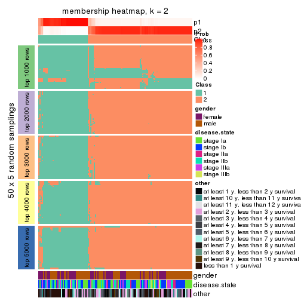
membership_heatmap(res, k = 3)
membership_heatmap(res, k = 4)
membership_heatmap(res, k = 5)
membership_heatmap(res, k = 6)
As soon as we have had the classes for columns, we can look for signatures which are significantly different between classes which can be candidate marks for certain classes. Following are the heatmaps for signatures.
Signature heatmaps where rows are scaled:
get_signatures(res, k = 2)
get_signatures(res, k = 3)
get_signatures(res, k = 4)
get_signatures(res, k = 5)
get_signatures(res, k = 6)
Signature heatmaps where rows are not scaled:
get_signatures(res, k = 2, scale_rows = FALSE)
get_signatures(res, k = 3, scale_rows = FALSE)
get_signatures(res, k = 4, scale_rows = FALSE)
get_signatures(res, k = 5, scale_rows = FALSE)
get_signatures(res, k = 6, scale_rows = FALSE)
Compare the overlap of signatures from different k:
compare_signatures(res)
get_signature() returns a data frame invisibly. TO get the list of signatures, the function
call should be assigned to a variable explicitly. In following code, if plot argument is set
to FALSE, no heatmap is plotted while only the differential analysis is performed.
# code only for demonstration
tb = get_signature(res, k = ..., plot = FALSE)
An example of the output of tb is:
#> which_row fdr mean_1 mean_2 scaled_mean_1 scaled_mean_2 km
#> 1 38 0.042760348 8.373488 9.131774 -0.5533452 0.5164555 1
#> 2 40 0.018707592 7.106213 8.469186 -0.6173731 0.5762149 1
#> 3 55 0.019134737 10.221463 11.207825 -0.6159697 0.5749050 1
#> 4 59 0.006059896 5.921854 7.869574 -0.6899429 0.6439467 1
#> 5 60 0.018055526 8.928898 10.211722 -0.6204761 0.5791110 1
#> 6 98 0.009384629 15.714769 14.887706 0.6635654 -0.6193277 2
...
The columns in tb are:
which_row: row indices corresponding to the input matrix.fdr: FDR for the differential test. mean_x: The mean value in group x.scaled_mean_x: The mean value in group x after rows are scaled.km: Row groups if k-means clustering is applied to rows.UMAP plot which shows how samples are separated.
dimension_reduction(res, k = 2, method = "UMAP")
dimension_reduction(res, k = 3, method = "UMAP")
dimension_reduction(res, k = 4, method = "UMAP")
dimension_reduction(res, k = 5, method = "UMAP")
dimension_reduction(res, k = 6, method = "UMAP")
Following heatmap shows how subgroups are split when increasing k:
collect_classes(res)
Test correlation between subgroups and known annotations. If the known annotation is numeric, one-way ANOVA test is applied, and if the known annotation is discrete, chi-squared contingency table test is applied.
test_to_known_factors(res)
#> n gender(p) disease.state(p) other(p) k
#> CV:mclust 128 0.214 0.889 0.4053 2
#> CV:mclust 79 0.595 0.174 0.5207 3
#> CV:mclust 128 0.256 0.103 0.1108 4
#> CV:mclust 80 0.645 0.807 0.3780 5
#> CV:mclust 100 0.849 0.303 0.0104 6
If matrix rows can be associated to genes, consider to use functional_enrichment(res,
...) to perform function enrichment for the signature genes. See this vignette for more detailed explanations.
The object with results only for a single top-value method and a single partition method can be extracted as:
res = res_list["CV", "NMF"]
# you can also extract it by
# res = res_list["CV:NMF"]
A summary of res and all the functions that can be applied to it:
res
#> A 'ConsensusPartition' object with k = 2, 3, 4, 5, 6.
#> On a matrix with 21168 rows and 130 columns.
#> Top rows (1000, 2000, 3000, 4000, 5000) are extracted by 'CV' method.
#> Subgroups are detected by 'NMF' method.
#> Performed in total 1250 partitions by row resampling.
#> Best k for subgroups seems to be 2.
#>
#> Following methods can be applied to this 'ConsensusPartition' object:
#> [1] "cola_report" "collect_classes" "collect_plots"
#> [4] "collect_stats" "colnames" "compare_signatures"
#> [7] "consensus_heatmap" "dimension_reduction" "functional_enrichment"
#> [10] "get_anno_col" "get_anno" "get_classes"
#> [13] "get_consensus" "get_matrix" "get_membership"
#> [16] "get_param" "get_signatures" "get_stats"
#> [19] "is_best_k" "is_stable_k" "membership_heatmap"
#> [22] "ncol" "nrow" "plot_ecdf"
#> [25] "rownames" "select_partition_number" "show"
#> [28] "suggest_best_k" "test_to_known_factors"
collect_plots() function collects all the plots made from res for all k (number of partitions)
into one single page to provide an easy and fast comparison between different k.
collect_plots(res)
The plots are:
k and the heatmap of
predicted classes for each k.k.k.k.All the plots in panels can be made by individual functions and they are plotted later in this section.
select_partition_number() produces several plots showing different
statistics for choosing “optimized” k. There are following statistics:
k;k, the area increased is defined as \(A_k - A_{k-1}\).The detailed explanations of these statistics can be found in the cola vignette.
Generally speaking, lower PAC score, higher mean silhouette score or higher
concordance corresponds to better partition. Rand index and Jaccard index
measure how similar the current partition is compared to partition with k-1.
If they are too similar, we won't accept k is better than k-1.
select_partition_number(res)
The numeric values for all these statistics can be obtained by get_stats().
get_stats(res)
#> k 1-PAC mean_silhouette concordance area_increased Rand Jaccard
#> 2 2 0.935 0.933 0.972 0.4891 0.513 0.513
#> 3 3 0.522 0.632 0.821 0.3296 0.760 0.566
#> 4 4 0.429 0.446 0.662 0.1357 0.829 0.559
#> 5 5 0.543 0.525 0.699 0.0729 0.882 0.596
#> 6 6 0.624 0.471 0.672 0.0426 0.902 0.606
suggest_best_k() suggests the best \(k\) based on these statistics. The rules are as follows:
suggest_best_k(res)
#> [1] 2
Following shows the table of the partitions (You need to click the show/hide
code output link to see it). The membership matrix (columns with name p*)
is inferred by
clue::cl_consensus()
function with the SE method. Basically the value in the membership matrix
represents the probability to belong to a certain group. The finall class
label for an item is determined with the group with highest probability it
belongs to.
In get_classes() function, the entropy is calculated from the membership
matrix and the silhouette score is calculated from the consensus matrix.
cbind(get_classes(res, k = 2), get_membership(res, k = 2))
#> class entropy silhouette p1 p2
#> GSM102191 2 0.0000 0.967 0.000 1.000
#> GSM102240 1 0.0000 0.975 1.000 0.000
#> GSM102175 1 0.0000 0.975 1.000 0.000
#> GSM102134 2 0.0000 0.967 0.000 1.000
#> GSM102171 1 0.0000 0.975 1.000 0.000
#> GSM102178 1 0.0000 0.975 1.000 0.000
#> GSM102198 2 0.0000 0.967 0.000 1.000
#> GSM102221 1 0.0000 0.975 1.000 0.000
#> GSM102223 2 0.0000 0.967 0.000 1.000
#> GSM102229 2 0.0000 0.967 0.000 1.000
#> GSM102153 1 0.0000 0.975 1.000 0.000
#> GSM102220 2 0.2423 0.939 0.040 0.960
#> GSM102202 2 0.0000 0.967 0.000 1.000
#> GSM102123 1 0.0938 0.964 0.988 0.012
#> GSM102125 2 0.0000 0.967 0.000 1.000
#> GSM102136 2 0.0000 0.967 0.000 1.000
#> GSM102197 2 0.0672 0.962 0.008 0.992
#> GSM102131 2 0.0000 0.967 0.000 1.000
#> GSM102132 1 0.0000 0.975 1.000 0.000
#> GSM102212 2 0.0000 0.967 0.000 1.000
#> GSM102117 1 0.9933 0.136 0.548 0.452
#> GSM102124 2 0.0000 0.967 0.000 1.000
#> GSM102172 1 0.0000 0.975 1.000 0.000
#> GSM102199 2 0.0000 0.967 0.000 1.000
#> GSM102203 1 0.0000 0.975 1.000 0.000
#> GSM102213 2 0.0376 0.965 0.004 0.996
#> GSM102165 2 0.3431 0.917 0.064 0.936
#> GSM102180 2 0.0000 0.967 0.000 1.000
#> GSM102184 2 0.8144 0.682 0.252 0.748
#> GSM102225 2 0.0000 0.967 0.000 1.000
#> GSM102230 1 0.0000 0.975 1.000 0.000
#> GSM102133 2 0.0000 0.967 0.000 1.000
#> GSM102166 1 0.0000 0.975 1.000 0.000
#> GSM102235 1 0.0000 0.975 1.000 0.000
#> GSM102196 1 0.0000 0.975 1.000 0.000
#> GSM102243 1 0.0672 0.968 0.992 0.008
#> GSM102135 2 0.0000 0.967 0.000 1.000
#> GSM102139 2 0.0000 0.967 0.000 1.000
#> GSM102151 2 0.0000 0.967 0.000 1.000
#> GSM102193 2 0.0000 0.967 0.000 1.000
#> GSM102200 1 0.0000 0.975 1.000 0.000
#> GSM102204 2 0.0000 0.967 0.000 1.000
#> GSM102145 2 0.0000 0.967 0.000 1.000
#> GSM102142 2 0.0000 0.967 0.000 1.000
#> GSM102179 2 0.0000 0.967 0.000 1.000
#> GSM102181 2 0.8327 0.662 0.264 0.736
#> GSM102154 2 0.0376 0.965 0.004 0.996
#> GSM102152 2 0.0000 0.967 0.000 1.000
#> GSM102162 2 0.0000 0.967 0.000 1.000
#> GSM102187 2 0.0376 0.965 0.004 0.996
#> GSM102116 1 0.0000 0.975 1.000 0.000
#> GSM102150 1 0.0000 0.975 1.000 0.000
#> GSM102227 2 0.0000 0.967 0.000 1.000
#> GSM102114 1 0.0000 0.975 1.000 0.000
#> GSM102177 1 0.0000 0.975 1.000 0.000
#> GSM102160 2 0.0000 0.967 0.000 1.000
#> GSM102161 1 0.0000 0.975 1.000 0.000
#> GSM102170 2 0.0000 0.967 0.000 1.000
#> GSM102205 2 0.8016 0.696 0.244 0.756
#> GSM102118 1 0.0000 0.975 1.000 0.000
#> GSM102156 2 0.9881 0.253 0.436 0.564
#> GSM102238 1 0.0000 0.975 1.000 0.000
#> GSM102143 2 0.3584 0.913 0.068 0.932
#> GSM102144 2 0.0000 0.967 0.000 1.000
#> GSM102209 2 0.0000 0.967 0.000 1.000
#> GSM102210 2 0.0000 0.967 0.000 1.000
#> GSM102140 2 0.0000 0.967 0.000 1.000
#> GSM102242 1 0.9170 0.486 0.668 0.332
#> GSM102141 2 0.3274 0.921 0.060 0.940
#> GSM102120 2 0.0000 0.967 0.000 1.000
#> GSM102127 2 0.6343 0.814 0.160 0.840
#> GSM102149 1 0.0000 0.975 1.000 0.000
#> GSM102232 2 0.0000 0.967 0.000 1.000
#> GSM102222 2 0.0000 0.967 0.000 1.000
#> GSM102236 1 0.0000 0.975 1.000 0.000
#> GSM102215 2 0.0000 0.967 0.000 1.000
#> GSM102194 2 0.0000 0.967 0.000 1.000
#> GSM102208 2 0.0000 0.967 0.000 1.000
#> GSM102130 2 0.0000 0.967 0.000 1.000
#> GSM102188 1 0.0000 0.975 1.000 0.000
#> GSM102233 1 0.0000 0.975 1.000 0.000
#> GSM102189 2 0.0000 0.967 0.000 1.000
#> GSM102234 2 0.0000 0.967 0.000 1.000
#> GSM102237 1 0.0000 0.975 1.000 0.000
#> GSM102159 1 0.0000 0.975 1.000 0.000
#> GSM102155 1 0.0000 0.975 1.000 0.000
#> GSM102137 2 0.8713 0.611 0.292 0.708
#> GSM102217 2 0.0672 0.962 0.008 0.992
#> GSM102126 1 0.9460 0.410 0.636 0.364
#> GSM102157 2 0.0000 0.967 0.000 1.000
#> GSM102163 1 0.0000 0.975 1.000 0.000
#> GSM102182 1 0.0000 0.975 1.000 0.000
#> GSM102167 2 0.0000 0.967 0.000 1.000
#> GSM102206 1 0.0000 0.975 1.000 0.000
#> GSM102224 2 0.0000 0.967 0.000 1.000
#> GSM102164 2 0.0000 0.967 0.000 1.000
#> GSM102174 1 0.0000 0.975 1.000 0.000
#> GSM102214 2 0.0000 0.967 0.000 1.000
#> GSM102226 2 0.0000 0.967 0.000 1.000
#> GSM102195 2 0.0000 0.967 0.000 1.000
#> GSM102218 2 0.7139 0.767 0.196 0.804
#> GSM102128 2 0.0000 0.967 0.000 1.000
#> GSM102168 1 0.0000 0.975 1.000 0.000
#> GSM102190 1 0.0000 0.975 1.000 0.000
#> GSM102201 2 0.3274 0.919 0.060 0.940
#> GSM102129 2 0.0000 0.967 0.000 1.000
#> GSM102192 1 0.0000 0.975 1.000 0.000
#> GSM102183 2 0.0000 0.967 0.000 1.000
#> GSM102185 1 0.0000 0.975 1.000 0.000
#> GSM102158 2 0.7815 0.703 0.232 0.768
#> GSM102169 2 0.0000 0.967 0.000 1.000
#> GSM102216 1 0.0000 0.975 1.000 0.000
#> GSM102219 1 0.0000 0.975 1.000 0.000
#> GSM102231 2 0.0000 0.967 0.000 1.000
#> GSM102147 2 0.0000 0.967 0.000 1.000
#> GSM102176 1 0.0000 0.975 1.000 0.000
#> GSM102148 1 0.3584 0.906 0.932 0.068
#> GSM102146 1 0.0000 0.975 1.000 0.000
#> GSM102241 1 0.0000 0.975 1.000 0.000
#> GSM102211 1 0.0000 0.975 1.000 0.000
#> GSM102115 1 0.0000 0.975 1.000 0.000
#> GSM102173 1 0.0000 0.975 1.000 0.000
#> GSM102138 2 0.0000 0.967 0.000 1.000
#> GSM102228 1 0.0000 0.975 1.000 0.000
#> GSM102207 2 0.2043 0.944 0.032 0.968
#> GSM102122 1 0.0000 0.975 1.000 0.000
#> GSM102119 2 0.0000 0.967 0.000 1.000
#> GSM102186 2 0.0000 0.967 0.000 1.000
#> GSM102239 1 0.0000 0.975 1.000 0.000
#> GSM102121 2 0.0000 0.967 0.000 1.000
cbind(get_classes(res, k = 3), get_membership(res, k = 3))
#> class entropy silhouette p1 p2 p3
#> GSM102191 2 0.6309 -0.323 0.000 0.500 0.500
#> GSM102240 2 0.4555 0.553 0.200 0.800 0.000
#> GSM102175 1 0.3412 0.815 0.876 0.124 0.000
#> GSM102134 2 0.6291 -0.236 0.000 0.532 0.468
#> GSM102171 1 0.1031 0.831 0.976 0.024 0.000
#> GSM102178 1 0.3412 0.763 0.876 0.000 0.124
#> GSM102198 2 0.6308 -0.304 0.000 0.508 0.492
#> GSM102221 2 0.6079 0.162 0.388 0.612 0.000
#> GSM102223 3 0.3686 0.772 0.000 0.140 0.860
#> GSM102229 3 0.0475 0.783 0.004 0.004 0.992
#> GSM102153 1 0.5431 0.667 0.716 0.284 0.000
#> GSM102220 3 0.2116 0.777 0.040 0.012 0.948
#> GSM102202 2 0.1411 0.677 0.000 0.964 0.036
#> GSM102123 1 0.4121 0.723 0.832 0.000 0.168
#> GSM102125 3 0.5591 0.658 0.000 0.304 0.696
#> GSM102136 2 0.1860 0.668 0.000 0.948 0.052
#> GSM102197 3 0.2066 0.757 0.060 0.000 0.940
#> GSM102131 3 0.1289 0.773 0.032 0.000 0.968
#> GSM102132 1 0.3686 0.751 0.860 0.000 0.140
#> GSM102212 3 0.6244 0.444 0.000 0.440 0.560
#> GSM102117 2 0.2796 0.640 0.092 0.908 0.000
#> GSM102124 3 0.4121 0.760 0.000 0.168 0.832
#> GSM102172 1 0.4654 0.754 0.792 0.208 0.000
#> GSM102199 3 0.4750 0.735 0.000 0.216 0.784
#> GSM102203 2 0.4399 0.564 0.188 0.812 0.000
#> GSM102213 2 0.1031 0.670 0.024 0.976 0.000
#> GSM102165 3 0.2537 0.746 0.080 0.000 0.920
#> GSM102180 3 0.6295 0.370 0.000 0.472 0.528
#> GSM102184 3 0.3038 0.729 0.104 0.000 0.896
#> GSM102225 3 0.3619 0.775 0.000 0.136 0.864
#> GSM102230 1 0.2959 0.825 0.900 0.100 0.000
#> GSM102133 3 0.4291 0.754 0.000 0.180 0.820
#> GSM102166 1 0.2625 0.830 0.916 0.084 0.000
#> GSM102235 1 0.3551 0.758 0.868 0.000 0.132
#> GSM102196 1 0.2537 0.831 0.920 0.080 0.000
#> GSM102243 1 0.6476 0.316 0.548 0.448 0.004
#> GSM102135 3 0.2796 0.785 0.000 0.092 0.908
#> GSM102139 2 0.4291 0.524 0.000 0.820 0.180
#> GSM102151 2 0.3551 0.589 0.000 0.868 0.132
#> GSM102193 3 0.6235 0.452 0.000 0.436 0.564
#> GSM102200 1 0.1411 0.834 0.964 0.036 0.000
#> GSM102204 3 0.6307 0.325 0.000 0.488 0.512
#> GSM102145 3 0.1529 0.789 0.000 0.040 0.960
#> GSM102142 3 0.6286 0.391 0.000 0.464 0.536
#> GSM102179 3 0.3941 0.767 0.000 0.156 0.844
#> GSM102181 3 0.2796 0.739 0.092 0.000 0.908
#> GSM102154 3 0.1015 0.782 0.012 0.008 0.980
#> GSM102152 3 0.6026 0.565 0.000 0.376 0.624
#> GSM102162 3 0.4555 0.744 0.000 0.200 0.800
#> GSM102187 3 0.1860 0.789 0.000 0.052 0.948
#> GSM102116 2 0.5431 0.436 0.284 0.716 0.000
#> GSM102150 1 0.4504 0.765 0.804 0.196 0.000
#> GSM102227 3 0.0592 0.779 0.012 0.000 0.988
#> GSM102114 1 0.1031 0.831 0.976 0.024 0.000
#> GSM102177 2 0.5327 0.448 0.272 0.728 0.000
#> GSM102160 3 0.5591 0.660 0.000 0.304 0.696
#> GSM102161 1 0.4796 0.742 0.780 0.220 0.000
#> GSM102170 3 0.5706 0.640 0.000 0.320 0.680
#> GSM102205 3 0.3267 0.722 0.116 0.000 0.884
#> GSM102118 1 0.3816 0.743 0.852 0.000 0.148
#> GSM102156 3 0.6379 0.339 0.368 0.008 0.624
#> GSM102238 1 0.1529 0.833 0.960 0.040 0.000
#> GSM102143 3 0.1860 0.764 0.052 0.000 0.948
#> GSM102144 2 0.0747 0.678 0.000 0.984 0.016
#> GSM102209 3 0.2878 0.786 0.000 0.096 0.904
#> GSM102210 3 0.1964 0.789 0.000 0.056 0.944
#> GSM102140 3 0.1031 0.787 0.000 0.024 0.976
#> GSM102242 3 0.6045 0.307 0.380 0.000 0.620
#> GSM102141 3 0.2959 0.731 0.100 0.000 0.900
#> GSM102120 3 0.1031 0.775 0.024 0.000 0.976
#> GSM102127 3 0.2878 0.734 0.096 0.000 0.904
#> GSM102149 1 0.4784 0.764 0.796 0.200 0.004
#> GSM102232 3 0.2878 0.783 0.000 0.096 0.904
#> GSM102222 3 0.5733 0.638 0.000 0.324 0.676
#> GSM102236 1 0.6062 0.493 0.616 0.384 0.000
#> GSM102215 2 0.4974 0.431 0.000 0.764 0.236
#> GSM102194 3 0.6280 0.398 0.000 0.460 0.540
#> GSM102208 3 0.5363 0.685 0.000 0.276 0.724
#> GSM102130 3 0.5560 0.662 0.000 0.300 0.700
#> GSM102188 1 0.3192 0.772 0.888 0.000 0.112
#> GSM102233 1 0.0848 0.826 0.984 0.008 0.008
#> GSM102189 2 0.6308 -0.300 0.000 0.508 0.492
#> GSM102234 3 0.1411 0.771 0.036 0.000 0.964
#> GSM102237 1 0.5254 0.693 0.736 0.264 0.000
#> GSM102159 1 0.4121 0.723 0.832 0.000 0.168
#> GSM102155 1 0.3340 0.768 0.880 0.000 0.120
#> GSM102137 2 0.2866 0.653 0.076 0.916 0.008
#> GSM102217 2 0.2301 0.665 0.004 0.936 0.060
#> GSM102126 3 0.6204 0.171 0.424 0.000 0.576
#> GSM102157 3 0.1860 0.789 0.000 0.052 0.948
#> GSM102163 1 0.0592 0.829 0.988 0.012 0.000
#> GSM102182 2 0.4178 0.579 0.172 0.828 0.000
#> GSM102167 3 0.6180 0.495 0.000 0.416 0.584
#> GSM102206 1 0.2356 0.832 0.928 0.072 0.000
#> GSM102224 3 0.6111 0.530 0.000 0.396 0.604
#> GSM102164 3 0.5591 0.658 0.000 0.304 0.696
#> GSM102174 2 0.5560 0.398 0.300 0.700 0.000
#> GSM102214 3 0.1015 0.784 0.008 0.012 0.980
#> GSM102226 3 0.1964 0.790 0.000 0.056 0.944
#> GSM102195 3 0.1529 0.789 0.000 0.040 0.960
#> GSM102218 3 0.2356 0.751 0.072 0.000 0.928
#> GSM102128 2 0.6274 -0.197 0.000 0.544 0.456
#> GSM102168 1 0.1289 0.814 0.968 0.000 0.032
#> GSM102190 2 0.5591 0.384 0.304 0.696 0.000
#> GSM102201 2 0.0747 0.673 0.016 0.984 0.000
#> GSM102129 3 0.0747 0.786 0.000 0.016 0.984
#> GSM102192 2 0.6308 -0.205 0.492 0.508 0.000
#> GSM102183 3 0.4782 0.760 0.016 0.164 0.820
#> GSM102185 1 0.2448 0.832 0.924 0.076 0.000
#> GSM102158 2 0.1860 0.660 0.052 0.948 0.000
#> GSM102169 3 0.1529 0.768 0.040 0.000 0.960
#> GSM102216 1 0.2878 0.829 0.904 0.096 0.000
#> GSM102219 1 0.3715 0.814 0.868 0.128 0.004
#> GSM102231 3 0.0892 0.787 0.000 0.020 0.980
#> GSM102147 2 0.1860 0.667 0.000 0.948 0.052
#> GSM102176 1 0.5706 0.615 0.680 0.320 0.000
#> GSM102148 1 0.5465 0.575 0.712 0.000 0.288
#> GSM102146 1 0.6204 0.405 0.576 0.424 0.000
#> GSM102241 1 0.1964 0.833 0.944 0.056 0.000
#> GSM102211 1 0.2625 0.831 0.916 0.084 0.000
#> GSM102115 2 0.5138 0.480 0.252 0.748 0.000
#> GSM102173 1 0.2625 0.830 0.916 0.084 0.000
#> GSM102138 2 0.5138 0.400 0.000 0.748 0.252
#> GSM102228 1 0.2537 0.791 0.920 0.000 0.080
#> GSM102207 3 0.2537 0.745 0.080 0.000 0.920
#> GSM102122 1 0.0892 0.820 0.980 0.000 0.020
#> GSM102119 3 0.3752 0.772 0.000 0.144 0.856
#> GSM102186 2 0.0892 0.679 0.000 0.980 0.020
#> GSM102239 2 0.5465 0.418 0.288 0.712 0.000
#> GSM102121 3 0.5254 0.696 0.000 0.264 0.736
cbind(get_classes(res, k = 4), get_membership(res, k = 4))
#> class entropy silhouette p1 p2 p3 p4
#> GSM102191 2 0.6346 0.5777 0.000 0.640 0.244 0.116
#> GSM102240 4 0.2586 0.6540 0.040 0.048 0.000 0.912
#> GSM102175 1 0.2704 0.6325 0.876 0.000 0.000 0.124
#> GSM102134 2 0.4745 0.3096 0.000 0.756 0.036 0.208
#> GSM102171 1 0.0895 0.6828 0.976 0.000 0.004 0.020
#> GSM102178 1 0.6166 0.3687 0.572 0.020 0.384 0.024
#> GSM102198 2 0.5334 0.4313 0.000 0.740 0.088 0.172
#> GSM102221 4 0.4250 0.5078 0.276 0.000 0.000 0.724
#> GSM102223 2 0.5018 0.4171 0.000 0.656 0.332 0.012
#> GSM102229 3 0.4577 0.6076 0.032 0.148 0.804 0.016
#> GSM102153 1 0.5302 0.5753 0.752 0.080 0.004 0.164
#> GSM102220 3 0.4219 0.5450 0.040 0.136 0.820 0.004
#> GSM102202 4 0.4122 0.5626 0.000 0.236 0.004 0.760
#> GSM102123 1 0.8206 0.1035 0.396 0.188 0.392 0.024
#> GSM102125 2 0.5271 0.5309 0.000 0.640 0.340 0.020
#> GSM102136 2 0.4746 0.1094 0.008 0.688 0.000 0.304
#> GSM102197 3 0.2463 0.6384 0.032 0.036 0.924 0.008
#> GSM102131 3 0.7186 0.4760 0.084 0.260 0.612 0.044
#> GSM102132 1 0.5403 0.4609 0.632 0.012 0.348 0.008
#> GSM102212 2 0.5970 0.5747 0.000 0.668 0.244 0.088
#> GSM102117 4 0.4014 0.6269 0.064 0.080 0.008 0.848
#> GSM102124 3 0.5295 -0.3618 0.000 0.488 0.504 0.008
#> GSM102172 1 0.5511 0.4228 0.676 0.036 0.004 0.284
#> GSM102199 3 0.7008 0.1110 0.000 0.436 0.448 0.116
#> GSM102203 4 0.7717 0.4289 0.232 0.344 0.000 0.424
#> GSM102213 4 0.2773 0.6326 0.004 0.116 0.000 0.880
#> GSM102165 3 0.2282 0.6107 0.024 0.052 0.924 0.000
#> GSM102180 2 0.6754 0.5682 0.000 0.612 0.204 0.184
#> GSM102184 3 0.5575 0.4136 0.060 0.212 0.720 0.008
#> GSM102225 2 0.5677 0.3197 0.016 0.736 0.176 0.072
#> GSM102230 1 0.5850 0.6345 0.756 0.116 0.052 0.076
#> GSM102133 2 0.5168 0.3398 0.000 0.504 0.492 0.004
#> GSM102166 1 0.2149 0.6543 0.912 0.000 0.000 0.088
#> GSM102235 1 0.4631 0.5834 0.728 0.004 0.260 0.008
#> GSM102196 1 0.2762 0.6872 0.912 0.048 0.028 0.012
#> GSM102243 1 0.7284 0.2224 0.532 0.336 0.012 0.120
#> GSM102135 3 0.5699 0.3460 0.000 0.380 0.588 0.032
#> GSM102139 2 0.6295 0.3416 0.000 0.580 0.072 0.348
#> GSM102151 4 0.5407 0.3086 0.000 0.484 0.012 0.504
#> GSM102193 2 0.6752 0.5570 0.000 0.588 0.280 0.132
#> GSM102200 1 0.5644 0.6486 0.740 0.056 0.180 0.024
#> GSM102204 2 0.5938 0.5685 0.000 0.696 0.168 0.136
#> GSM102145 3 0.2888 0.5569 0.000 0.124 0.872 0.004
#> GSM102142 2 0.6269 0.5711 0.000 0.632 0.272 0.096
#> GSM102179 2 0.5677 0.3597 0.004 0.504 0.476 0.016
#> GSM102181 3 0.4681 0.6278 0.088 0.068 0.820 0.024
#> GSM102154 3 0.2048 0.6073 0.000 0.064 0.928 0.008
#> GSM102152 2 0.7424 -0.1066 0.000 0.424 0.168 0.408
#> GSM102162 2 0.5300 0.4766 0.000 0.580 0.408 0.012
#> GSM102187 3 0.5594 -0.2968 0.020 0.460 0.520 0.000
#> GSM102116 4 0.4538 0.5728 0.216 0.024 0.000 0.760
#> GSM102150 1 0.7418 0.4453 0.596 0.240 0.032 0.132
#> GSM102227 3 0.2860 0.6189 0.004 0.100 0.888 0.008
#> GSM102114 1 0.1082 0.6913 0.972 0.004 0.020 0.004
#> GSM102177 4 0.5511 0.3984 0.352 0.028 0.000 0.620
#> GSM102160 2 0.6425 0.4219 0.000 0.508 0.424 0.068
#> GSM102161 1 0.4192 0.6103 0.812 0.028 0.004 0.156
#> GSM102170 2 0.6102 0.4361 0.000 0.532 0.420 0.048
#> GSM102205 2 0.8094 -0.0803 0.200 0.484 0.292 0.024
#> GSM102118 1 0.6006 0.1953 0.508 0.020 0.460 0.012
#> GSM102156 3 0.6538 0.5084 0.180 0.100 0.688 0.032
#> GSM102238 1 0.0992 0.6895 0.976 0.012 0.008 0.004
#> GSM102143 3 0.2990 0.6401 0.036 0.056 0.900 0.008
#> GSM102144 4 0.5229 0.3518 0.008 0.428 0.000 0.564
#> GSM102209 2 0.6730 0.1796 0.016 0.640 0.236 0.108
#> GSM102210 2 0.5168 0.3466 0.000 0.500 0.496 0.004
#> GSM102140 3 0.5261 0.5889 0.024 0.152 0.772 0.052
#> GSM102242 3 0.5300 0.4664 0.240 0.024 0.720 0.016
#> GSM102141 3 0.6506 0.5272 0.148 0.180 0.664 0.008
#> GSM102120 3 0.7001 0.3401 0.088 0.368 0.532 0.012
#> GSM102127 3 0.1584 0.6360 0.036 0.012 0.952 0.000
#> GSM102149 1 0.8730 0.0690 0.396 0.324 0.044 0.236
#> GSM102232 3 0.4994 -0.2945 0.000 0.480 0.520 0.000
#> GSM102222 2 0.4663 0.5340 0.000 0.788 0.148 0.064
#> GSM102236 1 0.5742 0.3761 0.648 0.052 0.000 0.300
#> GSM102215 2 0.5630 0.1503 0.000 0.608 0.032 0.360
#> GSM102194 2 0.6826 0.5613 0.000 0.600 0.228 0.172
#> GSM102208 2 0.6875 0.3403 0.000 0.476 0.420 0.104
#> GSM102130 2 0.5496 0.5068 0.000 0.604 0.372 0.024
#> GSM102188 1 0.2597 0.6895 0.904 0.008 0.084 0.004
#> GSM102233 1 0.3312 0.6853 0.876 0.052 0.072 0.000
#> GSM102189 2 0.7396 0.4756 0.000 0.516 0.268 0.216
#> GSM102234 3 0.1762 0.6149 0.004 0.048 0.944 0.004
#> GSM102237 1 0.5038 0.4444 0.684 0.020 0.000 0.296
#> GSM102159 1 0.5064 0.4415 0.632 0.004 0.360 0.004
#> GSM102155 1 0.5167 0.5852 0.728 0.020 0.236 0.016
#> GSM102137 4 0.5731 0.4278 0.028 0.428 0.000 0.544
#> GSM102217 4 0.5151 0.3718 0.000 0.464 0.004 0.532
#> GSM102126 3 0.4372 0.4247 0.268 0.004 0.728 0.000
#> GSM102157 3 0.4788 0.4229 0.008 0.232 0.744 0.016
#> GSM102163 1 0.1191 0.6909 0.968 0.004 0.024 0.004
#> GSM102182 4 0.3745 0.6234 0.088 0.060 0.000 0.852
#> GSM102167 2 0.7016 0.5503 0.000 0.572 0.252 0.176
#> GSM102206 1 0.1510 0.6874 0.956 0.000 0.016 0.028
#> GSM102224 2 0.5277 0.5221 0.000 0.752 0.132 0.116
#> GSM102164 2 0.5793 0.5188 0.000 0.600 0.360 0.040
#> GSM102174 4 0.3945 0.5717 0.216 0.004 0.000 0.780
#> GSM102214 2 0.6331 0.0562 0.044 0.528 0.420 0.008
#> GSM102226 3 0.6462 0.2880 0.008 0.416 0.524 0.052
#> GSM102195 3 0.3681 0.5457 0.000 0.176 0.816 0.008
#> GSM102218 3 0.5391 0.5911 0.116 0.092 0.772 0.020
#> GSM102128 4 0.7397 -0.1045 0.000 0.292 0.200 0.508
#> GSM102168 1 0.4193 0.6437 0.796 0.004 0.184 0.016
#> GSM102190 4 0.6201 0.3597 0.376 0.060 0.000 0.564
#> GSM102201 4 0.3668 0.6047 0.004 0.188 0.000 0.808
#> GSM102129 3 0.2775 0.5852 0.000 0.084 0.896 0.020
#> GSM102192 4 0.5427 0.4125 0.292 0.024 0.008 0.676
#> GSM102183 2 0.5290 0.3256 0.008 0.516 0.476 0.000
#> GSM102185 1 0.1452 0.6770 0.956 0.008 0.000 0.036
#> GSM102158 4 0.2593 0.6408 0.016 0.080 0.000 0.904
#> GSM102169 3 0.2076 0.6230 0.008 0.056 0.932 0.004
#> GSM102216 1 0.8426 0.3888 0.516 0.164 0.068 0.252
#> GSM102219 1 0.8592 0.2422 0.468 0.284 0.056 0.192
#> GSM102231 2 0.6127 0.0639 0.032 0.524 0.436 0.008
#> GSM102147 2 0.5024 0.0979 0.000 0.632 0.008 0.360
#> GSM102176 1 0.4868 0.4219 0.684 0.012 0.000 0.304
#> GSM102148 3 0.6440 0.0358 0.404 0.052 0.536 0.008
#> GSM102146 4 0.7755 0.1440 0.368 0.200 0.004 0.428
#> GSM102241 1 0.2650 0.6905 0.916 0.036 0.040 0.008
#> GSM102211 1 0.4913 0.6577 0.808 0.104 0.052 0.036
#> GSM102115 4 0.6314 0.3602 0.372 0.068 0.000 0.560
#> GSM102173 1 0.3032 0.6303 0.868 0.008 0.000 0.124
#> GSM102138 4 0.5571 0.3777 0.000 0.396 0.024 0.580
#> GSM102228 1 0.5954 0.5066 0.640 0.016 0.312 0.032
#> GSM102207 3 0.4725 0.6169 0.076 0.112 0.804 0.008
#> GSM102122 1 0.5372 0.6423 0.760 0.100 0.132 0.008
#> GSM102119 3 0.4283 0.3561 0.000 0.256 0.740 0.004
#> GSM102186 4 0.3718 0.5744 0.000 0.168 0.012 0.820
#> GSM102239 4 0.4004 0.6110 0.164 0.024 0.000 0.812
#> GSM102121 2 0.5172 0.4742 0.000 0.588 0.404 0.008
cbind(get_classes(res, k = 5), get_membership(res, k = 5))
#> class entropy silhouette p1 p2 p3 p4 p5
#> GSM102191 2 0.2551 0.78350 0.012 0.904 0.000 0.044 0.040
#> GSM102240 5 0.3686 0.60396 0.012 0.004 0.000 0.204 0.780
#> GSM102175 1 0.2908 0.67408 0.884 0.000 0.032 0.016 0.068
#> GSM102134 2 0.5187 0.53961 0.004 0.612 0.000 0.336 0.048
#> GSM102171 1 0.2136 0.68123 0.904 0.000 0.088 0.008 0.000
#> GSM102178 3 0.6409 0.23041 0.300 0.000 0.556 0.120 0.024
#> GSM102198 2 0.4303 0.69621 0.004 0.748 0.004 0.216 0.028
#> GSM102221 5 0.3994 0.54333 0.188 0.000 0.000 0.040 0.772
#> GSM102223 2 0.3527 0.72529 0.000 0.804 0.024 0.172 0.000
#> GSM102229 3 0.3005 0.66691 0.000 0.008 0.856 0.124 0.012
#> GSM102153 1 0.4156 0.62819 0.784 0.000 0.028 0.168 0.020
#> GSM102220 3 0.5817 0.65500 0.052 0.112 0.724 0.088 0.024
#> GSM102202 5 0.4440 0.51196 0.000 0.004 0.012 0.324 0.660
#> GSM102123 4 0.6691 0.20687 0.312 0.000 0.260 0.428 0.000
#> GSM102125 2 0.1124 0.78248 0.000 0.960 0.000 0.036 0.004
#> GSM102136 2 0.6391 0.24570 0.016 0.460 0.000 0.416 0.108
#> GSM102197 3 0.4991 0.65221 0.008 0.120 0.728 0.144 0.000
#> GSM102131 3 0.6672 0.40266 0.048 0.060 0.552 0.324 0.016
#> GSM102132 1 0.5777 0.03366 0.468 0.000 0.444 0.088 0.000
#> GSM102212 2 0.1605 0.78390 0.000 0.944 0.004 0.040 0.012
#> GSM102117 5 0.2587 0.62338 0.008 0.008 0.008 0.080 0.896
#> GSM102124 2 0.4536 0.57175 0.000 0.712 0.240 0.048 0.000
#> GSM102172 1 0.5524 0.58025 0.672 0.000 0.028 0.068 0.232
#> GSM102199 4 0.7152 0.23285 0.000 0.052 0.340 0.468 0.140
#> GSM102203 4 0.7075 -0.05341 0.172 0.040 0.000 0.496 0.292
#> GSM102213 5 0.3844 0.57815 0.000 0.004 0.004 0.256 0.736
#> GSM102165 3 0.2597 0.68648 0.004 0.040 0.896 0.060 0.000
#> GSM102180 2 0.2416 0.77613 0.000 0.888 0.000 0.012 0.100
#> GSM102184 3 0.6396 0.48664 0.044 0.184 0.652 0.104 0.016
#> GSM102225 2 0.5672 0.36940 0.060 0.520 0.008 0.412 0.000
#> GSM102230 1 0.6905 0.34746 0.524 0.000 0.152 0.284 0.040
#> GSM102133 2 0.2502 0.75285 0.000 0.904 0.060 0.024 0.012
#> GSM102166 1 0.4310 0.67345 0.808 0.000 0.084 0.044 0.064
#> GSM102235 1 0.5598 0.35258 0.544 0.000 0.376 0.080 0.000
#> GSM102196 1 0.2921 0.63955 0.856 0.000 0.020 0.124 0.000
#> GSM102243 1 0.6534 -0.00523 0.460 0.384 0.004 0.148 0.004
#> GSM102135 3 0.6687 0.08633 0.000 0.116 0.436 0.420 0.028
#> GSM102139 2 0.3821 0.70339 0.000 0.764 0.000 0.020 0.216
#> GSM102151 4 0.6194 -0.09293 0.004 0.088 0.012 0.520 0.376
#> GSM102193 2 0.2696 0.77349 0.000 0.892 0.012 0.024 0.072
#> GSM102200 1 0.5618 0.44187 0.628 0.000 0.236 0.136 0.000
#> GSM102204 2 0.2616 0.77414 0.000 0.888 0.000 0.076 0.036
#> GSM102145 3 0.4419 0.63004 0.000 0.212 0.740 0.044 0.004
#> GSM102142 2 0.2227 0.78531 0.004 0.916 0.000 0.032 0.048
#> GSM102179 2 0.1686 0.78302 0.004 0.944 0.004 0.012 0.036
#> GSM102181 3 0.7706 0.34562 0.100 0.152 0.484 0.260 0.004
#> GSM102154 3 0.3715 0.69096 0.000 0.108 0.824 0.064 0.004
#> GSM102152 5 0.6666 0.21041 0.000 0.016 0.156 0.340 0.488
#> GSM102162 2 0.1444 0.77816 0.000 0.948 0.012 0.040 0.000
#> GSM102187 2 0.2848 0.77375 0.052 0.896 0.012 0.028 0.012
#> GSM102116 5 0.4705 0.54576 0.172 0.008 0.000 0.076 0.744
#> GSM102150 4 0.7806 -0.00480 0.352 0.000 0.152 0.392 0.104
#> GSM102227 3 0.3804 0.66901 0.000 0.044 0.796 0.160 0.000
#> GSM102114 1 0.3018 0.67134 0.872 0.000 0.056 0.068 0.004
#> GSM102177 5 0.5295 0.04013 0.408 0.000 0.000 0.052 0.540
#> GSM102160 2 0.3774 0.73233 0.000 0.804 0.008 0.028 0.160
#> GSM102161 1 0.6202 0.60422 0.652 0.000 0.068 0.096 0.184
#> GSM102170 2 0.2673 0.76778 0.000 0.900 0.028 0.024 0.048
#> GSM102205 4 0.7340 0.37831 0.232 0.156 0.088 0.524 0.000
#> GSM102118 3 0.3365 0.67409 0.044 0.000 0.836 0.120 0.000
#> GSM102156 3 0.4411 0.63695 0.048 0.020 0.808 0.104 0.020
#> GSM102238 1 0.2632 0.67993 0.892 0.000 0.072 0.032 0.004
#> GSM102143 3 0.4338 0.66981 0.012 0.068 0.800 0.112 0.008
#> GSM102144 5 0.6302 0.26798 0.008 0.124 0.000 0.376 0.492
#> GSM102209 4 0.6272 0.34076 0.024 0.228 0.116 0.624 0.008
#> GSM102210 2 0.1443 0.78246 0.004 0.948 0.004 0.044 0.000
#> GSM102140 3 0.6511 0.52275 0.000 0.128 0.596 0.232 0.044
#> GSM102242 3 0.2551 0.68014 0.016 0.008 0.904 0.064 0.008
#> GSM102141 3 0.4997 0.58313 0.016 0.044 0.692 0.248 0.000
#> GSM102120 4 0.7572 0.16835 0.052 0.276 0.248 0.424 0.000
#> GSM102127 3 0.1893 0.69994 0.012 0.024 0.936 0.028 0.000
#> GSM102149 4 0.5593 0.38042 0.176 0.000 0.060 0.700 0.064
#> GSM102232 2 0.4840 0.63377 0.000 0.724 0.152 0.124 0.000
#> GSM102222 2 0.2956 0.75625 0.004 0.848 0.000 0.140 0.008
#> GSM102236 1 0.5116 0.49837 0.668 0.000 0.000 0.084 0.248
#> GSM102215 2 0.6941 0.09434 0.000 0.424 0.008 0.292 0.276
#> GSM102194 2 0.2193 0.77234 0.000 0.900 0.000 0.008 0.092
#> GSM102208 2 0.5672 0.62937 0.000 0.708 0.120 0.060 0.112
#> GSM102130 2 0.0740 0.78107 0.000 0.980 0.008 0.004 0.008
#> GSM102188 1 0.1915 0.67320 0.928 0.000 0.032 0.040 0.000
#> GSM102233 1 0.4022 0.64531 0.796 0.000 0.100 0.104 0.000
#> GSM102189 2 0.5364 0.65706 0.000 0.720 0.060 0.056 0.164
#> GSM102234 3 0.2632 0.70256 0.000 0.032 0.892 0.072 0.004
#> GSM102237 1 0.7644 0.38677 0.472 0.000 0.104 0.152 0.272
#> GSM102159 3 0.5843 0.17353 0.404 0.000 0.508 0.084 0.004
#> GSM102155 1 0.6718 0.48515 0.568 0.012 0.280 0.108 0.032
#> GSM102137 4 0.5891 -0.25238 0.024 0.032 0.008 0.488 0.448
#> GSM102217 5 0.4980 0.26181 0.000 0.000 0.028 0.484 0.488
#> GSM102126 3 0.2878 0.66517 0.048 0.000 0.880 0.068 0.004
#> GSM102157 3 0.6488 0.54502 0.012 0.132 0.656 0.136 0.064
#> GSM102163 1 0.5081 0.62223 0.708 0.000 0.204 0.076 0.012
#> GSM102182 5 0.2464 0.61649 0.044 0.004 0.000 0.048 0.904
#> GSM102167 2 0.3421 0.74081 0.004 0.816 0.000 0.016 0.164
#> GSM102206 1 0.6284 0.57106 0.616 0.000 0.232 0.112 0.040
#> GSM102224 2 0.3934 0.72905 0.000 0.796 0.008 0.160 0.036
#> GSM102164 2 0.0798 0.77981 0.000 0.976 0.016 0.008 0.000
#> GSM102174 5 0.3764 0.56978 0.148 0.004 0.000 0.040 0.808
#> GSM102214 2 0.6806 0.16882 0.048 0.456 0.096 0.400 0.000
#> GSM102226 4 0.6008 -0.10161 0.000 0.064 0.424 0.492 0.020
#> GSM102195 3 0.5821 0.56183 0.000 0.192 0.628 0.176 0.004
#> GSM102218 3 0.3467 0.68397 0.004 0.024 0.832 0.136 0.004
#> GSM102128 5 0.5975 0.46379 0.000 0.152 0.068 0.100 0.680
#> GSM102168 1 0.6065 0.47106 0.564 0.000 0.320 0.104 0.012
#> GSM102190 1 0.5375 0.51006 0.668 0.004 0.000 0.108 0.220
#> GSM102201 5 0.4291 0.54898 0.000 0.004 0.016 0.276 0.704
#> GSM102129 3 0.3456 0.69277 0.000 0.108 0.844 0.036 0.012
#> GSM102192 5 0.5423 0.55517 0.168 0.000 0.020 0.112 0.700
#> GSM102183 2 0.6096 0.56752 0.064 0.632 0.048 0.252 0.004
#> GSM102185 1 0.1280 0.67021 0.960 0.000 0.008 0.024 0.008
#> GSM102158 5 0.1956 0.62941 0.000 0.008 0.000 0.076 0.916
#> GSM102169 3 0.4558 0.63576 0.000 0.208 0.728 0.064 0.000
#> GSM102216 4 0.8073 0.24688 0.176 0.000 0.280 0.408 0.136
#> GSM102219 4 0.6001 0.35035 0.252 0.000 0.068 0.632 0.048
#> GSM102231 2 0.6183 0.34271 0.024 0.532 0.080 0.364 0.000
#> GSM102147 2 0.5677 0.61608 0.008 0.656 0.000 0.180 0.156
#> GSM102176 1 0.4628 0.58987 0.716 0.000 0.012 0.032 0.240
#> GSM102148 3 0.3859 0.66962 0.072 0.008 0.820 0.100 0.000
#> GSM102146 5 0.7148 0.13153 0.328 0.004 0.008 0.280 0.380
#> GSM102241 1 0.2959 0.65490 0.864 0.000 0.036 0.100 0.000
#> GSM102211 1 0.3710 0.58308 0.784 0.000 0.024 0.192 0.000
#> GSM102115 1 0.6316 0.31479 0.532 0.020 0.000 0.104 0.344
#> GSM102173 1 0.4362 0.66378 0.804 0.000 0.056 0.048 0.092
#> GSM102138 5 0.5807 0.34687 0.000 0.020 0.052 0.396 0.532
#> GSM102228 3 0.5264 0.48221 0.188 0.000 0.700 0.100 0.012
#> GSM102207 3 0.3950 0.67412 0.004 0.048 0.796 0.152 0.000
#> GSM102122 1 0.5583 0.50225 0.640 0.000 0.152 0.208 0.000
#> GSM102119 3 0.6033 0.43043 0.000 0.348 0.560 0.060 0.032
#> GSM102186 5 0.2466 0.62615 0.000 0.012 0.012 0.076 0.900
#> GSM102239 5 0.3584 0.61736 0.108 0.004 0.000 0.056 0.832
#> GSM102121 2 0.0451 0.77933 0.000 0.988 0.008 0.004 0.000
cbind(get_classes(res, k = 6), get_membership(res, k = 6))
#> class entropy silhouette p1 p2 p3 p4 p5 p6
#> GSM102191 2 0.1294 0.8036 0.004 0.956 0.000 0.024 0.008 0.008
#> GSM102240 5 0.3636 0.6290 0.036 0.004 0.000 0.136 0.808 0.016
#> GSM102175 1 0.2880 0.6331 0.872 0.000 0.000 0.024 0.048 0.056
#> GSM102134 2 0.4365 0.5047 0.000 0.636 0.024 0.332 0.008 0.000
#> GSM102171 1 0.1773 0.6271 0.932 0.000 0.016 0.016 0.000 0.036
#> GSM102178 1 0.5961 -0.0164 0.500 0.000 0.204 0.000 0.008 0.288
#> GSM102198 2 0.3843 0.6631 0.000 0.740 0.016 0.232 0.004 0.008
#> GSM102221 5 0.4052 0.6052 0.108 0.004 0.000 0.024 0.792 0.072
#> GSM102223 2 0.4473 0.6273 0.000 0.708 0.072 0.212 0.000 0.008
#> GSM102229 3 0.7692 -0.1508 0.080 0.000 0.388 0.180 0.044 0.308
#> GSM102153 1 0.3912 0.6218 0.784 0.000 0.000 0.140 0.016 0.060
#> GSM102220 3 0.4096 0.6342 0.052 0.008 0.816 0.012 0.060 0.052
#> GSM102202 5 0.5533 0.2021 0.000 0.008 0.000 0.404 0.484 0.104
#> GSM102123 4 0.7324 0.0248 0.272 0.000 0.140 0.420 0.004 0.164
#> GSM102125 2 0.0790 0.8010 0.000 0.968 0.000 0.032 0.000 0.000
#> GSM102136 4 0.5485 0.0108 0.008 0.416 0.008 0.512 0.036 0.020
#> GSM102197 3 0.1536 0.6612 0.000 0.012 0.944 0.024 0.000 0.020
#> GSM102131 3 0.4188 0.6186 0.000 0.008 0.776 0.140 0.020 0.056
#> GSM102132 3 0.6950 -0.2459 0.300 0.000 0.324 0.052 0.000 0.324
#> GSM102212 2 0.1285 0.7996 0.000 0.944 0.004 0.052 0.000 0.000
#> GSM102117 5 0.1632 0.6558 0.008 0.008 0.004 0.028 0.944 0.008
#> GSM102124 2 0.5503 0.4923 0.000 0.644 0.120 0.040 0.000 0.196
#> GSM102172 1 0.4463 0.5917 0.748 0.008 0.000 0.012 0.148 0.084
#> GSM102199 4 0.6672 0.2020 0.000 0.012 0.152 0.536 0.068 0.232
#> GSM102203 4 0.7141 0.2722 0.092 0.040 0.004 0.540 0.208 0.116
#> GSM102213 5 0.5392 0.3811 0.000 0.008 0.000 0.308 0.572 0.112
#> GSM102165 3 0.4712 0.2523 0.040 0.020 0.652 0.000 0.000 0.288
#> GSM102180 2 0.1167 0.8040 0.000 0.960 0.000 0.020 0.008 0.012
#> GSM102184 6 0.7220 0.4578 0.280 0.084 0.188 0.012 0.000 0.436
#> GSM102225 4 0.6617 0.1289 0.008 0.352 0.040 0.460 0.004 0.136
#> GSM102230 1 0.5323 0.5071 0.652 0.000 0.016 0.196 0.004 0.132
#> GSM102133 2 0.1408 0.7946 0.000 0.944 0.036 0.000 0.000 0.020
#> GSM102166 1 0.2487 0.6282 0.892 0.000 0.000 0.020 0.024 0.064
#> GSM102235 1 0.4805 0.4915 0.696 0.000 0.176 0.012 0.000 0.116
#> GSM102196 1 0.5564 0.5237 0.580 0.000 0.000 0.164 0.008 0.248
#> GSM102243 2 0.7705 -0.0430 0.192 0.372 0.000 0.156 0.012 0.268
#> GSM102135 3 0.4909 0.4973 0.000 0.044 0.644 0.288 0.020 0.004
#> GSM102139 2 0.2263 0.7828 0.000 0.900 0.000 0.036 0.060 0.004
#> GSM102151 4 0.5309 0.2544 0.000 0.020 0.036 0.636 0.276 0.032
#> GSM102193 2 0.0582 0.8016 0.000 0.984 0.004 0.004 0.004 0.004
#> GSM102200 1 0.8014 0.2163 0.364 0.000 0.140 0.180 0.040 0.276
#> GSM102204 2 0.1588 0.7915 0.000 0.924 0.000 0.072 0.000 0.004
#> GSM102145 3 0.2821 0.6140 0.000 0.040 0.860 0.000 0.004 0.096
#> GSM102142 2 0.1003 0.8023 0.004 0.964 0.000 0.028 0.004 0.000
#> GSM102179 2 0.1036 0.7999 0.000 0.964 0.024 0.004 0.000 0.008
#> GSM102181 3 0.6119 0.4950 0.012 0.016 0.612 0.144 0.020 0.196
#> GSM102154 6 0.6773 0.3020 0.056 0.036 0.392 0.068 0.004 0.444
#> GSM102152 5 0.6687 0.1200 0.000 0.000 0.144 0.324 0.456 0.076
#> GSM102162 2 0.2511 0.7830 0.000 0.880 0.064 0.056 0.000 0.000
#> GSM102187 2 0.3122 0.7607 0.016 0.872 0.028 0.008 0.016 0.060
#> GSM102116 5 0.4546 0.5977 0.080 0.016 0.000 0.052 0.776 0.076
#> GSM102150 1 0.6629 0.0910 0.412 0.000 0.004 0.304 0.024 0.256
#> GSM102227 3 0.5057 0.5708 0.036 0.020 0.728 0.088 0.000 0.128
#> GSM102114 1 0.4901 0.5795 0.668 0.000 0.036 0.028 0.008 0.260
#> GSM102177 5 0.6443 0.4042 0.220 0.024 0.000 0.056 0.580 0.120
#> GSM102160 2 0.5755 0.4931 0.004 0.636 0.096 0.012 0.220 0.032
#> GSM102161 1 0.5212 0.5895 0.716 0.004 0.004 0.076 0.124 0.076
#> GSM102170 2 0.1204 0.7978 0.000 0.960 0.016 0.004 0.004 0.016
#> GSM102205 4 0.6632 0.3623 0.104 0.064 0.064 0.604 0.000 0.164
#> GSM102118 3 0.2847 0.6598 0.032 0.000 0.880 0.036 0.004 0.048
#> GSM102156 6 0.6475 0.4182 0.148 0.000 0.356 0.040 0.004 0.452
#> GSM102238 1 0.1434 0.6305 0.948 0.000 0.012 0.028 0.000 0.012
#> GSM102143 6 0.7265 0.5133 0.220 0.008 0.208 0.096 0.004 0.464
#> GSM102144 4 0.6140 0.0778 0.000 0.132 0.004 0.476 0.364 0.024
#> GSM102209 4 0.4746 0.4416 0.000 0.060 0.140 0.740 0.004 0.056
#> GSM102210 2 0.3587 0.7571 0.020 0.844 0.012 0.052 0.008 0.064
#> GSM102140 3 0.4373 0.6247 0.012 0.004 0.788 0.064 0.096 0.036
#> GSM102242 3 0.4763 0.0406 0.028 0.000 0.556 0.008 0.004 0.404
#> GSM102141 3 0.4001 0.6155 0.008 0.004 0.768 0.168 0.000 0.052
#> GSM102120 4 0.7439 0.2691 0.048 0.216 0.172 0.484 0.000 0.080
#> GSM102127 3 0.3270 0.6260 0.052 0.004 0.840 0.008 0.000 0.096
#> GSM102149 4 0.3683 0.4477 0.072 0.000 0.012 0.828 0.020 0.068
#> GSM102232 2 0.5362 0.5713 0.000 0.664 0.084 0.196 0.000 0.056
#> GSM102222 2 0.2791 0.7620 0.000 0.852 0.016 0.124 0.000 0.008
#> GSM102236 5 0.6953 0.2268 0.292 0.004 0.004 0.072 0.464 0.164
#> GSM102215 4 0.6191 0.2594 0.000 0.332 0.000 0.424 0.236 0.008
#> GSM102194 2 0.0520 0.8013 0.000 0.984 0.000 0.000 0.008 0.008
#> GSM102208 2 0.3817 0.6919 0.000 0.800 0.056 0.000 0.024 0.120
#> GSM102130 2 0.0508 0.8018 0.000 0.984 0.004 0.000 0.000 0.012
#> GSM102188 1 0.4740 0.5500 0.636 0.000 0.012 0.020 0.016 0.316
#> GSM102233 1 0.3618 0.6165 0.808 0.000 0.008 0.080 0.000 0.104
#> GSM102189 2 0.3514 0.7080 0.000 0.812 0.012 0.004 0.032 0.140
#> GSM102234 3 0.1950 0.6563 0.032 0.000 0.924 0.016 0.000 0.028
#> GSM102237 1 0.4588 0.5746 0.764 0.000 0.008 0.056 0.064 0.108
#> GSM102159 3 0.4867 0.4748 0.208 0.000 0.684 0.008 0.004 0.096
#> GSM102155 1 0.6993 0.2638 0.500 0.012 0.268 0.008 0.068 0.144
#> GSM102137 4 0.5474 0.1487 0.004 0.000 0.004 0.580 0.284 0.128
#> GSM102217 4 0.5397 0.1664 0.000 0.008 0.004 0.596 0.284 0.108
#> GSM102126 6 0.6203 0.4010 0.188 0.000 0.368 0.016 0.000 0.428
#> GSM102157 6 0.7760 0.3332 0.076 0.100 0.320 0.012 0.068 0.424
#> GSM102163 1 0.3542 0.5514 0.796 0.000 0.020 0.020 0.000 0.164
#> GSM102182 5 0.3093 0.6565 0.040 0.008 0.000 0.032 0.868 0.052
#> GSM102167 2 0.7345 0.1759 0.028 0.456 0.124 0.016 0.316 0.060
#> GSM102206 1 0.5019 0.3926 0.640 0.000 0.024 0.060 0.000 0.276
#> GSM102224 2 0.3130 0.7249 0.000 0.808 0.004 0.176 0.004 0.008
#> GSM102164 2 0.0508 0.8020 0.000 0.984 0.012 0.000 0.000 0.004
#> GSM102174 5 0.3734 0.6288 0.088 0.008 0.000 0.036 0.824 0.044
#> GSM102214 4 0.8037 0.2162 0.004 0.256 0.248 0.264 0.008 0.220
#> GSM102226 3 0.5261 0.4773 0.004 0.012 0.620 0.304 0.036 0.024
#> GSM102195 3 0.3604 0.6494 0.000 0.032 0.840 0.072 0.024 0.032
#> GSM102218 3 0.3479 0.6403 0.004 0.000 0.836 0.044 0.028 0.088
#> GSM102128 5 0.6186 0.4762 0.000 0.128 0.024 0.096 0.640 0.112
#> GSM102168 1 0.4065 0.5502 0.784 0.000 0.096 0.008 0.008 0.104
#> GSM102190 1 0.7344 0.4201 0.500 0.028 0.000 0.136 0.152 0.184
#> GSM102201 5 0.5014 0.4419 0.000 0.008 0.000 0.284 0.624 0.084
#> GSM102129 3 0.4790 0.4378 0.000 0.012 0.684 0.024 0.032 0.248
#> GSM102192 5 0.5548 0.5374 0.036 0.004 0.008 0.096 0.664 0.192
#> GSM102183 6 0.8215 -0.3222 0.024 0.308 0.096 0.240 0.024 0.308
#> GSM102185 1 0.4569 0.5659 0.660 0.000 0.000 0.036 0.016 0.288
#> GSM102158 5 0.1983 0.6482 0.000 0.012 0.000 0.060 0.916 0.012
#> GSM102169 3 0.1863 0.6494 0.000 0.060 0.920 0.004 0.000 0.016
#> GSM102216 6 0.6961 0.1889 0.268 0.000 0.028 0.264 0.020 0.420
#> GSM102219 4 0.4831 0.4124 0.148 0.000 0.020 0.736 0.024 0.072
#> GSM102231 2 0.7149 -0.0340 0.000 0.396 0.228 0.284 0.000 0.092
#> GSM102147 2 0.3407 0.7289 0.000 0.800 0.000 0.168 0.016 0.016
#> GSM102176 1 0.5616 0.4061 0.588 0.004 0.000 0.012 0.264 0.132
#> GSM102148 3 0.5753 0.0429 0.084 0.000 0.532 0.036 0.000 0.348
#> GSM102146 4 0.7390 0.1314 0.232 0.000 0.000 0.392 0.232 0.144
#> GSM102241 1 0.4417 0.6017 0.728 0.000 0.008 0.068 0.004 0.192
#> GSM102211 1 0.5744 0.4962 0.556 0.000 0.000 0.216 0.008 0.220
#> GSM102115 1 0.7989 0.0813 0.356 0.052 0.000 0.096 0.288 0.208
#> GSM102173 1 0.2008 0.6304 0.920 0.000 0.004 0.004 0.040 0.032
#> GSM102138 4 0.5610 0.0687 0.000 0.004 0.004 0.540 0.324 0.128
#> GSM102228 1 0.6388 -0.1180 0.464 0.000 0.184 0.004 0.024 0.324
#> GSM102207 3 0.3382 0.6170 0.004 0.000 0.820 0.064 0.000 0.112
#> GSM102122 1 0.6308 0.1905 0.432 0.000 0.032 0.156 0.000 0.380
#> GSM102119 3 0.3911 0.6055 0.000 0.088 0.804 0.000 0.068 0.040
#> GSM102186 5 0.2555 0.6426 0.000 0.016 0.000 0.032 0.888 0.064
#> GSM102239 5 0.3556 0.6407 0.060 0.008 0.000 0.044 0.840 0.048
#> GSM102121 2 0.0458 0.8019 0.000 0.984 0.016 0.000 0.000 0.000
Heatmaps for the consensus matrix. It visualizes the probability of two samples to be in a same group.
consensus_heatmap(res, k = 2)
consensus_heatmap(res, k = 3)
consensus_heatmap(res, k = 4)
consensus_heatmap(res, k = 5)

consensus_heatmap(res, k = 6)
Heatmaps for the membership of samples in all partitions to see how consistent they are:
membership_heatmap(res, k = 2)
membership_heatmap(res, k = 3)

membership_heatmap(res, k = 4)
membership_heatmap(res, k = 5)
membership_heatmap(res, k = 6)
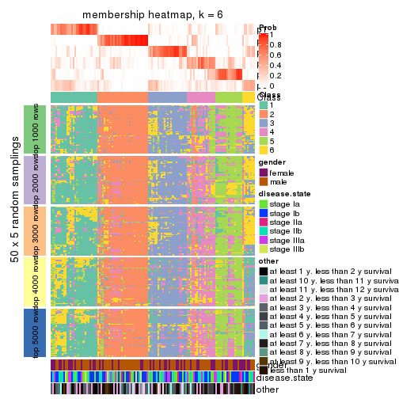
As soon as we have had the classes for columns, we can look for signatures which are significantly different between classes which can be candidate marks for certain classes. Following are the heatmaps for signatures.
Signature heatmaps where rows are scaled:
get_signatures(res, k = 2)
get_signatures(res, k = 3)
get_signatures(res, k = 4)
get_signatures(res, k = 5)
get_signatures(res, k = 6)
Signature heatmaps where rows are not scaled:
get_signatures(res, k = 2, scale_rows = FALSE)
get_signatures(res, k = 3, scale_rows = FALSE)
get_signatures(res, k = 4, scale_rows = FALSE)
get_signatures(res, k = 5, scale_rows = FALSE)
get_signatures(res, k = 6, scale_rows = FALSE)
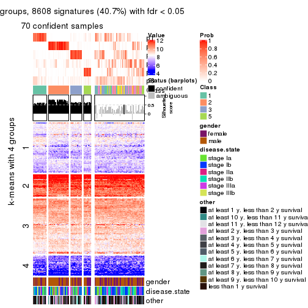
Compare the overlap of signatures from different k:
compare_signatures(res)
get_signature() returns a data frame invisibly. TO get the list of signatures, the function
call should be assigned to a variable explicitly. In following code, if plot argument is set
to FALSE, no heatmap is plotted while only the differential analysis is performed.
# code only for demonstration
tb = get_signature(res, k = ..., plot = FALSE)
An example of the output of tb is:
#> which_row fdr mean_1 mean_2 scaled_mean_1 scaled_mean_2 km
#> 1 38 0.042760348 8.373488 9.131774 -0.5533452 0.5164555 1
#> 2 40 0.018707592 7.106213 8.469186 -0.6173731 0.5762149 1
#> 3 55 0.019134737 10.221463 11.207825 -0.6159697 0.5749050 1
#> 4 59 0.006059896 5.921854 7.869574 -0.6899429 0.6439467 1
#> 5 60 0.018055526 8.928898 10.211722 -0.6204761 0.5791110 1
#> 6 98 0.009384629 15.714769 14.887706 0.6635654 -0.6193277 2
...
The columns in tb are:
which_row: row indices corresponding to the input matrix.fdr: FDR for the differential test. mean_x: The mean value in group x.scaled_mean_x: The mean value in group x after rows are scaled.km: Row groups if k-means clustering is applied to rows.UMAP plot which shows how samples are separated.
dimension_reduction(res, k = 2, method = "UMAP")
dimension_reduction(res, k = 3, method = "UMAP")
dimension_reduction(res, k = 4, method = "UMAP")
dimension_reduction(res, k = 5, method = "UMAP")
dimension_reduction(res, k = 6, method = "UMAP")
Following heatmap shows how subgroups are split when increasing k:
collect_classes(res)

Test correlation between subgroups and known annotations. If the known annotation is numeric, one-way ANOVA test is applied, and if the known annotation is discrete, chi-squared contingency table test is applied.
test_to_known_factors(res)
#> n gender(p) disease.state(p) other(p) k
#> CV:NMF 126 0.1472 0.226 0.3257 2
#> CV:NMF 102 0.3311 0.420 0.0722 3
#> CV:NMF 67 0.4587 0.764 0.1156 4
#> CV:NMF 87 0.0958 0.800 0.4915 5
#> CV:NMF 71 0.0811 0.905 0.0322 6
If matrix rows can be associated to genes, consider to use functional_enrichment(res,
...) to perform function enrichment for the signature genes. See this vignette for more detailed explanations.
The object with results only for a single top-value method and a single partition method can be extracted as:
res = res_list["MAD", "hclust"]
# you can also extract it by
# res = res_list["MAD:hclust"]
A summary of res and all the functions that can be applied to it:
res
#> A 'ConsensusPartition' object with k = 2, 3, 4, 5, 6.
#> On a matrix with 21168 rows and 130 columns.
#> Top rows (1000, 2000, 3000, 4000, 5000) are extracted by 'MAD' method.
#> Subgroups are detected by 'hclust' method.
#> Performed in total 1250 partitions by row resampling.
#> Best k for subgroups seems to be 2.
#>
#> Following methods can be applied to this 'ConsensusPartition' object:
#> [1] "cola_report" "collect_classes" "collect_plots"
#> [4] "collect_stats" "colnames" "compare_signatures"
#> [7] "consensus_heatmap" "dimension_reduction" "functional_enrichment"
#> [10] "get_anno_col" "get_anno" "get_classes"
#> [13] "get_consensus" "get_matrix" "get_membership"
#> [16] "get_param" "get_signatures" "get_stats"
#> [19] "is_best_k" "is_stable_k" "membership_heatmap"
#> [22] "ncol" "nrow" "plot_ecdf"
#> [25] "rownames" "select_partition_number" "show"
#> [28] "suggest_best_k" "test_to_known_factors"
collect_plots() function collects all the plots made from res for all k (number of partitions)
into one single page to provide an easy and fast comparison between different k.
collect_plots(res)
The plots are:
k and the heatmap of
predicted classes for each k.k.k.k.All the plots in panels can be made by individual functions and they are plotted later in this section.
select_partition_number() produces several plots showing different
statistics for choosing “optimized” k. There are following statistics:
k;k, the area increased is defined as \(A_k - A_{k-1}\).The detailed explanations of these statistics can be found in the cola vignette.
Generally speaking, lower PAC score, higher mean silhouette score or higher
concordance corresponds to better partition. Rand index and Jaccard index
measure how similar the current partition is compared to partition with k-1.
If they are too similar, we won't accept k is better than k-1.
select_partition_number(res)
The numeric values for all these statistics can be obtained by get_stats().
get_stats(res)
#> k 1-PAC mean_silhouette concordance area_increased Rand Jaccard
#> 2 2 0.210 0.644 0.820 0.4165 0.539 0.539
#> 3 3 0.202 0.486 0.695 0.3860 0.632 0.425
#> 4 4 0.311 0.496 0.675 0.1850 0.760 0.488
#> 5 5 0.406 0.424 0.610 0.0920 0.838 0.551
#> 6 6 0.501 0.483 0.649 0.0518 0.921 0.697
suggest_best_k() suggests the best \(k\) based on these statistics. The rules are as follows:
suggest_best_k(res)
#> [1] 2
Following shows the table of the partitions (You need to click the show/hide
code output link to see it). The membership matrix (columns with name p*)
is inferred by
clue::cl_consensus()
function with the SE method. Basically the value in the membership matrix
represents the probability to belong to a certain group. The finall class
label for an item is determined with the group with highest probability it
belongs to.
In get_classes() function, the entropy is calculated from the membership
matrix and the silhouette score is calculated from the consensus matrix.
cbind(get_classes(res, k = 2), get_membership(res, k = 2))
#> class entropy silhouette p1 p2
#> GSM102191 1 0.9933 0.1081 0.548 0.452
#> GSM102240 1 0.3431 0.7779 0.936 0.064
#> GSM102175 1 0.0000 0.7806 1.000 0.000
#> GSM102134 2 0.9087 0.5796 0.324 0.676
#> GSM102171 1 0.0000 0.7806 1.000 0.000
#> GSM102178 1 0.5408 0.7884 0.876 0.124
#> GSM102198 2 0.8861 0.6067 0.304 0.696
#> GSM102221 1 0.3431 0.7779 0.936 0.064
#> GSM102223 2 0.9795 0.3703 0.416 0.584
#> GSM102229 1 0.8861 0.6224 0.696 0.304
#> GSM102153 1 0.0000 0.7806 1.000 0.000
#> GSM102220 1 0.9323 0.5153 0.652 0.348
#> GSM102202 2 0.3114 0.6819 0.056 0.944
#> GSM102123 1 0.7299 0.7462 0.796 0.204
#> GSM102125 2 0.9833 0.3762 0.424 0.576
#> GSM102136 2 0.9963 0.2525 0.464 0.536
#> GSM102197 1 0.9000 0.5830 0.684 0.316
#> GSM102131 1 0.8813 0.6126 0.700 0.300
#> GSM102132 1 0.5294 0.7901 0.880 0.120
#> GSM102212 2 0.8016 0.6627 0.244 0.756
#> GSM102117 1 0.7883 0.6322 0.764 0.236
#> GSM102124 2 0.0376 0.7056 0.004 0.996
#> GSM102172 1 0.0000 0.7806 1.000 0.000
#> GSM102199 2 1.0000 0.0481 0.496 0.504
#> GSM102203 1 0.5946 0.7539 0.856 0.144
#> GSM102213 2 0.3114 0.6819 0.056 0.944
#> GSM102165 1 0.7139 0.7464 0.804 0.196
#> GSM102180 2 0.5842 0.7121 0.140 0.860
#> GSM102184 1 0.6048 0.7806 0.852 0.148
#> GSM102225 2 0.9909 0.2878 0.444 0.556
#> GSM102230 1 0.1633 0.7858 0.976 0.024
#> GSM102133 2 0.0000 0.7035 0.000 1.000
#> GSM102166 1 0.0000 0.7806 1.000 0.000
#> GSM102235 1 0.4431 0.7938 0.908 0.092
#> GSM102196 1 0.0000 0.7806 1.000 0.000
#> GSM102243 1 0.9732 0.2824 0.596 0.404
#> GSM102135 1 0.9922 0.2183 0.552 0.448
#> GSM102139 2 0.1184 0.7118 0.016 0.984
#> GSM102151 2 0.8909 0.6117 0.308 0.692
#> GSM102193 2 0.0000 0.7035 0.000 1.000
#> GSM102200 1 0.4939 0.7953 0.892 0.108
#> GSM102204 2 0.6623 0.7022 0.172 0.828
#> GSM102145 1 0.9686 0.3938 0.604 0.396
#> GSM102142 2 0.9087 0.5725 0.324 0.676
#> GSM102179 2 0.9970 0.2197 0.468 0.532
#> GSM102181 1 0.5629 0.7868 0.868 0.132
#> GSM102154 1 0.6712 0.7723 0.824 0.176
#> GSM102152 2 0.7139 0.6737 0.196 0.804
#> GSM102162 2 0.8661 0.6260 0.288 0.712
#> GSM102187 1 0.8499 0.6404 0.724 0.276
#> GSM102116 1 0.4562 0.7810 0.904 0.096
#> GSM102150 1 0.3431 0.7890 0.936 0.064
#> GSM102227 1 0.6887 0.7569 0.816 0.184
#> GSM102114 1 0.0376 0.7825 0.996 0.004
#> GSM102177 1 0.2778 0.7868 0.952 0.048
#> GSM102160 2 0.8661 0.6260 0.288 0.712
#> GSM102161 1 0.2948 0.7908 0.948 0.052
#> GSM102170 2 0.1184 0.7118 0.016 0.984
#> GSM102205 1 0.9881 0.2199 0.564 0.436
#> GSM102118 1 0.7950 0.7019 0.760 0.240
#> GSM102156 1 0.6438 0.7759 0.836 0.164
#> GSM102238 1 0.0000 0.7806 1.000 0.000
#> GSM102143 1 0.5519 0.7912 0.872 0.128
#> GSM102144 2 0.8909 0.6055 0.308 0.692
#> GSM102209 2 0.9996 0.0960 0.488 0.512
#> GSM102210 1 0.9944 0.1057 0.544 0.456
#> GSM102140 1 0.9427 0.4924 0.640 0.360
#> GSM102242 1 0.6438 0.7699 0.836 0.164
#> GSM102141 1 0.8327 0.6741 0.736 0.264
#> GSM102120 1 0.8081 0.7005 0.752 0.248
#> GSM102127 1 0.8861 0.6076 0.696 0.304
#> GSM102149 1 0.3431 0.7890 0.936 0.064
#> GSM102232 2 0.2603 0.7199 0.044 0.956
#> GSM102222 2 0.9815 0.3581 0.420 0.580
#> GSM102236 1 0.2948 0.7818 0.948 0.052
#> GSM102215 2 0.0000 0.7035 0.000 1.000
#> GSM102194 2 0.2603 0.7198 0.044 0.956
#> GSM102208 2 0.0000 0.7035 0.000 1.000
#> GSM102130 2 0.3114 0.7214 0.056 0.944
#> GSM102188 1 0.6438 0.7704 0.836 0.164
#> GSM102233 1 0.0000 0.7806 1.000 0.000
#> GSM102189 2 0.1414 0.7132 0.020 0.980
#> GSM102234 1 0.9686 0.4120 0.604 0.396
#> GSM102237 1 0.3733 0.7781 0.928 0.072
#> GSM102159 1 0.4939 0.7921 0.892 0.108
#> GSM102155 1 0.6048 0.7826 0.852 0.148
#> GSM102137 1 0.2236 0.7917 0.964 0.036
#> GSM102217 2 0.9552 0.4944 0.376 0.624
#> GSM102126 1 0.5737 0.7847 0.864 0.136
#> GSM102157 1 0.7883 0.7258 0.764 0.236
#> GSM102163 1 0.5519 0.7877 0.872 0.128
#> GSM102182 1 0.8713 0.5401 0.708 0.292
#> GSM102167 2 0.8608 0.6268 0.284 0.716
#> GSM102206 1 0.1843 0.7854 0.972 0.028
#> GSM102224 2 0.4161 0.7217 0.084 0.916
#> GSM102164 2 0.0000 0.7035 0.000 1.000
#> GSM102174 1 0.2948 0.7818 0.948 0.052
#> GSM102214 2 0.9922 0.2737 0.448 0.552
#> GSM102226 1 0.9944 0.1767 0.544 0.456
#> GSM102195 1 0.9686 0.3967 0.604 0.396
#> GSM102218 1 0.7950 0.7016 0.760 0.240
#> GSM102128 2 0.2948 0.7211 0.052 0.948
#> GSM102168 1 0.4431 0.7938 0.908 0.092
#> GSM102190 1 0.3584 0.7873 0.932 0.068
#> GSM102201 2 0.6973 0.6823 0.188 0.812
#> GSM102129 1 0.7745 0.7143 0.772 0.228
#> GSM102192 1 0.0672 0.7847 0.992 0.008
#> GSM102183 1 0.9954 0.0672 0.540 0.460
#> GSM102185 1 0.0000 0.7806 1.000 0.000
#> GSM102158 2 0.9850 0.3600 0.428 0.572
#> GSM102169 1 0.9286 0.5281 0.656 0.344
#> GSM102216 1 0.2236 0.7934 0.964 0.036
#> GSM102219 1 0.0376 0.7816 0.996 0.004
#> GSM102231 2 0.9909 0.2878 0.444 0.556
#> GSM102147 2 0.9000 0.5972 0.316 0.684
#> GSM102176 1 0.2603 0.7819 0.956 0.044
#> GSM102148 1 0.3733 0.7939 0.928 0.072
#> GSM102146 1 0.0000 0.7806 1.000 0.000
#> GSM102241 1 0.0000 0.7806 1.000 0.000
#> GSM102211 1 0.0000 0.7806 1.000 0.000
#> GSM102115 1 0.4562 0.7782 0.904 0.096
#> GSM102173 1 0.0000 0.7806 1.000 0.000
#> GSM102138 2 0.4298 0.7215 0.088 0.912
#> GSM102228 1 0.6887 0.7609 0.816 0.184
#> GSM102207 1 0.8327 0.6741 0.736 0.264
#> GSM102122 1 0.0000 0.7806 1.000 0.000
#> GSM102119 2 0.9635 0.4380 0.388 0.612
#> GSM102186 2 0.2236 0.7050 0.036 0.964
#> GSM102239 1 0.2948 0.7818 0.948 0.052
#> GSM102121 2 0.0376 0.7060 0.004 0.996
cbind(get_classes(res, k = 3), get_membership(res, k = 3))
#> class entropy silhouette p1 p2 p3
#> GSM102191 3 0.760 0.5270 0.260 0.084 0.656
#> GSM102240 1 0.442 0.7393 0.864 0.048 0.088
#> GSM102175 1 0.186 0.7695 0.948 0.000 0.052
#> GSM102134 3 0.651 0.2345 0.044 0.236 0.720
#> GSM102171 1 0.116 0.7634 0.972 0.000 0.028
#> GSM102178 1 0.627 0.1012 0.544 0.000 0.456
#> GSM102198 3 0.590 0.1747 0.024 0.232 0.744
#> GSM102221 1 0.442 0.7393 0.864 0.048 0.088
#> GSM102223 3 0.397 0.4406 0.032 0.088 0.880
#> GSM102229 3 0.716 0.5020 0.316 0.044 0.640
#> GSM102153 1 0.141 0.7666 0.964 0.000 0.036
#> GSM102220 3 0.541 0.5942 0.212 0.016 0.772
#> GSM102202 2 0.149 0.5670 0.016 0.968 0.016
#> GSM102123 3 0.663 0.2706 0.440 0.008 0.552
#> GSM102125 3 0.783 0.3753 0.156 0.172 0.672
#> GSM102136 3 0.962 0.2110 0.276 0.252 0.472
#> GSM102197 3 0.502 0.5723 0.240 0.000 0.760
#> GSM102131 3 0.581 0.5552 0.264 0.012 0.724
#> GSM102132 1 0.627 0.1083 0.544 0.000 0.456
#> GSM102212 3 0.654 -0.1819 0.016 0.344 0.640
#> GSM102117 1 0.761 0.5763 0.676 0.216 0.108
#> GSM102124 2 0.606 0.7720 0.000 0.616 0.384
#> GSM102172 1 0.210 0.7692 0.944 0.004 0.052
#> GSM102199 3 0.722 0.5367 0.140 0.144 0.716
#> GSM102203 1 0.660 0.5964 0.676 0.028 0.296
#> GSM102213 2 0.149 0.5670 0.016 0.968 0.016
#> GSM102165 3 0.606 0.3713 0.384 0.000 0.616
#> GSM102180 3 0.687 -0.5166 0.016 0.424 0.560
#> GSM102184 3 0.630 0.1365 0.472 0.000 0.528
#> GSM102225 3 0.347 0.4841 0.040 0.056 0.904
#> GSM102230 1 0.281 0.7552 0.928 0.040 0.032
#> GSM102133 2 0.604 0.7724 0.000 0.620 0.380
#> GSM102166 1 0.186 0.7696 0.948 0.000 0.052
#> GSM102235 1 0.573 0.4418 0.676 0.000 0.324
#> GSM102196 1 0.129 0.7640 0.968 0.000 0.032
#> GSM102243 3 0.754 0.4715 0.304 0.064 0.632
#> GSM102135 3 0.579 0.5952 0.148 0.060 0.792
#> GSM102139 2 0.611 0.7681 0.000 0.604 0.396
#> GSM102151 3 0.710 0.0375 0.052 0.280 0.668
#> GSM102193 2 0.604 0.7724 0.000 0.620 0.380
#> GSM102200 1 0.610 0.3543 0.608 0.000 0.392
#> GSM102204 3 0.695 -0.4247 0.020 0.408 0.572
#> GSM102145 3 0.585 0.6172 0.180 0.044 0.776
#> GSM102142 3 0.515 0.2371 0.020 0.180 0.800
#> GSM102179 3 0.813 0.4468 0.208 0.148 0.644
#> GSM102181 1 0.648 0.0581 0.544 0.004 0.452
#> GSM102154 3 0.706 0.1500 0.464 0.020 0.516
#> GSM102152 2 0.797 0.5081 0.080 0.596 0.324
#> GSM102162 3 0.647 0.0653 0.028 0.280 0.692
#> GSM102187 3 0.733 0.3589 0.388 0.036 0.576
#> GSM102116 1 0.536 0.7208 0.800 0.032 0.168
#> GSM102150 1 0.486 0.7305 0.800 0.008 0.192
#> GSM102227 3 0.641 0.3048 0.420 0.004 0.576
#> GSM102114 1 0.288 0.7585 0.904 0.000 0.096
#> GSM102177 1 0.445 0.7510 0.856 0.032 0.112
#> GSM102160 3 0.647 0.0653 0.028 0.280 0.692
#> GSM102161 1 0.459 0.7452 0.820 0.008 0.172
#> GSM102170 2 0.613 0.7640 0.000 0.600 0.400
#> GSM102205 3 0.535 0.6016 0.152 0.040 0.808
#> GSM102118 3 0.608 0.4566 0.344 0.004 0.652
#> GSM102156 3 0.679 0.1971 0.448 0.012 0.540
#> GSM102238 1 0.116 0.7634 0.972 0.000 0.028
#> GSM102143 1 0.631 -0.0298 0.500 0.000 0.500
#> GSM102144 3 0.929 -0.2812 0.160 0.396 0.444
#> GSM102209 3 0.427 0.5393 0.076 0.052 0.872
#> GSM102210 3 0.788 0.5251 0.260 0.100 0.640
#> GSM102140 3 0.558 0.6005 0.204 0.024 0.772
#> GSM102242 3 0.624 0.2428 0.440 0.000 0.560
#> GSM102141 3 0.556 0.5052 0.300 0.000 0.700
#> GSM102120 3 0.634 0.4175 0.360 0.008 0.632
#> GSM102127 3 0.522 0.5564 0.260 0.000 0.740
#> GSM102149 1 0.486 0.7315 0.800 0.008 0.192
#> GSM102232 2 0.625 0.7321 0.000 0.556 0.444
#> GSM102222 3 0.371 0.4534 0.032 0.076 0.892
#> GSM102236 1 0.412 0.7485 0.876 0.040 0.084
#> GSM102215 2 0.525 0.7230 0.000 0.736 0.264
#> GSM102194 2 0.620 0.7459 0.000 0.576 0.424
#> GSM102208 2 0.604 0.7724 0.000 0.620 0.380
#> GSM102130 2 0.625 0.7204 0.000 0.556 0.444
#> GSM102188 1 0.695 -0.0463 0.508 0.016 0.476
#> GSM102233 1 0.116 0.7634 0.972 0.000 0.028
#> GSM102189 2 0.619 0.7507 0.000 0.580 0.420
#> GSM102234 3 0.616 0.6067 0.188 0.052 0.760
#> GSM102237 1 0.369 0.7134 0.884 0.100 0.016
#> GSM102159 1 0.619 0.1810 0.580 0.000 0.420
#> GSM102155 3 0.631 0.0887 0.488 0.000 0.512
#> GSM102137 1 0.469 0.7373 0.820 0.012 0.168
#> GSM102217 2 0.973 0.1026 0.224 0.400 0.376
#> GSM102126 3 0.630 0.1142 0.480 0.000 0.520
#> GSM102157 3 0.730 0.3823 0.380 0.036 0.584
#> GSM102163 1 0.625 0.1450 0.556 0.000 0.444
#> GSM102182 1 0.767 0.4834 0.620 0.312 0.068
#> GSM102167 3 0.576 0.0712 0.016 0.244 0.740
#> GSM102206 1 0.304 0.7531 0.920 0.044 0.036
#> GSM102224 3 0.630 -0.6359 0.000 0.484 0.516
#> GSM102164 2 0.604 0.7724 0.000 0.620 0.380
#> GSM102174 1 0.412 0.7458 0.876 0.040 0.084
#> GSM102214 3 0.369 0.4923 0.048 0.056 0.896
#> GSM102226 3 0.603 0.5937 0.152 0.068 0.780
#> GSM102195 3 0.569 0.6163 0.176 0.040 0.784
#> GSM102218 3 0.603 0.4708 0.336 0.004 0.660
#> GSM102128 2 0.628 0.7085 0.000 0.540 0.460
#> GSM102168 1 0.576 0.4369 0.672 0.000 0.328
#> GSM102190 1 0.528 0.7284 0.796 0.024 0.180
#> GSM102201 2 0.715 0.5323 0.108 0.716 0.176
#> GSM102129 3 0.613 0.4469 0.352 0.004 0.644
#> GSM102192 1 0.400 0.7313 0.840 0.000 0.160
#> GSM102183 3 0.760 0.5218 0.252 0.088 0.660
#> GSM102185 1 0.116 0.7634 0.972 0.000 0.028
#> GSM102158 2 0.924 0.1750 0.352 0.484 0.164
#> GSM102169 3 0.483 0.5948 0.204 0.004 0.792
#> GSM102216 1 0.540 0.6360 0.740 0.004 0.256
#> GSM102219 1 0.327 0.7583 0.892 0.004 0.104
#> GSM102231 3 0.347 0.4841 0.040 0.056 0.904
#> GSM102147 3 0.628 0.1718 0.040 0.224 0.736
#> GSM102176 1 0.380 0.7517 0.888 0.032 0.080
#> GSM102148 1 0.614 0.2768 0.596 0.000 0.404
#> GSM102146 1 0.319 0.7634 0.896 0.004 0.100
#> GSM102241 1 0.319 0.7634 0.896 0.004 0.100
#> GSM102211 1 0.129 0.7640 0.968 0.000 0.032
#> GSM102115 1 0.561 0.7056 0.776 0.028 0.196
#> GSM102173 1 0.186 0.7695 0.948 0.000 0.052
#> GSM102138 2 0.652 0.6519 0.004 0.504 0.492
#> GSM102228 3 0.626 0.1908 0.448 0.000 0.552
#> GSM102207 3 0.556 0.5052 0.300 0.000 0.700
#> GSM102122 1 0.334 0.7465 0.880 0.000 0.120
#> GSM102119 3 0.683 0.3791 0.080 0.192 0.728
#> GSM102186 2 0.341 0.6002 0.020 0.900 0.080
#> GSM102239 1 0.412 0.7458 0.876 0.040 0.084
#> GSM102121 2 0.606 0.7718 0.000 0.616 0.384
cbind(get_classes(res, k = 4), get_membership(res, k = 4))
#> class entropy silhouette p1 p2 p3 p4
#> GSM102191 3 0.883 0.19132 0.092 0.264 0.476 0.168
#> GSM102240 1 0.478 0.57183 0.732 0.000 0.024 0.244
#> GSM102175 1 0.256 0.70992 0.912 0.000 0.056 0.032
#> GSM102134 2 0.736 0.39118 0.004 0.496 0.352 0.148
#> GSM102171 1 0.346 0.70898 0.864 0.000 0.096 0.040
#> GSM102178 3 0.567 0.53370 0.252 0.008 0.692 0.048
#> GSM102198 2 0.716 0.42171 0.000 0.512 0.340 0.148
#> GSM102221 1 0.478 0.57183 0.732 0.000 0.024 0.244
#> GSM102223 3 0.731 -0.01985 0.000 0.360 0.480 0.160
#> GSM102229 3 0.491 0.65587 0.064 0.108 0.804 0.024
#> GSM102153 1 0.288 0.71631 0.892 0.000 0.084 0.024
#> GSM102220 3 0.448 0.62545 0.020 0.112 0.824 0.044
#> GSM102202 4 0.534 0.39367 0.004 0.488 0.004 0.504
#> GSM102123 3 0.594 0.65881 0.132 0.040 0.744 0.084
#> GSM102125 2 0.831 0.18502 0.044 0.412 0.396 0.148
#> GSM102136 2 0.965 0.18413 0.196 0.376 0.260 0.168
#> GSM102197 3 0.360 0.64592 0.020 0.092 0.868 0.020
#> GSM102131 3 0.398 0.65324 0.032 0.084 0.856 0.028
#> GSM102132 3 0.547 0.55377 0.236 0.008 0.712 0.044
#> GSM102212 2 0.648 0.56681 0.000 0.616 0.272 0.112
#> GSM102117 1 0.697 0.28273 0.560 0.052 0.036 0.352
#> GSM102124 2 0.194 0.58277 0.000 0.936 0.052 0.012
#> GSM102172 1 0.293 0.70833 0.896 0.000 0.056 0.048
#> GSM102199 3 0.678 0.39228 0.016 0.268 0.620 0.096
#> GSM102203 1 0.787 0.43871 0.508 0.016 0.212 0.264
#> GSM102213 4 0.534 0.39367 0.004 0.488 0.004 0.504
#> GSM102165 3 0.308 0.67624 0.064 0.012 0.896 0.028
#> GSM102180 2 0.562 0.61614 0.012 0.732 0.188 0.068
#> GSM102184 3 0.463 0.64500 0.140 0.012 0.804 0.044
#> GSM102225 3 0.712 0.13849 0.000 0.308 0.536 0.156
#> GSM102230 1 0.417 0.69497 0.828 0.000 0.092 0.080
#> GSM102133 2 0.177 0.58108 0.000 0.944 0.044 0.012
#> GSM102166 1 0.297 0.71825 0.892 0.000 0.072 0.036
#> GSM102235 3 0.615 0.17073 0.408 0.000 0.540 0.052
#> GSM102196 1 0.324 0.71081 0.872 0.000 0.100 0.028
#> GSM102243 3 0.906 0.26316 0.136 0.224 0.476 0.164
#> GSM102135 3 0.587 0.50671 0.008 0.188 0.712 0.092
#> GSM102139 2 0.222 0.59833 0.000 0.924 0.060 0.016
#> GSM102151 2 0.755 0.50593 0.008 0.528 0.272 0.192
#> GSM102193 2 0.177 0.58108 0.000 0.944 0.044 0.012
#> GSM102200 3 0.600 0.37267 0.316 0.004 0.628 0.052
#> GSM102204 2 0.539 0.62066 0.000 0.724 0.204 0.072
#> GSM102145 3 0.513 0.56864 0.008 0.160 0.768 0.064
#> GSM102142 2 0.750 0.33226 0.004 0.464 0.372 0.160
#> GSM102179 3 0.862 -0.12060 0.068 0.380 0.408 0.144
#> GSM102181 3 0.618 0.55145 0.224 0.016 0.684 0.076
#> GSM102154 3 0.523 0.65399 0.140 0.032 0.780 0.048
#> GSM102152 2 0.766 0.15941 0.012 0.532 0.240 0.216
#> GSM102162 2 0.681 0.48000 0.000 0.560 0.320 0.120
#> GSM102187 3 0.721 0.56194 0.116 0.108 0.668 0.108
#> GSM102116 1 0.625 0.61400 0.660 0.000 0.128 0.212
#> GSM102150 1 0.656 0.62529 0.628 0.000 0.224 0.148
#> GSM102227 3 0.372 0.67672 0.100 0.016 0.860 0.024
#> GSM102114 1 0.576 0.58433 0.668 0.000 0.268 0.064
#> GSM102177 1 0.491 0.60273 0.748 0.000 0.044 0.208
#> GSM102160 2 0.681 0.48000 0.000 0.560 0.320 0.120
#> GSM102161 1 0.635 0.65004 0.656 0.000 0.192 0.152
#> GSM102170 2 0.174 0.59791 0.000 0.940 0.056 0.004
#> GSM102205 3 0.685 0.46386 0.028 0.184 0.660 0.128
#> GSM102118 3 0.363 0.67747 0.060 0.040 0.876 0.024
#> GSM102156 3 0.498 0.65602 0.140 0.036 0.792 0.032
#> GSM102238 1 0.302 0.71108 0.884 0.000 0.092 0.024
#> GSM102143 3 0.524 0.60873 0.180 0.012 0.756 0.052
#> GSM102144 2 0.845 0.37322 0.112 0.552 0.152 0.184
#> GSM102209 3 0.681 0.31262 0.000 0.248 0.596 0.156
#> GSM102210 3 0.864 0.17012 0.092 0.284 0.488 0.136
#> GSM102140 3 0.509 0.60702 0.020 0.128 0.788 0.064
#> GSM102242 3 0.375 0.66489 0.112 0.008 0.852 0.028
#> GSM102141 3 0.291 0.67021 0.028 0.044 0.908 0.020
#> GSM102120 3 0.504 0.67324 0.072 0.052 0.808 0.068
#> GSM102127 3 0.344 0.65562 0.028 0.084 0.876 0.012
#> GSM102149 1 0.674 0.61889 0.608 0.000 0.232 0.160
#> GSM102232 2 0.287 0.61700 0.000 0.884 0.104 0.012
#> GSM102222 3 0.730 0.00654 0.000 0.344 0.492 0.164
#> GSM102236 1 0.455 0.61968 0.776 0.000 0.036 0.188
#> GSM102215 2 0.310 0.37137 0.000 0.868 0.012 0.120
#> GSM102194 2 0.260 0.61207 0.000 0.908 0.068 0.024
#> GSM102208 2 0.177 0.58108 0.000 0.944 0.044 0.012
#> GSM102130 2 0.284 0.61773 0.000 0.896 0.076 0.028
#> GSM102188 3 0.673 0.57850 0.184 0.048 0.680 0.088
#> GSM102233 1 0.350 0.70734 0.860 0.000 0.104 0.036
#> GSM102189 2 0.259 0.61376 0.000 0.904 0.080 0.016
#> GSM102234 3 0.474 0.58322 0.008 0.160 0.788 0.044
#> GSM102237 1 0.540 0.63082 0.732 0.000 0.084 0.184
#> GSM102159 3 0.572 0.44462 0.296 0.000 0.652 0.052
#> GSM102155 3 0.513 0.62319 0.160 0.008 0.768 0.064
#> GSM102137 1 0.667 0.59506 0.628 0.016 0.268 0.088
#> GSM102217 2 0.923 0.15096 0.112 0.428 0.264 0.196
#> GSM102126 3 0.452 0.62981 0.156 0.008 0.800 0.036
#> GSM102157 3 0.440 0.67596 0.068 0.056 0.840 0.036
#> GSM102163 3 0.529 0.53316 0.252 0.004 0.708 0.036
#> GSM102182 4 0.580 -0.22236 0.476 0.016 0.008 0.500
#> GSM102167 2 0.707 0.43298 0.000 0.524 0.336 0.140
#> GSM102206 1 0.430 0.69192 0.820 0.000 0.096 0.084
#> GSM102224 2 0.471 0.62366 0.000 0.788 0.140 0.072
#> GSM102164 2 0.177 0.58108 0.000 0.944 0.044 0.012
#> GSM102174 1 0.461 0.58486 0.752 0.000 0.024 0.224
#> GSM102214 3 0.731 0.15261 0.004 0.304 0.532 0.160
#> GSM102226 3 0.619 0.49561 0.012 0.196 0.692 0.100
#> GSM102195 3 0.517 0.57104 0.008 0.152 0.768 0.072
#> GSM102218 3 0.412 0.67595 0.072 0.048 0.852 0.028
#> GSM102128 2 0.337 0.62533 0.000 0.868 0.096 0.036
#> GSM102168 3 0.615 0.16491 0.408 0.000 0.540 0.052
#> GSM102190 1 0.604 0.64073 0.684 0.000 0.128 0.188
#> GSM102201 2 0.834 -0.30244 0.052 0.424 0.136 0.388
#> GSM102129 3 0.410 0.67831 0.080 0.036 0.852 0.032
#> GSM102192 1 0.667 0.38247 0.528 0.000 0.380 0.092
#> GSM102183 3 0.883 0.18468 0.092 0.264 0.476 0.168
#> GSM102185 1 0.295 0.71115 0.888 0.000 0.088 0.024
#> GSM102158 4 0.906 0.34212 0.276 0.324 0.060 0.340
#> GSM102169 3 0.427 0.62150 0.012 0.108 0.832 0.048
#> GSM102216 3 0.689 -0.08971 0.432 0.008 0.480 0.080
#> GSM102219 1 0.657 0.58616 0.604 0.000 0.280 0.116
#> GSM102231 3 0.715 0.12957 0.000 0.308 0.532 0.160
#> GSM102147 2 0.767 0.42651 0.008 0.492 0.316 0.184
#> GSM102176 1 0.442 0.62406 0.784 0.000 0.032 0.184
#> GSM102148 3 0.546 0.49233 0.256 0.000 0.692 0.052
#> GSM102146 1 0.560 0.64786 0.704 0.000 0.220 0.076
#> GSM102241 1 0.560 0.64786 0.704 0.000 0.220 0.076
#> GSM102211 1 0.324 0.71081 0.872 0.000 0.100 0.028
#> GSM102115 1 0.645 0.59553 0.640 0.000 0.140 0.220
#> GSM102173 1 0.247 0.70993 0.916 0.000 0.056 0.028
#> GSM102138 2 0.466 0.61869 0.000 0.788 0.148 0.064
#> GSM102228 3 0.484 0.64717 0.160 0.028 0.788 0.024
#> GSM102207 3 0.291 0.67021 0.028 0.044 0.908 0.020
#> GSM102122 1 0.641 0.44385 0.572 0.000 0.348 0.080
#> GSM102119 3 0.675 0.12408 0.000 0.356 0.540 0.104
#> GSM102186 2 0.556 -0.48088 0.012 0.524 0.004 0.460
#> GSM102239 1 0.461 0.58486 0.752 0.000 0.024 0.224
#> GSM102121 2 0.189 0.58275 0.000 0.940 0.044 0.016
cbind(get_classes(res, k = 5), get_membership(res, k = 5))
#> class entropy silhouette p1 p2 p3 p4 p5
#> GSM102191 4 0.680 0.4536 0.088 0.004 0.284 0.560 0.064
#> GSM102240 5 0.479 0.6307 0.456 0.004 0.000 0.012 0.528
#> GSM102175 1 0.301 0.3795 0.844 0.000 0.016 0.000 0.140
#> GSM102134 4 0.580 0.5223 0.004 0.124 0.136 0.696 0.040
#> GSM102171 1 0.163 0.5174 0.940 0.000 0.044 0.000 0.016
#> GSM102178 3 0.480 0.6249 0.244 0.000 0.704 0.012 0.040
#> GSM102198 4 0.512 0.5127 0.000 0.120 0.128 0.732 0.020
#> GSM102221 5 0.479 0.6307 0.456 0.004 0.000 0.012 0.528
#> GSM102223 4 0.492 0.5694 0.004 0.024 0.232 0.712 0.028
#> GSM102229 3 0.513 0.6812 0.040 0.040 0.764 0.128 0.028
#> GSM102153 1 0.246 0.4858 0.900 0.000 0.024 0.004 0.072
#> GSM102220 3 0.394 0.6265 0.000 0.012 0.784 0.184 0.020
#> GSM102202 2 0.397 0.3636 0.004 0.768 0.000 0.024 0.204
#> GSM102123 3 0.591 0.6494 0.116 0.000 0.688 0.132 0.064
#> GSM102125 4 0.673 0.5290 0.048 0.080 0.216 0.624 0.032
#> GSM102136 4 0.899 0.2327 0.096 0.152 0.120 0.436 0.196
#> GSM102197 3 0.381 0.6650 0.012 0.008 0.812 0.152 0.016
#> GSM102131 3 0.390 0.6636 0.004 0.012 0.800 0.164 0.020
#> GSM102132 3 0.451 0.6457 0.228 0.000 0.728 0.008 0.036
#> GSM102212 4 0.577 0.3575 0.004 0.224 0.092 0.660 0.020
#> GSM102117 5 0.676 0.5390 0.348 0.132 0.008 0.016 0.496
#> GSM102124 2 0.474 0.5835 0.000 0.576 0.020 0.404 0.000
#> GSM102172 1 0.342 0.3317 0.804 0.000 0.016 0.000 0.180
#> GSM102199 3 0.668 0.1417 0.012 0.100 0.504 0.364 0.020
#> GSM102203 5 0.782 0.3757 0.300 0.008 0.060 0.208 0.424
#> GSM102213 2 0.397 0.3636 0.004 0.768 0.000 0.024 0.204
#> GSM102165 3 0.266 0.7151 0.052 0.000 0.896 0.044 0.008
#> GSM102180 4 0.593 -0.0980 0.004 0.332 0.076 0.576 0.012
#> GSM102184 3 0.414 0.7127 0.120 0.000 0.808 0.036 0.036
#> GSM102225 4 0.465 0.5352 0.004 0.000 0.280 0.684 0.032
#> GSM102230 1 0.396 0.4170 0.816 0.016 0.028 0.008 0.132
#> GSM102133 2 0.447 0.5891 0.000 0.580 0.008 0.412 0.000
#> GSM102166 1 0.272 0.4366 0.872 0.000 0.020 0.000 0.108
#> GSM102235 3 0.524 0.2769 0.440 0.000 0.520 0.004 0.036
#> GSM102196 1 0.214 0.5173 0.920 0.000 0.048 0.004 0.028
#> GSM102243 4 0.731 0.3731 0.124 0.004 0.296 0.504 0.072
#> GSM102135 3 0.545 0.3999 0.004 0.028 0.596 0.352 0.020
#> GSM102139 2 0.466 0.5728 0.000 0.552 0.008 0.436 0.004
#> GSM102151 4 0.591 0.4413 0.004 0.140 0.092 0.696 0.068
#> GSM102193 2 0.447 0.5891 0.000 0.580 0.008 0.412 0.000
#> GSM102200 3 0.615 0.4788 0.288 0.000 0.588 0.024 0.100
#> GSM102204 4 0.571 0.0441 0.000 0.332 0.088 0.576 0.004
#> GSM102145 3 0.477 0.5338 0.000 0.024 0.688 0.272 0.016
#> GSM102142 4 0.404 0.5257 0.004 0.048 0.116 0.816 0.016
#> GSM102179 4 0.745 0.4907 0.052 0.096 0.252 0.552 0.048
#> GSM102181 3 0.625 0.6215 0.168 0.008 0.668 0.076 0.080
#> GSM102154 3 0.463 0.7098 0.124 0.016 0.788 0.052 0.020
#> GSM102152 2 0.706 0.2054 0.004 0.564 0.212 0.160 0.060
#> GSM102162 4 0.500 0.4664 0.000 0.148 0.108 0.732 0.012
#> GSM102187 3 0.699 0.3116 0.108 0.004 0.536 0.292 0.060
#> GSM102116 5 0.665 0.5220 0.404 0.004 0.048 0.068 0.476
#> GSM102150 1 0.734 0.1259 0.524 0.004 0.120 0.088 0.264
#> GSM102227 3 0.328 0.7184 0.072 0.000 0.864 0.048 0.016
#> GSM102114 1 0.454 0.4199 0.712 0.000 0.240 0.000 0.048
#> GSM102177 1 0.554 -0.6095 0.480 0.004 0.012 0.032 0.472
#> GSM102160 4 0.500 0.4664 0.000 0.148 0.108 0.732 0.012
#> GSM102161 1 0.702 -0.0157 0.520 0.000 0.096 0.080 0.304
#> GSM102170 2 0.452 0.5712 0.000 0.556 0.008 0.436 0.000
#> GSM102205 4 0.616 0.1189 0.028 0.000 0.432 0.476 0.064
#> GSM102118 3 0.316 0.7089 0.020 0.000 0.868 0.084 0.028
#> GSM102156 3 0.448 0.7101 0.128 0.008 0.792 0.048 0.024
#> GSM102238 1 0.139 0.5101 0.952 0.000 0.032 0.000 0.016
#> GSM102143 3 0.500 0.6848 0.160 0.000 0.744 0.048 0.048
#> GSM102144 4 0.813 0.0259 0.048 0.292 0.052 0.452 0.156
#> GSM102209 4 0.565 0.3520 0.004 0.008 0.360 0.572 0.056
#> GSM102210 4 0.707 0.4546 0.080 0.032 0.312 0.536 0.040
#> GSM102140 3 0.466 0.5864 0.000 0.020 0.716 0.240 0.024
#> GSM102242 3 0.307 0.7172 0.084 0.000 0.872 0.028 0.016
#> GSM102141 3 0.377 0.6951 0.020 0.000 0.824 0.124 0.032
#> GSM102120 3 0.527 0.6565 0.056 0.000 0.724 0.168 0.052
#> GSM102127 3 0.374 0.6791 0.016 0.008 0.824 0.136 0.016
#> GSM102149 1 0.730 0.0991 0.508 0.000 0.120 0.092 0.280
#> GSM102232 2 0.523 0.4904 0.000 0.504 0.044 0.452 0.000
#> GSM102222 4 0.477 0.5724 0.004 0.016 0.236 0.716 0.028
#> GSM102236 1 0.481 -0.5802 0.508 0.000 0.008 0.008 0.476
#> GSM102215 2 0.466 0.5368 0.000 0.668 0.000 0.296 0.036
#> GSM102194 2 0.475 0.5024 0.000 0.496 0.016 0.488 0.000
#> GSM102208 2 0.447 0.5891 0.000 0.580 0.008 0.412 0.000
#> GSM102130 2 0.475 0.4845 0.000 0.496 0.016 0.488 0.000
#> GSM102188 3 0.663 0.5803 0.204 0.004 0.612 0.124 0.056
#> GSM102233 1 0.180 0.5184 0.932 0.000 0.048 0.000 0.020
#> GSM102189 2 0.474 0.5294 0.000 0.516 0.016 0.468 0.000
#> GSM102234 3 0.487 0.5801 0.000 0.048 0.724 0.208 0.020
#> GSM102237 1 0.517 0.2561 0.708 0.032 0.024 0.012 0.224
#> GSM102159 3 0.496 0.5241 0.332 0.000 0.632 0.012 0.024
#> GSM102155 3 0.517 0.6852 0.164 0.004 0.736 0.060 0.036
#> GSM102137 1 0.751 0.3117 0.508 0.008 0.220 0.060 0.204
#> GSM102217 2 0.945 -0.0148 0.084 0.316 0.204 0.256 0.140
#> GSM102126 3 0.378 0.7087 0.132 0.000 0.820 0.020 0.028
#> GSM102157 3 0.395 0.7124 0.056 0.036 0.840 0.060 0.008
#> GSM102163 3 0.483 0.6259 0.244 0.000 0.704 0.016 0.036
#> GSM102182 5 0.619 0.4303 0.240 0.136 0.000 0.020 0.604
#> GSM102167 4 0.475 0.4576 0.004 0.108 0.120 0.760 0.008
#> GSM102206 1 0.410 0.4091 0.804 0.016 0.028 0.008 0.144
#> GSM102224 4 0.574 -0.2854 0.000 0.392 0.048 0.540 0.020
#> GSM102164 2 0.447 0.5891 0.000 0.580 0.008 0.412 0.000
#> GSM102174 5 0.455 0.6172 0.472 0.000 0.000 0.008 0.520
#> GSM102214 4 0.479 0.5281 0.008 0.000 0.284 0.676 0.032
#> GSM102226 3 0.549 0.3569 0.008 0.032 0.584 0.364 0.012
#> GSM102195 3 0.473 0.5326 0.000 0.020 0.684 0.280 0.016
#> GSM102218 3 0.372 0.7050 0.032 0.004 0.840 0.100 0.024
#> GSM102128 4 0.479 -0.4845 0.000 0.460 0.012 0.524 0.004
#> GSM102168 3 0.530 0.2740 0.436 0.000 0.520 0.004 0.040
#> GSM102190 1 0.685 -0.3928 0.476 0.004 0.048 0.088 0.384
#> GSM102201 2 0.708 0.2745 0.024 0.600 0.100 0.072 0.204
#> GSM102129 3 0.382 0.7124 0.048 0.004 0.836 0.092 0.020
#> GSM102192 1 0.688 0.2302 0.444 0.008 0.392 0.016 0.140
#> GSM102183 4 0.699 0.4537 0.088 0.012 0.292 0.548 0.060
#> GSM102185 1 0.128 0.5088 0.956 0.000 0.032 0.000 0.012
#> GSM102158 2 0.836 -0.0787 0.132 0.344 0.008 0.176 0.340
#> GSM102169 3 0.425 0.6094 0.004 0.008 0.752 0.216 0.020
#> GSM102216 3 0.662 0.0711 0.396 0.000 0.472 0.036 0.096
#> GSM102219 1 0.683 0.3663 0.568 0.008 0.216 0.028 0.180
#> GSM102231 4 0.463 0.5400 0.004 0.000 0.276 0.688 0.032
#> GSM102147 4 0.483 0.4905 0.004 0.076 0.092 0.780 0.048
#> GSM102176 1 0.479 -0.5283 0.536 0.000 0.008 0.008 0.448
#> GSM102148 3 0.536 0.5793 0.228 0.008 0.688 0.012 0.064
#> GSM102146 1 0.650 0.3731 0.572 0.004 0.208 0.012 0.204
#> GSM102241 1 0.650 0.3731 0.572 0.004 0.208 0.012 0.204
#> GSM102211 1 0.214 0.5173 0.920 0.000 0.048 0.004 0.028
#> GSM102115 5 0.695 0.4794 0.400 0.004 0.048 0.096 0.452
#> GSM102173 1 0.287 0.3969 0.856 0.000 0.016 0.000 0.128
#> GSM102138 4 0.604 -0.3037 0.000 0.388 0.064 0.524 0.024
#> GSM102228 3 0.458 0.7089 0.140 0.004 0.780 0.048 0.028
#> GSM102207 3 0.377 0.6951 0.020 0.000 0.824 0.124 0.032
#> GSM102122 1 0.663 0.3409 0.532 0.008 0.316 0.016 0.128
#> GSM102119 4 0.609 0.2455 0.004 0.096 0.388 0.508 0.004
#> GSM102186 2 0.371 0.3838 0.004 0.792 0.000 0.020 0.184
#> GSM102239 5 0.455 0.6172 0.472 0.000 0.000 0.008 0.520
#> GSM102121 2 0.448 0.5874 0.000 0.576 0.008 0.416 0.000
cbind(get_classes(res, k = 6), get_membership(res, k = 6))
#> class entropy silhouette p1 p2 p3 p4 p5 p6
#> GSM102191 4 0.7890 0.5679 0.044 0.168 0.240 0.456 0.064 0.028
#> GSM102240 5 0.4037 0.6590 0.236 0.000 0.000 0.008 0.724 0.032
#> GSM102175 1 0.2989 0.4775 0.812 0.000 0.008 0.000 0.176 0.004
#> GSM102134 4 0.5553 0.4111 0.000 0.372 0.064 0.536 0.020 0.008
#> GSM102171 1 0.1325 0.5993 0.956 0.000 0.016 0.004 0.012 0.012
#> GSM102178 3 0.5099 0.5936 0.204 0.000 0.696 0.024 0.044 0.032
#> GSM102198 4 0.5678 0.3279 0.000 0.420 0.076 0.480 0.008 0.016
#> GSM102221 5 0.4037 0.6590 0.236 0.000 0.000 0.008 0.724 0.032
#> GSM102223 4 0.5137 0.6065 0.000 0.228 0.136 0.632 0.000 0.004
#> GSM102229 3 0.5370 0.6564 0.032 0.068 0.740 0.092 0.024 0.044
#> GSM102153 1 0.1897 0.5725 0.908 0.000 0.000 0.004 0.084 0.004
#> GSM102220 3 0.4699 0.6211 0.004 0.052 0.768 0.112 0.024 0.040
#> GSM102202 6 0.3383 0.8551 0.000 0.268 0.000 0.004 0.000 0.728
#> GSM102123 3 0.6884 0.5643 0.108 0.024 0.588 0.192 0.040 0.048
#> GSM102125 4 0.7376 0.5016 0.024 0.328 0.184 0.412 0.024 0.028
#> GSM102136 4 0.7690 0.1832 0.012 0.288 0.064 0.372 0.244 0.020
#> GSM102197 3 0.4271 0.6539 0.008 0.036 0.792 0.120 0.020 0.024
#> GSM102131 3 0.4416 0.6514 0.004 0.040 0.784 0.116 0.024 0.032
#> GSM102132 3 0.5293 0.6081 0.184 0.000 0.696 0.040 0.048 0.032
#> GSM102212 2 0.5448 -0.0684 0.000 0.532 0.052 0.388 0.012 0.016
#> GSM102117 5 0.6286 0.5791 0.176 0.024 0.008 0.020 0.596 0.176
#> GSM102124 2 0.0458 0.6626 0.000 0.984 0.016 0.000 0.000 0.000
#> GSM102172 1 0.3704 0.4254 0.744 0.000 0.008 0.000 0.232 0.016
#> GSM102199 3 0.7148 0.1242 0.004 0.164 0.452 0.300 0.016 0.064
#> GSM102203 5 0.5839 0.4845 0.096 0.000 0.008 0.300 0.568 0.028
#> GSM102213 6 0.3383 0.8551 0.000 0.268 0.000 0.004 0.000 0.728
#> GSM102165 3 0.2408 0.6883 0.024 0.008 0.912 0.028 0.012 0.016
#> GSM102180 2 0.4998 0.4660 0.000 0.700 0.052 0.204 0.024 0.020
#> GSM102184 3 0.4310 0.6841 0.088 0.012 0.804 0.036 0.028 0.032
#> GSM102225 4 0.5028 0.6271 0.000 0.176 0.164 0.656 0.000 0.004
#> GSM102230 1 0.4619 0.4747 0.748 0.000 0.020 0.032 0.160 0.040
#> GSM102133 2 0.0000 0.6617 0.000 1.000 0.000 0.000 0.000 0.000
#> GSM102166 1 0.2699 0.5311 0.856 0.000 0.012 0.000 0.124 0.008
#> GSM102235 3 0.5830 0.2060 0.424 0.000 0.480 0.024 0.040 0.032
#> GSM102196 1 0.1905 0.5991 0.932 0.000 0.016 0.012 0.020 0.020
#> GSM102243 4 0.8235 0.5447 0.076 0.140 0.248 0.432 0.076 0.028
#> GSM102135 3 0.6264 0.3951 0.000 0.104 0.560 0.276 0.020 0.040
#> GSM102139 2 0.0858 0.6723 0.000 0.968 0.000 0.028 0.000 0.004
#> GSM102151 4 0.6033 0.2609 0.000 0.384 0.036 0.504 0.036 0.040
#> GSM102193 2 0.0000 0.6617 0.000 1.000 0.000 0.000 0.000 0.000
#> GSM102200 3 0.6904 0.4434 0.224 0.000 0.540 0.076 0.128 0.032
#> GSM102204 2 0.4618 0.4017 0.000 0.688 0.056 0.240 0.000 0.016
#> GSM102145 3 0.5745 0.5358 0.000 0.092 0.660 0.180 0.024 0.044
#> GSM102142 4 0.5321 0.4163 0.000 0.384 0.056 0.540 0.012 0.008
#> GSM102179 4 0.7834 0.4673 0.028 0.332 0.216 0.352 0.040 0.032
#> GSM102181 3 0.7109 0.5335 0.152 0.008 0.568 0.148 0.064 0.060
#> GSM102154 3 0.5028 0.6735 0.092 0.020 0.756 0.080 0.028 0.024
#> GSM102152 2 0.7461 -0.3834 0.000 0.372 0.204 0.088 0.016 0.320
#> GSM102162 2 0.5606 -0.2758 0.000 0.460 0.068 0.448 0.008 0.016
#> GSM102187 3 0.7374 0.1748 0.068 0.068 0.504 0.280 0.052 0.028
#> GSM102116 5 0.5552 0.6279 0.192 0.004 0.024 0.128 0.648 0.004
#> GSM102150 1 0.7330 -0.0400 0.388 0.000 0.064 0.188 0.336 0.024
#> GSM102227 3 0.3132 0.6907 0.032 0.012 0.876 0.040 0.012 0.028
#> GSM102114 1 0.5404 0.4809 0.680 0.000 0.192 0.024 0.072 0.032
#> GSM102177 5 0.4599 0.6608 0.236 0.000 0.008 0.052 0.696 0.008
#> GSM102160 2 0.5606 -0.2758 0.000 0.460 0.068 0.448 0.008 0.016
#> GSM102161 5 0.7128 0.1260 0.376 0.000 0.048 0.152 0.392 0.032
#> GSM102170 2 0.0632 0.6728 0.000 0.976 0.000 0.024 0.000 0.000
#> GSM102205 4 0.6198 0.3762 0.016 0.084 0.340 0.528 0.016 0.016
#> GSM102118 3 0.3841 0.6868 0.028 0.008 0.832 0.072 0.020 0.040
#> GSM102156 3 0.4732 0.6763 0.080 0.020 0.780 0.064 0.036 0.020
#> GSM102238 1 0.0717 0.5938 0.976 0.000 0.008 0.000 0.016 0.000
#> GSM102143 3 0.5797 0.6414 0.108 0.008 0.696 0.096 0.052 0.040
#> GSM102144 2 0.7690 0.0882 0.020 0.452 0.028 0.264 0.160 0.076
#> GSM102209 4 0.5679 0.5503 0.000 0.124 0.252 0.600 0.008 0.016
#> GSM102210 4 0.7823 0.5523 0.052 0.208 0.276 0.408 0.028 0.028
#> GSM102140 3 0.5324 0.5889 0.004 0.064 0.708 0.160 0.024 0.040
#> GSM102242 3 0.2845 0.6885 0.044 0.008 0.888 0.028 0.008 0.024
#> GSM102141 3 0.4037 0.6748 0.012 0.012 0.808 0.112 0.024 0.032
#> GSM102120 3 0.5962 0.5854 0.024 0.024 0.652 0.204 0.032 0.064
#> GSM102127 3 0.3963 0.6667 0.008 0.036 0.816 0.100 0.016 0.024
#> GSM102149 1 0.7395 -0.1104 0.364 0.000 0.056 0.212 0.340 0.028
#> GSM102232 2 0.2375 0.6629 0.000 0.896 0.036 0.060 0.000 0.008
#> GSM102222 4 0.5143 0.6184 0.000 0.212 0.132 0.648 0.004 0.004
#> GSM102236 5 0.4284 0.6257 0.292 0.000 0.008 0.008 0.676 0.016
#> GSM102215 2 0.2949 0.4355 0.000 0.832 0.000 0.028 0.000 0.140
#> GSM102194 2 0.1812 0.6716 0.000 0.912 0.008 0.080 0.000 0.000
#> GSM102208 2 0.0000 0.6617 0.000 1.000 0.000 0.000 0.000 0.000
#> GSM102130 2 0.1956 0.6668 0.000 0.908 0.008 0.080 0.000 0.004
#> GSM102188 3 0.6794 0.5276 0.160 0.016 0.588 0.156 0.048 0.032
#> GSM102233 1 0.1312 0.6005 0.956 0.000 0.020 0.008 0.004 0.012
#> GSM102189 2 0.1820 0.6778 0.000 0.924 0.008 0.056 0.000 0.012
#> GSM102234 3 0.5486 0.5805 0.004 0.092 0.704 0.132 0.024 0.044
#> GSM102237 1 0.5829 0.3602 0.652 0.000 0.016 0.048 0.152 0.132
#> GSM102159 3 0.5435 0.4849 0.304 0.000 0.608 0.028 0.036 0.024
#> GSM102155 3 0.5290 0.6552 0.128 0.008 0.724 0.080 0.028 0.032
#> GSM102137 1 0.8244 0.2832 0.420 0.012 0.156 0.124 0.224 0.064
#> GSM102217 2 0.9187 -0.2217 0.044 0.296 0.156 0.228 0.080 0.196
#> GSM102126 3 0.3739 0.6809 0.096 0.004 0.828 0.032 0.020 0.020
#> GSM102157 3 0.3430 0.6877 0.028 0.048 0.860 0.036 0.012 0.016
#> GSM102163 3 0.5090 0.5971 0.212 0.000 0.692 0.032 0.024 0.040
#> GSM102182 5 0.6041 0.4201 0.104 0.000 0.004 0.040 0.540 0.312
#> GSM102167 2 0.5908 -0.2718 0.000 0.464 0.076 0.424 0.012 0.024
#> GSM102206 1 0.4679 0.4703 0.740 0.000 0.020 0.028 0.168 0.044
#> GSM102224 2 0.4228 0.5577 0.000 0.740 0.020 0.204 0.004 0.032
#> GSM102164 2 0.0000 0.6617 0.000 1.000 0.000 0.000 0.000 0.000
#> GSM102174 5 0.3215 0.6672 0.240 0.000 0.000 0.000 0.756 0.004
#> GSM102214 4 0.5165 0.6286 0.004 0.172 0.168 0.652 0.000 0.004
#> GSM102226 3 0.6150 0.3651 0.000 0.100 0.556 0.292 0.016 0.036
#> GSM102195 3 0.5712 0.5376 0.000 0.084 0.660 0.188 0.024 0.044
#> GSM102218 3 0.4064 0.6810 0.028 0.024 0.824 0.072 0.024 0.028
#> GSM102128 2 0.2637 0.6549 0.000 0.872 0.008 0.096 0.000 0.024
#> GSM102168 3 0.5881 0.2020 0.420 0.000 0.480 0.024 0.044 0.032
#> GSM102190 5 0.6051 0.4839 0.316 0.000 0.016 0.140 0.520 0.008
#> GSM102201 6 0.7216 0.6777 0.008 0.204 0.092 0.092 0.056 0.548
#> GSM102129 3 0.3701 0.6877 0.032 0.024 0.844 0.064 0.020 0.016
#> GSM102192 1 0.8004 0.2220 0.368 0.000 0.316 0.096 0.140 0.080
#> GSM102183 4 0.7917 0.5690 0.044 0.180 0.248 0.440 0.064 0.024
#> GSM102185 1 0.0972 0.5928 0.964 0.000 0.008 0.000 0.028 0.000
#> GSM102158 5 0.7953 -0.2542 0.032 0.272 0.004 0.100 0.356 0.236
#> GSM102169 3 0.4928 0.6062 0.004 0.048 0.736 0.156 0.024 0.032
#> GSM102216 3 0.7665 0.0858 0.304 0.004 0.432 0.116 0.084 0.060
#> GSM102219 1 0.8070 0.2988 0.432 0.000 0.144 0.148 0.196 0.080
#> GSM102231 4 0.4997 0.6275 0.000 0.176 0.160 0.660 0.000 0.004
#> GSM102147 4 0.5194 0.3398 0.000 0.380 0.020 0.556 0.036 0.008
#> GSM102176 5 0.4387 0.5776 0.344 0.000 0.008 0.016 0.628 0.004
#> GSM102148 3 0.6387 0.5177 0.188 0.000 0.616 0.080 0.052 0.064
#> GSM102146 1 0.7512 0.3295 0.472 0.000 0.148 0.076 0.244 0.060
#> GSM102241 1 0.7512 0.3295 0.472 0.000 0.148 0.076 0.244 0.060
#> GSM102211 1 0.1905 0.5991 0.932 0.000 0.016 0.012 0.020 0.020
#> GSM102115 5 0.5715 0.5987 0.188 0.000 0.020 0.164 0.620 0.008
#> GSM102173 1 0.2848 0.4964 0.828 0.000 0.008 0.000 0.160 0.004
#> GSM102138 2 0.4439 0.5633 0.000 0.740 0.040 0.184 0.004 0.032
#> GSM102228 3 0.4768 0.6801 0.104 0.012 0.772 0.048 0.032 0.032
#> GSM102207 3 0.4037 0.6748 0.012 0.012 0.808 0.112 0.024 0.032
#> GSM102122 1 0.7861 0.3672 0.456 0.000 0.224 0.112 0.112 0.096
#> GSM102119 3 0.6955 -0.2987 0.000 0.312 0.340 0.308 0.012 0.028
#> GSM102186 6 0.4787 0.7880 0.000 0.340 0.000 0.020 0.032 0.608
#> GSM102239 5 0.3215 0.6672 0.240 0.000 0.000 0.000 0.756 0.004
#> GSM102121 2 0.0146 0.6635 0.000 0.996 0.000 0.004 0.000 0.000
Heatmaps for the consensus matrix. It visualizes the probability of two samples to be in a same group.
consensus_heatmap(res, k = 2)
consensus_heatmap(res, k = 3)
consensus_heatmap(res, k = 4)
consensus_heatmap(res, k = 5)
consensus_heatmap(res, k = 6)
Heatmaps for the membership of samples in all partitions to see how consistent they are:
membership_heatmap(res, k = 2)
membership_heatmap(res, k = 3)
membership_heatmap(res, k = 4)
membership_heatmap(res, k = 5)
membership_heatmap(res, k = 6)
As soon as we have had the classes for columns, we can look for signatures which are significantly different between classes which can be candidate marks for certain classes. Following are the heatmaps for signatures.
Signature heatmaps where rows are scaled:
get_signatures(res, k = 2)
get_signatures(res, k = 3)
get_signatures(res, k = 4)
get_signatures(res, k = 5)
get_signatures(res, k = 6)
Signature heatmaps where rows are not scaled:
get_signatures(res, k = 2, scale_rows = FALSE)
get_signatures(res, k = 3, scale_rows = FALSE)
get_signatures(res, k = 4, scale_rows = FALSE)
get_signatures(res, k = 5, scale_rows = FALSE)
get_signatures(res, k = 6, scale_rows = FALSE)
Compare the overlap of signatures from different k:
compare_signatures(res)
get_signature() returns a data frame invisibly. TO get the list of signatures, the function
call should be assigned to a variable explicitly. In following code, if plot argument is set
to FALSE, no heatmap is plotted while only the differential analysis is performed.
# code only for demonstration
tb = get_signature(res, k = ..., plot = FALSE)
An example of the output of tb is:
#> which_row fdr mean_1 mean_2 scaled_mean_1 scaled_mean_2 km
#> 1 38 0.042760348 8.373488 9.131774 -0.5533452 0.5164555 1
#> 2 40 0.018707592 7.106213 8.469186 -0.6173731 0.5762149 1
#> 3 55 0.019134737 10.221463 11.207825 -0.6159697 0.5749050 1
#> 4 59 0.006059896 5.921854 7.869574 -0.6899429 0.6439467 1
#> 5 60 0.018055526 8.928898 10.211722 -0.6204761 0.5791110 1
#> 6 98 0.009384629 15.714769 14.887706 0.6635654 -0.6193277 2
...
The columns in tb are:
which_row: row indices corresponding to the input matrix.fdr: FDR for the differential test. mean_x: The mean value in group x.scaled_mean_x: The mean value in group x after rows are scaled.km: Row groups if k-means clustering is applied to rows.UMAP plot which shows how samples are separated.
dimension_reduction(res, k = 2, method = "UMAP")
dimension_reduction(res, k = 3, method = "UMAP")
dimension_reduction(res, k = 4, method = "UMAP")
dimension_reduction(res, k = 5, method = "UMAP")
dimension_reduction(res, k = 6, method = "UMAP")

Following heatmap shows how subgroups are split when increasing k:
collect_classes(res)
Test correlation between subgroups and known annotations. If the known annotation is numeric, one-way ANOVA test is applied, and if the known annotation is discrete, chi-squared contingency table test is applied.
test_to_known_factors(res)
#> n gender(p) disease.state(p) other(p) k
#> MAD:hclust 106 0.251 0.2876 0.140 2
#> MAD:hclust 77 0.353 0.0879 0.355 3
#> MAD:hclust 86 0.386 0.0372 0.375 4
#> MAD:hclust 67 0.772 0.6145 0.196 5
#> MAD:hclust 82 0.949 0.6487 0.346 6
If matrix rows can be associated to genes, consider to use functional_enrichment(res,
...) to perform function enrichment for the signature genes. See this vignette for more detailed explanations.
The object with results only for a single top-value method and a single partition method can be extracted as:
res = res_list["MAD", "kmeans"]
# you can also extract it by
# res = res_list["MAD:kmeans"]
A summary of res and all the functions that can be applied to it:
res
#> A 'ConsensusPartition' object with k = 2, 3, 4, 5, 6.
#> On a matrix with 21168 rows and 130 columns.
#> Top rows (1000, 2000, 3000, 4000, 5000) are extracted by 'MAD' method.
#> Subgroups are detected by 'kmeans' method.
#> Performed in total 1250 partitions by row resampling.
#> Best k for subgroups seems to be 2.
#>
#> Following methods can be applied to this 'ConsensusPartition' object:
#> [1] "cola_report" "collect_classes" "collect_plots"
#> [4] "collect_stats" "colnames" "compare_signatures"
#> [7] "consensus_heatmap" "dimension_reduction" "functional_enrichment"
#> [10] "get_anno_col" "get_anno" "get_classes"
#> [13] "get_consensus" "get_matrix" "get_membership"
#> [16] "get_param" "get_signatures" "get_stats"
#> [19] "is_best_k" "is_stable_k" "membership_heatmap"
#> [22] "ncol" "nrow" "plot_ecdf"
#> [25] "rownames" "select_partition_number" "show"
#> [28] "suggest_best_k" "test_to_known_factors"
collect_plots() function collects all the plots made from res for all k (number of partitions)
into one single page to provide an easy and fast comparison between different k.
collect_plots(res)

The plots are:
k and the heatmap of
predicted classes for each k.k.k.k.All the plots in panels can be made by individual functions and they are plotted later in this section.
select_partition_number() produces several plots showing different
statistics for choosing “optimized” k. There are following statistics:
k;k, the area increased is defined as \(A_k - A_{k-1}\).The detailed explanations of these statistics can be found in the cola vignette.
Generally speaking, lower PAC score, higher mean silhouette score or higher
concordance corresponds to better partition. Rand index and Jaccard index
measure how similar the current partition is compared to partition with k-1.
If they are too similar, we won't accept k is better than k-1.
select_partition_number(res)
The numeric values for all these statistics can be obtained by get_stats().
get_stats(res)
#> k 1-PAC mean_silhouette concordance area_increased Rand Jaccard
#> 2 2 0.703 0.902 0.953 0.4758 0.527 0.527
#> 3 3 0.729 0.875 0.913 0.3823 0.685 0.463
#> 4 4 0.675 0.659 0.825 0.1163 0.916 0.762
#> 5 5 0.647 0.596 0.773 0.0679 0.863 0.566
#> 6 6 0.674 0.529 0.727 0.0442 0.939 0.739
suggest_best_k() suggests the best \(k\) based on these statistics. The rules are as follows:
suggest_best_k(res)
#> [1] 2
Following shows the table of the partitions (You need to click the show/hide
code output link to see it). The membership matrix (columns with name p*)
is inferred by
clue::cl_consensus()
function with the SE method. Basically the value in the membership matrix
represents the probability to belong to a certain group. The finall class
label for an item is determined with the group with highest probability it
belongs to.
In get_classes() function, the entropy is calculated from the membership
matrix and the silhouette score is calculated from the consensus matrix.
cbind(get_classes(res, k = 2), get_membership(res, k = 2))
#> class entropy silhouette p1 p2
#> GSM102191 2 0.0000 0.944 0.000 1.000
#> GSM102240 1 0.0672 0.950 0.992 0.008
#> GSM102175 1 0.0000 0.956 1.000 0.000
#> GSM102134 2 0.0000 0.944 0.000 1.000
#> GSM102171 1 0.0000 0.956 1.000 0.000
#> GSM102178 1 0.7674 0.711 0.776 0.224
#> GSM102198 2 0.0000 0.944 0.000 1.000
#> GSM102221 1 0.0000 0.956 1.000 0.000
#> GSM102223 2 0.0000 0.944 0.000 1.000
#> GSM102229 2 0.6247 0.837 0.156 0.844
#> GSM102153 1 0.0000 0.956 1.000 0.000
#> GSM102220 2 0.0672 0.941 0.008 0.992
#> GSM102202 2 0.0000 0.944 0.000 1.000
#> GSM102123 1 0.3584 0.900 0.932 0.068
#> GSM102125 2 0.0000 0.944 0.000 1.000
#> GSM102136 2 0.0000 0.944 0.000 1.000
#> GSM102197 2 0.2603 0.921 0.044 0.956
#> GSM102131 2 0.5737 0.854 0.136 0.864
#> GSM102132 1 0.1184 0.945 0.984 0.016
#> GSM102212 2 0.0000 0.944 0.000 1.000
#> GSM102117 2 0.6801 0.815 0.180 0.820
#> GSM102124 2 0.0000 0.944 0.000 1.000
#> GSM102172 1 0.0000 0.956 1.000 0.000
#> GSM102199 2 0.0000 0.944 0.000 1.000
#> GSM102203 1 0.5946 0.815 0.856 0.144
#> GSM102213 2 0.6048 0.812 0.148 0.852
#> GSM102165 2 0.6531 0.825 0.168 0.832
#> GSM102180 2 0.0000 0.944 0.000 1.000
#> GSM102184 2 0.6623 0.821 0.172 0.828
#> GSM102225 2 0.0000 0.944 0.000 1.000
#> GSM102230 1 0.0000 0.956 1.000 0.000
#> GSM102133 2 0.0000 0.944 0.000 1.000
#> GSM102166 1 0.0000 0.956 1.000 0.000
#> GSM102235 1 0.0376 0.954 0.996 0.004
#> GSM102196 1 0.0000 0.956 1.000 0.000
#> GSM102243 1 0.2948 0.915 0.948 0.052
#> GSM102135 2 0.0000 0.944 0.000 1.000
#> GSM102139 2 0.0000 0.944 0.000 1.000
#> GSM102151 2 0.0000 0.944 0.000 1.000
#> GSM102193 2 0.0000 0.944 0.000 1.000
#> GSM102200 1 0.0000 0.956 1.000 0.000
#> GSM102204 2 0.0000 0.944 0.000 1.000
#> GSM102145 2 0.0000 0.944 0.000 1.000
#> GSM102142 2 0.0000 0.944 0.000 1.000
#> GSM102179 2 0.0000 0.944 0.000 1.000
#> GSM102181 2 0.6623 0.821 0.172 0.828
#> GSM102154 2 0.6438 0.829 0.164 0.836
#> GSM102152 2 0.0000 0.944 0.000 1.000
#> GSM102162 2 0.0000 0.944 0.000 1.000
#> GSM102187 2 0.1414 0.935 0.020 0.980
#> GSM102116 1 0.0376 0.954 0.996 0.004
#> GSM102150 1 0.0000 0.956 1.000 0.000
#> GSM102227 2 0.0938 0.939 0.012 0.988
#> GSM102114 1 0.0000 0.956 1.000 0.000
#> GSM102177 1 0.0000 0.956 1.000 0.000
#> GSM102160 2 0.0000 0.944 0.000 1.000
#> GSM102161 1 0.0000 0.956 1.000 0.000
#> GSM102170 2 0.0000 0.944 0.000 1.000
#> GSM102205 2 0.6712 0.816 0.176 0.824
#> GSM102118 1 0.8443 0.625 0.728 0.272
#> GSM102156 2 0.6623 0.821 0.172 0.828
#> GSM102238 1 0.0000 0.956 1.000 0.000
#> GSM102143 2 0.6531 0.825 0.168 0.832
#> GSM102144 2 0.0000 0.944 0.000 1.000
#> GSM102209 2 0.0000 0.944 0.000 1.000
#> GSM102210 2 0.1414 0.935 0.020 0.980
#> GSM102140 2 0.0672 0.941 0.008 0.992
#> GSM102242 2 0.6712 0.816 0.176 0.824
#> GSM102141 2 0.6438 0.829 0.164 0.836
#> GSM102120 2 0.5519 0.861 0.128 0.872
#> GSM102127 2 0.6438 0.829 0.164 0.836
#> GSM102149 1 0.0000 0.956 1.000 0.000
#> GSM102232 2 0.0000 0.944 0.000 1.000
#> GSM102222 2 0.0000 0.944 0.000 1.000
#> GSM102236 1 0.0000 0.956 1.000 0.000
#> GSM102215 2 0.0000 0.944 0.000 1.000
#> GSM102194 2 0.0000 0.944 0.000 1.000
#> GSM102208 2 0.0000 0.944 0.000 1.000
#> GSM102130 2 0.0000 0.944 0.000 1.000
#> GSM102188 1 0.7602 0.717 0.780 0.220
#> GSM102233 1 0.0000 0.956 1.000 0.000
#> GSM102189 2 0.0000 0.944 0.000 1.000
#> GSM102234 2 0.0000 0.944 0.000 1.000
#> GSM102237 1 0.0000 0.956 1.000 0.000
#> GSM102159 1 0.7602 0.717 0.780 0.220
#> GSM102155 2 0.9896 0.269 0.440 0.560
#> GSM102137 2 0.8144 0.689 0.252 0.748
#> GSM102217 2 0.0000 0.944 0.000 1.000
#> GSM102126 2 0.9661 0.411 0.392 0.608
#> GSM102157 2 0.0000 0.944 0.000 1.000
#> GSM102163 1 0.0000 0.956 1.000 0.000
#> GSM102182 1 0.0000 0.956 1.000 0.000
#> GSM102167 2 0.0000 0.944 0.000 1.000
#> GSM102206 1 0.0000 0.956 1.000 0.000
#> GSM102224 2 0.0000 0.944 0.000 1.000
#> GSM102164 2 0.0000 0.944 0.000 1.000
#> GSM102174 1 0.0000 0.956 1.000 0.000
#> GSM102214 2 0.0376 0.942 0.004 0.996
#> GSM102226 2 0.0000 0.944 0.000 1.000
#> GSM102195 2 0.0000 0.944 0.000 1.000
#> GSM102218 2 0.6531 0.825 0.168 0.832
#> GSM102128 2 0.0000 0.944 0.000 1.000
#> GSM102168 1 0.0000 0.956 1.000 0.000
#> GSM102190 1 0.0000 0.956 1.000 0.000
#> GSM102201 2 0.1184 0.935 0.016 0.984
#> GSM102129 2 0.0938 0.939 0.012 0.988
#> GSM102192 1 0.0000 0.956 1.000 0.000
#> GSM102183 2 0.2043 0.929 0.032 0.968
#> GSM102185 1 0.0000 0.956 1.000 0.000
#> GSM102158 2 0.6048 0.812 0.148 0.852
#> GSM102169 2 0.0938 0.939 0.012 0.988
#> GSM102216 1 0.0000 0.956 1.000 0.000
#> GSM102219 1 0.0000 0.956 1.000 0.000
#> GSM102231 2 0.0000 0.944 0.000 1.000
#> GSM102147 2 0.0000 0.944 0.000 1.000
#> GSM102176 1 0.0000 0.956 1.000 0.000
#> GSM102148 1 0.7950 0.684 0.760 0.240
#> GSM102146 1 0.0000 0.956 1.000 0.000
#> GSM102241 1 0.0000 0.956 1.000 0.000
#> GSM102211 1 0.0000 0.956 1.000 0.000
#> GSM102115 1 0.0000 0.956 1.000 0.000
#> GSM102173 1 0.0000 0.956 1.000 0.000
#> GSM102138 2 0.0000 0.944 0.000 1.000
#> GSM102228 1 0.9833 0.175 0.576 0.424
#> GSM102207 2 0.6438 0.829 0.164 0.836
#> GSM102122 1 0.0000 0.956 1.000 0.000
#> GSM102119 2 0.0000 0.944 0.000 1.000
#> GSM102186 2 0.0000 0.944 0.000 1.000
#> GSM102239 1 0.0000 0.956 1.000 0.000
#> GSM102121 2 0.0000 0.944 0.000 1.000
cbind(get_classes(res, k = 3), get_membership(res, k = 3))
#> class entropy silhouette p1 p2 p3
#> GSM102191 2 0.1129 0.9495 0.004 0.976 0.020
#> GSM102240 1 0.0892 0.8967 0.980 0.020 0.000
#> GSM102175 1 0.3116 0.9274 0.892 0.000 0.108
#> GSM102134 2 0.0983 0.9487 0.004 0.980 0.016
#> GSM102171 1 0.3267 0.9261 0.884 0.000 0.116
#> GSM102178 3 0.0592 0.8636 0.012 0.000 0.988
#> GSM102198 2 0.1129 0.9495 0.004 0.976 0.020
#> GSM102221 1 0.0424 0.9030 0.992 0.008 0.000
#> GSM102223 2 0.0892 0.9503 0.000 0.980 0.020
#> GSM102229 3 0.2878 0.9107 0.000 0.096 0.904
#> GSM102153 1 0.3116 0.9276 0.892 0.000 0.108
#> GSM102220 3 0.3192 0.9035 0.000 0.112 0.888
#> GSM102202 2 0.3116 0.8586 0.108 0.892 0.000
#> GSM102123 3 0.0892 0.8561 0.020 0.000 0.980
#> GSM102125 2 0.0892 0.9503 0.000 0.980 0.020
#> GSM102136 2 0.1337 0.9454 0.012 0.972 0.016
#> GSM102197 3 0.2625 0.9133 0.000 0.084 0.916
#> GSM102131 3 0.2625 0.9133 0.000 0.084 0.916
#> GSM102132 3 0.0892 0.8561 0.020 0.000 0.980
#> GSM102212 2 0.0892 0.9503 0.000 0.980 0.020
#> GSM102117 2 0.3851 0.8381 0.136 0.860 0.004
#> GSM102124 2 0.0892 0.9503 0.000 0.980 0.020
#> GSM102172 1 0.2878 0.9271 0.904 0.000 0.096
#> GSM102199 2 0.3267 0.8584 0.000 0.884 0.116
#> GSM102203 1 0.0592 0.9010 0.988 0.012 0.000
#> GSM102213 2 0.3412 0.8473 0.124 0.876 0.000
#> GSM102165 3 0.2537 0.9137 0.000 0.080 0.920
#> GSM102180 2 0.0892 0.9503 0.000 0.980 0.020
#> GSM102184 3 0.2261 0.9108 0.000 0.068 0.932
#> GSM102225 3 0.6057 0.5638 0.004 0.340 0.656
#> GSM102230 1 0.3192 0.9268 0.888 0.000 0.112
#> GSM102133 2 0.0892 0.9503 0.000 0.980 0.020
#> GSM102166 1 0.3267 0.9261 0.884 0.000 0.116
#> GSM102235 3 0.0892 0.8561 0.020 0.000 0.980
#> GSM102196 1 0.3267 0.9261 0.884 0.000 0.116
#> GSM102243 1 0.7400 0.2921 0.552 0.036 0.412
#> GSM102135 2 0.5397 0.5963 0.000 0.720 0.280
#> GSM102139 2 0.0424 0.9461 0.000 0.992 0.008
#> GSM102151 2 0.0848 0.9428 0.008 0.984 0.008
#> GSM102193 2 0.0892 0.9503 0.000 0.980 0.020
#> GSM102200 3 0.4654 0.6326 0.208 0.000 0.792
#> GSM102204 2 0.0892 0.9503 0.000 0.980 0.020
#> GSM102145 3 0.3267 0.9013 0.000 0.116 0.884
#> GSM102142 2 0.1129 0.9495 0.004 0.976 0.020
#> GSM102179 2 0.5178 0.6280 0.000 0.744 0.256
#> GSM102181 3 0.2448 0.9133 0.000 0.076 0.924
#> GSM102154 3 0.2537 0.9137 0.000 0.080 0.920
#> GSM102152 2 0.1643 0.9279 0.000 0.956 0.044
#> GSM102162 2 0.0892 0.9503 0.000 0.980 0.020
#> GSM102187 3 0.3425 0.9020 0.004 0.112 0.884
#> GSM102116 1 0.1337 0.8972 0.972 0.012 0.016
#> GSM102150 1 0.3038 0.9276 0.896 0.000 0.104
#> GSM102227 3 0.3116 0.9056 0.000 0.108 0.892
#> GSM102114 1 0.3267 0.9261 0.884 0.000 0.116
#> GSM102177 1 0.0424 0.9030 0.992 0.008 0.000
#> GSM102160 2 0.1129 0.9495 0.004 0.976 0.020
#> GSM102161 1 0.1753 0.9196 0.952 0.000 0.048
#> GSM102170 2 0.0892 0.9503 0.000 0.980 0.020
#> GSM102205 3 0.2448 0.9133 0.000 0.076 0.924
#> GSM102118 3 0.1015 0.8695 0.012 0.008 0.980
#> GSM102156 3 0.2448 0.9133 0.000 0.076 0.924
#> GSM102238 1 0.3267 0.9261 0.884 0.000 0.116
#> GSM102143 3 0.2448 0.9133 0.000 0.076 0.924
#> GSM102144 2 0.2711 0.8768 0.088 0.912 0.000
#> GSM102209 2 0.6008 0.4751 0.004 0.664 0.332
#> GSM102210 3 0.3500 0.9000 0.004 0.116 0.880
#> GSM102140 3 0.3192 0.9035 0.000 0.112 0.888
#> GSM102242 3 0.1860 0.9043 0.000 0.052 0.948
#> GSM102141 3 0.2537 0.9137 0.000 0.080 0.920
#> GSM102120 3 0.2625 0.9133 0.000 0.084 0.916
#> GSM102127 3 0.2537 0.9137 0.000 0.080 0.920
#> GSM102149 1 0.2878 0.9273 0.904 0.000 0.096
#> GSM102232 2 0.0892 0.9503 0.000 0.980 0.020
#> GSM102222 2 0.1129 0.9495 0.004 0.976 0.020
#> GSM102236 1 0.0475 0.9058 0.992 0.004 0.004
#> GSM102215 2 0.0424 0.9461 0.000 0.992 0.008
#> GSM102194 2 0.0892 0.9503 0.000 0.980 0.020
#> GSM102208 2 0.0892 0.9503 0.000 0.980 0.020
#> GSM102130 2 0.0892 0.9503 0.000 0.980 0.020
#> GSM102188 3 0.0592 0.8636 0.012 0.000 0.988
#> GSM102233 1 0.3267 0.9261 0.884 0.000 0.116
#> GSM102189 2 0.0892 0.9503 0.000 0.980 0.020
#> GSM102234 3 0.3267 0.9013 0.000 0.116 0.884
#> GSM102237 1 0.2959 0.9276 0.900 0.000 0.100
#> GSM102159 3 0.0592 0.8636 0.012 0.000 0.988
#> GSM102155 3 0.1529 0.8984 0.000 0.040 0.960
#> GSM102137 1 0.9715 0.0274 0.400 0.380 0.220
#> GSM102217 2 0.1491 0.9372 0.016 0.968 0.016
#> GSM102126 3 0.1163 0.8915 0.000 0.028 0.972
#> GSM102157 3 0.4121 0.8557 0.000 0.168 0.832
#> GSM102163 1 0.4702 0.8334 0.788 0.000 0.212
#> GSM102182 1 0.0892 0.8967 0.980 0.020 0.000
#> GSM102167 2 0.1129 0.9495 0.004 0.976 0.020
#> GSM102206 1 0.3192 0.9268 0.888 0.000 0.112
#> GSM102224 2 0.0892 0.9503 0.000 0.980 0.020
#> GSM102164 2 0.0892 0.9503 0.000 0.980 0.020
#> GSM102174 1 0.0592 0.9010 0.988 0.012 0.000
#> GSM102214 3 0.3425 0.9020 0.004 0.112 0.884
#> GSM102226 3 0.3619 0.8859 0.000 0.136 0.864
#> GSM102195 3 0.3340 0.8988 0.000 0.120 0.880
#> GSM102218 3 0.2356 0.9122 0.000 0.072 0.928
#> GSM102128 2 0.0892 0.9503 0.000 0.980 0.020
#> GSM102168 3 0.4399 0.6651 0.188 0.000 0.812
#> GSM102190 1 0.1711 0.9136 0.960 0.008 0.032
#> GSM102201 2 0.3896 0.8451 0.128 0.864 0.008
#> GSM102129 3 0.3116 0.9056 0.000 0.108 0.892
#> GSM102192 3 0.6553 0.2239 0.412 0.008 0.580
#> GSM102183 3 0.3425 0.9020 0.004 0.112 0.884
#> GSM102185 1 0.3267 0.9261 0.884 0.000 0.116
#> GSM102158 2 0.3551 0.8420 0.132 0.868 0.000
#> GSM102169 3 0.3192 0.9035 0.000 0.112 0.888
#> GSM102216 3 0.5656 0.5218 0.264 0.008 0.728
#> GSM102219 1 0.3116 0.9273 0.892 0.000 0.108
#> GSM102231 3 0.3500 0.9000 0.004 0.116 0.880
#> GSM102147 2 0.0848 0.9428 0.008 0.984 0.008
#> GSM102176 1 0.2261 0.9229 0.932 0.000 0.068
#> GSM102148 3 0.0829 0.8667 0.012 0.004 0.984
#> GSM102146 1 0.2096 0.9191 0.944 0.004 0.052
#> GSM102241 1 0.3267 0.9261 0.884 0.000 0.116
#> GSM102211 1 0.3267 0.9261 0.884 0.000 0.116
#> GSM102115 1 0.0424 0.9030 0.992 0.008 0.000
#> GSM102173 1 0.3192 0.9269 0.888 0.000 0.112
#> GSM102138 2 0.0747 0.9492 0.000 0.984 0.016
#> GSM102228 3 0.1832 0.8923 0.008 0.036 0.956
#> GSM102207 3 0.2537 0.9137 0.000 0.080 0.920
#> GSM102122 3 0.5733 0.3671 0.324 0.000 0.676
#> GSM102119 2 0.0892 0.9503 0.000 0.980 0.020
#> GSM102186 2 0.3116 0.8586 0.108 0.892 0.000
#> GSM102239 1 0.0424 0.9030 0.992 0.008 0.000
#> GSM102121 2 0.0892 0.9503 0.000 0.980 0.020
cbind(get_classes(res, k = 4), get_membership(res, k = 4))
#> class entropy silhouette p1 p2 p3 p4
#> GSM102191 2 0.1716 0.7176 0.000 0.936 0.000 0.064
#> GSM102240 4 0.4898 0.0336 0.416 0.000 0.000 0.584
#> GSM102175 1 0.0336 0.8231 0.992 0.000 0.000 0.008
#> GSM102134 2 0.2921 0.6793 0.000 0.860 0.000 0.140
#> GSM102171 1 0.0336 0.8225 0.992 0.000 0.000 0.008
#> GSM102178 3 0.1489 0.8545 0.004 0.000 0.952 0.044
#> GSM102198 2 0.2345 0.7058 0.000 0.900 0.000 0.100
#> GSM102221 1 0.4817 0.4420 0.612 0.000 0.000 0.388
#> GSM102223 2 0.2408 0.6994 0.000 0.896 0.000 0.104
#> GSM102229 3 0.1474 0.8539 0.000 0.000 0.948 0.052
#> GSM102153 1 0.0188 0.8234 0.996 0.000 0.000 0.004
#> GSM102220 3 0.1022 0.8580 0.000 0.000 0.968 0.032
#> GSM102202 4 0.4304 0.3699 0.000 0.284 0.000 0.716
#> GSM102123 3 0.5100 0.7096 0.168 0.000 0.756 0.076
#> GSM102125 2 0.0188 0.7392 0.000 0.996 0.000 0.004
#> GSM102136 2 0.3528 0.6355 0.000 0.808 0.000 0.192
#> GSM102197 3 0.0817 0.8595 0.000 0.000 0.976 0.024
#> GSM102131 3 0.1118 0.8574 0.000 0.000 0.964 0.036
#> GSM102132 3 0.1902 0.8506 0.004 0.000 0.932 0.064
#> GSM102212 2 0.1022 0.7384 0.000 0.968 0.000 0.032
#> GSM102117 4 0.5025 0.5598 0.032 0.144 0.036 0.788
#> GSM102124 2 0.3486 0.7303 0.000 0.812 0.000 0.188
#> GSM102172 1 0.0336 0.8231 0.992 0.000 0.000 0.008
#> GSM102199 2 0.7721 0.1311 0.000 0.448 0.272 0.280
#> GSM102203 4 0.6323 -0.0619 0.440 0.060 0.000 0.500
#> GSM102213 4 0.3908 0.4952 0.004 0.212 0.000 0.784
#> GSM102165 3 0.0469 0.8593 0.000 0.000 0.988 0.012
#> GSM102180 2 0.2973 0.7431 0.000 0.856 0.000 0.144
#> GSM102184 3 0.1302 0.8570 0.000 0.000 0.956 0.044
#> GSM102225 2 0.7172 0.2115 0.000 0.532 0.304 0.164
#> GSM102230 1 0.0188 0.8234 0.996 0.000 0.000 0.004
#> GSM102133 2 0.3486 0.7303 0.000 0.812 0.000 0.188
#> GSM102166 1 0.0000 0.8238 1.000 0.000 0.000 0.000
#> GSM102235 3 0.5392 0.5705 0.280 0.000 0.680 0.040
#> GSM102196 1 0.0707 0.8183 0.980 0.000 0.000 0.020
#> GSM102243 3 0.9864 -0.0595 0.192 0.240 0.328 0.240
#> GSM102135 2 0.7379 0.1472 0.000 0.468 0.364 0.168
#> GSM102139 2 0.3486 0.7303 0.000 0.812 0.000 0.188
#> GSM102151 2 0.4222 0.5317 0.000 0.728 0.000 0.272
#> GSM102193 2 0.3486 0.7303 0.000 0.812 0.000 0.188
#> GSM102200 3 0.4841 0.7425 0.140 0.000 0.780 0.080
#> GSM102204 2 0.1867 0.7477 0.000 0.928 0.000 0.072
#> GSM102145 3 0.1305 0.8568 0.000 0.004 0.960 0.036
#> GSM102142 2 0.1389 0.7251 0.000 0.952 0.000 0.048
#> GSM102179 2 0.2060 0.7015 0.000 0.932 0.052 0.016
#> GSM102181 3 0.1743 0.8537 0.000 0.004 0.940 0.056
#> GSM102154 3 0.1637 0.8527 0.000 0.000 0.940 0.060
#> GSM102152 4 0.7704 -0.0930 0.000 0.336 0.232 0.432
#> GSM102162 2 0.0376 0.7378 0.000 0.992 0.004 0.004
#> GSM102187 3 0.5677 0.6289 0.000 0.256 0.680 0.064
#> GSM102116 4 0.5517 0.0163 0.412 0.000 0.020 0.568
#> GSM102150 1 0.2760 0.7617 0.872 0.000 0.000 0.128
#> GSM102227 3 0.0817 0.8595 0.000 0.000 0.976 0.024
#> GSM102114 1 0.0336 0.8225 0.992 0.000 0.000 0.008
#> GSM102177 1 0.4817 0.4420 0.612 0.000 0.000 0.388
#> GSM102160 2 0.0376 0.7378 0.000 0.992 0.004 0.004
#> GSM102161 1 0.2868 0.7560 0.864 0.000 0.000 0.136
#> GSM102170 2 0.3486 0.7303 0.000 0.812 0.000 0.188
#> GSM102205 3 0.5812 0.6994 0.000 0.156 0.708 0.136
#> GSM102118 3 0.0336 0.8596 0.000 0.000 0.992 0.008
#> GSM102156 3 0.1637 0.8527 0.000 0.000 0.940 0.060
#> GSM102238 1 0.0000 0.8238 1.000 0.000 0.000 0.000
#> GSM102143 3 0.1637 0.8527 0.000 0.000 0.940 0.060
#> GSM102144 2 0.4941 0.0545 0.000 0.564 0.000 0.436
#> GSM102209 2 0.7355 0.2112 0.000 0.520 0.276 0.204
#> GSM102210 3 0.6280 0.5439 0.000 0.304 0.612 0.084
#> GSM102140 3 0.1305 0.8568 0.000 0.004 0.960 0.036
#> GSM102242 3 0.0188 0.8600 0.000 0.000 0.996 0.004
#> GSM102141 3 0.0817 0.8602 0.000 0.000 0.976 0.024
#> GSM102120 3 0.3051 0.8393 0.000 0.028 0.884 0.088
#> GSM102127 3 0.0817 0.8602 0.000 0.000 0.976 0.024
#> GSM102149 1 0.2081 0.7997 0.916 0.000 0.000 0.084
#> GSM102232 2 0.3311 0.7419 0.000 0.828 0.000 0.172
#> GSM102222 2 0.2011 0.7133 0.000 0.920 0.000 0.080
#> GSM102236 1 0.4804 0.4487 0.616 0.000 0.000 0.384
#> GSM102215 2 0.4222 0.6901 0.000 0.728 0.000 0.272
#> GSM102194 2 0.3486 0.7303 0.000 0.812 0.000 0.188
#> GSM102208 2 0.3486 0.7303 0.000 0.812 0.000 0.188
#> GSM102130 2 0.3311 0.7359 0.000 0.828 0.000 0.172
#> GSM102188 3 0.1902 0.8506 0.004 0.000 0.932 0.064
#> GSM102233 1 0.0817 0.8164 0.976 0.000 0.000 0.024
#> GSM102189 2 0.3486 0.7303 0.000 0.812 0.000 0.188
#> GSM102234 3 0.1022 0.8580 0.000 0.000 0.968 0.032
#> GSM102237 1 0.0921 0.8153 0.972 0.000 0.000 0.028
#> GSM102159 3 0.0779 0.8604 0.004 0.000 0.980 0.016
#> GSM102155 3 0.0336 0.8601 0.000 0.000 0.992 0.008
#> GSM102137 4 0.7646 0.3430 0.044 0.232 0.136 0.588
#> GSM102217 2 0.6197 0.1524 0.000 0.508 0.052 0.440
#> GSM102126 3 0.0469 0.8595 0.000 0.000 0.988 0.012
#> GSM102157 3 0.4301 0.7271 0.000 0.064 0.816 0.120
#> GSM102163 1 0.4281 0.5848 0.792 0.000 0.180 0.028
#> GSM102182 4 0.4898 0.0278 0.416 0.000 0.000 0.584
#> GSM102167 2 0.1209 0.7308 0.000 0.964 0.004 0.032
#> GSM102206 1 0.0188 0.8231 0.996 0.000 0.000 0.004
#> GSM102224 2 0.3266 0.7456 0.000 0.832 0.000 0.168
#> GSM102164 2 0.3486 0.7303 0.000 0.812 0.000 0.188
#> GSM102174 1 0.4817 0.4420 0.612 0.000 0.000 0.388
#> GSM102214 3 0.5952 0.6686 0.000 0.184 0.692 0.124
#> GSM102226 3 0.5483 0.6967 0.000 0.128 0.736 0.136
#> GSM102195 3 0.2871 0.8246 0.000 0.032 0.896 0.072
#> GSM102218 3 0.0336 0.8604 0.000 0.000 0.992 0.008
#> GSM102128 2 0.3400 0.7328 0.000 0.820 0.000 0.180
#> GSM102168 3 0.5592 0.3309 0.404 0.000 0.572 0.024
#> GSM102190 1 0.4008 0.6465 0.756 0.000 0.000 0.244
#> GSM102201 4 0.4987 0.4538 0.004 0.236 0.028 0.732
#> GSM102129 3 0.0336 0.8604 0.000 0.000 0.992 0.008
#> GSM102192 3 0.7537 0.1058 0.196 0.000 0.456 0.348
#> GSM102183 3 0.5740 0.6663 0.000 0.208 0.700 0.092
#> GSM102185 1 0.0000 0.8238 1.000 0.000 0.000 0.000
#> GSM102158 4 0.3725 0.5281 0.008 0.180 0.000 0.812
#> GSM102169 3 0.1356 0.8576 0.000 0.008 0.960 0.032
#> GSM102216 3 0.5772 0.6534 0.116 0.000 0.708 0.176
#> GSM102219 1 0.1022 0.8207 0.968 0.000 0.000 0.032
#> GSM102231 3 0.6949 0.4160 0.000 0.348 0.528 0.124
#> GSM102147 2 0.2011 0.7192 0.000 0.920 0.000 0.080
#> GSM102176 1 0.2704 0.7629 0.876 0.000 0.000 0.124
#> GSM102148 3 0.1022 0.8576 0.000 0.000 0.968 0.032
#> GSM102146 1 0.4331 0.6115 0.712 0.000 0.000 0.288
#> GSM102241 1 0.0707 0.8183 0.980 0.000 0.000 0.020
#> GSM102211 1 0.0592 0.8198 0.984 0.000 0.000 0.016
#> GSM102115 1 0.4817 0.4420 0.612 0.000 0.000 0.388
#> GSM102173 1 0.0000 0.8238 1.000 0.000 0.000 0.000
#> GSM102138 2 0.4761 0.5887 0.000 0.628 0.000 0.372
#> GSM102228 3 0.0469 0.8599 0.000 0.000 0.988 0.012
#> GSM102207 3 0.0817 0.8602 0.000 0.000 0.976 0.024
#> GSM102122 1 0.6201 0.3204 0.620 0.000 0.300 0.080
#> GSM102119 2 0.4057 0.7334 0.000 0.816 0.032 0.152
#> GSM102186 4 0.4250 0.3981 0.000 0.276 0.000 0.724
#> GSM102239 1 0.4817 0.4420 0.612 0.000 0.000 0.388
#> GSM102121 2 0.3356 0.7345 0.000 0.824 0.000 0.176
cbind(get_classes(res, k = 5), get_membership(res, k = 5))
#> class entropy silhouette p1 p2 p3 p4 p5
#> GSM102191 4 0.4497 0.1535 0.000 0.424 0.000 0.568 0.008
#> GSM102240 5 0.3081 0.6466 0.156 0.000 0.000 0.012 0.832
#> GSM102175 1 0.0290 0.8172 0.992 0.000 0.000 0.000 0.008
#> GSM102134 4 0.4323 0.2849 0.000 0.332 0.000 0.656 0.012
#> GSM102171 1 0.0404 0.8185 0.988 0.000 0.000 0.012 0.000
#> GSM102178 3 0.3759 0.7799 0.008 0.000 0.828 0.080 0.084
#> GSM102198 4 0.4161 0.1909 0.000 0.392 0.000 0.608 0.000
#> GSM102221 5 0.4898 0.5325 0.376 0.000 0.000 0.032 0.592
#> GSM102223 4 0.4565 0.1512 0.000 0.408 0.000 0.580 0.012
#> GSM102229 3 0.2344 0.7984 0.000 0.000 0.904 0.064 0.032
#> GSM102153 1 0.0290 0.8170 0.992 0.000 0.000 0.000 0.008
#> GSM102220 3 0.1915 0.8094 0.000 0.000 0.928 0.040 0.032
#> GSM102202 5 0.6153 0.4301 0.000 0.232 0.000 0.208 0.560
#> GSM102123 3 0.7603 0.3120 0.308 0.000 0.448 0.160 0.084
#> GSM102125 2 0.4114 0.3701 0.000 0.624 0.000 0.376 0.000
#> GSM102136 4 0.4210 0.4300 0.000 0.224 0.000 0.740 0.036
#> GSM102197 3 0.1106 0.8206 0.000 0.000 0.964 0.024 0.012
#> GSM102131 3 0.1830 0.8106 0.000 0.000 0.932 0.040 0.028
#> GSM102132 3 0.4372 0.7478 0.008 0.000 0.780 0.128 0.084
#> GSM102212 2 0.4182 0.3056 0.000 0.600 0.000 0.400 0.000
#> GSM102117 5 0.3975 0.6052 0.004 0.056 0.012 0.108 0.820
#> GSM102124 2 0.0451 0.7582 0.000 0.988 0.000 0.004 0.008
#> GSM102172 1 0.0880 0.8089 0.968 0.000 0.000 0.000 0.032
#> GSM102199 4 0.6245 0.5163 0.000 0.088 0.188 0.648 0.076
#> GSM102203 5 0.5759 0.5798 0.276 0.000 0.000 0.128 0.596
#> GSM102213 5 0.5610 0.5087 0.000 0.180 0.000 0.180 0.640
#> GSM102165 3 0.0451 0.8235 0.000 0.000 0.988 0.008 0.004
#> GSM102180 2 0.2806 0.7027 0.000 0.844 0.000 0.152 0.004
#> GSM102184 3 0.3176 0.7910 0.000 0.000 0.856 0.064 0.080
#> GSM102225 4 0.4568 0.5778 0.000 0.084 0.136 0.768 0.012
#> GSM102230 1 0.0992 0.8128 0.968 0.000 0.000 0.008 0.024
#> GSM102133 2 0.0451 0.7612 0.000 0.988 0.000 0.004 0.008
#> GSM102166 1 0.0000 0.8187 1.000 0.000 0.000 0.000 0.000
#> GSM102235 3 0.6468 0.1614 0.416 0.000 0.472 0.048 0.064
#> GSM102196 1 0.0609 0.8185 0.980 0.000 0.000 0.020 0.000
#> GSM102243 4 0.6265 0.5280 0.044 0.020 0.148 0.676 0.112
#> GSM102135 4 0.6326 0.5213 0.000 0.096 0.272 0.592 0.040
#> GSM102139 2 0.0290 0.7600 0.000 0.992 0.000 0.000 0.008
#> GSM102151 4 0.4767 0.4215 0.000 0.192 0.000 0.720 0.088
#> GSM102193 2 0.0451 0.7612 0.000 0.988 0.000 0.004 0.008
#> GSM102200 3 0.7615 0.3589 0.284 0.000 0.460 0.172 0.084
#> GSM102204 2 0.3333 0.6450 0.000 0.788 0.000 0.208 0.004
#> GSM102145 3 0.1981 0.8043 0.000 0.000 0.924 0.048 0.028
#> GSM102142 4 0.4307 -0.0845 0.000 0.496 0.000 0.504 0.000
#> GSM102179 2 0.4565 0.2760 0.000 0.580 0.000 0.408 0.012
#> GSM102181 3 0.4390 0.7305 0.000 0.000 0.760 0.156 0.084
#> GSM102154 3 0.3840 0.7646 0.000 0.000 0.808 0.116 0.076
#> GSM102152 4 0.7733 0.3397 0.000 0.096 0.268 0.456 0.180
#> GSM102162 2 0.4210 0.3046 0.000 0.588 0.000 0.412 0.000
#> GSM102187 4 0.5942 0.4108 0.000 0.052 0.356 0.560 0.032
#> GSM102116 5 0.4872 0.6142 0.164 0.000 0.020 0.072 0.744
#> GSM102150 1 0.4779 0.6571 0.748 0.000 0.008 0.120 0.124
#> GSM102227 3 0.1741 0.8131 0.000 0.000 0.936 0.040 0.024
#> GSM102114 1 0.0510 0.8183 0.984 0.000 0.000 0.016 0.000
#> GSM102177 5 0.5091 0.5352 0.372 0.000 0.000 0.044 0.584
#> GSM102160 2 0.4341 0.3104 0.000 0.592 0.004 0.404 0.000
#> GSM102161 1 0.4183 0.3507 0.668 0.000 0.000 0.008 0.324
#> GSM102170 2 0.0451 0.7612 0.000 0.988 0.000 0.004 0.008
#> GSM102205 4 0.5498 0.2732 0.000 0.000 0.340 0.580 0.080
#> GSM102118 3 0.0566 0.8235 0.000 0.000 0.984 0.004 0.012
#> GSM102156 3 0.3980 0.7558 0.000 0.000 0.796 0.128 0.076
#> GSM102238 1 0.0162 0.8193 0.996 0.000 0.000 0.004 0.000
#> GSM102143 3 0.4038 0.7554 0.000 0.000 0.792 0.128 0.080
#> GSM102144 4 0.6215 0.2489 0.000 0.152 0.000 0.500 0.348
#> GSM102209 4 0.4188 0.5725 0.000 0.080 0.108 0.800 0.012
#> GSM102210 4 0.6120 0.4674 0.000 0.064 0.300 0.592 0.044
#> GSM102140 3 0.2344 0.7926 0.000 0.000 0.904 0.064 0.032
#> GSM102242 3 0.0798 0.8240 0.000 0.000 0.976 0.008 0.016
#> GSM102141 3 0.0898 0.8247 0.000 0.000 0.972 0.020 0.008
#> GSM102120 3 0.5470 0.4220 0.000 0.000 0.564 0.364 0.072
#> GSM102127 3 0.1281 0.8242 0.000 0.000 0.956 0.032 0.012
#> GSM102149 1 0.4749 0.6259 0.736 0.000 0.004 0.172 0.088
#> GSM102232 2 0.3421 0.6893 0.000 0.816 0.004 0.164 0.016
#> GSM102222 4 0.4242 0.1154 0.000 0.428 0.000 0.572 0.000
#> GSM102236 5 0.4940 0.5039 0.392 0.000 0.000 0.032 0.576
#> GSM102215 2 0.3885 0.6027 0.000 0.784 0.000 0.176 0.040
#> GSM102194 2 0.0290 0.7614 0.000 0.992 0.000 0.008 0.000
#> GSM102208 2 0.0451 0.7612 0.000 0.988 0.000 0.004 0.008
#> GSM102130 2 0.0510 0.7610 0.000 0.984 0.000 0.016 0.000
#> GSM102188 3 0.4598 0.7396 0.016 0.000 0.768 0.140 0.076
#> GSM102233 1 0.0566 0.8179 0.984 0.000 0.000 0.012 0.004
#> GSM102189 2 0.0451 0.7582 0.000 0.988 0.000 0.004 0.008
#> GSM102234 3 0.1992 0.8060 0.000 0.000 0.924 0.044 0.032
#> GSM102237 1 0.1608 0.7858 0.928 0.000 0.000 0.000 0.072
#> GSM102159 3 0.1503 0.8209 0.008 0.000 0.952 0.020 0.020
#> GSM102155 3 0.0693 0.8233 0.000 0.000 0.980 0.008 0.012
#> GSM102137 4 0.4243 0.4931 0.012 0.008 0.032 0.788 0.160
#> GSM102217 4 0.5877 0.4666 0.000 0.100 0.052 0.680 0.168
#> GSM102126 3 0.1012 0.8223 0.000 0.000 0.968 0.012 0.020
#> GSM102157 3 0.4212 0.5979 0.000 0.236 0.736 0.024 0.004
#> GSM102163 1 0.4846 0.6146 0.768 0.000 0.108 0.040 0.084
#> GSM102182 5 0.3327 0.6451 0.144 0.000 0.000 0.028 0.828
#> GSM102167 2 0.4689 0.2487 0.000 0.560 0.000 0.424 0.016
#> GSM102206 1 0.0880 0.8135 0.968 0.000 0.000 0.000 0.032
#> GSM102224 2 0.3391 0.6669 0.000 0.800 0.000 0.188 0.012
#> GSM102164 2 0.0290 0.7600 0.000 0.992 0.000 0.000 0.008
#> GSM102174 5 0.4898 0.5325 0.376 0.000 0.000 0.032 0.592
#> GSM102214 4 0.4108 0.4925 0.000 0.000 0.308 0.684 0.008
#> GSM102226 4 0.5196 0.3334 0.000 0.004 0.380 0.576 0.040
#> GSM102195 3 0.3386 0.7280 0.000 0.000 0.832 0.128 0.040
#> GSM102218 3 0.1403 0.8188 0.000 0.000 0.952 0.024 0.024
#> GSM102128 2 0.1597 0.7524 0.000 0.940 0.000 0.048 0.012
#> GSM102168 1 0.6306 0.1079 0.512 0.000 0.384 0.040 0.064
#> GSM102190 1 0.5202 0.1509 0.596 0.000 0.000 0.056 0.348
#> GSM102201 5 0.6100 0.4064 0.000 0.092 0.032 0.264 0.612
#> GSM102129 3 0.1211 0.8178 0.000 0.000 0.960 0.024 0.016
#> GSM102192 3 0.7855 0.1808 0.092 0.000 0.392 0.184 0.332
#> GSM102183 4 0.5324 0.4521 0.000 0.020 0.320 0.624 0.036
#> GSM102185 1 0.0162 0.8193 0.996 0.000 0.000 0.004 0.000
#> GSM102158 5 0.4249 0.6112 0.008 0.100 0.000 0.100 0.792
#> GSM102169 3 0.1845 0.8140 0.000 0.000 0.928 0.056 0.016
#> GSM102216 3 0.6847 0.5425 0.056 0.000 0.576 0.188 0.180
#> GSM102219 1 0.1996 0.7955 0.928 0.000 0.004 0.036 0.032
#> GSM102231 4 0.5172 0.5738 0.000 0.084 0.216 0.692 0.008
#> GSM102147 4 0.4559 -0.0618 0.000 0.480 0.000 0.512 0.008
#> GSM102176 1 0.4638 0.2662 0.648 0.000 0.000 0.028 0.324
#> GSM102148 3 0.2278 0.8086 0.000 0.000 0.908 0.032 0.060
#> GSM102146 1 0.5481 0.4880 0.656 0.000 0.000 0.172 0.172
#> GSM102241 1 0.0510 0.8183 0.984 0.000 0.000 0.016 0.000
#> GSM102211 1 0.0404 0.8182 0.988 0.000 0.000 0.012 0.000
#> GSM102115 5 0.5091 0.5352 0.372 0.000 0.000 0.044 0.584
#> GSM102173 1 0.0000 0.8187 1.000 0.000 0.000 0.000 0.000
#> GSM102138 2 0.5966 0.2733 0.000 0.536 0.008 0.364 0.092
#> GSM102228 3 0.2446 0.8136 0.000 0.000 0.900 0.044 0.056
#> GSM102207 3 0.0798 0.8248 0.000 0.000 0.976 0.016 0.008
#> GSM102122 1 0.6716 0.4362 0.608 0.000 0.184 0.124 0.084
#> GSM102119 2 0.4012 0.6864 0.000 0.816 0.032 0.116 0.036
#> GSM102186 5 0.6022 0.4166 0.000 0.280 0.000 0.156 0.564
#> GSM102239 5 0.4898 0.5325 0.376 0.000 0.000 0.032 0.592
#> GSM102121 2 0.0671 0.7608 0.000 0.980 0.000 0.016 0.004
cbind(get_classes(res, k = 6), get_membership(res, k = 6))
#> class entropy silhouette p1 p2 p3 p4 p5 p6
#> GSM102191 4 0.4666 0.59991 0.000 0.212 0.000 0.692 0.008 0.088
#> GSM102240 5 0.4176 0.65066 0.044 0.000 0.000 0.004 0.708 0.244
#> GSM102175 1 0.1007 0.73074 0.956 0.000 0.000 0.000 0.000 0.044
#> GSM102134 4 0.3769 0.61483 0.000 0.176 0.000 0.776 0.012 0.036
#> GSM102171 1 0.0547 0.74290 0.980 0.000 0.000 0.000 0.000 0.020
#> GSM102178 3 0.4603 0.18908 0.008 0.000 0.628 0.040 0.000 0.324
#> GSM102198 4 0.3352 0.60274 0.000 0.208 0.000 0.776 0.008 0.008
#> GSM102221 5 0.6039 0.60011 0.228 0.000 0.000 0.004 0.452 0.316
#> GSM102223 4 0.4319 0.57890 0.000 0.248 0.000 0.696 0.004 0.052
#> GSM102229 3 0.2755 0.65793 0.000 0.000 0.876 0.040 0.016 0.068
#> GSM102153 1 0.0547 0.74419 0.980 0.000 0.000 0.000 0.000 0.020
#> GSM102220 3 0.2101 0.67298 0.000 0.000 0.912 0.028 0.008 0.052
#> GSM102202 5 0.4634 0.48192 0.000 0.120 0.000 0.068 0.748 0.064
#> GSM102123 6 0.7230 0.63649 0.252 0.000 0.228 0.112 0.000 0.408
#> GSM102125 4 0.4111 0.33571 0.000 0.456 0.000 0.536 0.004 0.004
#> GSM102136 4 0.3062 0.63496 0.000 0.116 0.000 0.844 0.016 0.024
#> GSM102197 3 0.1515 0.68566 0.000 0.000 0.944 0.028 0.008 0.020
#> GSM102131 3 0.2553 0.65950 0.000 0.000 0.888 0.044 0.012 0.056
#> GSM102132 3 0.5046 -0.03691 0.004 0.000 0.560 0.072 0.000 0.364
#> GSM102212 4 0.3890 0.44375 0.000 0.400 0.000 0.596 0.004 0.000
#> GSM102117 5 0.1562 0.59525 0.000 0.004 0.000 0.024 0.940 0.032
#> GSM102124 2 0.0000 0.86619 0.000 1.000 0.000 0.000 0.000 0.000
#> GSM102172 1 0.1141 0.72816 0.948 0.000 0.000 0.000 0.000 0.052
#> GSM102199 4 0.7181 0.35486 0.000 0.036 0.192 0.512 0.076 0.184
#> GSM102203 5 0.6781 0.59613 0.160 0.000 0.000 0.072 0.416 0.352
#> GSM102213 5 0.4109 0.51071 0.000 0.088 0.000 0.060 0.792 0.060
#> GSM102165 3 0.0790 0.68217 0.000 0.000 0.968 0.000 0.000 0.032
#> GSM102180 2 0.3588 0.73442 0.000 0.804 0.000 0.144 0.020 0.032
#> GSM102184 3 0.4193 0.33345 0.000 0.000 0.684 0.044 0.000 0.272
#> GSM102225 4 0.2785 0.62685 0.000 0.028 0.028 0.876 0.000 0.068
#> GSM102230 1 0.2147 0.72173 0.896 0.000 0.000 0.020 0.000 0.084
#> GSM102133 2 0.0000 0.86619 0.000 1.000 0.000 0.000 0.000 0.000
#> GSM102166 1 0.0146 0.74395 0.996 0.000 0.000 0.000 0.000 0.004
#> GSM102235 1 0.6142 -0.25941 0.476 0.000 0.332 0.020 0.000 0.172
#> GSM102196 1 0.1584 0.73444 0.928 0.000 0.000 0.008 0.000 0.064
#> GSM102243 4 0.4147 0.48758 0.020 0.000 0.012 0.736 0.012 0.220
#> GSM102135 4 0.6661 0.37695 0.000 0.044 0.240 0.536 0.024 0.156
#> GSM102139 2 0.0000 0.86619 0.000 1.000 0.000 0.000 0.000 0.000
#> GSM102151 4 0.5359 0.56336 0.000 0.100 0.000 0.688 0.088 0.124
#> GSM102193 2 0.0000 0.86619 0.000 1.000 0.000 0.000 0.000 0.000
#> GSM102200 6 0.7170 0.67147 0.196 0.000 0.264 0.116 0.000 0.424
#> GSM102204 2 0.3243 0.64717 0.000 0.780 0.000 0.208 0.004 0.008
#> GSM102145 3 0.2865 0.64915 0.000 0.000 0.868 0.056 0.012 0.064
#> GSM102142 4 0.3955 0.51243 0.000 0.340 0.000 0.648 0.008 0.004
#> GSM102179 4 0.4640 0.36509 0.000 0.436 0.004 0.532 0.004 0.024
#> GSM102181 3 0.5510 0.02011 0.000 0.000 0.552 0.140 0.004 0.304
#> GSM102154 3 0.4725 0.14042 0.000 0.000 0.604 0.064 0.000 0.332
#> GSM102152 3 0.8014 -0.14203 0.000 0.020 0.292 0.268 0.256 0.164
#> GSM102162 4 0.4025 0.40664 0.000 0.416 0.000 0.576 0.008 0.000
#> GSM102187 4 0.5120 0.43156 0.000 0.016 0.168 0.680 0.004 0.132
#> GSM102116 5 0.5619 0.61173 0.064 0.000 0.004 0.028 0.516 0.388
#> GSM102150 1 0.5553 0.34335 0.544 0.000 0.004 0.084 0.016 0.352
#> GSM102227 3 0.2206 0.67948 0.000 0.000 0.904 0.024 0.008 0.064
#> GSM102114 1 0.1007 0.73934 0.956 0.000 0.000 0.000 0.000 0.044
#> GSM102177 5 0.6276 0.60047 0.224 0.000 0.000 0.016 0.448 0.312
#> GSM102160 4 0.4252 0.43194 0.000 0.396 0.004 0.588 0.008 0.004
#> GSM102161 1 0.6195 0.07998 0.496 0.000 0.000 0.020 0.216 0.268
#> GSM102170 2 0.0000 0.86619 0.000 1.000 0.000 0.000 0.000 0.000
#> GSM102205 4 0.5502 -0.10697 0.000 0.000 0.136 0.500 0.000 0.364
#> GSM102118 3 0.0717 0.68791 0.000 0.000 0.976 0.008 0.000 0.016
#> GSM102156 3 0.4859 0.07595 0.000 0.000 0.584 0.072 0.000 0.344
#> GSM102238 1 0.0363 0.74389 0.988 0.000 0.000 0.000 0.000 0.012
#> GSM102143 3 0.4905 0.05393 0.000 0.000 0.580 0.076 0.000 0.344
#> GSM102144 4 0.5774 0.38625 0.000 0.088 0.000 0.512 0.368 0.032
#> GSM102209 4 0.3260 0.62395 0.000 0.024 0.056 0.856 0.008 0.056
#> GSM102210 4 0.5273 0.35291 0.000 0.020 0.124 0.648 0.000 0.208
#> GSM102140 3 0.2925 0.64160 0.000 0.000 0.864 0.060 0.012 0.064
#> GSM102242 3 0.1442 0.68344 0.000 0.000 0.944 0.012 0.004 0.040
#> GSM102141 3 0.1682 0.68245 0.000 0.000 0.928 0.020 0.000 0.052
#> GSM102120 3 0.6123 -0.35367 0.000 0.000 0.356 0.332 0.000 0.312
#> GSM102127 3 0.1946 0.67777 0.000 0.000 0.912 0.012 0.004 0.072
#> GSM102149 1 0.5633 0.28926 0.508 0.000 0.000 0.124 0.008 0.360
#> GSM102232 2 0.3743 0.74095 0.000 0.792 0.000 0.144 0.012 0.052
#> GSM102222 4 0.3507 0.59453 0.000 0.232 0.000 0.752 0.004 0.012
#> GSM102236 5 0.6039 0.59738 0.224 0.000 0.000 0.004 0.448 0.324
#> GSM102215 2 0.5034 0.63078 0.000 0.700 0.000 0.160 0.100 0.040
#> GSM102194 2 0.0000 0.86619 0.000 1.000 0.000 0.000 0.000 0.000
#> GSM102208 2 0.0000 0.86619 0.000 1.000 0.000 0.000 0.000 0.000
#> GSM102130 2 0.0260 0.86255 0.000 0.992 0.000 0.008 0.000 0.000
#> GSM102188 3 0.5460 -0.00125 0.012 0.000 0.560 0.104 0.000 0.324
#> GSM102233 1 0.1007 0.74140 0.956 0.000 0.000 0.000 0.000 0.044
#> GSM102189 2 0.0000 0.86619 0.000 1.000 0.000 0.000 0.000 0.000
#> GSM102234 3 0.2285 0.66411 0.000 0.000 0.900 0.028 0.008 0.064
#> GSM102237 1 0.2373 0.71218 0.888 0.000 0.000 0.004 0.084 0.024
#> GSM102159 3 0.2365 0.66277 0.012 0.000 0.896 0.024 0.000 0.068
#> GSM102155 3 0.1563 0.67461 0.000 0.000 0.932 0.012 0.000 0.056
#> GSM102137 4 0.5420 0.32168 0.008 0.004 0.004 0.596 0.092 0.296
#> GSM102217 4 0.6624 0.34951 0.000 0.020 0.032 0.520 0.196 0.232
#> GSM102126 3 0.1858 0.65729 0.000 0.000 0.912 0.012 0.000 0.076
#> GSM102157 3 0.3941 0.42226 0.000 0.232 0.732 0.008 0.000 0.028
#> GSM102163 1 0.4516 0.44099 0.704 0.000 0.064 0.012 0.000 0.220
#> GSM102182 5 0.2088 0.62092 0.028 0.000 0.000 0.000 0.904 0.068
#> GSM102167 4 0.5048 0.46461 0.000 0.356 0.004 0.580 0.012 0.048
#> GSM102206 1 0.1841 0.73248 0.920 0.000 0.000 0.008 0.008 0.064
#> GSM102224 2 0.3900 0.69339 0.000 0.760 0.000 0.188 0.008 0.044
#> GSM102164 2 0.0000 0.86619 0.000 1.000 0.000 0.000 0.000 0.000
#> GSM102174 5 0.6039 0.60011 0.228 0.000 0.000 0.004 0.452 0.316
#> GSM102214 4 0.3612 0.55780 0.000 0.000 0.100 0.796 0.000 0.104
#> GSM102226 4 0.5958 0.23881 0.000 0.000 0.316 0.508 0.016 0.160
#> GSM102195 3 0.4092 0.54329 0.000 0.000 0.776 0.112 0.016 0.096
#> GSM102218 3 0.1478 0.68661 0.000 0.000 0.944 0.020 0.004 0.032
#> GSM102128 2 0.2213 0.82640 0.000 0.908 0.000 0.048 0.012 0.032
#> GSM102168 1 0.5564 0.06188 0.580 0.000 0.248 0.008 0.000 0.164
#> GSM102190 1 0.6481 -0.21090 0.412 0.000 0.000 0.024 0.236 0.328
#> GSM102201 5 0.4685 0.46406 0.000 0.056 0.000 0.084 0.744 0.116
#> GSM102129 3 0.1552 0.68620 0.000 0.000 0.940 0.020 0.004 0.036
#> GSM102192 6 0.7741 0.54239 0.048 0.000 0.268 0.116 0.140 0.428
#> GSM102183 4 0.4352 0.48892 0.000 0.004 0.108 0.744 0.004 0.140
#> GSM102185 1 0.0458 0.74463 0.984 0.000 0.000 0.000 0.000 0.016
#> GSM102158 5 0.1275 0.59707 0.000 0.016 0.000 0.016 0.956 0.012
#> GSM102169 3 0.2325 0.67592 0.000 0.000 0.900 0.044 0.008 0.048
#> GSM102216 6 0.6500 0.48740 0.028 0.000 0.376 0.100 0.032 0.464
#> GSM102219 1 0.3425 0.68525 0.800 0.000 0.008 0.028 0.000 0.164
#> GSM102231 4 0.3490 0.61427 0.000 0.028 0.072 0.832 0.000 0.068
#> GSM102147 4 0.3855 0.56211 0.000 0.276 0.000 0.704 0.004 0.016
#> GSM102176 1 0.6031 -0.17441 0.456 0.000 0.000 0.004 0.228 0.312
#> GSM102148 3 0.3364 0.50814 0.000 0.000 0.780 0.024 0.000 0.196
#> GSM102146 1 0.6588 0.16952 0.472 0.000 0.000 0.096 0.104 0.328
#> GSM102241 1 0.1141 0.73795 0.948 0.000 0.000 0.000 0.000 0.052
#> GSM102211 1 0.1524 0.73575 0.932 0.000 0.000 0.008 0.000 0.060
#> GSM102115 5 0.6276 0.60047 0.224 0.000 0.000 0.016 0.448 0.312
#> GSM102173 1 0.0260 0.74378 0.992 0.000 0.000 0.000 0.000 0.008
#> GSM102138 2 0.7187 0.27936 0.000 0.460 0.008 0.260 0.124 0.148
#> GSM102228 3 0.3109 0.57491 0.000 0.000 0.812 0.016 0.004 0.168
#> GSM102207 3 0.1682 0.68245 0.000 0.000 0.928 0.020 0.000 0.052
#> GSM102122 1 0.6240 -0.26241 0.436 0.000 0.084 0.068 0.000 0.412
#> GSM102119 2 0.5690 0.61032 0.000 0.688 0.068 0.132 0.032 0.080
#> GSM102186 5 0.4442 0.47245 0.000 0.148 0.000 0.044 0.752 0.056
#> GSM102239 5 0.6039 0.60011 0.228 0.000 0.000 0.004 0.452 0.316
#> GSM102121 2 0.0146 0.86409 0.000 0.996 0.000 0.004 0.000 0.000
Heatmaps for the consensus matrix. It visualizes the probability of two samples to be in a same group.
consensus_heatmap(res, k = 2)
consensus_heatmap(res, k = 3)
consensus_heatmap(res, k = 4)
consensus_heatmap(res, k = 5)
consensus_heatmap(res, k = 6)
Heatmaps for the membership of samples in all partitions to see how consistent they are:
membership_heatmap(res, k = 2)
membership_heatmap(res, k = 3)
membership_heatmap(res, k = 4)
membership_heatmap(res, k = 5)
membership_heatmap(res, k = 6)
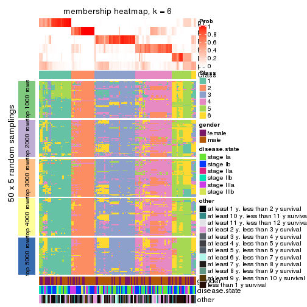
As soon as we have had the classes for columns, we can look for signatures which are significantly different between classes which can be candidate marks for certain classes. Following are the heatmaps for signatures.
Signature heatmaps where rows are scaled:
get_signatures(res, k = 2)
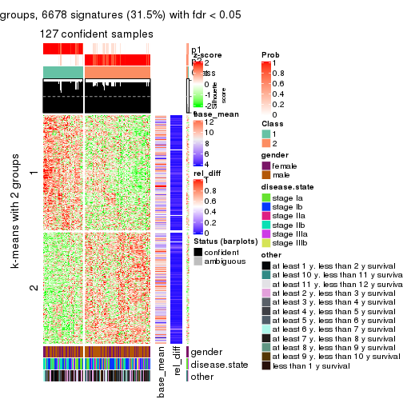
get_signatures(res, k = 3)
get_signatures(res, k = 4)
get_signatures(res, k = 5)
get_signatures(res, k = 6)
Signature heatmaps where rows are not scaled:
get_signatures(res, k = 2, scale_rows = FALSE)
get_signatures(res, k = 3, scale_rows = FALSE)
get_signatures(res, k = 4, scale_rows = FALSE)
get_signatures(res, k = 5, scale_rows = FALSE)
get_signatures(res, k = 6, scale_rows = FALSE)
Compare the overlap of signatures from different k:
compare_signatures(res)
get_signature() returns a data frame invisibly. TO get the list of signatures, the function
call should be assigned to a variable explicitly. In following code, if plot argument is set
to FALSE, no heatmap is plotted while only the differential analysis is performed.
# code only for demonstration
tb = get_signature(res, k = ..., plot = FALSE)
An example of the output of tb is:
#> which_row fdr mean_1 mean_2 scaled_mean_1 scaled_mean_2 km
#> 1 38 0.042760348 8.373488 9.131774 -0.5533452 0.5164555 1
#> 2 40 0.018707592 7.106213 8.469186 -0.6173731 0.5762149 1
#> 3 55 0.019134737 10.221463 11.207825 -0.6159697 0.5749050 1
#> 4 59 0.006059896 5.921854 7.869574 -0.6899429 0.6439467 1
#> 5 60 0.018055526 8.928898 10.211722 -0.6204761 0.5791110 1
#> 6 98 0.009384629 15.714769 14.887706 0.6635654 -0.6193277 2
...
The columns in tb are:
which_row: row indices corresponding to the input matrix.fdr: FDR for the differential test. mean_x: The mean value in group x.scaled_mean_x: The mean value in group x after rows are scaled.km: Row groups if k-means clustering is applied to rows.UMAP plot which shows how samples are separated.
dimension_reduction(res, k = 2, method = "UMAP")

dimension_reduction(res, k = 3, method = "UMAP")
dimension_reduction(res, k = 4, method = "UMAP")
dimension_reduction(res, k = 5, method = "UMAP")
dimension_reduction(res, k = 6, method = "UMAP")
Following heatmap shows how subgroups are split when increasing k:
collect_classes(res)
Test correlation between subgroups and known annotations. If the known annotation is numeric, one-way ANOVA test is applied, and if the known annotation is discrete, chi-squared contingency table test is applied.
test_to_known_factors(res)
#> n gender(p) disease.state(p) other(p) k
#> MAD:kmeans 127 0.182 0.276 0.5073 2
#> MAD:kmeans 125 0.238 0.336 0.1404 3
#> MAD:kmeans 103 0.321 0.104 0.5766 4
#> MAD:kmeans 90 0.765 0.169 0.2890 5
#> MAD:kmeans 87 0.691 0.311 0.0193 6
If matrix rows can be associated to genes, consider to use functional_enrichment(res,
...) to perform function enrichment for the signature genes. See this vignette for more detailed explanations.
The object with results only for a single top-value method and a single partition method can be extracted as:
res = res_list["MAD", "skmeans"]
# you can also extract it by
# res = res_list["MAD:skmeans"]
A summary of res and all the functions that can be applied to it:
res
#> A 'ConsensusPartition' object with k = 2, 3, 4, 5, 6.
#> On a matrix with 21168 rows and 130 columns.
#> Top rows (1000, 2000, 3000, 4000, 5000) are extracted by 'MAD' method.
#> Subgroups are detected by 'skmeans' method.
#> Performed in total 1250 partitions by row resampling.
#> Best k for subgroups seems to be 3.
#>
#> Following methods can be applied to this 'ConsensusPartition' object:
#> [1] "cola_report" "collect_classes" "collect_plots"
#> [4] "collect_stats" "colnames" "compare_signatures"
#> [7] "consensus_heatmap" "dimension_reduction" "functional_enrichment"
#> [10] "get_anno_col" "get_anno" "get_classes"
#> [13] "get_consensus" "get_matrix" "get_membership"
#> [16] "get_param" "get_signatures" "get_stats"
#> [19] "is_best_k" "is_stable_k" "membership_heatmap"
#> [22] "ncol" "nrow" "plot_ecdf"
#> [25] "rownames" "select_partition_number" "show"
#> [28] "suggest_best_k" "test_to_known_factors"
collect_plots() function collects all the plots made from res for all k (number of partitions)
into one single page to provide an easy and fast comparison between different k.
collect_plots(res)
The plots are:
k and the heatmap of
predicted classes for each k.k.k.k.All the plots in panels can be made by individual functions and they are plotted later in this section.
select_partition_number() produces several plots showing different
statistics for choosing “optimized” k. There are following statistics:
k;k, the area increased is defined as \(A_k - A_{k-1}\).The detailed explanations of these statistics can be found in the cola vignette.
Generally speaking, lower PAC score, higher mean silhouette score or higher
concordance corresponds to better partition. Rand index and Jaccard index
measure how similar the current partition is compared to partition with k-1.
If they are too similar, we won't accept k is better than k-1.
select_partition_number(res)
The numeric values for all these statistics can be obtained by get_stats().
get_stats(res)
#> k 1-PAC mean_silhouette concordance area_increased Rand Jaccard
#> 2 2 0.775 0.880 0.950 0.4996 0.499 0.499
#> 3 3 0.912 0.913 0.963 0.3399 0.726 0.503
#> 4 4 0.659 0.592 0.758 0.1086 0.927 0.792
#> 5 5 0.623 0.558 0.754 0.0654 0.837 0.516
#> 6 6 0.633 0.465 0.691 0.0411 0.948 0.768
suggest_best_k() suggests the best \(k\) based on these statistics. The rules are as follows:
suggest_best_k(res)
#> [1] 3
Following shows the table of the partitions (You need to click the show/hide
code output link to see it). The membership matrix (columns with name p*)
is inferred by
clue::cl_consensus()
function with the SE method. Basically the value in the membership matrix
represents the probability to belong to a certain group. The finall class
label for an item is determined with the group with highest probability it
belongs to.
In get_classes() function, the entropy is calculated from the membership
matrix and the silhouette score is calculated from the consensus matrix.
cbind(get_classes(res, k = 2), get_membership(res, k = 2))
#> class entropy silhouette p1 p2
#> GSM102191 2 0.0000 0.9485 0.000 1.000
#> GSM102240 1 0.2236 0.9106 0.964 0.036
#> GSM102175 1 0.0000 0.9391 1.000 0.000
#> GSM102134 2 0.0000 0.9485 0.000 1.000
#> GSM102171 1 0.0000 0.9391 1.000 0.000
#> GSM102178 1 0.0376 0.9368 0.996 0.004
#> GSM102198 2 0.0000 0.9485 0.000 1.000
#> GSM102221 1 0.0000 0.9391 1.000 0.000
#> GSM102223 2 0.0000 0.9485 0.000 1.000
#> GSM102229 2 0.8386 0.6383 0.268 0.732
#> GSM102153 1 0.0000 0.9391 1.000 0.000
#> GSM102220 2 0.0000 0.9485 0.000 1.000
#> GSM102202 2 0.0376 0.9456 0.004 0.996
#> GSM102123 1 0.0000 0.9391 1.000 0.000
#> GSM102125 2 0.0000 0.9485 0.000 1.000
#> GSM102136 2 0.0000 0.9485 0.000 1.000
#> GSM102197 2 0.4298 0.8712 0.088 0.912
#> GSM102131 2 0.7674 0.7058 0.224 0.776
#> GSM102132 1 0.0000 0.9391 1.000 0.000
#> GSM102212 2 0.0000 0.9485 0.000 1.000
#> GSM102117 1 0.7950 0.6760 0.760 0.240
#> GSM102124 2 0.0000 0.9485 0.000 1.000
#> GSM102172 1 0.0000 0.9391 1.000 0.000
#> GSM102199 2 0.0000 0.9485 0.000 1.000
#> GSM102203 1 0.8081 0.6559 0.752 0.248
#> GSM102213 2 0.9170 0.4861 0.332 0.668
#> GSM102165 2 0.8499 0.6228 0.276 0.724
#> GSM102180 2 0.0000 0.9485 0.000 1.000
#> GSM102184 1 0.9608 0.3834 0.616 0.384
#> GSM102225 2 0.0000 0.9485 0.000 1.000
#> GSM102230 1 0.0000 0.9391 1.000 0.000
#> GSM102133 2 0.0000 0.9485 0.000 1.000
#> GSM102166 1 0.0000 0.9391 1.000 0.000
#> GSM102235 1 0.0000 0.9391 1.000 0.000
#> GSM102196 1 0.0000 0.9391 1.000 0.000
#> GSM102243 1 0.0000 0.9391 1.000 0.000
#> GSM102135 2 0.0000 0.9485 0.000 1.000
#> GSM102139 2 0.0000 0.9485 0.000 1.000
#> GSM102151 2 0.0000 0.9485 0.000 1.000
#> GSM102193 2 0.0000 0.9485 0.000 1.000
#> GSM102200 1 0.0000 0.9391 1.000 0.000
#> GSM102204 2 0.0000 0.9485 0.000 1.000
#> GSM102145 2 0.0000 0.9485 0.000 1.000
#> GSM102142 2 0.0000 0.9485 0.000 1.000
#> GSM102179 2 0.0000 0.9485 0.000 1.000
#> GSM102181 1 0.7602 0.7072 0.780 0.220
#> GSM102154 2 0.9833 0.2606 0.424 0.576
#> GSM102152 2 0.0000 0.9485 0.000 1.000
#> GSM102162 2 0.0000 0.9485 0.000 1.000
#> GSM102187 2 0.0376 0.9458 0.004 0.996
#> GSM102116 1 0.0000 0.9391 1.000 0.000
#> GSM102150 1 0.0000 0.9391 1.000 0.000
#> GSM102227 2 0.0000 0.9485 0.000 1.000
#> GSM102114 1 0.0000 0.9391 1.000 0.000
#> GSM102177 1 0.0000 0.9391 1.000 0.000
#> GSM102160 2 0.0000 0.9485 0.000 1.000
#> GSM102161 1 0.0000 0.9391 1.000 0.000
#> GSM102170 2 0.0000 0.9485 0.000 1.000
#> GSM102205 1 0.9323 0.4711 0.652 0.348
#> GSM102118 1 0.0376 0.9368 0.996 0.004
#> GSM102156 1 0.0672 0.9344 0.992 0.008
#> GSM102238 1 0.0000 0.9391 1.000 0.000
#> GSM102143 1 0.9922 0.1926 0.552 0.448
#> GSM102144 2 0.0000 0.9485 0.000 1.000
#> GSM102209 2 0.0000 0.9485 0.000 1.000
#> GSM102210 2 0.0672 0.9430 0.008 0.992
#> GSM102140 2 0.0000 0.9485 0.000 1.000
#> GSM102242 1 0.5408 0.8291 0.876 0.124
#> GSM102141 2 0.8443 0.6299 0.272 0.728
#> GSM102120 2 0.7883 0.6892 0.236 0.764
#> GSM102127 2 0.8661 0.6009 0.288 0.712
#> GSM102149 1 0.0000 0.9391 1.000 0.000
#> GSM102232 2 0.0000 0.9485 0.000 1.000
#> GSM102222 2 0.0000 0.9485 0.000 1.000
#> GSM102236 1 0.0000 0.9391 1.000 0.000
#> GSM102215 2 0.0000 0.9485 0.000 1.000
#> GSM102194 2 0.0000 0.9485 0.000 1.000
#> GSM102208 2 0.0000 0.9485 0.000 1.000
#> GSM102130 2 0.0000 0.9485 0.000 1.000
#> GSM102188 1 0.0672 0.9342 0.992 0.008
#> GSM102233 1 0.0000 0.9391 1.000 0.000
#> GSM102189 2 0.0000 0.9485 0.000 1.000
#> GSM102234 2 0.0000 0.9485 0.000 1.000
#> GSM102237 1 0.0000 0.9391 1.000 0.000
#> GSM102159 1 0.0376 0.9368 0.996 0.004
#> GSM102155 1 0.6887 0.7563 0.816 0.184
#> GSM102137 1 0.8207 0.6427 0.744 0.256
#> GSM102217 2 0.2423 0.9152 0.040 0.960
#> GSM102126 1 0.8327 0.6368 0.736 0.264
#> GSM102157 2 0.0000 0.9485 0.000 1.000
#> GSM102163 1 0.0000 0.9391 1.000 0.000
#> GSM102182 1 0.0000 0.9391 1.000 0.000
#> GSM102167 2 0.0000 0.9485 0.000 1.000
#> GSM102206 1 0.0000 0.9391 1.000 0.000
#> GSM102224 2 0.0000 0.9485 0.000 1.000
#> GSM102164 2 0.0000 0.9485 0.000 1.000
#> GSM102174 1 0.0000 0.9391 1.000 0.000
#> GSM102214 2 0.0000 0.9485 0.000 1.000
#> GSM102226 2 0.0000 0.9485 0.000 1.000
#> GSM102195 2 0.0000 0.9485 0.000 1.000
#> GSM102218 1 0.9998 0.0274 0.508 0.492
#> GSM102128 2 0.0000 0.9485 0.000 1.000
#> GSM102168 1 0.0000 0.9391 1.000 0.000
#> GSM102190 1 0.0000 0.9391 1.000 0.000
#> GSM102201 2 0.6531 0.7716 0.168 0.832
#> GSM102129 2 0.0000 0.9485 0.000 1.000
#> GSM102192 1 0.0000 0.9391 1.000 0.000
#> GSM102183 2 0.0376 0.9458 0.004 0.996
#> GSM102185 1 0.0000 0.9391 1.000 0.000
#> GSM102158 2 0.8661 0.5775 0.288 0.712
#> GSM102169 2 0.0000 0.9485 0.000 1.000
#> GSM102216 1 0.0000 0.9391 1.000 0.000
#> GSM102219 1 0.0000 0.9391 1.000 0.000
#> GSM102231 2 0.0000 0.9485 0.000 1.000
#> GSM102147 2 0.0000 0.9485 0.000 1.000
#> GSM102176 1 0.0000 0.9391 1.000 0.000
#> GSM102148 1 0.0938 0.9312 0.988 0.012
#> GSM102146 1 0.0000 0.9391 1.000 0.000
#> GSM102241 1 0.0000 0.9391 1.000 0.000
#> GSM102211 1 0.0000 0.9391 1.000 0.000
#> GSM102115 1 0.0000 0.9391 1.000 0.000
#> GSM102173 1 0.0000 0.9391 1.000 0.000
#> GSM102138 2 0.0000 0.9485 0.000 1.000
#> GSM102228 1 0.0000 0.9391 1.000 0.000
#> GSM102207 2 0.8443 0.6299 0.272 0.728
#> GSM102122 1 0.0000 0.9391 1.000 0.000
#> GSM102119 2 0.0000 0.9485 0.000 1.000
#> GSM102186 2 0.0376 0.9456 0.004 0.996
#> GSM102239 1 0.0000 0.9391 1.000 0.000
#> GSM102121 2 0.0000 0.9485 0.000 1.000
cbind(get_classes(res, k = 3), get_membership(res, k = 3))
#> class entropy silhouette p1 p2 p3
#> GSM102191 2 0.0000 0.9714 0.000 1.000 0.000
#> GSM102240 1 0.0000 0.9806 1.000 0.000 0.000
#> GSM102175 1 0.0000 0.9806 1.000 0.000 0.000
#> GSM102134 2 0.0000 0.9714 0.000 1.000 0.000
#> GSM102171 1 0.0237 0.9809 0.996 0.000 0.004
#> GSM102178 3 0.0424 0.9240 0.008 0.000 0.992
#> GSM102198 2 0.0000 0.9714 0.000 1.000 0.000
#> GSM102221 1 0.0000 0.9806 1.000 0.000 0.000
#> GSM102223 2 0.0000 0.9714 0.000 1.000 0.000
#> GSM102229 3 0.2066 0.8900 0.000 0.060 0.940
#> GSM102153 1 0.0237 0.9809 0.996 0.000 0.004
#> GSM102220 3 0.0424 0.9248 0.000 0.008 0.992
#> GSM102202 2 0.0237 0.9687 0.004 0.996 0.000
#> GSM102123 3 0.5621 0.5562 0.308 0.000 0.692
#> GSM102125 2 0.0000 0.9714 0.000 1.000 0.000
#> GSM102136 2 0.0000 0.9714 0.000 1.000 0.000
#> GSM102197 3 0.0000 0.9273 0.000 0.000 1.000
#> GSM102131 3 0.0000 0.9273 0.000 0.000 1.000
#> GSM102132 3 0.0592 0.9220 0.012 0.000 0.988
#> GSM102212 2 0.0000 0.9714 0.000 1.000 0.000
#> GSM102117 1 0.6008 0.3935 0.628 0.372 0.000
#> GSM102124 2 0.0000 0.9714 0.000 1.000 0.000
#> GSM102172 1 0.0000 0.9806 1.000 0.000 0.000
#> GSM102199 2 0.0237 0.9685 0.000 0.996 0.004
#> GSM102203 1 0.0592 0.9711 0.988 0.012 0.000
#> GSM102213 2 0.4452 0.7662 0.192 0.808 0.000
#> GSM102165 3 0.0000 0.9273 0.000 0.000 1.000
#> GSM102180 2 0.0000 0.9714 0.000 1.000 0.000
#> GSM102184 3 0.0000 0.9273 0.000 0.000 1.000
#> GSM102225 2 0.2878 0.8803 0.000 0.904 0.096
#> GSM102230 1 0.0237 0.9809 0.996 0.000 0.004
#> GSM102133 2 0.0000 0.9714 0.000 1.000 0.000
#> GSM102166 1 0.0237 0.9809 0.996 0.000 0.004
#> GSM102235 3 0.1643 0.9014 0.044 0.000 0.956
#> GSM102196 1 0.0237 0.9809 0.996 0.000 0.004
#> GSM102243 1 0.0237 0.9809 0.996 0.000 0.004
#> GSM102135 2 0.3038 0.8746 0.000 0.896 0.104
#> GSM102139 2 0.0000 0.9714 0.000 1.000 0.000
#> GSM102151 2 0.0000 0.9714 0.000 1.000 0.000
#> GSM102193 2 0.0000 0.9714 0.000 1.000 0.000
#> GSM102200 1 0.0892 0.9679 0.980 0.000 0.020
#> GSM102204 2 0.0000 0.9714 0.000 1.000 0.000
#> GSM102145 3 0.0237 0.9262 0.000 0.004 0.996
#> GSM102142 2 0.0000 0.9714 0.000 1.000 0.000
#> GSM102179 2 0.0000 0.9714 0.000 1.000 0.000
#> GSM102181 3 0.0000 0.9273 0.000 0.000 1.000
#> GSM102154 3 0.0000 0.9273 0.000 0.000 1.000
#> GSM102152 2 0.0424 0.9655 0.000 0.992 0.008
#> GSM102162 2 0.0000 0.9714 0.000 1.000 0.000
#> GSM102187 3 0.3619 0.8179 0.000 0.136 0.864
#> GSM102116 1 0.0000 0.9806 1.000 0.000 0.000
#> GSM102150 1 0.0237 0.9809 0.996 0.000 0.004
#> GSM102227 3 0.0000 0.9273 0.000 0.000 1.000
#> GSM102114 1 0.0237 0.9809 0.996 0.000 0.004
#> GSM102177 1 0.0000 0.9806 1.000 0.000 0.000
#> GSM102160 2 0.0000 0.9714 0.000 1.000 0.000
#> GSM102161 1 0.0000 0.9806 1.000 0.000 0.000
#> GSM102170 2 0.0000 0.9714 0.000 1.000 0.000
#> GSM102205 3 0.2356 0.8787 0.072 0.000 0.928
#> GSM102118 3 0.0000 0.9273 0.000 0.000 1.000
#> GSM102156 3 0.0237 0.9259 0.004 0.000 0.996
#> GSM102238 1 0.0237 0.9809 0.996 0.000 0.004
#> GSM102143 3 0.0000 0.9273 0.000 0.000 1.000
#> GSM102144 2 0.0000 0.9714 0.000 1.000 0.000
#> GSM102209 2 0.2625 0.8944 0.000 0.916 0.084
#> GSM102210 3 0.6308 0.0719 0.000 0.492 0.508
#> GSM102140 3 0.0237 0.9262 0.000 0.004 0.996
#> GSM102242 3 0.0000 0.9273 0.000 0.000 1.000
#> GSM102141 3 0.0000 0.9273 0.000 0.000 1.000
#> GSM102120 3 0.0000 0.9273 0.000 0.000 1.000
#> GSM102127 3 0.0000 0.9273 0.000 0.000 1.000
#> GSM102149 1 0.0237 0.9809 0.996 0.000 0.004
#> GSM102232 2 0.0000 0.9714 0.000 1.000 0.000
#> GSM102222 2 0.0000 0.9714 0.000 1.000 0.000
#> GSM102236 1 0.0000 0.9806 1.000 0.000 0.000
#> GSM102215 2 0.0000 0.9714 0.000 1.000 0.000
#> GSM102194 2 0.0000 0.9714 0.000 1.000 0.000
#> GSM102208 2 0.0000 0.9714 0.000 1.000 0.000
#> GSM102130 2 0.0000 0.9714 0.000 1.000 0.000
#> GSM102188 3 0.1411 0.9071 0.036 0.000 0.964
#> GSM102233 1 0.0237 0.9809 0.996 0.000 0.004
#> GSM102189 2 0.0000 0.9714 0.000 1.000 0.000
#> GSM102234 3 0.0237 0.9262 0.000 0.004 0.996
#> GSM102237 1 0.0237 0.9809 0.996 0.000 0.004
#> GSM102159 3 0.0000 0.9273 0.000 0.000 1.000
#> GSM102155 3 0.0000 0.9273 0.000 0.000 1.000
#> GSM102137 1 0.2165 0.9185 0.936 0.064 0.000
#> GSM102217 2 0.1411 0.9422 0.036 0.964 0.000
#> GSM102126 3 0.0000 0.9273 0.000 0.000 1.000
#> GSM102157 3 0.2878 0.8604 0.000 0.096 0.904
#> GSM102163 1 0.0424 0.9783 0.992 0.000 0.008
#> GSM102182 1 0.0000 0.9806 1.000 0.000 0.000
#> GSM102167 2 0.0000 0.9714 0.000 1.000 0.000
#> GSM102206 1 0.0237 0.9809 0.996 0.000 0.004
#> GSM102224 2 0.0000 0.9714 0.000 1.000 0.000
#> GSM102164 2 0.0000 0.9714 0.000 1.000 0.000
#> GSM102174 1 0.0000 0.9806 1.000 0.000 0.000
#> GSM102214 3 0.0747 0.9210 0.000 0.016 0.984
#> GSM102226 3 0.6280 0.1643 0.000 0.460 0.540
#> GSM102195 3 0.3619 0.8167 0.000 0.136 0.864
#> GSM102218 3 0.0000 0.9273 0.000 0.000 1.000
#> GSM102128 2 0.0000 0.9714 0.000 1.000 0.000
#> GSM102168 3 0.5926 0.4558 0.356 0.000 0.644
#> GSM102190 1 0.0000 0.9806 1.000 0.000 0.000
#> GSM102201 2 0.4002 0.8124 0.160 0.840 0.000
#> GSM102129 3 0.0237 0.9262 0.000 0.004 0.996
#> GSM102192 1 0.0000 0.9806 1.000 0.000 0.000
#> GSM102183 2 0.6282 0.3362 0.004 0.612 0.384
#> GSM102185 1 0.0237 0.9809 0.996 0.000 0.004
#> GSM102158 2 0.3752 0.8313 0.144 0.856 0.000
#> GSM102169 3 0.0237 0.9262 0.000 0.004 0.996
#> GSM102216 1 0.1964 0.9331 0.944 0.000 0.056
#> GSM102219 1 0.0237 0.9809 0.996 0.000 0.004
#> GSM102231 3 0.6307 0.0809 0.000 0.488 0.512
#> GSM102147 2 0.0000 0.9714 0.000 1.000 0.000
#> GSM102176 1 0.0000 0.9806 1.000 0.000 0.000
#> GSM102148 3 0.0000 0.9273 0.000 0.000 1.000
#> GSM102146 1 0.0000 0.9806 1.000 0.000 0.000
#> GSM102241 1 0.0237 0.9809 0.996 0.000 0.004
#> GSM102211 1 0.0237 0.9809 0.996 0.000 0.004
#> GSM102115 1 0.0000 0.9806 1.000 0.000 0.000
#> GSM102173 1 0.0237 0.9809 0.996 0.000 0.004
#> GSM102138 2 0.0000 0.9714 0.000 1.000 0.000
#> GSM102228 3 0.3267 0.8315 0.116 0.000 0.884
#> GSM102207 3 0.0000 0.9273 0.000 0.000 1.000
#> GSM102122 1 0.3340 0.8573 0.880 0.000 0.120
#> GSM102119 2 0.0000 0.9714 0.000 1.000 0.000
#> GSM102186 2 0.0237 0.9687 0.004 0.996 0.000
#> GSM102239 1 0.0000 0.9806 1.000 0.000 0.000
#> GSM102121 2 0.0000 0.9714 0.000 1.000 0.000
cbind(get_classes(res, k = 4), get_membership(res, k = 4))
#> class entropy silhouette p1 p2 p3 p4
#> GSM102191 2 0.4927 0.6884 0.024 0.712 0.000 0.264
#> GSM102240 1 0.2081 0.4367 0.916 0.000 0.000 0.084
#> GSM102175 1 0.4804 0.6635 0.616 0.000 0.000 0.384
#> GSM102134 2 0.4477 0.7008 0.000 0.688 0.000 0.312
#> GSM102171 1 0.4907 0.6529 0.580 0.000 0.000 0.420
#> GSM102178 3 0.4313 0.5506 0.004 0.000 0.736 0.260
#> GSM102198 2 0.4543 0.6857 0.000 0.676 0.000 0.324
#> GSM102221 1 0.0336 0.5092 0.992 0.000 0.000 0.008
#> GSM102223 2 0.4356 0.6961 0.000 0.708 0.000 0.292
#> GSM102229 3 0.4784 0.6607 0.000 0.112 0.788 0.100
#> GSM102153 1 0.4855 0.6621 0.600 0.000 0.000 0.400
#> GSM102220 3 0.1042 0.8345 0.000 0.008 0.972 0.020
#> GSM102202 2 0.7327 0.3511 0.320 0.504 0.000 0.176
#> GSM102123 4 0.7373 0.1574 0.184 0.000 0.316 0.500
#> GSM102125 2 0.3726 0.7211 0.000 0.788 0.000 0.212
#> GSM102136 2 0.6903 0.5804 0.112 0.508 0.000 0.380
#> GSM102197 3 0.0592 0.8368 0.000 0.000 0.984 0.016
#> GSM102131 3 0.1940 0.8194 0.000 0.000 0.924 0.076
#> GSM102132 3 0.5069 0.4250 0.016 0.000 0.664 0.320
#> GSM102212 2 0.3219 0.7393 0.000 0.836 0.000 0.164
#> GSM102117 1 0.7272 -0.1564 0.496 0.344 0.000 0.160
#> GSM102124 2 0.0188 0.7501 0.000 0.996 0.000 0.004
#> GSM102172 1 0.4746 0.6631 0.632 0.000 0.000 0.368
#> GSM102199 2 0.6428 0.5780 0.012 0.648 0.084 0.256
#> GSM102203 1 0.2081 0.4343 0.916 0.000 0.000 0.084
#> GSM102213 2 0.7419 0.2485 0.396 0.436 0.000 0.168
#> GSM102165 3 0.0188 0.8369 0.000 0.000 0.996 0.004
#> GSM102180 2 0.1022 0.7552 0.000 0.968 0.000 0.032
#> GSM102184 3 0.1118 0.8340 0.000 0.000 0.964 0.036
#> GSM102225 2 0.5919 0.5804 0.012 0.564 0.020 0.404
#> GSM102230 1 0.4843 0.6625 0.604 0.000 0.000 0.396
#> GSM102133 2 0.0000 0.7510 0.000 1.000 0.000 0.000
#> GSM102166 1 0.4855 0.6619 0.600 0.000 0.000 0.400
#> GSM102235 3 0.5681 0.1066 0.028 0.000 0.568 0.404
#> GSM102196 1 0.4933 0.6449 0.568 0.000 0.000 0.432
#> GSM102243 4 0.5536 -0.1180 0.384 0.024 0.000 0.592
#> GSM102135 2 0.6994 0.5252 0.000 0.560 0.152 0.288
#> GSM102139 2 0.0000 0.7510 0.000 1.000 0.000 0.000
#> GSM102151 2 0.5936 0.6454 0.044 0.576 0.000 0.380
#> GSM102193 2 0.0000 0.7510 0.000 1.000 0.000 0.000
#> GSM102200 1 0.6204 0.5441 0.500 0.000 0.052 0.448
#> GSM102204 2 0.2149 0.7551 0.000 0.912 0.000 0.088
#> GSM102145 3 0.1929 0.8215 0.000 0.024 0.940 0.036
#> GSM102142 2 0.4483 0.6857 0.004 0.712 0.000 0.284
#> GSM102179 2 0.3649 0.7241 0.000 0.796 0.000 0.204
#> GSM102181 3 0.3494 0.7538 0.004 0.000 0.824 0.172
#> GSM102154 3 0.1637 0.8261 0.000 0.000 0.940 0.060
#> GSM102152 2 0.8014 0.4524 0.064 0.564 0.136 0.236
#> GSM102162 2 0.3801 0.7250 0.000 0.780 0.000 0.220
#> GSM102187 2 0.7306 0.4588 0.008 0.528 0.136 0.328
#> GSM102116 1 0.1722 0.4649 0.944 0.008 0.000 0.048
#> GSM102150 1 0.4888 0.6611 0.588 0.000 0.000 0.412
#> GSM102227 3 0.0707 0.8362 0.000 0.000 0.980 0.020
#> GSM102114 1 0.4925 0.6479 0.572 0.000 0.000 0.428
#> GSM102177 1 0.0000 0.5091 1.000 0.000 0.000 0.000
#> GSM102160 2 0.3266 0.7346 0.000 0.832 0.000 0.168
#> GSM102161 1 0.4304 0.6432 0.716 0.000 0.000 0.284
#> GSM102170 2 0.0000 0.7510 0.000 1.000 0.000 0.000
#> GSM102205 4 0.6107 0.2581 0.024 0.036 0.288 0.652
#> GSM102118 3 0.0188 0.8369 0.000 0.000 0.996 0.004
#> GSM102156 3 0.4444 0.6979 0.020 0.008 0.788 0.184
#> GSM102238 1 0.4898 0.6551 0.584 0.000 0.000 0.416
#> GSM102143 3 0.2011 0.8158 0.000 0.000 0.920 0.080
#> GSM102144 2 0.7644 0.4169 0.272 0.468 0.000 0.260
#> GSM102209 2 0.6646 0.5562 0.008 0.516 0.064 0.412
#> GSM102210 2 0.6952 0.4589 0.000 0.516 0.120 0.364
#> GSM102140 3 0.2198 0.8106 0.000 0.008 0.920 0.072
#> GSM102242 3 0.0336 0.8371 0.000 0.000 0.992 0.008
#> GSM102141 3 0.0469 0.8372 0.000 0.000 0.988 0.012
#> GSM102120 3 0.5200 0.5987 0.000 0.036 0.700 0.264
#> GSM102127 3 0.0188 0.8373 0.000 0.000 0.996 0.004
#> GSM102149 1 0.4877 0.6572 0.592 0.000 0.000 0.408
#> GSM102232 2 0.1211 0.7523 0.000 0.960 0.000 0.040
#> GSM102222 2 0.4720 0.6685 0.004 0.672 0.000 0.324
#> GSM102236 1 0.1867 0.5463 0.928 0.000 0.000 0.072
#> GSM102215 2 0.2530 0.7281 0.000 0.888 0.000 0.112
#> GSM102194 2 0.0336 0.7522 0.000 0.992 0.000 0.008
#> GSM102208 2 0.0000 0.7510 0.000 1.000 0.000 0.000
#> GSM102130 2 0.0817 0.7546 0.000 0.976 0.000 0.024
#> GSM102188 3 0.5498 0.2040 0.020 0.000 0.576 0.404
#> GSM102233 1 0.4933 0.6447 0.568 0.000 0.000 0.432
#> GSM102189 2 0.0188 0.7501 0.000 0.996 0.000 0.004
#> GSM102234 3 0.0895 0.8344 0.000 0.004 0.976 0.020
#> GSM102237 1 0.4855 0.6641 0.600 0.000 0.000 0.400
#> GSM102159 3 0.2281 0.7894 0.000 0.000 0.904 0.096
#> GSM102155 3 0.0817 0.8354 0.000 0.000 0.976 0.024
#> GSM102137 1 0.5906 0.0300 0.528 0.036 0.000 0.436
#> GSM102217 2 0.7801 0.4412 0.204 0.500 0.012 0.284
#> GSM102126 3 0.0707 0.8358 0.000 0.000 0.980 0.020
#> GSM102157 3 0.4576 0.5410 0.000 0.260 0.728 0.012
#> GSM102163 1 0.5808 0.6126 0.544 0.000 0.032 0.424
#> GSM102182 1 0.2081 0.4449 0.916 0.000 0.000 0.084
#> GSM102167 2 0.3626 0.7366 0.004 0.812 0.000 0.184
#> GSM102206 1 0.4866 0.6606 0.596 0.000 0.000 0.404
#> GSM102224 2 0.2345 0.7548 0.000 0.900 0.000 0.100
#> GSM102164 2 0.0000 0.7510 0.000 1.000 0.000 0.000
#> GSM102174 1 0.0592 0.4968 0.984 0.000 0.000 0.016
#> GSM102214 4 0.7893 -0.0357 0.004 0.228 0.380 0.388
#> GSM102226 3 0.7865 0.0384 0.004 0.248 0.444 0.304
#> GSM102195 3 0.5080 0.6396 0.000 0.092 0.764 0.144
#> GSM102218 3 0.0707 0.8380 0.000 0.000 0.980 0.020
#> GSM102128 2 0.0592 0.7498 0.000 0.984 0.000 0.016
#> GSM102168 4 0.7253 0.1956 0.144 0.000 0.424 0.432
#> GSM102190 1 0.3837 0.6203 0.776 0.000 0.000 0.224
#> GSM102201 2 0.7739 0.2867 0.356 0.440 0.004 0.200
#> GSM102129 3 0.0188 0.8370 0.000 0.000 0.996 0.004
#> GSM102192 1 0.4964 0.5258 0.716 0.000 0.028 0.256
#> GSM102183 4 0.8776 -0.3614 0.128 0.376 0.092 0.404
#> GSM102185 1 0.4916 0.6506 0.576 0.000 0.000 0.424
#> GSM102158 1 0.7371 -0.3085 0.424 0.416 0.000 0.160
#> GSM102169 3 0.1211 0.8326 0.000 0.000 0.960 0.040
#> GSM102216 1 0.6882 0.4688 0.500 0.000 0.108 0.392
#> GSM102219 1 0.4877 0.6599 0.592 0.000 0.000 0.408
#> GSM102231 2 0.6821 0.5076 0.004 0.512 0.088 0.396
#> GSM102147 2 0.3873 0.7251 0.000 0.772 0.000 0.228
#> GSM102176 1 0.4134 0.6344 0.740 0.000 0.000 0.260
#> GSM102148 3 0.1557 0.8267 0.000 0.000 0.944 0.056
#> GSM102146 1 0.4605 0.6388 0.664 0.000 0.000 0.336
#> GSM102241 1 0.4925 0.6479 0.572 0.000 0.000 0.428
#> GSM102211 1 0.4925 0.6493 0.572 0.000 0.000 0.428
#> GSM102115 1 0.0336 0.5137 0.992 0.000 0.000 0.008
#> GSM102173 1 0.4855 0.6614 0.600 0.000 0.000 0.400
#> GSM102138 2 0.4374 0.6894 0.024 0.800 0.008 0.168
#> GSM102228 3 0.4037 0.6881 0.056 0.000 0.832 0.112
#> GSM102207 3 0.0188 0.8374 0.000 0.000 0.996 0.004
#> GSM102122 4 0.6452 -0.5559 0.460 0.000 0.068 0.472
#> GSM102119 2 0.0779 0.7487 0.000 0.980 0.004 0.016
#> GSM102186 2 0.7225 0.3452 0.328 0.512 0.000 0.160
#> GSM102239 1 0.0188 0.5065 0.996 0.000 0.000 0.004
#> GSM102121 2 0.1637 0.7544 0.000 0.940 0.000 0.060
cbind(get_classes(res, k = 5), get_membership(res, k = 5))
#> class entropy silhouette p1 p2 p3 p4 p5
#> GSM102191 2 0.4655 0.4748 0.000 0.644 0.000 0.328 0.028
#> GSM102240 5 0.3491 0.5664 0.228 0.000 0.000 0.004 0.768
#> GSM102175 1 0.1270 0.7613 0.948 0.000 0.000 0.000 0.052
#> GSM102134 2 0.5176 0.4040 0.000 0.572 0.000 0.380 0.048
#> GSM102171 1 0.0000 0.7737 1.000 0.000 0.000 0.000 0.000
#> GSM102178 3 0.6844 0.3751 0.320 0.000 0.520 0.104 0.056
#> GSM102198 2 0.4651 0.4819 0.000 0.608 0.000 0.372 0.020
#> GSM102221 5 0.4380 0.4450 0.376 0.000 0.000 0.008 0.616
#> GSM102223 2 0.4196 0.5206 0.000 0.640 0.000 0.356 0.004
#> GSM102229 3 0.4549 0.7019 0.004 0.020 0.788 0.088 0.100
#> GSM102153 1 0.0880 0.7697 0.968 0.000 0.000 0.000 0.032
#> GSM102220 3 0.3441 0.7566 0.000 0.020 0.852 0.092 0.036
#> GSM102202 5 0.5376 0.2738 0.000 0.356 0.004 0.056 0.584
#> GSM102123 1 0.6745 0.4288 0.580 0.000 0.148 0.220 0.052
#> GSM102125 2 0.3013 0.7261 0.000 0.832 0.000 0.160 0.008
#> GSM102136 4 0.6132 -0.1025 0.000 0.432 0.000 0.440 0.128
#> GSM102197 3 0.2997 0.7526 0.000 0.000 0.840 0.148 0.012
#> GSM102131 3 0.4750 0.6354 0.004 0.000 0.692 0.260 0.044
#> GSM102132 3 0.7156 0.2438 0.364 0.000 0.456 0.116 0.064
#> GSM102212 2 0.2516 0.7467 0.000 0.860 0.000 0.140 0.000
#> GSM102117 5 0.3389 0.5273 0.032 0.088 0.008 0.012 0.860
#> GSM102124 2 0.1281 0.7746 0.000 0.956 0.000 0.032 0.012
#> GSM102172 1 0.1792 0.7441 0.916 0.000 0.000 0.000 0.084
#> GSM102199 4 0.7933 0.1878 0.000 0.344 0.096 0.368 0.192
#> GSM102203 5 0.5347 0.4978 0.316 0.004 0.000 0.064 0.616
#> GSM102213 5 0.4372 0.4585 0.008 0.200 0.000 0.040 0.752
#> GSM102165 3 0.0609 0.7743 0.000 0.000 0.980 0.020 0.000
#> GSM102180 2 0.1800 0.7805 0.000 0.932 0.000 0.048 0.020
#> GSM102184 3 0.4010 0.7334 0.016 0.008 0.824 0.104 0.048
#> GSM102225 4 0.3881 0.4914 0.000 0.180 0.024 0.788 0.008
#> GSM102230 1 0.1557 0.7667 0.940 0.000 0.000 0.008 0.052
#> GSM102133 2 0.0404 0.7807 0.000 0.988 0.000 0.000 0.012
#> GSM102166 1 0.0794 0.7703 0.972 0.000 0.000 0.000 0.028
#> GSM102235 1 0.6424 0.1888 0.532 0.000 0.348 0.080 0.040
#> GSM102196 1 0.0000 0.7737 1.000 0.000 0.000 0.000 0.000
#> GSM102243 4 0.7052 0.0739 0.372 0.036 0.004 0.456 0.132
#> GSM102135 4 0.7629 0.3406 0.000 0.296 0.176 0.448 0.080
#> GSM102139 2 0.0771 0.7797 0.000 0.976 0.000 0.004 0.020
#> GSM102151 4 0.6671 0.0635 0.000 0.352 0.000 0.412 0.236
#> GSM102193 2 0.0404 0.7807 0.000 0.988 0.000 0.000 0.012
#> GSM102200 1 0.4462 0.6805 0.800 0.000 0.060 0.080 0.060
#> GSM102204 2 0.1502 0.7812 0.000 0.940 0.000 0.056 0.004
#> GSM102145 3 0.3946 0.7181 0.000 0.008 0.804 0.140 0.048
#> GSM102142 2 0.3990 0.5766 0.000 0.688 0.000 0.308 0.004
#> GSM102179 2 0.3675 0.6598 0.000 0.772 0.004 0.216 0.008
#> GSM102181 4 0.6153 -0.2685 0.040 0.000 0.444 0.468 0.048
#> GSM102154 3 0.4693 0.6958 0.008 0.004 0.748 0.180 0.060
#> GSM102152 2 0.8351 -0.2407 0.000 0.320 0.136 0.264 0.280
#> GSM102162 2 0.2970 0.7298 0.000 0.828 0.000 0.168 0.004
#> GSM102187 4 0.6563 0.2420 0.008 0.376 0.096 0.500 0.020
#> GSM102116 5 0.4109 0.5289 0.288 0.000 0.000 0.012 0.700
#> GSM102150 1 0.4110 0.6937 0.792 0.000 0.012 0.044 0.152
#> GSM102227 3 0.2761 0.7616 0.000 0.000 0.872 0.104 0.024
#> GSM102114 1 0.0324 0.7740 0.992 0.000 0.000 0.004 0.004
#> GSM102177 5 0.4470 0.4516 0.372 0.000 0.000 0.012 0.616
#> GSM102160 2 0.2886 0.7406 0.000 0.844 0.000 0.148 0.008
#> GSM102161 1 0.3684 0.4932 0.720 0.000 0.000 0.000 0.280
#> GSM102170 2 0.0404 0.7807 0.000 0.988 0.000 0.000 0.012
#> GSM102205 4 0.5620 0.3535 0.128 0.000 0.144 0.696 0.032
#> GSM102118 3 0.2198 0.7743 0.012 0.000 0.920 0.048 0.020
#> GSM102156 3 0.7240 0.5467 0.096 0.012 0.580 0.192 0.120
#> GSM102238 1 0.0162 0.7734 0.996 0.000 0.000 0.000 0.004
#> GSM102143 3 0.5366 0.6671 0.032 0.008 0.716 0.188 0.056
#> GSM102144 5 0.6327 0.0701 0.000 0.348 0.000 0.168 0.484
#> GSM102209 4 0.4440 0.4988 0.000 0.164 0.024 0.772 0.040
#> GSM102210 4 0.6786 0.1776 0.012 0.400 0.084 0.472 0.032
#> GSM102140 3 0.4737 0.6330 0.000 0.000 0.708 0.224 0.068
#> GSM102242 3 0.1485 0.7740 0.000 0.000 0.948 0.020 0.032
#> GSM102141 3 0.2873 0.7696 0.000 0.000 0.860 0.120 0.020
#> GSM102120 4 0.6050 0.0087 0.044 0.008 0.372 0.548 0.028
#> GSM102127 3 0.3710 0.7614 0.000 0.000 0.808 0.144 0.048
#> GSM102149 1 0.3750 0.6978 0.824 0.000 0.004 0.084 0.088
#> GSM102232 2 0.2833 0.7441 0.000 0.864 0.004 0.120 0.012
#> GSM102222 2 0.4383 0.3900 0.000 0.572 0.000 0.424 0.004
#> GSM102236 1 0.4555 -0.0879 0.520 0.000 0.000 0.008 0.472
#> GSM102215 2 0.3971 0.6752 0.000 0.800 0.000 0.100 0.100
#> GSM102194 2 0.0566 0.7830 0.000 0.984 0.000 0.012 0.004
#> GSM102208 2 0.0566 0.7800 0.000 0.984 0.000 0.004 0.012
#> GSM102130 2 0.0566 0.7837 0.000 0.984 0.000 0.012 0.004
#> GSM102188 1 0.7614 -0.1300 0.380 0.000 0.352 0.212 0.056
#> GSM102233 1 0.0324 0.7727 0.992 0.000 0.000 0.004 0.004
#> GSM102189 2 0.1106 0.7769 0.000 0.964 0.000 0.012 0.024
#> GSM102234 3 0.3047 0.7538 0.000 0.004 0.868 0.084 0.044
#> GSM102237 1 0.1965 0.7516 0.904 0.000 0.000 0.000 0.096
#> GSM102159 3 0.5208 0.6508 0.176 0.000 0.720 0.076 0.028
#> GSM102155 3 0.2581 0.7737 0.028 0.000 0.904 0.048 0.020
#> GSM102137 4 0.6734 -0.0498 0.216 0.004 0.000 0.428 0.352
#> GSM102217 5 0.7456 -0.1070 0.000 0.276 0.036 0.288 0.400
#> GSM102126 3 0.2006 0.7720 0.020 0.000 0.932 0.024 0.024
#> GSM102157 3 0.5887 0.3442 0.000 0.304 0.600 0.072 0.024
#> GSM102163 1 0.3549 0.7017 0.852 0.000 0.076 0.040 0.032
#> GSM102182 5 0.3582 0.5676 0.224 0.000 0.000 0.008 0.768
#> GSM102167 2 0.3696 0.7002 0.000 0.772 0.000 0.212 0.016
#> GSM102206 1 0.1710 0.7635 0.940 0.000 0.016 0.004 0.040
#> GSM102224 2 0.2513 0.7521 0.000 0.876 0.000 0.116 0.008
#> GSM102164 2 0.0404 0.7807 0.000 0.988 0.000 0.000 0.012
#> GSM102174 5 0.4327 0.4696 0.360 0.000 0.000 0.008 0.632
#> GSM102214 4 0.3971 0.5278 0.004 0.064 0.116 0.812 0.004
#> GSM102226 4 0.6512 0.3039 0.000 0.084 0.276 0.580 0.060
#> GSM102195 3 0.6407 0.3756 0.000 0.064 0.564 0.312 0.060
#> GSM102218 3 0.2554 0.7691 0.000 0.000 0.892 0.072 0.036
#> GSM102128 2 0.1893 0.7696 0.000 0.928 0.000 0.024 0.048
#> GSM102168 1 0.6011 0.4065 0.620 0.000 0.268 0.072 0.040
#> GSM102190 1 0.4213 0.4248 0.680 0.000 0.000 0.012 0.308
#> GSM102201 5 0.5494 0.3727 0.004 0.204 0.012 0.096 0.684
#> GSM102129 3 0.1549 0.7715 0.000 0.000 0.944 0.040 0.016
#> GSM102192 1 0.6822 0.0715 0.468 0.000 0.056 0.088 0.388
#> GSM102183 4 0.6363 0.4997 0.012 0.192 0.056 0.652 0.088
#> GSM102185 1 0.0510 0.7724 0.984 0.000 0.000 0.000 0.016
#> GSM102158 5 0.3209 0.4844 0.000 0.180 0.000 0.008 0.812
#> GSM102169 3 0.4026 0.6941 0.000 0.000 0.736 0.244 0.020
#> GSM102216 1 0.6774 0.4941 0.596 0.000 0.176 0.068 0.160
#> GSM102219 1 0.2069 0.7632 0.924 0.000 0.012 0.012 0.052
#> GSM102231 4 0.4291 0.4963 0.000 0.188 0.048 0.760 0.004
#> GSM102147 2 0.3882 0.6865 0.000 0.756 0.000 0.224 0.020
#> GSM102176 1 0.3809 0.5257 0.736 0.000 0.000 0.008 0.256
#> GSM102148 3 0.4121 0.7416 0.064 0.000 0.820 0.076 0.040
#> GSM102146 1 0.3264 0.6712 0.820 0.000 0.000 0.016 0.164
#> GSM102241 1 0.0000 0.7737 1.000 0.000 0.000 0.000 0.000
#> GSM102211 1 0.0000 0.7737 1.000 0.000 0.000 0.000 0.000
#> GSM102115 5 0.4527 0.4122 0.392 0.000 0.000 0.012 0.596
#> GSM102173 1 0.0880 0.7688 0.968 0.000 0.000 0.000 0.032
#> GSM102138 2 0.6194 0.4174 0.000 0.628 0.028 0.160 0.184
#> GSM102228 3 0.6358 0.5945 0.164 0.004 0.652 0.116 0.064
#> GSM102207 3 0.2411 0.7720 0.000 0.000 0.884 0.108 0.008
#> GSM102122 1 0.4435 0.6767 0.800 0.000 0.080 0.076 0.044
#> GSM102119 2 0.3232 0.7340 0.000 0.864 0.016 0.084 0.036
#> GSM102186 5 0.4949 0.2903 0.000 0.368 0.004 0.028 0.600
#> GSM102239 5 0.4457 0.4570 0.368 0.000 0.000 0.012 0.620
#> GSM102121 2 0.1041 0.7824 0.000 0.964 0.000 0.032 0.004
cbind(get_classes(res, k = 6), get_membership(res, k = 6))
#> class entropy silhouette p1 p2 p3 p4 p5 p6
#> GSM102191 2 0.5050 0.3276 0.000 0.568 0.000 0.368 0.020 0.044
#> GSM102240 5 0.3293 0.6136 0.132 0.000 0.000 0.012 0.824 0.032
#> GSM102175 1 0.1610 0.7293 0.916 0.000 0.000 0.000 0.084 0.000
#> GSM102134 4 0.5796 -0.1155 0.000 0.432 0.004 0.464 0.040 0.060
#> GSM102171 1 0.0547 0.7512 0.980 0.000 0.000 0.000 0.000 0.020
#> GSM102178 6 0.6443 0.4624 0.264 0.000 0.272 0.016 0.004 0.444
#> GSM102198 2 0.4995 0.2422 0.000 0.484 0.004 0.468 0.016 0.028
#> GSM102221 5 0.3766 0.5300 0.304 0.000 0.000 0.000 0.684 0.012
#> GSM102223 2 0.4524 0.2411 0.000 0.520 0.000 0.452 0.004 0.024
#> GSM102229 3 0.4484 0.5684 0.004 0.012 0.760 0.036 0.032 0.156
#> GSM102153 1 0.1563 0.7461 0.932 0.000 0.000 0.000 0.056 0.012
#> GSM102220 3 0.2308 0.6279 0.000 0.012 0.896 0.016 0.000 0.076
#> GSM102202 5 0.6495 0.1905 0.000 0.236 0.000 0.116 0.540 0.108
#> GSM102123 1 0.6205 0.1171 0.520 0.000 0.084 0.064 0.004 0.328
#> GSM102125 2 0.3426 0.6292 0.000 0.764 0.000 0.220 0.004 0.012
#> GSM102136 4 0.6259 0.2646 0.004 0.268 0.000 0.548 0.128 0.052
#> GSM102197 3 0.3626 0.6079 0.000 0.000 0.788 0.068 0.000 0.144
#> GSM102131 3 0.4164 0.5478 0.000 0.000 0.744 0.132 0.000 0.124
#> GSM102132 6 0.6350 0.4963 0.288 0.000 0.176 0.024 0.008 0.504
#> GSM102212 2 0.3219 0.6549 0.000 0.792 0.000 0.192 0.004 0.012
#> GSM102117 5 0.3782 0.5114 0.008 0.040 0.012 0.052 0.836 0.052
#> GSM102124 2 0.1053 0.7187 0.000 0.964 0.000 0.020 0.004 0.012
#> GSM102172 1 0.2482 0.6842 0.848 0.000 0.000 0.000 0.148 0.004
#> GSM102199 4 0.8581 0.2955 0.000 0.272 0.108 0.284 0.120 0.216
#> GSM102203 5 0.5001 0.5550 0.248 0.000 0.000 0.064 0.660 0.028
#> GSM102213 5 0.5680 0.3712 0.000 0.140 0.004 0.084 0.664 0.108
#> GSM102165 3 0.2996 0.5493 0.000 0.000 0.772 0.000 0.000 0.228
#> GSM102180 2 0.2247 0.7159 0.000 0.904 0.000 0.060 0.012 0.024
#> GSM102184 3 0.4965 -0.0286 0.012 0.012 0.492 0.020 0.000 0.464
#> GSM102225 4 0.3468 0.5043 0.000 0.072 0.024 0.832 0.000 0.072
#> GSM102230 1 0.2106 0.7458 0.904 0.000 0.000 0.000 0.064 0.032
#> GSM102133 2 0.0291 0.7201 0.000 0.992 0.000 0.004 0.000 0.004
#> GSM102166 1 0.0937 0.7479 0.960 0.000 0.000 0.000 0.040 0.000
#> GSM102235 1 0.5933 -0.0933 0.528 0.000 0.180 0.008 0.004 0.280
#> GSM102196 1 0.0692 0.7552 0.976 0.000 0.000 0.004 0.000 0.020
#> GSM102243 4 0.7069 0.1349 0.256 0.008 0.004 0.480 0.172 0.080
#> GSM102135 4 0.7942 0.3599 0.000 0.156 0.248 0.372 0.028 0.196
#> GSM102139 2 0.0922 0.7233 0.000 0.968 0.000 0.024 0.004 0.004
#> GSM102151 4 0.7347 0.3225 0.000 0.212 0.012 0.460 0.188 0.128
#> GSM102193 2 0.0146 0.7199 0.000 0.996 0.000 0.000 0.004 0.000
#> GSM102200 1 0.5178 0.4697 0.628 0.000 0.016 0.024 0.036 0.296
#> GSM102204 2 0.2313 0.7113 0.000 0.884 0.000 0.100 0.012 0.004
#> GSM102145 3 0.3735 0.5819 0.000 0.024 0.816 0.056 0.004 0.100
#> GSM102142 2 0.4025 0.5326 0.000 0.668 0.000 0.312 0.004 0.016
#> GSM102179 2 0.4023 0.5568 0.000 0.720 0.004 0.240 0.000 0.036
#> GSM102181 6 0.7115 0.0556 0.028 0.000 0.332 0.264 0.024 0.352
#> GSM102154 6 0.4957 0.2250 0.008 0.000 0.356 0.048 0.004 0.584
#> GSM102152 2 0.8946 -0.3189 0.000 0.228 0.220 0.196 0.192 0.164
#> GSM102162 2 0.3979 0.5846 0.000 0.708 0.000 0.264 0.008 0.020
#> GSM102187 4 0.7131 0.2220 0.008 0.336 0.088 0.444 0.012 0.112
#> GSM102116 5 0.4200 0.5940 0.192 0.000 0.000 0.020 0.744 0.044
#> GSM102150 1 0.5588 0.5828 0.652 0.000 0.004 0.048 0.108 0.188
#> GSM102227 3 0.4545 0.5517 0.000 0.008 0.704 0.080 0.000 0.208
#> GSM102114 1 0.1464 0.7502 0.944 0.000 0.000 0.004 0.016 0.036
#> GSM102177 5 0.4311 0.5304 0.296 0.000 0.000 0.012 0.668 0.024
#> GSM102160 2 0.4498 0.5547 0.000 0.688 0.016 0.260 0.004 0.032
#> GSM102161 1 0.4571 0.4089 0.636 0.000 0.000 0.004 0.312 0.048
#> GSM102170 2 0.0146 0.7202 0.000 0.996 0.000 0.004 0.000 0.000
#> GSM102205 4 0.6275 0.1078 0.080 0.004 0.024 0.472 0.024 0.396
#> GSM102118 3 0.2615 0.6162 0.008 0.000 0.852 0.004 0.000 0.136
#> GSM102156 6 0.5603 0.4177 0.036 0.008 0.196 0.056 0.028 0.676
#> GSM102238 1 0.0508 0.7533 0.984 0.000 0.000 0.000 0.004 0.012
#> GSM102143 6 0.5417 0.3268 0.020 0.008 0.328 0.052 0.004 0.588
#> GSM102144 5 0.6750 -0.1268 0.000 0.332 0.000 0.204 0.412 0.052
#> GSM102209 4 0.5172 0.4843 0.000 0.052 0.080 0.724 0.020 0.124
#> GSM102210 4 0.6606 0.2684 0.000 0.308 0.020 0.428 0.008 0.236
#> GSM102140 3 0.3894 0.5472 0.000 0.000 0.784 0.088 0.008 0.120
#> GSM102242 3 0.3302 0.5468 0.004 0.000 0.760 0.004 0.000 0.232
#> GSM102141 3 0.4044 0.5242 0.000 0.000 0.704 0.040 0.000 0.256
#> GSM102120 4 0.7225 -0.1178 0.032 0.016 0.220 0.396 0.012 0.324
#> GSM102127 3 0.4203 0.4551 0.000 0.000 0.652 0.032 0.000 0.316
#> GSM102149 1 0.5858 0.5500 0.624 0.000 0.000 0.112 0.076 0.188
#> GSM102232 2 0.3966 0.6053 0.000 0.760 0.000 0.184 0.012 0.044
#> GSM102222 4 0.4452 -0.1460 0.000 0.428 0.000 0.548 0.008 0.016
#> GSM102236 5 0.4150 0.3730 0.392 0.000 0.000 0.000 0.592 0.016
#> GSM102215 2 0.5327 0.4954 0.000 0.672 0.000 0.180 0.096 0.052
#> GSM102194 2 0.0547 0.7217 0.000 0.980 0.000 0.020 0.000 0.000
#> GSM102208 2 0.0405 0.7204 0.000 0.988 0.000 0.008 0.000 0.004
#> GSM102130 2 0.0858 0.7216 0.000 0.968 0.000 0.028 0.004 0.000
#> GSM102188 6 0.7305 0.4449 0.332 0.000 0.184 0.096 0.008 0.380
#> GSM102233 1 0.1010 0.7492 0.960 0.000 0.000 0.004 0.000 0.036
#> GSM102189 2 0.1167 0.7146 0.000 0.960 0.000 0.012 0.008 0.020
#> GSM102234 3 0.2006 0.6332 0.000 0.000 0.904 0.016 0.000 0.080
#> GSM102237 1 0.2398 0.7333 0.876 0.000 0.000 0.000 0.104 0.020
#> GSM102159 3 0.5789 0.1084 0.168 0.000 0.596 0.020 0.004 0.212
#> GSM102155 3 0.4538 0.4756 0.040 0.000 0.704 0.028 0.000 0.228
#> GSM102137 4 0.7788 0.0312 0.136 0.016 0.008 0.364 0.324 0.152
#> GSM102217 4 0.8156 0.1988 0.000 0.152 0.044 0.316 0.304 0.184
#> GSM102126 3 0.3935 0.4439 0.012 0.000 0.692 0.008 0.000 0.288
#> GSM102157 2 0.6334 -0.2407 0.000 0.388 0.368 0.004 0.008 0.232
#> GSM102163 1 0.3295 0.6276 0.796 0.000 0.012 0.004 0.004 0.184
#> GSM102182 5 0.3300 0.6083 0.116 0.000 0.000 0.020 0.832 0.032
#> GSM102167 2 0.4715 0.6231 0.000 0.720 0.032 0.200 0.016 0.032
#> GSM102206 1 0.1644 0.7518 0.932 0.000 0.000 0.000 0.028 0.040
#> GSM102224 2 0.3546 0.6282 0.000 0.776 0.000 0.196 0.012 0.016
#> GSM102164 2 0.0000 0.7201 0.000 1.000 0.000 0.000 0.000 0.000
#> GSM102174 5 0.3468 0.5547 0.284 0.000 0.000 0.000 0.712 0.004
#> GSM102214 4 0.5321 0.3744 0.000 0.032 0.204 0.664 0.004 0.096
#> GSM102226 4 0.7127 0.1253 0.000 0.052 0.352 0.380 0.016 0.200
#> GSM102195 3 0.5675 0.4195 0.000 0.044 0.660 0.160 0.012 0.124
#> GSM102218 3 0.2373 0.6285 0.008 0.000 0.880 0.008 0.000 0.104
#> GSM102128 2 0.2564 0.6963 0.000 0.896 0.004 0.028 0.032 0.040
#> GSM102168 1 0.5322 0.1710 0.604 0.000 0.148 0.000 0.004 0.244
#> GSM102190 1 0.5025 0.1652 0.548 0.000 0.000 0.016 0.392 0.044
#> GSM102201 5 0.6426 0.3137 0.004 0.100 0.016 0.128 0.616 0.136
#> GSM102129 3 0.2595 0.6176 0.000 0.000 0.836 0.004 0.000 0.160
#> GSM102192 1 0.7502 0.0537 0.400 0.000 0.048 0.064 0.332 0.156
#> GSM102183 4 0.6565 0.4327 0.000 0.144 0.064 0.596 0.036 0.160
#> GSM102185 1 0.1080 0.7522 0.960 0.000 0.000 0.004 0.032 0.004
#> GSM102158 5 0.3937 0.4821 0.004 0.092 0.000 0.048 0.808 0.048
#> GSM102169 3 0.4830 0.4806 0.000 0.000 0.668 0.160 0.000 0.172
#> GSM102216 1 0.6773 0.3081 0.516 0.000 0.052 0.056 0.076 0.300
#> GSM102219 1 0.3412 0.7255 0.844 0.000 0.020 0.012 0.040 0.084
#> GSM102231 4 0.4604 0.4967 0.000 0.112 0.072 0.752 0.000 0.064
#> GSM102147 2 0.4553 0.5425 0.000 0.648 0.000 0.304 0.036 0.012
#> GSM102176 1 0.4109 0.3867 0.652 0.000 0.000 0.008 0.328 0.012
#> GSM102148 3 0.4876 0.1444 0.036 0.000 0.556 0.008 0.004 0.396
#> GSM102146 1 0.5154 0.5411 0.660 0.000 0.000 0.032 0.228 0.080
#> GSM102241 1 0.1116 0.7471 0.960 0.000 0.000 0.004 0.008 0.028
#> GSM102211 1 0.0972 0.7553 0.964 0.000 0.000 0.008 0.000 0.028
#> GSM102115 5 0.4554 0.5264 0.296 0.000 0.000 0.024 0.656 0.024
#> GSM102173 1 0.1141 0.7436 0.948 0.000 0.000 0.000 0.052 0.000
#> GSM102138 2 0.6943 0.2232 0.000 0.524 0.016 0.224 0.124 0.112
#> GSM102228 6 0.6823 0.3032 0.188 0.012 0.356 0.004 0.028 0.412
#> GSM102207 3 0.3934 0.5360 0.000 0.000 0.708 0.032 0.000 0.260
#> GSM102122 1 0.4621 0.4684 0.660 0.000 0.016 0.024 0.008 0.292
#> GSM102119 2 0.4719 0.5935 0.000 0.764 0.068 0.084 0.016 0.068
#> GSM102186 5 0.6029 0.2157 0.000 0.288 0.000 0.064 0.556 0.092
#> GSM102239 5 0.3972 0.5330 0.300 0.000 0.000 0.004 0.680 0.016
#> GSM102121 2 0.1152 0.7174 0.000 0.952 0.000 0.044 0.000 0.004
Heatmaps for the consensus matrix. It visualizes the probability of two samples to be in a same group.
consensus_heatmap(res, k = 2)
consensus_heatmap(res, k = 3)
consensus_heatmap(res, k = 4)
consensus_heatmap(res, k = 5)
consensus_heatmap(res, k = 6)
Heatmaps for the membership of samples in all partitions to see how consistent they are:
membership_heatmap(res, k = 2)
membership_heatmap(res, k = 3)
membership_heatmap(res, k = 4)
membership_heatmap(res, k = 5)
membership_heatmap(res, k = 6)
As soon as we have had the classes for columns, we can look for signatures which are significantly different between classes which can be candidate marks for certain classes. Following are the heatmaps for signatures.
Signature heatmaps where rows are scaled:
get_signatures(res, k = 2)
get_signatures(res, k = 3)
get_signatures(res, k = 4)
get_signatures(res, k = 5)
get_signatures(res, k = 6)
Signature heatmaps where rows are not scaled:
get_signatures(res, k = 2, scale_rows = FALSE)
get_signatures(res, k = 3, scale_rows = FALSE)
get_signatures(res, k = 4, scale_rows = FALSE)
get_signatures(res, k = 5, scale_rows = FALSE)
get_signatures(res, k = 6, scale_rows = FALSE)
Compare the overlap of signatures from different k:
compare_signatures(res)
get_signature() returns a data frame invisibly. TO get the list of signatures, the function
call should be assigned to a variable explicitly. In following code, if plot argument is set
to FALSE, no heatmap is plotted while only the differential analysis is performed.
# code only for demonstration
tb = get_signature(res, k = ..., plot = FALSE)
An example of the output of tb is:
#> which_row fdr mean_1 mean_2 scaled_mean_1 scaled_mean_2 km
#> 1 38 0.042760348 8.373488 9.131774 -0.5533452 0.5164555 1
#> 2 40 0.018707592 7.106213 8.469186 -0.6173731 0.5762149 1
#> 3 55 0.019134737 10.221463 11.207825 -0.6159697 0.5749050 1
#> 4 59 0.006059896 5.921854 7.869574 -0.6899429 0.6439467 1
#> 5 60 0.018055526 8.928898 10.211722 -0.6204761 0.5791110 1
#> 6 98 0.009384629 15.714769 14.887706 0.6635654 -0.6193277 2
...
The columns in tb are:
which_row: row indices corresponding to the input matrix.fdr: FDR for the differential test. mean_x: The mean value in group x.scaled_mean_x: The mean value in group x after rows are scaled.km: Row groups if k-means clustering is applied to rows.UMAP plot which shows how samples are separated.
dimension_reduction(res, k = 2, method = "UMAP")
dimension_reduction(res, k = 3, method = "UMAP")
dimension_reduction(res, k = 4, method = "UMAP")
dimension_reduction(res, k = 5, method = "UMAP")
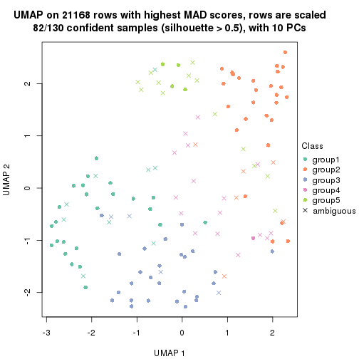
dimension_reduction(res, k = 6, method = "UMAP")
Following heatmap shows how subgroups are split when increasing k:
collect_classes(res)
Test correlation between subgroups and known annotations. If the known annotation is numeric, one-way ANOVA test is applied, and if the known annotation is discrete, chi-squared contingency table test is applied.
test_to_known_factors(res)
#> n gender(p) disease.state(p) other(p) k
#> MAD:skmeans 124 0.223 0.159 0.473 2
#> MAD:skmeans 124 0.115 0.384 0.194 3
#> MAD:skmeans 101 0.132 0.387 0.368 4
#> MAD:skmeans 82 0.378 0.606 0.568 5
#> MAD:skmeans 72 0.703 0.825 0.213 6
If matrix rows can be associated to genes, consider to use functional_enrichment(res,
...) to perform function enrichment for the signature genes. See this vignette for more detailed explanations.
The object with results only for a single top-value method and a single partition method can be extracted as:
res = res_list["MAD", "pam"]
# you can also extract it by
# res = res_list["MAD:pam"]
A summary of res and all the functions that can be applied to it:
res
#> A 'ConsensusPartition' object with k = 2, 3, 4, 5, 6.
#> On a matrix with 21168 rows and 130 columns.
#> Top rows (1000, 2000, 3000, 4000, 5000) are extracted by 'MAD' method.
#> Subgroups are detected by 'pam' method.
#> Performed in total 1250 partitions by row resampling.
#> Best k for subgroups seems to be 3.
#>
#> Following methods can be applied to this 'ConsensusPartition' object:
#> [1] "cola_report" "collect_classes" "collect_plots"
#> [4] "collect_stats" "colnames" "compare_signatures"
#> [7] "consensus_heatmap" "dimension_reduction" "functional_enrichment"
#> [10] "get_anno_col" "get_anno" "get_classes"
#> [13] "get_consensus" "get_matrix" "get_membership"
#> [16] "get_param" "get_signatures" "get_stats"
#> [19] "is_best_k" "is_stable_k" "membership_heatmap"
#> [22] "ncol" "nrow" "plot_ecdf"
#> [25] "rownames" "select_partition_number" "show"
#> [28] "suggest_best_k" "test_to_known_factors"
collect_plots() function collects all the plots made from res for all k (number of partitions)
into one single page to provide an easy and fast comparison between different k.
collect_plots(res)
The plots are:
k and the heatmap of
predicted classes for each k.k.k.k.All the plots in panels can be made by individual functions and they are plotted later in this section.
select_partition_number() produces several plots showing different
statistics for choosing “optimized” k. There are following statistics:
k;k, the area increased is defined as \(A_k - A_{k-1}\).The detailed explanations of these statistics can be found in the cola vignette.
Generally speaking, lower PAC score, higher mean silhouette score or higher
concordance corresponds to better partition. Rand index and Jaccard index
measure how similar the current partition is compared to partition with k-1.
If they are too similar, we won't accept k is better than k-1.
select_partition_number(res)
The numeric values for all these statistics can be obtained by get_stats().
get_stats(res)
#> k 1-PAC mean_silhouette concordance area_increased Rand Jaccard
#> 2 2 0.441 0.853 0.895 0.4461 0.549 0.549
#> 3 3 0.730 0.816 0.919 0.4416 0.763 0.586
#> 4 4 0.679 0.682 0.852 0.1661 0.839 0.581
#> 5 5 0.639 0.536 0.761 0.0487 0.952 0.819
#> 6 6 0.675 0.501 0.748 0.0367 0.957 0.822
suggest_best_k() suggests the best \(k\) based on these statistics. The rules are as follows:
suggest_best_k(res)
#> [1] 3
Following shows the table of the partitions (You need to click the show/hide
code output link to see it). The membership matrix (columns with name p*)
is inferred by
clue::cl_consensus()
function with the SE method. Basically the value in the membership matrix
represents the probability to belong to a certain group. The finall class
label for an item is determined with the group with highest probability it
belongs to.
In get_classes() function, the entropy is calculated from the membership
matrix and the silhouette score is calculated from the consensus matrix.
cbind(get_classes(res, k = 2), get_membership(res, k = 2))
#> class entropy silhouette p1 p2
#> GSM102191 2 0.3114 0.908 0.056 0.944
#> GSM102240 1 0.8555 0.516 0.720 0.280
#> GSM102175 1 0.0000 0.835 1.000 0.000
#> GSM102134 2 0.0376 0.954 0.004 0.996
#> GSM102171 1 0.0000 0.835 1.000 0.000
#> GSM102178 1 0.6973 0.873 0.812 0.188
#> GSM102198 2 0.0000 0.956 0.000 1.000
#> GSM102221 1 0.0000 0.835 1.000 0.000
#> GSM102223 2 0.0000 0.956 0.000 1.000
#> GSM102229 1 0.7219 0.865 0.800 0.200
#> GSM102153 1 0.0000 0.835 1.000 0.000
#> GSM102220 1 0.6973 0.873 0.812 0.188
#> GSM102202 2 0.0000 0.956 0.000 1.000
#> GSM102123 1 0.6712 0.873 0.824 0.176
#> GSM102125 2 0.0000 0.956 0.000 1.000
#> GSM102136 2 0.5059 0.837 0.112 0.888
#> GSM102197 1 0.6973 0.873 0.812 0.188
#> GSM102131 1 0.6973 0.873 0.812 0.188
#> GSM102132 1 0.6801 0.873 0.820 0.180
#> GSM102212 2 0.0000 0.956 0.000 1.000
#> GSM102117 1 0.8713 0.752 0.708 0.292
#> GSM102124 2 0.0000 0.956 0.000 1.000
#> GSM102172 1 0.0000 0.835 1.000 0.000
#> GSM102199 2 0.9552 0.174 0.376 0.624
#> GSM102203 2 0.8267 0.698 0.260 0.740
#> GSM102213 2 0.1633 0.941 0.024 0.976
#> GSM102165 1 0.6973 0.873 0.812 0.188
#> GSM102180 2 0.0000 0.956 0.000 1.000
#> GSM102184 1 0.6973 0.873 0.812 0.188
#> GSM102225 1 0.7883 0.834 0.764 0.236
#> GSM102230 1 0.0000 0.835 1.000 0.000
#> GSM102133 2 0.0000 0.956 0.000 1.000
#> GSM102166 1 0.0000 0.835 1.000 0.000
#> GSM102235 1 0.6973 0.873 0.812 0.188
#> GSM102196 1 0.0000 0.835 1.000 0.000
#> GSM102243 1 0.7376 0.663 0.792 0.208
#> GSM102135 2 0.1184 0.947 0.016 0.984
#> GSM102139 2 0.0000 0.956 0.000 1.000
#> GSM102151 2 0.0000 0.956 0.000 1.000
#> GSM102193 2 0.0000 0.956 0.000 1.000
#> GSM102200 1 0.3879 0.857 0.924 0.076
#> GSM102204 2 0.0000 0.956 0.000 1.000
#> GSM102145 1 0.6973 0.873 0.812 0.188
#> GSM102142 2 0.4815 0.849 0.104 0.896
#> GSM102179 1 0.9635 0.619 0.612 0.388
#> GSM102181 1 0.6973 0.873 0.812 0.188
#> GSM102154 1 0.6973 0.873 0.812 0.188
#> GSM102152 2 0.9044 0.384 0.320 0.680
#> GSM102162 2 0.0000 0.956 0.000 1.000
#> GSM102187 1 0.9866 0.501 0.568 0.432
#> GSM102116 1 0.6247 0.871 0.844 0.156
#> GSM102150 1 0.1843 0.834 0.972 0.028
#> GSM102227 1 0.7299 0.862 0.796 0.204
#> GSM102114 1 0.0000 0.835 1.000 0.000
#> GSM102177 1 0.0000 0.835 1.000 0.000
#> GSM102160 2 0.0000 0.956 0.000 1.000
#> GSM102161 1 0.0000 0.835 1.000 0.000
#> GSM102170 2 0.0000 0.956 0.000 1.000
#> GSM102205 1 0.6973 0.873 0.812 0.188
#> GSM102118 1 0.6973 0.873 0.812 0.188
#> GSM102156 1 0.6973 0.873 0.812 0.188
#> GSM102238 1 0.0000 0.835 1.000 0.000
#> GSM102143 1 0.6973 0.873 0.812 0.188
#> GSM102144 2 0.0000 0.956 0.000 1.000
#> GSM102209 1 0.9963 0.396 0.536 0.464
#> GSM102210 1 0.7139 0.868 0.804 0.196
#> GSM102140 1 0.7883 0.834 0.764 0.236
#> GSM102242 1 0.6973 0.873 0.812 0.188
#> GSM102141 1 0.6973 0.873 0.812 0.188
#> GSM102120 1 0.6973 0.873 0.812 0.188
#> GSM102127 1 0.6973 0.873 0.812 0.188
#> GSM102149 1 0.5519 0.868 0.872 0.128
#> GSM102232 2 0.2423 0.926 0.040 0.960
#> GSM102222 2 0.0000 0.956 0.000 1.000
#> GSM102236 1 0.0000 0.835 1.000 0.000
#> GSM102215 2 0.0000 0.956 0.000 1.000
#> GSM102194 2 0.0000 0.956 0.000 1.000
#> GSM102208 2 0.0000 0.956 0.000 1.000
#> GSM102130 2 0.0000 0.956 0.000 1.000
#> GSM102188 1 0.6973 0.873 0.812 0.188
#> GSM102233 1 0.0000 0.835 1.000 0.000
#> GSM102189 2 0.0000 0.956 0.000 1.000
#> GSM102234 1 0.6973 0.873 0.812 0.188
#> GSM102237 1 0.0000 0.835 1.000 0.000
#> GSM102159 1 0.6973 0.873 0.812 0.188
#> GSM102155 1 0.6973 0.873 0.812 0.188
#> GSM102137 1 0.6887 0.873 0.816 0.184
#> GSM102217 2 0.3879 0.886 0.076 0.924
#> GSM102126 1 0.6973 0.873 0.812 0.188
#> GSM102157 1 0.9323 0.688 0.652 0.348
#> GSM102163 1 0.2043 0.845 0.968 0.032
#> GSM102182 1 0.8608 0.514 0.716 0.284
#> GSM102167 2 0.0000 0.956 0.000 1.000
#> GSM102206 1 0.0000 0.835 1.000 0.000
#> GSM102224 2 0.0000 0.956 0.000 1.000
#> GSM102164 2 0.0000 0.956 0.000 1.000
#> GSM102174 1 0.4690 0.782 0.900 0.100
#> GSM102214 1 0.7056 0.871 0.808 0.192
#> GSM102226 1 0.8861 0.756 0.696 0.304
#> GSM102195 1 0.6973 0.873 0.812 0.188
#> GSM102218 1 0.6973 0.873 0.812 0.188
#> GSM102128 2 0.0000 0.956 0.000 1.000
#> GSM102168 1 0.0938 0.839 0.988 0.012
#> GSM102190 1 0.0000 0.835 1.000 0.000
#> GSM102201 2 0.1843 0.937 0.028 0.972
#> GSM102129 1 0.6973 0.873 0.812 0.188
#> GSM102192 1 0.6887 0.873 0.816 0.184
#> GSM102183 1 0.6973 0.873 0.812 0.188
#> GSM102185 1 0.0000 0.835 1.000 0.000
#> GSM102158 2 0.0938 0.949 0.012 0.988
#> GSM102169 1 0.6973 0.873 0.812 0.188
#> GSM102216 1 0.6973 0.873 0.812 0.188
#> GSM102219 1 0.5946 0.870 0.856 0.144
#> GSM102231 1 0.9686 0.590 0.604 0.396
#> GSM102147 2 0.0000 0.956 0.000 1.000
#> GSM102176 1 0.0000 0.835 1.000 0.000
#> GSM102148 1 0.6973 0.873 0.812 0.188
#> GSM102146 1 0.0000 0.835 1.000 0.000
#> GSM102241 1 0.0000 0.835 1.000 0.000
#> GSM102211 1 0.0000 0.835 1.000 0.000
#> GSM102115 1 0.4431 0.789 0.908 0.092
#> GSM102173 1 0.0000 0.835 1.000 0.000
#> GSM102138 2 0.0000 0.956 0.000 1.000
#> GSM102228 1 0.1843 0.844 0.972 0.028
#> GSM102207 1 0.6973 0.873 0.812 0.188
#> GSM102122 1 0.5408 0.867 0.876 0.124
#> GSM102119 2 0.4431 0.866 0.092 0.908
#> GSM102186 2 0.1843 0.937 0.028 0.972
#> GSM102239 1 0.0000 0.835 1.000 0.000
#> GSM102121 2 0.0000 0.956 0.000 1.000
cbind(get_classes(res, k = 3), get_membership(res, k = 3))
#> class entropy silhouette p1 p2 p3
#> GSM102191 2 0.0892 0.8675 0.000 0.980 0.020
#> GSM102240 1 0.0000 0.9631 1.000 0.000 0.000
#> GSM102175 1 0.0000 0.9631 1.000 0.000 0.000
#> GSM102134 2 0.3941 0.7968 0.000 0.844 0.156
#> GSM102171 1 0.2066 0.9201 0.940 0.000 0.060
#> GSM102178 3 0.0000 0.9038 0.000 0.000 1.000
#> GSM102198 2 0.0747 0.8721 0.000 0.984 0.016
#> GSM102221 1 0.0000 0.9631 1.000 0.000 0.000
#> GSM102223 2 0.0424 0.8726 0.000 0.992 0.008
#> GSM102229 3 0.0000 0.9038 0.000 0.000 1.000
#> GSM102153 1 0.0000 0.9631 1.000 0.000 0.000
#> GSM102220 3 0.0000 0.9038 0.000 0.000 1.000
#> GSM102202 2 0.1860 0.8586 0.000 0.948 0.052
#> GSM102123 3 0.0592 0.9007 0.012 0.000 0.988
#> GSM102125 2 0.0000 0.8730 0.000 1.000 0.000
#> GSM102136 2 0.1163 0.8636 0.000 0.972 0.028
#> GSM102197 3 0.0000 0.9038 0.000 0.000 1.000
#> GSM102131 3 0.0000 0.9038 0.000 0.000 1.000
#> GSM102132 3 0.0424 0.9021 0.008 0.000 0.992
#> GSM102212 2 0.0000 0.8730 0.000 1.000 0.000
#> GSM102117 3 0.5874 0.7765 0.088 0.116 0.796
#> GSM102124 2 0.3879 0.7972 0.000 0.848 0.152
#> GSM102172 1 0.0000 0.9631 1.000 0.000 0.000
#> GSM102199 3 0.5926 0.3556 0.000 0.356 0.644
#> GSM102203 2 0.8050 0.1606 0.436 0.500 0.064
#> GSM102213 2 0.4974 0.7157 0.000 0.764 0.236
#> GSM102165 3 0.0000 0.9038 0.000 0.000 1.000
#> GSM102180 2 0.0000 0.8730 0.000 1.000 0.000
#> GSM102184 3 0.2066 0.8785 0.060 0.000 0.940
#> GSM102225 3 0.2261 0.8610 0.000 0.068 0.932
#> GSM102230 1 0.0000 0.9631 1.000 0.000 0.000
#> GSM102133 2 0.0000 0.8730 0.000 1.000 0.000
#> GSM102166 1 0.0000 0.9631 1.000 0.000 0.000
#> GSM102235 3 0.1163 0.8935 0.028 0.000 0.972
#> GSM102196 1 0.0592 0.9561 0.988 0.000 0.012
#> GSM102243 3 0.6244 0.2129 0.000 0.440 0.560
#> GSM102135 2 0.5968 0.5189 0.000 0.636 0.364
#> GSM102139 2 0.0000 0.8730 0.000 1.000 0.000
#> GSM102151 2 0.5926 0.5337 0.000 0.644 0.356
#> GSM102193 2 0.0000 0.8730 0.000 1.000 0.000
#> GSM102200 3 0.3752 0.7943 0.144 0.000 0.856
#> GSM102204 2 0.0000 0.8730 0.000 1.000 0.000
#> GSM102145 3 0.0000 0.9038 0.000 0.000 1.000
#> GSM102142 2 0.3267 0.8291 0.000 0.884 0.116
#> GSM102179 2 0.6308 -0.0398 0.000 0.508 0.492
#> GSM102181 3 0.0000 0.9038 0.000 0.000 1.000
#> GSM102154 3 0.0000 0.9038 0.000 0.000 1.000
#> GSM102152 3 0.6204 0.1249 0.000 0.424 0.576
#> GSM102162 2 0.0000 0.8730 0.000 1.000 0.000
#> GSM102187 2 0.6252 0.1828 0.000 0.556 0.444
#> GSM102116 3 0.2878 0.8570 0.096 0.000 0.904
#> GSM102150 1 0.0424 0.9585 0.992 0.000 0.008
#> GSM102227 3 0.0747 0.8974 0.000 0.016 0.984
#> GSM102114 3 0.6126 0.3358 0.400 0.000 0.600
#> GSM102177 1 0.0237 0.9612 0.996 0.000 0.004
#> GSM102160 2 0.0000 0.8730 0.000 1.000 0.000
#> GSM102161 1 0.0000 0.9631 1.000 0.000 0.000
#> GSM102170 2 0.0000 0.8730 0.000 1.000 0.000
#> GSM102205 3 0.0000 0.9038 0.000 0.000 1.000
#> GSM102118 3 0.0000 0.9038 0.000 0.000 1.000
#> GSM102156 3 0.0000 0.9038 0.000 0.000 1.000
#> GSM102238 1 0.2066 0.9201 0.940 0.000 0.060
#> GSM102143 3 0.2066 0.8785 0.060 0.000 0.940
#> GSM102144 2 0.0592 0.8727 0.000 0.988 0.012
#> GSM102209 3 0.5650 0.4374 0.000 0.312 0.688
#> GSM102210 3 0.1529 0.8847 0.000 0.040 0.960
#> GSM102140 3 0.0592 0.8992 0.000 0.012 0.988
#> GSM102242 3 0.0000 0.9038 0.000 0.000 1.000
#> GSM102141 3 0.0000 0.9038 0.000 0.000 1.000
#> GSM102120 3 0.0000 0.9038 0.000 0.000 1.000
#> GSM102127 3 0.0000 0.9038 0.000 0.000 1.000
#> GSM102149 3 0.4062 0.8002 0.164 0.000 0.836
#> GSM102232 2 0.3412 0.8230 0.000 0.876 0.124
#> GSM102222 2 0.0000 0.8730 0.000 1.000 0.000
#> GSM102236 1 0.5948 0.3716 0.640 0.000 0.360
#> GSM102215 2 0.0000 0.8730 0.000 1.000 0.000
#> GSM102194 2 0.0000 0.8730 0.000 1.000 0.000
#> GSM102208 2 0.0000 0.8730 0.000 1.000 0.000
#> GSM102130 2 0.0747 0.8721 0.000 0.984 0.016
#> GSM102188 3 0.0747 0.8992 0.016 0.000 0.984
#> GSM102233 1 0.0000 0.9631 1.000 0.000 0.000
#> GSM102189 2 0.0000 0.8730 0.000 1.000 0.000
#> GSM102234 3 0.0000 0.9038 0.000 0.000 1.000
#> GSM102237 1 0.0000 0.9631 1.000 0.000 0.000
#> GSM102159 3 0.0592 0.9008 0.012 0.000 0.988
#> GSM102155 3 0.0237 0.9027 0.000 0.004 0.996
#> GSM102137 3 0.0237 0.9031 0.004 0.000 0.996
#> GSM102217 2 0.6079 0.4701 0.000 0.612 0.388
#> GSM102126 3 0.0000 0.9038 0.000 0.000 1.000
#> GSM102157 3 0.2959 0.8329 0.000 0.100 0.900
#> GSM102163 3 0.5859 0.4668 0.344 0.000 0.656
#> GSM102182 1 0.0000 0.9631 1.000 0.000 0.000
#> GSM102167 2 0.0747 0.8721 0.000 0.984 0.016
#> GSM102206 1 0.0000 0.9631 1.000 0.000 0.000
#> GSM102224 2 0.0000 0.8730 0.000 1.000 0.000
#> GSM102164 2 0.0000 0.8730 0.000 1.000 0.000
#> GSM102174 1 0.0000 0.9631 1.000 0.000 0.000
#> GSM102214 3 0.0424 0.9011 0.000 0.008 0.992
#> GSM102226 3 0.2537 0.8507 0.000 0.080 0.920
#> GSM102195 3 0.0000 0.9038 0.000 0.000 1.000
#> GSM102218 3 0.0000 0.9038 0.000 0.000 1.000
#> GSM102128 2 0.1529 0.8644 0.000 0.960 0.040
#> GSM102168 3 0.5859 0.4644 0.344 0.000 0.656
#> GSM102190 1 0.4291 0.7590 0.820 0.000 0.180
#> GSM102201 2 0.6062 0.4774 0.000 0.616 0.384
#> GSM102129 3 0.0000 0.9038 0.000 0.000 1.000
#> GSM102192 3 0.2261 0.8760 0.068 0.000 0.932
#> GSM102183 3 0.0000 0.9038 0.000 0.000 1.000
#> GSM102185 1 0.1964 0.9235 0.944 0.000 0.056
#> GSM102158 2 0.4399 0.7664 0.000 0.812 0.188
#> GSM102169 3 0.0000 0.9038 0.000 0.000 1.000
#> GSM102216 3 0.2261 0.8750 0.068 0.000 0.932
#> GSM102219 3 0.4002 0.8053 0.160 0.000 0.840
#> GSM102231 3 0.2448 0.8510 0.000 0.076 0.924
#> GSM102147 2 0.0000 0.8730 0.000 1.000 0.000
#> GSM102176 1 0.0000 0.9631 1.000 0.000 0.000
#> GSM102148 3 0.0000 0.9038 0.000 0.000 1.000
#> GSM102146 3 0.6267 0.2439 0.452 0.000 0.548
#> GSM102241 1 0.2261 0.9137 0.932 0.000 0.068
#> GSM102211 1 0.0424 0.9589 0.992 0.000 0.008
#> GSM102115 1 0.0000 0.9631 1.000 0.000 0.000
#> GSM102173 1 0.0000 0.9631 1.000 0.000 0.000
#> GSM102138 2 0.4974 0.7097 0.000 0.764 0.236
#> GSM102228 3 0.5678 0.5729 0.316 0.000 0.684
#> GSM102207 3 0.0000 0.9038 0.000 0.000 1.000
#> GSM102122 3 0.3551 0.8288 0.132 0.000 0.868
#> GSM102119 2 0.5882 0.5483 0.000 0.652 0.348
#> GSM102186 2 0.1031 0.8684 0.000 0.976 0.024
#> GSM102239 1 0.0000 0.9631 1.000 0.000 0.000
#> GSM102121 2 0.0000 0.8730 0.000 1.000 0.000
cbind(get_classes(res, k = 4), get_membership(res, k = 4))
#> class entropy silhouette p1 p2 p3 p4
#> GSM102191 2 0.2530 0.8221 0.000 0.888 0.112 0.000
#> GSM102240 1 0.1022 0.9360 0.968 0.000 0.000 0.032
#> GSM102175 1 0.0000 0.9572 1.000 0.000 0.000 0.000
#> GSM102134 2 0.3870 0.7357 0.000 0.788 0.004 0.208
#> GSM102171 1 0.0469 0.9513 0.988 0.000 0.012 0.000
#> GSM102178 3 0.0000 0.6940 0.000 0.000 1.000 0.000
#> GSM102198 2 0.1356 0.8889 0.000 0.960 0.008 0.032
#> GSM102221 1 0.0000 0.9572 1.000 0.000 0.000 0.000
#> GSM102223 2 0.0895 0.8935 0.000 0.976 0.004 0.020
#> GSM102229 4 0.1118 0.6921 0.000 0.000 0.036 0.964
#> GSM102153 1 0.0000 0.9572 1.000 0.000 0.000 0.000
#> GSM102220 4 0.4790 0.4581 0.000 0.000 0.380 0.620
#> GSM102202 2 0.1792 0.8653 0.000 0.932 0.000 0.068
#> GSM102123 3 0.2011 0.6600 0.000 0.000 0.920 0.080
#> GSM102125 2 0.0336 0.8963 0.000 0.992 0.008 0.000
#> GSM102136 2 0.4932 0.6329 0.000 0.728 0.240 0.032
#> GSM102197 4 0.4855 0.3454 0.000 0.000 0.400 0.600
#> GSM102131 4 0.3649 0.5995 0.000 0.000 0.204 0.796
#> GSM102132 3 0.0336 0.6945 0.000 0.000 0.992 0.008
#> GSM102212 2 0.0000 0.8976 0.000 1.000 0.000 0.000
#> GSM102117 3 0.7822 0.2853 0.024 0.144 0.492 0.340
#> GSM102124 2 0.4761 0.4140 0.000 0.628 0.000 0.372
#> GSM102172 1 0.0000 0.9572 1.000 0.000 0.000 0.000
#> GSM102199 4 0.0524 0.6915 0.000 0.004 0.008 0.988
#> GSM102203 2 0.9970 -0.1378 0.268 0.276 0.220 0.236
#> GSM102213 2 0.5085 0.5666 0.000 0.676 0.020 0.304
#> GSM102165 4 0.4304 0.5617 0.000 0.000 0.284 0.716
#> GSM102180 2 0.0707 0.8929 0.000 0.980 0.020 0.000
#> GSM102184 4 0.4730 0.3699 0.000 0.000 0.364 0.636
#> GSM102225 4 0.3569 0.5869 0.000 0.000 0.196 0.804
#> GSM102230 1 0.0000 0.9572 1.000 0.000 0.000 0.000
#> GSM102133 2 0.0000 0.8976 0.000 1.000 0.000 0.000
#> GSM102166 1 0.0000 0.9572 1.000 0.000 0.000 0.000
#> GSM102235 3 0.0000 0.6940 0.000 0.000 1.000 0.000
#> GSM102196 1 0.1118 0.9339 0.964 0.000 0.036 0.000
#> GSM102243 3 0.4277 0.4911 0.000 0.280 0.720 0.000
#> GSM102135 4 0.0000 0.6890 0.000 0.000 0.000 1.000
#> GSM102139 2 0.0000 0.8976 0.000 1.000 0.000 0.000
#> GSM102151 4 0.3172 0.6074 0.000 0.160 0.000 0.840
#> GSM102193 2 0.0000 0.8976 0.000 1.000 0.000 0.000
#> GSM102200 3 0.1256 0.6924 0.008 0.000 0.964 0.028
#> GSM102204 2 0.0000 0.8976 0.000 1.000 0.000 0.000
#> GSM102145 4 0.1389 0.6936 0.000 0.000 0.048 0.952
#> GSM102142 2 0.5343 0.6198 0.000 0.708 0.240 0.052
#> GSM102179 3 0.4985 0.1146 0.000 0.468 0.532 0.000
#> GSM102181 3 0.3801 0.6016 0.000 0.000 0.780 0.220
#> GSM102154 3 0.4998 0.0527 0.000 0.000 0.512 0.488
#> GSM102152 4 0.0188 0.6899 0.000 0.004 0.000 0.996
#> GSM102162 2 0.0336 0.8963 0.000 0.992 0.008 0.000
#> GSM102187 3 0.4008 0.5147 0.000 0.244 0.756 0.000
#> GSM102116 3 0.5582 0.3691 0.032 0.000 0.620 0.348
#> GSM102150 1 0.1576 0.9185 0.948 0.000 0.004 0.048
#> GSM102227 4 0.4040 0.5615 0.000 0.000 0.248 0.752
#> GSM102114 3 0.1474 0.6858 0.052 0.000 0.948 0.000
#> GSM102177 1 0.1302 0.9256 0.956 0.000 0.044 0.000
#> GSM102160 2 0.0927 0.8940 0.000 0.976 0.008 0.016
#> GSM102161 1 0.0000 0.9572 1.000 0.000 0.000 0.000
#> GSM102170 2 0.0000 0.8976 0.000 1.000 0.000 0.000
#> GSM102205 3 0.3873 0.5905 0.000 0.000 0.772 0.228
#> GSM102118 3 0.4961 0.1134 0.000 0.000 0.552 0.448
#> GSM102156 3 0.2704 0.6582 0.000 0.000 0.876 0.124
#> GSM102238 1 0.0469 0.9513 0.988 0.000 0.012 0.000
#> GSM102143 4 0.4830 0.3073 0.000 0.000 0.392 0.608
#> GSM102144 2 0.1118 0.8888 0.000 0.964 0.000 0.036
#> GSM102209 4 0.4356 0.4624 0.000 0.000 0.292 0.708
#> GSM102210 4 0.4955 0.2506 0.000 0.000 0.444 0.556
#> GSM102140 4 0.1118 0.6921 0.000 0.000 0.036 0.964
#> GSM102242 4 0.4193 0.5634 0.000 0.000 0.268 0.732
#> GSM102141 3 0.4643 0.4080 0.000 0.000 0.656 0.344
#> GSM102120 3 0.4907 0.2399 0.000 0.000 0.580 0.420
#> GSM102127 3 0.0336 0.6947 0.000 0.000 0.992 0.008
#> GSM102149 4 0.4881 0.5435 0.048 0.000 0.196 0.756
#> GSM102232 2 0.4149 0.7610 0.000 0.804 0.028 0.168
#> GSM102222 2 0.0707 0.8929 0.000 0.980 0.020 0.000
#> GSM102236 1 0.4748 0.5795 0.716 0.000 0.268 0.016
#> GSM102215 2 0.0000 0.8976 0.000 1.000 0.000 0.000
#> GSM102194 2 0.0000 0.8976 0.000 1.000 0.000 0.000
#> GSM102208 2 0.0000 0.8976 0.000 1.000 0.000 0.000
#> GSM102130 2 0.0592 0.8953 0.000 0.984 0.000 0.016
#> GSM102188 3 0.0000 0.6940 0.000 0.000 1.000 0.000
#> GSM102233 1 0.0000 0.9572 1.000 0.000 0.000 0.000
#> GSM102189 2 0.0000 0.8976 0.000 1.000 0.000 0.000
#> GSM102234 4 0.3569 0.6054 0.000 0.000 0.196 0.804
#> GSM102237 1 0.0188 0.9556 0.996 0.000 0.004 0.000
#> GSM102159 3 0.0336 0.6943 0.000 0.000 0.992 0.008
#> GSM102155 3 0.0707 0.6920 0.000 0.000 0.980 0.020
#> GSM102137 4 0.4382 0.5224 0.000 0.000 0.296 0.704
#> GSM102217 4 0.2125 0.6679 0.000 0.076 0.004 0.920
#> GSM102126 4 0.4331 0.5577 0.000 0.000 0.288 0.712
#> GSM102157 4 0.4632 0.4881 0.000 0.004 0.308 0.688
#> GSM102163 3 0.4647 0.4916 0.288 0.000 0.704 0.008
#> GSM102182 1 0.0000 0.9572 1.000 0.000 0.000 0.000
#> GSM102167 2 0.2271 0.8617 0.000 0.916 0.008 0.076
#> GSM102206 1 0.0000 0.9572 1.000 0.000 0.000 0.000
#> GSM102224 2 0.0000 0.8976 0.000 1.000 0.000 0.000
#> GSM102164 2 0.0000 0.8976 0.000 1.000 0.000 0.000
#> GSM102174 1 0.0000 0.9572 1.000 0.000 0.000 0.000
#> GSM102214 4 0.4981 0.2084 0.000 0.000 0.464 0.536
#> GSM102226 4 0.0817 0.6915 0.000 0.000 0.024 0.976
#> GSM102195 4 0.2921 0.6533 0.000 0.000 0.140 0.860
#> GSM102218 4 0.3649 0.6386 0.000 0.000 0.204 0.796
#> GSM102128 2 0.0921 0.8911 0.000 0.972 0.000 0.028
#> GSM102168 3 0.1022 0.6917 0.032 0.000 0.968 0.000
#> GSM102190 1 0.4477 0.5233 0.688 0.000 0.312 0.000
#> GSM102201 4 0.0469 0.6901 0.000 0.012 0.000 0.988
#> GSM102129 4 0.1867 0.6833 0.000 0.000 0.072 0.928
#> GSM102192 4 0.4677 0.4804 0.004 0.000 0.316 0.680
#> GSM102183 3 0.4454 0.3844 0.000 0.000 0.692 0.308
#> GSM102185 1 0.0336 0.9537 0.992 0.000 0.008 0.000
#> GSM102158 2 0.3852 0.7545 0.000 0.808 0.012 0.180
#> GSM102169 4 0.4898 0.4096 0.000 0.000 0.416 0.584
#> GSM102216 3 0.4283 0.5309 0.004 0.000 0.740 0.256
#> GSM102219 4 0.2494 0.6872 0.036 0.000 0.048 0.916
#> GSM102231 4 0.4905 0.4081 0.000 0.004 0.364 0.632
#> GSM102147 2 0.0000 0.8976 0.000 1.000 0.000 0.000
#> GSM102176 1 0.0000 0.9572 1.000 0.000 0.000 0.000
#> GSM102148 3 0.4961 -0.0753 0.000 0.000 0.552 0.448
#> GSM102146 3 0.4699 0.4792 0.320 0.000 0.676 0.004
#> GSM102241 1 0.3266 0.7777 0.832 0.000 0.168 0.000
#> GSM102211 1 0.0707 0.9457 0.980 0.000 0.020 0.000
#> GSM102115 1 0.0000 0.9572 1.000 0.000 0.000 0.000
#> GSM102173 1 0.0000 0.9572 1.000 0.000 0.000 0.000
#> GSM102138 4 0.4916 0.1796 0.000 0.424 0.000 0.576
#> GSM102228 3 0.6851 0.2965 0.116 0.000 0.540 0.344
#> GSM102207 3 0.4103 0.5301 0.000 0.000 0.744 0.256
#> GSM102122 3 0.1975 0.6900 0.016 0.000 0.936 0.048
#> GSM102119 2 0.5339 0.4297 0.000 0.624 0.020 0.356
#> GSM102186 2 0.1388 0.8841 0.000 0.960 0.028 0.012
#> GSM102239 1 0.0000 0.9572 1.000 0.000 0.000 0.000
#> GSM102121 2 0.0000 0.8976 0.000 1.000 0.000 0.000
cbind(get_classes(res, k = 5), get_membership(res, k = 5))
#> class entropy silhouette p1 p2 p3 p4 p5
#> GSM102191 2 0.4527 0.66447 0.000 0.732 0.064 0.000 0.204
#> GSM102240 1 0.4028 0.72412 0.768 0.000 0.000 0.040 0.192
#> GSM102175 1 0.0000 0.83023 1.000 0.000 0.000 0.000 0.000
#> GSM102134 2 0.4113 0.71517 0.000 0.788 0.008 0.156 0.048
#> GSM102171 1 0.0290 0.82923 0.992 0.000 0.008 0.000 0.000
#> GSM102178 3 0.1965 0.47636 0.000 0.000 0.904 0.000 0.096
#> GSM102198 2 0.3379 0.77043 0.000 0.828 0.008 0.016 0.148
#> GSM102221 1 0.3895 0.64855 0.680 0.000 0.000 0.000 0.320
#> GSM102223 2 0.1780 0.83937 0.000 0.940 0.008 0.028 0.024
#> GSM102229 4 0.0671 0.66347 0.000 0.000 0.004 0.980 0.016
#> GSM102153 1 0.1341 0.82293 0.944 0.000 0.000 0.000 0.056
#> GSM102220 4 0.4702 0.23073 0.000 0.000 0.432 0.552 0.016
#> GSM102202 2 0.1704 0.81595 0.000 0.928 0.000 0.068 0.004
#> GSM102123 3 0.2889 0.47997 0.000 0.000 0.872 0.044 0.084
#> GSM102125 2 0.0703 0.84555 0.000 0.976 0.000 0.000 0.024
#> GSM102136 2 0.4877 0.67881 0.000 0.756 0.136 0.028 0.080
#> GSM102197 3 0.5350 -0.02720 0.000 0.000 0.488 0.460 0.052
#> GSM102131 4 0.4306 0.40897 0.000 0.000 0.328 0.660 0.012
#> GSM102132 3 0.2248 0.47813 0.000 0.000 0.900 0.012 0.088
#> GSM102212 2 0.0404 0.84660 0.000 0.988 0.000 0.000 0.012
#> GSM102117 3 0.8254 0.05273 0.024 0.072 0.412 0.208 0.284
#> GSM102124 2 0.4604 0.22555 0.000 0.560 0.000 0.428 0.012
#> GSM102172 1 0.0000 0.83023 1.000 0.000 0.000 0.000 0.000
#> GSM102199 4 0.0960 0.66593 0.000 0.004 0.008 0.972 0.016
#> GSM102203 5 0.7820 0.33201 0.112 0.128 0.052 0.140 0.568
#> GSM102213 2 0.6485 0.32327 0.000 0.568 0.024 0.260 0.148
#> GSM102165 4 0.3767 0.61597 0.000 0.000 0.120 0.812 0.068
#> GSM102180 2 0.1588 0.83942 0.000 0.948 0.016 0.008 0.028
#> GSM102184 4 0.5717 0.36718 0.000 0.000 0.260 0.608 0.132
#> GSM102225 4 0.5915 -0.11175 0.000 0.000 0.104 0.484 0.412
#> GSM102230 1 0.0609 0.83032 0.980 0.000 0.000 0.000 0.020
#> GSM102133 2 0.0000 0.84649 0.000 1.000 0.000 0.000 0.000
#> GSM102166 1 0.0000 0.83023 1.000 0.000 0.000 0.000 0.000
#> GSM102235 3 0.0290 0.48701 0.000 0.000 0.992 0.008 0.000
#> GSM102196 1 0.2511 0.79867 0.892 0.000 0.028 0.000 0.080
#> GSM102243 3 0.6554 0.01769 0.000 0.224 0.464 0.000 0.312
#> GSM102135 4 0.0510 0.66218 0.000 0.000 0.000 0.984 0.016
#> GSM102139 2 0.0000 0.84649 0.000 1.000 0.000 0.000 0.000
#> GSM102151 4 0.3224 0.53653 0.000 0.160 0.000 0.824 0.016
#> GSM102193 2 0.0000 0.84649 0.000 1.000 0.000 0.000 0.000
#> GSM102200 3 0.3635 0.39139 0.000 0.000 0.748 0.004 0.248
#> GSM102204 2 0.0000 0.84649 0.000 1.000 0.000 0.000 0.000
#> GSM102145 4 0.1117 0.66110 0.000 0.000 0.016 0.964 0.020
#> GSM102142 2 0.6440 0.46096 0.000 0.600 0.140 0.036 0.224
#> GSM102179 2 0.6826 -0.05253 0.000 0.432 0.284 0.004 0.280
#> GSM102181 3 0.6142 0.15373 0.000 0.000 0.472 0.132 0.396
#> GSM102154 3 0.6623 0.10373 0.000 0.000 0.452 0.300 0.248
#> GSM102152 4 0.2583 0.61892 0.000 0.004 0.000 0.864 0.132
#> GSM102162 2 0.2513 0.80020 0.000 0.876 0.008 0.000 0.116
#> GSM102187 3 0.5464 0.21780 0.000 0.128 0.648 0.000 0.224
#> GSM102116 5 0.5533 0.31841 0.032 0.000 0.180 0.092 0.696
#> GSM102150 1 0.3831 0.62958 0.784 0.000 0.004 0.024 0.188
#> GSM102227 4 0.3791 0.61349 0.000 0.000 0.112 0.812 0.076
#> GSM102114 3 0.1670 0.47282 0.012 0.000 0.936 0.000 0.052
#> GSM102177 1 0.4443 0.49579 0.524 0.000 0.004 0.000 0.472
#> GSM102160 2 0.3643 0.71450 0.000 0.776 0.008 0.004 0.212
#> GSM102161 1 0.0000 0.83023 1.000 0.000 0.000 0.000 0.000
#> GSM102170 2 0.0162 0.84615 0.000 0.996 0.000 0.004 0.000
#> GSM102205 3 0.6003 0.04971 0.000 0.000 0.444 0.112 0.444
#> GSM102118 3 0.4016 0.35208 0.000 0.000 0.716 0.272 0.012
#> GSM102156 3 0.5187 0.31673 0.000 0.000 0.656 0.084 0.260
#> GSM102238 1 0.0912 0.82907 0.972 0.000 0.012 0.000 0.016
#> GSM102143 4 0.6608 0.13232 0.000 0.000 0.284 0.460 0.256
#> GSM102144 2 0.2193 0.83371 0.000 0.920 0.008 0.028 0.044
#> GSM102209 4 0.6154 -0.04085 0.000 0.000 0.144 0.508 0.348
#> GSM102210 5 0.6679 0.03464 0.000 0.004 0.216 0.320 0.460
#> GSM102140 4 0.0693 0.66170 0.000 0.000 0.012 0.980 0.008
#> GSM102242 4 0.3800 0.61501 0.000 0.000 0.108 0.812 0.080
#> GSM102141 3 0.5763 0.30496 0.000 0.000 0.620 0.192 0.188
#> GSM102120 3 0.6642 0.08184 0.000 0.000 0.444 0.308 0.248
#> GSM102127 3 0.0865 0.48794 0.000 0.000 0.972 0.004 0.024
#> GSM102149 4 0.6169 0.27016 0.028 0.000 0.096 0.592 0.284
#> GSM102232 2 0.5922 0.49439 0.000 0.660 0.028 0.144 0.168
#> GSM102222 2 0.1444 0.83776 0.000 0.948 0.012 0.000 0.040
#> GSM102236 1 0.6191 0.45969 0.564 0.000 0.168 0.004 0.264
#> GSM102215 2 0.0404 0.84660 0.000 0.988 0.000 0.000 0.012
#> GSM102194 2 0.0000 0.84649 0.000 1.000 0.000 0.000 0.000
#> GSM102208 2 0.0451 0.84510 0.000 0.988 0.000 0.004 0.008
#> GSM102130 2 0.0510 0.84546 0.000 0.984 0.000 0.016 0.000
#> GSM102188 3 0.3109 0.38594 0.000 0.000 0.800 0.000 0.200
#> GSM102233 1 0.1764 0.81541 0.928 0.000 0.008 0.000 0.064
#> GSM102189 2 0.0451 0.84510 0.000 0.988 0.000 0.004 0.008
#> GSM102234 4 0.4213 0.43986 0.000 0.000 0.308 0.680 0.012
#> GSM102237 1 0.0898 0.82882 0.972 0.000 0.008 0.000 0.020
#> GSM102159 3 0.2970 0.40520 0.000 0.000 0.828 0.004 0.168
#> GSM102155 3 0.2416 0.45824 0.000 0.000 0.888 0.012 0.100
#> GSM102137 4 0.4297 0.54375 0.000 0.000 0.164 0.764 0.072
#> GSM102217 4 0.3110 0.63365 0.000 0.060 0.000 0.860 0.080
#> GSM102126 4 0.3771 0.61952 0.000 0.000 0.164 0.796 0.040
#> GSM102157 4 0.4845 0.54382 0.000 0.008 0.188 0.728 0.076
#> GSM102163 3 0.5203 0.26408 0.264 0.000 0.660 0.004 0.072
#> GSM102182 1 0.0290 0.83131 0.992 0.000 0.000 0.000 0.008
#> GSM102167 2 0.4545 0.68582 0.000 0.740 0.008 0.048 0.204
#> GSM102206 1 0.0566 0.83019 0.984 0.000 0.000 0.004 0.012
#> GSM102224 2 0.0000 0.84649 0.000 1.000 0.000 0.000 0.000
#> GSM102164 2 0.0000 0.84649 0.000 1.000 0.000 0.000 0.000
#> GSM102174 1 0.4249 0.53276 0.568 0.000 0.000 0.000 0.432
#> GSM102214 3 0.6478 0.10471 0.000 0.000 0.488 0.292 0.220
#> GSM102226 4 0.3339 0.61213 0.000 0.000 0.040 0.836 0.124
#> GSM102195 4 0.3209 0.57573 0.000 0.000 0.180 0.812 0.008
#> GSM102218 4 0.2864 0.65174 0.000 0.000 0.136 0.852 0.012
#> GSM102128 2 0.0794 0.84116 0.000 0.972 0.000 0.028 0.000
#> GSM102168 3 0.0771 0.48396 0.020 0.000 0.976 0.000 0.004
#> GSM102190 1 0.5906 0.39984 0.492 0.000 0.104 0.000 0.404
#> GSM102201 4 0.0404 0.66300 0.000 0.000 0.000 0.988 0.012
#> GSM102129 4 0.1661 0.66643 0.000 0.000 0.036 0.940 0.024
#> GSM102192 4 0.4879 0.49535 0.000 0.000 0.228 0.696 0.076
#> GSM102183 3 0.6161 0.19566 0.000 0.000 0.556 0.196 0.248
#> GSM102185 1 0.0992 0.82921 0.968 0.000 0.008 0.000 0.024
#> GSM102158 2 0.5661 0.56907 0.000 0.672 0.024 0.100 0.204
#> GSM102169 3 0.5177 -0.13590 0.000 0.000 0.488 0.472 0.040
#> GSM102216 3 0.5895 0.23789 0.000 0.000 0.588 0.152 0.260
#> GSM102219 4 0.4560 0.45268 0.024 0.000 0.028 0.744 0.204
#> GSM102231 3 0.6763 0.03537 0.000 0.004 0.412 0.364 0.220
#> GSM102147 2 0.0510 0.84640 0.000 0.984 0.000 0.000 0.016
#> GSM102176 1 0.0880 0.82536 0.968 0.000 0.000 0.000 0.032
#> GSM102148 3 0.4740 -0.09695 0.000 0.000 0.516 0.468 0.016
#> GSM102146 3 0.6495 0.00633 0.328 0.000 0.468 0.000 0.204
#> GSM102241 1 0.5271 0.45819 0.628 0.000 0.296 0.000 0.076
#> GSM102211 1 0.2270 0.80579 0.904 0.000 0.020 0.000 0.076
#> GSM102115 1 0.4249 0.45222 0.568 0.000 0.000 0.000 0.432
#> GSM102173 1 0.0000 0.83023 1.000 0.000 0.000 0.000 0.000
#> GSM102138 4 0.5941 0.19544 0.000 0.332 0.000 0.544 0.124
#> GSM102228 3 0.7610 0.14350 0.096 0.000 0.484 0.172 0.248
#> GSM102207 3 0.5218 0.35413 0.000 0.000 0.684 0.136 0.180
#> GSM102122 3 0.4481 0.40235 0.016 0.000 0.732 0.024 0.228
#> GSM102119 2 0.5256 0.39746 0.000 0.608 0.032 0.344 0.016
#> GSM102186 2 0.1596 0.83265 0.000 0.948 0.028 0.012 0.012
#> GSM102239 1 0.4268 0.52681 0.556 0.000 0.000 0.000 0.444
#> GSM102121 2 0.0000 0.84649 0.000 1.000 0.000 0.000 0.000
cbind(get_classes(res, k = 6), get_membership(res, k = 6))
#> class entropy silhouette p1 p2 p3 p4 p5 p6
#> GSM102191 2 0.5011 0.5303 0.000 0.592 0.068 0.000 0.332 0.008
#> GSM102240 1 0.4630 0.2194 0.580 0.000 0.000 0.000 0.372 0.048
#> GSM102175 1 0.0000 0.8289 1.000 0.000 0.000 0.000 0.000 0.000
#> GSM102134 2 0.3998 0.7382 0.000 0.792 0.004 0.104 0.084 0.016
#> GSM102171 1 0.0260 0.8294 0.992 0.000 0.008 0.000 0.000 0.000
#> GSM102178 3 0.1910 0.3955 0.000 0.000 0.892 0.000 0.000 0.108
#> GSM102198 2 0.3650 0.6799 0.000 0.716 0.004 0.008 0.272 0.000
#> GSM102221 5 0.5670 0.5206 0.296 0.000 0.000 0.000 0.516 0.188
#> GSM102223 2 0.2316 0.8017 0.000 0.900 0.004 0.028 0.064 0.004
#> GSM102229 4 0.0790 0.7079 0.000 0.000 0.000 0.968 0.000 0.032
#> GSM102153 1 0.1444 0.8173 0.928 0.000 0.000 0.000 0.000 0.072
#> GSM102220 4 0.4473 0.0596 0.000 0.000 0.484 0.488 0.028 0.000
#> GSM102202 2 0.3273 0.7559 0.000 0.848 0.000 0.072 0.036 0.044
#> GSM102123 3 0.3201 0.3766 0.000 0.000 0.780 0.012 0.000 0.208
#> GSM102125 2 0.1007 0.8107 0.000 0.956 0.000 0.000 0.044 0.000
#> GSM102136 2 0.4707 0.6932 0.000 0.744 0.120 0.008 0.100 0.028
#> GSM102197 3 0.5418 0.1616 0.000 0.000 0.560 0.344 0.072 0.024
#> GSM102131 4 0.4404 0.2931 0.000 0.000 0.400 0.576 0.008 0.016
#> GSM102132 3 0.2070 0.3970 0.000 0.000 0.892 0.008 0.000 0.100
#> GSM102212 2 0.0713 0.8121 0.000 0.972 0.000 0.000 0.028 0.000
#> GSM102117 3 0.8450 -0.1500 0.012 0.064 0.372 0.128 0.184 0.240
#> GSM102124 2 0.4702 0.0267 0.000 0.496 0.000 0.460 0.000 0.044
#> GSM102172 1 0.0000 0.8289 1.000 0.000 0.000 0.000 0.000 0.000
#> GSM102199 4 0.1225 0.7083 0.000 0.004 0.004 0.956 0.004 0.032
#> GSM102203 5 0.6957 0.6257 0.040 0.068 0.016 0.048 0.468 0.360
#> GSM102213 2 0.6915 0.0606 0.000 0.428 0.016 0.208 0.036 0.312
#> GSM102165 4 0.2361 0.6890 0.000 0.000 0.028 0.884 0.000 0.088
#> GSM102180 2 0.1806 0.8075 0.000 0.928 0.008 0.020 0.044 0.000
#> GSM102184 4 0.5246 0.2858 0.000 0.000 0.180 0.608 0.000 0.212
#> GSM102225 5 0.7148 -0.5793 0.000 0.000 0.092 0.212 0.376 0.320
#> GSM102230 1 0.1957 0.8015 0.888 0.000 0.000 0.000 0.000 0.112
#> GSM102133 2 0.0000 0.8118 0.000 1.000 0.000 0.000 0.000 0.000
#> GSM102166 1 0.0000 0.8289 1.000 0.000 0.000 0.000 0.000 0.000
#> GSM102235 3 0.0260 0.4245 0.000 0.000 0.992 0.000 0.000 0.008
#> GSM102196 1 0.3454 0.7282 0.760 0.000 0.012 0.000 0.004 0.224
#> GSM102243 3 0.6782 0.0997 0.000 0.132 0.404 0.000 0.376 0.088
#> GSM102135 4 0.0891 0.7028 0.000 0.000 0.000 0.968 0.008 0.024
#> GSM102139 2 0.0000 0.8118 0.000 1.000 0.000 0.000 0.000 0.000
#> GSM102151 4 0.3673 0.5327 0.000 0.180 0.000 0.780 0.016 0.024
#> GSM102193 2 0.0000 0.8118 0.000 1.000 0.000 0.000 0.000 0.000
#> GSM102200 3 0.3714 0.0940 0.000 0.000 0.656 0.000 0.004 0.340
#> GSM102204 2 0.0000 0.8118 0.000 1.000 0.000 0.000 0.000 0.000
#> GSM102145 4 0.1262 0.7039 0.000 0.000 0.016 0.956 0.020 0.008
#> GSM102142 2 0.6294 0.3131 0.000 0.460 0.136 0.012 0.372 0.020
#> GSM102179 2 0.6837 0.2464 0.000 0.428 0.100 0.008 0.368 0.096
#> GSM102181 6 0.7209 0.2866 0.000 0.000 0.324 0.088 0.248 0.340
#> GSM102154 6 0.6024 0.2198 0.000 0.000 0.368 0.244 0.000 0.388
#> GSM102152 4 0.3780 0.4833 0.000 0.004 0.000 0.744 0.028 0.224
#> GSM102162 2 0.2994 0.7321 0.000 0.788 0.004 0.000 0.208 0.000
#> GSM102187 3 0.4665 0.2504 0.000 0.024 0.588 0.000 0.372 0.016
#> GSM102116 5 0.6233 0.5003 0.016 0.000 0.080 0.048 0.528 0.328
#> GSM102150 1 0.4034 0.4128 0.652 0.000 0.000 0.020 0.000 0.328
#> GSM102227 4 0.2350 0.6913 0.000 0.000 0.020 0.880 0.000 0.100
#> GSM102114 3 0.1588 0.4222 0.004 0.000 0.924 0.000 0.000 0.072
#> GSM102177 5 0.4957 0.6981 0.084 0.000 0.000 0.000 0.584 0.332
#> GSM102160 2 0.3830 0.5693 0.000 0.620 0.004 0.000 0.376 0.000
#> GSM102161 1 0.0000 0.8289 1.000 0.000 0.000 0.000 0.000 0.000
#> GSM102170 2 0.0405 0.8109 0.000 0.988 0.000 0.004 0.000 0.008
#> GSM102205 6 0.6827 0.3379 0.000 0.000 0.232 0.052 0.316 0.400
#> GSM102118 3 0.3409 0.3217 0.000 0.000 0.780 0.192 0.000 0.028
#> GSM102156 3 0.5151 -0.1505 0.000 0.000 0.508 0.064 0.008 0.420
#> GSM102238 1 0.1010 0.8306 0.960 0.000 0.004 0.000 0.000 0.036
#> GSM102143 6 0.5882 0.2361 0.000 0.000 0.200 0.380 0.000 0.420
#> GSM102144 2 0.2231 0.8030 0.000 0.900 0.000 0.028 0.068 0.004
#> GSM102209 6 0.7317 0.4144 0.000 0.000 0.104 0.292 0.256 0.348
#> GSM102210 6 0.7162 0.4099 0.000 0.000 0.120 0.160 0.356 0.364
#> GSM102140 4 0.1364 0.7012 0.000 0.000 0.016 0.952 0.012 0.020
#> GSM102242 4 0.2311 0.6920 0.000 0.000 0.016 0.880 0.000 0.104
#> GSM102141 3 0.5382 -0.0221 0.000 0.000 0.568 0.108 0.008 0.316
#> GSM102120 3 0.6076 -0.3553 0.000 0.000 0.368 0.268 0.000 0.364
#> GSM102127 3 0.1327 0.4132 0.000 0.000 0.936 0.000 0.000 0.064
#> GSM102149 6 0.4896 0.1378 0.016 0.000 0.028 0.384 0.004 0.568
#> GSM102232 2 0.5983 0.1826 0.000 0.520 0.024 0.144 0.000 0.312
#> GSM102222 2 0.1501 0.8039 0.000 0.924 0.000 0.000 0.076 0.000
#> GSM102236 1 0.6879 0.2286 0.500 0.000 0.132 0.000 0.212 0.156
#> GSM102215 2 0.0632 0.8125 0.000 0.976 0.000 0.000 0.024 0.000
#> GSM102194 2 0.0146 0.8123 0.000 0.996 0.000 0.000 0.004 0.000
#> GSM102208 2 0.1049 0.8030 0.000 0.960 0.000 0.008 0.000 0.032
#> GSM102130 2 0.0405 0.8119 0.000 0.988 0.000 0.008 0.000 0.004
#> GSM102188 3 0.3888 0.3020 0.000 0.000 0.672 0.000 0.312 0.016
#> GSM102233 1 0.2979 0.7588 0.804 0.000 0.004 0.000 0.004 0.188
#> GSM102189 2 0.1049 0.8030 0.000 0.960 0.000 0.008 0.000 0.032
#> GSM102234 4 0.4445 0.3045 0.000 0.000 0.396 0.572 0.000 0.032
#> GSM102237 1 0.0858 0.8300 0.968 0.000 0.004 0.000 0.000 0.028
#> GSM102159 3 0.3266 0.3330 0.000 0.000 0.728 0.000 0.272 0.000
#> GSM102155 3 0.2553 0.3961 0.000 0.000 0.848 0.000 0.144 0.008
#> GSM102137 4 0.4284 0.5579 0.000 0.000 0.112 0.768 0.028 0.092
#> GSM102217 4 0.3247 0.6299 0.000 0.036 0.000 0.808 0.000 0.156
#> GSM102126 4 0.2608 0.6907 0.000 0.000 0.080 0.872 0.000 0.048
#> GSM102157 4 0.3753 0.6219 0.000 0.004 0.104 0.792 0.000 0.100
#> GSM102163 3 0.4783 0.2233 0.308 0.000 0.616 0.000 0.000 0.076
#> GSM102182 1 0.2001 0.8004 0.912 0.000 0.000 0.000 0.040 0.048
#> GSM102167 2 0.4479 0.5633 0.000 0.608 0.004 0.032 0.356 0.000
#> GSM102206 1 0.1908 0.8078 0.900 0.000 0.000 0.004 0.000 0.096
#> GSM102224 2 0.0000 0.8118 0.000 1.000 0.000 0.000 0.000 0.000
#> GSM102164 2 0.0000 0.8118 0.000 1.000 0.000 0.000 0.000 0.000
#> GSM102174 5 0.5256 0.6953 0.132 0.000 0.000 0.000 0.580 0.288
#> GSM102214 3 0.5551 0.2277 0.000 0.000 0.544 0.076 0.352 0.028
#> GSM102226 4 0.3834 0.5586 0.000 0.000 0.044 0.776 0.012 0.168
#> GSM102195 4 0.3622 0.5206 0.000 0.000 0.236 0.744 0.004 0.016
#> GSM102218 4 0.1779 0.7075 0.000 0.000 0.064 0.920 0.000 0.016
#> GSM102128 2 0.0713 0.8096 0.000 0.972 0.000 0.028 0.000 0.000
#> GSM102168 3 0.0806 0.4263 0.020 0.000 0.972 0.000 0.000 0.008
#> GSM102190 5 0.6738 0.6343 0.188 0.000 0.056 0.000 0.416 0.340
#> GSM102201 4 0.0865 0.7070 0.000 0.000 0.000 0.964 0.000 0.036
#> GSM102129 4 0.1349 0.7073 0.000 0.000 0.004 0.940 0.000 0.056
#> GSM102192 4 0.3819 0.5623 0.000 0.000 0.172 0.764 0.000 0.064
#> GSM102183 3 0.6127 0.1771 0.000 0.000 0.484 0.076 0.372 0.068
#> GSM102185 1 0.0935 0.8286 0.964 0.000 0.000 0.000 0.004 0.032
#> GSM102158 2 0.5963 0.4298 0.000 0.588 0.000 0.044 0.156 0.212
#> GSM102169 3 0.5052 0.0146 0.000 0.000 0.532 0.408 0.044 0.016
#> GSM102216 3 0.5233 -0.1749 0.000 0.000 0.500 0.096 0.000 0.404
#> GSM102219 4 0.4903 0.3121 0.004 0.000 0.020 0.592 0.028 0.356
#> GSM102231 3 0.6108 0.1619 0.000 0.000 0.456 0.144 0.376 0.024
#> GSM102147 2 0.0713 0.8125 0.000 0.972 0.000 0.000 0.028 0.000
#> GSM102176 1 0.1391 0.8022 0.944 0.000 0.000 0.000 0.016 0.040
#> GSM102148 3 0.4882 -0.0644 0.000 0.000 0.512 0.428 0.000 0.060
#> GSM102146 3 0.6975 0.0311 0.344 0.000 0.360 0.000 0.064 0.232
#> GSM102241 1 0.5918 0.3245 0.480 0.000 0.316 0.000 0.004 0.200
#> GSM102211 1 0.3183 0.7501 0.788 0.000 0.008 0.000 0.004 0.200
#> GSM102115 5 0.5875 0.6101 0.264 0.000 0.000 0.000 0.480 0.256
#> GSM102173 1 0.0000 0.8289 1.000 0.000 0.000 0.000 0.000 0.000
#> GSM102138 4 0.5568 0.2372 0.000 0.236 0.000 0.552 0.000 0.212
#> GSM102228 3 0.6703 -0.2358 0.076 0.000 0.400 0.136 0.000 0.388
#> GSM102207 3 0.4766 0.0289 0.000 0.000 0.612 0.072 0.000 0.316
#> GSM102122 3 0.4243 0.1984 0.004 0.000 0.592 0.008 0.004 0.392
#> GSM102119 2 0.4969 0.4374 0.000 0.608 0.032 0.332 0.024 0.004
#> GSM102186 2 0.3306 0.7637 0.000 0.852 0.020 0.012 0.040 0.076
#> GSM102239 5 0.5184 0.6988 0.120 0.000 0.000 0.000 0.584 0.296
#> GSM102121 2 0.0000 0.8118 0.000 1.000 0.000 0.000 0.000 0.000
Heatmaps for the consensus matrix. It visualizes the probability of two samples to be in a same group.
consensus_heatmap(res, k = 2)
consensus_heatmap(res, k = 3)
consensus_heatmap(res, k = 4)
consensus_heatmap(res, k = 5)
consensus_heatmap(res, k = 6)
Heatmaps for the membership of samples in all partitions to see how consistent they are:
membership_heatmap(res, k = 2)
membership_heatmap(res, k = 3)
membership_heatmap(res, k = 4)
membership_heatmap(res, k = 5)
membership_heatmap(res, k = 6)
As soon as we have had the classes for columns, we can look for signatures which are significantly different between classes which can be candidate marks for certain classes. Following are the heatmaps for signatures.
Signature heatmaps where rows are scaled:
get_signatures(res, k = 2)
get_signatures(res, k = 3)
get_signatures(res, k = 4)
get_signatures(res, k = 5)
get_signatures(res, k = 6)
Signature heatmaps where rows are not scaled:
get_signatures(res, k = 2, scale_rows = FALSE)

get_signatures(res, k = 3, scale_rows = FALSE)
get_signatures(res, k = 4, scale_rows = FALSE)

get_signatures(res, k = 5, scale_rows = FALSE)
get_signatures(res, k = 6, scale_rows = FALSE)
Compare the overlap of signatures from different k:
compare_signatures(res)
get_signature() returns a data frame invisibly. TO get the list of signatures, the function
call should be assigned to a variable explicitly. In following code, if plot argument is set
to FALSE, no heatmap is plotted while only the differential analysis is performed.
# code only for demonstration
tb = get_signature(res, k = ..., plot = FALSE)
An example of the output of tb is:
#> which_row fdr mean_1 mean_2 scaled_mean_1 scaled_mean_2 km
#> 1 38 0.042760348 8.373488 9.131774 -0.5533452 0.5164555 1
#> 2 40 0.018707592 7.106213 8.469186 -0.6173731 0.5762149 1
#> 3 55 0.019134737 10.221463 11.207825 -0.6159697 0.5749050 1
#> 4 59 0.006059896 5.921854 7.869574 -0.6899429 0.6439467 1
#> 5 60 0.018055526 8.928898 10.211722 -0.6204761 0.5791110 1
#> 6 98 0.009384629 15.714769 14.887706 0.6635654 -0.6193277 2
...
The columns in tb are:
which_row: row indices corresponding to the input matrix.fdr: FDR for the differential test. mean_x: The mean value in group x.scaled_mean_x: The mean value in group x after rows are scaled.km: Row groups if k-means clustering is applied to rows.UMAP plot which shows how samples are separated.
dimension_reduction(res, k = 2, method = "UMAP")
dimension_reduction(res, k = 3, method = "UMAP")
dimension_reduction(res, k = 4, method = "UMAP")
dimension_reduction(res, k = 5, method = "UMAP")
dimension_reduction(res, k = 6, method = "UMAP")
Following heatmap shows how subgroups are split when increasing k:
collect_classes(res)
Test correlation between subgroups and known annotations. If the known annotation is numeric, one-way ANOVA test is applied, and if the known annotation is discrete, chi-squared contingency table test is applied.
test_to_known_factors(res)
#> n gender(p) disease.state(p) other(p) k
#> MAD:pam 127 0.189 0.254 0.0356 2
#> MAD:pam 116 0.176 0.540 0.1558 3
#> MAD:pam 102 0.289 0.841 0.6811 4
#> MAD:pam 72 0.261 0.366 0.2177 5
#> MAD:pam 74 0.169 0.678 0.1523 6
If matrix rows can be associated to genes, consider to use functional_enrichment(res,
...) to perform function enrichment for the signature genes. See this vignette for more detailed explanations.
The object with results only for a single top-value method and a single partition method can be extracted as:
res = res_list["MAD", "mclust"]
# you can also extract it by
# res = res_list["MAD:mclust"]
A summary of res and all the functions that can be applied to it:
res
#> A 'ConsensusPartition' object with k = 2, 3, 4, 5, 6.
#> On a matrix with 21168 rows and 130 columns.
#> Top rows (1000, 2000, 3000, 4000, 5000) are extracted by 'MAD' method.
#> Subgroups are detected by 'mclust' method.
#> Performed in total 1250 partitions by row resampling.
#> Best k for subgroups seems to be 2.
#>
#> Following methods can be applied to this 'ConsensusPartition' object:
#> [1] "cola_report" "collect_classes" "collect_plots"
#> [4] "collect_stats" "colnames" "compare_signatures"
#> [7] "consensus_heatmap" "dimension_reduction" "functional_enrichment"
#> [10] "get_anno_col" "get_anno" "get_classes"
#> [13] "get_consensus" "get_matrix" "get_membership"
#> [16] "get_param" "get_signatures" "get_stats"
#> [19] "is_best_k" "is_stable_k" "membership_heatmap"
#> [22] "ncol" "nrow" "plot_ecdf"
#> [25] "rownames" "select_partition_number" "show"
#> [28] "suggest_best_k" "test_to_known_factors"
collect_plots() function collects all the plots made from res for all k (number of partitions)
into one single page to provide an easy and fast comparison between different k.
collect_plots(res)
The plots are:
k and the heatmap of
predicted classes for each k.k.k.k.All the plots in panels can be made by individual functions and they are plotted later in this section.
select_partition_number() produces several plots showing different
statistics for choosing “optimized” k. There are following statistics:
k;k, the area increased is defined as \(A_k - A_{k-1}\).The detailed explanations of these statistics can be found in the cola vignette.
Generally speaking, lower PAC score, higher mean silhouette score or higher
concordance corresponds to better partition. Rand index and Jaccard index
measure how similar the current partition is compared to partition with k-1.
If they are too similar, we won't accept k is better than k-1.
select_partition_number(res)
The numeric values for all these statistics can be obtained by get_stats().
get_stats(res)
#> k 1-PAC mean_silhouette concordance area_increased Rand Jaccard
#> 2 2 0.935 0.936 0.969 0.4398 0.559 0.559
#> 3 3 0.665 0.812 0.903 0.4796 0.758 0.578
#> 4 4 0.718 0.708 0.869 0.1162 0.853 0.609
#> 5 5 0.679 0.647 0.829 0.0540 0.945 0.802
#> 6 6 0.681 0.551 0.744 0.0407 0.885 0.584
suggest_best_k() suggests the best \(k\) based on these statistics. The rules are as follows:
suggest_best_k(res)
#> [1] 2
Following shows the table of the partitions (You need to click the show/hide
code output link to see it). The membership matrix (columns with name p*)
is inferred by
clue::cl_consensus()
function with the SE method. Basically the value in the membership matrix
represents the probability to belong to a certain group. The finall class
label for an item is determined with the group with highest probability it
belongs to.
In get_classes() function, the entropy is calculated from the membership
matrix and the silhouette score is calculated from the consensus matrix.
cbind(get_classes(res, k = 2), get_membership(res, k = 2))
#> class entropy silhouette p1 p2
#> GSM102191 2 0.0376 0.976 0.004 0.996
#> GSM102240 1 0.1414 0.944 0.980 0.020
#> GSM102175 1 0.0000 0.953 1.000 0.000
#> GSM102134 2 0.0376 0.976 0.004 0.996
#> GSM102171 1 0.0000 0.953 1.000 0.000
#> GSM102178 2 0.1414 0.962 0.020 0.980
#> GSM102198 2 0.0376 0.976 0.004 0.996
#> GSM102221 1 0.0000 0.953 1.000 0.000
#> GSM102223 2 0.0376 0.976 0.004 0.996
#> GSM102229 2 0.0376 0.976 0.004 0.996
#> GSM102153 1 0.0000 0.953 1.000 0.000
#> GSM102220 2 0.0000 0.974 0.000 1.000
#> GSM102202 1 0.6712 0.801 0.824 0.176
#> GSM102123 2 0.1633 0.962 0.024 0.976
#> GSM102125 2 0.0376 0.976 0.004 0.996
#> GSM102136 2 0.0376 0.976 0.004 0.996
#> GSM102197 2 0.0000 0.974 0.000 1.000
#> GSM102131 2 0.0000 0.974 0.000 1.000
#> GSM102132 2 0.1414 0.962 0.020 0.980
#> GSM102212 2 0.0376 0.976 0.004 0.996
#> GSM102117 1 0.3274 0.920 0.940 0.060
#> GSM102124 2 0.0376 0.976 0.004 0.996
#> GSM102172 1 0.0000 0.953 1.000 0.000
#> GSM102199 2 0.0376 0.976 0.004 0.996
#> GSM102203 1 0.1414 0.944 0.980 0.020
#> GSM102213 1 0.1414 0.944 0.980 0.020
#> GSM102165 2 0.0000 0.974 0.000 1.000
#> GSM102180 2 0.0376 0.976 0.004 0.996
#> GSM102184 2 0.0000 0.974 0.000 1.000
#> GSM102225 2 0.0376 0.976 0.004 0.996
#> GSM102230 1 0.0000 0.953 1.000 0.000
#> GSM102133 2 0.0376 0.976 0.004 0.996
#> GSM102166 1 0.0000 0.953 1.000 0.000
#> GSM102235 2 0.1414 0.962 0.020 0.980
#> GSM102196 1 0.0000 0.953 1.000 0.000
#> GSM102243 2 0.4161 0.906 0.084 0.916
#> GSM102135 2 0.0376 0.976 0.004 0.996
#> GSM102139 2 0.0376 0.976 0.004 0.996
#> GSM102151 2 0.0376 0.976 0.004 0.996
#> GSM102193 2 0.0376 0.976 0.004 0.996
#> GSM102200 2 0.9087 0.527 0.324 0.676
#> GSM102204 2 0.0376 0.976 0.004 0.996
#> GSM102145 2 0.0000 0.974 0.000 1.000
#> GSM102142 2 0.0376 0.976 0.004 0.996
#> GSM102179 2 0.0376 0.976 0.004 0.996
#> GSM102181 2 0.0376 0.976 0.004 0.996
#> GSM102154 2 0.0000 0.974 0.000 1.000
#> GSM102152 2 0.0376 0.976 0.004 0.996
#> GSM102162 2 0.0376 0.976 0.004 0.996
#> GSM102187 2 0.0376 0.976 0.004 0.996
#> GSM102116 1 0.1414 0.944 0.980 0.020
#> GSM102150 1 0.3879 0.903 0.924 0.076
#> GSM102227 2 0.0000 0.974 0.000 1.000
#> GSM102114 1 0.0000 0.953 1.000 0.000
#> GSM102177 1 0.0000 0.953 1.000 0.000
#> GSM102160 2 0.0376 0.976 0.004 0.996
#> GSM102161 1 0.0000 0.953 1.000 0.000
#> GSM102170 2 0.0376 0.976 0.004 0.996
#> GSM102205 2 0.0376 0.976 0.004 0.996
#> GSM102118 2 0.1414 0.962 0.020 0.980
#> GSM102156 2 0.0376 0.976 0.004 0.996
#> GSM102238 1 0.0000 0.953 1.000 0.000
#> GSM102143 2 0.0000 0.974 0.000 1.000
#> GSM102144 2 0.8144 0.659 0.252 0.748
#> GSM102209 2 0.0376 0.976 0.004 0.996
#> GSM102210 2 0.0376 0.976 0.004 0.996
#> GSM102140 2 0.0376 0.976 0.004 0.996
#> GSM102242 2 0.0376 0.973 0.004 0.996
#> GSM102141 2 0.0000 0.974 0.000 1.000
#> GSM102120 2 0.0000 0.974 0.000 1.000
#> GSM102127 2 0.0000 0.974 0.000 1.000
#> GSM102149 1 0.9209 0.517 0.664 0.336
#> GSM102232 2 0.0376 0.976 0.004 0.996
#> GSM102222 2 0.0376 0.976 0.004 0.996
#> GSM102236 1 0.0000 0.953 1.000 0.000
#> GSM102215 2 0.0376 0.976 0.004 0.996
#> GSM102194 2 0.0376 0.976 0.004 0.996
#> GSM102208 2 0.0376 0.976 0.004 0.996
#> GSM102130 2 0.0376 0.976 0.004 0.996
#> GSM102188 2 0.1414 0.962 0.020 0.980
#> GSM102233 1 0.0000 0.953 1.000 0.000
#> GSM102189 2 0.0376 0.976 0.004 0.996
#> GSM102234 2 0.0376 0.976 0.004 0.996
#> GSM102237 1 0.0000 0.953 1.000 0.000
#> GSM102159 2 0.1414 0.962 0.020 0.980
#> GSM102155 2 0.1414 0.962 0.020 0.980
#> GSM102137 2 0.8661 0.591 0.288 0.712
#> GSM102217 2 0.4431 0.889 0.092 0.908
#> GSM102126 2 0.1414 0.962 0.020 0.980
#> GSM102157 2 0.0376 0.976 0.004 0.996
#> GSM102163 1 0.3114 0.921 0.944 0.056
#> GSM102182 1 0.0000 0.953 1.000 0.000
#> GSM102167 2 0.0376 0.976 0.004 0.996
#> GSM102206 1 0.0000 0.953 1.000 0.000
#> GSM102224 2 0.0376 0.976 0.004 0.996
#> GSM102164 2 0.0376 0.976 0.004 0.996
#> GSM102174 1 0.0000 0.953 1.000 0.000
#> GSM102214 2 0.0376 0.976 0.004 0.996
#> GSM102226 2 0.0376 0.976 0.004 0.996
#> GSM102195 2 0.0000 0.974 0.000 1.000
#> GSM102218 2 0.0000 0.974 0.000 1.000
#> GSM102128 2 0.0376 0.976 0.004 0.996
#> GSM102168 1 0.9170 0.518 0.668 0.332
#> GSM102190 1 0.0000 0.953 1.000 0.000
#> GSM102201 1 0.8861 0.600 0.696 0.304
#> GSM102129 2 0.0000 0.974 0.000 1.000
#> GSM102192 1 0.3114 0.920 0.944 0.056
#> GSM102183 2 0.0376 0.976 0.004 0.996
#> GSM102185 1 0.0000 0.953 1.000 0.000
#> GSM102158 1 0.1414 0.944 0.980 0.020
#> GSM102169 2 0.0000 0.974 0.000 1.000
#> GSM102216 2 0.9358 0.460 0.352 0.648
#> GSM102219 1 0.7950 0.701 0.760 0.240
#> GSM102231 2 0.0376 0.976 0.004 0.996
#> GSM102147 2 0.0376 0.976 0.004 0.996
#> GSM102176 1 0.0000 0.953 1.000 0.000
#> GSM102148 2 0.1414 0.962 0.020 0.980
#> GSM102146 1 0.0000 0.953 1.000 0.000
#> GSM102241 1 0.0000 0.953 1.000 0.000
#> GSM102211 1 0.0000 0.953 1.000 0.000
#> GSM102115 1 0.0000 0.953 1.000 0.000
#> GSM102173 1 0.0000 0.953 1.000 0.000
#> GSM102138 2 0.0376 0.976 0.004 0.996
#> GSM102228 2 0.1414 0.964 0.020 0.980
#> GSM102207 2 0.0000 0.974 0.000 1.000
#> GSM102122 2 0.8763 0.586 0.296 0.704
#> GSM102119 2 0.0376 0.976 0.004 0.996
#> GSM102186 1 0.4939 0.878 0.892 0.108
#> GSM102239 1 0.0000 0.953 1.000 0.000
#> GSM102121 2 0.0376 0.976 0.004 0.996
cbind(get_classes(res, k = 3), get_membership(res, k = 3))
#> class entropy silhouette p1 p2 p3
#> GSM102191 2 0.1529 0.8767 0.000 0.960 0.040
#> GSM102240 1 0.0237 0.9152 0.996 0.000 0.004
#> GSM102175 1 0.0237 0.9187 0.996 0.004 0.000
#> GSM102134 2 0.0000 0.8677 0.000 1.000 0.000
#> GSM102171 1 0.0237 0.9187 0.996 0.004 0.000
#> GSM102178 3 0.0661 0.9066 0.004 0.008 0.988
#> GSM102198 2 0.0000 0.8677 0.000 1.000 0.000
#> GSM102221 1 0.0237 0.9152 0.996 0.000 0.004
#> GSM102223 2 0.0000 0.8677 0.000 1.000 0.000
#> GSM102229 3 0.0661 0.9066 0.004 0.008 0.988
#> GSM102153 1 0.0237 0.9187 0.996 0.004 0.000
#> GSM102220 3 0.1529 0.8887 0.000 0.040 0.960
#> GSM102202 1 0.6161 0.6420 0.708 0.272 0.020
#> GSM102123 3 0.3771 0.8359 0.012 0.112 0.876
#> GSM102125 2 0.1643 0.8769 0.000 0.956 0.044
#> GSM102136 2 0.0000 0.8677 0.000 1.000 0.000
#> GSM102197 3 0.6081 0.3962 0.004 0.344 0.652
#> GSM102131 3 0.6495 0.0134 0.004 0.460 0.536
#> GSM102132 3 0.0661 0.9066 0.004 0.008 0.988
#> GSM102212 2 0.1289 0.8760 0.000 0.968 0.032
#> GSM102117 1 0.3412 0.8396 0.876 0.124 0.000
#> GSM102124 2 0.2878 0.8691 0.000 0.904 0.096
#> GSM102172 1 0.0237 0.9187 0.996 0.004 0.000
#> GSM102199 2 0.4750 0.7458 0.000 0.784 0.216
#> GSM102203 1 0.1163 0.9063 0.972 0.028 0.000
#> GSM102213 1 0.3412 0.8389 0.876 0.124 0.000
#> GSM102165 3 0.0237 0.9010 0.004 0.000 0.996
#> GSM102180 2 0.1964 0.8757 0.000 0.944 0.056
#> GSM102184 3 0.0661 0.9066 0.004 0.008 0.988
#> GSM102225 2 0.1753 0.8637 0.000 0.952 0.048
#> GSM102230 1 0.0237 0.9187 0.996 0.004 0.000
#> GSM102133 2 0.2796 0.8663 0.000 0.908 0.092
#> GSM102166 1 0.0237 0.9187 0.996 0.004 0.000
#> GSM102235 3 0.1015 0.9029 0.012 0.008 0.980
#> GSM102196 1 0.0237 0.9187 0.996 0.004 0.000
#> GSM102243 2 0.4914 0.8088 0.068 0.844 0.088
#> GSM102135 2 0.3340 0.8328 0.000 0.880 0.120
#> GSM102139 2 0.1753 0.8769 0.000 0.952 0.048
#> GSM102151 2 0.0000 0.8677 0.000 1.000 0.000
#> GSM102193 2 0.2165 0.8754 0.000 0.936 0.064
#> GSM102200 1 0.7056 0.3656 0.572 0.024 0.404
#> GSM102204 2 0.0747 0.8726 0.000 0.984 0.016
#> GSM102145 2 0.6299 0.2320 0.000 0.524 0.476
#> GSM102142 2 0.0000 0.8677 0.000 1.000 0.000
#> GSM102179 2 0.5431 0.6614 0.000 0.716 0.284
#> GSM102181 2 0.6148 0.5357 0.004 0.640 0.356
#> GSM102154 3 0.0892 0.9026 0.000 0.020 0.980
#> GSM102152 2 0.4399 0.7927 0.000 0.812 0.188
#> GSM102162 2 0.1753 0.8767 0.000 0.952 0.048
#> GSM102187 2 0.5497 0.6642 0.000 0.708 0.292
#> GSM102116 1 0.0661 0.9160 0.988 0.008 0.004
#> GSM102150 1 0.1399 0.9050 0.968 0.004 0.028
#> GSM102227 3 0.4399 0.7144 0.000 0.188 0.812
#> GSM102114 1 0.0237 0.9187 0.996 0.004 0.000
#> GSM102177 1 0.0237 0.9152 0.996 0.000 0.004
#> GSM102160 2 0.2066 0.8751 0.000 0.940 0.060
#> GSM102161 1 0.0237 0.9187 0.996 0.004 0.000
#> GSM102170 2 0.2711 0.8681 0.000 0.912 0.088
#> GSM102205 2 0.5378 0.6996 0.008 0.756 0.236
#> GSM102118 3 0.0661 0.9066 0.004 0.008 0.988
#> GSM102156 3 0.0747 0.9047 0.000 0.016 0.984
#> GSM102238 1 0.0237 0.9187 0.996 0.004 0.000
#> GSM102143 3 0.0592 0.9053 0.000 0.012 0.988
#> GSM102144 2 0.2703 0.8507 0.056 0.928 0.016
#> GSM102209 2 0.1529 0.8660 0.000 0.960 0.040
#> GSM102210 2 0.4002 0.8186 0.000 0.840 0.160
#> GSM102140 2 0.5882 0.5745 0.000 0.652 0.348
#> GSM102242 3 0.0661 0.9066 0.004 0.008 0.988
#> GSM102141 3 0.5956 0.4490 0.004 0.324 0.672
#> GSM102120 2 0.6489 0.2400 0.004 0.540 0.456
#> GSM102127 3 0.0661 0.9066 0.004 0.008 0.988
#> GSM102149 1 0.5621 0.5776 0.692 0.308 0.000
#> GSM102232 2 0.3116 0.8600 0.000 0.892 0.108
#> GSM102222 2 0.0000 0.8677 0.000 1.000 0.000
#> GSM102236 1 0.0237 0.9187 0.996 0.004 0.000
#> GSM102215 2 0.0000 0.8677 0.000 1.000 0.000
#> GSM102194 2 0.2165 0.8754 0.000 0.936 0.064
#> GSM102208 2 0.5650 0.5847 0.000 0.688 0.312
#> GSM102130 2 0.2165 0.8754 0.000 0.936 0.064
#> GSM102188 3 0.0829 0.9055 0.004 0.012 0.984
#> GSM102233 1 0.0237 0.9187 0.996 0.004 0.000
#> GSM102189 2 0.3038 0.8599 0.000 0.896 0.104
#> GSM102234 3 0.0424 0.9041 0.000 0.008 0.992
#> GSM102237 1 0.0237 0.9187 0.996 0.004 0.000
#> GSM102159 3 0.0661 0.9066 0.004 0.008 0.988
#> GSM102155 3 0.0829 0.9055 0.004 0.012 0.984
#> GSM102137 2 0.6497 0.4426 0.336 0.648 0.016
#> GSM102217 2 0.4172 0.7509 0.156 0.840 0.004
#> GSM102126 3 0.0661 0.9066 0.004 0.008 0.988
#> GSM102157 3 0.1411 0.8839 0.000 0.036 0.964
#> GSM102163 1 0.3425 0.8392 0.884 0.004 0.112
#> GSM102182 1 0.0237 0.9187 0.996 0.004 0.000
#> GSM102167 2 0.1643 0.8769 0.000 0.956 0.044
#> GSM102206 1 0.0237 0.9187 0.996 0.004 0.000
#> GSM102224 2 0.0000 0.8677 0.000 1.000 0.000
#> GSM102164 2 0.2165 0.8754 0.000 0.936 0.064
#> GSM102174 1 0.0237 0.9152 0.996 0.000 0.004
#> GSM102214 2 0.3038 0.8330 0.000 0.896 0.104
#> GSM102226 2 0.4887 0.7193 0.000 0.772 0.228
#> GSM102195 2 0.5497 0.6664 0.000 0.708 0.292
#> GSM102218 3 0.0661 0.9066 0.004 0.008 0.988
#> GSM102128 2 0.1964 0.8757 0.000 0.944 0.056
#> GSM102168 1 0.4047 0.7993 0.848 0.004 0.148
#> GSM102190 1 0.0237 0.9187 0.996 0.004 0.000
#> GSM102201 1 0.7442 0.4922 0.628 0.316 0.056
#> GSM102129 3 0.0747 0.9045 0.000 0.016 0.984
#> GSM102192 1 0.1015 0.9111 0.980 0.008 0.012
#> GSM102183 2 0.3686 0.8294 0.000 0.860 0.140
#> GSM102185 1 0.0237 0.9187 0.996 0.004 0.000
#> GSM102158 1 0.3412 0.8389 0.876 0.124 0.000
#> GSM102169 3 0.6111 0.2414 0.000 0.396 0.604
#> GSM102216 1 0.6724 0.3494 0.568 0.012 0.420
#> GSM102219 1 0.6254 0.7185 0.756 0.056 0.188
#> GSM102231 2 0.3038 0.8330 0.000 0.896 0.104
#> GSM102147 2 0.0000 0.8677 0.000 1.000 0.000
#> GSM102176 1 0.0237 0.9187 0.996 0.004 0.000
#> GSM102148 3 0.0661 0.9066 0.004 0.008 0.988
#> GSM102146 1 0.0237 0.9187 0.996 0.004 0.000
#> GSM102241 1 0.0237 0.9187 0.996 0.004 0.000
#> GSM102211 1 0.0237 0.9187 0.996 0.004 0.000
#> GSM102115 1 0.0237 0.9152 0.996 0.000 0.004
#> GSM102173 1 0.0237 0.9187 0.996 0.004 0.000
#> GSM102138 2 0.1411 0.8766 0.000 0.964 0.036
#> GSM102228 3 0.4968 0.6828 0.188 0.012 0.800
#> GSM102207 3 0.2682 0.8568 0.004 0.076 0.920
#> GSM102122 1 0.6754 0.3159 0.556 0.012 0.432
#> GSM102119 2 0.2959 0.8642 0.000 0.900 0.100
#> GSM102186 1 0.4960 0.8089 0.832 0.128 0.040
#> GSM102239 1 0.0237 0.9152 0.996 0.000 0.004
#> GSM102121 2 0.2261 0.8745 0.000 0.932 0.068
cbind(get_classes(res, k = 4), get_membership(res, k = 4))
#> class entropy silhouette p1 p2 p3 p4
#> GSM102191 4 0.0188 0.7214 0.000 0.004 0.000 0.996
#> GSM102240 1 0.0921 0.8938 0.972 0.028 0.000 0.000
#> GSM102175 1 0.0000 0.9050 1.000 0.000 0.000 0.000
#> GSM102134 4 0.1940 0.7071 0.000 0.076 0.000 0.924
#> GSM102171 1 0.0000 0.9050 1.000 0.000 0.000 0.000
#> GSM102178 3 0.0000 0.9405 0.000 0.000 1.000 0.000
#> GSM102198 4 0.0188 0.7214 0.000 0.004 0.000 0.996
#> GSM102221 1 0.0592 0.8995 0.984 0.016 0.000 0.000
#> GSM102223 4 0.0000 0.7211 0.000 0.000 0.000 1.000
#> GSM102229 3 0.1637 0.8907 0.000 0.060 0.940 0.000
#> GSM102153 1 0.0000 0.9050 1.000 0.000 0.000 0.000
#> GSM102220 3 0.0469 0.9339 0.000 0.000 0.988 0.012
#> GSM102202 2 0.5271 0.5500 0.320 0.656 0.000 0.024
#> GSM102123 3 0.0779 0.9328 0.016 0.000 0.980 0.004
#> GSM102125 4 0.2760 0.6666 0.000 0.128 0.000 0.872
#> GSM102136 4 0.1389 0.7166 0.000 0.048 0.000 0.952
#> GSM102197 3 0.0592 0.9365 0.000 0.016 0.984 0.000
#> GSM102131 3 0.1978 0.8811 0.000 0.004 0.928 0.068
#> GSM102132 3 0.0336 0.9377 0.008 0.000 0.992 0.000
#> GSM102212 4 0.2589 0.6916 0.000 0.116 0.000 0.884
#> GSM102117 2 0.5465 0.4227 0.392 0.588 0.000 0.020
#> GSM102124 2 0.1807 0.6532 0.000 0.940 0.008 0.052
#> GSM102172 1 0.0000 0.9050 1.000 0.000 0.000 0.000
#> GSM102199 4 0.5309 0.6036 0.000 0.092 0.164 0.744
#> GSM102203 1 0.5105 0.2637 0.564 0.004 0.000 0.432
#> GSM102213 2 0.5193 0.5452 0.324 0.656 0.000 0.020
#> GSM102165 3 0.0000 0.9405 0.000 0.000 1.000 0.000
#> GSM102180 4 0.5070 0.1695 0.000 0.416 0.004 0.580
#> GSM102184 3 0.0000 0.9405 0.000 0.000 1.000 0.000
#> GSM102225 4 0.0188 0.7206 0.000 0.004 0.000 0.996
#> GSM102230 1 0.0336 0.9024 0.992 0.008 0.000 0.000
#> GSM102133 2 0.1807 0.6532 0.000 0.940 0.008 0.052
#> GSM102166 1 0.0000 0.9050 1.000 0.000 0.000 0.000
#> GSM102235 3 0.0592 0.9334 0.016 0.000 0.984 0.000
#> GSM102196 1 0.0000 0.9050 1.000 0.000 0.000 0.000
#> GSM102243 4 0.4086 0.5505 0.216 0.000 0.008 0.776
#> GSM102135 4 0.2944 0.6791 0.000 0.004 0.128 0.868
#> GSM102139 2 0.4661 0.4612 0.000 0.652 0.000 0.348
#> GSM102151 4 0.0921 0.7204 0.000 0.028 0.000 0.972
#> GSM102193 2 0.1807 0.6532 0.000 0.940 0.008 0.052
#> GSM102200 1 0.4985 0.1535 0.532 0.000 0.468 0.000
#> GSM102204 4 0.4356 0.4855 0.000 0.292 0.000 0.708
#> GSM102145 3 0.1209 0.9180 0.000 0.004 0.964 0.032
#> GSM102142 4 0.0000 0.7211 0.000 0.000 0.000 1.000
#> GSM102179 4 0.5920 0.3996 0.000 0.052 0.336 0.612
#> GSM102181 3 0.3908 0.6757 0.000 0.004 0.784 0.212
#> GSM102154 3 0.0000 0.9405 0.000 0.000 1.000 0.000
#> GSM102152 4 0.5553 0.5954 0.000 0.176 0.100 0.724
#> GSM102162 4 0.2647 0.6696 0.000 0.120 0.000 0.880
#> GSM102187 4 0.4981 0.1553 0.000 0.000 0.464 0.536
#> GSM102116 1 0.0469 0.8958 0.988 0.000 0.000 0.012
#> GSM102150 1 0.0524 0.9012 0.988 0.008 0.004 0.000
#> GSM102227 3 0.0000 0.9405 0.000 0.000 1.000 0.000
#> GSM102114 1 0.0000 0.9050 1.000 0.000 0.000 0.000
#> GSM102177 1 0.0592 0.8995 0.984 0.016 0.000 0.000
#> GSM102160 4 0.4522 0.3542 0.000 0.320 0.000 0.680
#> GSM102161 1 0.0000 0.9050 1.000 0.000 0.000 0.000
#> GSM102170 2 0.1743 0.6520 0.000 0.940 0.004 0.056
#> GSM102205 4 0.4981 0.2304 0.000 0.000 0.464 0.536
#> GSM102118 3 0.0000 0.9405 0.000 0.000 1.000 0.000
#> GSM102156 3 0.0000 0.9405 0.000 0.000 1.000 0.000
#> GSM102238 1 0.0000 0.9050 1.000 0.000 0.000 0.000
#> GSM102143 3 0.0000 0.9405 0.000 0.000 1.000 0.000
#> GSM102144 4 0.5006 0.5793 0.124 0.104 0.000 0.772
#> GSM102209 4 0.0376 0.7208 0.000 0.004 0.004 0.992
#> GSM102210 4 0.4843 0.3494 0.000 0.000 0.396 0.604
#> GSM102140 3 0.4454 0.4785 0.000 0.000 0.692 0.308
#> GSM102242 3 0.0000 0.9405 0.000 0.000 1.000 0.000
#> GSM102141 3 0.0592 0.9365 0.000 0.016 0.984 0.000
#> GSM102120 3 0.2944 0.8050 0.000 0.004 0.868 0.128
#> GSM102127 3 0.0000 0.9405 0.000 0.000 1.000 0.000
#> GSM102149 1 0.1118 0.8788 0.964 0.000 0.000 0.036
#> GSM102232 4 0.5586 0.0626 0.000 0.452 0.020 0.528
#> GSM102222 4 0.0000 0.7211 0.000 0.000 0.000 1.000
#> GSM102236 1 0.0000 0.9050 1.000 0.000 0.000 0.000
#> GSM102215 2 0.5172 0.3543 0.000 0.588 0.008 0.404
#> GSM102194 2 0.4643 0.4667 0.000 0.656 0.000 0.344
#> GSM102208 2 0.1807 0.6532 0.000 0.940 0.008 0.052
#> GSM102130 2 0.4877 0.3514 0.000 0.592 0.000 0.408
#> GSM102188 3 0.0672 0.9347 0.008 0.000 0.984 0.008
#> GSM102233 1 0.0000 0.9050 1.000 0.000 0.000 0.000
#> GSM102189 2 0.2412 0.6462 0.000 0.908 0.008 0.084
#> GSM102234 3 0.0000 0.9405 0.000 0.000 1.000 0.000
#> GSM102237 1 0.0336 0.9024 0.992 0.008 0.000 0.000
#> GSM102159 3 0.0469 0.9358 0.012 0.000 0.988 0.000
#> GSM102155 3 0.0000 0.9405 0.000 0.000 1.000 0.000
#> GSM102137 4 0.4776 0.2446 0.376 0.000 0.000 0.624
#> GSM102217 4 0.3279 0.6938 0.024 0.088 0.008 0.880
#> GSM102126 3 0.0000 0.9405 0.000 0.000 1.000 0.000
#> GSM102157 3 0.5127 0.3600 0.000 0.356 0.632 0.012
#> GSM102163 1 0.5000 0.0737 0.504 0.000 0.496 0.000
#> GSM102182 1 0.1151 0.8885 0.968 0.024 0.000 0.008
#> GSM102167 4 0.4222 0.4610 0.000 0.272 0.000 0.728
#> GSM102206 1 0.0336 0.9024 0.992 0.008 0.000 0.000
#> GSM102224 4 0.4134 0.5506 0.000 0.260 0.000 0.740
#> GSM102164 2 0.1807 0.6532 0.000 0.940 0.008 0.052
#> GSM102174 1 0.0592 0.8995 0.984 0.016 0.000 0.000
#> GSM102214 4 0.1398 0.7170 0.000 0.004 0.040 0.956
#> GSM102226 4 0.4040 0.5730 0.000 0.000 0.248 0.752
#> GSM102195 4 0.4643 0.4650 0.000 0.000 0.344 0.656
#> GSM102218 3 0.0000 0.9405 0.000 0.000 1.000 0.000
#> GSM102128 2 0.4936 0.4669 0.000 0.652 0.008 0.340
#> GSM102168 3 0.4713 0.3696 0.360 0.000 0.640 0.000
#> GSM102190 1 0.0000 0.9050 1.000 0.000 0.000 0.000
#> GSM102201 2 0.7045 0.4710 0.352 0.528 0.004 0.116
#> GSM102129 3 0.0000 0.9405 0.000 0.000 1.000 0.000
#> GSM102192 1 0.2011 0.8319 0.920 0.000 0.080 0.000
#> GSM102183 4 0.1637 0.7098 0.000 0.000 0.060 0.940
#> GSM102185 1 0.0000 0.9050 1.000 0.000 0.000 0.000
#> GSM102158 2 0.5075 0.5153 0.344 0.644 0.000 0.012
#> GSM102169 3 0.0592 0.9365 0.000 0.016 0.984 0.000
#> GSM102216 1 0.4996 0.1191 0.516 0.000 0.484 0.000
#> GSM102219 1 0.2647 0.7869 0.880 0.000 0.120 0.000
#> GSM102231 4 0.0376 0.7208 0.000 0.004 0.004 0.992
#> GSM102147 4 0.2149 0.7011 0.000 0.088 0.000 0.912
#> GSM102176 1 0.0000 0.9050 1.000 0.000 0.000 0.000
#> GSM102148 3 0.0000 0.9405 0.000 0.000 1.000 0.000
#> GSM102146 1 0.0000 0.9050 1.000 0.000 0.000 0.000
#> GSM102241 1 0.0000 0.9050 1.000 0.000 0.000 0.000
#> GSM102211 1 0.0000 0.9050 1.000 0.000 0.000 0.000
#> GSM102115 1 0.0592 0.8995 0.984 0.016 0.000 0.000
#> GSM102173 1 0.0000 0.9050 1.000 0.000 0.000 0.000
#> GSM102138 4 0.5024 0.3515 0.000 0.360 0.008 0.632
#> GSM102228 3 0.0592 0.9310 0.016 0.000 0.984 0.000
#> GSM102207 3 0.0592 0.9365 0.000 0.016 0.984 0.000
#> GSM102122 1 0.4925 0.2882 0.572 0.000 0.428 0.000
#> GSM102119 2 0.5686 0.3840 0.000 0.592 0.032 0.376
#> GSM102186 2 0.4957 0.5501 0.320 0.668 0.000 0.012
#> GSM102239 1 0.0592 0.8995 0.984 0.016 0.000 0.000
#> GSM102121 2 0.4992 0.1663 0.000 0.524 0.000 0.476
cbind(get_classes(res, k = 5), get_membership(res, k = 5))
#> class entropy silhouette p1 p2 p3 p4 p5
#> GSM102191 4 0.0290 0.7580 0.000 0.000 0.000 0.992 0.008
#> GSM102240 5 0.4268 0.2875 0.444 0.000 0.000 0.000 0.556
#> GSM102175 1 0.0000 0.6993 1.000 0.000 0.000 0.000 0.000
#> GSM102134 4 0.0290 0.7579 0.000 0.000 0.000 0.992 0.008
#> GSM102171 1 0.0000 0.6993 1.000 0.000 0.000 0.000 0.000
#> GSM102178 3 0.0880 0.8916 0.000 0.000 0.968 0.000 0.032
#> GSM102198 4 0.0290 0.7579 0.000 0.000 0.000 0.992 0.008
#> GSM102221 1 0.4030 0.3465 0.648 0.000 0.000 0.000 0.352
#> GSM102223 4 0.0290 0.7578 0.000 0.008 0.000 0.992 0.000
#> GSM102229 3 0.0671 0.8932 0.000 0.016 0.980 0.000 0.004
#> GSM102153 1 0.0162 0.6986 0.996 0.000 0.000 0.000 0.004
#> GSM102220 3 0.0324 0.8970 0.000 0.004 0.992 0.000 0.004
#> GSM102202 2 0.6729 0.2166 0.120 0.512 0.000 0.036 0.332
#> GSM102123 3 0.2797 0.8458 0.060 0.000 0.880 0.000 0.060
#> GSM102125 4 0.3960 0.6690 0.000 0.148 0.008 0.800 0.044
#> GSM102136 4 0.1364 0.7551 0.000 0.012 0.000 0.952 0.036
#> GSM102197 3 0.2189 0.8813 0.000 0.000 0.904 0.012 0.084
#> GSM102131 3 0.3215 0.8496 0.000 0.000 0.852 0.056 0.092
#> GSM102132 3 0.1809 0.8851 0.012 0.000 0.928 0.000 0.060
#> GSM102212 4 0.2609 0.7333 0.000 0.068 0.008 0.896 0.028
#> GSM102117 5 0.5792 0.6885 0.240 0.124 0.000 0.008 0.628
#> GSM102124 2 0.0162 0.7735 0.000 0.996 0.000 0.004 0.000
#> GSM102172 1 0.2561 0.6221 0.856 0.000 0.000 0.000 0.144
#> GSM102199 4 0.5861 0.5650 0.000 0.064 0.228 0.656 0.052
#> GSM102203 1 0.5785 0.1054 0.560 0.000 0.000 0.108 0.332
#> GSM102213 5 0.5253 0.6700 0.124 0.200 0.000 0.000 0.676
#> GSM102165 3 0.0807 0.8955 0.000 0.012 0.976 0.000 0.012
#> GSM102180 4 0.5432 0.4434 0.000 0.312 0.012 0.620 0.056
#> GSM102184 3 0.0290 0.8966 0.000 0.000 0.992 0.000 0.008
#> GSM102225 4 0.2488 0.7368 0.000 0.004 0.000 0.872 0.124
#> GSM102230 1 0.0794 0.6882 0.972 0.000 0.000 0.000 0.028
#> GSM102133 2 0.0162 0.7735 0.000 0.996 0.000 0.004 0.000
#> GSM102166 1 0.0000 0.6993 1.000 0.000 0.000 0.000 0.000
#> GSM102235 3 0.4028 0.6998 0.192 0.000 0.768 0.000 0.040
#> GSM102196 1 0.0000 0.6993 1.000 0.000 0.000 0.000 0.000
#> GSM102243 4 0.4436 0.6136 0.180 0.000 0.024 0.764 0.032
#> GSM102135 4 0.3648 0.7040 0.000 0.020 0.128 0.828 0.024
#> GSM102139 2 0.2929 0.7715 0.000 0.840 0.008 0.152 0.000
#> GSM102151 4 0.0290 0.7579 0.000 0.000 0.000 0.992 0.008
#> GSM102193 2 0.0162 0.7735 0.000 0.996 0.000 0.004 0.000
#> GSM102200 1 0.4836 0.2128 0.612 0.000 0.356 0.000 0.032
#> GSM102204 4 0.4065 0.6071 0.000 0.212 0.008 0.760 0.020
#> GSM102145 3 0.2302 0.8857 0.000 0.020 0.916 0.016 0.048
#> GSM102142 4 0.0290 0.7579 0.000 0.000 0.000 0.992 0.008
#> GSM102179 3 0.5575 -0.0952 0.000 0.028 0.480 0.468 0.024
#> GSM102181 3 0.3967 0.8060 0.000 0.000 0.800 0.092 0.108
#> GSM102154 3 0.1041 0.8954 0.000 0.000 0.964 0.004 0.032
#> GSM102152 4 0.6670 0.5159 0.000 0.172 0.172 0.600 0.056
#> GSM102162 4 0.3989 0.6726 0.000 0.144 0.008 0.800 0.048
#> GSM102187 3 0.6118 0.0369 0.000 0.000 0.468 0.404 0.128
#> GSM102116 1 0.4251 0.3198 0.624 0.000 0.000 0.004 0.372
#> GSM102150 1 0.6326 0.2012 0.572 0.000 0.248 0.012 0.168
#> GSM102227 3 0.0579 0.8979 0.000 0.000 0.984 0.008 0.008
#> GSM102114 1 0.0000 0.6993 1.000 0.000 0.000 0.000 0.000
#> GSM102177 1 0.4015 0.3540 0.652 0.000 0.000 0.000 0.348
#> GSM102160 4 0.5195 0.4500 0.000 0.296 0.008 0.644 0.052
#> GSM102161 1 0.3796 0.4394 0.700 0.000 0.000 0.000 0.300
#> GSM102170 2 0.0162 0.7735 0.000 0.996 0.000 0.004 0.000
#> GSM102205 4 0.6220 0.4183 0.008 0.004 0.316 0.556 0.116
#> GSM102118 3 0.0290 0.8973 0.000 0.000 0.992 0.000 0.008
#> GSM102156 3 0.0162 0.8975 0.000 0.000 0.996 0.004 0.000
#> GSM102238 1 0.0000 0.6993 1.000 0.000 0.000 0.000 0.000
#> GSM102143 3 0.0324 0.8976 0.000 0.000 0.992 0.004 0.004
#> GSM102144 4 0.3265 0.7297 0.036 0.068 0.000 0.868 0.028
#> GSM102209 4 0.2488 0.7368 0.000 0.004 0.000 0.872 0.124
#> GSM102210 4 0.5744 0.2891 0.000 0.000 0.380 0.528 0.092
#> GSM102140 3 0.4373 0.7333 0.000 0.000 0.760 0.160 0.080
#> GSM102242 3 0.0162 0.8966 0.000 0.000 0.996 0.000 0.004
#> GSM102141 3 0.2248 0.8797 0.000 0.000 0.900 0.012 0.088
#> GSM102120 3 0.3410 0.8379 0.000 0.000 0.840 0.068 0.092
#> GSM102127 3 0.0000 0.8971 0.000 0.000 1.000 0.000 0.000
#> GSM102149 1 0.3863 0.4678 0.772 0.000 0.000 0.200 0.028
#> GSM102232 2 0.4862 0.4790 0.000 0.640 0.012 0.328 0.020
#> GSM102222 4 0.0000 0.7577 0.000 0.000 0.000 1.000 0.000
#> GSM102236 1 0.3752 0.4490 0.708 0.000 0.000 0.000 0.292
#> GSM102215 2 0.3366 0.7042 0.000 0.768 0.000 0.232 0.000
#> GSM102194 2 0.2583 0.7817 0.000 0.864 0.004 0.132 0.000
#> GSM102208 2 0.0324 0.7711 0.000 0.992 0.000 0.004 0.004
#> GSM102130 2 0.2806 0.7735 0.000 0.844 0.000 0.152 0.004
#> GSM102188 3 0.2331 0.8809 0.016 0.000 0.908 0.008 0.068
#> GSM102233 1 0.0000 0.6993 1.000 0.000 0.000 0.000 0.000
#> GSM102189 2 0.0609 0.7775 0.000 0.980 0.000 0.020 0.000
#> GSM102234 3 0.0404 0.8968 0.000 0.000 0.988 0.000 0.012
#> GSM102237 1 0.2813 0.5381 0.832 0.000 0.000 0.000 0.168
#> GSM102159 3 0.1740 0.8856 0.012 0.000 0.932 0.000 0.056
#> GSM102155 3 0.0609 0.8973 0.000 0.000 0.980 0.000 0.020
#> GSM102137 4 0.4073 0.5337 0.216 0.000 0.000 0.752 0.032
#> GSM102217 4 0.2208 0.7496 0.000 0.060 0.012 0.916 0.012
#> GSM102126 3 0.0162 0.8966 0.000 0.000 0.996 0.000 0.004
#> GSM102157 3 0.4356 0.4818 0.000 0.340 0.648 0.000 0.012
#> GSM102163 1 0.4380 0.3318 0.708 0.000 0.260 0.000 0.032
#> GSM102182 5 0.4015 0.5463 0.348 0.000 0.000 0.000 0.652
#> GSM102167 4 0.4844 0.5250 0.000 0.256 0.008 0.692 0.044
#> GSM102206 1 0.2605 0.5594 0.852 0.000 0.000 0.000 0.148
#> GSM102224 4 0.4362 0.3806 0.000 0.360 0.004 0.632 0.004
#> GSM102164 2 0.0162 0.7735 0.000 0.996 0.000 0.004 0.000
#> GSM102174 1 0.4030 0.3465 0.648 0.000 0.000 0.000 0.352
#> GSM102214 4 0.3308 0.7249 0.000 0.004 0.020 0.832 0.144
#> GSM102226 4 0.4541 0.5368 0.000 0.000 0.288 0.680 0.032
#> GSM102195 4 0.5352 0.2401 0.000 0.000 0.408 0.536 0.056
#> GSM102218 3 0.0162 0.8971 0.000 0.000 0.996 0.000 0.004
#> GSM102128 2 0.2997 0.7735 0.000 0.840 0.012 0.148 0.000
#> GSM102168 1 0.4898 0.1598 0.592 0.000 0.376 0.000 0.032
#> GSM102190 1 0.3949 0.3847 0.668 0.000 0.000 0.000 0.332
#> GSM102201 2 0.7745 0.2064 0.124 0.464 0.004 0.116 0.292
#> GSM102129 3 0.0404 0.8974 0.000 0.000 0.988 0.000 0.012
#> GSM102192 1 0.4665 0.3695 0.692 0.000 0.260 0.000 0.048
#> GSM102183 4 0.3336 0.7337 0.000 0.000 0.060 0.844 0.096
#> GSM102185 1 0.0000 0.6993 1.000 0.000 0.000 0.000 0.000
#> GSM102158 5 0.5283 0.6653 0.124 0.204 0.000 0.000 0.672
#> GSM102169 3 0.2331 0.8787 0.000 0.000 0.900 0.020 0.080
#> GSM102216 3 0.4836 0.3263 0.356 0.000 0.612 0.000 0.032
#> GSM102219 1 0.1041 0.6777 0.964 0.000 0.004 0.000 0.032
#> GSM102231 4 0.2911 0.7314 0.000 0.004 0.008 0.852 0.136
#> GSM102147 4 0.1628 0.7508 0.000 0.056 0.000 0.936 0.008
#> GSM102176 1 0.2690 0.6081 0.844 0.000 0.000 0.000 0.156
#> GSM102148 3 0.1082 0.8951 0.008 0.000 0.964 0.000 0.028
#> GSM102146 1 0.0609 0.6946 0.980 0.000 0.000 0.000 0.020
#> GSM102241 1 0.0000 0.6993 1.000 0.000 0.000 0.000 0.000
#> GSM102211 1 0.0000 0.6993 1.000 0.000 0.000 0.000 0.000
#> GSM102115 1 0.4015 0.3540 0.652 0.000 0.000 0.000 0.348
#> GSM102173 1 0.0000 0.6993 1.000 0.000 0.000 0.000 0.000
#> GSM102138 4 0.5337 0.3838 0.000 0.344 0.004 0.596 0.056
#> GSM102228 3 0.0912 0.8914 0.016 0.000 0.972 0.000 0.012
#> GSM102207 3 0.1638 0.8894 0.000 0.000 0.932 0.004 0.064
#> GSM102122 1 0.1668 0.6641 0.940 0.000 0.028 0.000 0.032
#> GSM102119 2 0.4592 0.6932 0.000 0.740 0.028 0.208 0.024
#> GSM102186 2 0.6262 0.2280 0.120 0.536 0.012 0.000 0.332
#> GSM102239 1 0.4030 0.3465 0.648 0.000 0.000 0.000 0.352
#> GSM102121 2 0.3934 0.6689 0.000 0.740 0.000 0.244 0.016
cbind(get_classes(res, k = 6), get_membership(res, k = 6))
#> class entropy silhouette p1 p2 p3 p4 p5 p6
#> GSM102191 4 0.0653 0.70050 0.012 0.000 0.004 0.980 0.000 0.004
#> GSM102240 5 0.4249 0.43171 0.260 0.000 0.000 0.000 0.688 0.052
#> GSM102175 1 0.5071 0.71750 0.480 0.000 0.000 0.000 0.444 0.076
#> GSM102134 4 0.0405 0.69964 0.008 0.000 0.000 0.988 0.000 0.004
#> GSM102171 1 0.5071 0.71750 0.480 0.000 0.000 0.000 0.444 0.076
#> GSM102178 3 0.1267 0.81458 0.000 0.000 0.940 0.000 0.000 0.060
#> GSM102198 4 0.0405 0.69964 0.008 0.000 0.000 0.988 0.000 0.004
#> GSM102221 5 0.0000 0.50878 0.000 0.000 0.000 0.000 1.000 0.000
#> GSM102223 4 0.0870 0.70045 0.004 0.012 0.000 0.972 0.000 0.012
#> GSM102229 3 0.0935 0.81647 0.000 0.004 0.964 0.000 0.000 0.032
#> GSM102153 5 0.3868 -0.70009 0.496 0.000 0.000 0.000 0.504 0.000
#> GSM102220 3 0.1010 0.81675 0.000 0.004 0.960 0.000 0.000 0.036
#> GSM102202 1 0.7922 -0.46769 0.372 0.268 0.000 0.224 0.056 0.080
#> GSM102123 3 0.4230 0.75289 0.044 0.000 0.740 0.000 0.020 0.196
#> GSM102125 4 0.2609 0.68271 0.036 0.096 0.000 0.868 0.000 0.000
#> GSM102136 4 0.1226 0.67112 0.004 0.004 0.000 0.952 0.000 0.040
#> GSM102197 3 0.2955 0.78492 0.004 0.000 0.816 0.008 0.000 0.172
#> GSM102131 3 0.3410 0.76311 0.008 0.000 0.768 0.008 0.000 0.216
#> GSM102132 3 0.3010 0.80317 0.004 0.000 0.828 0.000 0.020 0.148
#> GSM102212 4 0.1341 0.70486 0.028 0.024 0.000 0.948 0.000 0.000
#> GSM102117 5 0.5818 0.38478 0.348 0.028 0.000 0.008 0.536 0.080
#> GSM102124 2 0.0000 0.78769 0.000 1.000 0.000 0.000 0.000 0.000
#> GSM102172 5 0.4868 -0.48418 0.332 0.000 0.000 0.000 0.592 0.076
#> GSM102199 4 0.4412 0.40171 0.048 0.008 0.216 0.720 0.000 0.008
#> GSM102203 5 0.2020 0.46375 0.000 0.000 0.000 0.096 0.896 0.008
#> GSM102213 5 0.6252 0.29533 0.372 0.064 0.000 0.004 0.480 0.080
#> GSM102165 3 0.1556 0.80155 0.000 0.000 0.920 0.000 0.000 0.080
#> GSM102180 4 0.3408 0.63907 0.048 0.152 0.000 0.800 0.000 0.000
#> GSM102184 3 0.0937 0.81382 0.000 0.000 0.960 0.000 0.000 0.040
#> GSM102225 6 0.4083 0.67876 0.008 0.000 0.000 0.460 0.000 0.532
#> GSM102230 1 0.4642 0.67307 0.508 0.000 0.000 0.000 0.452 0.040
#> GSM102133 2 0.0146 0.78610 0.000 0.996 0.000 0.000 0.000 0.004
#> GSM102166 1 0.5071 0.71750 0.480 0.000 0.000 0.000 0.444 0.076
#> GSM102235 3 0.4503 0.71630 0.092 0.000 0.760 0.000 0.052 0.096
#> GSM102196 1 0.3833 0.73896 0.556 0.000 0.000 0.000 0.444 0.000
#> GSM102243 6 0.6420 0.58101 0.004 0.000 0.060 0.412 0.100 0.424
#> GSM102135 4 0.3392 0.56646 0.040 0.004 0.124 0.824 0.000 0.008
#> GSM102139 2 0.2300 0.76070 0.000 0.856 0.000 0.144 0.000 0.000
#> GSM102151 4 0.0520 0.69766 0.008 0.000 0.000 0.984 0.000 0.008
#> GSM102193 2 0.0000 0.78769 0.000 1.000 0.000 0.000 0.000 0.000
#> GSM102200 3 0.6734 0.00923 0.252 0.000 0.448 0.000 0.248 0.052
#> GSM102204 4 0.2214 0.69067 0.016 0.096 0.000 0.888 0.000 0.000
#> GSM102145 3 0.2468 0.81055 0.008 0.004 0.884 0.012 0.000 0.092
#> GSM102142 4 0.0520 0.69766 0.008 0.000 0.000 0.984 0.000 0.008
#> GSM102179 4 0.5584 -0.13333 0.032 0.008 0.436 0.480 0.000 0.044
#> GSM102181 3 0.3753 0.69385 0.004 0.000 0.696 0.008 0.000 0.292
#> GSM102154 3 0.1806 0.81261 0.004 0.000 0.908 0.000 0.000 0.088
#> GSM102152 4 0.4952 0.50125 0.048 0.068 0.152 0.724 0.000 0.008
#> GSM102162 4 0.2542 0.68905 0.044 0.080 0.000 0.876 0.000 0.000
#> GSM102187 3 0.5945 -0.09724 0.004 0.000 0.416 0.184 0.000 0.396
#> GSM102116 5 0.1237 0.49294 0.020 0.000 0.000 0.004 0.956 0.020
#> GSM102150 5 0.6542 0.13691 0.132 0.000 0.272 0.000 0.512 0.084
#> GSM102227 3 0.1010 0.81855 0.004 0.000 0.960 0.000 0.000 0.036
#> GSM102114 1 0.4305 0.73770 0.544 0.000 0.000 0.000 0.436 0.020
#> GSM102177 5 0.0000 0.50878 0.000 0.000 0.000 0.000 1.000 0.000
#> GSM102160 4 0.3725 0.61140 0.048 0.172 0.000 0.776 0.000 0.004
#> GSM102161 5 0.1556 0.42658 0.080 0.000 0.000 0.000 0.920 0.000
#> GSM102170 2 0.0146 0.78610 0.000 0.996 0.000 0.000 0.000 0.004
#> GSM102205 6 0.5630 0.44927 0.004 0.000 0.268 0.176 0.000 0.552
#> GSM102118 3 0.1387 0.81569 0.000 0.000 0.932 0.000 0.000 0.068
#> GSM102156 3 0.0858 0.81952 0.004 0.000 0.968 0.000 0.000 0.028
#> GSM102238 1 0.3833 0.73896 0.556 0.000 0.000 0.000 0.444 0.000
#> GSM102143 3 0.0777 0.81876 0.004 0.000 0.972 0.000 0.000 0.024
#> GSM102144 4 0.1579 0.69786 0.004 0.024 0.000 0.944 0.008 0.020
#> GSM102209 6 0.4086 0.67405 0.008 0.000 0.000 0.464 0.000 0.528
#> GSM102210 3 0.6187 -0.25808 0.004 0.000 0.392 0.268 0.000 0.336
#> GSM102140 3 0.4411 0.68946 0.008 0.000 0.720 0.076 0.000 0.196
#> GSM102242 3 0.0865 0.81474 0.000 0.000 0.964 0.000 0.000 0.036
#> GSM102141 3 0.2773 0.78898 0.004 0.000 0.828 0.004 0.000 0.164
#> GSM102120 3 0.3418 0.76785 0.008 0.000 0.784 0.016 0.000 0.192
#> GSM102127 3 0.0363 0.81834 0.000 0.000 0.988 0.000 0.000 0.012
#> GSM102149 5 0.6650 -0.12776 0.188 0.000 0.016 0.036 0.508 0.252
#> GSM102232 2 0.4700 0.18120 0.016 0.512 0.012 0.456 0.000 0.004
#> GSM102222 4 0.0520 0.69766 0.008 0.000 0.000 0.984 0.000 0.008
#> GSM102236 5 0.1267 0.45173 0.060 0.000 0.000 0.000 0.940 0.000
#> GSM102215 2 0.3737 0.43056 0.000 0.608 0.000 0.392 0.000 0.000
#> GSM102194 2 0.1714 0.77892 0.000 0.908 0.000 0.092 0.000 0.000
#> GSM102208 2 0.0146 0.78610 0.000 0.996 0.000 0.000 0.000 0.004
#> GSM102130 2 0.2454 0.74968 0.000 0.840 0.000 0.160 0.000 0.000
#> GSM102188 3 0.3480 0.78650 0.004 0.000 0.780 0.004 0.016 0.196
#> GSM102233 1 0.3966 0.73801 0.552 0.000 0.000 0.000 0.444 0.004
#> GSM102189 2 0.0000 0.78769 0.000 1.000 0.000 0.000 0.000 0.000
#> GSM102234 3 0.1411 0.80708 0.004 0.000 0.936 0.000 0.000 0.060
#> GSM102237 1 0.5462 0.46316 0.476 0.000 0.000 0.000 0.400 0.124
#> GSM102159 3 0.2882 0.80594 0.004 0.000 0.848 0.000 0.028 0.120
#> GSM102155 3 0.1610 0.81559 0.000 0.000 0.916 0.000 0.000 0.084
#> GSM102137 4 0.5081 -0.12842 0.000 0.000 0.000 0.616 0.128 0.256
#> GSM102217 4 0.1879 0.68686 0.008 0.008 0.012 0.936 0.020 0.016
#> GSM102126 3 0.1075 0.81164 0.000 0.000 0.952 0.000 0.000 0.048
#> GSM102157 3 0.4940 0.39621 0.004 0.348 0.588 0.000 0.004 0.056
#> GSM102163 1 0.6957 0.21107 0.392 0.000 0.308 0.000 0.236 0.064
#> GSM102182 5 0.4900 0.40202 0.328 0.000 0.000 0.000 0.592 0.080
#> GSM102167 4 0.3149 0.65506 0.044 0.132 0.000 0.824 0.000 0.000
#> GSM102206 1 0.5432 0.54501 0.500 0.000 0.000 0.000 0.376 0.124
#> GSM102224 4 0.3265 0.54503 0.004 0.248 0.000 0.748 0.000 0.000
#> GSM102164 2 0.0000 0.78769 0.000 1.000 0.000 0.000 0.000 0.000
#> GSM102174 5 0.0000 0.50878 0.000 0.000 0.000 0.000 1.000 0.000
#> GSM102214 6 0.4588 0.72874 0.004 0.000 0.044 0.332 0.000 0.620
#> GSM102226 4 0.5987 -0.28507 0.004 0.000 0.272 0.480 0.000 0.244
#> GSM102195 3 0.5925 0.11524 0.008 0.000 0.484 0.332 0.000 0.176
#> GSM102218 3 0.0458 0.82001 0.000 0.000 0.984 0.000 0.000 0.016
#> GSM102128 2 0.2191 0.77107 0.004 0.876 0.000 0.120 0.000 0.000
#> GSM102168 3 0.6865 0.05111 0.316 0.000 0.444 0.000 0.100 0.140
#> GSM102190 5 0.0547 0.49326 0.020 0.000 0.000 0.000 0.980 0.000
#> GSM102201 4 0.7945 0.01031 0.268 0.204 0.000 0.384 0.072 0.072
#> GSM102129 3 0.0692 0.81733 0.004 0.000 0.976 0.000 0.000 0.020
#> GSM102192 5 0.6078 -0.07093 0.144 0.000 0.300 0.000 0.524 0.032
#> GSM102183 6 0.5486 0.68639 0.000 0.000 0.132 0.372 0.000 0.496
#> GSM102185 1 0.3833 0.73896 0.556 0.000 0.000 0.000 0.444 0.000
#> GSM102158 5 0.6077 0.30317 0.372 0.060 0.000 0.000 0.488 0.080
#> GSM102169 3 0.2989 0.78179 0.004 0.000 0.812 0.008 0.000 0.176
#> GSM102216 3 0.4936 0.55867 0.020 0.000 0.668 0.000 0.236 0.076
#> GSM102219 1 0.4461 0.69014 0.512 0.000 0.004 0.000 0.464 0.020
#> GSM102231 6 0.4586 0.73286 0.004 0.000 0.032 0.400 0.000 0.564
#> GSM102147 4 0.1109 0.70109 0.004 0.016 0.000 0.964 0.012 0.004
#> GSM102176 5 0.4828 -0.44657 0.320 0.000 0.000 0.000 0.604 0.076
#> GSM102148 3 0.2488 0.81173 0.004 0.000 0.864 0.000 0.008 0.124
#> GSM102146 5 0.3797 -0.56569 0.420 0.000 0.000 0.000 0.580 0.000
#> GSM102241 1 0.3833 0.73896 0.556 0.000 0.000 0.000 0.444 0.000
#> GSM102211 1 0.3833 0.73896 0.556 0.000 0.000 0.000 0.444 0.000
#> GSM102115 5 0.0000 0.50878 0.000 0.000 0.000 0.000 1.000 0.000
#> GSM102173 1 0.5071 0.71750 0.480 0.000 0.000 0.000 0.444 0.076
#> GSM102138 4 0.3975 0.58729 0.048 0.204 0.004 0.744 0.000 0.000
#> GSM102228 3 0.0972 0.81680 0.000 0.000 0.964 0.000 0.008 0.028
#> GSM102207 3 0.1471 0.81895 0.004 0.000 0.932 0.000 0.000 0.064
#> GSM102122 1 0.5269 0.67086 0.524 0.000 0.036 0.000 0.404 0.036
#> GSM102119 2 0.4885 0.42598 0.020 0.588 0.020 0.364 0.000 0.008
#> GSM102186 2 0.6059 0.38999 0.372 0.496 0.000 0.004 0.048 0.080
#> GSM102239 5 0.0000 0.50878 0.000 0.000 0.000 0.000 1.000 0.000
#> GSM102121 2 0.4039 0.48449 0.016 0.632 0.000 0.352 0.000 0.000
Heatmaps for the consensus matrix. It visualizes the probability of two samples to be in a same group.
consensus_heatmap(res, k = 2)
consensus_heatmap(res, k = 3)
consensus_heatmap(res, k = 4)
consensus_heatmap(res, k = 5)
consensus_heatmap(res, k = 6)
Heatmaps for the membership of samples in all partitions to see how consistent they are:
membership_heatmap(res, k = 2)
membership_heatmap(res, k = 3)
membership_heatmap(res, k = 4)
membership_heatmap(res, k = 5)
membership_heatmap(res, k = 6)
As soon as we have had the classes for columns, we can look for signatures which are significantly different between classes which can be candidate marks for certain classes. Following are the heatmaps for signatures.
Signature heatmaps where rows are scaled:
get_signatures(res, k = 2)
get_signatures(res, k = 3)
get_signatures(res, k = 4)
get_signatures(res, k = 5)
get_signatures(res, k = 6)
Signature heatmaps where rows are not scaled:
get_signatures(res, k = 2, scale_rows = FALSE)
get_signatures(res, k = 3, scale_rows = FALSE)
get_signatures(res, k = 4, scale_rows = FALSE)

get_signatures(res, k = 5, scale_rows = FALSE)
get_signatures(res, k = 6, scale_rows = FALSE)
Compare the overlap of signatures from different k:
compare_signatures(res)
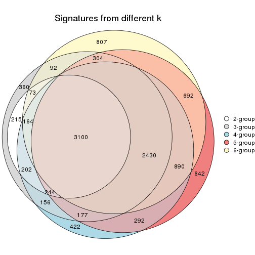
get_signature() returns a data frame invisibly. TO get the list of signatures, the function
call should be assigned to a variable explicitly. In following code, if plot argument is set
to FALSE, no heatmap is plotted while only the differential analysis is performed.
# code only for demonstration
tb = get_signature(res, k = ..., plot = FALSE)
An example of the output of tb is:
#> which_row fdr mean_1 mean_2 scaled_mean_1 scaled_mean_2 km
#> 1 38 0.042760348 8.373488 9.131774 -0.5533452 0.5164555 1
#> 2 40 0.018707592 7.106213 8.469186 -0.6173731 0.5762149 1
#> 3 55 0.019134737 10.221463 11.207825 -0.6159697 0.5749050 1
#> 4 59 0.006059896 5.921854 7.869574 -0.6899429 0.6439467 1
#> 5 60 0.018055526 8.928898 10.211722 -0.6204761 0.5791110 1
#> 6 98 0.009384629 15.714769 14.887706 0.6635654 -0.6193277 2
...
The columns in tb are:
which_row: row indices corresponding to the input matrix.fdr: FDR for the differential test. mean_x: The mean value in group x.scaled_mean_x: The mean value in group x after rows are scaled.km: Row groups if k-means clustering is applied to rows.UMAP plot which shows how samples are separated.
dimension_reduction(res, k = 2, method = "UMAP")
dimension_reduction(res, k = 3, method = "UMAP")
dimension_reduction(res, k = 4, method = "UMAP")
dimension_reduction(res, k = 5, method = "UMAP")
dimension_reduction(res, k = 6, method = "UMAP")
Following heatmap shows how subgroups are split when increasing k:
collect_classes(res)
Test correlation between subgroups and known annotations. If the known annotation is numeric, one-way ANOVA test is applied, and if the known annotation is discrete, chi-squared contingency table test is applied.
test_to_known_factors(res)
#> n gender(p) disease.state(p) other(p) k
#> MAD:mclust 129 0.101 0.8156 0.380 2
#> MAD:mclust 119 0.148 0.7224 0.261 3
#> MAD:mclust 101 0.454 0.4556 0.486 4
#> MAD:mclust 98 0.509 0.0171 0.117 5
#> MAD:mclust 93 0.325 0.3248 0.721 6
If matrix rows can be associated to genes, consider to use functional_enrichment(res,
...) to perform function enrichment for the signature genes. See this vignette for more detailed explanations.
The object with results only for a single top-value method and a single partition method can be extracted as:
res = res_list["MAD", "NMF"]
# you can also extract it by
# res = res_list["MAD:NMF"]
A summary of res and all the functions that can be applied to it:
res
#> A 'ConsensusPartition' object with k = 2, 3, 4, 5, 6.
#> On a matrix with 21168 rows and 130 columns.
#> Top rows (1000, 2000, 3000, 4000, 5000) are extracted by 'MAD' method.
#> Subgroups are detected by 'NMF' method.
#> Performed in total 1250 partitions by row resampling.
#> Best k for subgroups seems to be 2.
#>
#> Following methods can be applied to this 'ConsensusPartition' object:
#> [1] "cola_report" "collect_classes" "collect_plots"
#> [4] "collect_stats" "colnames" "compare_signatures"
#> [7] "consensus_heatmap" "dimension_reduction" "functional_enrichment"
#> [10] "get_anno_col" "get_anno" "get_classes"
#> [13] "get_consensus" "get_matrix" "get_membership"
#> [16] "get_param" "get_signatures" "get_stats"
#> [19] "is_best_k" "is_stable_k" "membership_heatmap"
#> [22] "ncol" "nrow" "plot_ecdf"
#> [25] "rownames" "select_partition_number" "show"
#> [28] "suggest_best_k" "test_to_known_factors"
collect_plots() function collects all the plots made from res for all k (number of partitions)
into one single page to provide an easy and fast comparison between different k.
collect_plots(res)
The plots are:
k and the heatmap of
predicted classes for each k.k.k.k.All the plots in panels can be made by individual functions and they are plotted later in this section.
select_partition_number() produces several plots showing different
statistics for choosing “optimized” k. There are following statistics:
k;k, the area increased is defined as \(A_k - A_{k-1}\).The detailed explanations of these statistics can be found in the cola vignette.
Generally speaking, lower PAC score, higher mean silhouette score or higher
concordance corresponds to better partition. Rand index and Jaccard index
measure how similar the current partition is compared to partition with k-1.
If they are too similar, we won't accept k is better than k-1.
select_partition_number(res)
The numeric values for all these statistics can be obtained by get_stats().
get_stats(res)
#> k 1-PAC mean_silhouette concordance area_increased Rand Jaccard
#> 2 2 0.859 0.930 0.968 0.4968 0.504 0.504
#> 3 3 0.459 0.486 0.706 0.3252 0.711 0.487
#> 4 4 0.472 0.610 0.762 0.1091 0.694 0.328
#> 5 5 0.548 0.471 0.693 0.0830 0.871 0.576
#> 6 6 0.609 0.468 0.679 0.0429 0.881 0.533
suggest_best_k() suggests the best \(k\) based on these statistics. The rules are as follows:
suggest_best_k(res)
#> [1] 2
Following shows the table of the partitions (You need to click the show/hide
code output link to see it). The membership matrix (columns with name p*)
is inferred by
clue::cl_consensus()
function with the SE method. Basically the value in the membership matrix
represents the probability to belong to a certain group. The finall class
label for an item is determined with the group with highest probability it
belongs to.
In get_classes() function, the entropy is calculated from the membership
matrix and the silhouette score is calculated from the consensus matrix.
cbind(get_classes(res, k = 2), get_membership(res, k = 2))
#> class entropy silhouette p1 p2
#> GSM102191 2 0.0000 0.961 0.000 1.000
#> GSM102240 1 0.0000 0.973 1.000 0.000
#> GSM102175 1 0.0000 0.973 1.000 0.000
#> GSM102134 2 0.0000 0.961 0.000 1.000
#> GSM102171 1 0.0000 0.973 1.000 0.000
#> GSM102178 1 0.0000 0.973 1.000 0.000
#> GSM102198 2 0.0000 0.961 0.000 1.000
#> GSM102221 1 0.0000 0.973 1.000 0.000
#> GSM102223 2 0.0000 0.961 0.000 1.000
#> GSM102229 2 0.5408 0.858 0.124 0.876
#> GSM102153 1 0.0000 0.973 1.000 0.000
#> GSM102220 2 0.3114 0.924 0.056 0.944
#> GSM102202 2 0.0000 0.961 0.000 1.000
#> GSM102123 1 0.0000 0.973 1.000 0.000
#> GSM102125 2 0.0000 0.961 0.000 1.000
#> GSM102136 2 0.0000 0.961 0.000 1.000
#> GSM102197 2 0.1843 0.944 0.028 0.972
#> GSM102131 2 0.8608 0.631 0.284 0.716
#> GSM102132 1 0.0000 0.973 1.000 0.000
#> GSM102212 2 0.0000 0.961 0.000 1.000
#> GSM102117 2 0.9795 0.300 0.416 0.584
#> GSM102124 2 0.0000 0.961 0.000 1.000
#> GSM102172 1 0.0000 0.973 1.000 0.000
#> GSM102199 2 0.0000 0.961 0.000 1.000
#> GSM102203 1 0.2423 0.940 0.960 0.040
#> GSM102213 2 0.2236 0.938 0.036 0.964
#> GSM102165 2 0.4690 0.886 0.100 0.900
#> GSM102180 2 0.0000 0.961 0.000 1.000
#> GSM102184 2 0.9248 0.515 0.340 0.660
#> GSM102225 2 0.0376 0.959 0.004 0.996
#> GSM102230 1 0.0000 0.973 1.000 0.000
#> GSM102133 2 0.0000 0.961 0.000 1.000
#> GSM102166 1 0.0000 0.973 1.000 0.000
#> GSM102235 1 0.0000 0.973 1.000 0.000
#> GSM102196 1 0.0000 0.973 1.000 0.000
#> GSM102243 1 0.0000 0.973 1.000 0.000
#> GSM102135 2 0.0000 0.961 0.000 1.000
#> GSM102139 2 0.0000 0.961 0.000 1.000
#> GSM102151 2 0.0000 0.961 0.000 1.000
#> GSM102193 2 0.0000 0.961 0.000 1.000
#> GSM102200 1 0.0000 0.973 1.000 0.000
#> GSM102204 2 0.0000 0.961 0.000 1.000
#> GSM102145 2 0.0000 0.961 0.000 1.000
#> GSM102142 2 0.0000 0.961 0.000 1.000
#> GSM102179 2 0.0000 0.961 0.000 1.000
#> GSM102181 1 0.4939 0.870 0.892 0.108
#> GSM102154 2 0.4431 0.893 0.092 0.908
#> GSM102152 2 0.0000 0.961 0.000 1.000
#> GSM102162 2 0.0000 0.961 0.000 1.000
#> GSM102187 2 0.1184 0.952 0.016 0.984
#> GSM102116 1 0.0672 0.967 0.992 0.008
#> GSM102150 1 0.0000 0.973 1.000 0.000
#> GSM102227 2 0.0000 0.961 0.000 1.000
#> GSM102114 1 0.0000 0.973 1.000 0.000
#> GSM102177 1 0.0000 0.973 1.000 0.000
#> GSM102160 2 0.0000 0.961 0.000 1.000
#> GSM102161 1 0.0000 0.973 1.000 0.000
#> GSM102170 2 0.0000 0.961 0.000 1.000
#> GSM102205 1 0.8763 0.576 0.704 0.296
#> GSM102118 1 0.0000 0.973 1.000 0.000
#> GSM102156 1 0.6531 0.791 0.832 0.168
#> GSM102238 1 0.0000 0.973 1.000 0.000
#> GSM102143 2 0.8327 0.668 0.264 0.736
#> GSM102144 2 0.0000 0.961 0.000 1.000
#> GSM102209 2 0.0000 0.961 0.000 1.000
#> GSM102210 2 0.0672 0.957 0.008 0.992
#> GSM102140 2 0.0938 0.955 0.012 0.988
#> GSM102242 1 0.2778 0.933 0.952 0.048
#> GSM102141 2 0.5946 0.836 0.144 0.856
#> GSM102120 2 0.7139 0.770 0.196 0.804
#> GSM102127 2 0.8207 0.680 0.256 0.744
#> GSM102149 1 0.0000 0.973 1.000 0.000
#> GSM102232 2 0.0000 0.961 0.000 1.000
#> GSM102222 2 0.0000 0.961 0.000 1.000
#> GSM102236 1 0.0000 0.973 1.000 0.000
#> GSM102215 2 0.0000 0.961 0.000 1.000
#> GSM102194 2 0.0000 0.961 0.000 1.000
#> GSM102208 2 0.0000 0.961 0.000 1.000
#> GSM102130 2 0.0000 0.961 0.000 1.000
#> GSM102188 1 0.0000 0.973 1.000 0.000
#> GSM102233 1 0.0000 0.973 1.000 0.000
#> GSM102189 2 0.0000 0.961 0.000 1.000
#> GSM102234 2 0.0000 0.961 0.000 1.000
#> GSM102237 1 0.0000 0.973 1.000 0.000
#> GSM102159 1 0.0000 0.973 1.000 0.000
#> GSM102155 1 0.1414 0.957 0.980 0.020
#> GSM102137 1 0.4815 0.875 0.896 0.104
#> GSM102217 2 0.0672 0.957 0.008 0.992
#> GSM102126 1 0.8763 0.575 0.704 0.296
#> GSM102157 2 0.0000 0.961 0.000 1.000
#> GSM102163 1 0.0000 0.973 1.000 0.000
#> GSM102182 1 0.0000 0.973 1.000 0.000
#> GSM102167 2 0.0000 0.961 0.000 1.000
#> GSM102206 1 0.0000 0.973 1.000 0.000
#> GSM102224 2 0.0000 0.961 0.000 1.000
#> GSM102164 2 0.0000 0.961 0.000 1.000
#> GSM102174 1 0.0000 0.973 1.000 0.000
#> GSM102214 2 0.0376 0.959 0.004 0.996
#> GSM102226 2 0.0000 0.961 0.000 1.000
#> GSM102195 2 0.0000 0.961 0.000 1.000
#> GSM102218 1 0.9129 0.506 0.672 0.328
#> GSM102128 2 0.0000 0.961 0.000 1.000
#> GSM102168 1 0.0000 0.973 1.000 0.000
#> GSM102190 1 0.0000 0.973 1.000 0.000
#> GSM102201 2 0.3584 0.910 0.068 0.932
#> GSM102129 2 0.0000 0.961 0.000 1.000
#> GSM102192 1 0.0000 0.973 1.000 0.000
#> GSM102183 2 0.2778 0.930 0.048 0.952
#> GSM102185 1 0.0000 0.973 1.000 0.000
#> GSM102158 2 0.5059 0.866 0.112 0.888
#> GSM102169 2 0.0376 0.959 0.004 0.996
#> GSM102216 1 0.0000 0.973 1.000 0.000
#> GSM102219 1 0.0000 0.973 1.000 0.000
#> GSM102231 2 0.0000 0.961 0.000 1.000
#> GSM102147 2 0.0000 0.961 0.000 1.000
#> GSM102176 1 0.0000 0.973 1.000 0.000
#> GSM102148 1 0.0000 0.973 1.000 0.000
#> GSM102146 1 0.0000 0.973 1.000 0.000
#> GSM102241 1 0.0000 0.973 1.000 0.000
#> GSM102211 1 0.0000 0.973 1.000 0.000
#> GSM102115 1 0.0000 0.973 1.000 0.000
#> GSM102173 1 0.0000 0.973 1.000 0.000
#> GSM102138 2 0.0000 0.961 0.000 1.000
#> GSM102228 1 0.0376 0.970 0.996 0.004
#> GSM102207 2 0.4298 0.895 0.088 0.912
#> GSM102122 1 0.0000 0.973 1.000 0.000
#> GSM102119 2 0.0000 0.961 0.000 1.000
#> GSM102186 2 0.0000 0.961 0.000 1.000
#> GSM102239 1 0.0000 0.973 1.000 0.000
#> GSM102121 2 0.0000 0.961 0.000 1.000
cbind(get_classes(res, k = 3), get_membership(res, k = 3))
#> class entropy silhouette p1 p2 p3
#> GSM102191 2 0.5138 0.35095 0.000 0.748 0.252
#> GSM102240 2 0.6180 0.12156 0.416 0.584 0.000
#> GSM102175 1 0.3619 0.72283 0.864 0.136 0.000
#> GSM102134 2 0.5497 0.29391 0.000 0.708 0.292
#> GSM102171 1 0.1643 0.77262 0.956 0.000 0.044
#> GSM102178 1 0.5363 0.67659 0.724 0.000 0.276
#> GSM102198 2 0.6204 -0.04494 0.000 0.576 0.424
#> GSM102221 1 0.6302 0.14260 0.520 0.480 0.000
#> GSM102223 3 0.5591 0.57664 0.000 0.304 0.696
#> GSM102229 3 0.3263 0.64860 0.040 0.048 0.912
#> GSM102153 1 0.4605 0.66760 0.796 0.204 0.000
#> GSM102220 3 0.4015 0.65987 0.028 0.096 0.876
#> GSM102202 2 0.1647 0.52145 0.004 0.960 0.036
#> GSM102123 1 0.5363 0.67653 0.724 0.000 0.276
#> GSM102125 3 0.6307 0.29098 0.000 0.488 0.512
#> GSM102136 2 0.2998 0.54022 0.068 0.916 0.016
#> GSM102197 3 0.2625 0.60863 0.084 0.000 0.916
#> GSM102131 3 0.3116 0.59361 0.108 0.000 0.892
#> GSM102132 1 0.5216 0.69104 0.740 0.000 0.260
#> GSM102212 2 0.6267 -0.14552 0.000 0.548 0.452
#> GSM102117 2 0.4931 0.41968 0.232 0.768 0.000
#> GSM102124 3 0.5760 0.55177 0.000 0.328 0.672
#> GSM102172 1 0.5254 0.60150 0.736 0.264 0.000
#> GSM102199 3 0.5497 0.58743 0.000 0.292 0.708
#> GSM102203 2 0.5810 0.27609 0.336 0.664 0.000
#> GSM102213 2 0.4399 0.46581 0.188 0.812 0.000
#> GSM102165 3 0.3038 0.59583 0.104 0.000 0.896
#> GSM102180 2 0.5591 0.26862 0.000 0.696 0.304
#> GSM102184 3 0.3765 0.62345 0.084 0.028 0.888
#> GSM102225 3 0.5138 0.61979 0.000 0.252 0.748
#> GSM102230 1 0.1643 0.76706 0.956 0.044 0.000
#> GSM102133 3 0.6154 0.44881 0.000 0.408 0.592
#> GSM102166 1 0.2711 0.75011 0.912 0.088 0.000
#> GSM102235 1 0.5431 0.66796 0.716 0.000 0.284
#> GSM102196 1 0.1860 0.76551 0.948 0.052 0.000
#> GSM102243 1 0.5138 0.61571 0.748 0.252 0.000
#> GSM102135 3 0.4931 0.62999 0.000 0.232 0.768
#> GSM102139 2 0.4346 0.42992 0.000 0.816 0.184
#> GSM102151 2 0.3816 0.46094 0.000 0.852 0.148
#> GSM102193 2 0.6180 -0.03186 0.000 0.584 0.416
#> GSM102200 1 0.2682 0.76858 0.920 0.004 0.076
#> GSM102204 2 0.6154 0.00467 0.000 0.592 0.408
#> GSM102145 3 0.3752 0.65746 0.000 0.144 0.856
#> GSM102142 2 0.4291 0.43258 0.000 0.820 0.180
#> GSM102179 3 0.6126 0.46059 0.000 0.400 0.600
#> GSM102181 3 0.6280 -0.19759 0.460 0.000 0.540
#> GSM102154 3 0.2297 0.64117 0.036 0.020 0.944
#> GSM102152 3 0.5882 0.53239 0.000 0.348 0.652
#> GSM102162 3 0.6180 0.43528 0.000 0.416 0.584
#> GSM102187 3 0.5285 0.62257 0.004 0.244 0.752
#> GSM102116 2 0.6286 -0.01334 0.464 0.536 0.000
#> GSM102150 1 0.3043 0.75731 0.908 0.084 0.008
#> GSM102227 3 0.1129 0.65081 0.004 0.020 0.976
#> GSM102114 1 0.1411 0.77331 0.964 0.000 0.036
#> GSM102177 2 0.6126 0.14889 0.400 0.600 0.000
#> GSM102160 2 0.6309 -0.27493 0.000 0.500 0.500
#> GSM102161 1 0.4842 0.64639 0.776 0.224 0.000
#> GSM102170 3 0.6305 0.29991 0.000 0.484 0.516
#> GSM102205 3 0.6244 -0.12812 0.440 0.000 0.560
#> GSM102118 1 0.5760 0.61617 0.672 0.000 0.328
#> GSM102156 1 0.6869 0.43242 0.560 0.016 0.424
#> GSM102238 1 0.0424 0.77264 0.992 0.008 0.000
#> GSM102143 3 0.3896 0.58314 0.128 0.008 0.864
#> GSM102144 2 0.2625 0.54162 0.084 0.916 0.000
#> GSM102209 3 0.5178 0.61737 0.000 0.256 0.744
#> GSM102210 3 0.4974 0.62741 0.000 0.236 0.764
#> GSM102140 3 0.3267 0.66178 0.000 0.116 0.884
#> GSM102242 3 0.5926 0.12552 0.356 0.000 0.644
#> GSM102141 3 0.3116 0.59254 0.108 0.000 0.892
#> GSM102120 3 0.2448 0.61280 0.076 0.000 0.924
#> GSM102127 3 0.2959 0.59862 0.100 0.000 0.900
#> GSM102149 1 0.2261 0.76030 0.932 0.068 0.000
#> GSM102232 3 0.5291 0.60546 0.000 0.268 0.732
#> GSM102222 3 0.6274 0.35521 0.000 0.456 0.544
#> GSM102236 1 0.5465 0.56427 0.712 0.288 0.000
#> GSM102215 2 0.4842 0.38785 0.000 0.776 0.224
#> GSM102194 2 0.5810 0.19596 0.000 0.664 0.336
#> GSM102208 3 0.6295 0.32175 0.000 0.472 0.528
#> GSM102130 3 0.6235 0.39960 0.000 0.436 0.564
#> GSM102188 1 0.4974 0.70967 0.764 0.000 0.236
#> GSM102233 1 0.3752 0.74879 0.856 0.000 0.144
#> GSM102189 2 0.6280 -0.17294 0.000 0.540 0.460
#> GSM102234 3 0.1399 0.65305 0.004 0.028 0.968
#> GSM102237 1 0.4002 0.70861 0.840 0.160 0.000
#> GSM102159 1 0.5760 0.61443 0.672 0.000 0.328
#> GSM102155 1 0.5591 0.64690 0.696 0.000 0.304
#> GSM102137 2 0.6260 0.03631 0.448 0.552 0.000
#> GSM102217 2 0.4062 0.44892 0.000 0.836 0.164
#> GSM102126 3 0.6111 -0.00286 0.396 0.000 0.604
#> GSM102157 3 0.4842 0.63203 0.000 0.224 0.776
#> GSM102163 1 0.3686 0.75017 0.860 0.000 0.140
#> GSM102182 2 0.5835 0.26593 0.340 0.660 0.000
#> GSM102167 2 0.5397 0.31292 0.000 0.720 0.280
#> GSM102206 1 0.2443 0.77473 0.940 0.032 0.028
#> GSM102224 3 0.6299 0.31391 0.000 0.476 0.524
#> GSM102164 3 0.6302 0.30507 0.000 0.480 0.520
#> GSM102174 2 0.6252 0.04214 0.444 0.556 0.000
#> GSM102214 3 0.2590 0.66076 0.004 0.072 0.924
#> GSM102226 3 0.3784 0.66117 0.004 0.132 0.864
#> GSM102195 3 0.3619 0.65938 0.000 0.136 0.864
#> GSM102218 3 0.4504 0.49766 0.196 0.000 0.804
#> GSM102128 2 0.5926 0.15088 0.000 0.644 0.356
#> GSM102168 1 0.4555 0.72697 0.800 0.000 0.200
#> GSM102190 2 0.6286 -0.03314 0.464 0.536 0.000
#> GSM102201 2 0.3325 0.54011 0.076 0.904 0.020
#> GSM102129 3 0.2356 0.66078 0.000 0.072 0.928
#> GSM102192 1 0.3686 0.72146 0.860 0.140 0.000
#> GSM102183 3 0.9284 0.39313 0.192 0.296 0.512
#> GSM102185 1 0.2066 0.76315 0.940 0.060 0.000
#> GSM102158 2 0.4555 0.45423 0.200 0.800 0.000
#> GSM102169 3 0.1751 0.64096 0.028 0.012 0.960
#> GSM102216 1 0.3359 0.76858 0.900 0.016 0.084
#> GSM102219 1 0.1453 0.77440 0.968 0.008 0.024
#> GSM102231 3 0.3482 0.66078 0.000 0.128 0.872
#> GSM102147 2 0.1170 0.52908 0.008 0.976 0.016
#> GSM102176 1 0.5591 0.54155 0.696 0.304 0.000
#> GSM102148 1 0.6008 0.54782 0.628 0.000 0.372
#> GSM102146 1 0.5138 0.61569 0.748 0.252 0.000
#> GSM102241 1 0.0892 0.77148 0.980 0.020 0.000
#> GSM102211 1 0.1964 0.76465 0.944 0.056 0.000
#> GSM102115 2 0.6045 0.19196 0.380 0.620 0.000
#> GSM102173 1 0.2878 0.74593 0.904 0.096 0.000
#> GSM102138 2 0.6154 0.00370 0.000 0.592 0.408
#> GSM102228 1 0.5254 0.68982 0.736 0.000 0.264
#> GSM102207 3 0.2959 0.59867 0.100 0.000 0.900
#> GSM102122 1 0.4605 0.72583 0.796 0.000 0.204
#> GSM102119 3 0.5810 0.54489 0.000 0.336 0.664
#> GSM102186 2 0.1399 0.52442 0.004 0.968 0.028
#> GSM102239 2 0.6260 0.02720 0.448 0.552 0.000
#> GSM102121 3 0.6215 0.41545 0.000 0.428 0.572
cbind(get_classes(res, k = 4), get_membership(res, k = 4))
#> class entropy silhouette p1 p2 p3 p4
#> GSM102191 2 0.290 0.7991 0.024 0.904 0.012 0.060
#> GSM102240 4 0.168 0.7720 0.040 0.012 0.000 0.948
#> GSM102175 1 0.687 0.3388 0.484 0.000 0.104 0.412
#> GSM102134 2 0.282 0.7866 0.064 0.900 0.000 0.036
#> GSM102171 1 0.725 0.5641 0.524 0.000 0.300 0.176
#> GSM102178 3 0.389 0.6189 0.068 0.000 0.844 0.088
#> GSM102198 2 0.264 0.7890 0.060 0.908 0.000 0.032
#> GSM102221 4 0.289 0.7309 0.124 0.000 0.004 0.872
#> GSM102223 2 0.286 0.7884 0.044 0.904 0.048 0.004
#> GSM102229 3 0.279 0.7160 0.012 0.072 0.904 0.012
#> GSM102153 1 0.485 0.5535 0.712 0.000 0.020 0.268
#> GSM102220 3 0.329 0.7102 0.008 0.072 0.884 0.036
#> GSM102202 4 0.395 0.6551 0.012 0.172 0.004 0.812
#> GSM102123 1 0.423 0.5804 0.764 0.004 0.228 0.004
#> GSM102125 2 0.214 0.8023 0.008 0.932 0.052 0.008
#> GSM102136 2 0.526 0.6574 0.204 0.732 0.000 0.064
#> GSM102197 3 0.568 0.3989 0.044 0.316 0.640 0.000
#> GSM102131 3 0.710 0.1184 0.128 0.400 0.472 0.000
#> GSM102132 3 0.593 0.1744 0.356 0.000 0.596 0.048
#> GSM102212 2 0.191 0.8033 0.000 0.940 0.020 0.040
#> GSM102117 4 0.170 0.7586 0.004 0.028 0.016 0.952
#> GSM102124 2 0.477 0.6697 0.000 0.724 0.256 0.020
#> GSM102172 4 0.467 0.6210 0.132 0.000 0.076 0.792
#> GSM102199 2 0.585 0.5585 0.020 0.648 0.308 0.024
#> GSM102203 1 0.757 -0.2139 0.412 0.192 0.000 0.396
#> GSM102213 4 0.238 0.7416 0.004 0.072 0.008 0.916
#> GSM102165 3 0.136 0.7127 0.008 0.032 0.960 0.000
#> GSM102180 2 0.420 0.7697 0.000 0.804 0.032 0.164
#> GSM102184 3 0.204 0.7144 0.004 0.048 0.936 0.012
#> GSM102225 2 0.459 0.6565 0.280 0.712 0.008 0.000
#> GSM102230 1 0.763 0.5271 0.472 0.000 0.264 0.264
#> GSM102133 2 0.433 0.7564 0.000 0.800 0.160 0.040
#> GSM102166 1 0.779 0.3696 0.380 0.000 0.244 0.376
#> GSM102235 3 0.507 0.4934 0.200 0.000 0.744 0.056
#> GSM102196 1 0.345 0.6469 0.868 0.000 0.052 0.080
#> GSM102243 1 0.492 0.4624 0.756 0.192 0.000 0.052
#> GSM102135 2 0.490 0.6776 0.040 0.744 0.216 0.000
#> GSM102139 2 0.541 0.4629 0.000 0.604 0.020 0.376
#> GSM102151 2 0.401 0.7553 0.100 0.836 0.000 0.064
#> GSM102193 2 0.419 0.7912 0.000 0.824 0.064 0.112
#> GSM102200 1 0.555 0.6666 0.728 0.000 0.160 0.112
#> GSM102204 2 0.216 0.8009 0.004 0.928 0.008 0.060
#> GSM102145 3 0.571 0.1608 0.008 0.408 0.568 0.016
#> GSM102142 2 0.316 0.7794 0.064 0.884 0.000 0.052
#> GSM102179 2 0.340 0.7944 0.000 0.868 0.092 0.040
#> GSM102181 1 0.744 0.1538 0.512 0.252 0.236 0.000
#> GSM102154 3 0.391 0.6296 0.004 0.212 0.784 0.000
#> GSM102152 2 0.619 0.6638 0.008 0.672 0.232 0.088
#> GSM102162 2 0.270 0.8011 0.000 0.904 0.068 0.028
#> GSM102187 2 0.362 0.7767 0.036 0.852 0.112 0.000
#> GSM102116 4 0.210 0.7682 0.060 0.012 0.000 0.928
#> GSM102150 1 0.756 0.4284 0.452 0.000 0.200 0.348
#> GSM102227 3 0.444 0.6136 0.020 0.216 0.764 0.000
#> GSM102114 1 0.605 0.6533 0.684 0.000 0.184 0.132
#> GSM102177 4 0.391 0.7485 0.140 0.032 0.000 0.828
#> GSM102160 2 0.434 0.7880 0.000 0.808 0.052 0.140
#> GSM102161 4 0.568 0.4947 0.208 0.000 0.088 0.704
#> GSM102170 2 0.422 0.7848 0.000 0.824 0.100 0.076
#> GSM102205 1 0.549 0.4173 0.700 0.240 0.060 0.000
#> GSM102118 3 0.349 0.6360 0.092 0.000 0.864 0.044
#> GSM102156 3 0.369 0.6708 0.036 0.024 0.872 0.068
#> GSM102238 1 0.644 0.6352 0.648 0.000 0.172 0.180
#> GSM102143 3 0.228 0.7110 0.000 0.096 0.904 0.000
#> GSM102144 4 0.557 0.5191 0.048 0.284 0.000 0.668
#> GSM102209 2 0.505 0.6952 0.232 0.732 0.032 0.004
#> GSM102210 2 0.359 0.7840 0.052 0.860 0.088 0.000
#> GSM102140 2 0.612 0.4585 0.060 0.588 0.352 0.000
#> GSM102242 3 0.193 0.6853 0.036 0.000 0.940 0.024
#> GSM102141 3 0.572 0.5367 0.068 0.252 0.680 0.000
#> GSM102120 2 0.654 0.4782 0.108 0.600 0.292 0.000
#> GSM102127 3 0.182 0.7149 0.008 0.044 0.944 0.004
#> GSM102149 1 0.296 0.5767 0.904 0.048 0.012 0.036
#> GSM102232 2 0.467 0.6904 0.012 0.748 0.232 0.008
#> GSM102222 2 0.199 0.7918 0.052 0.936 0.004 0.008
#> GSM102236 1 0.559 0.1226 0.528 0.000 0.020 0.452
#> GSM102215 2 0.395 0.7637 0.012 0.820 0.008 0.160
#> GSM102194 2 0.396 0.7823 0.000 0.824 0.032 0.144
#> GSM102208 2 0.745 0.2126 0.000 0.452 0.372 0.176
#> GSM102130 2 0.293 0.7993 0.000 0.896 0.056 0.048
#> GSM102188 1 0.474 0.6174 0.736 0.000 0.240 0.024
#> GSM102233 1 0.485 0.6659 0.772 0.000 0.164 0.064
#> GSM102189 2 0.553 0.7481 0.000 0.732 0.124 0.144
#> GSM102234 3 0.234 0.7093 0.000 0.100 0.900 0.000
#> GSM102237 4 0.576 0.4868 0.128 0.000 0.160 0.712
#> GSM102159 3 0.401 0.6081 0.148 0.000 0.820 0.032
#> GSM102155 3 0.450 0.6033 0.116 0.008 0.816 0.060
#> GSM102137 1 0.602 0.2968 0.612 0.328 0.000 0.060
#> GSM102217 2 0.476 0.7071 0.044 0.764 0.000 0.192
#> GSM102126 3 0.149 0.6944 0.044 0.004 0.952 0.000
#> GSM102157 3 0.503 0.6638 0.000 0.140 0.768 0.092
#> GSM102163 3 0.698 0.0987 0.252 0.000 0.576 0.172
#> GSM102182 4 0.108 0.7675 0.020 0.004 0.004 0.972
#> GSM102167 2 0.438 0.7618 0.004 0.796 0.028 0.172
#> GSM102206 3 0.723 -0.0615 0.152 0.000 0.496 0.352
#> GSM102224 2 0.207 0.8034 0.012 0.940 0.016 0.032
#> GSM102164 2 0.338 0.7954 0.000 0.872 0.076 0.052
#> GSM102174 4 0.238 0.7710 0.068 0.016 0.000 0.916
#> GSM102214 2 0.478 0.7231 0.152 0.780 0.068 0.000
#> GSM102226 2 0.568 0.5974 0.064 0.680 0.256 0.000
#> GSM102195 2 0.563 0.4304 0.028 0.588 0.384 0.000
#> GSM102218 3 0.240 0.7114 0.032 0.048 0.920 0.000
#> GSM102128 2 0.576 0.6791 0.000 0.668 0.064 0.268
#> GSM102168 3 0.563 0.4629 0.132 0.000 0.724 0.144
#> GSM102190 4 0.560 0.4339 0.352 0.032 0.000 0.616
#> GSM102201 4 0.343 0.7168 0.008 0.104 0.020 0.868
#> GSM102129 3 0.415 0.6309 0.004 0.204 0.784 0.008
#> GSM102192 4 0.576 0.4198 0.232 0.000 0.080 0.688
#> GSM102183 2 0.457 0.6840 0.252 0.736 0.008 0.004
#> GSM102185 1 0.495 0.6482 0.772 0.000 0.084 0.144
#> GSM102158 4 0.261 0.7340 0.008 0.096 0.000 0.896
#> GSM102169 3 0.578 -0.1238 0.028 0.480 0.492 0.000
#> GSM102216 1 0.764 0.4218 0.416 0.000 0.376 0.208
#> GSM102219 1 0.355 0.6533 0.860 0.000 0.096 0.044
#> GSM102231 2 0.397 0.7563 0.088 0.840 0.072 0.000
#> GSM102147 2 0.525 0.6727 0.088 0.748 0.000 0.164
#> GSM102176 4 0.454 0.6377 0.164 0.000 0.048 0.788
#> GSM102148 3 0.271 0.6594 0.112 0.004 0.884 0.000
#> GSM102146 1 0.460 0.5246 0.744 0.012 0.004 0.240
#> GSM102241 1 0.449 0.6632 0.808 0.000 0.096 0.096
#> GSM102211 1 0.291 0.6368 0.896 0.000 0.040 0.064
#> GSM102115 4 0.467 0.7047 0.200 0.036 0.000 0.764
#> GSM102173 1 0.754 0.4501 0.456 0.000 0.196 0.348
#> GSM102138 2 0.408 0.7944 0.004 0.828 0.036 0.132
#> GSM102228 3 0.434 0.5891 0.048 0.004 0.816 0.132
#> GSM102207 3 0.365 0.6909 0.028 0.128 0.844 0.000
#> GSM102122 1 0.574 0.5955 0.664 0.000 0.276 0.060
#> GSM102119 2 0.571 0.6357 0.008 0.680 0.268 0.044
#> GSM102186 4 0.360 0.6903 0.000 0.124 0.028 0.848
#> GSM102239 4 0.305 0.7619 0.108 0.016 0.000 0.876
#> GSM102121 2 0.270 0.7984 0.000 0.904 0.068 0.028
cbind(get_classes(res, k = 5), get_membership(res, k = 5))
#> class entropy silhouette p1 p2 p3 p4 p5
#> GSM102191 2 0.1569 0.82380 0.008 0.948 0.000 0.012 0.032
#> GSM102240 5 0.2770 0.60697 0.008 0.000 0.004 0.124 0.864
#> GSM102175 1 0.4450 0.43921 0.728 0.000 0.016 0.020 0.236
#> GSM102134 2 0.5799 0.45494 0.008 0.616 0.012 0.296 0.068
#> GSM102171 1 0.3584 0.55100 0.820 0.000 0.148 0.020 0.012
#> GSM102178 3 0.5627 0.16205 0.400 0.004 0.544 0.036 0.016
#> GSM102198 2 0.3828 0.72288 0.000 0.788 0.008 0.184 0.020
#> GSM102221 5 0.4450 0.54798 0.188 0.012 0.000 0.044 0.756
#> GSM102223 2 0.4143 0.67788 0.000 0.764 0.036 0.196 0.004
#> GSM102229 3 0.4389 0.60163 0.040 0.000 0.772 0.168 0.020
#> GSM102153 1 0.5016 0.57402 0.732 0.000 0.016 0.160 0.092
#> GSM102220 3 0.4949 0.62795 0.036 0.056 0.788 0.084 0.036
#> GSM102202 5 0.4518 0.48565 0.004 0.048 0.000 0.216 0.732
#> GSM102123 1 0.6682 -0.05945 0.396 0.000 0.236 0.368 0.000
#> GSM102125 2 0.0510 0.82299 0.000 0.984 0.000 0.000 0.016
#> GSM102136 2 0.6944 0.09459 0.064 0.472 0.000 0.372 0.092
#> GSM102197 3 0.5479 0.47167 0.004 0.120 0.660 0.216 0.000
#> GSM102131 3 0.5707 0.24376 0.016 0.040 0.532 0.408 0.004
#> GSM102132 3 0.5322 0.23169 0.392 0.000 0.552 0.056 0.000
#> GSM102212 2 0.1074 0.82348 0.000 0.968 0.004 0.012 0.016
#> GSM102117 5 0.2644 0.64631 0.036 0.008 0.008 0.044 0.904
#> GSM102124 2 0.4635 0.59965 0.000 0.728 0.220 0.040 0.012
#> GSM102172 1 0.5776 0.18290 0.544 0.004 0.024 0.036 0.392
#> GSM102199 4 0.7250 0.23106 0.004 0.060 0.344 0.472 0.120
#> GSM102203 4 0.7120 -0.10536 0.132 0.052 0.000 0.460 0.356
#> GSM102213 5 0.3022 0.59715 0.004 0.012 0.000 0.136 0.848
#> GSM102165 3 0.1893 0.65136 0.028 0.012 0.936 0.024 0.000
#> GSM102180 2 0.1502 0.82175 0.000 0.940 0.000 0.004 0.056
#> GSM102184 3 0.5085 0.53787 0.160 0.072 0.736 0.032 0.000
#> GSM102225 4 0.5695 0.23109 0.080 0.356 0.004 0.560 0.000
#> GSM102230 1 0.8064 0.33250 0.440 0.000 0.192 0.208 0.160
#> GSM102133 2 0.2026 0.80293 0.000 0.924 0.056 0.012 0.008
#> GSM102166 1 0.5678 0.45129 0.672 0.000 0.104 0.024 0.200
#> GSM102235 3 0.4812 0.29722 0.372 0.000 0.600 0.028 0.000
#> GSM102196 1 0.4173 0.49521 0.688 0.000 0.012 0.300 0.000
#> GSM102243 1 0.6439 0.25907 0.548 0.228 0.000 0.216 0.008
#> GSM102135 4 0.6937 0.23215 0.000 0.144 0.336 0.484 0.036
#> GSM102139 2 0.4010 0.68238 0.000 0.760 0.000 0.032 0.208
#> GSM102151 4 0.6304 0.30912 0.000 0.144 0.016 0.576 0.264
#> GSM102193 2 0.0963 0.82357 0.000 0.964 0.000 0.000 0.036
#> GSM102200 1 0.5035 0.50218 0.672 0.000 0.076 0.252 0.000
#> GSM102204 2 0.1911 0.81737 0.000 0.932 0.004 0.036 0.028
#> GSM102145 3 0.5253 0.45319 0.000 0.200 0.676 0.124 0.000
#> GSM102142 2 0.1815 0.82218 0.016 0.940 0.000 0.020 0.024
#> GSM102179 2 0.1475 0.82144 0.004 0.956 0.012 0.012 0.016
#> GSM102181 4 0.8456 0.23376 0.248 0.148 0.240 0.360 0.004
#> GSM102154 3 0.3427 0.63278 0.016 0.104 0.848 0.032 0.000
#> GSM102152 4 0.7447 0.21436 0.004 0.040 0.188 0.408 0.360
#> GSM102162 2 0.1393 0.82030 0.000 0.956 0.012 0.024 0.008
#> GSM102187 2 0.2993 0.79670 0.040 0.892 0.020 0.036 0.012
#> GSM102116 5 0.4073 0.58383 0.144 0.020 0.000 0.036 0.800
#> GSM102150 1 0.8490 0.02922 0.288 0.000 0.168 0.272 0.272
#> GSM102227 3 0.3768 0.62295 0.016 0.020 0.808 0.156 0.000
#> GSM102114 1 0.3856 0.59415 0.812 0.000 0.032 0.140 0.016
#> GSM102177 5 0.5933 0.42360 0.200 0.020 0.000 0.136 0.644
#> GSM102160 2 0.3020 0.80063 0.004 0.880 0.016 0.024 0.076
#> GSM102161 5 0.5735 0.11338 0.428 0.000 0.012 0.056 0.504
#> GSM102170 2 0.1564 0.81921 0.000 0.948 0.024 0.004 0.024
#> GSM102205 4 0.6157 0.13394 0.312 0.068 0.040 0.580 0.000
#> GSM102118 3 0.3035 0.65469 0.032 0.000 0.856 0.112 0.000
#> GSM102156 3 0.2984 0.63339 0.092 0.012 0.876 0.012 0.008
#> GSM102238 1 0.3191 0.58967 0.868 0.000 0.060 0.060 0.012
#> GSM102143 3 0.2535 0.65747 0.028 0.032 0.908 0.032 0.000
#> GSM102144 5 0.5104 0.46469 0.000 0.116 0.000 0.192 0.692
#> GSM102209 4 0.5811 0.50672 0.016 0.180 0.096 0.688 0.020
#> GSM102210 2 0.1235 0.81914 0.004 0.964 0.016 0.012 0.004
#> GSM102140 3 0.6695 0.10160 0.004 0.120 0.468 0.388 0.020
#> GSM102242 3 0.0807 0.65856 0.012 0.000 0.976 0.012 0.000
#> GSM102141 3 0.4582 0.49441 0.016 0.012 0.684 0.288 0.000
#> GSM102120 3 0.7488 -0.05600 0.084 0.128 0.396 0.392 0.000
#> GSM102127 3 0.2650 0.66128 0.036 0.004 0.892 0.068 0.000
#> GSM102149 4 0.4671 0.33186 0.172 0.000 0.044 0.756 0.028
#> GSM102232 2 0.4712 0.58068 0.000 0.732 0.168 0.100 0.000
#> GSM102222 2 0.2052 0.80551 0.000 0.912 0.004 0.080 0.004
#> GSM102236 1 0.6582 0.30494 0.492 0.004 0.000 0.212 0.292
#> GSM102215 5 0.6718 -0.00295 0.000 0.308 0.000 0.272 0.420
#> GSM102194 2 0.0963 0.82287 0.000 0.964 0.000 0.000 0.036
#> GSM102208 2 0.5295 0.65240 0.000 0.732 0.116 0.040 0.112
#> GSM102130 2 0.0324 0.82175 0.000 0.992 0.004 0.000 0.004
#> GSM102188 1 0.3887 0.58196 0.812 0.008 0.028 0.144 0.008
#> GSM102233 1 0.5043 0.54948 0.692 0.000 0.100 0.208 0.000
#> GSM102189 2 0.3479 0.78025 0.000 0.856 0.056 0.024 0.064
#> GSM102234 3 0.2589 0.65280 0.012 0.008 0.888 0.092 0.000
#> GSM102237 5 0.7250 0.09819 0.336 0.000 0.140 0.060 0.464
#> GSM102159 3 0.5284 0.50800 0.272 0.004 0.660 0.056 0.008
#> GSM102155 3 0.6908 0.02939 0.424 0.048 0.452 0.052 0.024
#> GSM102137 4 0.6739 0.33822 0.136 0.092 0.000 0.612 0.160
#> GSM102217 4 0.6666 0.00715 0.016 0.076 0.024 0.456 0.428
#> GSM102126 3 0.1914 0.65217 0.056 0.008 0.928 0.008 0.000
#> GSM102157 3 0.5970 0.51935 0.144 0.112 0.692 0.040 0.012
#> GSM102163 1 0.5347 0.17716 0.556 0.000 0.400 0.024 0.020
#> GSM102182 5 0.2686 0.63827 0.080 0.012 0.004 0.012 0.892
#> GSM102167 2 0.2932 0.78849 0.004 0.864 0.000 0.020 0.112
#> GSM102206 1 0.6930 0.11969 0.436 0.000 0.404 0.044 0.116
#> GSM102224 2 0.3293 0.77439 0.000 0.852 0.012 0.108 0.028
#> GSM102164 2 0.0579 0.82234 0.000 0.984 0.008 0.000 0.008
#> GSM102174 5 0.2152 0.64973 0.032 0.012 0.000 0.032 0.924
#> GSM102214 4 0.6471 0.08191 0.028 0.424 0.092 0.456 0.000
#> GSM102226 4 0.6536 0.13921 0.004 0.124 0.372 0.488 0.012
#> GSM102195 3 0.6562 0.06726 0.000 0.176 0.444 0.376 0.004
#> GSM102218 3 0.3648 0.60880 0.016 0.004 0.792 0.188 0.000
#> GSM102128 2 0.3504 0.75157 0.000 0.816 0.008 0.016 0.160
#> GSM102168 3 0.5289 0.07481 0.448 0.000 0.512 0.032 0.008
#> GSM102190 1 0.6425 0.39912 0.556 0.012 0.000 0.176 0.256
#> GSM102201 5 0.4442 0.46144 0.004 0.016 0.008 0.256 0.716
#> GSM102129 3 0.2853 0.64377 0.000 0.052 0.876 0.072 0.000
#> GSM102192 5 0.5629 0.18178 0.392 0.000 0.024 0.036 0.548
#> GSM102183 2 0.6362 0.28903 0.156 0.536 0.000 0.300 0.008
#> GSM102185 1 0.3246 0.56756 0.808 0.000 0.000 0.184 0.008
#> GSM102158 5 0.1403 0.64316 0.000 0.024 0.000 0.024 0.952
#> GSM102169 3 0.6193 0.26180 0.000 0.272 0.544 0.184 0.000
#> GSM102216 1 0.6938 0.19222 0.476 0.000 0.368 0.092 0.064
#> GSM102219 4 0.6344 0.23529 0.188 0.000 0.128 0.632 0.052
#> GSM102231 2 0.5302 0.40507 0.008 0.620 0.052 0.320 0.000
#> GSM102147 2 0.3805 0.75864 0.004 0.820 0.000 0.084 0.092
#> GSM102176 1 0.5306 0.18754 0.552 0.000 0.004 0.044 0.400
#> GSM102148 3 0.2645 0.65895 0.044 0.000 0.888 0.068 0.000
#> GSM102146 1 0.6599 0.22823 0.464 0.000 0.000 0.268 0.268
#> GSM102241 1 0.3812 0.54962 0.772 0.000 0.024 0.204 0.000
#> GSM102211 1 0.4306 0.46715 0.660 0.000 0.012 0.328 0.000
#> GSM102115 5 0.7452 -0.15232 0.364 0.044 0.000 0.208 0.384
#> GSM102173 1 0.4682 0.46461 0.736 0.000 0.044 0.016 0.204
#> GSM102138 5 0.7303 -0.10512 0.000 0.176 0.044 0.360 0.420
#> GSM102228 3 0.5417 0.33606 0.304 0.000 0.632 0.036 0.028
#> GSM102207 3 0.3123 0.61774 0.000 0.012 0.828 0.160 0.000
#> GSM102122 1 0.6463 0.39812 0.496 0.000 0.228 0.276 0.000
#> GSM102119 2 0.5965 0.28689 0.000 0.580 0.316 0.088 0.016
#> GSM102186 5 0.2893 0.63729 0.008 0.028 0.008 0.068 0.888
#> GSM102239 5 0.3027 0.64104 0.072 0.012 0.000 0.040 0.876
#> GSM102121 2 0.0451 0.82093 0.000 0.988 0.008 0.004 0.000
cbind(get_classes(res, k = 6), get_membership(res, k = 6))
#> class entropy silhouette p1 p2 p3 p4 p5 p6
#> GSM102191 2 0.1312 0.84375 0.008 0.956 0.000 0.012 0.004 0.020
#> GSM102240 5 0.3729 0.41706 0.012 0.000 0.000 0.296 0.692 0.000
#> GSM102175 1 0.6422 0.12621 0.448 0.000 0.004 0.016 0.244 0.288
#> GSM102134 2 0.5080 0.56312 0.000 0.628 0.024 0.300 0.008 0.040
#> GSM102171 1 0.4881 0.37517 0.688 0.000 0.016 0.032 0.028 0.236
#> GSM102178 1 0.5945 0.46664 0.668 0.012 0.172 0.036 0.068 0.044
#> GSM102198 2 0.4100 0.74452 0.000 0.756 0.020 0.192 0.008 0.024
#> GSM102221 5 0.3749 0.57950 0.056 0.000 0.004 0.016 0.808 0.116
#> GSM102223 2 0.4574 0.68150 0.000 0.708 0.092 0.192 0.000 0.008
#> GSM102229 3 0.6754 0.28942 0.316 0.000 0.412 0.232 0.036 0.004
#> GSM102153 1 0.5592 -0.07063 0.476 0.000 0.000 0.100 0.012 0.412
#> GSM102220 3 0.4694 0.62907 0.076 0.000 0.760 0.076 0.080 0.008
#> GSM102202 4 0.4413 -0.08439 0.012 0.000 0.008 0.492 0.488 0.000
#> GSM102123 6 0.7375 0.12391 0.248 0.004 0.164 0.160 0.000 0.424
#> GSM102125 2 0.1010 0.84115 0.000 0.960 0.004 0.036 0.000 0.000
#> GSM102136 2 0.5437 0.31829 0.000 0.508 0.000 0.380 0.004 0.108
#> GSM102197 3 0.2281 0.66609 0.004 0.028 0.908 0.048 0.000 0.012
#> GSM102131 3 0.3833 0.62696 0.000 0.008 0.792 0.144 0.008 0.048
#> GSM102132 3 0.6005 0.31899 0.128 0.000 0.524 0.032 0.000 0.316
#> GSM102212 2 0.1226 0.84122 0.004 0.952 0.004 0.040 0.000 0.000
#> GSM102117 5 0.2803 0.56345 0.012 0.000 0.016 0.116 0.856 0.000
#> GSM102124 2 0.4962 0.66921 0.060 0.720 0.124 0.096 0.000 0.000
#> GSM102172 1 0.6300 0.18235 0.428 0.008 0.000 0.024 0.404 0.136
#> GSM102199 4 0.6102 0.48066 0.036 0.028 0.212 0.628 0.088 0.008
#> GSM102203 4 0.6943 0.30359 0.028 0.040 0.000 0.480 0.180 0.272
#> GSM102213 5 0.4754 0.08581 0.016 0.004 0.016 0.428 0.536 0.000
#> GSM102165 3 0.4500 0.56199 0.228 0.004 0.704 0.056 0.000 0.008
#> GSM102180 2 0.1672 0.83854 0.004 0.932 0.000 0.048 0.016 0.000
#> GSM102184 1 0.6335 0.10306 0.548 0.052 0.304 0.072 0.020 0.004
#> GSM102225 6 0.6650 0.00437 0.000 0.348 0.028 0.224 0.004 0.396
#> GSM102230 1 0.5429 0.42543 0.660 0.000 0.048 0.228 0.020 0.044
#> GSM102133 2 0.1794 0.83582 0.016 0.932 0.028 0.024 0.000 0.000
#> GSM102166 1 0.4988 0.39927 0.668 0.000 0.000 0.008 0.136 0.188
#> GSM102235 1 0.5654 0.43668 0.640 0.000 0.204 0.048 0.004 0.104
#> GSM102196 6 0.3390 0.46601 0.160 0.000 0.000 0.028 0.008 0.804
#> GSM102243 6 0.4779 0.37617 0.028 0.300 0.000 0.024 0.004 0.644
#> GSM102135 3 0.5170 0.32052 0.000 0.028 0.556 0.384 0.016 0.016
#> GSM102139 2 0.3521 0.74433 0.000 0.796 0.004 0.044 0.156 0.000
#> GSM102151 4 0.5584 0.49910 0.000 0.028 0.068 0.684 0.164 0.056
#> GSM102193 2 0.0520 0.83962 0.000 0.984 0.008 0.008 0.000 0.000
#> GSM102200 6 0.5265 0.41633 0.160 0.000 0.092 0.052 0.004 0.692
#> GSM102204 2 0.1327 0.83718 0.000 0.936 0.000 0.064 0.000 0.000
#> GSM102145 3 0.2898 0.66072 0.016 0.068 0.872 0.040 0.004 0.000
#> GSM102142 2 0.1434 0.84428 0.000 0.948 0.000 0.028 0.012 0.012
#> GSM102179 2 0.1036 0.84214 0.000 0.964 0.000 0.024 0.008 0.004
#> GSM102181 3 0.5647 0.43259 0.008 0.036 0.572 0.048 0.004 0.332
#> GSM102154 3 0.6558 0.29001 0.368 0.076 0.452 0.100 0.000 0.004
#> GSM102152 4 0.5736 0.30925 0.004 0.000 0.164 0.508 0.324 0.000
#> GSM102162 2 0.2918 0.80043 0.000 0.856 0.088 0.052 0.000 0.004
#> GSM102187 2 0.2357 0.82254 0.000 0.900 0.008 0.012 0.012 0.068
#> GSM102116 5 0.3573 0.57760 0.044 0.000 0.004 0.036 0.832 0.084
#> GSM102150 1 0.5939 0.37767 0.588 0.000 0.044 0.288 0.048 0.032
#> GSM102227 3 0.5136 0.58348 0.228 0.008 0.640 0.124 0.000 0.000
#> GSM102114 6 0.5960 0.27951 0.296 0.000 0.048 0.028 0.048 0.580
#> GSM102177 5 0.5531 0.47044 0.056 0.012 0.004 0.052 0.664 0.212
#> GSM102160 2 0.5974 0.49722 0.000 0.588 0.092 0.036 0.268 0.016
#> GSM102161 1 0.6587 0.07900 0.420 0.000 0.016 0.068 0.416 0.080
#> GSM102170 2 0.0862 0.83962 0.004 0.972 0.016 0.008 0.000 0.000
#> GSM102205 6 0.6751 0.24485 0.056 0.084 0.076 0.208 0.000 0.576
#> GSM102118 3 0.3363 0.67598 0.072 0.000 0.840 0.072 0.008 0.008
#> GSM102156 3 0.5692 0.25624 0.428 0.004 0.476 0.072 0.012 0.008
#> GSM102238 1 0.4649 0.24780 0.628 0.000 0.012 0.028 0.004 0.328
#> GSM102143 1 0.6444 -0.06592 0.488 0.028 0.352 0.112 0.008 0.012
#> GSM102144 5 0.5731 0.08297 0.008 0.108 0.008 0.360 0.516 0.000
#> GSM102209 4 0.6813 0.36857 0.000 0.100 0.192 0.520 0.004 0.184
#> GSM102210 2 0.1906 0.83916 0.008 0.928 0.008 0.016 0.000 0.040
#> GSM102140 3 0.4688 0.57263 0.004 0.008 0.736 0.172 0.056 0.024
#> GSM102242 3 0.4958 0.53253 0.252 0.000 0.660 0.072 0.008 0.008
#> GSM102141 3 0.3935 0.64605 0.060 0.000 0.776 0.152 0.000 0.012
#> GSM102120 4 0.8550 0.00722 0.172 0.128 0.264 0.320 0.000 0.116
#> GSM102127 3 0.3432 0.65817 0.148 0.000 0.800 0.052 0.000 0.000
#> GSM102149 4 0.5816 0.38551 0.072 0.000 0.040 0.588 0.012 0.288
#> GSM102232 2 0.4776 0.66524 0.008 0.688 0.108 0.196 0.000 0.000
#> GSM102222 2 0.1644 0.83573 0.000 0.920 0.000 0.076 0.000 0.004
#> GSM102236 6 0.5426 -0.12239 0.068 0.000 0.004 0.012 0.436 0.480
#> GSM102215 4 0.5973 0.31037 0.004 0.148 0.016 0.528 0.304 0.000
#> GSM102194 2 0.1148 0.84174 0.000 0.960 0.004 0.020 0.016 0.000
#> GSM102208 2 0.3922 0.77274 0.064 0.824 0.044 0.036 0.032 0.000
#> GSM102130 2 0.0260 0.83986 0.000 0.992 0.008 0.000 0.000 0.000
#> GSM102188 6 0.4218 0.43191 0.208 0.008 0.024 0.000 0.020 0.740
#> GSM102233 1 0.5185 0.19747 0.572 0.000 0.016 0.064 0.000 0.348
#> GSM102189 2 0.2489 0.82698 0.028 0.904 0.016 0.032 0.020 0.000
#> GSM102234 3 0.3317 0.67201 0.088 0.000 0.828 0.080 0.004 0.000
#> GSM102237 1 0.4446 0.47831 0.768 0.000 0.008 0.096 0.100 0.028
#> GSM102159 3 0.4226 0.63241 0.108 0.000 0.792 0.028 0.020 0.052
#> GSM102155 1 0.8397 0.25895 0.372 0.036 0.284 0.056 0.180 0.072
#> GSM102137 4 0.6411 0.41068 0.012 0.024 0.008 0.500 0.120 0.336
#> GSM102217 4 0.4311 0.51041 0.040 0.020 0.024 0.784 0.128 0.004
#> GSM102126 3 0.5431 0.19816 0.452 0.004 0.464 0.068 0.000 0.012
#> GSM102157 1 0.7333 0.06917 0.468 0.120 0.296 0.064 0.048 0.004
#> GSM102163 1 0.3656 0.50039 0.836 0.000 0.044 0.020 0.028 0.072
#> GSM102182 5 0.3148 0.57450 0.092 0.004 0.000 0.064 0.840 0.000
#> GSM102167 2 0.6121 0.36058 0.000 0.528 0.144 0.016 0.300 0.012
#> GSM102206 1 0.3376 0.49989 0.852 0.000 0.036 0.064 0.036 0.012
#> GSM102224 2 0.2597 0.79053 0.000 0.824 0.000 0.176 0.000 0.000
#> GSM102164 2 0.0622 0.84105 0.000 0.980 0.012 0.008 0.000 0.000
#> GSM102174 5 0.2784 0.60111 0.040 0.000 0.000 0.064 0.876 0.020
#> GSM102214 3 0.7612 -0.05214 0.000 0.280 0.292 0.164 0.000 0.264
#> GSM102226 3 0.4828 0.43912 0.008 0.016 0.624 0.328 0.004 0.020
#> GSM102195 3 0.3360 0.62046 0.000 0.016 0.804 0.168 0.004 0.008
#> GSM102218 3 0.3517 0.67488 0.068 0.000 0.828 0.088 0.008 0.008
#> GSM102128 2 0.4079 0.70537 0.000 0.752 0.024 0.032 0.192 0.000
#> GSM102168 1 0.4197 0.50057 0.796 0.000 0.080 0.008 0.052 0.064
#> GSM102190 6 0.6624 0.31952 0.236 0.032 0.000 0.056 0.116 0.560
#> GSM102201 5 0.4584 0.06250 0.004 0.000 0.028 0.444 0.524 0.000
#> GSM102129 3 0.3762 0.63955 0.124 0.012 0.808 0.048 0.004 0.004
#> GSM102192 5 0.5980 0.36618 0.064 0.000 0.024 0.044 0.588 0.280
#> GSM102183 6 0.5751 0.29595 0.004 0.204 0.040 0.056 0.036 0.660
#> GSM102185 6 0.4283 0.37580 0.252 0.000 0.000 0.004 0.048 0.696
#> GSM102158 5 0.2841 0.54792 0.004 0.004 0.004 0.156 0.832 0.000
#> GSM102169 3 0.3619 0.61994 0.004 0.116 0.812 0.060 0.000 0.008
#> GSM102216 1 0.5830 0.44175 0.676 0.008 0.064 0.164 0.028 0.060
#> GSM102219 4 0.5900 0.36136 0.164 0.000 0.048 0.620 0.004 0.164
#> GSM102231 2 0.6363 0.47311 0.000 0.576 0.176 0.136 0.000 0.112
#> GSM102147 2 0.2766 0.81752 0.000 0.868 0.000 0.092 0.012 0.028
#> GSM102176 5 0.6350 0.08633 0.284 0.000 0.004 0.028 0.500 0.184
#> GSM102148 3 0.5526 0.44390 0.308 0.000 0.584 0.064 0.000 0.044
#> GSM102146 6 0.6436 0.16434 0.064 0.000 0.000 0.212 0.188 0.536
#> GSM102241 6 0.4671 0.28123 0.344 0.000 0.008 0.040 0.000 0.608
#> GSM102211 6 0.4421 0.43735 0.212 0.000 0.000 0.068 0.008 0.712
#> GSM102115 5 0.7187 0.02006 0.108 0.056 0.000 0.052 0.420 0.364
#> GSM102173 1 0.5912 0.25870 0.544 0.000 0.004 0.008 0.208 0.236
#> GSM102138 4 0.4986 0.47400 0.004 0.128 0.016 0.696 0.156 0.000
#> GSM102228 1 0.5299 0.44510 0.660 0.000 0.228 0.032 0.072 0.008
#> GSM102207 3 0.2594 0.68084 0.060 0.004 0.880 0.056 0.000 0.000
#> GSM102122 1 0.6308 0.09387 0.440 0.000 0.068 0.068 0.008 0.416
#> GSM102119 3 0.5204 0.49713 0.008 0.224 0.672 0.048 0.048 0.000
#> GSM102186 5 0.3166 0.51159 0.008 0.000 0.008 0.184 0.800 0.000
#> GSM102239 5 0.3380 0.59872 0.024 0.000 0.004 0.056 0.844 0.072
#> GSM102121 2 0.0551 0.84067 0.004 0.984 0.004 0.008 0.000 0.000
Heatmaps for the consensus matrix. It visualizes the probability of two samples to be in a same group.
consensus_heatmap(res, k = 2)
consensus_heatmap(res, k = 3)
consensus_heatmap(res, k = 4)
consensus_heatmap(res, k = 5)
consensus_heatmap(res, k = 6)
Heatmaps for the membership of samples in all partitions to see how consistent they are:
membership_heatmap(res, k = 2)
membership_heatmap(res, k = 3)
membership_heatmap(res, k = 4)
membership_heatmap(res, k = 5)
membership_heatmap(res, k = 6)
As soon as we have had the classes for columns, we can look for signatures which are significantly different between classes which can be candidate marks for certain classes. Following are the heatmaps for signatures.
Signature heatmaps where rows are scaled:
get_signatures(res, k = 2)
get_signatures(res, k = 3)
get_signatures(res, k = 4)
get_signatures(res, k = 5)
get_signatures(res, k = 6)
Signature heatmaps where rows are not scaled:
get_signatures(res, k = 2, scale_rows = FALSE)
get_signatures(res, k = 3, scale_rows = FALSE)
get_signatures(res, k = 4, scale_rows = FALSE)
get_signatures(res, k = 5, scale_rows = FALSE)
get_signatures(res, k = 6, scale_rows = FALSE)
Compare the overlap of signatures from different k:
compare_signatures(res)
get_signature() returns a data frame invisibly. TO get the list of signatures, the function
call should be assigned to a variable explicitly. In following code, if plot argument is set
to FALSE, no heatmap is plotted while only the differential analysis is performed.
# code only for demonstration
tb = get_signature(res, k = ..., plot = FALSE)
An example of the output of tb is:
#> which_row fdr mean_1 mean_2 scaled_mean_1 scaled_mean_2 km
#> 1 38 0.042760348 8.373488 9.131774 -0.5533452 0.5164555 1
#> 2 40 0.018707592 7.106213 8.469186 -0.6173731 0.5762149 1
#> 3 55 0.019134737 10.221463 11.207825 -0.6159697 0.5749050 1
#> 4 59 0.006059896 5.921854 7.869574 -0.6899429 0.6439467 1
#> 5 60 0.018055526 8.928898 10.211722 -0.6204761 0.5791110 1
#> 6 98 0.009384629 15.714769 14.887706 0.6635654 -0.6193277 2
...
The columns in tb are:
which_row: row indices corresponding to the input matrix.fdr: FDR for the differential test. mean_x: The mean value in group x.scaled_mean_x: The mean value in group x after rows are scaled.km: Row groups if k-means clustering is applied to rows.UMAP plot which shows how samples are separated.
dimension_reduction(res, k = 2, method = "UMAP")
dimension_reduction(res, k = 3, method = "UMAP")
dimension_reduction(res, k = 4, method = "UMAP")
dimension_reduction(res, k = 5, method = "UMAP")
dimension_reduction(res, k = 6, method = "UMAP")
Following heatmap shows how subgroups are split when increasing k:
collect_classes(res)
Test correlation between subgroups and known annotations. If the known annotation is numeric, one-way ANOVA test is applied, and if the known annotation is discrete, chi-squared contingency table test is applied.
test_to_known_factors(res)
#> n gender(p) disease.state(p) other(p) k
#> MAD:NMF 129 0.1155 0.110 0.3886 2
#> MAD:NMF 80 0.3283 0.484 0.1838 3
#> MAD:NMF 101 0.5269 0.781 0.0786 4
#> MAD:NMF 69 0.2581 0.829 0.2293 5
#> MAD:NMF 58 0.0143 0.882 0.2169 6
If matrix rows can be associated to genes, consider to use functional_enrichment(res,
...) to perform function enrichment for the signature genes. See this vignette for more detailed explanations.
The object with results only for a single top-value method and a single partition method can be extracted as:
res = res_list["ATC", "hclust"]
# you can also extract it by
# res = res_list["ATC:hclust"]
A summary of res and all the functions that can be applied to it:
res
#> A 'ConsensusPartition' object with k = 2, 3, 4, 5, 6.
#> On a matrix with 21168 rows and 130 columns.
#> Top rows (1000, 2000, 3000, 4000, 5000) are extracted by 'ATC' method.
#> Subgroups are detected by 'hclust' method.
#> Performed in total 1250 partitions by row resampling.
#> Best k for subgroups seems to be 2.
#>
#> Following methods can be applied to this 'ConsensusPartition' object:
#> [1] "cola_report" "collect_classes" "collect_plots"
#> [4] "collect_stats" "colnames" "compare_signatures"
#> [7] "consensus_heatmap" "dimension_reduction" "functional_enrichment"
#> [10] "get_anno_col" "get_anno" "get_classes"
#> [13] "get_consensus" "get_matrix" "get_membership"
#> [16] "get_param" "get_signatures" "get_stats"
#> [19] "is_best_k" "is_stable_k" "membership_heatmap"
#> [22] "ncol" "nrow" "plot_ecdf"
#> [25] "rownames" "select_partition_number" "show"
#> [28] "suggest_best_k" "test_to_known_factors"
collect_plots() function collects all the plots made from res for all k (number of partitions)
into one single page to provide an easy and fast comparison between different k.
collect_plots(res)
The plots are:
k and the heatmap of
predicted classes for each k.k.k.k.All the plots in panels can be made by individual functions and they are plotted later in this section.
select_partition_number() produces several plots showing different
statistics for choosing “optimized” k. There are following statistics:
k;k, the area increased is defined as \(A_k - A_{k-1}\).The detailed explanations of these statistics can be found in the cola vignette.
Generally speaking, lower PAC score, higher mean silhouette score or higher
concordance corresponds to better partition. Rand index and Jaccard index
measure how similar the current partition is compared to partition with k-1.
If they are too similar, we won't accept k is better than k-1.
select_partition_number(res)

The numeric values for all these statistics can be obtained by get_stats().
get_stats(res)
#> k 1-PAC mean_silhouette concordance area_increased Rand Jaccard
#> 2 2 0.366 0.691 0.849 0.4581 0.511 0.511
#> 3 3 0.351 0.623 0.784 0.3639 0.727 0.517
#> 4 4 0.398 0.538 0.691 0.1401 0.892 0.713
#> 5 5 0.468 0.471 0.659 0.0721 0.886 0.638
#> 6 6 0.528 0.440 0.650 0.0526 0.922 0.679
suggest_best_k() suggests the best \(k\) based on these statistics. The rules are as follows:
suggest_best_k(res)
#> [1] 2
Following shows the table of the partitions (You need to click the show/hide
code output link to see it). The membership matrix (columns with name p*)
is inferred by
clue::cl_consensus()
function with the SE method. Basically the value in the membership matrix
represents the probability to belong to a certain group. The finall class
label for an item is determined with the group with highest probability it
belongs to.
In get_classes() function, the entropy is calculated from the membership
matrix and the silhouette score is calculated from the consensus matrix.
cbind(get_classes(res, k = 2), get_membership(res, k = 2))
#> class entropy silhouette p1 p2
#> GSM102191 2 0.9881 -0.0367 0.436 0.564
#> GSM102240 1 0.9732 0.5340 0.596 0.404
#> GSM102175 1 0.0376 0.7698 0.996 0.004
#> GSM102134 2 0.4431 0.8174 0.092 0.908
#> GSM102171 1 0.0000 0.7683 1.000 0.000
#> GSM102178 1 0.4431 0.7753 0.908 0.092
#> GSM102198 2 0.0376 0.8660 0.004 0.996
#> GSM102221 1 0.9732 0.5340 0.596 0.404
#> GSM102223 2 0.1843 0.8590 0.028 0.972
#> GSM102229 1 0.2603 0.7744 0.956 0.044
#> GSM102153 1 0.0000 0.7683 1.000 0.000
#> GSM102220 2 0.9933 -0.0983 0.452 0.548
#> GSM102202 2 0.0000 0.8657 0.000 1.000
#> GSM102123 1 0.0000 0.7683 1.000 0.000
#> GSM102125 2 0.0000 0.8657 0.000 1.000
#> GSM102136 2 0.7528 0.6612 0.216 0.784
#> GSM102197 1 0.9248 0.6294 0.660 0.340
#> GSM102131 1 0.4431 0.7740 0.908 0.092
#> GSM102132 1 0.3879 0.7759 0.924 0.076
#> GSM102212 2 0.2043 0.8578 0.032 0.968
#> GSM102117 2 0.9998 -0.2747 0.492 0.508
#> GSM102124 2 0.0000 0.8657 0.000 1.000
#> GSM102172 1 0.0376 0.7698 0.996 0.004
#> GSM102199 2 0.6247 0.7484 0.156 0.844
#> GSM102203 2 0.9286 0.3928 0.344 0.656
#> GSM102213 2 0.0376 0.8659 0.004 0.996
#> GSM102165 1 0.7674 0.7278 0.776 0.224
#> GSM102180 2 0.0000 0.8657 0.000 1.000
#> GSM102184 1 0.7815 0.7235 0.768 0.232
#> GSM102225 2 0.8861 0.4887 0.304 0.696
#> GSM102230 1 0.4298 0.7750 0.912 0.088
#> GSM102133 2 0.1843 0.8574 0.028 0.972
#> GSM102166 1 0.0376 0.7698 0.996 0.004
#> GSM102235 1 0.0000 0.7683 1.000 0.000
#> GSM102196 1 0.0000 0.7683 1.000 0.000
#> GSM102243 1 0.9993 0.3553 0.516 0.484
#> GSM102135 2 0.5408 0.7859 0.124 0.876
#> GSM102139 2 0.0000 0.8657 0.000 1.000
#> GSM102151 2 0.0938 0.8647 0.012 0.988
#> GSM102193 2 0.0000 0.8657 0.000 1.000
#> GSM102200 1 0.7056 0.7444 0.808 0.192
#> GSM102204 2 0.0376 0.8660 0.004 0.996
#> GSM102145 2 0.9983 -0.1930 0.476 0.524
#> GSM102142 2 0.2236 0.8545 0.036 0.964
#> GSM102179 1 0.9993 0.3553 0.516 0.484
#> GSM102181 1 0.9963 0.4148 0.536 0.464
#> GSM102154 1 0.9087 0.6469 0.676 0.324
#> GSM102152 2 0.4022 0.8252 0.080 0.920
#> GSM102162 2 0.0000 0.8657 0.000 1.000
#> GSM102187 1 0.9993 0.3553 0.516 0.484
#> GSM102116 1 0.9944 0.4329 0.544 0.456
#> GSM102150 1 0.5294 0.7689 0.880 0.120
#> GSM102227 1 0.8955 0.6583 0.688 0.312
#> GSM102114 1 0.0000 0.7683 1.000 0.000
#> GSM102177 1 0.9732 0.5340 0.596 0.404
#> GSM102160 2 0.0000 0.8657 0.000 1.000
#> GSM102161 1 0.5294 0.7704 0.880 0.120
#> GSM102170 2 0.0000 0.8657 0.000 1.000
#> GSM102205 1 0.7219 0.7416 0.800 0.200
#> GSM102118 1 0.2043 0.7735 0.968 0.032
#> GSM102156 1 0.9732 0.5396 0.596 0.404
#> GSM102238 1 0.0000 0.7683 1.000 0.000
#> GSM102143 1 0.9427 0.6040 0.640 0.360
#> GSM102144 2 0.1414 0.8621 0.020 0.980
#> GSM102209 2 0.7299 0.6808 0.204 0.796
#> GSM102210 1 0.9170 0.6379 0.668 0.332
#> GSM102140 2 0.9710 0.1565 0.400 0.600
#> GSM102242 1 0.1843 0.7731 0.972 0.028
#> GSM102141 1 0.4431 0.7740 0.908 0.092
#> GSM102120 1 0.9909 0.3907 0.556 0.444
#> GSM102127 1 0.8909 0.6657 0.692 0.308
#> GSM102149 1 0.5519 0.7673 0.872 0.128
#> GSM102232 2 0.0000 0.8657 0.000 1.000
#> GSM102222 2 0.2948 0.8465 0.052 0.948
#> GSM102236 1 0.9732 0.5346 0.596 0.404
#> GSM102215 2 0.0000 0.8657 0.000 1.000
#> GSM102194 2 0.0000 0.8657 0.000 1.000
#> GSM102208 2 0.1843 0.8574 0.028 0.972
#> GSM102130 2 0.0000 0.8657 0.000 1.000
#> GSM102188 1 0.0000 0.7683 1.000 0.000
#> GSM102233 1 0.0000 0.7683 1.000 0.000
#> GSM102189 2 0.0000 0.8657 0.000 1.000
#> GSM102234 1 0.7602 0.7290 0.780 0.220
#> GSM102237 1 0.0000 0.7683 1.000 0.000
#> GSM102159 1 0.0000 0.7683 1.000 0.000
#> GSM102155 1 0.7950 0.7208 0.760 0.240
#> GSM102137 1 0.8144 0.7089 0.748 0.252
#> GSM102217 2 0.3879 0.8271 0.076 0.924
#> GSM102126 1 0.0938 0.7709 0.988 0.012
#> GSM102157 1 0.9933 0.4021 0.548 0.452
#> GSM102163 1 0.0938 0.7715 0.988 0.012
#> GSM102182 1 0.9608 0.5664 0.616 0.384
#> GSM102167 2 0.0000 0.8657 0.000 1.000
#> GSM102206 1 0.0000 0.7683 1.000 0.000
#> GSM102224 2 0.0000 0.8657 0.000 1.000
#> GSM102164 2 0.0000 0.8657 0.000 1.000
#> GSM102174 1 0.9732 0.5340 0.596 0.404
#> GSM102214 2 0.8909 0.4792 0.308 0.692
#> GSM102226 2 0.5629 0.7775 0.132 0.868
#> GSM102195 2 0.9732 0.1392 0.404 0.596
#> GSM102218 1 0.8861 0.6666 0.696 0.304
#> GSM102128 2 0.0000 0.8657 0.000 1.000
#> GSM102168 1 0.0000 0.7683 1.000 0.000
#> GSM102190 1 0.7056 0.7444 0.808 0.192
#> GSM102201 2 0.0672 0.8654 0.008 0.992
#> GSM102129 1 0.9775 0.5035 0.588 0.412
#> GSM102192 1 0.9954 0.4249 0.540 0.460
#> GSM102183 1 0.9993 0.3553 0.516 0.484
#> GSM102185 1 0.0000 0.7683 1.000 0.000
#> GSM102158 2 0.1414 0.8620 0.020 0.980
#> GSM102169 1 0.9427 0.6022 0.640 0.360
#> GSM102216 1 0.4022 0.7741 0.920 0.080
#> GSM102219 1 0.0000 0.7683 1.000 0.000
#> GSM102231 2 0.8909 0.4792 0.308 0.692
#> GSM102147 2 0.0376 0.8660 0.004 0.996
#> GSM102176 1 0.0376 0.7698 0.996 0.004
#> GSM102148 1 0.0938 0.7709 0.988 0.012
#> GSM102146 1 0.7056 0.7444 0.808 0.192
#> GSM102241 1 0.0000 0.7683 1.000 0.000
#> GSM102211 1 0.0000 0.7683 1.000 0.000
#> GSM102115 1 0.9944 0.4329 0.544 0.456
#> GSM102173 1 0.0376 0.7698 0.996 0.004
#> GSM102138 2 0.0672 0.8654 0.008 0.992
#> GSM102228 1 0.9393 0.6089 0.644 0.356
#> GSM102207 1 0.4431 0.7740 0.908 0.092
#> GSM102122 1 0.0000 0.7683 1.000 0.000
#> GSM102119 2 0.0000 0.8657 0.000 1.000
#> GSM102186 2 0.0000 0.8657 0.000 1.000
#> GSM102239 1 0.9732 0.5340 0.596 0.404
#> GSM102121 2 0.1843 0.8574 0.028 0.972
cbind(get_classes(res, k = 3), get_membership(res, k = 3))
#> class entropy silhouette p1 p2 p3
#> GSM102191 3 0.6388 0.5194 0.024 0.284 0.692
#> GSM102240 3 0.4586 0.7007 0.048 0.096 0.856
#> GSM102175 1 0.5835 0.6062 0.660 0.000 0.340
#> GSM102134 2 0.5291 0.6811 0.000 0.732 0.268
#> GSM102171 1 0.2261 0.7406 0.932 0.000 0.068
#> GSM102178 3 0.6608 -0.0299 0.432 0.008 0.560
#> GSM102198 2 0.3267 0.8644 0.000 0.884 0.116
#> GSM102221 3 0.4586 0.7007 0.048 0.096 0.856
#> GSM102223 2 0.3267 0.7991 0.000 0.884 0.116
#> GSM102229 1 0.6302 0.3052 0.520 0.000 0.480
#> GSM102153 1 0.0592 0.7404 0.988 0.000 0.012
#> GSM102220 3 0.6264 0.5328 0.028 0.256 0.716
#> GSM102202 2 0.0424 0.8115 0.000 0.992 0.008
#> GSM102123 1 0.0237 0.7344 0.996 0.000 0.004
#> GSM102125 2 0.3941 0.8637 0.000 0.844 0.156
#> GSM102136 2 0.6235 0.3286 0.000 0.564 0.436
#> GSM102197 3 0.4628 0.6866 0.088 0.056 0.856
#> GSM102131 3 0.6641 -0.0926 0.448 0.008 0.544
#> GSM102132 3 0.6111 0.1188 0.396 0.000 0.604
#> GSM102212 2 0.4842 0.8179 0.000 0.776 0.224
#> GSM102117 3 0.6292 0.6478 0.044 0.216 0.740
#> GSM102124 2 0.1289 0.8247 0.000 0.968 0.032
#> GSM102172 1 0.5835 0.6062 0.660 0.000 0.340
#> GSM102199 2 0.5760 0.5833 0.000 0.672 0.328
#> GSM102203 3 0.7366 0.0964 0.032 0.444 0.524
#> GSM102213 2 0.1860 0.8367 0.000 0.948 0.052
#> GSM102165 3 0.6217 0.4621 0.264 0.024 0.712
#> GSM102180 2 0.3941 0.8652 0.000 0.844 0.156
#> GSM102184 3 0.6322 0.4418 0.276 0.024 0.700
#> GSM102225 3 0.6955 -0.0455 0.016 0.488 0.496
#> GSM102230 1 0.6309 0.1254 0.500 0.000 0.500
#> GSM102133 2 0.4842 0.8151 0.000 0.776 0.224
#> GSM102166 1 0.5835 0.6062 0.660 0.000 0.340
#> GSM102235 1 0.2261 0.7406 0.932 0.000 0.068
#> GSM102196 1 0.0892 0.7408 0.980 0.000 0.020
#> GSM102243 3 0.4994 0.6887 0.024 0.160 0.816
#> GSM102135 2 0.5431 0.6489 0.000 0.716 0.284
#> GSM102139 2 0.3686 0.8648 0.000 0.860 0.140
#> GSM102151 2 0.2625 0.8214 0.000 0.916 0.084
#> GSM102193 2 0.3686 0.8648 0.000 0.860 0.140
#> GSM102200 3 0.5365 0.5054 0.252 0.004 0.744
#> GSM102204 2 0.3267 0.8644 0.000 0.884 0.116
#> GSM102145 3 0.6099 0.5819 0.032 0.228 0.740
#> GSM102142 2 0.4887 0.8270 0.000 0.772 0.228
#> GSM102179 3 0.4994 0.6887 0.024 0.160 0.816
#> GSM102181 3 0.4683 0.6995 0.024 0.140 0.836
#> GSM102154 3 0.4423 0.6850 0.088 0.048 0.864
#> GSM102152 2 0.4750 0.7362 0.000 0.784 0.216
#> GSM102162 2 0.3941 0.8637 0.000 0.844 0.156
#> GSM102187 3 0.4994 0.6887 0.024 0.160 0.816
#> GSM102116 3 0.4551 0.6992 0.024 0.132 0.844
#> GSM102150 3 0.6154 0.1138 0.408 0.000 0.592
#> GSM102227 3 0.4636 0.6730 0.104 0.044 0.852
#> GSM102114 1 0.4235 0.7166 0.824 0.000 0.176
#> GSM102177 3 0.4586 0.7007 0.048 0.096 0.856
#> GSM102160 2 0.3941 0.8637 0.000 0.844 0.156
#> GSM102161 3 0.6498 0.1149 0.396 0.008 0.596
#> GSM102170 2 0.3686 0.8648 0.000 0.860 0.140
#> GSM102205 3 0.5956 0.4986 0.264 0.016 0.720
#> GSM102118 1 0.6280 0.3513 0.540 0.000 0.460
#> GSM102156 3 0.4689 0.7073 0.052 0.096 0.852
#> GSM102238 1 0.0592 0.7404 0.988 0.000 0.012
#> GSM102143 3 0.4290 0.6962 0.064 0.064 0.872
#> GSM102144 2 0.4931 0.8140 0.000 0.768 0.232
#> GSM102209 2 0.6079 0.4474 0.000 0.612 0.388
#> GSM102210 3 0.4544 0.6902 0.084 0.056 0.860
#> GSM102140 3 0.6800 0.4182 0.032 0.308 0.660
#> GSM102242 1 0.6274 0.3630 0.544 0.000 0.456
#> GSM102141 3 0.6647 -0.1078 0.452 0.008 0.540
#> GSM102120 3 0.7458 0.6206 0.112 0.196 0.692
#> GSM102127 3 0.4821 0.6640 0.120 0.040 0.840
#> GSM102149 3 0.6140 0.1393 0.404 0.000 0.596
#> GSM102232 2 0.1753 0.8277 0.000 0.952 0.048
#> GSM102222 2 0.4504 0.7859 0.000 0.804 0.196
#> GSM102236 3 0.4665 0.7021 0.048 0.100 0.852
#> GSM102215 2 0.0424 0.8115 0.000 0.992 0.008
#> GSM102194 2 0.3686 0.8648 0.000 0.860 0.140
#> GSM102208 2 0.4842 0.8151 0.000 0.776 0.224
#> GSM102130 2 0.3686 0.8648 0.000 0.860 0.140
#> GSM102188 1 0.5138 0.6825 0.748 0.000 0.252
#> GSM102233 1 0.0237 0.7344 0.996 0.000 0.004
#> GSM102189 2 0.3752 0.8660 0.000 0.856 0.144
#> GSM102234 3 0.6287 0.4364 0.272 0.024 0.704
#> GSM102237 1 0.0237 0.7344 0.996 0.000 0.004
#> GSM102159 1 0.5138 0.6825 0.748 0.000 0.252
#> GSM102155 3 0.5858 0.5120 0.240 0.020 0.740
#> GSM102137 3 0.5891 0.5767 0.200 0.036 0.764
#> GSM102217 2 0.4702 0.7381 0.000 0.788 0.212
#> GSM102126 1 0.6180 0.4541 0.584 0.000 0.416
#> GSM102157 3 0.5932 0.6589 0.056 0.164 0.780
#> GSM102163 1 0.5882 0.5941 0.652 0.000 0.348
#> GSM102182 3 0.4544 0.6975 0.056 0.084 0.860
#> GSM102167 2 0.3816 0.8647 0.000 0.852 0.148
#> GSM102206 1 0.0237 0.7344 0.996 0.000 0.004
#> GSM102224 2 0.0424 0.8115 0.000 0.992 0.008
#> GSM102164 2 0.3686 0.8648 0.000 0.860 0.140
#> GSM102174 3 0.4586 0.7007 0.048 0.096 0.856
#> GSM102214 3 0.6954 -0.0278 0.016 0.484 0.500
#> GSM102226 2 0.5591 0.6212 0.000 0.696 0.304
#> GSM102195 3 0.6772 0.4276 0.032 0.304 0.664
#> GSM102218 3 0.4489 0.6683 0.108 0.036 0.856
#> GSM102128 2 0.3686 0.8648 0.000 0.860 0.140
#> GSM102168 1 0.2261 0.7406 0.932 0.000 0.068
#> GSM102190 3 0.5404 0.5004 0.256 0.004 0.740
#> GSM102201 2 0.2066 0.8422 0.000 0.940 0.060
#> GSM102129 3 0.5334 0.6797 0.060 0.120 0.820
#> GSM102192 3 0.4618 0.7002 0.024 0.136 0.840
#> GSM102183 3 0.4994 0.6887 0.024 0.160 0.816
#> GSM102185 1 0.0747 0.7409 0.984 0.000 0.016
#> GSM102158 2 0.4654 0.8335 0.000 0.792 0.208
#> GSM102169 3 0.4469 0.6895 0.076 0.060 0.864
#> GSM102216 1 0.6307 0.2309 0.512 0.000 0.488
#> GSM102219 1 0.3816 0.6872 0.852 0.000 0.148
#> GSM102231 3 0.6954 -0.0278 0.016 0.484 0.500
#> GSM102147 2 0.3267 0.8644 0.000 0.884 0.116
#> GSM102176 1 0.6079 0.5391 0.612 0.000 0.388
#> GSM102148 1 0.6180 0.4541 0.584 0.000 0.416
#> GSM102146 3 0.5365 0.5017 0.252 0.004 0.744
#> GSM102241 1 0.0892 0.7408 0.980 0.000 0.020
#> GSM102211 1 0.0237 0.7344 0.996 0.000 0.004
#> GSM102115 3 0.4551 0.6992 0.024 0.132 0.844
#> GSM102173 1 0.5810 0.6089 0.664 0.000 0.336
#> GSM102138 2 0.2356 0.8222 0.000 0.928 0.072
#> GSM102228 3 0.4288 0.6929 0.068 0.060 0.872
#> GSM102207 3 0.6647 -0.1078 0.452 0.008 0.540
#> GSM102122 1 0.0237 0.7344 0.996 0.000 0.004
#> GSM102119 2 0.3686 0.8648 0.000 0.860 0.140
#> GSM102186 2 0.3816 0.8630 0.000 0.852 0.148
#> GSM102239 3 0.4586 0.7007 0.048 0.096 0.856
#> GSM102121 2 0.4842 0.8151 0.000 0.776 0.224
cbind(get_classes(res, k = 4), get_membership(res, k = 4))
#> class entropy silhouette p1 p2 p3 p4
#> GSM102191 3 0.7027 0.4287 0.004 0.172 0.592 0.232
#> GSM102240 3 0.2197 0.5717 0.000 0.024 0.928 0.048
#> GSM102175 1 0.7598 0.4140 0.476 0.000 0.284 0.240
#> GSM102134 2 0.6731 0.5826 0.000 0.608 0.156 0.236
#> GSM102171 1 0.3450 0.6692 0.836 0.000 0.008 0.156
#> GSM102178 3 0.7935 -0.1320 0.256 0.008 0.460 0.276
#> GSM102198 2 0.3732 0.7672 0.000 0.852 0.092 0.056
#> GSM102221 3 0.2197 0.5717 0.000 0.024 0.928 0.048
#> GSM102223 2 0.5288 0.6758 0.000 0.720 0.056 0.224
#> GSM102229 4 0.6740 0.7383 0.256 0.000 0.144 0.600
#> GSM102153 1 0.1302 0.7041 0.956 0.000 0.000 0.044
#> GSM102220 3 0.7260 0.3750 0.000 0.280 0.532 0.188
#> GSM102202 2 0.2973 0.7174 0.000 0.856 0.000 0.144
#> GSM102123 1 0.0000 0.6929 1.000 0.000 0.000 0.000
#> GSM102125 2 0.3052 0.7600 0.000 0.860 0.136 0.004
#> GSM102136 2 0.7638 0.3260 0.000 0.448 0.220 0.332
#> GSM102197 3 0.6962 0.3947 0.028 0.072 0.588 0.312
#> GSM102131 4 0.6754 0.7495 0.204 0.000 0.184 0.612
#> GSM102132 3 0.7274 0.0742 0.220 0.000 0.540 0.240
#> GSM102212 2 0.5247 0.7022 0.000 0.720 0.228 0.052
#> GSM102117 3 0.4037 0.5388 0.000 0.136 0.824 0.040
#> GSM102124 2 0.3160 0.7329 0.000 0.872 0.020 0.108
#> GSM102172 1 0.7598 0.4140 0.476 0.000 0.284 0.240
#> GSM102199 2 0.7031 0.5115 0.000 0.536 0.140 0.324
#> GSM102203 2 0.8080 -0.0117 0.004 0.340 0.332 0.324
#> GSM102213 2 0.3117 0.7419 0.000 0.880 0.028 0.092
#> GSM102165 4 0.8036 0.3733 0.084 0.072 0.352 0.492
#> GSM102180 2 0.3501 0.7635 0.000 0.848 0.132 0.020
#> GSM102184 4 0.7940 0.4106 0.080 0.072 0.336 0.512
#> GSM102225 2 0.8172 0.1225 0.008 0.364 0.296 0.332
#> GSM102230 3 0.7887 -0.1611 0.332 0.000 0.376 0.292
#> GSM102133 2 0.4194 0.6991 0.000 0.764 0.228 0.008
#> GSM102166 1 0.7598 0.4140 0.476 0.000 0.284 0.240
#> GSM102235 1 0.3450 0.6692 0.836 0.000 0.008 0.156
#> GSM102196 1 0.1302 0.7037 0.956 0.000 0.000 0.044
#> GSM102243 3 0.3900 0.5813 0.000 0.084 0.844 0.072
#> GSM102135 2 0.6706 0.5676 0.000 0.588 0.124 0.288
#> GSM102139 2 0.3384 0.7604 0.000 0.860 0.116 0.024
#> GSM102151 2 0.4578 0.7111 0.000 0.788 0.052 0.160
#> GSM102193 2 0.3384 0.7604 0.000 0.860 0.116 0.024
#> GSM102200 3 0.6920 0.3708 0.156 0.012 0.628 0.204
#> GSM102204 2 0.3732 0.7672 0.000 0.852 0.092 0.056
#> GSM102145 3 0.7283 0.3830 0.000 0.256 0.536 0.208
#> GSM102142 2 0.4907 0.7340 0.000 0.764 0.176 0.060
#> GSM102179 3 0.3828 0.5823 0.000 0.084 0.848 0.068
#> GSM102181 3 0.3216 0.5873 0.000 0.076 0.880 0.044
#> GSM102154 3 0.6535 0.4279 0.032 0.044 0.620 0.304
#> GSM102152 2 0.6081 0.6277 0.000 0.652 0.088 0.260
#> GSM102162 2 0.3052 0.7600 0.000 0.860 0.136 0.004
#> GSM102187 3 0.3828 0.5823 0.000 0.084 0.848 0.068
#> GSM102116 3 0.2813 0.5869 0.000 0.080 0.896 0.024
#> GSM102150 3 0.7968 -0.0369 0.236 0.008 0.440 0.316
#> GSM102227 3 0.6648 0.3841 0.032 0.044 0.596 0.328
#> GSM102114 1 0.5784 0.6011 0.700 0.000 0.100 0.200
#> GSM102177 3 0.2197 0.5717 0.000 0.024 0.928 0.048
#> GSM102160 2 0.3052 0.7600 0.000 0.860 0.136 0.004
#> GSM102161 3 0.7661 -0.0171 0.204 0.004 0.480 0.312
#> GSM102170 2 0.3497 0.7603 0.000 0.852 0.124 0.024
#> GSM102205 3 0.7403 0.3330 0.160 0.020 0.584 0.236
#> GSM102118 4 0.6640 0.7270 0.268 0.000 0.128 0.604
#> GSM102156 3 0.5070 0.5497 0.000 0.060 0.748 0.192
#> GSM102238 1 0.1302 0.7041 0.956 0.000 0.000 0.044
#> GSM102143 3 0.5374 0.5071 0.000 0.052 0.704 0.244
#> GSM102144 2 0.4434 0.7091 0.000 0.756 0.228 0.016
#> GSM102209 2 0.7335 0.4208 0.000 0.488 0.168 0.344
#> GSM102210 3 0.6514 0.4483 0.032 0.044 0.624 0.300
#> GSM102140 3 0.7683 0.2994 0.000 0.304 0.452 0.244
#> GSM102242 4 0.6595 0.7231 0.268 0.000 0.124 0.608
#> GSM102141 4 0.6719 0.7525 0.204 0.000 0.180 0.616
#> GSM102120 3 0.8380 0.2561 0.060 0.132 0.456 0.352
#> GSM102127 3 0.7355 0.3559 0.056 0.064 0.572 0.308
#> GSM102149 3 0.7950 -0.0242 0.232 0.008 0.444 0.316
#> GSM102232 2 0.3384 0.7310 0.000 0.860 0.024 0.116
#> GSM102222 2 0.5952 0.6859 0.000 0.692 0.124 0.184
#> GSM102236 3 0.2131 0.5754 0.000 0.032 0.932 0.036
#> GSM102215 2 0.2921 0.7180 0.000 0.860 0.000 0.140
#> GSM102194 2 0.3384 0.7604 0.000 0.860 0.116 0.024
#> GSM102208 2 0.4194 0.6991 0.000 0.764 0.228 0.008
#> GSM102130 2 0.3384 0.7604 0.000 0.860 0.116 0.024
#> GSM102188 1 0.6862 0.5257 0.596 0.000 0.176 0.228
#> GSM102233 1 0.0000 0.6929 1.000 0.000 0.000 0.000
#> GSM102189 2 0.3447 0.7644 0.000 0.852 0.128 0.020
#> GSM102234 4 0.7432 0.4801 0.064 0.068 0.284 0.584
#> GSM102237 1 0.0188 0.6942 0.996 0.000 0.000 0.004
#> GSM102159 1 0.6862 0.5257 0.596 0.000 0.176 0.228
#> GSM102155 3 0.8233 -0.0634 0.108 0.064 0.460 0.368
#> GSM102137 3 0.7157 0.4095 0.108 0.040 0.632 0.220
#> GSM102217 2 0.5998 0.6363 0.000 0.664 0.088 0.248
#> GSM102126 4 0.6497 0.6637 0.304 0.000 0.100 0.596
#> GSM102157 3 0.7469 0.3074 0.000 0.200 0.488 0.312
#> GSM102163 1 0.7587 0.3935 0.476 0.000 0.292 0.232
#> GSM102182 3 0.2021 0.5693 0.000 0.012 0.932 0.056
#> GSM102167 2 0.3392 0.7615 0.000 0.856 0.124 0.020
#> GSM102206 1 0.0000 0.6929 1.000 0.000 0.000 0.000
#> GSM102224 2 0.2921 0.7186 0.000 0.860 0.000 0.140
#> GSM102164 2 0.3384 0.7604 0.000 0.860 0.116 0.024
#> GSM102174 3 0.2197 0.5717 0.000 0.024 0.928 0.048
#> GSM102214 2 0.8178 0.1129 0.008 0.360 0.300 0.332
#> GSM102226 2 0.6813 0.5456 0.000 0.576 0.132 0.292
#> GSM102195 3 0.7671 0.3044 0.000 0.300 0.456 0.244
#> GSM102218 3 0.6704 0.3527 0.036 0.040 0.584 0.340
#> GSM102128 2 0.3441 0.7595 0.000 0.856 0.120 0.024
#> GSM102168 1 0.3450 0.6692 0.836 0.000 0.008 0.156
#> GSM102190 3 0.6960 0.3673 0.160 0.012 0.624 0.204
#> GSM102201 2 0.3674 0.7463 0.000 0.852 0.044 0.104
#> GSM102129 3 0.7156 0.3303 0.000 0.152 0.520 0.328
#> GSM102192 3 0.3056 0.5877 0.000 0.072 0.888 0.040
#> GSM102183 3 0.3828 0.5823 0.000 0.084 0.848 0.068
#> GSM102185 1 0.1489 0.7050 0.952 0.000 0.004 0.044
#> GSM102158 2 0.4399 0.7162 0.000 0.768 0.212 0.020
#> GSM102169 3 0.6780 0.3880 0.012 0.084 0.584 0.320
#> GSM102216 4 0.8189 0.3099 0.328 0.008 0.312 0.352
#> GSM102219 1 0.5206 0.1404 0.668 0.000 0.024 0.308
#> GSM102231 2 0.8178 0.1129 0.008 0.360 0.300 0.332
#> GSM102147 2 0.3732 0.7672 0.000 0.852 0.092 0.056
#> GSM102176 1 0.7818 0.2891 0.416 0.000 0.292 0.292
#> GSM102148 4 0.6497 0.6637 0.304 0.000 0.100 0.596
#> GSM102146 3 0.6952 0.3678 0.156 0.012 0.624 0.208
#> GSM102241 1 0.1302 0.7037 0.956 0.000 0.000 0.044
#> GSM102211 1 0.0000 0.6929 1.000 0.000 0.000 0.000
#> GSM102115 3 0.2813 0.5869 0.000 0.080 0.896 0.024
#> GSM102173 1 0.7583 0.4170 0.480 0.000 0.280 0.240
#> GSM102138 2 0.4378 0.7153 0.000 0.796 0.040 0.164
#> GSM102228 3 0.5434 0.4943 0.000 0.052 0.696 0.252
#> GSM102207 4 0.6719 0.7525 0.204 0.000 0.180 0.616
#> GSM102122 1 0.0000 0.6929 1.000 0.000 0.000 0.000
#> GSM102119 2 0.3384 0.7604 0.000 0.860 0.116 0.024
#> GSM102186 2 0.4197 0.7466 0.000 0.808 0.156 0.036
#> GSM102239 3 0.2197 0.5717 0.000 0.024 0.928 0.048
#> GSM102121 2 0.4194 0.6991 0.000 0.764 0.228 0.008
cbind(get_classes(res, k = 5), get_membership(res, k = 5))
#> class entropy silhouette p1 p2 p3 p4 p5
#> GSM102191 5 0.7561 0.22562 0.000 0.160 0.080 0.308 0.452
#> GSM102240 5 0.2678 0.54169 0.000 0.100 0.004 0.016 0.880
#> GSM102175 1 0.7486 0.50154 0.456 0.000 0.196 0.060 0.288
#> GSM102134 4 0.6492 0.60799 0.000 0.280 0.048 0.576 0.096
#> GSM102171 1 0.3589 0.69996 0.824 0.000 0.132 0.040 0.004
#> GSM102178 5 0.7802 0.00728 0.236 0.004 0.316 0.056 0.388
#> GSM102198 2 0.3737 0.61644 0.000 0.764 0.008 0.224 0.004
#> GSM102221 5 0.2678 0.54169 0.000 0.100 0.004 0.016 0.880
#> GSM102223 4 0.4859 0.38814 0.000 0.332 0.024 0.636 0.008
#> GSM102229 3 0.2681 0.59609 0.108 0.000 0.876 0.012 0.004
#> GSM102153 1 0.1478 0.72710 0.936 0.000 0.064 0.000 0.000
#> GSM102220 5 0.8188 0.11419 0.000 0.292 0.264 0.108 0.336
#> GSM102202 2 0.5115 0.31236 0.000 0.608 0.028 0.352 0.012
#> GSM102123 1 0.0771 0.71614 0.976 0.000 0.020 0.004 0.000
#> GSM102125 2 0.1952 0.70257 0.000 0.912 0.000 0.084 0.004
#> GSM102136 4 0.6074 0.67594 0.000 0.140 0.056 0.668 0.136
#> GSM102197 5 0.7456 0.07670 0.016 0.088 0.404 0.072 0.420
#> GSM102131 3 0.3636 0.60508 0.072 0.000 0.848 0.032 0.048
#> GSM102132 5 0.7478 0.22034 0.200 0.000 0.196 0.092 0.512
#> GSM102212 2 0.5645 0.51370 0.000 0.684 0.044 0.200 0.072
#> GSM102117 5 0.4735 0.49018 0.000 0.172 0.016 0.064 0.748
#> GSM102124 2 0.5111 0.27032 0.000 0.588 0.024 0.376 0.012
#> GSM102172 1 0.7486 0.50154 0.456 0.000 0.196 0.060 0.288
#> GSM102199 4 0.5650 0.66917 0.000 0.220 0.036 0.672 0.072
#> GSM102203 4 0.6952 0.54045 0.000 0.108 0.084 0.560 0.248
#> GSM102213 2 0.4915 0.45652 0.000 0.660 0.016 0.300 0.024
#> GSM102165 3 0.4983 0.48607 0.000 0.116 0.740 0.016 0.128
#> GSM102180 2 0.2068 0.70233 0.000 0.904 0.000 0.092 0.004
#> GSM102184 3 0.5484 0.49303 0.004 0.116 0.716 0.028 0.136
#> GSM102225 4 0.6774 0.63239 0.004 0.116 0.072 0.604 0.204
#> GSM102230 5 0.7865 0.06493 0.260 0.000 0.268 0.076 0.396
#> GSM102133 2 0.4085 0.64323 0.000 0.824 0.052 0.068 0.056
#> GSM102166 1 0.7486 0.50154 0.456 0.000 0.196 0.060 0.288
#> GSM102235 1 0.3589 0.69996 0.824 0.000 0.132 0.040 0.004
#> GSM102196 1 0.1638 0.72687 0.932 0.000 0.064 0.000 0.004
#> GSM102243 5 0.6337 0.51881 0.000 0.168 0.092 0.092 0.648
#> GSM102135 4 0.6163 0.63201 0.000 0.272 0.048 0.608 0.072
#> GSM102139 2 0.0290 0.71489 0.000 0.992 0.000 0.008 0.000
#> GSM102151 4 0.5146 0.14985 0.000 0.432 0.020 0.536 0.012
#> GSM102193 2 0.0290 0.71489 0.000 0.992 0.000 0.008 0.000
#> GSM102200 5 0.6405 0.40596 0.136 0.000 0.124 0.092 0.648
#> GSM102204 2 0.3737 0.61644 0.000 0.764 0.008 0.224 0.004
#> GSM102145 5 0.8199 0.09743 0.000 0.256 0.288 0.112 0.344
#> GSM102142 2 0.4052 0.57531 0.000 0.764 0.004 0.204 0.028
#> GSM102179 5 0.6287 0.52064 0.000 0.168 0.092 0.088 0.652
#> GSM102181 5 0.5764 0.53023 0.000 0.168 0.096 0.048 0.688
#> GSM102154 5 0.7128 0.17398 0.016 0.060 0.384 0.072 0.468
#> GSM102152 4 0.4734 0.58002 0.000 0.288 0.008 0.676 0.028
#> GSM102162 2 0.1952 0.70257 0.000 0.912 0.000 0.084 0.004
#> GSM102187 5 0.6287 0.52064 0.000 0.168 0.092 0.088 0.652
#> GSM102116 5 0.4812 0.54024 0.000 0.172 0.076 0.012 0.740
#> GSM102150 5 0.7766 0.13345 0.164 0.000 0.300 0.100 0.436
#> GSM102227 5 0.6925 0.10470 0.012 0.056 0.420 0.064 0.448
#> GSM102114 1 0.5904 0.64210 0.680 0.000 0.168 0.060 0.092
#> GSM102177 5 0.2678 0.54169 0.000 0.100 0.004 0.016 0.880
#> GSM102160 2 0.1952 0.70257 0.000 0.912 0.000 0.084 0.004
#> GSM102161 5 0.7313 0.13007 0.156 0.004 0.300 0.052 0.488
#> GSM102170 2 0.0290 0.71538 0.000 0.992 0.000 0.008 0.000
#> GSM102205 5 0.7064 0.35218 0.132 0.000 0.184 0.108 0.576
#> GSM102118 3 0.3216 0.58560 0.116 0.000 0.852 0.020 0.012
#> GSM102156 5 0.6621 0.41106 0.000 0.104 0.252 0.060 0.584
#> GSM102238 1 0.1478 0.72710 0.936 0.000 0.064 0.000 0.000
#> GSM102143 5 0.6697 0.31003 0.000 0.084 0.324 0.060 0.532
#> GSM102144 2 0.4544 0.63335 0.000 0.784 0.032 0.120 0.064
#> GSM102209 4 0.5530 0.67909 0.000 0.152 0.052 0.712 0.084
#> GSM102210 5 0.7344 0.21047 0.016 0.060 0.356 0.096 0.472
#> GSM102140 2 0.8560 -0.25072 0.000 0.284 0.272 0.200 0.244
#> GSM102242 3 0.3307 0.58175 0.116 0.000 0.848 0.024 0.012
#> GSM102141 3 0.3563 0.60644 0.072 0.000 0.852 0.032 0.044
#> GSM102120 4 0.8005 -0.03846 0.024 0.040 0.224 0.368 0.344
#> GSM102127 5 0.7781 0.07775 0.044 0.088 0.396 0.060 0.412
#> GSM102149 5 0.7746 0.14157 0.164 0.000 0.292 0.100 0.444
#> GSM102232 2 0.5201 0.17795 0.000 0.548 0.024 0.416 0.012
#> GSM102222 4 0.5537 0.31923 0.000 0.420 0.028 0.528 0.024
#> GSM102236 5 0.3069 0.54416 0.000 0.104 0.016 0.016 0.864
#> GSM102215 2 0.5072 0.32412 0.000 0.620 0.028 0.340 0.012
#> GSM102194 2 0.0290 0.71489 0.000 0.992 0.000 0.008 0.000
#> GSM102208 2 0.4085 0.64323 0.000 0.824 0.052 0.068 0.056
#> GSM102130 2 0.0290 0.71489 0.000 0.992 0.000 0.008 0.000
#> GSM102188 1 0.6870 0.58468 0.576 0.000 0.196 0.060 0.168
#> GSM102233 1 0.0771 0.71614 0.976 0.000 0.020 0.004 0.000
#> GSM102189 2 0.1430 0.71346 0.000 0.944 0.000 0.052 0.004
#> GSM102234 3 0.5122 0.52557 0.004 0.100 0.760 0.056 0.080
#> GSM102237 1 0.0865 0.71730 0.972 0.000 0.024 0.004 0.000
#> GSM102159 1 0.6870 0.58468 0.576 0.000 0.196 0.060 0.168
#> GSM102155 3 0.7477 0.23930 0.080 0.100 0.540 0.024 0.256
#> GSM102137 5 0.6841 0.39015 0.088 0.008 0.124 0.160 0.620
#> GSM102217 4 0.4653 0.57748 0.000 0.288 0.008 0.680 0.024
#> GSM102126 3 0.3774 0.53178 0.152 0.000 0.808 0.032 0.008
#> GSM102157 3 0.7982 0.02789 0.000 0.188 0.408 0.112 0.292
#> GSM102163 1 0.7511 0.49141 0.456 0.000 0.208 0.060 0.276
#> GSM102182 5 0.2859 0.53890 0.000 0.096 0.016 0.012 0.876
#> GSM102167 2 0.0963 0.71580 0.000 0.964 0.000 0.036 0.000
#> GSM102206 1 0.0771 0.71614 0.976 0.000 0.020 0.004 0.000
#> GSM102224 2 0.5021 0.23928 0.000 0.588 0.024 0.380 0.008
#> GSM102164 2 0.0290 0.71489 0.000 0.992 0.000 0.008 0.000
#> GSM102174 5 0.2678 0.54169 0.000 0.100 0.004 0.016 0.880
#> GSM102214 4 0.6801 0.62843 0.004 0.116 0.072 0.600 0.208
#> GSM102226 4 0.5822 0.65345 0.000 0.252 0.044 0.644 0.060
#> GSM102195 2 0.8555 -0.25691 0.000 0.284 0.272 0.196 0.248
#> GSM102218 3 0.6824 -0.10275 0.012 0.056 0.456 0.056 0.420
#> GSM102128 2 0.0162 0.71434 0.000 0.996 0.000 0.004 0.000
#> GSM102168 1 0.3589 0.69996 0.824 0.000 0.132 0.040 0.004
#> GSM102190 5 0.6402 0.40422 0.140 0.000 0.120 0.092 0.648
#> GSM102201 2 0.4669 0.45940 0.000 0.692 0.012 0.272 0.024
#> GSM102129 3 0.7810 0.00336 0.000 0.148 0.420 0.112 0.320
#> GSM102192 5 0.5647 0.53309 0.000 0.168 0.092 0.044 0.696
#> GSM102183 5 0.6287 0.52064 0.000 0.168 0.092 0.088 0.652
#> GSM102185 1 0.1638 0.72759 0.932 0.000 0.064 0.000 0.004
#> GSM102158 2 0.2561 0.66743 0.000 0.884 0.000 0.020 0.096
#> GSM102169 3 0.7319 -0.11008 0.000 0.116 0.412 0.076 0.396
#> GSM102216 3 0.7979 0.06037 0.264 0.000 0.344 0.080 0.312
#> GSM102219 1 0.5779 0.12815 0.532 0.000 0.396 0.056 0.016
#> GSM102231 4 0.6801 0.62843 0.004 0.116 0.072 0.600 0.208
#> GSM102147 2 0.3737 0.61644 0.000 0.764 0.008 0.224 0.004
#> GSM102176 1 0.7686 0.41732 0.396 0.000 0.288 0.056 0.260
#> GSM102148 3 0.3774 0.53178 0.152 0.000 0.808 0.032 0.008
#> GSM102146 5 0.6402 0.40419 0.140 0.000 0.120 0.092 0.648
#> GSM102241 1 0.1638 0.72687 0.932 0.000 0.064 0.000 0.004
#> GSM102211 1 0.0771 0.71614 0.976 0.000 0.020 0.004 0.000
#> GSM102115 5 0.4812 0.54024 0.000 0.172 0.076 0.012 0.740
#> GSM102173 1 0.7474 0.50498 0.460 0.000 0.196 0.060 0.284
#> GSM102138 2 0.5180 -0.10887 0.000 0.492 0.020 0.476 0.012
#> GSM102228 5 0.6688 0.28841 0.000 0.084 0.340 0.056 0.520
#> GSM102207 3 0.3563 0.60644 0.072 0.000 0.852 0.032 0.044
#> GSM102122 1 0.0771 0.71614 0.976 0.000 0.020 0.004 0.000
#> GSM102119 2 0.0290 0.71489 0.000 0.992 0.000 0.008 0.000
#> GSM102186 2 0.1579 0.69900 0.000 0.944 0.000 0.024 0.032
#> GSM102239 5 0.2678 0.54169 0.000 0.100 0.004 0.016 0.880
#> GSM102121 2 0.4085 0.64323 0.000 0.824 0.052 0.068 0.056
cbind(get_classes(res, k = 6), get_membership(res, k = 6))
#> class entropy silhouette p1 p2 p3 p4 p5 p6
#> GSM102191 5 0.7104 0.18147 0.000 0.104 0.088 0.384 0.400 0.024
#> GSM102240 5 0.0912 0.55054 0.000 0.012 0.004 0.004 0.972 0.008
#> GSM102175 1 0.7062 0.47909 0.428 0.000 0.092 0.000 0.264 0.216
#> GSM102134 4 0.5232 0.47828 0.000 0.136 0.004 0.696 0.044 0.120
#> GSM102171 1 0.3366 0.70318 0.824 0.000 0.080 0.000 0.004 0.092
#> GSM102178 5 0.7580 -0.00263 0.212 0.000 0.272 0.000 0.336 0.180
#> GSM102198 2 0.4756 0.36766 0.000 0.672 0.000 0.200 0.000 0.128
#> GSM102221 5 0.0912 0.55054 0.000 0.012 0.004 0.004 0.972 0.008
#> GSM102223 4 0.5411 -0.02770 0.000 0.148 0.000 0.556 0.000 0.296
#> GSM102229 3 0.3686 0.45703 0.124 0.000 0.788 0.000 0.000 0.088
#> GSM102153 1 0.0632 0.72568 0.976 0.000 0.024 0.000 0.000 0.000
#> GSM102220 3 0.7439 0.24669 0.000 0.252 0.384 0.056 0.280 0.028
#> GSM102202 6 0.5815 0.78941 0.000 0.264 0.000 0.240 0.000 0.496
#> GSM102123 1 0.0632 0.71593 0.976 0.000 0.000 0.000 0.000 0.024
#> GSM102125 2 0.2240 0.69460 0.000 0.904 0.000 0.056 0.008 0.032
#> GSM102136 4 0.3370 0.58566 0.000 0.036 0.028 0.856 0.056 0.024
#> GSM102197 3 0.6575 0.32437 0.012 0.052 0.508 0.084 0.332 0.012
#> GSM102131 3 0.3352 0.48901 0.084 0.000 0.840 0.008 0.008 0.060
#> GSM102132 5 0.7521 0.20102 0.184 0.000 0.116 0.028 0.460 0.212
#> GSM102212 2 0.6044 0.44954 0.000 0.632 0.060 0.208 0.060 0.040
#> GSM102117 5 0.3676 0.47565 0.000 0.092 0.032 0.012 0.828 0.036
#> GSM102124 2 0.6170 -0.66045 0.000 0.412 0.000 0.276 0.004 0.308
#> GSM102172 1 0.7062 0.47909 0.428 0.000 0.092 0.000 0.264 0.216
#> GSM102199 4 0.3533 0.56242 0.000 0.088 0.008 0.832 0.016 0.056
#> GSM102203 4 0.5488 0.50928 0.000 0.032 0.064 0.684 0.180 0.040
#> GSM102213 2 0.6193 -0.56183 0.000 0.420 0.004 0.192 0.008 0.376
#> GSM102165 3 0.3272 0.51806 0.000 0.072 0.848 0.004 0.060 0.016
#> GSM102180 2 0.2420 0.68577 0.000 0.892 0.000 0.068 0.008 0.032
#> GSM102184 3 0.3773 0.51742 0.004 0.072 0.824 0.004 0.068 0.028
#> GSM102225 4 0.3991 0.56586 0.000 0.024 0.028 0.804 0.116 0.028
#> GSM102230 5 0.8037 0.20436 0.232 0.000 0.208 0.020 0.324 0.216
#> GSM102133 2 0.4229 0.62037 0.000 0.800 0.080 0.020 0.044 0.056
#> GSM102166 1 0.7062 0.47909 0.428 0.000 0.092 0.000 0.264 0.216
#> GSM102235 1 0.3366 0.70318 0.824 0.000 0.080 0.000 0.004 0.092
#> GSM102196 1 0.0777 0.72554 0.972 0.000 0.024 0.000 0.000 0.004
#> GSM102243 5 0.6193 0.43557 0.000 0.120 0.124 0.100 0.636 0.020
#> GSM102135 4 0.4618 0.49774 0.000 0.144 0.004 0.740 0.024 0.088
#> GSM102139 2 0.0790 0.69755 0.000 0.968 0.000 0.000 0.000 0.032
#> GSM102151 4 0.6041 -0.22876 0.000 0.236 0.000 0.488 0.008 0.268
#> GSM102193 2 0.1010 0.69525 0.000 0.960 0.000 0.004 0.000 0.036
#> GSM102200 5 0.7344 0.44490 0.112 0.000 0.060 0.124 0.528 0.176
#> GSM102204 2 0.4756 0.36766 0.000 0.672 0.000 0.200 0.000 0.128
#> GSM102145 3 0.7494 0.28622 0.000 0.208 0.408 0.068 0.284 0.032
#> GSM102142 2 0.4392 0.53342 0.000 0.736 0.004 0.196 0.036 0.028
#> GSM102179 5 0.6151 0.43865 0.000 0.120 0.124 0.096 0.640 0.020
#> GSM102181 5 0.5455 0.45186 0.000 0.116 0.136 0.048 0.688 0.012
#> GSM102154 3 0.6539 0.24377 0.016 0.032 0.476 0.084 0.376 0.016
#> GSM102152 4 0.4045 0.44310 0.000 0.120 0.000 0.756 0.000 0.124
#> GSM102162 2 0.2240 0.69460 0.000 0.904 0.000 0.056 0.008 0.032
#> GSM102187 5 0.6151 0.43865 0.000 0.120 0.124 0.096 0.640 0.020
#> GSM102116 5 0.4636 0.48240 0.000 0.116 0.104 0.024 0.748 0.008
#> GSM102150 5 0.8358 0.25323 0.140 0.000 0.208 0.072 0.348 0.232
#> GSM102227 3 0.6324 0.29890 0.012 0.028 0.508 0.080 0.356 0.016
#> GSM102114 1 0.5563 0.65299 0.656 0.000 0.096 0.000 0.072 0.176
#> GSM102177 5 0.0912 0.55054 0.000 0.012 0.004 0.004 0.972 0.008
#> GSM102160 2 0.2240 0.69460 0.000 0.904 0.000 0.056 0.008 0.032
#> GSM102161 5 0.7335 0.23333 0.120 0.000 0.252 0.012 0.448 0.168
#> GSM102170 2 0.1010 0.70018 0.000 0.960 0.000 0.000 0.004 0.036
#> GSM102205 5 0.8036 0.37559 0.120 0.000 0.140 0.124 0.456 0.160
#> GSM102118 3 0.3908 0.44137 0.132 0.000 0.768 0.000 0.000 0.100
#> GSM102156 5 0.6142 0.06945 0.000 0.068 0.352 0.060 0.512 0.008
#> GSM102238 1 0.0632 0.72568 0.976 0.000 0.024 0.000 0.000 0.000
#> GSM102143 5 0.5807 -0.14046 0.000 0.048 0.432 0.052 0.464 0.004
#> GSM102144 2 0.5082 0.59986 0.000 0.744 0.056 0.100 0.056 0.044
#> GSM102209 4 0.2600 0.57550 0.000 0.036 0.024 0.896 0.008 0.036
#> GSM102210 3 0.6921 0.19123 0.016 0.032 0.440 0.112 0.376 0.024
#> GSM102140 3 0.7881 0.29107 0.000 0.224 0.388 0.180 0.184 0.024
#> GSM102242 3 0.3953 0.43741 0.132 0.000 0.764 0.000 0.000 0.104
#> GSM102141 3 0.3241 0.48856 0.084 0.000 0.844 0.008 0.004 0.060
#> GSM102120 4 0.7176 0.08400 0.032 0.004 0.192 0.488 0.236 0.048
#> GSM102127 3 0.7017 0.29357 0.028 0.052 0.492 0.060 0.332 0.036
#> GSM102149 5 0.8369 0.25904 0.140 0.000 0.200 0.076 0.352 0.232
#> GSM102232 2 0.6237 -0.68025 0.000 0.360 0.000 0.336 0.004 0.300
#> GSM102222 4 0.5305 0.15476 0.000 0.268 0.000 0.604 0.008 0.120
#> GSM102236 5 0.1425 0.54508 0.000 0.012 0.020 0.008 0.952 0.008
#> GSM102215 6 0.5895 0.82193 0.000 0.356 0.000 0.208 0.000 0.436
#> GSM102194 2 0.1010 0.69525 0.000 0.960 0.000 0.004 0.000 0.036
#> GSM102208 2 0.4229 0.62037 0.000 0.800 0.080 0.020 0.044 0.056
#> GSM102130 2 0.1010 0.69525 0.000 0.960 0.000 0.004 0.000 0.036
#> GSM102188 1 0.6513 0.58900 0.548 0.000 0.100 0.000 0.148 0.204
#> GSM102233 1 0.0632 0.71593 0.976 0.000 0.000 0.000 0.000 0.024
#> GSM102189 2 0.1599 0.69607 0.000 0.940 0.000 0.024 0.008 0.028
#> GSM102234 3 0.2770 0.51901 0.000 0.056 0.884 0.036 0.012 0.012
#> GSM102237 1 0.0692 0.71651 0.976 0.000 0.004 0.000 0.000 0.020
#> GSM102159 1 0.6513 0.58900 0.548 0.000 0.100 0.000 0.148 0.204
#> GSM102155 3 0.6401 0.39671 0.072 0.060 0.612 0.000 0.196 0.060
#> GSM102137 5 0.7399 0.42107 0.072 0.000 0.056 0.204 0.496 0.172
#> GSM102217 4 0.4085 0.43995 0.000 0.120 0.000 0.752 0.000 0.128
#> GSM102126 3 0.4540 0.38552 0.168 0.000 0.712 0.000 0.004 0.116
#> GSM102157 3 0.6746 0.40766 0.000 0.164 0.532 0.044 0.232 0.028
#> GSM102163 1 0.7135 0.47456 0.432 0.000 0.112 0.000 0.256 0.200
#> GSM102182 5 0.1409 0.54764 0.000 0.012 0.008 0.000 0.948 0.032
#> GSM102167 2 0.1478 0.70038 0.000 0.944 0.000 0.020 0.004 0.032
#> GSM102206 1 0.0632 0.71593 0.976 0.000 0.000 0.000 0.000 0.024
#> GSM102224 6 0.6076 0.78995 0.000 0.308 0.000 0.292 0.000 0.400
#> GSM102164 2 0.1010 0.69525 0.000 0.960 0.000 0.004 0.000 0.036
#> GSM102174 5 0.0912 0.55054 0.000 0.012 0.004 0.004 0.972 0.008
#> GSM102214 4 0.4033 0.56362 0.000 0.024 0.028 0.800 0.120 0.028
#> GSM102226 4 0.3615 0.54890 0.000 0.112 0.004 0.816 0.012 0.056
#> GSM102195 3 0.7880 0.29106 0.000 0.224 0.388 0.176 0.188 0.024
#> GSM102218 3 0.6201 0.34120 0.012 0.028 0.544 0.068 0.328 0.020
#> GSM102128 2 0.1082 0.69773 0.000 0.956 0.000 0.000 0.004 0.040
#> GSM102168 1 0.3366 0.70318 0.824 0.000 0.080 0.000 0.004 0.092
#> GSM102190 5 0.7329 0.44447 0.116 0.000 0.056 0.124 0.528 0.176
#> GSM102201 2 0.6302 -0.46996 0.000 0.464 0.000 0.224 0.020 0.292
#> GSM102129 3 0.6677 0.40747 0.000 0.108 0.544 0.064 0.256 0.028
#> GSM102192 5 0.5368 0.45163 0.000 0.116 0.140 0.040 0.692 0.012
#> GSM102183 5 0.6151 0.43865 0.000 0.120 0.124 0.096 0.640 0.020
#> GSM102185 1 0.0777 0.72636 0.972 0.000 0.024 0.000 0.000 0.004
#> GSM102158 2 0.3204 0.63531 0.000 0.832 0.004 0.000 0.112 0.052
#> GSM102169 3 0.6223 0.36275 0.000 0.068 0.536 0.076 0.312 0.008
#> GSM102216 1 0.8640 -0.15158 0.252 0.000 0.228 0.076 0.232 0.212
#> GSM102219 1 0.5859 0.21974 0.528 0.000 0.304 0.004 0.008 0.156
#> GSM102231 4 0.4033 0.56362 0.000 0.024 0.028 0.800 0.120 0.028
#> GSM102147 2 0.4756 0.36766 0.000 0.672 0.000 0.200 0.000 0.128
#> GSM102176 1 0.7495 0.43561 0.376 0.000 0.184 0.000 0.244 0.196
#> GSM102148 3 0.4540 0.38552 0.168 0.000 0.712 0.000 0.004 0.116
#> GSM102146 5 0.7329 0.44474 0.116 0.000 0.056 0.124 0.528 0.176
#> GSM102241 1 0.0777 0.72554 0.972 0.000 0.024 0.000 0.000 0.004
#> GSM102211 1 0.0632 0.71593 0.976 0.000 0.000 0.000 0.000 0.024
#> GSM102115 5 0.4636 0.48240 0.000 0.116 0.104 0.024 0.748 0.008
#> GSM102173 1 0.7051 0.48358 0.432 0.000 0.092 0.000 0.260 0.216
#> GSM102138 4 0.6206 -0.41956 0.000 0.268 0.000 0.436 0.008 0.288
#> GSM102228 3 0.5761 0.12501 0.000 0.048 0.452 0.048 0.448 0.004
#> GSM102207 3 0.3241 0.48856 0.084 0.000 0.844 0.008 0.004 0.060
#> GSM102122 1 0.0632 0.71593 0.976 0.000 0.000 0.000 0.000 0.024
#> GSM102119 2 0.0790 0.69755 0.000 0.968 0.000 0.000 0.000 0.032
#> GSM102186 2 0.2908 0.66567 0.000 0.864 0.000 0.012 0.048 0.076
#> GSM102239 5 0.0912 0.55054 0.000 0.012 0.004 0.004 0.972 0.008
#> GSM102121 2 0.4229 0.62037 0.000 0.800 0.080 0.020 0.044 0.056
Heatmaps for the consensus matrix. It visualizes the probability of two samples to be in a same group.
consensus_heatmap(res, k = 2)
consensus_heatmap(res, k = 3)
consensus_heatmap(res, k = 4)
consensus_heatmap(res, k = 5)
consensus_heatmap(res, k = 6)
Heatmaps for the membership of samples in all partitions to see how consistent they are:
membership_heatmap(res, k = 2)
membership_heatmap(res, k = 3)
membership_heatmap(res, k = 4)
membership_heatmap(res, k = 5)
membership_heatmap(res, k = 6)
As soon as we have had the classes for columns, we can look for signatures which are significantly different between classes which can be candidate marks for certain classes. Following are the heatmaps for signatures.
Signature heatmaps where rows are scaled:
get_signatures(res, k = 2)
get_signatures(res, k = 3)

get_signatures(res, k = 4)
get_signatures(res, k = 5)

get_signatures(res, k = 6)
Signature heatmaps where rows are not scaled:
get_signatures(res, k = 2, scale_rows = FALSE)

get_signatures(res, k = 3, scale_rows = FALSE)

get_signatures(res, k = 4, scale_rows = FALSE)
get_signatures(res, k = 5, scale_rows = FALSE)
get_signatures(res, k = 6, scale_rows = FALSE)
Compare the overlap of signatures from different k:
compare_signatures(res)
get_signature() returns a data frame invisibly. TO get the list of signatures, the function
call should be assigned to a variable explicitly. In following code, if plot argument is set
to FALSE, no heatmap is plotted while only the differential analysis is performed.
# code only for demonstration
tb = get_signature(res, k = ..., plot = FALSE)
An example of the output of tb is:
#> which_row fdr mean_1 mean_2 scaled_mean_1 scaled_mean_2 km
#> 1 38 0.042760348 8.373488 9.131774 -0.5533452 0.5164555 1
#> 2 40 0.018707592 7.106213 8.469186 -0.6173731 0.5762149 1
#> 3 55 0.019134737 10.221463 11.207825 -0.6159697 0.5749050 1
#> 4 59 0.006059896 5.921854 7.869574 -0.6899429 0.6439467 1
#> 5 60 0.018055526 8.928898 10.211722 -0.6204761 0.5791110 1
#> 6 98 0.009384629 15.714769 14.887706 0.6635654 -0.6193277 2
...
The columns in tb are:
which_row: row indices corresponding to the input matrix.fdr: FDR for the differential test. mean_x: The mean value in group x.scaled_mean_x: The mean value in group x after rows are scaled.km: Row groups if k-means clustering is applied to rows.UMAP plot which shows how samples are separated.
dimension_reduction(res, k = 2, method = "UMAP")
dimension_reduction(res, k = 3, method = "UMAP")
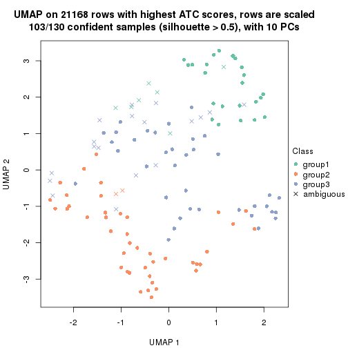
dimension_reduction(res, k = 4, method = "UMAP")
dimension_reduction(res, k = 5, method = "UMAP")
dimension_reduction(res, k = 6, method = "UMAP")
Following heatmap shows how subgroups are split when increasing k:
collect_classes(res)
Test correlation between subgroups and known annotations. If the known annotation is numeric, one-way ANOVA test is applied, and if the known annotation is discrete, chi-squared contingency table test is applied.
test_to_known_factors(res)
#> n gender(p) disease.state(p) other(p) k
#> ATC:hclust 110 0.243 0.133 0.0995 2
#> ATC:hclust 103 0.301 0.698 0.1106 3
#> ATC:hclust 85 0.700 0.285 0.1414 4
#> ATC:hclust 82 0.926 0.533 0.4693 5
#> ATC:hclust 59 0.972 0.836 0.2028 6
If matrix rows can be associated to genes, consider to use functional_enrichment(res,
...) to perform function enrichment for the signature genes. See this vignette for more detailed explanations.
The object with results only for a single top-value method and a single partition method can be extracted as:
res = res_list["ATC", "kmeans"]
# you can also extract it by
# res = res_list["ATC:kmeans"]
A summary of res and all the functions that can be applied to it:
res
#> A 'ConsensusPartition' object with k = 2, 3, 4, 5, 6.
#> On a matrix with 21168 rows and 130 columns.
#> Top rows (1000, 2000, 3000, 4000, 5000) are extracted by 'ATC' method.
#> Subgroups are detected by 'kmeans' method.
#> Performed in total 1250 partitions by row resampling.
#> Best k for subgroups seems to be 2.
#>
#> Following methods can be applied to this 'ConsensusPartition' object:
#> [1] "cola_report" "collect_classes" "collect_plots"
#> [4] "collect_stats" "colnames" "compare_signatures"
#> [7] "consensus_heatmap" "dimension_reduction" "functional_enrichment"
#> [10] "get_anno_col" "get_anno" "get_classes"
#> [13] "get_consensus" "get_matrix" "get_membership"
#> [16] "get_param" "get_signatures" "get_stats"
#> [19] "is_best_k" "is_stable_k" "membership_heatmap"
#> [22] "ncol" "nrow" "plot_ecdf"
#> [25] "rownames" "select_partition_number" "show"
#> [28] "suggest_best_k" "test_to_known_factors"
collect_plots() function collects all the plots made from res for all k (number of partitions)
into one single page to provide an easy and fast comparison between different k.
collect_plots(res)
The plots are:
k and the heatmap of
predicted classes for each k.k.k.k.All the plots in panels can be made by individual functions and they are plotted later in this section.
select_partition_number() produces several plots showing different
statistics for choosing “optimized” k. There are following statistics:
k;k, the area increased is defined as \(A_k - A_{k-1}\).The detailed explanations of these statistics can be found in the cola vignette.
Generally speaking, lower PAC score, higher mean silhouette score or higher
concordance corresponds to better partition. Rand index and Jaccard index
measure how similar the current partition is compared to partition with k-1.
If they are too similar, we won't accept k is better than k-1.
select_partition_number(res)
The numeric values for all these statistics can be obtained by get_stats().
get_stats(res)
#> k 1-PAC mean_silhouette concordance area_increased Rand Jaccard
#> 2 2 0.840 0.930 0.968 0.4887 0.511 0.511
#> 3 3 0.614 0.853 0.907 0.3369 0.655 0.426
#> 4 4 0.633 0.643 0.769 0.1314 0.900 0.727
#> 5 5 0.697 0.723 0.822 0.0750 0.852 0.531
#> 6 6 0.719 0.579 0.762 0.0421 0.958 0.798
suggest_best_k() suggests the best \(k\) based on these statistics. The rules are as follows:
suggest_best_k(res)
#> [1] 2
Following shows the table of the partitions (You need to click the show/hide
code output link to see it). The membership matrix (columns with name p*)
is inferred by
clue::cl_consensus()
function with the SE method. Basically the value in the membership matrix
represents the probability to belong to a certain group. The finall class
label for an item is determined with the group with highest probability it
belongs to.
In get_classes() function, the entropy is calculated from the membership
matrix and the silhouette score is calculated from the consensus matrix.
cbind(get_classes(res, k = 2), get_membership(res, k = 2))
#> class entropy silhouette p1 p2
#> GSM102191 2 0.0000 0.962 0.000 1.000
#> GSM102240 2 0.0000 0.962 0.000 1.000
#> GSM102175 1 0.0000 0.971 1.000 0.000
#> GSM102134 2 0.0000 0.962 0.000 1.000
#> GSM102171 1 0.0000 0.971 1.000 0.000
#> GSM102178 1 0.0000 0.971 1.000 0.000
#> GSM102198 2 0.0000 0.962 0.000 1.000
#> GSM102221 2 0.0376 0.959 0.004 0.996
#> GSM102223 2 0.0000 0.962 0.000 1.000
#> GSM102229 1 0.0000 0.971 1.000 0.000
#> GSM102153 1 0.0000 0.971 1.000 0.000
#> GSM102220 2 0.0000 0.962 0.000 1.000
#> GSM102202 2 0.0000 0.962 0.000 1.000
#> GSM102123 1 0.0000 0.971 1.000 0.000
#> GSM102125 2 0.0000 0.962 0.000 1.000
#> GSM102136 2 0.0000 0.962 0.000 1.000
#> GSM102197 1 0.0376 0.967 0.996 0.004
#> GSM102131 2 0.6801 0.811 0.180 0.820
#> GSM102132 1 0.0000 0.971 1.000 0.000
#> GSM102212 2 0.0000 0.962 0.000 1.000
#> GSM102117 2 0.0000 0.962 0.000 1.000
#> GSM102124 2 0.0000 0.962 0.000 1.000
#> GSM102172 1 0.0000 0.971 1.000 0.000
#> GSM102199 2 0.0000 0.962 0.000 1.000
#> GSM102203 2 0.0000 0.962 0.000 1.000
#> GSM102213 2 0.0000 0.962 0.000 1.000
#> GSM102165 1 0.0000 0.971 1.000 0.000
#> GSM102180 2 0.0000 0.962 0.000 1.000
#> GSM102184 1 0.0000 0.971 1.000 0.000
#> GSM102225 2 0.0000 0.962 0.000 1.000
#> GSM102230 1 0.0000 0.971 1.000 0.000
#> GSM102133 2 0.0000 0.962 0.000 1.000
#> GSM102166 1 0.0000 0.971 1.000 0.000
#> GSM102235 1 0.0000 0.971 1.000 0.000
#> GSM102196 1 0.0000 0.971 1.000 0.000
#> GSM102243 2 0.9710 0.386 0.400 0.600
#> GSM102135 2 0.0000 0.962 0.000 1.000
#> GSM102139 2 0.0000 0.962 0.000 1.000
#> GSM102151 2 0.0000 0.962 0.000 1.000
#> GSM102193 2 0.0000 0.962 0.000 1.000
#> GSM102200 1 0.0000 0.971 1.000 0.000
#> GSM102204 2 0.0000 0.962 0.000 1.000
#> GSM102145 2 0.0000 0.962 0.000 1.000
#> GSM102142 2 0.0000 0.962 0.000 1.000
#> GSM102179 2 0.0000 0.962 0.000 1.000
#> GSM102181 2 0.5519 0.869 0.128 0.872
#> GSM102154 2 0.6247 0.840 0.156 0.844
#> GSM102152 2 0.0000 0.962 0.000 1.000
#> GSM102162 2 0.0000 0.962 0.000 1.000
#> GSM102187 2 0.5519 0.869 0.128 0.872
#> GSM102116 2 0.0000 0.962 0.000 1.000
#> GSM102150 1 0.0000 0.971 1.000 0.000
#> GSM102227 2 0.6148 0.845 0.152 0.848
#> GSM102114 1 0.0000 0.971 1.000 0.000
#> GSM102177 1 0.1414 0.952 0.980 0.020
#> GSM102160 2 0.0000 0.962 0.000 1.000
#> GSM102161 1 0.0000 0.971 1.000 0.000
#> GSM102170 2 0.0000 0.962 0.000 1.000
#> GSM102205 1 0.0000 0.971 1.000 0.000
#> GSM102118 1 0.0000 0.971 1.000 0.000
#> GSM102156 2 0.6247 0.840 0.156 0.844
#> GSM102238 1 0.0000 0.971 1.000 0.000
#> GSM102143 2 0.6247 0.840 0.156 0.844
#> GSM102144 2 0.0000 0.962 0.000 1.000
#> GSM102209 2 0.0000 0.962 0.000 1.000
#> GSM102210 2 0.5842 0.857 0.140 0.860
#> GSM102140 2 0.0000 0.962 0.000 1.000
#> GSM102242 1 0.0000 0.971 1.000 0.000
#> GSM102141 1 0.0000 0.971 1.000 0.000
#> GSM102120 1 0.0000 0.971 1.000 0.000
#> GSM102127 1 0.0000 0.971 1.000 0.000
#> GSM102149 1 0.0000 0.971 1.000 0.000
#> GSM102232 2 0.0000 0.962 0.000 1.000
#> GSM102222 2 0.0000 0.962 0.000 1.000
#> GSM102236 2 0.6438 0.831 0.164 0.836
#> GSM102215 2 0.0000 0.962 0.000 1.000
#> GSM102194 2 0.0000 0.962 0.000 1.000
#> GSM102208 2 0.0000 0.962 0.000 1.000
#> GSM102130 2 0.0000 0.962 0.000 1.000
#> GSM102188 1 0.0000 0.971 1.000 0.000
#> GSM102233 1 0.0000 0.971 1.000 0.000
#> GSM102189 2 0.0000 0.962 0.000 1.000
#> GSM102234 1 0.8909 0.539 0.692 0.308
#> GSM102237 1 0.0000 0.971 1.000 0.000
#> GSM102159 1 0.0000 0.971 1.000 0.000
#> GSM102155 1 0.0000 0.971 1.000 0.000
#> GSM102137 2 0.8499 0.662 0.276 0.724
#> GSM102217 2 0.0000 0.962 0.000 1.000
#> GSM102126 1 0.0000 0.971 1.000 0.000
#> GSM102157 2 0.0000 0.962 0.000 1.000
#> GSM102163 1 0.0000 0.971 1.000 0.000
#> GSM102182 1 0.9795 0.242 0.584 0.416
#> GSM102167 2 0.0000 0.962 0.000 1.000
#> GSM102206 1 0.0000 0.971 1.000 0.000
#> GSM102224 2 0.0000 0.962 0.000 1.000
#> GSM102164 2 0.0000 0.962 0.000 1.000
#> GSM102174 2 0.0000 0.962 0.000 1.000
#> GSM102214 2 0.4431 0.900 0.092 0.908
#> GSM102226 2 0.0000 0.962 0.000 1.000
#> GSM102195 2 0.0000 0.962 0.000 1.000
#> GSM102218 1 0.0000 0.971 1.000 0.000
#> GSM102128 2 0.0000 0.962 0.000 1.000
#> GSM102168 1 0.0000 0.971 1.000 0.000
#> GSM102190 1 0.0000 0.971 1.000 0.000
#> GSM102201 2 0.0000 0.962 0.000 1.000
#> GSM102129 2 0.4298 0.903 0.088 0.912
#> GSM102192 1 0.9552 0.362 0.624 0.376
#> GSM102183 2 0.5629 0.865 0.132 0.868
#> GSM102185 1 0.0000 0.971 1.000 0.000
#> GSM102158 2 0.0000 0.962 0.000 1.000
#> GSM102169 2 0.4431 0.900 0.092 0.908
#> GSM102216 1 0.0000 0.971 1.000 0.000
#> GSM102219 1 0.0000 0.971 1.000 0.000
#> GSM102231 2 0.5629 0.866 0.132 0.868
#> GSM102147 2 0.0000 0.962 0.000 1.000
#> GSM102176 1 0.0000 0.971 1.000 0.000
#> GSM102148 1 0.0000 0.971 1.000 0.000
#> GSM102146 1 0.0000 0.971 1.000 0.000
#> GSM102241 1 0.0000 0.971 1.000 0.000
#> GSM102211 1 0.0000 0.971 1.000 0.000
#> GSM102115 2 0.2948 0.929 0.052 0.948
#> GSM102173 1 0.0000 0.971 1.000 0.000
#> GSM102138 2 0.0000 0.962 0.000 1.000
#> GSM102228 2 0.5519 0.869 0.128 0.872
#> GSM102207 1 0.0000 0.971 1.000 0.000
#> GSM102122 1 0.0000 0.971 1.000 0.000
#> GSM102119 2 0.0000 0.962 0.000 1.000
#> GSM102186 2 0.0000 0.962 0.000 1.000
#> GSM102239 1 0.8909 0.528 0.692 0.308
#> GSM102121 2 0.0000 0.962 0.000 1.000
cbind(get_classes(res, k = 3), get_membership(res, k = 3))
#> class entropy silhouette p1 p2 p3
#> GSM102191 3 0.3482 0.758 0.000 0.128 0.872
#> GSM102240 3 0.1860 0.843 0.000 0.052 0.948
#> GSM102175 1 0.0000 0.957 1.000 0.000 0.000
#> GSM102134 2 0.0000 0.896 0.000 1.000 0.000
#> GSM102171 1 0.0000 0.957 1.000 0.000 0.000
#> GSM102178 3 0.5016 0.750 0.240 0.000 0.760
#> GSM102198 2 0.0000 0.896 0.000 1.000 0.000
#> GSM102221 3 0.0983 0.861 0.004 0.016 0.980
#> GSM102223 2 0.0747 0.890 0.000 0.984 0.016
#> GSM102229 1 0.5058 0.639 0.756 0.000 0.244
#> GSM102153 1 0.0000 0.957 1.000 0.000 0.000
#> GSM102220 3 0.1289 0.857 0.000 0.032 0.968
#> GSM102202 2 0.0000 0.896 0.000 1.000 0.000
#> GSM102123 1 0.0237 0.956 0.996 0.000 0.004
#> GSM102125 2 0.4002 0.899 0.000 0.840 0.160
#> GSM102136 3 0.5431 0.690 0.000 0.284 0.716
#> GSM102197 3 0.4062 0.809 0.164 0.000 0.836
#> GSM102131 3 0.4551 0.818 0.024 0.132 0.844
#> GSM102132 3 0.6204 0.450 0.424 0.000 0.576
#> GSM102212 2 0.0000 0.896 0.000 1.000 0.000
#> GSM102117 3 0.1289 0.855 0.000 0.032 0.968
#> GSM102124 2 0.1289 0.903 0.000 0.968 0.032
#> GSM102172 1 0.0000 0.957 1.000 0.000 0.000
#> GSM102199 2 0.3482 0.816 0.000 0.872 0.128
#> GSM102203 3 0.4062 0.808 0.000 0.164 0.836
#> GSM102213 2 0.4121 0.895 0.000 0.832 0.168
#> GSM102165 3 0.4931 0.754 0.232 0.000 0.768
#> GSM102180 2 0.3941 0.901 0.000 0.844 0.156
#> GSM102184 3 0.4887 0.758 0.228 0.000 0.772
#> GSM102225 3 0.5650 0.650 0.000 0.312 0.688
#> GSM102230 1 0.0237 0.956 0.996 0.000 0.004
#> GSM102133 2 0.4002 0.899 0.000 0.840 0.160
#> GSM102166 1 0.0000 0.957 1.000 0.000 0.000
#> GSM102235 1 0.0237 0.956 0.996 0.000 0.004
#> GSM102196 1 0.0000 0.957 1.000 0.000 0.000
#> GSM102243 3 0.0237 0.864 0.004 0.000 0.996
#> GSM102135 2 0.2066 0.874 0.000 0.940 0.060
#> GSM102139 2 0.1289 0.903 0.000 0.968 0.032
#> GSM102151 2 0.0237 0.895 0.000 0.996 0.004
#> GSM102193 2 0.3686 0.903 0.000 0.860 0.140
#> GSM102200 3 0.5905 0.589 0.352 0.000 0.648
#> GSM102204 2 0.0000 0.896 0.000 1.000 0.000
#> GSM102145 3 0.2625 0.813 0.000 0.084 0.916
#> GSM102142 2 0.3941 0.901 0.000 0.844 0.156
#> GSM102179 3 0.1163 0.859 0.000 0.028 0.972
#> GSM102181 3 0.0237 0.864 0.004 0.000 0.996
#> GSM102154 3 0.0000 0.864 0.000 0.000 1.000
#> GSM102152 2 0.2796 0.851 0.000 0.908 0.092
#> GSM102162 2 0.4002 0.899 0.000 0.840 0.160
#> GSM102187 3 0.0475 0.864 0.004 0.004 0.992
#> GSM102116 3 0.0892 0.860 0.000 0.020 0.980
#> GSM102150 3 0.4504 0.788 0.196 0.000 0.804
#> GSM102227 3 0.4062 0.809 0.000 0.164 0.836
#> GSM102114 1 0.0000 0.957 1.000 0.000 0.000
#> GSM102177 3 0.0747 0.863 0.016 0.000 0.984
#> GSM102160 2 0.4002 0.899 0.000 0.840 0.160
#> GSM102161 3 0.4399 0.797 0.188 0.000 0.812
#> GSM102170 2 0.3941 0.901 0.000 0.844 0.156
#> GSM102205 3 0.5882 0.593 0.348 0.000 0.652
#> GSM102118 1 0.4605 0.707 0.796 0.000 0.204
#> GSM102156 3 0.0000 0.864 0.000 0.000 1.000
#> GSM102238 1 0.0000 0.957 1.000 0.000 0.000
#> GSM102143 3 0.0000 0.864 0.000 0.000 1.000
#> GSM102144 2 0.3941 0.901 0.000 0.844 0.156
#> GSM102209 2 0.3752 0.798 0.000 0.856 0.144
#> GSM102210 3 0.0424 0.864 0.000 0.008 0.992
#> GSM102140 3 0.0592 0.863 0.000 0.012 0.988
#> GSM102242 3 0.4887 0.758 0.228 0.000 0.772
#> GSM102141 3 0.4121 0.806 0.168 0.000 0.832
#> GSM102120 3 0.5117 0.821 0.108 0.060 0.832
#> GSM102127 3 0.4121 0.806 0.168 0.000 0.832
#> GSM102149 3 0.4731 0.820 0.128 0.032 0.840
#> GSM102232 2 0.0000 0.896 0.000 1.000 0.000
#> GSM102222 2 0.0000 0.896 0.000 1.000 0.000
#> GSM102236 3 0.0237 0.864 0.004 0.000 0.996
#> GSM102215 2 0.0000 0.896 0.000 1.000 0.000
#> GSM102194 2 0.3941 0.901 0.000 0.844 0.156
#> GSM102208 2 0.4002 0.899 0.000 0.840 0.160
#> GSM102130 2 0.3816 0.902 0.000 0.852 0.148
#> GSM102188 1 0.0000 0.957 1.000 0.000 0.000
#> GSM102233 1 0.0237 0.956 0.996 0.000 0.004
#> GSM102189 2 0.3941 0.901 0.000 0.844 0.156
#> GSM102234 3 0.4062 0.809 0.164 0.000 0.836
#> GSM102237 1 0.0237 0.956 0.996 0.000 0.004
#> GSM102159 1 0.0000 0.957 1.000 0.000 0.000
#> GSM102155 3 0.4974 0.755 0.236 0.000 0.764
#> GSM102137 3 0.3941 0.810 0.000 0.156 0.844
#> GSM102217 2 0.2261 0.869 0.000 0.932 0.068
#> GSM102126 1 0.0237 0.956 0.996 0.000 0.004
#> GSM102157 3 0.1163 0.859 0.000 0.028 0.972
#> GSM102163 1 0.0000 0.957 1.000 0.000 0.000
#> GSM102182 3 0.0475 0.864 0.004 0.004 0.992
#> GSM102167 2 0.4002 0.899 0.000 0.840 0.160
#> GSM102206 1 0.0237 0.956 0.996 0.000 0.004
#> GSM102224 2 0.0000 0.896 0.000 1.000 0.000
#> GSM102164 2 0.1289 0.903 0.000 0.968 0.032
#> GSM102174 3 0.0983 0.861 0.004 0.016 0.980
#> GSM102214 3 0.4062 0.809 0.000 0.164 0.836
#> GSM102226 2 0.3551 0.812 0.000 0.868 0.132
#> GSM102195 2 0.5254 0.810 0.000 0.736 0.264
#> GSM102218 3 0.4062 0.809 0.164 0.000 0.836
#> GSM102128 2 0.3941 0.901 0.000 0.844 0.156
#> GSM102168 1 0.0000 0.957 1.000 0.000 0.000
#> GSM102190 3 0.5988 0.561 0.368 0.000 0.632
#> GSM102201 2 0.0000 0.896 0.000 1.000 0.000
#> GSM102129 3 0.0424 0.864 0.000 0.008 0.992
#> GSM102192 3 0.0237 0.864 0.004 0.000 0.996
#> GSM102183 3 0.0237 0.864 0.004 0.000 0.996
#> GSM102185 1 0.0000 0.957 1.000 0.000 0.000
#> GSM102158 2 0.4121 0.895 0.000 0.832 0.168
#> GSM102169 3 0.0424 0.864 0.000 0.008 0.992
#> GSM102216 1 0.6168 0.119 0.588 0.000 0.412
#> GSM102219 1 0.0237 0.956 0.996 0.000 0.004
#> GSM102231 3 0.4121 0.806 0.000 0.168 0.832
#> GSM102147 2 0.0000 0.896 0.000 1.000 0.000
#> GSM102176 1 0.3941 0.776 0.844 0.000 0.156
#> GSM102148 1 0.0237 0.956 0.996 0.000 0.004
#> GSM102146 3 0.6026 0.546 0.376 0.000 0.624
#> GSM102241 1 0.0000 0.957 1.000 0.000 0.000
#> GSM102211 1 0.0237 0.956 0.996 0.000 0.004
#> GSM102115 3 0.0983 0.861 0.004 0.016 0.980
#> GSM102173 1 0.0000 0.957 1.000 0.000 0.000
#> GSM102138 2 0.0237 0.895 0.000 0.996 0.004
#> GSM102228 3 0.0000 0.864 0.000 0.000 1.000
#> GSM102207 3 0.4121 0.806 0.168 0.000 0.832
#> GSM102122 1 0.0237 0.956 0.996 0.000 0.004
#> GSM102119 2 0.3941 0.901 0.000 0.844 0.156
#> GSM102186 2 0.4002 0.899 0.000 0.840 0.160
#> GSM102239 3 0.0237 0.864 0.004 0.000 0.996
#> GSM102121 2 0.4002 0.899 0.000 0.840 0.160
cbind(get_classes(res, k = 4), get_membership(res, k = 4))
#> class entropy silhouette p1 p2 p3 p4
#> GSM102191 4 0.7067 0.128 0.000 0.160 0.288 0.552
#> GSM102240 4 0.6514 -0.105 0.000 0.076 0.408 0.516
#> GSM102175 1 0.0779 0.937 0.980 0.000 0.004 0.016
#> GSM102134 2 0.5000 0.222 0.000 0.504 0.000 0.496
#> GSM102171 1 0.0000 0.940 1.000 0.000 0.000 0.000
#> GSM102178 3 0.2197 0.672 0.024 0.000 0.928 0.048
#> GSM102198 2 0.4888 0.448 0.000 0.588 0.000 0.412
#> GSM102221 3 0.6466 0.477 0.000 0.092 0.588 0.320
#> GSM102223 4 0.4776 0.264 0.000 0.376 0.000 0.624
#> GSM102229 3 0.7077 0.319 0.316 0.000 0.536 0.148
#> GSM102153 1 0.0336 0.940 0.992 0.000 0.000 0.008
#> GSM102220 3 0.6922 0.433 0.000 0.168 0.584 0.248
#> GSM102202 2 0.4500 0.578 0.000 0.684 0.000 0.316
#> GSM102123 1 0.0707 0.937 0.980 0.000 0.000 0.020
#> GSM102125 2 0.1716 0.773 0.000 0.936 0.000 0.064
#> GSM102136 4 0.3161 0.519 0.000 0.012 0.124 0.864
#> GSM102197 3 0.3486 0.640 0.000 0.000 0.812 0.188
#> GSM102131 3 0.4746 0.474 0.000 0.000 0.632 0.368
#> GSM102132 3 0.3984 0.646 0.132 0.000 0.828 0.040
#> GSM102212 2 0.4933 0.402 0.000 0.568 0.000 0.432
#> GSM102117 3 0.7188 0.400 0.000 0.164 0.528 0.308
#> GSM102124 2 0.0592 0.798 0.000 0.984 0.000 0.016
#> GSM102172 1 0.2949 0.866 0.888 0.000 0.088 0.024
#> GSM102199 4 0.5366 0.525 0.000 0.276 0.040 0.684
#> GSM102203 4 0.2773 0.514 0.000 0.004 0.116 0.880
#> GSM102213 2 0.5376 0.317 0.000 0.588 0.016 0.396
#> GSM102165 3 0.3497 0.648 0.024 0.000 0.852 0.124
#> GSM102180 2 0.1716 0.773 0.000 0.936 0.000 0.064
#> GSM102184 3 0.3441 0.649 0.024 0.000 0.856 0.120
#> GSM102225 4 0.4956 0.617 0.000 0.108 0.116 0.776
#> GSM102230 1 0.1305 0.933 0.960 0.000 0.004 0.036
#> GSM102133 2 0.0000 0.801 0.000 1.000 0.000 0.000
#> GSM102166 1 0.0779 0.937 0.980 0.000 0.004 0.016
#> GSM102235 1 0.0000 0.940 1.000 0.000 0.000 0.000
#> GSM102196 1 0.0336 0.940 0.992 0.000 0.000 0.008
#> GSM102243 3 0.4072 0.632 0.000 0.000 0.748 0.252
#> GSM102135 4 0.5137 0.490 0.000 0.296 0.024 0.680
#> GSM102139 2 0.0469 0.799 0.000 0.988 0.000 0.012
#> GSM102151 2 0.4989 0.291 0.000 0.528 0.000 0.472
#> GSM102193 2 0.0000 0.801 0.000 1.000 0.000 0.000
#> GSM102200 3 0.4667 0.655 0.096 0.000 0.796 0.108
#> GSM102204 2 0.3400 0.708 0.000 0.820 0.000 0.180
#> GSM102145 3 0.5102 0.608 0.000 0.048 0.732 0.220
#> GSM102142 2 0.2408 0.740 0.000 0.896 0.000 0.104
#> GSM102179 3 0.7344 0.348 0.000 0.208 0.524 0.268
#> GSM102181 3 0.3873 0.641 0.000 0.000 0.772 0.228
#> GSM102154 3 0.2408 0.681 0.000 0.000 0.896 0.104
#> GSM102152 4 0.5311 0.421 0.000 0.328 0.024 0.648
#> GSM102162 2 0.1716 0.773 0.000 0.936 0.000 0.064
#> GSM102187 3 0.5221 0.617 0.000 0.060 0.732 0.208
#> GSM102116 3 0.6774 0.447 0.000 0.120 0.568 0.312
#> GSM102150 3 0.5312 0.628 0.052 0.000 0.712 0.236
#> GSM102227 3 0.4746 0.470 0.000 0.000 0.632 0.368
#> GSM102114 1 0.0336 0.939 0.992 0.000 0.000 0.008
#> GSM102177 3 0.4800 0.624 0.008 0.008 0.720 0.264
#> GSM102160 2 0.0000 0.801 0.000 1.000 0.000 0.000
#> GSM102161 3 0.2670 0.681 0.024 0.000 0.904 0.072
#> GSM102170 2 0.0000 0.801 0.000 1.000 0.000 0.000
#> GSM102205 3 0.6280 0.496 0.080 0.000 0.604 0.316
#> GSM102118 1 0.6780 0.170 0.488 0.000 0.416 0.096
#> GSM102156 3 0.2469 0.679 0.000 0.000 0.892 0.108
#> GSM102238 1 0.0336 0.940 0.992 0.000 0.000 0.008
#> GSM102143 3 0.2647 0.680 0.000 0.000 0.880 0.120
#> GSM102144 2 0.1716 0.773 0.000 0.936 0.000 0.064
#> GSM102209 4 0.5548 0.596 0.000 0.200 0.084 0.716
#> GSM102210 3 0.3907 0.642 0.000 0.000 0.768 0.232
#> GSM102140 3 0.5110 0.512 0.000 0.012 0.636 0.352
#> GSM102242 3 0.4590 0.624 0.060 0.000 0.792 0.148
#> GSM102141 3 0.4624 0.486 0.000 0.000 0.660 0.340
#> GSM102120 3 0.4679 0.482 0.000 0.000 0.648 0.352
#> GSM102127 3 0.3266 0.645 0.000 0.000 0.832 0.168
#> GSM102149 3 0.4855 0.481 0.000 0.000 0.600 0.400
#> GSM102232 2 0.4564 0.565 0.000 0.672 0.000 0.328
#> GSM102222 2 0.4888 0.448 0.000 0.588 0.000 0.412
#> GSM102236 3 0.4422 0.623 0.000 0.008 0.736 0.256
#> GSM102215 2 0.3837 0.677 0.000 0.776 0.000 0.224
#> GSM102194 2 0.0000 0.801 0.000 1.000 0.000 0.000
#> GSM102208 2 0.0000 0.801 0.000 1.000 0.000 0.000
#> GSM102130 2 0.0000 0.801 0.000 1.000 0.000 0.000
#> GSM102188 1 0.1610 0.920 0.952 0.000 0.032 0.016
#> GSM102233 1 0.0469 0.939 0.988 0.000 0.000 0.012
#> GSM102189 2 0.0000 0.801 0.000 1.000 0.000 0.000
#> GSM102234 3 0.4040 0.594 0.000 0.000 0.752 0.248
#> GSM102237 1 0.0336 0.940 0.992 0.000 0.000 0.008
#> GSM102159 1 0.0657 0.938 0.984 0.000 0.004 0.012
#> GSM102155 3 0.2813 0.659 0.024 0.000 0.896 0.080
#> GSM102137 4 0.4941 -0.307 0.000 0.000 0.436 0.564
#> GSM102217 4 0.5130 0.460 0.000 0.312 0.020 0.668
#> GSM102126 1 0.2751 0.892 0.904 0.000 0.040 0.056
#> GSM102157 3 0.5470 0.552 0.000 0.168 0.732 0.100
#> GSM102163 1 0.3497 0.826 0.852 0.000 0.124 0.024
#> GSM102182 3 0.4511 0.622 0.000 0.008 0.724 0.268
#> GSM102167 2 0.0000 0.801 0.000 1.000 0.000 0.000
#> GSM102206 1 0.0469 0.939 0.988 0.000 0.000 0.012
#> GSM102224 2 0.4331 0.612 0.000 0.712 0.000 0.288
#> GSM102164 2 0.0469 0.799 0.000 0.988 0.000 0.012
#> GSM102174 3 0.6519 0.467 0.000 0.096 0.584 0.320
#> GSM102214 3 0.4972 0.339 0.000 0.000 0.544 0.456
#> GSM102226 4 0.5312 0.570 0.000 0.236 0.052 0.712
#> GSM102195 4 0.7107 0.353 0.000 0.408 0.128 0.464
#> GSM102218 3 0.3311 0.641 0.000 0.000 0.828 0.172
#> GSM102128 2 0.0000 0.801 0.000 1.000 0.000 0.000
#> GSM102168 1 0.0336 0.939 0.992 0.000 0.000 0.008
#> GSM102190 3 0.6416 0.557 0.152 0.000 0.648 0.200
#> GSM102201 2 0.4431 0.595 0.000 0.696 0.000 0.304
#> GSM102129 3 0.2814 0.657 0.000 0.000 0.868 0.132
#> GSM102192 3 0.3907 0.640 0.000 0.000 0.768 0.232
#> GSM102183 3 0.4328 0.631 0.000 0.008 0.748 0.244
#> GSM102185 1 0.0336 0.939 0.992 0.000 0.000 0.008
#> GSM102158 2 0.1743 0.748 0.000 0.940 0.004 0.056
#> GSM102169 3 0.3569 0.647 0.000 0.000 0.804 0.196
#> GSM102216 3 0.6567 0.418 0.308 0.000 0.588 0.104
#> GSM102219 1 0.2996 0.886 0.892 0.000 0.044 0.064
#> GSM102231 4 0.4730 0.190 0.000 0.000 0.364 0.636
#> GSM102147 2 0.3764 0.683 0.000 0.784 0.000 0.216
#> GSM102176 1 0.5788 0.641 0.688 0.000 0.228 0.084
#> GSM102148 1 0.2996 0.889 0.892 0.000 0.044 0.064
#> GSM102146 3 0.6416 0.557 0.152 0.000 0.648 0.200
#> GSM102241 1 0.0336 0.940 0.992 0.000 0.000 0.008
#> GSM102211 1 0.0336 0.940 0.992 0.000 0.000 0.008
#> GSM102115 3 0.6448 0.483 0.000 0.092 0.592 0.316
#> GSM102173 1 0.0336 0.939 0.992 0.000 0.000 0.008
#> GSM102138 2 0.4713 0.508 0.000 0.640 0.000 0.360
#> GSM102228 3 0.2081 0.682 0.000 0.000 0.916 0.084
#> GSM102207 3 0.4008 0.597 0.000 0.000 0.756 0.244
#> GSM102122 1 0.0469 0.939 0.988 0.000 0.000 0.012
#> GSM102119 2 0.0000 0.801 0.000 1.000 0.000 0.000
#> GSM102186 2 0.0000 0.801 0.000 1.000 0.000 0.000
#> GSM102239 3 0.4482 0.622 0.000 0.008 0.728 0.264
#> GSM102121 2 0.0000 0.801 0.000 1.000 0.000 0.000
cbind(get_classes(res, k = 5), get_membership(res, k = 5))
#> class entropy silhouette p1 p2 p3 p4 p5
#> GSM102191 5 0.6587 0.557 0.000 0.160 0.032 0.232 0.576
#> GSM102240 5 0.2505 0.762 0.000 0.020 0.000 0.092 0.888
#> GSM102175 1 0.2737 0.894 0.896 0.000 0.032 0.052 0.020
#> GSM102134 4 0.3171 0.757 0.000 0.176 0.000 0.816 0.008
#> GSM102171 1 0.0324 0.911 0.992 0.000 0.004 0.004 0.000
#> GSM102178 3 0.5514 0.589 0.012 0.000 0.620 0.064 0.304
#> GSM102198 4 0.3884 0.679 0.000 0.288 0.000 0.708 0.004
#> GSM102221 5 0.1686 0.792 0.000 0.020 0.008 0.028 0.944
#> GSM102223 4 0.2930 0.760 0.000 0.164 0.004 0.832 0.000
#> GSM102229 3 0.1686 0.752 0.020 0.000 0.944 0.028 0.008
#> GSM102153 1 0.0968 0.909 0.972 0.000 0.004 0.012 0.012
#> GSM102220 5 0.7380 0.316 0.000 0.356 0.192 0.044 0.408
#> GSM102202 4 0.4403 0.466 0.000 0.436 0.000 0.560 0.004
#> GSM102123 1 0.1710 0.900 0.944 0.000 0.020 0.024 0.012
#> GSM102125 2 0.2172 0.836 0.000 0.908 0.000 0.076 0.016
#> GSM102136 4 0.3740 0.581 0.000 0.012 0.008 0.784 0.196
#> GSM102197 3 0.4535 0.741 0.000 0.000 0.748 0.092 0.160
#> GSM102131 3 0.3772 0.738 0.000 0.000 0.792 0.172 0.036
#> GSM102132 3 0.6734 0.547 0.060 0.000 0.548 0.096 0.296
#> GSM102212 4 0.3561 0.707 0.000 0.260 0.000 0.740 0.000
#> GSM102117 5 0.4113 0.725 0.000 0.052 0.084 0.044 0.820
#> GSM102124 2 0.0290 0.887 0.000 0.992 0.000 0.008 0.000
#> GSM102172 1 0.4399 0.822 0.796 0.000 0.032 0.064 0.108
#> GSM102199 4 0.3063 0.765 0.000 0.104 0.012 0.864 0.020
#> GSM102203 4 0.2976 0.673 0.000 0.004 0.012 0.852 0.132
#> GSM102213 5 0.5575 0.509 0.000 0.188 0.000 0.168 0.644
#> GSM102165 3 0.0671 0.764 0.000 0.000 0.980 0.004 0.016
#> GSM102180 2 0.2408 0.822 0.000 0.892 0.000 0.092 0.016
#> GSM102184 3 0.0798 0.764 0.000 0.000 0.976 0.008 0.016
#> GSM102225 4 0.3086 0.731 0.000 0.048 0.016 0.876 0.060
#> GSM102230 1 0.3240 0.876 0.868 0.000 0.024 0.072 0.036
#> GSM102133 2 0.0000 0.890 0.000 1.000 0.000 0.000 0.000
#> GSM102166 1 0.2737 0.894 0.896 0.000 0.032 0.052 0.020
#> GSM102235 1 0.0162 0.912 0.996 0.000 0.004 0.000 0.000
#> GSM102196 1 0.0451 0.912 0.988 0.000 0.000 0.004 0.008
#> GSM102243 5 0.2694 0.762 0.000 0.000 0.076 0.040 0.884
#> GSM102135 4 0.2783 0.768 0.000 0.116 0.004 0.868 0.012
#> GSM102139 2 0.0451 0.886 0.000 0.988 0.000 0.008 0.004
#> GSM102151 4 0.3300 0.742 0.000 0.204 0.000 0.792 0.004
#> GSM102193 2 0.0162 0.889 0.000 0.996 0.000 0.004 0.000
#> GSM102200 5 0.6781 -0.232 0.052 0.000 0.400 0.088 0.460
#> GSM102204 2 0.3790 0.456 0.000 0.724 0.000 0.272 0.004
#> GSM102145 3 0.4283 0.736 0.000 0.056 0.812 0.068 0.064
#> GSM102142 2 0.2818 0.779 0.000 0.856 0.000 0.132 0.012
#> GSM102179 5 0.5822 0.550 0.000 0.320 0.032 0.052 0.596
#> GSM102181 5 0.3365 0.726 0.000 0.000 0.120 0.044 0.836
#> GSM102154 3 0.5237 0.631 0.000 0.004 0.632 0.060 0.304
#> GSM102152 4 0.3154 0.766 0.000 0.148 0.012 0.836 0.004
#> GSM102162 2 0.2110 0.840 0.000 0.912 0.000 0.072 0.016
#> GSM102187 5 0.4061 0.759 0.000 0.072 0.064 0.040 0.824
#> GSM102116 5 0.1686 0.792 0.000 0.020 0.008 0.028 0.944
#> GSM102150 3 0.5723 0.708 0.016 0.000 0.660 0.124 0.200
#> GSM102227 3 0.3214 0.763 0.000 0.000 0.844 0.120 0.036
#> GSM102114 1 0.1461 0.908 0.952 0.000 0.016 0.028 0.004
#> GSM102177 5 0.1369 0.787 0.000 0.008 0.028 0.008 0.956
#> GSM102160 2 0.0609 0.883 0.000 0.980 0.000 0.000 0.020
#> GSM102161 3 0.5688 0.601 0.008 0.000 0.608 0.088 0.296
#> GSM102170 2 0.0000 0.890 0.000 1.000 0.000 0.000 0.000
#> GSM102205 3 0.6708 0.658 0.044 0.000 0.580 0.208 0.168
#> GSM102118 3 0.1728 0.743 0.020 0.000 0.940 0.036 0.004
#> GSM102156 3 0.5320 0.541 0.000 0.000 0.572 0.060 0.368
#> GSM102238 1 0.0000 0.911 1.000 0.000 0.000 0.000 0.000
#> GSM102143 3 0.5255 0.626 0.000 0.004 0.628 0.060 0.308
#> GSM102144 2 0.2570 0.826 0.000 0.888 0.000 0.084 0.028
#> GSM102209 4 0.2965 0.751 0.000 0.068 0.012 0.880 0.040
#> GSM102210 3 0.5499 0.681 0.000 0.004 0.652 0.112 0.232
#> GSM102140 3 0.4972 0.709 0.000 0.004 0.716 0.180 0.100
#> GSM102242 3 0.0960 0.760 0.004 0.000 0.972 0.016 0.008
#> GSM102141 3 0.1525 0.765 0.004 0.000 0.948 0.036 0.012
#> GSM102120 3 0.5414 0.696 0.000 0.000 0.660 0.200 0.140
#> GSM102127 3 0.4675 0.745 0.000 0.000 0.736 0.100 0.164
#> GSM102149 3 0.6189 0.664 0.008 0.000 0.588 0.216 0.188
#> GSM102232 4 0.4084 0.637 0.000 0.328 0.000 0.668 0.004
#> GSM102222 4 0.3730 0.680 0.000 0.288 0.000 0.712 0.000
#> GSM102236 5 0.1865 0.788 0.000 0.008 0.032 0.024 0.936
#> GSM102215 2 0.4440 -0.255 0.000 0.528 0.000 0.468 0.004
#> GSM102194 2 0.0000 0.890 0.000 1.000 0.000 0.000 0.000
#> GSM102208 2 0.1216 0.867 0.000 0.960 0.020 0.000 0.020
#> GSM102130 2 0.0162 0.889 0.000 0.996 0.000 0.004 0.000
#> GSM102188 1 0.3596 0.868 0.852 0.000 0.036 0.052 0.060
#> GSM102233 1 0.0854 0.910 0.976 0.000 0.004 0.012 0.008
#> GSM102189 2 0.0000 0.890 0.000 1.000 0.000 0.000 0.000
#> GSM102234 3 0.1300 0.767 0.000 0.000 0.956 0.028 0.016
#> GSM102237 1 0.0854 0.910 0.976 0.000 0.004 0.012 0.008
#> GSM102159 1 0.2157 0.902 0.920 0.000 0.036 0.040 0.004
#> GSM102155 3 0.2519 0.734 0.000 0.000 0.884 0.016 0.100
#> GSM102137 5 0.5818 0.202 0.000 0.000 0.092 0.444 0.464
#> GSM102217 4 0.2621 0.768 0.000 0.112 0.004 0.876 0.008
#> GSM102126 1 0.4466 0.738 0.728 0.000 0.232 0.032 0.008
#> GSM102157 3 0.6315 0.463 0.000 0.240 0.600 0.028 0.132
#> GSM102163 1 0.4601 0.822 0.788 0.000 0.044 0.076 0.092
#> GSM102182 5 0.1772 0.777 0.000 0.008 0.032 0.020 0.940
#> GSM102167 2 0.0162 0.890 0.000 0.996 0.000 0.000 0.004
#> GSM102206 1 0.0854 0.910 0.976 0.000 0.004 0.012 0.008
#> GSM102224 4 0.4437 0.400 0.000 0.464 0.000 0.532 0.004
#> GSM102164 2 0.0451 0.886 0.000 0.988 0.000 0.008 0.004
#> GSM102174 5 0.1686 0.792 0.000 0.020 0.008 0.028 0.944
#> GSM102214 4 0.6203 -0.253 0.000 0.000 0.396 0.464 0.140
#> GSM102226 4 0.3187 0.760 0.000 0.088 0.012 0.864 0.036
#> GSM102195 4 0.6314 0.614 0.000 0.176 0.164 0.624 0.036
#> GSM102218 3 0.0912 0.768 0.000 0.000 0.972 0.012 0.016
#> GSM102128 2 0.0000 0.890 0.000 1.000 0.000 0.000 0.000
#> GSM102168 1 0.1560 0.907 0.948 0.000 0.020 0.028 0.004
#> GSM102190 5 0.4087 0.704 0.068 0.000 0.032 0.080 0.820
#> GSM102201 4 0.4397 0.469 0.000 0.432 0.000 0.564 0.004
#> GSM102129 3 0.1412 0.768 0.000 0.004 0.952 0.008 0.036
#> GSM102192 5 0.2729 0.767 0.000 0.004 0.084 0.028 0.884
#> GSM102183 5 0.3205 0.768 0.000 0.008 0.072 0.056 0.864
#> GSM102185 1 0.1461 0.908 0.952 0.000 0.016 0.028 0.004
#> GSM102158 2 0.2020 0.817 0.000 0.900 0.000 0.000 0.100
#> GSM102169 3 0.5072 0.717 0.000 0.004 0.704 0.100 0.192
#> GSM102216 3 0.5086 0.727 0.060 0.000 0.756 0.100 0.084
#> GSM102219 1 0.4628 0.717 0.716 0.000 0.240 0.032 0.012
#> GSM102231 4 0.5109 0.453 0.000 0.000 0.172 0.696 0.132
#> GSM102147 2 0.4415 -0.168 0.000 0.552 0.000 0.444 0.004
#> GSM102176 1 0.6471 0.607 0.584 0.000 0.272 0.052 0.092
#> GSM102148 1 0.5181 0.725 0.676 0.000 0.252 0.060 0.012
#> GSM102146 5 0.4004 0.706 0.068 0.000 0.028 0.080 0.824
#> GSM102241 1 0.0162 0.912 0.996 0.000 0.000 0.000 0.004
#> GSM102211 1 0.0968 0.909 0.972 0.000 0.004 0.012 0.012
#> GSM102115 5 0.1686 0.792 0.000 0.020 0.008 0.028 0.944
#> GSM102173 1 0.1646 0.907 0.944 0.000 0.020 0.032 0.004
#> GSM102138 4 0.3990 0.667 0.000 0.308 0.000 0.688 0.004
#> GSM102228 3 0.4958 0.597 0.000 0.004 0.616 0.032 0.348
#> GSM102207 3 0.1281 0.765 0.000 0.000 0.956 0.032 0.012
#> GSM102122 1 0.0968 0.909 0.972 0.000 0.004 0.012 0.012
#> GSM102119 2 0.0000 0.890 0.000 1.000 0.000 0.000 0.000
#> GSM102186 2 0.0290 0.887 0.000 0.992 0.000 0.000 0.008
#> GSM102239 5 0.1329 0.783 0.000 0.008 0.032 0.004 0.956
#> GSM102121 2 0.0510 0.885 0.000 0.984 0.000 0.000 0.016
cbind(get_classes(res, k = 6), get_membership(res, k = 6))
#> class entropy silhouette p1 p2 p3 p4 p5 p6
#> GSM102191 6 0.8001 -0.00988 0.000 0.080 0.056 0.244 0.304 0.316
#> GSM102240 5 0.0881 0.66804 0.000 0.008 0.000 0.008 0.972 0.012
#> GSM102175 1 0.3384 0.76756 0.760 0.000 0.000 0.008 0.004 0.228
#> GSM102134 4 0.1262 0.73836 0.000 0.016 0.000 0.956 0.008 0.020
#> GSM102171 1 0.0713 0.81747 0.972 0.000 0.000 0.000 0.000 0.028
#> GSM102178 6 0.6324 0.18420 0.036 0.000 0.380 0.008 0.116 0.460
#> GSM102198 4 0.2726 0.72036 0.000 0.112 0.000 0.856 0.000 0.032
#> GSM102221 5 0.1296 0.68002 0.000 0.012 0.000 0.004 0.952 0.032
#> GSM102223 4 0.1408 0.73979 0.000 0.020 0.000 0.944 0.000 0.036
#> GSM102229 3 0.2445 0.48131 0.020 0.000 0.872 0.000 0.000 0.108
#> GSM102153 1 0.1411 0.80558 0.936 0.000 0.000 0.004 0.000 0.060
#> GSM102220 5 0.7600 0.09245 0.000 0.212 0.284 0.012 0.372 0.120
#> GSM102202 4 0.5013 0.59208 0.000 0.256 0.000 0.648 0.016 0.080
#> GSM102123 1 0.2500 0.76718 0.868 0.000 0.012 0.004 0.000 0.116
#> GSM102125 2 0.3461 0.83026 0.000 0.832 0.000 0.092 0.032 0.044
#> GSM102136 4 0.3829 0.62307 0.000 0.000 0.000 0.760 0.060 0.180
#> GSM102197 3 0.4997 0.32434 0.000 0.000 0.640 0.016 0.072 0.272
#> GSM102131 3 0.5174 0.24803 0.000 0.000 0.620 0.108 0.008 0.264
#> GSM102132 6 0.6532 0.32459 0.076 0.000 0.304 0.004 0.112 0.504
#> GSM102212 4 0.1745 0.73934 0.000 0.068 0.000 0.920 0.000 0.012
#> GSM102117 5 0.3359 0.61019 0.000 0.056 0.024 0.012 0.852 0.056
#> GSM102124 2 0.0717 0.89316 0.000 0.976 0.000 0.016 0.000 0.008
#> GSM102172 1 0.4175 0.73990 0.720 0.000 0.004 0.008 0.032 0.236
#> GSM102199 4 0.2445 0.70871 0.000 0.004 0.000 0.868 0.008 0.120
#> GSM102203 4 0.3624 0.65720 0.000 0.000 0.000 0.784 0.060 0.156
#> GSM102213 5 0.4423 0.50602 0.000 0.048 0.000 0.112 0.764 0.076
#> GSM102165 3 0.0777 0.56134 0.000 0.000 0.972 0.000 0.004 0.024
#> GSM102180 2 0.3325 0.83303 0.000 0.840 0.000 0.092 0.032 0.036
#> GSM102184 3 0.0603 0.56249 0.000 0.000 0.980 0.000 0.004 0.016
#> GSM102225 4 0.2896 0.68267 0.000 0.000 0.000 0.824 0.016 0.160
#> GSM102230 1 0.3940 0.65914 0.704 0.000 0.016 0.008 0.000 0.272
#> GSM102133 2 0.0790 0.89433 0.000 0.968 0.000 0.000 0.000 0.032
#> GSM102166 1 0.3357 0.76997 0.764 0.000 0.000 0.008 0.004 0.224
#> GSM102235 1 0.0547 0.81778 0.980 0.000 0.000 0.000 0.000 0.020
#> GSM102196 1 0.0865 0.81866 0.964 0.000 0.000 0.000 0.000 0.036
#> GSM102243 5 0.5004 0.45147 0.000 0.000 0.088 0.008 0.632 0.272
#> GSM102135 4 0.1410 0.73235 0.000 0.004 0.000 0.944 0.008 0.044
#> GSM102139 2 0.1003 0.88687 0.000 0.964 0.000 0.020 0.000 0.016
#> GSM102151 4 0.2046 0.73454 0.000 0.032 0.000 0.916 0.008 0.044
#> GSM102193 2 0.0717 0.89203 0.000 0.976 0.000 0.008 0.000 0.016
#> GSM102200 6 0.6721 0.38654 0.052 0.000 0.248 0.000 0.248 0.452
#> GSM102204 2 0.4543 0.15771 0.000 0.576 0.000 0.384 0.000 0.040
#> GSM102145 3 0.5013 0.47826 0.000 0.048 0.744 0.040 0.052 0.116
#> GSM102142 2 0.3958 0.74427 0.000 0.768 0.000 0.172 0.016 0.044
#> GSM102179 5 0.6894 0.22692 0.000 0.328 0.036 0.012 0.408 0.216
#> GSM102181 5 0.5668 0.33121 0.000 0.000 0.164 0.008 0.556 0.272
#> GSM102154 3 0.5862 0.17181 0.000 0.000 0.528 0.008 0.204 0.260
#> GSM102152 4 0.2468 0.72910 0.000 0.016 0.000 0.880 0.008 0.096
#> GSM102162 2 0.3476 0.83194 0.000 0.832 0.000 0.088 0.032 0.048
#> GSM102187 5 0.5801 0.34805 0.000 0.004 0.164 0.008 0.552 0.272
#> GSM102116 5 0.0508 0.67462 0.000 0.012 0.000 0.004 0.984 0.000
#> GSM102150 6 0.5490 0.35795 0.028 0.000 0.332 0.004 0.064 0.572
#> GSM102227 3 0.4550 0.40264 0.000 0.000 0.700 0.076 0.008 0.216
#> GSM102114 1 0.2178 0.80520 0.868 0.000 0.000 0.000 0.000 0.132
#> GSM102177 5 0.1367 0.67783 0.000 0.000 0.012 0.000 0.944 0.044
#> GSM102160 2 0.1856 0.88225 0.000 0.920 0.000 0.000 0.032 0.048
#> GSM102161 6 0.6035 0.26032 0.016 0.000 0.396 0.004 0.132 0.452
#> GSM102170 2 0.0405 0.89584 0.000 0.988 0.000 0.004 0.000 0.008
#> GSM102205 6 0.6059 0.43010 0.044 0.000 0.260 0.048 0.048 0.600
#> GSM102118 3 0.2263 0.48770 0.016 0.000 0.884 0.000 0.000 0.100
#> GSM102156 3 0.6101 0.04874 0.000 0.000 0.472 0.008 0.268 0.252
#> GSM102238 1 0.0000 0.81661 1.000 0.000 0.000 0.000 0.000 0.000
#> GSM102143 3 0.5872 0.15661 0.000 0.000 0.524 0.008 0.200 0.268
#> GSM102144 2 0.4290 0.80334 0.000 0.776 0.000 0.104 0.052 0.068
#> GSM102209 4 0.2531 0.70030 0.000 0.000 0.000 0.856 0.012 0.132
#> GSM102210 3 0.6016 0.15339 0.000 0.000 0.520 0.032 0.128 0.320
#> GSM102140 3 0.5883 0.36637 0.000 0.004 0.640 0.140 0.076 0.140
#> GSM102242 3 0.0935 0.55870 0.000 0.000 0.964 0.000 0.004 0.032
#> GSM102141 3 0.1908 0.50736 0.000 0.000 0.900 0.004 0.000 0.096
#> GSM102120 6 0.5871 0.18378 0.000 0.000 0.392 0.088 0.036 0.484
#> GSM102127 3 0.4326 0.07405 0.000 0.000 0.572 0.000 0.024 0.404
#> GSM102149 6 0.6268 0.41741 0.020 0.000 0.260 0.084 0.060 0.576
#> GSM102232 4 0.3952 0.65306 0.000 0.212 0.000 0.736 0.000 0.052
#> GSM102222 4 0.2491 0.72279 0.000 0.112 0.000 0.868 0.000 0.020
#> GSM102236 5 0.1464 0.67819 0.000 0.000 0.016 0.004 0.944 0.036
#> GSM102215 4 0.4610 0.40894 0.000 0.388 0.000 0.568 0.000 0.044
#> GSM102194 2 0.0717 0.89203 0.000 0.976 0.000 0.008 0.000 0.016
#> GSM102208 2 0.1644 0.88650 0.000 0.932 0.000 0.000 0.028 0.040
#> GSM102130 2 0.0717 0.89203 0.000 0.976 0.000 0.008 0.000 0.016
#> GSM102188 1 0.4026 0.74473 0.724 0.000 0.008 0.008 0.016 0.244
#> GSM102233 1 0.1285 0.80822 0.944 0.000 0.000 0.004 0.000 0.052
#> GSM102189 2 0.0146 0.89597 0.000 0.996 0.000 0.004 0.000 0.000
#> GSM102234 3 0.0603 0.56193 0.000 0.000 0.980 0.004 0.000 0.016
#> GSM102237 1 0.1398 0.80876 0.940 0.000 0.000 0.008 0.000 0.052
#> GSM102159 1 0.3293 0.78156 0.788 0.000 0.004 0.008 0.004 0.196
#> GSM102155 3 0.3202 0.47842 0.000 0.000 0.800 0.000 0.024 0.176
#> GSM102137 6 0.6550 0.32636 0.000 0.000 0.056 0.260 0.188 0.496
#> GSM102217 4 0.1605 0.73499 0.000 0.004 0.000 0.936 0.016 0.044
#> GSM102126 1 0.5265 0.48009 0.572 0.000 0.328 0.008 0.000 0.092
#> GSM102157 3 0.6518 0.27810 0.000 0.196 0.572 0.008 0.108 0.116
#> GSM102163 1 0.4809 0.64505 0.628 0.000 0.016 0.008 0.028 0.320
#> GSM102182 5 0.1594 0.67370 0.000 0.000 0.016 0.000 0.932 0.052
#> GSM102167 2 0.1780 0.88666 0.000 0.924 0.000 0.000 0.028 0.048
#> GSM102206 1 0.1285 0.80822 0.944 0.000 0.000 0.004 0.000 0.052
#> GSM102224 4 0.4420 0.50532 0.000 0.340 0.000 0.620 0.000 0.040
#> GSM102164 2 0.0914 0.88857 0.000 0.968 0.000 0.016 0.000 0.016
#> GSM102174 5 0.0767 0.67135 0.000 0.012 0.000 0.004 0.976 0.008
#> GSM102214 4 0.6551 -0.23408 0.000 0.000 0.196 0.396 0.036 0.372
#> GSM102226 4 0.2312 0.71080 0.000 0.000 0.000 0.876 0.012 0.112
#> GSM102195 4 0.7286 0.13402 0.000 0.060 0.264 0.472 0.044 0.160
#> GSM102218 3 0.1196 0.56710 0.000 0.000 0.952 0.000 0.008 0.040
#> GSM102128 2 0.0777 0.89556 0.000 0.972 0.000 0.004 0.000 0.024
#> GSM102168 1 0.2260 0.80380 0.860 0.000 0.000 0.000 0.000 0.140
#> GSM102190 5 0.5444 0.15660 0.056 0.000 0.028 0.000 0.484 0.432
#> GSM102201 4 0.5119 0.56812 0.000 0.268 0.000 0.632 0.016 0.084
#> GSM102129 3 0.1858 0.56111 0.000 0.000 0.912 0.000 0.012 0.076
#> GSM102192 5 0.4944 0.45800 0.000 0.000 0.132 0.000 0.644 0.224
#> GSM102183 5 0.5108 0.45052 0.000 0.000 0.096 0.008 0.620 0.276
#> GSM102185 1 0.2219 0.80446 0.864 0.000 0.000 0.000 0.000 0.136
#> GSM102158 2 0.4332 0.67961 0.000 0.700 0.000 0.000 0.228 0.072
#> GSM102169 3 0.5578 0.28727 0.000 0.000 0.596 0.024 0.116 0.264
#> GSM102216 3 0.4741 -0.07118 0.040 0.000 0.536 0.000 0.004 0.420
#> GSM102219 1 0.5855 0.29173 0.464 0.000 0.376 0.008 0.000 0.152
#> GSM102231 4 0.5602 0.30846 0.000 0.000 0.088 0.576 0.032 0.304
#> GSM102147 4 0.4569 0.39572 0.000 0.396 0.000 0.564 0.000 0.040
#> GSM102176 1 0.6545 0.49982 0.496 0.000 0.252 0.008 0.032 0.212
#> GSM102148 1 0.6070 0.44678 0.464 0.000 0.340 0.012 0.000 0.184
#> GSM102146 5 0.5372 0.17127 0.056 0.000 0.024 0.000 0.496 0.424
#> GSM102241 1 0.0260 0.81558 0.992 0.000 0.000 0.000 0.000 0.008
#> GSM102211 1 0.1285 0.80822 0.944 0.000 0.000 0.004 0.000 0.052
#> GSM102115 5 0.1296 0.68113 0.000 0.012 0.000 0.004 0.952 0.032
#> GSM102173 1 0.2669 0.79703 0.836 0.000 0.000 0.008 0.000 0.156
#> GSM102138 4 0.3765 0.69523 0.000 0.164 0.000 0.780 0.008 0.048
#> GSM102228 3 0.5742 0.17670 0.000 0.000 0.532 0.004 0.272 0.192
#> GSM102207 3 0.1349 0.53807 0.000 0.000 0.940 0.004 0.000 0.056
#> GSM102122 1 0.1285 0.80822 0.944 0.000 0.000 0.004 0.000 0.052
#> GSM102119 2 0.0777 0.89556 0.000 0.972 0.000 0.004 0.000 0.024
#> GSM102186 2 0.1364 0.88976 0.000 0.944 0.000 0.004 0.004 0.048
#> GSM102239 5 0.1391 0.67742 0.000 0.000 0.016 0.000 0.944 0.040
#> GSM102121 2 0.1649 0.88605 0.000 0.932 0.000 0.000 0.032 0.036
Heatmaps for the consensus matrix. It visualizes the probability of two samples to be in a same group.
consensus_heatmap(res, k = 2)
consensus_heatmap(res, k = 3)

consensus_heatmap(res, k = 4)
consensus_heatmap(res, k = 5)
consensus_heatmap(res, k = 6)
Heatmaps for the membership of samples in all partitions to see how consistent they are:
membership_heatmap(res, k = 2)

membership_heatmap(res, k = 3)
membership_heatmap(res, k = 4)
membership_heatmap(res, k = 5)
membership_heatmap(res, k = 6)
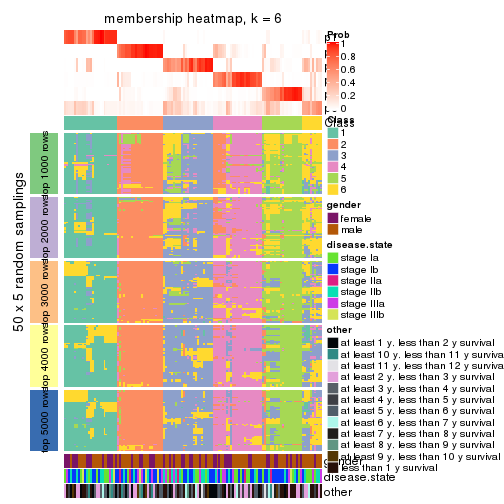
As soon as we have had the classes for columns, we can look for signatures which are significantly different between classes which can be candidate marks for certain classes. Following are the heatmaps for signatures.
Signature heatmaps where rows are scaled:
get_signatures(res, k = 2)

get_signatures(res, k = 3)
get_signatures(res, k = 4)
get_signatures(res, k = 5)
get_signatures(res, k = 6)
Signature heatmaps where rows are not scaled:
get_signatures(res, k = 2, scale_rows = FALSE)
get_signatures(res, k = 3, scale_rows = FALSE)
get_signatures(res, k = 4, scale_rows = FALSE)
get_signatures(res, k = 5, scale_rows = FALSE)
get_signatures(res, k = 6, scale_rows = FALSE)
Compare the overlap of signatures from different k:
compare_signatures(res)
get_signature() returns a data frame invisibly. TO get the list of signatures, the function
call should be assigned to a variable explicitly. In following code, if plot argument is set
to FALSE, no heatmap is plotted while only the differential analysis is performed.
# code only for demonstration
tb = get_signature(res, k = ..., plot = FALSE)
An example of the output of tb is:
#> which_row fdr mean_1 mean_2 scaled_mean_1 scaled_mean_2 km
#> 1 38 0.042760348 8.373488 9.131774 -0.5533452 0.5164555 1
#> 2 40 0.018707592 7.106213 8.469186 -0.6173731 0.5762149 1
#> 3 55 0.019134737 10.221463 11.207825 -0.6159697 0.5749050 1
#> 4 59 0.006059896 5.921854 7.869574 -0.6899429 0.6439467 1
#> 5 60 0.018055526 8.928898 10.211722 -0.6204761 0.5791110 1
#> 6 98 0.009384629 15.714769 14.887706 0.6635654 -0.6193277 2
...
The columns in tb are:
which_row: row indices corresponding to the input matrix.fdr: FDR for the differential test. mean_x: The mean value in group x.scaled_mean_x: The mean value in group x after rows are scaled.km: Row groups if k-means clustering is applied to rows.UMAP plot which shows how samples are separated.
dimension_reduction(res, k = 2, method = "UMAP")
dimension_reduction(res, k = 3, method = "UMAP")
dimension_reduction(res, k = 4, method = "UMAP")
dimension_reduction(res, k = 5, method = "UMAP")
dimension_reduction(res, k = 6, method = "UMAP")
Following heatmap shows how subgroups are split when increasing k:
collect_classes(res)
Test correlation between subgroups and known annotations. If the known annotation is numeric, one-way ANOVA test is applied, and if the known annotation is discrete, chi-squared contingency table test is applied.
test_to_known_factors(res)
#> n gender(p) disease.state(p) other(p) k
#> ATC:kmeans 127 0.317 0.0922 0.76553 2
#> ATC:kmeans 128 0.327 0.4404 0.11846 3
#> ATC:kmeans 98 0.387 0.4673 0.58778 4
#> ATC:kmeans 118 0.188 0.1352 0.39297 5
#> ATC:kmeans 84 0.651 0.7381 0.00258 6
If matrix rows can be associated to genes, consider to use functional_enrichment(res,
...) to perform function enrichment for the signature genes. See this vignette for more detailed explanations.
The object with results only for a single top-value method and a single partition method can be extracted as:
res = res_list["ATC", "skmeans"]
# you can also extract it by
# res = res_list["ATC:skmeans"]
A summary of res and all the functions that can be applied to it:
res
#> A 'ConsensusPartition' object with k = 2, 3, 4, 5, 6.
#> On a matrix with 21168 rows and 130 columns.
#> Top rows (1000, 2000, 3000, 4000, 5000) are extracted by 'ATC' method.
#> Subgroups are detected by 'skmeans' method.
#> Performed in total 1250 partitions by row resampling.
#> Best k for subgroups seems to be 2.
#>
#> Following methods can be applied to this 'ConsensusPartition' object:
#> [1] "cola_report" "collect_classes" "collect_plots"
#> [4] "collect_stats" "colnames" "compare_signatures"
#> [7] "consensus_heatmap" "dimension_reduction" "functional_enrichment"
#> [10] "get_anno_col" "get_anno" "get_classes"
#> [13] "get_consensus" "get_matrix" "get_membership"
#> [16] "get_param" "get_signatures" "get_stats"
#> [19] "is_best_k" "is_stable_k" "membership_heatmap"
#> [22] "ncol" "nrow" "plot_ecdf"
#> [25] "rownames" "select_partition_number" "show"
#> [28] "suggest_best_k" "test_to_known_factors"
collect_plots() function collects all the plots made from res for all k (number of partitions)
into one single page to provide an easy and fast comparison between different k.
collect_plots(res)
The plots are:
k and the heatmap of
predicted classes for each k.k.k.k.All the plots in panels can be made by individual functions and they are plotted later in this section.
select_partition_number() produces several plots showing different
statistics for choosing “optimized” k. There are following statistics:
k;k, the area increased is defined as \(A_k - A_{k-1}\).The detailed explanations of these statistics can be found in the cola vignette.
Generally speaking, lower PAC score, higher mean silhouette score or higher
concordance corresponds to better partition. Rand index and Jaccard index
measure how similar the current partition is compared to partition with k-1.
If they are too similar, we won't accept k is better than k-1.
select_partition_number(res)
The numeric values for all these statistics can be obtained by get_stats().
get_stats(res)
#> k 1-PAC mean_silhouette concordance area_increased Rand Jaccard
#> 2 2 0.905 0.943 0.976 0.5039 0.496 0.496
#> 3 3 0.651 0.732 0.812 0.2809 0.776 0.579
#> 4 4 0.636 0.611 0.751 0.1227 0.898 0.717
#> 5 5 0.754 0.704 0.860 0.0739 0.871 0.582
#> 6 6 0.756 0.676 0.828 0.0404 0.956 0.804
suggest_best_k() suggests the best \(k\) based on these statistics. The rules are as follows:
suggest_best_k(res)
#> [1] 2
Following shows the table of the partitions (You need to click the show/hide
code output link to see it). The membership matrix (columns with name p*)
is inferred by
clue::cl_consensus()
function with the SE method. Basically the value in the membership matrix
represents the probability to belong to a certain group. The finall class
label for an item is determined with the group with highest probability it
belongs to.
In get_classes() function, the entropy is calculated from the membership
matrix and the silhouette score is calculated from the consensus matrix.
cbind(get_classes(res, k = 2), get_membership(res, k = 2))
#> class entropy silhouette p1 p2
#> GSM102191 2 0.000 0.975 0.000 1.000
#> GSM102240 2 0.000 0.975 0.000 1.000
#> GSM102175 1 0.000 0.973 1.000 0.000
#> GSM102134 2 0.000 0.975 0.000 1.000
#> GSM102171 1 0.000 0.973 1.000 0.000
#> GSM102178 1 0.000 0.973 1.000 0.000
#> GSM102198 2 0.000 0.975 0.000 1.000
#> GSM102221 2 0.000 0.975 0.000 1.000
#> GSM102223 2 0.000 0.975 0.000 1.000
#> GSM102229 1 0.000 0.973 1.000 0.000
#> GSM102153 1 0.000 0.973 1.000 0.000
#> GSM102220 2 0.000 0.975 0.000 1.000
#> GSM102202 2 0.000 0.975 0.000 1.000
#> GSM102123 1 0.000 0.973 1.000 0.000
#> GSM102125 2 0.000 0.975 0.000 1.000
#> GSM102136 2 0.000 0.975 0.000 1.000
#> GSM102197 1 0.000 0.973 1.000 0.000
#> GSM102131 1 0.000 0.973 1.000 0.000
#> GSM102132 1 0.000 0.973 1.000 0.000
#> GSM102212 2 0.000 0.975 0.000 1.000
#> GSM102117 2 0.000 0.975 0.000 1.000
#> GSM102124 2 0.000 0.975 0.000 1.000
#> GSM102172 1 0.000 0.973 1.000 0.000
#> GSM102199 2 0.000 0.975 0.000 1.000
#> GSM102203 2 0.000 0.975 0.000 1.000
#> GSM102213 2 0.000 0.975 0.000 1.000
#> GSM102165 1 0.000 0.973 1.000 0.000
#> GSM102180 2 0.000 0.975 0.000 1.000
#> GSM102184 1 0.000 0.973 1.000 0.000
#> GSM102225 2 0.000 0.975 0.000 1.000
#> GSM102230 1 0.000 0.973 1.000 0.000
#> GSM102133 2 0.000 0.975 0.000 1.000
#> GSM102166 1 0.000 0.973 1.000 0.000
#> GSM102235 1 0.000 0.973 1.000 0.000
#> GSM102196 1 0.000 0.973 1.000 0.000
#> GSM102243 1 0.000 0.973 1.000 0.000
#> GSM102135 2 0.000 0.975 0.000 1.000
#> GSM102139 2 0.000 0.975 0.000 1.000
#> GSM102151 2 0.000 0.975 0.000 1.000
#> GSM102193 2 0.000 0.975 0.000 1.000
#> GSM102200 1 0.000 0.973 1.000 0.000
#> GSM102204 2 0.000 0.975 0.000 1.000
#> GSM102145 2 0.000 0.975 0.000 1.000
#> GSM102142 2 0.000 0.975 0.000 1.000
#> GSM102179 2 0.000 0.975 0.000 1.000
#> GSM102181 2 0.634 0.811 0.160 0.840
#> GSM102154 1 0.402 0.899 0.920 0.080
#> GSM102152 2 0.000 0.975 0.000 1.000
#> GSM102162 2 0.000 0.975 0.000 1.000
#> GSM102187 2 0.584 0.835 0.140 0.860
#> GSM102116 2 0.000 0.975 0.000 1.000
#> GSM102150 1 0.000 0.973 1.000 0.000
#> GSM102227 1 0.625 0.813 0.844 0.156
#> GSM102114 1 0.000 0.973 1.000 0.000
#> GSM102177 1 0.000 0.973 1.000 0.000
#> GSM102160 2 0.000 0.975 0.000 1.000
#> GSM102161 1 0.000 0.973 1.000 0.000
#> GSM102170 2 0.000 0.975 0.000 1.000
#> GSM102205 1 0.000 0.973 1.000 0.000
#> GSM102118 1 0.000 0.973 1.000 0.000
#> GSM102156 1 0.482 0.873 0.896 0.104
#> GSM102238 1 0.000 0.973 1.000 0.000
#> GSM102143 1 0.000 0.973 1.000 0.000
#> GSM102144 2 0.000 0.975 0.000 1.000
#> GSM102209 2 0.000 0.975 0.000 1.000
#> GSM102210 2 0.881 0.585 0.300 0.700
#> GSM102140 2 0.000 0.975 0.000 1.000
#> GSM102242 1 0.000 0.973 1.000 0.000
#> GSM102141 1 0.000 0.973 1.000 0.000
#> GSM102120 1 0.000 0.973 1.000 0.000
#> GSM102127 1 0.000 0.973 1.000 0.000
#> GSM102149 1 0.000 0.973 1.000 0.000
#> GSM102232 2 0.000 0.975 0.000 1.000
#> GSM102222 2 0.000 0.975 0.000 1.000
#> GSM102236 1 0.827 0.638 0.740 0.260
#> GSM102215 2 0.000 0.975 0.000 1.000
#> GSM102194 2 0.000 0.975 0.000 1.000
#> GSM102208 2 0.000 0.975 0.000 1.000
#> GSM102130 2 0.000 0.975 0.000 1.000
#> GSM102188 1 0.000 0.973 1.000 0.000
#> GSM102233 1 0.000 0.973 1.000 0.000
#> GSM102189 2 0.000 0.975 0.000 1.000
#> GSM102234 1 0.697 0.766 0.812 0.188
#> GSM102237 1 0.000 0.973 1.000 0.000
#> GSM102159 1 0.000 0.973 1.000 0.000
#> GSM102155 1 0.000 0.973 1.000 0.000
#> GSM102137 1 0.163 0.952 0.976 0.024
#> GSM102217 2 0.000 0.975 0.000 1.000
#> GSM102126 1 0.000 0.973 1.000 0.000
#> GSM102157 2 0.000 0.975 0.000 1.000
#> GSM102163 1 0.000 0.973 1.000 0.000
#> GSM102182 1 0.000 0.973 1.000 0.000
#> GSM102167 2 0.000 0.975 0.000 1.000
#> GSM102206 1 0.000 0.973 1.000 0.000
#> GSM102224 2 0.000 0.975 0.000 1.000
#> GSM102164 2 0.000 0.975 0.000 1.000
#> GSM102174 2 0.000 0.975 0.000 1.000
#> GSM102214 2 0.662 0.795 0.172 0.828
#> GSM102226 2 0.000 0.975 0.000 1.000
#> GSM102195 2 0.000 0.975 0.000 1.000
#> GSM102218 1 0.000 0.973 1.000 0.000
#> GSM102128 2 0.000 0.975 0.000 1.000
#> GSM102168 1 0.000 0.973 1.000 0.000
#> GSM102190 1 0.000 0.973 1.000 0.000
#> GSM102201 2 0.000 0.975 0.000 1.000
#> GSM102129 1 0.998 0.129 0.528 0.472
#> GSM102192 1 0.000 0.973 1.000 0.000
#> GSM102183 2 0.730 0.751 0.204 0.796
#> GSM102185 1 0.000 0.973 1.000 0.000
#> GSM102158 2 0.000 0.975 0.000 1.000
#> GSM102169 2 0.921 0.478 0.336 0.664
#> GSM102216 1 0.000 0.973 1.000 0.000
#> GSM102219 1 0.000 0.973 1.000 0.000
#> GSM102231 2 0.722 0.757 0.200 0.800
#> GSM102147 2 0.000 0.975 0.000 1.000
#> GSM102176 1 0.000 0.973 1.000 0.000
#> GSM102148 1 0.000 0.973 1.000 0.000
#> GSM102146 1 0.000 0.973 1.000 0.000
#> GSM102241 1 0.000 0.973 1.000 0.000
#> GSM102211 1 0.000 0.973 1.000 0.000
#> GSM102115 2 0.118 0.962 0.016 0.984
#> GSM102173 1 0.000 0.973 1.000 0.000
#> GSM102138 2 0.000 0.975 0.000 1.000
#> GSM102228 1 0.946 0.445 0.636 0.364
#> GSM102207 1 0.000 0.973 1.000 0.000
#> GSM102122 1 0.000 0.973 1.000 0.000
#> GSM102119 2 0.000 0.975 0.000 1.000
#> GSM102186 2 0.000 0.975 0.000 1.000
#> GSM102239 1 0.000 0.973 1.000 0.000
#> GSM102121 2 0.000 0.975 0.000 1.000
cbind(get_classes(res, k = 3), get_membership(res, k = 3))
#> class entropy silhouette p1 p2 p3
#> GSM102191 2 0.5178 0.4675 0.000 0.744 0.256
#> GSM102240 3 0.6026 0.1729 0.000 0.376 0.624
#> GSM102175 1 0.0000 0.9161 1.000 0.000 0.000
#> GSM102134 3 0.6291 0.7991 0.000 0.468 0.532
#> GSM102171 1 0.0000 0.9161 1.000 0.000 0.000
#> GSM102178 1 0.0000 0.9161 1.000 0.000 0.000
#> GSM102198 3 0.6291 0.7991 0.000 0.468 0.532
#> GSM102221 2 0.7208 0.5399 0.040 0.620 0.340
#> GSM102223 3 0.6252 0.8067 0.000 0.444 0.556
#> GSM102229 1 0.3038 0.8730 0.896 0.000 0.104
#> GSM102153 1 0.0000 0.9161 1.000 0.000 0.000
#> GSM102220 2 0.0000 0.7425 0.000 1.000 0.000
#> GSM102202 3 0.6291 0.7991 0.000 0.468 0.532
#> GSM102123 1 0.0000 0.9161 1.000 0.000 0.000
#> GSM102125 2 0.0000 0.7425 0.000 1.000 0.000
#> GSM102136 3 0.5529 0.6753 0.000 0.296 0.704
#> GSM102197 1 0.3412 0.8610 0.876 0.000 0.124
#> GSM102131 3 0.5835 0.2692 0.340 0.000 0.660
#> GSM102132 1 0.0000 0.9161 1.000 0.000 0.000
#> GSM102212 3 0.6291 0.7991 0.000 0.468 0.532
#> GSM102117 2 0.2959 0.6946 0.000 0.900 0.100
#> GSM102124 2 0.2959 0.5680 0.000 0.900 0.100
#> GSM102172 1 0.0592 0.9111 0.988 0.000 0.012
#> GSM102199 3 0.6252 0.8067 0.000 0.444 0.556
#> GSM102203 3 0.6244 0.8056 0.000 0.440 0.560
#> GSM102213 2 0.0237 0.7416 0.000 0.996 0.004
#> GSM102165 1 0.3038 0.8730 0.896 0.000 0.104
#> GSM102180 2 0.0000 0.7425 0.000 1.000 0.000
#> GSM102184 1 0.3038 0.8730 0.896 0.000 0.104
#> GSM102225 3 0.6008 0.7518 0.000 0.372 0.628
#> GSM102230 1 0.0000 0.9161 1.000 0.000 0.000
#> GSM102133 2 0.0000 0.7425 0.000 1.000 0.000
#> GSM102166 1 0.0000 0.9161 1.000 0.000 0.000
#> GSM102235 1 0.0000 0.9161 1.000 0.000 0.000
#> GSM102196 1 0.0000 0.9161 1.000 0.000 0.000
#> GSM102243 1 0.6169 0.6135 0.636 0.004 0.360
#> GSM102135 3 0.6252 0.8067 0.000 0.444 0.556
#> GSM102139 2 0.1753 0.6715 0.000 0.952 0.048
#> GSM102151 3 0.6267 0.8060 0.000 0.452 0.548
#> GSM102193 2 0.0000 0.7425 0.000 1.000 0.000
#> GSM102200 1 0.1411 0.8989 0.964 0.000 0.036
#> GSM102204 3 0.6309 0.7536 0.000 0.500 0.500
#> GSM102145 2 0.1163 0.7264 0.000 0.972 0.028
#> GSM102142 2 0.0000 0.7425 0.000 1.000 0.000
#> GSM102179 2 0.3412 0.6747 0.000 0.876 0.124
#> GSM102181 2 0.8054 0.5141 0.080 0.580 0.340
#> GSM102154 2 0.8130 0.4708 0.072 0.528 0.400
#> GSM102152 3 0.6252 0.8067 0.000 0.444 0.556
#> GSM102162 2 0.0000 0.7425 0.000 1.000 0.000
#> GSM102187 2 0.8054 0.5141 0.080 0.580 0.340
#> GSM102116 2 0.5835 0.5607 0.000 0.660 0.340
#> GSM102150 1 0.0000 0.9161 1.000 0.000 0.000
#> GSM102227 3 0.7975 0.5381 0.180 0.160 0.660
#> GSM102114 1 0.0000 0.9161 1.000 0.000 0.000
#> GSM102177 1 0.6229 0.6270 0.652 0.008 0.340
#> GSM102160 2 0.0000 0.7425 0.000 1.000 0.000
#> GSM102161 1 0.0000 0.9161 1.000 0.000 0.000
#> GSM102170 2 0.0000 0.7425 0.000 1.000 0.000
#> GSM102205 1 0.1289 0.9010 0.968 0.000 0.032
#> GSM102118 1 0.3038 0.8730 0.896 0.000 0.104
#> GSM102156 2 0.8084 0.4917 0.072 0.544 0.384
#> GSM102238 1 0.0000 0.9161 1.000 0.000 0.000
#> GSM102143 1 0.7037 0.6273 0.636 0.036 0.328
#> GSM102144 2 0.0000 0.7425 0.000 1.000 0.000
#> GSM102209 3 0.6252 0.8067 0.000 0.444 0.556
#> GSM102210 3 0.6142 0.5983 0.040 0.212 0.748
#> GSM102140 3 0.6267 0.8061 0.000 0.452 0.548
#> GSM102242 1 0.3038 0.8730 0.896 0.000 0.104
#> GSM102141 1 0.3686 0.8496 0.860 0.000 0.140
#> GSM102120 3 0.6309 -0.2011 0.500 0.000 0.500
#> GSM102127 1 0.0000 0.9161 1.000 0.000 0.000
#> GSM102149 1 0.4346 0.7457 0.816 0.000 0.184
#> GSM102232 3 0.6291 0.7991 0.000 0.468 0.532
#> GSM102222 3 0.6291 0.7991 0.000 0.468 0.532
#> GSM102236 1 0.9914 0.0129 0.380 0.272 0.348
#> GSM102215 3 0.6291 0.7991 0.000 0.468 0.532
#> GSM102194 2 0.0000 0.7425 0.000 1.000 0.000
#> GSM102208 2 0.0000 0.7425 0.000 1.000 0.000
#> GSM102130 2 0.0000 0.7425 0.000 1.000 0.000
#> GSM102188 1 0.0000 0.9161 1.000 0.000 0.000
#> GSM102233 1 0.0000 0.9161 1.000 0.000 0.000
#> GSM102189 2 0.0000 0.7425 0.000 1.000 0.000
#> GSM102234 1 0.6431 0.7492 0.760 0.084 0.156
#> GSM102237 1 0.0000 0.9161 1.000 0.000 0.000
#> GSM102159 1 0.0000 0.9161 1.000 0.000 0.000
#> GSM102155 1 0.3038 0.8730 0.896 0.000 0.104
#> GSM102137 3 0.3038 0.3513 0.104 0.000 0.896
#> GSM102217 3 0.6252 0.8067 0.000 0.444 0.556
#> GSM102126 1 0.2878 0.8767 0.904 0.000 0.096
#> GSM102157 2 0.1411 0.7217 0.000 0.964 0.036
#> GSM102163 1 0.0000 0.9161 1.000 0.000 0.000
#> GSM102182 2 0.9948 0.2203 0.312 0.384 0.304
#> GSM102167 2 0.0000 0.7425 0.000 1.000 0.000
#> GSM102206 1 0.0000 0.9161 1.000 0.000 0.000
#> GSM102224 3 0.6280 0.8035 0.000 0.460 0.540
#> GSM102164 2 0.0000 0.7425 0.000 1.000 0.000
#> GSM102174 2 0.5835 0.5607 0.000 0.660 0.340
#> GSM102214 3 0.6143 0.6678 0.024 0.256 0.720
#> GSM102226 3 0.6252 0.8067 0.000 0.444 0.556
#> GSM102195 2 0.6308 -0.7521 0.000 0.508 0.492
#> GSM102218 1 0.3038 0.8730 0.896 0.000 0.104
#> GSM102128 2 0.0000 0.7425 0.000 1.000 0.000
#> GSM102168 1 0.0000 0.9161 1.000 0.000 0.000
#> GSM102190 1 0.2878 0.8612 0.904 0.000 0.096
#> GSM102201 3 0.6305 0.7784 0.000 0.484 0.516
#> GSM102129 2 0.5492 0.5921 0.080 0.816 0.104
#> GSM102192 1 0.8571 0.4552 0.548 0.112 0.340
#> GSM102183 2 0.8125 0.5107 0.084 0.576 0.340
#> GSM102185 1 0.0000 0.9161 1.000 0.000 0.000
#> GSM102158 2 0.0237 0.7416 0.000 0.996 0.004
#> GSM102169 2 0.7047 0.4132 0.084 0.712 0.204
#> GSM102216 1 0.0000 0.9161 1.000 0.000 0.000
#> GSM102219 1 0.2356 0.8866 0.928 0.000 0.072
#> GSM102231 3 0.7266 0.6417 0.080 0.232 0.688
#> GSM102147 3 0.6307 0.7727 0.000 0.488 0.512
#> GSM102176 1 0.0000 0.9161 1.000 0.000 0.000
#> GSM102148 1 0.0000 0.9161 1.000 0.000 0.000
#> GSM102146 1 0.5835 0.6366 0.660 0.000 0.340
#> GSM102241 1 0.0000 0.9161 1.000 0.000 0.000
#> GSM102211 1 0.0000 0.9161 1.000 0.000 0.000
#> GSM102115 2 0.7981 0.5169 0.076 0.584 0.340
#> GSM102173 1 0.0000 0.9161 1.000 0.000 0.000
#> GSM102138 3 0.6280 0.8035 0.000 0.460 0.540
#> GSM102228 2 0.7842 0.5302 0.072 0.600 0.328
#> GSM102207 1 0.3038 0.8730 0.896 0.000 0.104
#> GSM102122 1 0.0000 0.9161 1.000 0.000 0.000
#> GSM102119 2 0.0000 0.7425 0.000 1.000 0.000
#> GSM102186 2 0.0000 0.7425 0.000 1.000 0.000
#> GSM102239 1 0.6229 0.6270 0.652 0.008 0.340
#> GSM102121 2 0.0000 0.7425 0.000 1.000 0.000
cbind(get_classes(res, k = 4), get_membership(res, k = 4))
#> class entropy silhouette p1 p2 p3 p4
#> GSM102191 4 0.6919 0.00929 0.000 0.352 0.120 0.528
#> GSM102240 3 0.5727 0.56329 0.000 0.076 0.688 0.236
#> GSM102175 1 0.0817 0.78560 0.976 0.000 0.024 0.000
#> GSM102134 4 0.1867 0.67600 0.000 0.072 0.000 0.928
#> GSM102171 1 0.0707 0.78665 0.980 0.000 0.020 0.000
#> GSM102178 1 0.1211 0.78383 0.960 0.000 0.040 0.000
#> GSM102198 4 0.2469 0.65726 0.000 0.108 0.000 0.892
#> GSM102221 3 0.3870 0.71957 0.004 0.208 0.788 0.000
#> GSM102223 4 0.0000 0.69352 0.000 0.000 0.000 1.000
#> GSM102229 1 0.7597 0.40660 0.440 0.356 0.204 0.000
#> GSM102153 1 0.0000 0.78772 1.000 0.000 0.000 0.000
#> GSM102220 2 0.5807 0.76102 0.000 0.636 0.052 0.312
#> GSM102202 4 0.2530 0.65389 0.000 0.112 0.000 0.888
#> GSM102123 1 0.0817 0.78260 0.976 0.000 0.024 0.000
#> GSM102125 2 0.4713 0.80486 0.000 0.640 0.000 0.360
#> GSM102136 4 0.3402 0.58932 0.000 0.004 0.164 0.832
#> GSM102197 1 0.8511 0.38032 0.416 0.336 0.212 0.036
#> GSM102131 4 0.7934 0.22325 0.024 0.360 0.152 0.464
#> GSM102132 1 0.0817 0.78560 0.976 0.000 0.024 0.000
#> GSM102212 4 0.2408 0.65994 0.000 0.104 0.000 0.896
#> GSM102117 3 0.7693 -0.06574 0.000 0.340 0.432 0.228
#> GSM102124 2 0.4888 0.72739 0.000 0.588 0.000 0.412
#> GSM102172 1 0.0921 0.78334 0.972 0.000 0.028 0.000
#> GSM102199 4 0.0000 0.69352 0.000 0.000 0.000 1.000
#> GSM102203 4 0.0895 0.68488 0.000 0.004 0.020 0.976
#> GSM102213 2 0.7710 0.49264 0.000 0.408 0.224 0.368
#> GSM102165 1 0.7640 0.39949 0.432 0.356 0.212 0.000
#> GSM102180 2 0.4713 0.80486 0.000 0.640 0.000 0.360
#> GSM102184 1 0.7640 0.39949 0.432 0.356 0.212 0.000
#> GSM102225 4 0.2266 0.64731 0.000 0.004 0.084 0.912
#> GSM102230 1 0.0336 0.78718 0.992 0.000 0.008 0.000
#> GSM102133 2 0.4713 0.80486 0.000 0.640 0.000 0.360
#> GSM102166 1 0.0817 0.78560 0.976 0.000 0.024 0.000
#> GSM102235 1 0.0188 0.78763 0.996 0.000 0.004 0.000
#> GSM102196 1 0.0817 0.78560 0.976 0.000 0.024 0.000
#> GSM102243 3 0.4372 0.62439 0.268 0.004 0.728 0.000
#> GSM102135 4 0.0188 0.69319 0.000 0.004 0.000 0.996
#> GSM102139 2 0.4817 0.76821 0.000 0.612 0.000 0.388
#> GSM102151 4 0.2011 0.67278 0.000 0.080 0.000 0.920
#> GSM102193 2 0.4713 0.80486 0.000 0.640 0.000 0.360
#> GSM102200 1 0.0817 0.78560 0.976 0.000 0.024 0.000
#> GSM102204 4 0.4730 -0.08054 0.000 0.364 0.000 0.636
#> GSM102145 2 0.6534 0.53830 0.000 0.624 0.132 0.244
#> GSM102142 2 0.4713 0.80486 0.000 0.640 0.000 0.360
#> GSM102179 2 0.6449 0.63269 0.000 0.644 0.152 0.204
#> GSM102181 3 0.3688 0.71804 0.000 0.208 0.792 0.000
#> GSM102154 2 0.5833 -0.06898 0.028 0.572 0.396 0.004
#> GSM102152 4 0.0000 0.69352 0.000 0.000 0.000 1.000
#> GSM102162 2 0.4713 0.80486 0.000 0.640 0.000 0.360
#> GSM102187 3 0.4977 0.34892 0.000 0.460 0.540 0.000
#> GSM102116 3 0.4262 0.69028 0.000 0.236 0.756 0.008
#> GSM102150 1 0.0336 0.78718 0.992 0.000 0.008 0.000
#> GSM102227 4 0.7931 0.20616 0.016 0.360 0.176 0.448
#> GSM102114 1 0.0707 0.78665 0.980 0.000 0.020 0.000
#> GSM102177 3 0.3764 0.68259 0.216 0.000 0.784 0.000
#> GSM102160 2 0.4713 0.80486 0.000 0.640 0.000 0.360
#> GSM102161 1 0.0707 0.78665 0.980 0.000 0.020 0.000
#> GSM102170 2 0.4713 0.80486 0.000 0.640 0.000 0.360
#> GSM102205 1 0.2908 0.74329 0.896 0.000 0.040 0.064
#> GSM102118 1 0.7597 0.40660 0.440 0.356 0.204 0.000
#> GSM102156 3 0.4647 0.65145 0.008 0.288 0.704 0.000
#> GSM102238 1 0.0000 0.78772 1.000 0.000 0.000 0.000
#> GSM102143 3 0.7923 -0.19670 0.372 0.208 0.412 0.008
#> GSM102144 2 0.5313 0.77452 0.000 0.608 0.016 0.376
#> GSM102209 4 0.0188 0.69232 0.000 0.004 0.000 0.996
#> GSM102210 4 0.8015 0.19843 0.008 0.340 0.236 0.416
#> GSM102140 4 0.4088 0.60148 0.000 0.140 0.040 0.820
#> GSM102242 1 0.7640 0.39949 0.432 0.356 0.212 0.000
#> GSM102141 1 0.8964 0.33183 0.372 0.356 0.204 0.068
#> GSM102120 4 0.9323 0.01801 0.300 0.140 0.156 0.404
#> GSM102127 1 0.2814 0.73124 0.868 0.000 0.132 0.000
#> GSM102149 1 0.4838 0.52047 0.724 0.000 0.024 0.252
#> GSM102232 4 0.2530 0.65389 0.000 0.112 0.000 0.888
#> GSM102222 4 0.2530 0.65389 0.000 0.112 0.000 0.888
#> GSM102236 3 0.4204 0.70167 0.192 0.020 0.788 0.000
#> GSM102215 4 0.2530 0.65389 0.000 0.112 0.000 0.888
#> GSM102194 2 0.4713 0.80486 0.000 0.640 0.000 0.360
#> GSM102208 2 0.4713 0.80486 0.000 0.640 0.000 0.360
#> GSM102130 2 0.4713 0.80486 0.000 0.640 0.000 0.360
#> GSM102188 1 0.0817 0.78560 0.976 0.000 0.024 0.000
#> GSM102233 1 0.0336 0.78718 0.992 0.000 0.008 0.000
#> GSM102189 2 0.4713 0.80486 0.000 0.640 0.000 0.360
#> GSM102234 1 0.8768 0.34591 0.384 0.356 0.208 0.052
#> GSM102237 1 0.0188 0.78763 0.996 0.000 0.004 0.000
#> GSM102159 1 0.0921 0.78581 0.972 0.000 0.028 0.000
#> GSM102155 1 0.7393 0.43952 0.488 0.332 0.180 0.000
#> GSM102137 4 0.6686 0.30539 0.188 0.004 0.172 0.636
#> GSM102217 4 0.0000 0.69352 0.000 0.000 0.000 1.000
#> GSM102126 1 0.6754 0.54866 0.612 0.184 0.204 0.000
#> GSM102157 2 0.5174 0.49223 0.000 0.756 0.092 0.152
#> GSM102163 1 0.0817 0.78560 0.976 0.000 0.024 0.000
#> GSM102182 3 0.5141 0.62972 0.268 0.032 0.700 0.000
#> GSM102167 2 0.4713 0.80486 0.000 0.640 0.000 0.360
#> GSM102206 1 0.0336 0.78718 0.992 0.000 0.008 0.000
#> GSM102224 4 0.2530 0.65389 0.000 0.112 0.000 0.888
#> GSM102164 2 0.4713 0.80486 0.000 0.640 0.000 0.360
#> GSM102174 3 0.4049 0.71342 0.000 0.212 0.780 0.008
#> GSM102214 4 0.5370 0.54823 0.008 0.152 0.084 0.756
#> GSM102226 4 0.0000 0.69352 0.000 0.000 0.000 1.000
#> GSM102195 4 0.4697 -0.04377 0.000 0.356 0.000 0.644
#> GSM102218 1 0.7640 0.39949 0.432 0.356 0.212 0.000
#> GSM102128 2 0.4713 0.80486 0.000 0.640 0.000 0.360
#> GSM102168 1 0.0707 0.78665 0.980 0.000 0.020 0.000
#> GSM102190 1 0.3907 0.51954 0.768 0.000 0.232 0.000
#> GSM102201 4 0.3528 0.51891 0.000 0.192 0.000 0.808
#> GSM102129 2 0.3908 0.16709 0.000 0.784 0.212 0.004
#> GSM102192 3 0.3908 0.68458 0.212 0.004 0.784 0.000
#> GSM102183 3 0.3726 0.71864 0.000 0.212 0.788 0.000
#> GSM102185 1 0.0817 0.78560 0.976 0.000 0.024 0.000
#> GSM102158 2 0.6171 0.74763 0.000 0.588 0.064 0.348
#> GSM102169 2 0.6887 0.12231 0.012 0.632 0.200 0.156
#> GSM102216 1 0.1557 0.76995 0.944 0.000 0.056 0.000
#> GSM102219 1 0.5140 0.65992 0.760 0.144 0.096 0.000
#> GSM102231 4 0.5788 0.52456 0.020 0.164 0.080 0.736
#> GSM102147 4 0.3311 0.56119 0.000 0.172 0.000 0.828
#> GSM102176 1 0.0921 0.78581 0.972 0.000 0.028 0.000
#> GSM102148 1 0.2647 0.73918 0.880 0.000 0.120 0.000
#> GSM102146 1 0.4948 -0.02586 0.560 0.000 0.440 0.000
#> GSM102241 1 0.0707 0.78665 0.980 0.000 0.020 0.000
#> GSM102211 1 0.0188 0.78763 0.996 0.000 0.004 0.000
#> GSM102115 3 0.3726 0.71748 0.000 0.212 0.788 0.000
#> GSM102173 1 0.0817 0.78560 0.976 0.000 0.024 0.000
#> GSM102138 4 0.2469 0.65709 0.000 0.108 0.000 0.892
#> GSM102228 2 0.5453 -0.06892 0.020 0.592 0.388 0.000
#> GSM102207 1 0.7619 0.40323 0.436 0.356 0.208 0.000
#> GSM102122 1 0.0707 0.78397 0.980 0.000 0.020 0.000
#> GSM102119 2 0.4713 0.80486 0.000 0.640 0.000 0.360
#> GSM102186 2 0.4713 0.80486 0.000 0.640 0.000 0.360
#> GSM102239 3 0.3764 0.68259 0.216 0.000 0.784 0.000
#> GSM102121 2 0.4713 0.80486 0.000 0.640 0.000 0.360
cbind(get_classes(res, k = 5), get_membership(res, k = 5))
#> class entropy silhouette p1 p2 p3 p4 p5
#> GSM102191 2 0.4294 0.1223 0.000 0.532 0.000 0.468 0.000
#> GSM102240 5 0.0609 0.8613 0.000 0.000 0.000 0.020 0.980
#> GSM102175 1 0.0324 0.9445 0.992 0.000 0.004 0.000 0.004
#> GSM102134 4 0.3983 0.6122 0.000 0.340 0.000 0.660 0.000
#> GSM102171 1 0.0162 0.9449 0.996 0.000 0.004 0.000 0.000
#> GSM102178 1 0.1522 0.9162 0.944 0.000 0.044 0.000 0.012
#> GSM102198 4 0.4294 0.4361 0.000 0.468 0.000 0.532 0.000
#> GSM102221 5 0.0404 0.8688 0.000 0.012 0.000 0.000 0.988
#> GSM102223 4 0.3074 0.7013 0.000 0.196 0.000 0.804 0.000
#> GSM102229 3 0.1638 0.7763 0.064 0.000 0.932 0.004 0.000
#> GSM102153 1 0.0000 0.9443 1.000 0.000 0.000 0.000 0.000
#> GSM102220 2 0.2592 0.7431 0.000 0.892 0.052 0.000 0.056
#> GSM102202 4 0.4305 0.3993 0.000 0.488 0.000 0.512 0.000
#> GSM102123 1 0.1121 0.9197 0.956 0.000 0.044 0.000 0.000
#> GSM102125 2 0.0000 0.8245 0.000 1.000 0.000 0.000 0.000
#> GSM102136 4 0.0451 0.6151 0.000 0.008 0.000 0.988 0.004
#> GSM102197 3 0.4077 0.7124 0.044 0.000 0.780 0.172 0.004
#> GSM102131 3 0.4415 0.3070 0.004 0.000 0.552 0.444 0.000
#> GSM102132 1 0.0324 0.9429 0.992 0.000 0.004 0.000 0.004
#> GSM102212 4 0.4306 0.3800 0.000 0.492 0.000 0.508 0.000
#> GSM102117 5 0.4304 0.0291 0.000 0.484 0.000 0.000 0.516
#> GSM102124 2 0.0000 0.8245 0.000 1.000 0.000 0.000 0.000
#> GSM102172 1 0.0566 0.9416 0.984 0.000 0.004 0.000 0.012
#> GSM102199 4 0.3231 0.7012 0.000 0.196 0.004 0.800 0.000
#> GSM102203 4 0.2726 0.6575 0.000 0.064 0.000 0.884 0.052
#> GSM102213 2 0.3845 0.6028 0.000 0.768 0.000 0.024 0.208
#> GSM102165 3 0.0898 0.7816 0.020 0.000 0.972 0.000 0.008
#> GSM102180 2 0.0000 0.8245 0.000 1.000 0.000 0.000 0.000
#> GSM102184 3 0.0865 0.7839 0.024 0.000 0.972 0.000 0.004
#> GSM102225 4 0.0451 0.6136 0.000 0.008 0.004 0.988 0.000
#> GSM102230 1 0.0404 0.9404 0.988 0.000 0.012 0.000 0.000
#> GSM102133 2 0.0000 0.8245 0.000 1.000 0.000 0.000 0.000
#> GSM102166 1 0.0324 0.9445 0.992 0.000 0.004 0.000 0.004
#> GSM102235 1 0.0162 0.9449 0.996 0.000 0.004 0.000 0.000
#> GSM102196 1 0.0000 0.9443 1.000 0.000 0.000 0.000 0.000
#> GSM102243 5 0.3694 0.7626 0.032 0.000 0.000 0.172 0.796
#> GSM102135 4 0.3143 0.7000 0.000 0.204 0.000 0.796 0.000
#> GSM102139 2 0.0162 0.8218 0.000 0.996 0.000 0.004 0.000
#> GSM102151 4 0.3876 0.6353 0.000 0.316 0.000 0.684 0.000
#> GSM102193 2 0.0000 0.8245 0.000 1.000 0.000 0.000 0.000
#> GSM102200 1 0.0451 0.9411 0.988 0.000 0.008 0.000 0.004
#> GSM102204 2 0.3661 0.3751 0.000 0.724 0.000 0.276 0.000
#> GSM102145 2 0.4464 0.2615 0.000 0.584 0.408 0.000 0.008
#> GSM102142 2 0.2074 0.7330 0.000 0.896 0.000 0.104 0.000
#> GSM102179 2 0.3934 0.6048 0.000 0.792 0.008 0.168 0.032
#> GSM102181 5 0.2568 0.8328 0.000 0.012 0.024 0.064 0.900
#> GSM102154 3 0.4730 0.6647 0.008 0.072 0.772 0.016 0.132
#> GSM102152 4 0.3305 0.6910 0.000 0.224 0.000 0.776 0.000
#> GSM102162 2 0.0000 0.8245 0.000 1.000 0.000 0.000 0.000
#> GSM102187 5 0.6200 0.5147 0.000 0.288 0.020 0.112 0.580
#> GSM102116 5 0.0510 0.8671 0.000 0.016 0.000 0.000 0.984
#> GSM102150 1 0.0865 0.9345 0.972 0.000 0.024 0.000 0.004
#> GSM102227 3 0.3796 0.5697 0.000 0.000 0.700 0.300 0.000
#> GSM102114 1 0.0162 0.9449 0.996 0.000 0.004 0.000 0.000
#> GSM102177 5 0.0404 0.8672 0.012 0.000 0.000 0.000 0.988
#> GSM102160 2 0.0000 0.8245 0.000 1.000 0.000 0.000 0.000
#> GSM102161 1 0.0162 0.9449 0.996 0.000 0.004 0.000 0.000
#> GSM102170 2 0.0000 0.8245 0.000 1.000 0.000 0.000 0.000
#> GSM102205 1 0.4674 0.7063 0.748 0.000 0.100 0.148 0.004
#> GSM102118 3 0.2020 0.7588 0.100 0.000 0.900 0.000 0.000
#> GSM102156 5 0.5378 0.6618 0.016 0.048 0.164 0.040 0.732
#> GSM102238 1 0.0162 0.9449 0.996 0.000 0.004 0.000 0.000
#> GSM102143 3 0.6267 0.5179 0.160 0.004 0.612 0.016 0.208
#> GSM102144 2 0.1106 0.8035 0.000 0.964 0.000 0.012 0.024
#> GSM102209 4 0.0451 0.6136 0.000 0.008 0.004 0.988 0.000
#> GSM102210 3 0.5748 0.3925 0.000 0.056 0.488 0.444 0.012
#> GSM102140 4 0.6396 0.3212 0.000 0.416 0.168 0.416 0.000
#> GSM102242 3 0.1116 0.7844 0.028 0.000 0.964 0.004 0.004
#> GSM102141 3 0.1725 0.7755 0.020 0.000 0.936 0.044 0.000
#> GSM102120 4 0.6181 -0.2221 0.132 0.000 0.340 0.524 0.004
#> GSM102127 1 0.2930 0.8011 0.832 0.000 0.164 0.000 0.004
#> GSM102149 1 0.5211 0.5632 0.664 0.000 0.076 0.256 0.004
#> GSM102232 4 0.4307 0.3784 0.000 0.496 0.000 0.504 0.000
#> GSM102222 4 0.4297 0.4261 0.000 0.472 0.000 0.528 0.000
#> GSM102236 5 0.0404 0.8672 0.012 0.000 0.000 0.000 0.988
#> GSM102215 2 0.4305 -0.3781 0.000 0.512 0.000 0.488 0.000
#> GSM102194 2 0.0000 0.8245 0.000 1.000 0.000 0.000 0.000
#> GSM102208 2 0.0290 0.8195 0.000 0.992 0.008 0.000 0.000
#> GSM102130 2 0.0000 0.8245 0.000 1.000 0.000 0.000 0.000
#> GSM102188 1 0.0324 0.9445 0.992 0.000 0.004 0.000 0.004
#> GSM102233 1 0.0290 0.9441 0.992 0.000 0.008 0.000 0.000
#> GSM102189 2 0.0000 0.8245 0.000 1.000 0.000 0.000 0.000
#> GSM102234 3 0.0693 0.7816 0.012 0.000 0.980 0.008 0.000
#> GSM102237 1 0.0162 0.9449 0.996 0.000 0.004 0.000 0.000
#> GSM102159 1 0.0451 0.9439 0.988 0.000 0.008 0.000 0.004
#> GSM102155 3 0.3388 0.6825 0.200 0.000 0.792 0.000 0.008
#> GSM102137 4 0.2217 0.5544 0.024 0.000 0.012 0.920 0.044
#> GSM102217 4 0.3143 0.7000 0.000 0.204 0.000 0.796 0.000
#> GSM102126 3 0.4341 0.2964 0.404 0.000 0.592 0.004 0.000
#> GSM102157 2 0.4546 0.0815 0.000 0.532 0.460 0.000 0.008
#> GSM102163 1 0.0324 0.9445 0.992 0.000 0.004 0.000 0.004
#> GSM102182 5 0.0703 0.8610 0.024 0.000 0.000 0.000 0.976
#> GSM102167 2 0.0000 0.8245 0.000 1.000 0.000 0.000 0.000
#> GSM102206 1 0.0404 0.9428 0.988 0.000 0.012 0.000 0.000
#> GSM102224 4 0.4302 0.4176 0.000 0.480 0.000 0.520 0.000
#> GSM102164 2 0.0000 0.8245 0.000 1.000 0.000 0.000 0.000
#> GSM102174 5 0.0404 0.8688 0.000 0.012 0.000 0.000 0.988
#> GSM102214 4 0.0404 0.5992 0.000 0.000 0.012 0.988 0.000
#> GSM102226 4 0.3231 0.7011 0.000 0.196 0.004 0.800 0.000
#> GSM102195 2 0.3003 0.5829 0.000 0.812 0.000 0.188 0.000
#> GSM102218 3 0.0955 0.7845 0.028 0.000 0.968 0.004 0.000
#> GSM102128 2 0.0000 0.8245 0.000 1.000 0.000 0.000 0.000
#> GSM102168 1 0.0162 0.9449 0.996 0.000 0.004 0.000 0.000
#> GSM102190 1 0.1041 0.9250 0.964 0.000 0.004 0.000 0.032
#> GSM102201 2 0.4242 -0.1849 0.000 0.572 0.000 0.428 0.000
#> GSM102129 3 0.0992 0.7699 0.000 0.024 0.968 0.000 0.008
#> GSM102192 5 0.0807 0.8625 0.012 0.000 0.012 0.000 0.976
#> GSM102183 5 0.3328 0.7701 0.000 0.008 0.004 0.176 0.812
#> GSM102185 1 0.0324 0.9445 0.992 0.000 0.004 0.000 0.004
#> GSM102158 2 0.2020 0.7500 0.000 0.900 0.000 0.000 0.100
#> GSM102169 3 0.5676 0.6062 0.000 0.108 0.648 0.232 0.012
#> GSM102216 1 0.2124 0.8721 0.900 0.000 0.096 0.004 0.000
#> GSM102219 1 0.4403 0.3494 0.608 0.000 0.384 0.008 0.000
#> GSM102231 4 0.0404 0.5992 0.000 0.000 0.012 0.988 0.000
#> GSM102147 2 0.4171 -0.0594 0.000 0.604 0.000 0.396 0.000
#> GSM102176 1 0.0451 0.9433 0.988 0.000 0.004 0.000 0.008
#> GSM102148 1 0.2690 0.8125 0.844 0.000 0.156 0.000 0.000
#> GSM102146 1 0.2806 0.8074 0.844 0.000 0.004 0.000 0.152
#> GSM102241 1 0.0000 0.9443 1.000 0.000 0.000 0.000 0.000
#> GSM102211 1 0.0162 0.9436 0.996 0.000 0.004 0.000 0.000
#> GSM102115 5 0.0404 0.8688 0.000 0.012 0.000 0.000 0.988
#> GSM102173 1 0.0324 0.9445 0.992 0.000 0.004 0.000 0.004
#> GSM102138 4 0.4256 0.4952 0.000 0.436 0.000 0.564 0.000
#> GSM102228 3 0.6605 0.2578 0.008 0.152 0.492 0.004 0.344
#> GSM102207 3 0.1124 0.7838 0.036 0.000 0.960 0.004 0.000
#> GSM102122 1 0.0794 0.9316 0.972 0.000 0.028 0.000 0.000
#> GSM102119 2 0.0000 0.8245 0.000 1.000 0.000 0.000 0.000
#> GSM102186 2 0.0000 0.8245 0.000 1.000 0.000 0.000 0.000
#> GSM102239 5 0.0404 0.8672 0.012 0.000 0.000 0.000 0.988
#> GSM102121 2 0.0000 0.8245 0.000 1.000 0.000 0.000 0.000
cbind(get_classes(res, k = 6), get_membership(res, k = 6))
#> class entropy silhouette p1 p2 p3 p4 p5 p6
#> GSM102191 2 0.6030 0.14056 0.000 0.468 0.000 0.256 0.004 0.272
#> GSM102240 5 0.0146 0.81140 0.000 0.000 0.000 0.004 0.996 0.000
#> GSM102175 1 0.0260 0.89345 0.992 0.000 0.000 0.000 0.000 0.008
#> GSM102134 4 0.2340 0.74295 0.000 0.148 0.000 0.852 0.000 0.000
#> GSM102171 1 0.0146 0.89389 0.996 0.000 0.000 0.000 0.000 0.004
#> GSM102178 1 0.2491 0.80596 0.868 0.000 0.020 0.000 0.000 0.112
#> GSM102198 4 0.3101 0.71519 0.000 0.244 0.000 0.756 0.000 0.000
#> GSM102221 5 0.0000 0.81446 0.000 0.000 0.000 0.000 1.000 0.000
#> GSM102223 4 0.1082 0.72527 0.000 0.040 0.000 0.956 0.000 0.004
#> GSM102229 3 0.0717 0.68337 0.016 0.000 0.976 0.000 0.000 0.008
#> GSM102153 1 0.2179 0.87911 0.900 0.000 0.036 0.000 0.000 0.064
#> GSM102220 2 0.2656 0.74942 0.000 0.860 0.012 0.000 0.008 0.120
#> GSM102202 4 0.3634 0.60558 0.000 0.356 0.000 0.644 0.000 0.000
#> GSM102123 1 0.3641 0.80514 0.788 0.000 0.140 0.000 0.000 0.072
#> GSM102125 2 0.0146 0.85445 0.000 0.996 0.000 0.000 0.000 0.004
#> GSM102136 4 0.1806 0.65580 0.000 0.000 0.000 0.908 0.004 0.088
#> GSM102197 6 0.5311 0.18001 0.036 0.000 0.452 0.036 0.000 0.476
#> GSM102131 3 0.4162 0.50840 0.000 0.000 0.744 0.136 0.000 0.120
#> GSM102132 1 0.0547 0.89396 0.980 0.000 0.000 0.000 0.000 0.020
#> GSM102212 4 0.3428 0.66700 0.000 0.304 0.000 0.696 0.000 0.000
#> GSM102117 5 0.3966 0.09257 0.000 0.444 0.000 0.000 0.552 0.004
#> GSM102124 2 0.0260 0.85209 0.000 0.992 0.000 0.008 0.000 0.000
#> GSM102172 1 0.0260 0.89345 0.992 0.000 0.000 0.000 0.000 0.008
#> GSM102199 4 0.1549 0.72375 0.000 0.044 0.000 0.936 0.000 0.020
#> GSM102203 4 0.1679 0.69315 0.000 0.012 0.000 0.936 0.016 0.036
#> GSM102213 2 0.5334 0.36675 0.000 0.552 0.000 0.128 0.320 0.000
#> GSM102165 3 0.2664 0.56902 0.000 0.000 0.816 0.000 0.000 0.184
#> GSM102180 2 0.0000 0.85507 0.000 1.000 0.000 0.000 0.000 0.000
#> GSM102184 3 0.2558 0.60427 0.004 0.000 0.840 0.000 0.000 0.156
#> GSM102225 4 0.1910 0.63606 0.000 0.000 0.000 0.892 0.000 0.108
#> GSM102230 1 0.2685 0.86600 0.868 0.000 0.060 0.000 0.000 0.072
#> GSM102133 2 0.0260 0.85256 0.000 0.992 0.000 0.000 0.000 0.008
#> GSM102166 1 0.0260 0.89345 0.992 0.000 0.000 0.000 0.000 0.008
#> GSM102235 1 0.0000 0.89425 1.000 0.000 0.000 0.000 0.000 0.000
#> GSM102196 1 0.1219 0.89015 0.948 0.000 0.004 0.000 0.000 0.048
#> GSM102243 5 0.5367 0.43831 0.068 0.000 0.000 0.028 0.584 0.320
#> GSM102135 4 0.1387 0.73596 0.000 0.068 0.000 0.932 0.000 0.000
#> GSM102139 2 0.0260 0.85209 0.000 0.992 0.000 0.008 0.000 0.000
#> GSM102151 4 0.2416 0.74443 0.000 0.156 0.000 0.844 0.000 0.000
#> GSM102193 2 0.0000 0.85507 0.000 1.000 0.000 0.000 0.000 0.000
#> GSM102200 1 0.2178 0.85666 0.868 0.000 0.000 0.000 0.000 0.132
#> GSM102204 2 0.3838 -0.13609 0.000 0.552 0.000 0.448 0.000 0.000
#> GSM102145 2 0.5356 0.28164 0.000 0.584 0.248 0.000 0.000 0.168
#> GSM102142 2 0.2896 0.69872 0.000 0.824 0.000 0.160 0.000 0.016
#> GSM102179 2 0.4154 0.52342 0.000 0.712 0.000 0.036 0.008 0.244
#> GSM102181 5 0.5037 0.27844 0.012 0.032 0.000 0.008 0.532 0.416
#> GSM102154 6 0.4152 0.54895 0.000 0.004 0.240 0.000 0.044 0.712
#> GSM102152 4 0.2218 0.73949 0.000 0.104 0.000 0.884 0.000 0.012
#> GSM102162 2 0.0000 0.85507 0.000 1.000 0.000 0.000 0.000 0.000
#> GSM102187 6 0.6720 0.03301 0.004 0.300 0.000 0.024 0.312 0.360
#> GSM102116 5 0.0000 0.81446 0.000 0.000 0.000 0.000 1.000 0.000
#> GSM102150 1 0.3948 0.78293 0.748 0.000 0.064 0.000 0.000 0.188
#> GSM102227 3 0.4039 0.53299 0.000 0.000 0.752 0.156 0.000 0.092
#> GSM102114 1 0.0146 0.89389 0.996 0.000 0.000 0.000 0.000 0.004
#> GSM102177 5 0.0000 0.81446 0.000 0.000 0.000 0.000 1.000 0.000
#> GSM102160 2 0.0146 0.85445 0.000 0.996 0.000 0.000 0.000 0.004
#> GSM102161 1 0.0777 0.89114 0.972 0.000 0.004 0.000 0.000 0.024
#> GSM102170 2 0.0146 0.85445 0.000 0.996 0.000 0.000 0.000 0.004
#> GSM102205 1 0.6435 0.44111 0.504 0.000 0.136 0.064 0.000 0.296
#> GSM102118 3 0.1444 0.66787 0.072 0.000 0.928 0.000 0.000 0.000
#> GSM102156 6 0.5625 0.37435 0.012 0.032 0.060 0.004 0.276 0.616
#> GSM102238 1 0.0692 0.89374 0.976 0.000 0.004 0.000 0.000 0.020
#> GSM102143 6 0.4653 0.55974 0.024 0.004 0.192 0.000 0.060 0.720
#> GSM102144 2 0.1682 0.81014 0.000 0.928 0.000 0.052 0.020 0.000
#> GSM102209 4 0.1387 0.66493 0.000 0.000 0.000 0.932 0.000 0.068
#> GSM102210 6 0.5740 0.38737 0.000 0.036 0.200 0.152 0.000 0.612
#> GSM102140 4 0.6637 0.25861 0.000 0.372 0.192 0.392 0.000 0.044
#> GSM102242 3 0.1501 0.66605 0.000 0.000 0.924 0.000 0.000 0.076
#> GSM102141 3 0.1333 0.67014 0.000 0.000 0.944 0.008 0.000 0.048
#> GSM102120 3 0.7190 0.07423 0.104 0.000 0.396 0.208 0.000 0.292
#> GSM102127 1 0.5113 0.62060 0.628 0.000 0.204 0.000 0.000 0.168
#> GSM102149 1 0.6795 0.38702 0.476 0.000 0.148 0.096 0.000 0.280
#> GSM102232 4 0.3547 0.63869 0.000 0.332 0.000 0.668 0.000 0.000
#> GSM102222 4 0.2996 0.72437 0.000 0.228 0.000 0.772 0.000 0.000
#> GSM102236 5 0.0000 0.81446 0.000 0.000 0.000 0.000 1.000 0.000
#> GSM102215 4 0.3634 0.60502 0.000 0.356 0.000 0.644 0.000 0.000
#> GSM102194 2 0.0000 0.85507 0.000 1.000 0.000 0.000 0.000 0.000
#> GSM102208 2 0.0547 0.84600 0.000 0.980 0.000 0.000 0.000 0.020
#> GSM102130 2 0.0000 0.85507 0.000 1.000 0.000 0.000 0.000 0.000
#> GSM102188 1 0.0260 0.89345 0.992 0.000 0.000 0.000 0.000 0.008
#> GSM102233 1 0.2066 0.88103 0.908 0.000 0.040 0.000 0.000 0.052
#> GSM102189 2 0.0000 0.85507 0.000 1.000 0.000 0.000 0.000 0.000
#> GSM102234 3 0.1387 0.66776 0.000 0.000 0.932 0.000 0.000 0.068
#> GSM102237 1 0.1789 0.88588 0.924 0.000 0.032 0.000 0.000 0.044
#> GSM102159 1 0.0260 0.89345 0.992 0.000 0.000 0.000 0.000 0.008
#> GSM102155 3 0.5609 0.18263 0.336 0.000 0.504 0.000 0.000 0.160
#> GSM102137 4 0.4754 0.18312 0.016 0.000 0.004 0.576 0.020 0.384
#> GSM102217 4 0.1285 0.73067 0.000 0.052 0.000 0.944 0.000 0.004
#> GSM102126 3 0.3298 0.48427 0.236 0.000 0.756 0.000 0.000 0.008
#> GSM102157 2 0.5502 0.00776 0.000 0.500 0.136 0.000 0.000 0.364
#> GSM102163 1 0.0260 0.89345 0.992 0.000 0.000 0.000 0.000 0.008
#> GSM102182 5 0.0405 0.80591 0.008 0.000 0.000 0.000 0.988 0.004
#> GSM102167 2 0.0000 0.85507 0.000 1.000 0.000 0.000 0.000 0.000
#> GSM102206 1 0.2001 0.88216 0.912 0.000 0.040 0.000 0.000 0.048
#> GSM102224 4 0.3446 0.66553 0.000 0.308 0.000 0.692 0.000 0.000
#> GSM102164 2 0.0146 0.85393 0.000 0.996 0.000 0.004 0.000 0.000
#> GSM102174 5 0.0000 0.81446 0.000 0.000 0.000 0.000 1.000 0.000
#> GSM102214 4 0.3253 0.54026 0.000 0.000 0.020 0.788 0.000 0.192
#> GSM102226 4 0.1082 0.72527 0.000 0.040 0.000 0.956 0.000 0.004
#> GSM102195 2 0.3772 0.38778 0.000 0.692 0.004 0.296 0.000 0.008
#> GSM102218 3 0.1444 0.66865 0.000 0.000 0.928 0.000 0.000 0.072
#> GSM102128 2 0.0000 0.85507 0.000 1.000 0.000 0.000 0.000 0.000
#> GSM102168 1 0.0260 0.89345 0.992 0.000 0.000 0.000 0.000 0.008
#> GSM102190 1 0.1983 0.88166 0.908 0.000 0.000 0.000 0.020 0.072
#> GSM102201 4 0.3838 0.42522 0.000 0.448 0.000 0.552 0.000 0.000
#> GSM102129 3 0.3198 0.45870 0.000 0.000 0.740 0.000 0.000 0.260
#> GSM102192 5 0.3440 0.64621 0.028 0.000 0.000 0.000 0.776 0.196
#> GSM102183 5 0.4401 0.53445 0.000 0.012 0.000 0.028 0.660 0.300
#> GSM102185 1 0.0146 0.89389 0.996 0.000 0.000 0.000 0.000 0.004
#> GSM102158 2 0.2730 0.69175 0.000 0.808 0.000 0.000 0.192 0.000
#> GSM102169 6 0.5845 0.44610 0.000 0.040 0.304 0.100 0.000 0.556
#> GSM102216 1 0.4849 0.68132 0.664 0.000 0.188 0.000 0.000 0.148
#> GSM102219 3 0.4104 0.50720 0.148 0.000 0.748 0.000 0.000 0.104
#> GSM102231 4 0.3312 0.54304 0.000 0.000 0.028 0.792 0.000 0.180
#> GSM102147 4 0.3810 0.47062 0.000 0.428 0.000 0.572 0.000 0.000
#> GSM102176 1 0.0520 0.89142 0.984 0.000 0.008 0.000 0.000 0.008
#> GSM102148 1 0.3175 0.67527 0.744 0.000 0.256 0.000 0.000 0.000
#> GSM102146 1 0.3509 0.80879 0.804 0.000 0.000 0.000 0.084 0.112
#> GSM102241 1 0.1152 0.89069 0.952 0.000 0.004 0.000 0.000 0.044
#> GSM102211 1 0.2250 0.87732 0.896 0.000 0.040 0.000 0.000 0.064
#> GSM102115 5 0.0000 0.81446 0.000 0.000 0.000 0.000 1.000 0.000
#> GSM102173 1 0.0260 0.89345 0.992 0.000 0.000 0.000 0.000 0.008
#> GSM102138 4 0.3371 0.67901 0.000 0.292 0.000 0.708 0.000 0.000
#> GSM102228 6 0.6668 0.53446 0.012 0.064 0.180 0.000 0.204 0.540
#> GSM102207 3 0.0632 0.67944 0.000 0.000 0.976 0.000 0.000 0.024
#> GSM102122 1 0.2625 0.86597 0.872 0.000 0.072 0.000 0.000 0.056
#> GSM102119 2 0.0146 0.85393 0.000 0.996 0.000 0.004 0.000 0.000
#> GSM102186 2 0.0260 0.85292 0.000 0.992 0.000 0.000 0.008 0.000
#> GSM102239 5 0.0000 0.81446 0.000 0.000 0.000 0.000 1.000 0.000
#> GSM102121 2 0.0260 0.85279 0.000 0.992 0.000 0.000 0.000 0.008
Heatmaps for the consensus matrix. It visualizes the probability of two samples to be in a same group.
consensus_heatmap(res, k = 2)
consensus_heatmap(res, k = 3)
consensus_heatmap(res, k = 4)

consensus_heatmap(res, k = 5)
consensus_heatmap(res, k = 6)
Heatmaps for the membership of samples in all partitions to see how consistent they are:
membership_heatmap(res, k = 2)
membership_heatmap(res, k = 3)
membership_heatmap(res, k = 4)
membership_heatmap(res, k = 5)
membership_heatmap(res, k = 6)
As soon as we have had the classes for columns, we can look for signatures which are significantly different between classes which can be candidate marks for certain classes. Following are the heatmaps for signatures.
Signature heatmaps where rows are scaled:
get_signatures(res, k = 2)
get_signatures(res, k = 3)
get_signatures(res, k = 4)
get_signatures(res, k = 5)
get_signatures(res, k = 6)
Signature heatmaps where rows are not scaled:
get_signatures(res, k = 2, scale_rows = FALSE)
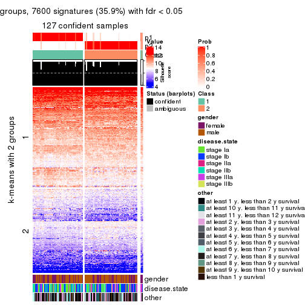
get_signatures(res, k = 3, scale_rows = FALSE)
get_signatures(res, k = 4, scale_rows = FALSE)
get_signatures(res, k = 5, scale_rows = FALSE)
get_signatures(res, k = 6, scale_rows = FALSE)
Compare the overlap of signatures from different k:
compare_signatures(res)
get_signature() returns a data frame invisibly. TO get the list of signatures, the function
call should be assigned to a variable explicitly. In following code, if plot argument is set
to FALSE, no heatmap is plotted while only the differential analysis is performed.
# code only for demonstration
tb = get_signature(res, k = ..., plot = FALSE)
An example of the output of tb is:
#> which_row fdr mean_1 mean_2 scaled_mean_1 scaled_mean_2 km
#> 1 38 0.042760348 8.373488 9.131774 -0.5533452 0.5164555 1
#> 2 40 0.018707592 7.106213 8.469186 -0.6173731 0.5762149 1
#> 3 55 0.019134737 10.221463 11.207825 -0.6159697 0.5749050 1
#> 4 59 0.006059896 5.921854 7.869574 -0.6899429 0.6439467 1
#> 5 60 0.018055526 8.928898 10.211722 -0.6204761 0.5791110 1
#> 6 98 0.009384629 15.714769 14.887706 0.6635654 -0.6193277 2
...
The columns in tb are:
which_row: row indices corresponding to the input matrix.fdr: FDR for the differential test. mean_x: The mean value in group x.scaled_mean_x: The mean value in group x after rows are scaled.km: Row groups if k-means clustering is applied to rows.UMAP plot which shows how samples are separated.
dimension_reduction(res, k = 2, method = "UMAP")
dimension_reduction(res, k = 3, method = "UMAP")
dimension_reduction(res, k = 4, method = "UMAP")
dimension_reduction(res, k = 5, method = "UMAP")
dimension_reduction(res, k = 6, method = "UMAP")
Following heatmap shows how subgroups are split when increasing k:
collect_classes(res)
Test correlation between subgroups and known annotations. If the known annotation is numeric, one-way ANOVA test is applied, and if the known annotation is discrete, chi-squared contingency table test is applied.
test_to_known_factors(res)
#> n gender(p) disease.state(p) other(p) k
#> ATC:skmeans 127 0.347 0.1271 0.570 2
#> ATC:skmeans 118 0.506 0.0617 0.344 3
#> ATC:skmeans 101 0.580 0.5204 0.385 4
#> ATC:skmeans 108 0.922 0.4960 0.422 5
#> ATC:skmeans 106 0.577 0.2763 0.572 6
If matrix rows can be associated to genes, consider to use functional_enrichment(res,
...) to perform function enrichment for the signature genes. See this vignette for more detailed explanations.
The object with results only for a single top-value method and a single partition method can be extracted as:
res = res_list["ATC", "pam"]
# you can also extract it by
# res = res_list["ATC:pam"]
A summary of res and all the functions that can be applied to it:
res
#> A 'ConsensusPartition' object with k = 2, 3, 4, 5, 6.
#> On a matrix with 21168 rows and 130 columns.
#> Top rows (1000, 2000, 3000, 4000, 5000) are extracted by 'ATC' method.
#> Subgroups are detected by 'pam' method.
#> Performed in total 1250 partitions by row resampling.
#> Best k for subgroups seems to be 3.
#>
#> Following methods can be applied to this 'ConsensusPartition' object:
#> [1] "cola_report" "collect_classes" "collect_plots"
#> [4] "collect_stats" "colnames" "compare_signatures"
#> [7] "consensus_heatmap" "dimension_reduction" "functional_enrichment"
#> [10] "get_anno_col" "get_anno" "get_classes"
#> [13] "get_consensus" "get_matrix" "get_membership"
#> [16] "get_param" "get_signatures" "get_stats"
#> [19] "is_best_k" "is_stable_k" "membership_heatmap"
#> [22] "ncol" "nrow" "plot_ecdf"
#> [25] "rownames" "select_partition_number" "show"
#> [28] "suggest_best_k" "test_to_known_factors"
collect_plots() function collects all the plots made from res for all k (number of partitions)
into one single page to provide an easy and fast comparison between different k.
collect_plots(res)
The plots are:
k and the heatmap of
predicted classes for each k.k.k.k.All the plots in panels can be made by individual functions and they are plotted later in this section.
select_partition_number() produces several plots showing different
statistics for choosing “optimized” k. There are following statistics:
k;k, the area increased is defined as \(A_k - A_{k-1}\).The detailed explanations of these statistics can be found in the cola vignette.
Generally speaking, lower PAC score, higher mean silhouette score or higher
concordance corresponds to better partition. Rand index and Jaccard index
measure how similar the current partition is compared to partition with k-1.
If they are too similar, we won't accept k is better than k-1.
select_partition_number(res)
The numeric values for all these statistics can be obtained by get_stats().
get_stats(res)
#> k 1-PAC mean_silhouette concordance area_increased Rand Jaccard
#> 2 2 0.439 0.548 0.770 0.4452 0.527 0.527
#> 3 3 0.975 0.936 0.976 0.3895 0.666 0.462
#> 4 4 0.726 0.803 0.894 0.1439 0.875 0.684
#> 5 5 0.742 0.689 0.850 0.0789 0.954 0.844
#> 6 6 0.755 0.721 0.853 0.0628 0.915 0.680
suggest_best_k() suggests the best \(k\) based on these statistics. The rules are as follows:
suggest_best_k(res)
#> [1] 3
Following shows the table of the partitions (You need to click the show/hide
code output link to see it). The membership matrix (columns with name p*)
is inferred by
clue::cl_consensus()
function with the SE method. Basically the value in the membership matrix
represents the probability to belong to a certain group. The finall class
label for an item is determined with the group with highest probability it
belongs to.
In get_classes() function, the entropy is calculated from the membership
matrix and the silhouette score is calculated from the consensus matrix.
cbind(get_classes(res, k = 2), get_membership(res, k = 2))
#> class entropy silhouette p1 p2
#> GSM102191 1 0.9732 -0.759 0.596 0.404
#> GSM102240 2 0.9993 0.992 0.484 0.516
#> GSM102175 1 0.9988 0.596 0.520 0.480
#> GSM102134 2 0.9988 0.999 0.480 0.520
#> GSM102171 1 0.9988 0.596 0.520 0.480
#> GSM102178 1 0.5294 0.523 0.880 0.120
#> GSM102198 2 0.9988 0.999 0.480 0.520
#> GSM102221 1 0.0376 0.433 0.996 0.004
#> GSM102223 2 0.9988 0.999 0.480 0.520
#> GSM102229 1 0.9775 0.593 0.588 0.412
#> GSM102153 1 0.9988 0.596 0.520 0.480
#> GSM102220 2 0.9988 0.999 0.480 0.520
#> GSM102202 2 0.9988 0.999 0.480 0.520
#> GSM102123 1 0.9988 0.596 0.520 0.480
#> GSM102125 2 0.9988 0.999 0.480 0.520
#> GSM102136 1 0.9944 -0.875 0.544 0.456
#> GSM102197 1 0.0000 0.438 1.000 0.000
#> GSM102131 1 0.5629 0.151 0.868 0.132
#> GSM102132 1 0.8499 0.575 0.724 0.276
#> GSM102212 2 0.9988 0.999 0.480 0.520
#> GSM102117 2 0.9988 0.999 0.480 0.520
#> GSM102124 2 0.9988 0.999 0.480 0.520
#> GSM102172 1 0.9988 0.596 0.520 0.480
#> GSM102199 1 0.9896 -0.843 0.560 0.440
#> GSM102203 2 0.9988 0.999 0.480 0.520
#> GSM102213 2 0.9988 0.999 0.480 0.520
#> GSM102165 1 0.9661 0.489 0.608 0.392
#> GSM102180 2 0.9988 0.999 0.480 0.520
#> GSM102184 1 0.1414 0.459 0.980 0.020
#> GSM102225 1 0.9996 -0.939 0.512 0.488
#> GSM102230 1 0.9988 0.596 0.520 0.480
#> GSM102133 2 0.9988 0.999 0.480 0.520
#> GSM102166 1 0.9988 0.596 0.520 0.480
#> GSM102235 1 0.9988 0.596 0.520 0.480
#> GSM102196 1 0.9988 0.596 0.520 0.480
#> GSM102243 1 0.4431 0.258 0.908 0.092
#> GSM102135 2 0.9988 0.999 0.480 0.520
#> GSM102139 2 0.9988 0.999 0.480 0.520
#> GSM102151 2 0.9988 0.999 0.480 0.520
#> GSM102193 2 0.9988 0.999 0.480 0.520
#> GSM102200 1 0.2236 0.472 0.964 0.036
#> GSM102204 2 0.9988 0.999 0.480 0.520
#> GSM102145 1 0.9635 -0.720 0.612 0.388
#> GSM102142 2 0.9988 0.999 0.480 0.520
#> GSM102179 2 0.9988 0.999 0.480 0.520
#> GSM102181 1 0.0000 0.438 1.000 0.000
#> GSM102154 1 0.1633 0.402 0.976 0.024
#> GSM102152 1 0.9896 -0.838 0.560 0.440
#> GSM102162 2 0.9988 0.999 0.480 0.520
#> GSM102187 1 0.8955 -0.513 0.688 0.312
#> GSM102116 1 0.9977 -0.908 0.528 0.472
#> GSM102150 1 0.7219 0.555 0.800 0.200
#> GSM102227 1 0.5842 0.125 0.860 0.140
#> GSM102114 1 0.9988 0.596 0.520 0.480
#> GSM102177 1 0.0376 0.443 0.996 0.004
#> GSM102160 2 0.9988 0.999 0.480 0.520
#> GSM102161 1 0.2778 0.456 0.952 0.048
#> GSM102170 2 0.9988 0.999 0.480 0.520
#> GSM102205 1 0.2043 0.470 0.968 0.032
#> GSM102118 1 0.9983 0.596 0.524 0.476
#> GSM102156 1 0.0000 0.438 1.000 0.000
#> GSM102238 1 0.9988 0.596 0.520 0.480
#> GSM102143 1 0.0000 0.438 1.000 0.000
#> GSM102144 2 0.9988 0.999 0.480 0.520
#> GSM102209 2 0.9988 0.999 0.480 0.520
#> GSM102210 1 0.8661 -0.440 0.712 0.288
#> GSM102140 2 0.9998 0.978 0.492 0.508
#> GSM102242 1 0.9635 0.521 0.612 0.388
#> GSM102141 1 0.9635 0.501 0.612 0.388
#> GSM102120 1 0.3114 0.340 0.944 0.056
#> GSM102127 1 0.0000 0.438 1.000 0.000
#> GSM102149 1 0.8327 0.573 0.736 0.264
#> GSM102232 2 0.9988 0.999 0.480 0.520
#> GSM102222 2 0.9988 0.999 0.480 0.520
#> GSM102236 1 0.0000 0.438 1.000 0.000
#> GSM102215 2 0.9988 0.999 0.480 0.520
#> GSM102194 2 0.9988 0.999 0.480 0.520
#> GSM102208 2 0.9988 0.999 0.480 0.520
#> GSM102130 2 0.9988 0.999 0.480 0.520
#> GSM102188 1 0.9988 0.596 0.520 0.480
#> GSM102233 1 0.9988 0.596 0.520 0.480
#> GSM102189 2 0.9988 0.999 0.480 0.520
#> GSM102234 1 0.8813 -0.449 0.700 0.300
#> GSM102237 1 0.9988 0.596 0.520 0.480
#> GSM102159 1 0.9988 0.596 0.520 0.480
#> GSM102155 1 0.0000 0.438 1.000 0.000
#> GSM102137 1 0.0000 0.438 1.000 0.000
#> GSM102217 2 0.9988 0.999 0.480 0.520
#> GSM102126 1 0.9988 0.596 0.520 0.480
#> GSM102157 2 0.9988 0.999 0.480 0.520
#> GSM102163 1 0.9909 0.595 0.556 0.444
#> GSM102182 1 0.4562 0.248 0.904 0.096
#> GSM102167 2 0.9988 0.999 0.480 0.520
#> GSM102206 1 0.9988 0.596 0.520 0.480
#> GSM102224 2 0.9988 0.999 0.480 0.520
#> GSM102164 2 0.9988 0.999 0.480 0.520
#> GSM102174 1 0.9170 -0.546 0.668 0.332
#> GSM102214 1 0.4562 0.253 0.904 0.096
#> GSM102226 2 0.9988 0.999 0.480 0.520
#> GSM102195 2 0.9988 0.999 0.480 0.520
#> GSM102218 1 0.0000 0.438 1.000 0.000
#> GSM102128 2 0.9988 0.999 0.480 0.520
#> GSM102168 1 0.9988 0.596 0.520 0.480
#> GSM102190 1 0.3114 0.436 0.944 0.056
#> GSM102201 2 0.9988 0.999 0.480 0.520
#> GSM102129 1 0.9896 -0.842 0.560 0.440
#> GSM102192 1 0.0000 0.438 1.000 0.000
#> GSM102183 1 0.4431 0.258 0.908 0.092
#> GSM102185 1 0.9988 0.596 0.520 0.480
#> GSM102158 2 0.9988 0.999 0.480 0.520
#> GSM102169 1 0.8861 -0.462 0.696 0.304
#> GSM102216 1 0.8499 0.575 0.724 0.276
#> GSM102219 1 0.9988 0.596 0.520 0.480
#> GSM102231 1 0.8909 -0.494 0.692 0.308
#> GSM102147 2 0.9988 0.999 0.480 0.520
#> GSM102176 1 0.9970 0.596 0.532 0.468
#> GSM102148 1 0.9909 0.595 0.556 0.444
#> GSM102146 1 0.2603 0.478 0.956 0.044
#> GSM102241 1 0.9988 0.596 0.520 0.480
#> GSM102211 1 0.9988 0.596 0.520 0.480
#> GSM102115 1 0.9209 -0.580 0.664 0.336
#> GSM102173 1 0.9988 0.596 0.520 0.480
#> GSM102138 2 0.9988 0.999 0.480 0.520
#> GSM102228 1 0.7376 -0.134 0.792 0.208
#> GSM102207 1 0.9358 0.487 0.648 0.352
#> GSM102122 1 0.9988 0.596 0.520 0.480
#> GSM102119 2 0.9988 0.999 0.480 0.520
#> GSM102186 2 0.9988 0.999 0.480 0.520
#> GSM102239 1 0.2043 0.469 0.968 0.032
#> GSM102121 2 0.9988 0.999 0.480 0.520
cbind(get_classes(res, k = 3), get_membership(res, k = 3))
#> class entropy silhouette p1 p2 p3
#> GSM102191 3 0.0000 0.9783 0.000 0.000 1.000
#> GSM102240 3 0.0424 0.9719 0.000 0.008 0.992
#> GSM102175 1 0.0000 0.9606 1.000 0.000 0.000
#> GSM102134 3 0.5760 0.4993 0.000 0.328 0.672
#> GSM102171 1 0.0000 0.9606 1.000 0.000 0.000
#> GSM102178 3 0.1031 0.9563 0.024 0.000 0.976
#> GSM102198 2 0.0000 0.9643 0.000 1.000 0.000
#> GSM102221 3 0.0000 0.9783 0.000 0.000 1.000
#> GSM102223 2 0.1031 0.9418 0.000 0.976 0.024
#> GSM102229 1 0.5706 0.5607 0.680 0.000 0.320
#> GSM102153 1 0.0000 0.9606 1.000 0.000 0.000
#> GSM102220 3 0.6309 -0.0202 0.000 0.500 0.500
#> GSM102202 2 0.0000 0.9643 0.000 1.000 0.000
#> GSM102123 1 0.0000 0.9606 1.000 0.000 0.000
#> GSM102125 2 0.2261 0.8921 0.000 0.932 0.068
#> GSM102136 3 0.0000 0.9783 0.000 0.000 1.000
#> GSM102197 3 0.0000 0.9783 0.000 0.000 1.000
#> GSM102131 3 0.0000 0.9783 0.000 0.000 1.000
#> GSM102132 3 0.0592 0.9683 0.012 0.000 0.988
#> GSM102212 2 0.4062 0.7695 0.000 0.836 0.164
#> GSM102117 3 0.0424 0.9719 0.000 0.008 0.992
#> GSM102124 2 0.4555 0.7260 0.000 0.800 0.200
#> GSM102172 1 0.0000 0.9606 1.000 0.000 0.000
#> GSM102199 3 0.0000 0.9783 0.000 0.000 1.000
#> GSM102203 3 0.0000 0.9783 0.000 0.000 1.000
#> GSM102213 3 0.0000 0.9783 0.000 0.000 1.000
#> GSM102165 3 0.0592 0.9682 0.012 0.000 0.988
#> GSM102180 2 0.0000 0.9643 0.000 1.000 0.000
#> GSM102184 3 0.0000 0.9783 0.000 0.000 1.000
#> GSM102225 3 0.0000 0.9783 0.000 0.000 1.000
#> GSM102230 1 0.0000 0.9606 1.000 0.000 0.000
#> GSM102133 2 0.0000 0.9643 0.000 1.000 0.000
#> GSM102166 1 0.0000 0.9606 1.000 0.000 0.000
#> GSM102235 1 0.0000 0.9606 1.000 0.000 0.000
#> GSM102196 1 0.0000 0.9606 1.000 0.000 0.000
#> GSM102243 3 0.0000 0.9783 0.000 0.000 1.000
#> GSM102135 3 0.0000 0.9783 0.000 0.000 1.000
#> GSM102139 2 0.0000 0.9643 0.000 1.000 0.000
#> GSM102151 2 0.0000 0.9643 0.000 1.000 0.000
#> GSM102193 2 0.0000 0.9643 0.000 1.000 0.000
#> GSM102200 3 0.0000 0.9783 0.000 0.000 1.000
#> GSM102204 2 0.0000 0.9643 0.000 1.000 0.000
#> GSM102145 3 0.0424 0.9719 0.000 0.008 0.992
#> GSM102142 2 0.0237 0.9608 0.000 0.996 0.004
#> GSM102179 3 0.0000 0.9783 0.000 0.000 1.000
#> GSM102181 3 0.0000 0.9783 0.000 0.000 1.000
#> GSM102154 3 0.0000 0.9783 0.000 0.000 1.000
#> GSM102152 3 0.0000 0.9783 0.000 0.000 1.000
#> GSM102162 2 0.0000 0.9643 0.000 1.000 0.000
#> GSM102187 3 0.0000 0.9783 0.000 0.000 1.000
#> GSM102116 3 0.0000 0.9783 0.000 0.000 1.000
#> GSM102150 3 0.0000 0.9783 0.000 0.000 1.000
#> GSM102227 3 0.0000 0.9783 0.000 0.000 1.000
#> GSM102114 1 0.0000 0.9606 1.000 0.000 0.000
#> GSM102177 3 0.0000 0.9783 0.000 0.000 1.000
#> GSM102160 2 0.0000 0.9643 0.000 1.000 0.000
#> GSM102161 3 0.0000 0.9783 0.000 0.000 1.000
#> GSM102170 2 0.0000 0.9643 0.000 1.000 0.000
#> GSM102205 3 0.0000 0.9783 0.000 0.000 1.000
#> GSM102118 1 0.4555 0.7507 0.800 0.000 0.200
#> GSM102156 3 0.0000 0.9783 0.000 0.000 1.000
#> GSM102238 1 0.0000 0.9606 1.000 0.000 0.000
#> GSM102143 3 0.0000 0.9783 0.000 0.000 1.000
#> GSM102144 2 0.0000 0.9643 0.000 1.000 0.000
#> GSM102209 3 0.0000 0.9783 0.000 0.000 1.000
#> GSM102210 3 0.0000 0.9783 0.000 0.000 1.000
#> GSM102140 3 0.0000 0.9783 0.000 0.000 1.000
#> GSM102242 3 0.0000 0.9783 0.000 0.000 1.000
#> GSM102141 3 0.0000 0.9783 0.000 0.000 1.000
#> GSM102120 3 0.0000 0.9783 0.000 0.000 1.000
#> GSM102127 3 0.0000 0.9783 0.000 0.000 1.000
#> GSM102149 3 0.0000 0.9783 0.000 0.000 1.000
#> GSM102232 2 0.6244 0.2115 0.000 0.560 0.440
#> GSM102222 2 0.0000 0.9643 0.000 1.000 0.000
#> GSM102236 3 0.0000 0.9783 0.000 0.000 1.000
#> GSM102215 2 0.0000 0.9643 0.000 1.000 0.000
#> GSM102194 2 0.0000 0.9643 0.000 1.000 0.000
#> GSM102208 2 0.0000 0.9643 0.000 1.000 0.000
#> GSM102130 2 0.0000 0.9643 0.000 1.000 0.000
#> GSM102188 1 0.0000 0.9606 1.000 0.000 0.000
#> GSM102233 1 0.0000 0.9606 1.000 0.000 0.000
#> GSM102189 2 0.0000 0.9643 0.000 1.000 0.000
#> GSM102234 3 0.0000 0.9783 0.000 0.000 1.000
#> GSM102237 1 0.0000 0.9606 1.000 0.000 0.000
#> GSM102159 1 0.0000 0.9606 1.000 0.000 0.000
#> GSM102155 3 0.0000 0.9783 0.000 0.000 1.000
#> GSM102137 3 0.0000 0.9783 0.000 0.000 1.000
#> GSM102217 3 0.0000 0.9783 0.000 0.000 1.000
#> GSM102126 1 0.0000 0.9606 1.000 0.000 0.000
#> GSM102157 3 0.0000 0.9783 0.000 0.000 1.000
#> GSM102163 1 0.2356 0.8945 0.928 0.000 0.072
#> GSM102182 3 0.0000 0.9783 0.000 0.000 1.000
#> GSM102167 2 0.0000 0.9643 0.000 1.000 0.000
#> GSM102206 1 0.0000 0.9606 1.000 0.000 0.000
#> GSM102224 2 0.0000 0.9643 0.000 1.000 0.000
#> GSM102164 2 0.0000 0.9643 0.000 1.000 0.000
#> GSM102174 3 0.0000 0.9783 0.000 0.000 1.000
#> GSM102214 3 0.0000 0.9783 0.000 0.000 1.000
#> GSM102226 3 0.0000 0.9783 0.000 0.000 1.000
#> GSM102195 3 0.0424 0.9719 0.000 0.008 0.992
#> GSM102218 3 0.0000 0.9783 0.000 0.000 1.000
#> GSM102128 2 0.0000 0.9643 0.000 1.000 0.000
#> GSM102168 1 0.0000 0.9606 1.000 0.000 0.000
#> GSM102190 3 0.0747 0.9647 0.016 0.000 0.984
#> GSM102201 2 0.0592 0.9538 0.000 0.988 0.012
#> GSM102129 3 0.0000 0.9783 0.000 0.000 1.000
#> GSM102192 3 0.0000 0.9783 0.000 0.000 1.000
#> GSM102183 3 0.0000 0.9783 0.000 0.000 1.000
#> GSM102185 1 0.0000 0.9606 1.000 0.000 0.000
#> GSM102158 2 0.0000 0.9643 0.000 1.000 0.000
#> GSM102169 3 0.0000 0.9783 0.000 0.000 1.000
#> GSM102216 3 0.0000 0.9783 0.000 0.000 1.000
#> GSM102219 1 0.0000 0.9606 1.000 0.000 0.000
#> GSM102231 3 0.0000 0.9783 0.000 0.000 1.000
#> GSM102147 2 0.0000 0.9643 0.000 1.000 0.000
#> GSM102176 1 0.4605 0.7459 0.796 0.000 0.204
#> GSM102148 1 0.2625 0.8822 0.916 0.000 0.084
#> GSM102146 3 0.0592 0.9683 0.012 0.000 0.988
#> GSM102241 1 0.0000 0.9606 1.000 0.000 0.000
#> GSM102211 1 0.0000 0.9606 1.000 0.000 0.000
#> GSM102115 3 0.0000 0.9783 0.000 0.000 1.000
#> GSM102173 1 0.0000 0.9606 1.000 0.000 0.000
#> GSM102138 3 0.6140 0.2990 0.000 0.404 0.596
#> GSM102228 3 0.0000 0.9783 0.000 0.000 1.000
#> GSM102207 3 0.0000 0.9783 0.000 0.000 1.000
#> GSM102122 1 0.0000 0.9606 1.000 0.000 0.000
#> GSM102119 2 0.0000 0.9643 0.000 1.000 0.000
#> GSM102186 2 0.0000 0.9643 0.000 1.000 0.000
#> GSM102239 3 0.0000 0.9783 0.000 0.000 1.000
#> GSM102121 2 0.0000 0.9643 0.000 1.000 0.000
cbind(get_classes(res, k = 4), get_membership(res, k = 4))
#> class entropy silhouette p1 p2 p3 p4
#> GSM102191 3 0.1520 0.9293 0.000 0.020 0.956 0.024
#> GSM102240 3 0.5113 0.6071 0.000 0.024 0.684 0.292
#> GSM102175 1 0.0188 0.9324 0.996 0.000 0.004 0.000
#> GSM102134 4 0.3463 0.7350 0.000 0.040 0.096 0.864
#> GSM102171 1 0.0000 0.9323 1.000 0.000 0.000 0.000
#> GSM102178 3 0.0921 0.9267 0.028 0.000 0.972 0.000
#> GSM102198 4 0.3219 0.6606 0.000 0.164 0.000 0.836
#> GSM102221 3 0.1940 0.9140 0.000 0.000 0.924 0.076
#> GSM102223 4 0.3392 0.6910 0.000 0.124 0.020 0.856
#> GSM102229 1 0.6495 0.5773 0.624 0.000 0.252 0.124
#> GSM102153 1 0.0188 0.9324 0.996 0.000 0.004 0.000
#> GSM102220 2 0.7167 0.0684 0.000 0.468 0.396 0.136
#> GSM102202 2 0.4994 -0.0896 0.000 0.520 0.000 0.480
#> GSM102123 1 0.3013 0.9005 0.888 0.000 0.032 0.080
#> GSM102125 2 0.3569 0.6846 0.000 0.804 0.000 0.196
#> GSM102136 4 0.5604 0.2271 0.000 0.020 0.476 0.504
#> GSM102197 3 0.0000 0.9342 0.000 0.000 1.000 0.000
#> GSM102131 3 0.2589 0.8801 0.000 0.000 0.884 0.116
#> GSM102132 3 0.0657 0.9334 0.012 0.000 0.984 0.004
#> GSM102212 4 0.3610 0.6291 0.000 0.200 0.000 0.800
#> GSM102117 3 0.4182 0.7987 0.000 0.024 0.796 0.180
#> GSM102124 2 0.4701 0.5857 0.000 0.780 0.164 0.056
#> GSM102172 1 0.0469 0.9319 0.988 0.000 0.012 0.000
#> GSM102199 4 0.4866 0.4100 0.000 0.000 0.404 0.596
#> GSM102203 4 0.3591 0.7228 0.000 0.008 0.168 0.824
#> GSM102213 3 0.3082 0.8683 0.000 0.032 0.884 0.084
#> GSM102165 3 0.2928 0.8547 0.012 0.000 0.880 0.108
#> GSM102180 2 0.3569 0.6846 0.000 0.804 0.000 0.196
#> GSM102184 3 0.2197 0.8852 0.004 0.000 0.916 0.080
#> GSM102225 4 0.3400 0.7194 0.000 0.000 0.180 0.820
#> GSM102230 1 0.1716 0.9171 0.936 0.000 0.000 0.064
#> GSM102133 2 0.0000 0.8297 0.000 1.000 0.000 0.000
#> GSM102166 1 0.0592 0.9314 0.984 0.000 0.016 0.000
#> GSM102235 1 0.0592 0.9316 0.984 0.000 0.000 0.016
#> GSM102196 1 0.1118 0.9246 0.964 0.000 0.036 0.000
#> GSM102243 3 0.1042 0.9325 0.000 0.020 0.972 0.008
#> GSM102135 4 0.2921 0.7395 0.000 0.000 0.140 0.860
#> GSM102139 2 0.0707 0.8158 0.000 0.980 0.000 0.020
#> GSM102151 4 0.2973 0.6721 0.000 0.144 0.000 0.856
#> GSM102193 2 0.0000 0.8297 0.000 1.000 0.000 0.000
#> GSM102200 3 0.0000 0.9342 0.000 0.000 1.000 0.000
#> GSM102204 4 0.4356 0.5427 0.000 0.292 0.000 0.708
#> GSM102145 3 0.3351 0.8198 0.000 0.008 0.844 0.148
#> GSM102142 2 0.4761 0.4053 0.000 0.628 0.000 0.372
#> GSM102179 3 0.1452 0.9269 0.000 0.036 0.956 0.008
#> GSM102181 3 0.0000 0.9342 0.000 0.000 1.000 0.000
#> GSM102154 3 0.0188 0.9347 0.000 0.004 0.996 0.000
#> GSM102152 4 0.4250 0.6376 0.000 0.000 0.276 0.724
#> GSM102162 2 0.3801 0.6603 0.000 0.780 0.000 0.220
#> GSM102187 3 0.1042 0.9325 0.000 0.020 0.972 0.008
#> GSM102116 3 0.2227 0.9187 0.000 0.036 0.928 0.036
#> GSM102150 3 0.0000 0.9342 0.000 0.000 1.000 0.000
#> GSM102227 3 0.0592 0.9324 0.000 0.000 0.984 0.016
#> GSM102114 1 0.0188 0.9324 0.996 0.000 0.004 0.000
#> GSM102177 3 0.1610 0.9218 0.016 0.000 0.952 0.032
#> GSM102160 2 0.0188 0.8285 0.000 0.996 0.000 0.004
#> GSM102161 3 0.0592 0.9318 0.016 0.000 0.984 0.000
#> GSM102170 2 0.0000 0.8297 0.000 1.000 0.000 0.000
#> GSM102205 3 0.0000 0.9342 0.000 0.000 1.000 0.000
#> GSM102118 1 0.6095 0.6490 0.668 0.000 0.224 0.108
#> GSM102156 3 0.0000 0.9342 0.000 0.000 1.000 0.000
#> GSM102238 1 0.0000 0.9323 1.000 0.000 0.000 0.000
#> GSM102143 3 0.0000 0.9342 0.000 0.000 1.000 0.000
#> GSM102144 2 0.4907 0.2906 0.000 0.580 0.000 0.420
#> GSM102209 4 0.2973 0.7392 0.000 0.000 0.144 0.856
#> GSM102210 3 0.0895 0.9328 0.000 0.020 0.976 0.004
#> GSM102140 3 0.3708 0.8160 0.000 0.020 0.832 0.148
#> GSM102242 3 0.2654 0.8615 0.004 0.000 0.888 0.108
#> GSM102141 3 0.2888 0.8599 0.004 0.000 0.872 0.124
#> GSM102120 3 0.1042 0.9332 0.000 0.008 0.972 0.020
#> GSM102127 3 0.0000 0.9342 0.000 0.000 1.000 0.000
#> GSM102149 3 0.0592 0.9324 0.000 0.000 0.984 0.016
#> GSM102232 4 0.3899 0.7347 0.000 0.052 0.108 0.840
#> GSM102222 4 0.3569 0.6334 0.000 0.196 0.000 0.804
#> GSM102236 3 0.1389 0.9281 0.000 0.000 0.952 0.048
#> GSM102215 2 0.4898 0.1118 0.000 0.584 0.000 0.416
#> GSM102194 2 0.0000 0.8297 0.000 1.000 0.000 0.000
#> GSM102208 2 0.0188 0.8284 0.000 0.996 0.000 0.004
#> GSM102130 2 0.0000 0.8297 0.000 1.000 0.000 0.000
#> GSM102188 1 0.1452 0.9239 0.956 0.000 0.036 0.008
#> GSM102233 1 0.0592 0.9316 0.984 0.000 0.000 0.016
#> GSM102189 2 0.0000 0.8297 0.000 1.000 0.000 0.000
#> GSM102234 3 0.4839 0.7317 0.004 0.016 0.724 0.256
#> GSM102237 1 0.0469 0.9320 0.988 0.000 0.000 0.012
#> GSM102159 1 0.0188 0.9324 0.996 0.000 0.004 0.000
#> GSM102155 3 0.0707 0.9330 0.000 0.000 0.980 0.020
#> GSM102137 3 0.0000 0.9342 0.000 0.000 1.000 0.000
#> GSM102217 4 0.2973 0.7392 0.000 0.000 0.144 0.856
#> GSM102126 1 0.3013 0.9005 0.888 0.000 0.032 0.080
#> GSM102157 3 0.1118 0.9282 0.000 0.036 0.964 0.000
#> GSM102163 1 0.2345 0.8674 0.900 0.000 0.100 0.000
#> GSM102182 3 0.0895 0.9330 0.000 0.020 0.976 0.004
#> GSM102167 2 0.0000 0.8297 0.000 1.000 0.000 0.000
#> GSM102206 1 0.1302 0.9249 0.956 0.000 0.000 0.044
#> GSM102224 4 0.4855 0.3653 0.000 0.400 0.000 0.600
#> GSM102164 2 0.0707 0.8158 0.000 0.980 0.000 0.020
#> GSM102174 3 0.1929 0.9242 0.000 0.024 0.940 0.036
#> GSM102214 3 0.1792 0.9082 0.000 0.000 0.932 0.068
#> GSM102226 4 0.2921 0.7395 0.000 0.000 0.140 0.860
#> GSM102195 3 0.4630 0.6537 0.000 0.016 0.732 0.252
#> GSM102218 3 0.1489 0.9148 0.004 0.000 0.952 0.044
#> GSM102128 2 0.0000 0.8297 0.000 1.000 0.000 0.000
#> GSM102168 1 0.0000 0.9323 1.000 0.000 0.000 0.000
#> GSM102190 3 0.1394 0.9326 0.016 0.012 0.964 0.008
#> GSM102201 4 0.5163 0.1045 0.000 0.480 0.004 0.516
#> GSM102129 3 0.0592 0.9340 0.000 0.016 0.984 0.000
#> GSM102192 3 0.0188 0.9342 0.000 0.000 0.996 0.004
#> GSM102183 3 0.1042 0.9325 0.000 0.020 0.972 0.008
#> GSM102185 1 0.0188 0.9324 0.996 0.000 0.004 0.000
#> GSM102158 2 0.0000 0.8297 0.000 1.000 0.000 0.000
#> GSM102169 3 0.2089 0.9132 0.000 0.020 0.932 0.048
#> GSM102216 3 0.0000 0.9342 0.000 0.000 1.000 0.000
#> GSM102219 1 0.3280 0.8835 0.860 0.000 0.016 0.124
#> GSM102231 3 0.3032 0.8635 0.000 0.008 0.868 0.124
#> GSM102147 4 0.4431 0.5273 0.000 0.304 0.000 0.696
#> GSM102176 1 0.4524 0.6962 0.768 0.000 0.204 0.028
#> GSM102148 1 0.3243 0.8944 0.876 0.000 0.036 0.088
#> GSM102146 3 0.1488 0.9249 0.012 0.000 0.956 0.032
#> GSM102241 1 0.0188 0.9324 0.996 0.000 0.004 0.000
#> GSM102211 1 0.0592 0.9316 0.984 0.000 0.000 0.016
#> GSM102115 3 0.1820 0.9253 0.000 0.020 0.944 0.036
#> GSM102173 1 0.0188 0.9324 0.996 0.000 0.004 0.000
#> GSM102138 4 0.7414 0.4815 0.000 0.188 0.320 0.492
#> GSM102228 3 0.0707 0.9331 0.000 0.020 0.980 0.000
#> GSM102207 3 0.2831 0.8642 0.004 0.000 0.876 0.120
#> GSM102122 1 0.2011 0.9109 0.920 0.000 0.000 0.080
#> GSM102119 2 0.0000 0.8297 0.000 1.000 0.000 0.000
#> GSM102186 2 0.0000 0.8297 0.000 1.000 0.000 0.000
#> GSM102239 3 0.1022 0.9280 0.000 0.000 0.968 0.032
#> GSM102121 2 0.1557 0.7973 0.000 0.944 0.000 0.056
cbind(get_classes(res, k = 5), get_membership(res, k = 5))
#> class entropy silhouette p1 p2 p3 p4 p5
#> GSM102191 3 0.1280 0.78708 0.000 0.024 0.960 0.008 0.008
#> GSM102240 3 0.6550 0.35214 0.000 0.024 0.444 0.108 0.424
#> GSM102175 1 0.0955 0.87656 0.968 0.000 0.004 0.000 0.028
#> GSM102134 4 0.0324 0.81866 0.000 0.004 0.004 0.992 0.000
#> GSM102171 1 0.0000 0.88140 1.000 0.000 0.000 0.000 0.000
#> GSM102178 3 0.2067 0.75852 0.048 0.000 0.920 0.000 0.032
#> GSM102198 4 0.0404 0.81759 0.000 0.012 0.000 0.988 0.000
#> GSM102221 3 0.5100 0.40800 0.000 0.000 0.516 0.036 0.448
#> GSM102223 4 0.0404 0.81759 0.000 0.012 0.000 0.988 0.000
#> GSM102229 5 0.4610 -0.03412 0.432 0.000 0.012 0.000 0.556
#> GSM102153 1 0.0000 0.88140 1.000 0.000 0.000 0.000 0.000
#> GSM102220 2 0.6246 -0.00738 0.000 0.464 0.428 0.092 0.016
#> GSM102202 4 0.4210 0.38634 0.000 0.412 0.000 0.588 0.000
#> GSM102123 1 0.3582 0.73656 0.768 0.000 0.008 0.000 0.224
#> GSM102125 2 0.3388 0.71135 0.000 0.792 0.000 0.200 0.008
#> GSM102136 4 0.5378 0.38484 0.000 0.024 0.352 0.596 0.028
#> GSM102197 3 0.0162 0.78908 0.000 0.000 0.996 0.000 0.004
#> GSM102131 3 0.4637 0.25217 0.000 0.000 0.672 0.036 0.292
#> GSM102132 3 0.0955 0.78449 0.004 0.000 0.968 0.000 0.028
#> GSM102212 4 0.1121 0.80493 0.000 0.044 0.000 0.956 0.000
#> GSM102117 3 0.6393 0.42543 0.000 0.024 0.516 0.100 0.360
#> GSM102124 2 0.3810 0.64810 0.000 0.788 0.176 0.036 0.000
#> GSM102172 1 0.1965 0.85586 0.924 0.000 0.024 0.000 0.052
#> GSM102199 4 0.3999 0.41430 0.000 0.000 0.344 0.656 0.000
#> GSM102203 4 0.3503 0.74808 0.000 0.012 0.060 0.848 0.080
#> GSM102213 3 0.3023 0.71160 0.000 0.024 0.860 0.112 0.004
#> GSM102165 5 0.4632 0.47480 0.012 0.000 0.448 0.000 0.540
#> GSM102180 2 0.3388 0.71135 0.000 0.792 0.000 0.200 0.008
#> GSM102184 3 0.3480 0.46573 0.000 0.000 0.752 0.000 0.248
#> GSM102225 4 0.0963 0.81027 0.000 0.000 0.036 0.964 0.000
#> GSM102230 1 0.2660 0.81939 0.864 0.000 0.008 0.000 0.128
#> GSM102133 2 0.0000 0.86974 0.000 1.000 0.000 0.000 0.000
#> GSM102166 1 0.1300 0.87174 0.956 0.000 0.016 0.000 0.028
#> GSM102235 1 0.1851 0.85175 0.912 0.000 0.000 0.000 0.088
#> GSM102196 1 0.0703 0.87685 0.976 0.000 0.024 0.000 0.000
#> GSM102243 3 0.2813 0.75517 0.000 0.024 0.868 0.000 0.108
#> GSM102135 4 0.0290 0.81889 0.000 0.000 0.008 0.992 0.000
#> GSM102139 2 0.0703 0.85115 0.000 0.976 0.000 0.024 0.000
#> GSM102151 4 0.0404 0.81759 0.000 0.012 0.000 0.988 0.000
#> GSM102193 2 0.0000 0.86974 0.000 1.000 0.000 0.000 0.000
#> GSM102200 3 0.0794 0.78566 0.000 0.000 0.972 0.000 0.028
#> GSM102204 4 0.2020 0.77774 0.000 0.100 0.000 0.900 0.000
#> GSM102145 3 0.2011 0.75014 0.000 0.000 0.908 0.088 0.004
#> GSM102142 2 0.4455 0.36509 0.000 0.588 0.000 0.404 0.008
#> GSM102179 3 0.1393 0.78607 0.000 0.024 0.956 0.012 0.008
#> GSM102181 3 0.0000 0.78862 0.000 0.000 1.000 0.000 0.000
#> GSM102154 3 0.0324 0.78975 0.000 0.004 0.992 0.004 0.000
#> GSM102152 4 0.3048 0.68077 0.000 0.000 0.176 0.820 0.004
#> GSM102162 2 0.3519 0.69271 0.000 0.776 0.000 0.216 0.008
#> GSM102187 3 0.1372 0.78824 0.000 0.024 0.956 0.004 0.016
#> GSM102116 3 0.5225 0.43408 0.000 0.024 0.532 0.012 0.432
#> GSM102150 3 0.0000 0.78862 0.000 0.000 1.000 0.000 0.000
#> GSM102227 3 0.0566 0.78834 0.000 0.004 0.984 0.000 0.012
#> GSM102114 1 0.0609 0.87955 0.980 0.000 0.000 0.000 0.020
#> GSM102177 3 0.5645 0.36400 0.056 0.000 0.500 0.008 0.436
#> GSM102160 2 0.0000 0.86974 0.000 1.000 0.000 0.000 0.000
#> GSM102161 3 0.1877 0.75387 0.064 0.000 0.924 0.000 0.012
#> GSM102170 2 0.0000 0.86974 0.000 1.000 0.000 0.000 0.000
#> GSM102205 3 0.0794 0.78566 0.000 0.000 0.972 0.000 0.028
#> GSM102118 5 0.4702 -0.02768 0.432 0.000 0.016 0.000 0.552
#> GSM102156 3 0.0162 0.78903 0.000 0.000 0.996 0.004 0.000
#> GSM102238 1 0.0000 0.88140 1.000 0.000 0.000 0.000 0.000
#> GSM102143 3 0.0000 0.78862 0.000 0.000 1.000 0.000 0.000
#> GSM102144 2 0.4283 0.23058 0.000 0.544 0.000 0.456 0.000
#> GSM102209 4 0.0290 0.81889 0.000 0.000 0.008 0.992 0.000
#> GSM102210 3 0.1153 0.78760 0.000 0.024 0.964 0.004 0.008
#> GSM102140 3 0.2700 0.74434 0.000 0.024 0.884 0.088 0.004
#> GSM102242 5 0.4287 0.46164 0.000 0.000 0.460 0.000 0.540
#> GSM102141 5 0.4291 0.45663 0.000 0.000 0.464 0.000 0.536
#> GSM102120 3 0.0566 0.78979 0.000 0.012 0.984 0.004 0.000
#> GSM102127 3 0.0703 0.78736 0.000 0.000 0.976 0.000 0.024
#> GSM102149 3 0.0290 0.78879 0.000 0.000 0.992 0.000 0.008
#> GSM102232 4 0.0451 0.81907 0.000 0.004 0.008 0.988 0.000
#> GSM102222 4 0.0963 0.80850 0.000 0.036 0.000 0.964 0.000
#> GSM102236 3 0.4597 0.44128 0.000 0.000 0.564 0.012 0.424
#> GSM102215 4 0.4278 0.29778 0.000 0.452 0.000 0.548 0.000
#> GSM102194 2 0.0000 0.86974 0.000 1.000 0.000 0.000 0.000
#> GSM102208 2 0.0451 0.86573 0.000 0.988 0.000 0.004 0.008
#> GSM102130 2 0.0000 0.86974 0.000 1.000 0.000 0.000 0.000
#> GSM102188 1 0.2491 0.85075 0.896 0.000 0.036 0.000 0.068
#> GSM102233 1 0.1965 0.84715 0.904 0.000 0.000 0.000 0.096
#> GSM102189 2 0.0000 0.86974 0.000 1.000 0.000 0.000 0.000
#> GSM102234 3 0.5337 -0.31365 0.000 0.000 0.508 0.052 0.440
#> GSM102237 1 0.0404 0.88096 0.988 0.000 0.000 0.000 0.012
#> GSM102159 1 0.0865 0.87719 0.972 0.000 0.004 0.000 0.024
#> GSM102155 3 0.2732 0.62787 0.000 0.000 0.840 0.000 0.160
#> GSM102137 3 0.0510 0.78769 0.000 0.000 0.984 0.000 0.016
#> GSM102217 4 0.0290 0.81889 0.000 0.000 0.008 0.992 0.000
#> GSM102126 1 0.3579 0.71961 0.756 0.000 0.004 0.000 0.240
#> GSM102157 3 0.1106 0.78672 0.000 0.024 0.964 0.012 0.000
#> GSM102163 1 0.3051 0.74529 0.852 0.000 0.120 0.000 0.028
#> GSM102182 3 0.2972 0.74589 0.000 0.024 0.864 0.004 0.108
#> GSM102167 2 0.0000 0.86974 0.000 1.000 0.000 0.000 0.000
#> GSM102206 1 0.2561 0.81606 0.856 0.000 0.000 0.000 0.144
#> GSM102224 4 0.3424 0.65356 0.000 0.240 0.000 0.760 0.000
#> GSM102164 2 0.0703 0.85115 0.000 0.976 0.000 0.024 0.000
#> GSM102174 3 0.5399 0.43119 0.000 0.024 0.524 0.020 0.432
#> GSM102214 3 0.1205 0.78283 0.000 0.000 0.956 0.040 0.004
#> GSM102226 4 0.0290 0.81889 0.000 0.000 0.008 0.992 0.000
#> GSM102195 3 0.3821 0.59153 0.000 0.020 0.764 0.216 0.000
#> GSM102218 3 0.1410 0.76293 0.000 0.000 0.940 0.000 0.060
#> GSM102128 2 0.0000 0.86974 0.000 1.000 0.000 0.000 0.000
#> GSM102168 1 0.0000 0.88140 1.000 0.000 0.000 0.000 0.000
#> GSM102190 3 0.2621 0.75176 0.004 0.008 0.876 0.000 0.112
#> GSM102201 4 0.4126 0.42498 0.000 0.380 0.000 0.620 0.000
#> GSM102129 3 0.1012 0.78811 0.000 0.020 0.968 0.012 0.000
#> GSM102192 3 0.0510 0.78769 0.000 0.000 0.984 0.000 0.016
#> GSM102183 3 0.1822 0.78859 0.000 0.024 0.936 0.004 0.036
#> GSM102185 1 0.0404 0.88090 0.988 0.000 0.000 0.000 0.012
#> GSM102158 2 0.0162 0.86840 0.000 0.996 0.000 0.000 0.004
#> GSM102169 3 0.2178 0.77365 0.000 0.024 0.920 0.048 0.008
#> GSM102216 3 0.1544 0.76007 0.000 0.000 0.932 0.000 0.068
#> GSM102219 5 0.4287 -0.09608 0.460 0.000 0.000 0.000 0.540
#> GSM102231 3 0.2520 0.75295 0.000 0.012 0.888 0.096 0.004
#> GSM102147 4 0.2230 0.76941 0.000 0.116 0.000 0.884 0.000
#> GSM102176 1 0.4045 0.39523 0.644 0.000 0.000 0.000 0.356
#> GSM102148 1 0.4339 0.58860 0.652 0.000 0.012 0.000 0.336
#> GSM102146 3 0.4651 0.44275 0.004 0.000 0.560 0.008 0.428
#> GSM102241 1 0.0000 0.88140 1.000 0.000 0.000 0.000 0.000
#> GSM102211 1 0.1965 0.84715 0.904 0.000 0.000 0.000 0.096
#> GSM102115 3 0.5225 0.43408 0.000 0.024 0.532 0.012 0.432
#> GSM102173 1 0.0404 0.88090 0.988 0.000 0.000 0.000 0.012
#> GSM102138 4 0.6016 0.37813 0.000 0.140 0.312 0.548 0.000
#> GSM102228 3 0.0992 0.78747 0.000 0.024 0.968 0.008 0.000
#> GSM102207 5 0.4294 0.44431 0.000 0.000 0.468 0.000 0.532
#> GSM102122 1 0.3274 0.74278 0.780 0.000 0.000 0.000 0.220
#> GSM102119 2 0.0000 0.86974 0.000 1.000 0.000 0.000 0.000
#> GSM102186 2 0.0162 0.86840 0.000 0.996 0.000 0.000 0.004
#> GSM102239 3 0.4522 0.43208 0.000 0.000 0.552 0.008 0.440
#> GSM102121 2 0.0963 0.85017 0.000 0.964 0.000 0.036 0.000
cbind(get_classes(res, k = 6), get_membership(res, k = 6))
#> class entropy silhouette p1 p2 p3 p4 p5 p6
#> GSM102191 3 0.1007 0.7966 0.000 0.000 0.956 0.000 0.044 0.000
#> GSM102240 5 0.4328 0.7986 0.000 0.000 0.212 0.080 0.708 0.000
#> GSM102175 1 0.1501 0.8379 0.924 0.000 0.000 0.000 0.076 0.000
#> GSM102134 4 0.0405 0.8112 0.000 0.000 0.008 0.988 0.004 0.000
#> GSM102171 1 0.1049 0.8533 0.960 0.000 0.000 0.000 0.032 0.008
#> GSM102178 3 0.3740 0.6993 0.032 0.000 0.740 0.000 0.228 0.000
#> GSM102198 4 0.0146 0.8132 0.000 0.004 0.000 0.996 0.000 0.000
#> GSM102221 5 0.2135 0.7772 0.000 0.000 0.128 0.000 0.872 0.000
#> GSM102223 4 0.0000 0.8133 0.000 0.000 0.000 1.000 0.000 0.000
#> GSM102229 6 0.0000 0.7964 0.000 0.000 0.000 0.000 0.000 1.000
#> GSM102153 1 0.0717 0.8594 0.976 0.000 0.000 0.000 0.016 0.008
#> GSM102220 2 0.5956 0.0102 0.000 0.448 0.428 0.068 0.056 0.000
#> GSM102202 4 0.3747 0.4232 0.000 0.396 0.000 0.604 0.000 0.000
#> GSM102123 6 0.5118 0.6124 0.208 0.000 0.004 0.000 0.148 0.640
#> GSM102125 2 0.4150 0.7016 0.000 0.760 0.024 0.168 0.048 0.000
#> GSM102136 4 0.5296 0.3618 0.000 0.000 0.260 0.588 0.152 0.000
#> GSM102197 3 0.0748 0.8097 0.004 0.000 0.976 0.004 0.016 0.000
#> GSM102131 3 0.4018 0.5326 0.000 0.000 0.656 0.020 0.000 0.324
#> GSM102132 3 0.3259 0.7180 0.012 0.000 0.772 0.000 0.216 0.000
#> GSM102212 4 0.1180 0.8047 0.000 0.012 0.012 0.960 0.016 0.000
#> GSM102117 5 0.5102 0.4532 0.000 0.000 0.428 0.080 0.492 0.000
#> GSM102124 2 0.3481 0.6232 0.000 0.776 0.192 0.032 0.000 0.000
#> GSM102172 1 0.3403 0.7041 0.768 0.000 0.020 0.000 0.212 0.000
#> GSM102199 4 0.3607 0.3882 0.000 0.000 0.348 0.652 0.000 0.000
#> GSM102203 4 0.4181 0.5296 0.000 0.000 0.052 0.700 0.248 0.000
#> GSM102213 3 0.2389 0.7614 0.000 0.000 0.864 0.128 0.008 0.000
#> GSM102165 6 0.0260 0.7962 0.008 0.000 0.000 0.000 0.000 0.992
#> GSM102180 2 0.3834 0.7010 0.000 0.768 0.012 0.184 0.036 0.000
#> GSM102184 6 0.3515 0.4164 0.000 0.000 0.324 0.000 0.000 0.676
#> GSM102225 4 0.1461 0.7902 0.000 0.000 0.044 0.940 0.016 0.000
#> GSM102230 6 0.5664 0.5041 0.264 0.000 0.004 0.000 0.184 0.548
#> GSM102133 2 0.0000 0.8724 0.000 1.000 0.000 0.000 0.000 0.000
#> GSM102166 1 0.3259 0.7075 0.772 0.000 0.012 0.000 0.216 0.000
#> GSM102235 1 0.2586 0.7955 0.868 0.000 0.000 0.000 0.032 0.100
#> GSM102196 1 0.1262 0.8553 0.956 0.000 0.020 0.000 0.016 0.008
#> GSM102243 3 0.3854 0.3784 0.000 0.000 0.536 0.000 0.464 0.000
#> GSM102135 4 0.0000 0.8133 0.000 0.000 0.000 1.000 0.000 0.000
#> GSM102139 2 0.0000 0.8724 0.000 1.000 0.000 0.000 0.000 0.000
#> GSM102151 4 0.0000 0.8133 0.000 0.000 0.000 1.000 0.000 0.000
#> GSM102193 2 0.0000 0.8724 0.000 1.000 0.000 0.000 0.000 0.000
#> GSM102200 3 0.2854 0.7308 0.000 0.000 0.792 0.000 0.208 0.000
#> GSM102204 4 0.1556 0.7875 0.000 0.080 0.000 0.920 0.000 0.000
#> GSM102145 3 0.1700 0.7897 0.000 0.000 0.916 0.080 0.000 0.004
#> GSM102142 2 0.5032 0.3588 0.000 0.560 0.024 0.380 0.036 0.000
#> GSM102179 3 0.1267 0.7918 0.000 0.000 0.940 0.000 0.060 0.000
#> GSM102181 3 0.0547 0.8080 0.000 0.000 0.980 0.000 0.020 0.000
#> GSM102154 3 0.0458 0.8035 0.000 0.000 0.984 0.000 0.016 0.000
#> GSM102152 4 0.2527 0.6684 0.000 0.000 0.168 0.832 0.000 0.000
#> GSM102162 2 0.3877 0.6798 0.000 0.748 0.004 0.208 0.040 0.000
#> GSM102187 3 0.2669 0.7031 0.008 0.000 0.836 0.000 0.156 0.000
#> GSM102116 5 0.3175 0.8306 0.000 0.000 0.256 0.000 0.744 0.000
#> GSM102150 3 0.0713 0.8072 0.000 0.000 0.972 0.000 0.028 0.000
#> GSM102227 3 0.1168 0.8051 0.000 0.000 0.956 0.016 0.000 0.028
#> GSM102114 1 0.0865 0.8555 0.964 0.000 0.000 0.000 0.036 0.000
#> GSM102177 5 0.3217 0.8268 0.008 0.000 0.224 0.000 0.768 0.000
#> GSM102160 2 0.0000 0.8724 0.000 1.000 0.000 0.000 0.000 0.000
#> GSM102161 3 0.2147 0.7667 0.084 0.000 0.896 0.000 0.000 0.020
#> GSM102170 2 0.0000 0.8724 0.000 1.000 0.000 0.000 0.000 0.000
#> GSM102205 3 0.2854 0.7308 0.000 0.000 0.792 0.000 0.208 0.000
#> GSM102118 6 0.0260 0.7962 0.008 0.000 0.000 0.000 0.000 0.992
#> GSM102156 3 0.0260 0.8070 0.000 0.000 0.992 0.000 0.008 0.000
#> GSM102238 1 0.1049 0.8533 0.960 0.000 0.000 0.000 0.032 0.008
#> GSM102143 3 0.0713 0.8072 0.000 0.000 0.972 0.000 0.028 0.000
#> GSM102144 2 0.3851 0.2294 0.000 0.540 0.000 0.460 0.000 0.000
#> GSM102209 4 0.0000 0.8133 0.000 0.000 0.000 1.000 0.000 0.000
#> GSM102210 3 0.0865 0.7981 0.000 0.000 0.964 0.000 0.036 0.000
#> GSM102140 3 0.1812 0.7875 0.000 0.000 0.912 0.080 0.008 0.000
#> GSM102242 6 0.0260 0.7964 0.000 0.000 0.008 0.000 0.000 0.992
#> GSM102141 6 0.0260 0.7964 0.000 0.000 0.008 0.000 0.000 0.992
#> GSM102120 3 0.0632 0.8092 0.000 0.000 0.976 0.000 0.024 0.000
#> GSM102127 3 0.2762 0.7393 0.000 0.000 0.804 0.000 0.196 0.000
#> GSM102149 3 0.1327 0.8037 0.000 0.000 0.936 0.000 0.064 0.000
#> GSM102232 4 0.0000 0.8133 0.000 0.000 0.000 1.000 0.000 0.000
#> GSM102222 4 0.0622 0.8095 0.000 0.008 0.000 0.980 0.012 0.000
#> GSM102236 5 0.3198 0.8334 0.000 0.000 0.260 0.000 0.740 0.000
#> GSM102215 4 0.3828 0.3310 0.000 0.440 0.000 0.560 0.000 0.000
#> GSM102194 2 0.0000 0.8724 0.000 1.000 0.000 0.000 0.000 0.000
#> GSM102208 2 0.0858 0.8569 0.000 0.968 0.000 0.004 0.028 0.000
#> GSM102130 2 0.0000 0.8724 0.000 1.000 0.000 0.000 0.000 0.000
#> GSM102188 1 0.5739 0.4763 0.592 0.000 0.024 0.000 0.224 0.160
#> GSM102233 1 0.2586 0.7955 0.868 0.000 0.000 0.000 0.032 0.100
#> GSM102189 2 0.0000 0.8724 0.000 1.000 0.000 0.000 0.000 0.000
#> GSM102234 6 0.2709 0.6648 0.000 0.000 0.132 0.020 0.000 0.848
#> GSM102237 1 0.0458 0.8584 0.984 0.000 0.000 0.000 0.000 0.016
#> GSM102159 1 0.1327 0.8459 0.936 0.000 0.000 0.000 0.064 0.000
#> GSM102155 3 0.3232 0.7148 0.008 0.000 0.812 0.000 0.020 0.160
#> GSM102137 3 0.2697 0.7439 0.000 0.000 0.812 0.000 0.188 0.000
#> GSM102217 4 0.0000 0.8133 0.000 0.000 0.000 1.000 0.000 0.000
#> GSM102126 6 0.4325 0.6260 0.244 0.000 0.000 0.000 0.064 0.692
#> GSM102157 3 0.1176 0.8041 0.000 0.000 0.956 0.020 0.024 0.000
#> GSM102163 3 0.5962 0.1566 0.364 0.000 0.412 0.000 0.224 0.000
#> GSM102182 3 0.3464 0.4187 0.000 0.000 0.688 0.000 0.312 0.000
#> GSM102167 2 0.0000 0.8724 0.000 1.000 0.000 0.000 0.000 0.000
#> GSM102206 1 0.4170 0.4403 0.660 0.000 0.000 0.000 0.032 0.308
#> GSM102224 4 0.2941 0.6738 0.000 0.220 0.000 0.780 0.000 0.000
#> GSM102164 2 0.0000 0.8724 0.000 1.000 0.000 0.000 0.000 0.000
#> GSM102174 5 0.3126 0.8326 0.000 0.000 0.248 0.000 0.752 0.000
#> GSM102214 3 0.0909 0.8044 0.000 0.000 0.968 0.020 0.012 0.000
#> GSM102226 4 0.0000 0.8133 0.000 0.000 0.000 1.000 0.000 0.000
#> GSM102195 3 0.3043 0.6945 0.000 0.000 0.792 0.200 0.008 0.000
#> GSM102218 3 0.3734 0.4763 0.000 0.000 0.716 0.000 0.020 0.264
#> GSM102128 2 0.0000 0.8724 0.000 1.000 0.000 0.000 0.000 0.000
#> GSM102168 1 0.0260 0.8587 0.992 0.000 0.000 0.000 0.008 0.000
#> GSM102190 3 0.3986 0.3683 0.004 0.000 0.532 0.000 0.464 0.000
#> GSM102201 4 0.3737 0.4049 0.000 0.392 0.000 0.608 0.000 0.000
#> GSM102129 3 0.1168 0.8047 0.000 0.000 0.956 0.028 0.016 0.000
#> GSM102192 3 0.2697 0.7478 0.000 0.000 0.812 0.000 0.188 0.000
#> GSM102183 3 0.2941 0.7446 0.000 0.000 0.780 0.000 0.220 0.000
#> GSM102185 1 0.0632 0.8580 0.976 0.000 0.000 0.000 0.024 0.000
#> GSM102158 2 0.0000 0.8724 0.000 1.000 0.000 0.000 0.000 0.000
#> GSM102169 3 0.1789 0.7970 0.000 0.000 0.924 0.032 0.044 0.000
#> GSM102216 3 0.4374 0.6655 0.000 0.000 0.712 0.000 0.192 0.096
#> GSM102219 6 0.1049 0.7917 0.008 0.000 0.000 0.000 0.032 0.960
#> GSM102231 3 0.1807 0.7821 0.000 0.000 0.920 0.060 0.020 0.000
#> GSM102147 4 0.1765 0.7824 0.000 0.096 0.000 0.904 0.000 0.000
#> GSM102176 1 0.3758 0.5088 0.668 0.000 0.000 0.000 0.008 0.324
#> GSM102148 6 0.4329 0.6815 0.088 0.000 0.004 0.000 0.180 0.728
#> GSM102146 5 0.2146 0.6825 0.004 0.000 0.116 0.000 0.880 0.000
#> GSM102241 1 0.1049 0.8533 0.960 0.000 0.000 0.000 0.032 0.008
#> GSM102211 1 0.2586 0.7955 0.868 0.000 0.000 0.000 0.032 0.100
#> GSM102115 5 0.3126 0.8326 0.000 0.000 0.248 0.000 0.752 0.000
#> GSM102173 1 0.0632 0.8580 0.976 0.000 0.000 0.000 0.024 0.000
#> GSM102138 4 0.5440 0.3454 0.000 0.140 0.324 0.536 0.000 0.000
#> GSM102228 3 0.0858 0.8041 0.000 0.000 0.968 0.004 0.028 0.000
#> GSM102207 6 0.0458 0.7935 0.000 0.000 0.016 0.000 0.000 0.984
#> GSM102122 6 0.4249 0.5158 0.328 0.000 0.000 0.000 0.032 0.640
#> GSM102119 2 0.0000 0.8724 0.000 1.000 0.000 0.000 0.000 0.000
#> GSM102186 2 0.0000 0.8724 0.000 1.000 0.000 0.000 0.000 0.000
#> GSM102239 5 0.1765 0.7059 0.000 0.000 0.096 0.000 0.904 0.000
#> GSM102121 2 0.0865 0.8518 0.000 0.964 0.000 0.036 0.000 0.000
Heatmaps for the consensus matrix. It visualizes the probability of two samples to be in a same group.
consensus_heatmap(res, k = 2)
consensus_heatmap(res, k = 3)
consensus_heatmap(res, k = 4)
consensus_heatmap(res, k = 5)
consensus_heatmap(res, k = 6)
Heatmaps for the membership of samples in all partitions to see how consistent they are:
membership_heatmap(res, k = 2)
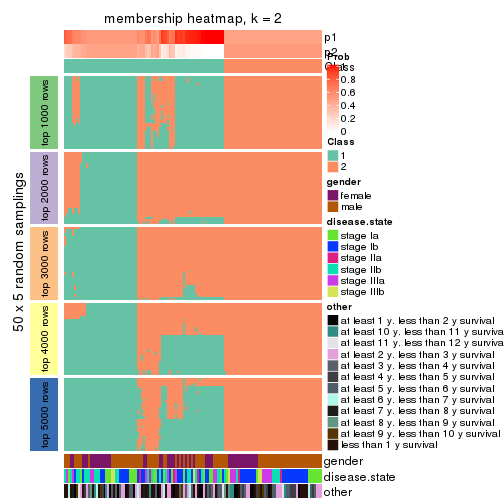
membership_heatmap(res, k = 3)
membership_heatmap(res, k = 4)
membership_heatmap(res, k = 5)
membership_heatmap(res, k = 6)
As soon as we have had the classes for columns, we can look for signatures which are significantly different between classes which can be candidate marks for certain classes. Following are the heatmaps for signatures.
Signature heatmaps where rows are scaled:
get_signatures(res, k = 2)
get_signatures(res, k = 3)
get_signatures(res, k = 4)
get_signatures(res, k = 5)
get_signatures(res, k = 6)
Signature heatmaps where rows are not scaled:
get_signatures(res, k = 2, scale_rows = FALSE)
get_signatures(res, k = 3, scale_rows = FALSE)
get_signatures(res, k = 4, scale_rows = FALSE)
get_signatures(res, k = 5, scale_rows = FALSE)
get_signatures(res, k = 6, scale_rows = FALSE)
Compare the overlap of signatures from different k:
compare_signatures(res)
get_signature() returns a data frame invisibly. TO get the list of signatures, the function
call should be assigned to a variable explicitly. In following code, if plot argument is set
to FALSE, no heatmap is plotted while only the differential analysis is performed.
# code only for demonstration
tb = get_signature(res, k = ..., plot = FALSE)
An example of the output of tb is:
#> which_row fdr mean_1 mean_2 scaled_mean_1 scaled_mean_2 km
#> 1 38 0.042760348 8.373488 9.131774 -0.5533452 0.5164555 1
#> 2 40 0.018707592 7.106213 8.469186 -0.6173731 0.5762149 1
#> 3 55 0.019134737 10.221463 11.207825 -0.6159697 0.5749050 1
#> 4 59 0.006059896 5.921854 7.869574 -0.6899429 0.6439467 1
#> 5 60 0.018055526 8.928898 10.211722 -0.6204761 0.5791110 1
#> 6 98 0.009384629 15.714769 14.887706 0.6635654 -0.6193277 2
...
The columns in tb are:
which_row: row indices corresponding to the input matrix.fdr: FDR for the differential test. mean_x: The mean value in group x.scaled_mean_x: The mean value in group x after rows are scaled.km: Row groups if k-means clustering is applied to rows.UMAP plot which shows how samples are separated.
dimension_reduction(res, k = 2, method = "UMAP")

dimension_reduction(res, k = 3, method = "UMAP")
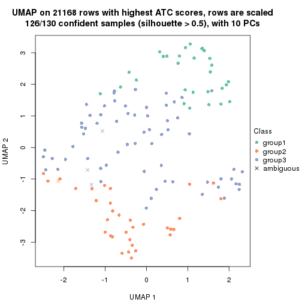
dimension_reduction(res, k = 4, method = "UMAP")
dimension_reduction(res, k = 5, method = "UMAP")
dimension_reduction(res, k = 6, method = "UMAP")
Following heatmap shows how subgroups are split when increasing k:
collect_classes(res)
Test correlation between subgroups and known annotations. If the known annotation is numeric, one-way ANOVA test is applied, and if the known annotation is discrete, chi-squared contingency table test is applied.
test_to_known_factors(res)
#> n gender(p) disease.state(p) other(p) k
#> ATC:pam 85 0.410 0.0887 0.626 2
#> ATC:pam 126 0.327 0.4210 0.103 3
#> ATC:pam 120 0.272 0.2756 0.243 4
#> ATC:pam 100 0.443 0.2773 0.319 5
#> ATC:pam 112 0.764 0.3887 0.565 6
If matrix rows can be associated to genes, consider to use functional_enrichment(res,
...) to perform function enrichment for the signature genes. See this vignette for more detailed explanations.
The object with results only for a single top-value method and a single partition method can be extracted as:
res = res_list["ATC", "mclust"]
# you can also extract it by
# res = res_list["ATC:mclust"]
A summary of res and all the functions that can be applied to it:
res
#> A 'ConsensusPartition' object with k = 2, 3, 4, 5, 6.
#> On a matrix with 21168 rows and 130 columns.
#> Top rows (1000, 2000, 3000, 4000, 5000) are extracted by 'ATC' method.
#> Subgroups are detected by 'mclust' method.
#> Performed in total 1250 partitions by row resampling.
#> Best k for subgroups seems to be 2.
#>
#> Following methods can be applied to this 'ConsensusPartition' object:
#> [1] "cola_report" "collect_classes" "collect_plots"
#> [4] "collect_stats" "colnames" "compare_signatures"
#> [7] "consensus_heatmap" "dimension_reduction" "functional_enrichment"
#> [10] "get_anno_col" "get_anno" "get_classes"
#> [13] "get_consensus" "get_matrix" "get_membership"
#> [16] "get_param" "get_signatures" "get_stats"
#> [19] "is_best_k" "is_stable_k" "membership_heatmap"
#> [22] "ncol" "nrow" "plot_ecdf"
#> [25] "rownames" "select_partition_number" "show"
#> [28] "suggest_best_k" "test_to_known_factors"
collect_plots() function collects all the plots made from res for all k (number of partitions)
into one single page to provide an easy and fast comparison between different k.
collect_plots(res)
The plots are:
k and the heatmap of
predicted classes for each k.k.k.k.All the plots in panels can be made by individual functions and they are plotted later in this section.
select_partition_number() produces several plots showing different
statistics for choosing “optimized” k. There are following statistics:
k;k, the area increased is defined as \(A_k - A_{k-1}\).The detailed explanations of these statistics can be found in the cola vignette.
Generally speaking, lower PAC score, higher mean silhouette score or higher
concordance corresponds to better partition. Rand index and Jaccard index
measure how similar the current partition is compared to partition with k-1.
If they are too similar, we won't accept k is better than k-1.
select_partition_number(res)
The numeric values for all these statistics can be obtained by get_stats().
get_stats(res)
#> k 1-PAC mean_silhouette concordance area_increased Rand Jaccard
#> 2 2 0.418 0.878 0.908 0.4675 0.527 0.527
#> 3 3 0.221 0.155 0.510 0.2337 0.520 0.385
#> 4 4 0.443 0.692 0.745 0.1947 0.626 0.395
#> 5 5 0.688 0.625 0.824 0.1349 0.799 0.431
#> 6 6 0.852 0.794 0.902 0.0494 0.902 0.578
suggest_best_k() suggests the best \(k\) based on these statistics. The rules are as follows:
suggest_best_k(res)
#> [1] 2
Following shows the table of the partitions (You need to click the show/hide
code output link to see it). The membership matrix (columns with name p*)
is inferred by
clue::cl_consensus()
function with the SE method. Basically the value in the membership matrix
represents the probability to belong to a certain group. The finall class
label for an item is determined with the group with highest probability it
belongs to.
In get_classes() function, the entropy is calculated from the membership
matrix and the silhouette score is calculated from the consensus matrix.
cbind(get_classes(res, k = 2), get_membership(res, k = 2))
#> class entropy silhouette p1 p2
#> GSM102191 1 0.7299 0.725 0.796 0.204
#> GSM102240 1 0.1843 0.910 0.972 0.028
#> GSM102175 1 0.5178 0.882 0.884 0.116
#> GSM102134 2 0.5519 0.929 0.128 0.872
#> GSM102171 1 0.5178 0.882 0.884 0.116
#> GSM102178 1 0.5059 0.882 0.888 0.112
#> GSM102198 2 0.5408 0.931 0.124 0.876
#> GSM102221 1 0.0000 0.914 1.000 0.000
#> GSM102223 2 0.5408 0.931 0.124 0.876
#> GSM102229 2 0.3584 0.880 0.068 0.932
#> GSM102153 2 0.1414 0.894 0.020 0.980
#> GSM102220 1 0.0000 0.914 1.000 0.000
#> GSM102202 2 0.5408 0.931 0.124 0.876
#> GSM102123 2 0.1414 0.894 0.020 0.980
#> GSM102125 1 0.0938 0.915 0.988 0.012
#> GSM102136 2 0.5519 0.929 0.128 0.872
#> GSM102197 1 0.7745 0.716 0.772 0.228
#> GSM102131 2 0.5294 0.930 0.120 0.880
#> GSM102132 1 0.5059 0.884 0.888 0.112
#> GSM102212 2 0.5408 0.931 0.124 0.876
#> GSM102117 1 0.0376 0.915 0.996 0.004
#> GSM102124 1 0.8763 0.541 0.704 0.296
#> GSM102172 1 0.5178 0.882 0.884 0.116
#> GSM102199 2 0.5408 0.931 0.124 0.876
#> GSM102203 2 0.5408 0.931 0.124 0.876
#> GSM102213 1 0.0938 0.915 0.988 0.012
#> GSM102165 1 0.5178 0.886 0.884 0.116
#> GSM102180 1 0.1184 0.915 0.984 0.016
#> GSM102184 1 0.5519 0.879 0.872 0.128
#> GSM102225 2 0.5408 0.931 0.124 0.876
#> GSM102230 2 0.1414 0.894 0.020 0.980
#> GSM102133 1 0.0000 0.914 1.000 0.000
#> GSM102166 1 0.5059 0.882 0.888 0.112
#> GSM102235 1 0.5178 0.882 0.884 0.116
#> GSM102196 1 0.9427 0.583 0.640 0.360
#> GSM102243 1 0.0938 0.915 0.988 0.012
#> GSM102135 2 0.5408 0.931 0.124 0.876
#> GSM102139 1 0.5946 0.804 0.856 0.144
#> GSM102151 2 0.5408 0.931 0.124 0.876
#> GSM102193 1 0.1843 0.913 0.972 0.028
#> GSM102200 1 0.5519 0.879 0.872 0.128
#> GSM102204 2 0.5629 0.927 0.132 0.868
#> GSM102145 1 0.3733 0.883 0.928 0.072
#> GSM102142 1 0.0938 0.915 0.988 0.012
#> GSM102179 1 0.0938 0.915 0.988 0.012
#> GSM102181 1 0.0938 0.915 0.988 0.012
#> GSM102154 1 0.0938 0.915 0.988 0.012
#> GSM102152 2 0.5408 0.931 0.124 0.876
#> GSM102162 1 0.1414 0.915 0.980 0.020
#> GSM102187 1 0.0000 0.914 1.000 0.000
#> GSM102116 1 0.0000 0.914 1.000 0.000
#> GSM102150 2 0.2778 0.890 0.048 0.952
#> GSM102227 2 0.5408 0.931 0.124 0.876
#> GSM102114 1 0.5178 0.882 0.884 0.116
#> GSM102177 1 0.1633 0.912 0.976 0.024
#> GSM102160 1 0.1843 0.909 0.972 0.028
#> GSM102161 1 0.5178 0.882 0.884 0.116
#> GSM102170 1 0.0000 0.914 1.000 0.000
#> GSM102205 2 0.1633 0.896 0.024 0.976
#> GSM102118 1 0.6712 0.854 0.824 0.176
#> GSM102156 1 0.0938 0.915 0.988 0.012
#> GSM102238 1 0.8861 0.691 0.696 0.304
#> GSM102143 1 0.0938 0.915 0.988 0.012
#> GSM102144 1 0.0938 0.915 0.988 0.012
#> GSM102209 2 0.5408 0.931 0.124 0.876
#> GSM102210 1 0.9286 0.415 0.656 0.344
#> GSM102140 1 0.7745 0.682 0.772 0.228
#> GSM102242 1 0.8763 0.716 0.704 0.296
#> GSM102141 2 0.1843 0.898 0.028 0.972
#> GSM102120 2 0.4690 0.925 0.100 0.900
#> GSM102127 2 0.6438 0.786 0.164 0.836
#> GSM102149 2 0.1843 0.898 0.028 0.972
#> GSM102232 2 0.5408 0.931 0.124 0.876
#> GSM102222 2 0.5408 0.931 0.124 0.876
#> GSM102236 1 0.0938 0.915 0.988 0.012
#> GSM102215 2 0.5408 0.931 0.124 0.876
#> GSM102194 1 0.2043 0.911 0.968 0.032
#> GSM102208 1 0.0376 0.915 0.996 0.004
#> GSM102130 1 0.2043 0.911 0.968 0.032
#> GSM102188 1 0.5178 0.882 0.884 0.116
#> GSM102233 2 0.1414 0.894 0.020 0.980
#> GSM102189 1 0.1633 0.914 0.976 0.024
#> GSM102234 2 0.8386 0.775 0.268 0.732
#> GSM102237 2 0.4815 0.855 0.104 0.896
#> GSM102159 1 0.5059 0.882 0.888 0.112
#> GSM102155 1 0.4939 0.880 0.892 0.108
#> GSM102137 2 0.5408 0.931 0.124 0.876
#> GSM102217 2 0.5408 0.931 0.124 0.876
#> GSM102126 2 0.7139 0.740 0.196 0.804
#> GSM102157 1 0.0376 0.915 0.996 0.004
#> GSM102163 1 0.5178 0.882 0.884 0.116
#> GSM102182 1 0.0376 0.915 0.996 0.004
#> GSM102167 1 0.1414 0.905 0.980 0.020
#> GSM102206 2 0.7950 0.659 0.240 0.760
#> GSM102224 2 0.5408 0.931 0.124 0.876
#> GSM102164 1 0.0938 0.915 0.988 0.012
#> GSM102174 1 0.0000 0.914 1.000 0.000
#> GSM102214 2 0.5408 0.931 0.124 0.876
#> GSM102226 2 0.5408 0.931 0.124 0.876
#> GSM102195 1 0.6712 0.762 0.824 0.176
#> GSM102218 1 0.9209 0.537 0.664 0.336
#> GSM102128 1 0.1414 0.905 0.980 0.020
#> GSM102168 1 0.5059 0.882 0.888 0.112
#> GSM102190 1 0.6048 0.869 0.852 0.148
#> GSM102201 2 0.7528 0.850 0.216 0.784
#> GSM102129 1 0.2043 0.910 0.968 0.032
#> GSM102192 1 0.0938 0.915 0.988 0.012
#> GSM102183 1 0.0938 0.915 0.988 0.012
#> GSM102185 1 0.5178 0.882 0.884 0.116
#> GSM102158 1 0.0672 0.911 0.992 0.008
#> GSM102169 1 0.2043 0.907 0.968 0.032
#> GSM102216 2 0.1414 0.894 0.020 0.980
#> GSM102219 2 0.1414 0.894 0.020 0.980
#> GSM102231 2 0.5408 0.931 0.124 0.876
#> GSM102147 2 0.6148 0.913 0.152 0.848
#> GSM102176 1 0.5178 0.882 0.884 0.116
#> GSM102148 1 0.6343 0.865 0.840 0.160
#> GSM102146 1 0.8016 0.774 0.756 0.244
#> GSM102241 2 0.5842 0.809 0.140 0.860
#> GSM102211 2 0.1414 0.894 0.020 0.980
#> GSM102115 1 0.0000 0.914 1.000 0.000
#> GSM102173 1 0.5178 0.882 0.884 0.116
#> GSM102138 2 0.5408 0.931 0.124 0.876
#> GSM102228 1 0.0938 0.915 0.988 0.012
#> GSM102207 2 0.5178 0.843 0.116 0.884
#> GSM102122 2 0.1414 0.894 0.020 0.980
#> GSM102119 1 0.2043 0.911 0.968 0.032
#> GSM102186 1 0.1414 0.905 0.980 0.020
#> GSM102239 1 0.0938 0.915 0.988 0.012
#> GSM102121 1 0.0938 0.915 0.988 0.012
cbind(get_classes(res, k = 3), get_membership(res, k = 3))
#> class entropy silhouette p1 p2 p3
#> GSM102191 1 0.7978 0.247480 0.660 0.164 0.176
#> GSM102240 1 0.9072 0.274349 0.548 0.192 0.260
#> GSM102175 1 0.9940 -0.070067 0.364 0.356 0.280
#> GSM102134 1 0.9412 -0.261159 0.476 0.188 0.336
#> GSM102171 2 0.9870 0.044370 0.364 0.380 0.256
#> GSM102178 1 0.7309 0.113932 0.552 0.416 0.032
#> GSM102198 1 0.9490 -0.257928 0.444 0.188 0.368
#> GSM102221 1 0.8330 0.127865 0.552 0.356 0.092
#> GSM102223 1 0.9483 -0.254321 0.448 0.188 0.364
#> GSM102229 1 0.5216 0.193392 0.740 0.000 0.260
#> GSM102153 1 0.5254 0.067137 0.736 0.000 0.264
#> GSM102220 2 0.7107 0.360405 0.340 0.624 0.036
#> GSM102202 1 0.9483 -0.254321 0.448 0.188 0.364
#> GSM102123 1 0.4750 0.072741 0.784 0.000 0.216
#> GSM102125 2 0.2689 0.620638 0.036 0.932 0.032
#> GSM102136 1 0.0237 0.209109 0.996 0.004 0.000
#> GSM102197 1 0.8080 0.234149 0.640 0.128 0.232
#> GSM102131 1 0.0000 0.211775 1.000 0.000 0.000
#> GSM102132 1 0.9076 0.270385 0.552 0.240 0.208
#> GSM102212 1 0.9522 -0.289202 0.412 0.188 0.400
#> GSM102117 2 0.8076 0.216380 0.408 0.524 0.068
#> GSM102124 1 0.9887 0.002380 0.408 0.304 0.288
#> GSM102172 1 0.9940 -0.070067 0.364 0.356 0.280
#> GSM102199 1 0.9451 -0.254511 0.452 0.184 0.364
#> GSM102203 1 0.3116 0.093024 0.892 0.000 0.108
#> GSM102213 2 0.9884 -0.024686 0.364 0.376 0.260
#> GSM102165 1 0.8559 0.179108 0.572 0.304 0.124
#> GSM102180 2 0.4165 0.615959 0.076 0.876 0.048
#> GSM102184 1 0.8839 0.246109 0.572 0.172 0.256
#> GSM102225 1 0.6899 -0.194147 0.612 0.024 0.364
#> GSM102230 1 0.4399 0.072425 0.812 0.000 0.188
#> GSM102133 2 0.5536 0.582732 0.144 0.804 0.052
#> GSM102166 1 0.9930 -0.072467 0.364 0.360 0.276
#> GSM102235 3 0.9319 -0.105405 0.368 0.168 0.464
#> GSM102196 3 0.8936 -0.146468 0.368 0.132 0.500
#> GSM102243 1 0.9006 0.279559 0.556 0.188 0.256
#> GSM102135 1 0.9483 -0.254321 0.448 0.188 0.364
#> GSM102139 2 0.8689 0.280750 0.204 0.596 0.200
#> GSM102151 1 0.9483 -0.254321 0.448 0.188 0.364
#> GSM102193 2 0.1163 0.605060 0.000 0.972 0.028
#> GSM102200 1 0.9034 0.276229 0.552 0.188 0.260
#> GSM102204 3 0.9161 0.291996 0.280 0.188 0.532
#> GSM102145 1 0.8889 0.222099 0.560 0.164 0.276
#> GSM102142 2 0.7851 0.427806 0.256 0.644 0.100
#> GSM102179 2 0.7065 0.333535 0.352 0.616 0.032
#> GSM102181 1 0.8117 0.124153 0.552 0.372 0.076
#> GSM102154 1 0.8907 0.266877 0.572 0.228 0.200
#> GSM102152 1 0.9483 -0.254321 0.448 0.188 0.364
#> GSM102162 2 0.2318 0.624840 0.028 0.944 0.028
#> GSM102187 1 0.7309 0.113841 0.552 0.416 0.032
#> GSM102116 1 0.8330 0.127865 0.552 0.356 0.092
#> GSM102150 1 0.2187 0.224741 0.948 0.024 0.028
#> GSM102227 1 0.0000 0.211775 1.000 0.000 0.000
#> GSM102114 1 0.9940 0.033065 0.364 0.280 0.356
#> GSM102177 1 0.8330 0.127865 0.552 0.356 0.092
#> GSM102160 2 0.0237 0.614343 0.000 0.996 0.004
#> GSM102161 1 0.9045 0.276022 0.552 0.192 0.256
#> GSM102170 2 0.4206 0.610123 0.088 0.872 0.040
#> GSM102205 1 0.0000 0.211775 1.000 0.000 0.000
#> GSM102118 1 0.8763 0.206583 0.552 0.136 0.312
#> GSM102156 1 0.9070 0.270130 0.552 0.244 0.204
#> GSM102238 1 0.8688 -0.004905 0.460 0.104 0.436
#> GSM102143 1 0.8981 0.268075 0.564 0.228 0.208
#> GSM102144 2 0.9383 0.297300 0.236 0.512 0.252
#> GSM102209 1 0.8925 -0.247612 0.504 0.132 0.364
#> GSM102210 1 0.7664 0.226197 0.668 0.104 0.228
#> GSM102140 1 0.7843 0.237955 0.664 0.128 0.208
#> GSM102242 1 0.8019 0.185760 0.576 0.076 0.348
#> GSM102141 1 0.1411 0.213370 0.964 0.000 0.036
#> GSM102120 1 0.0000 0.211775 1.000 0.000 0.000
#> GSM102127 1 0.6025 0.198802 0.740 0.028 0.232
#> GSM102149 1 0.0000 0.211775 1.000 0.000 0.000
#> GSM102232 1 0.9483 -0.254321 0.448 0.188 0.364
#> GSM102222 3 0.9515 0.208685 0.388 0.188 0.424
#> GSM102236 1 0.9055 0.271681 0.552 0.196 0.252
#> GSM102215 1 0.9483 -0.254321 0.448 0.188 0.364
#> GSM102194 2 0.0892 0.608814 0.000 0.980 0.020
#> GSM102208 2 0.7477 0.406717 0.284 0.648 0.068
#> GSM102130 2 0.1163 0.605060 0.000 0.972 0.028
#> GSM102188 2 0.9840 0.049081 0.364 0.388 0.248
#> GSM102233 1 0.5216 0.068124 0.740 0.000 0.260
#> GSM102189 2 0.1163 0.605060 0.000 0.972 0.028
#> GSM102234 1 0.7962 0.182744 0.576 0.072 0.352
#> GSM102237 1 0.7232 -0.004780 0.544 0.028 0.428
#> GSM102159 2 0.9724 0.055346 0.364 0.412 0.224
#> GSM102155 1 0.7724 0.116000 0.552 0.396 0.052
#> GSM102137 1 0.0000 0.211775 1.000 0.000 0.000
#> GSM102217 1 0.9483 -0.254321 0.448 0.188 0.364
#> GSM102126 3 0.8022 -0.035479 0.388 0.068 0.544
#> GSM102157 1 0.7932 0.120524 0.552 0.384 0.064
#> GSM102163 2 0.9858 0.034923 0.372 0.376 0.252
#> GSM102182 1 0.8330 0.127865 0.552 0.356 0.092
#> GSM102167 2 0.0892 0.612581 0.000 0.980 0.020
#> GSM102206 1 0.7295 -0.038977 0.492 0.028 0.480
#> GSM102224 1 0.9483 -0.254321 0.448 0.188 0.364
#> GSM102164 2 0.6007 0.411453 0.044 0.764 0.192
#> GSM102174 1 0.8330 0.127865 0.552 0.356 0.092
#> GSM102214 1 0.1163 0.185635 0.972 0.000 0.028
#> GSM102226 1 0.9234 -0.253065 0.476 0.160 0.364
#> GSM102195 1 0.9556 0.057173 0.432 0.372 0.196
#> GSM102218 1 0.7962 0.182744 0.576 0.072 0.352
#> GSM102128 2 0.0892 0.612581 0.000 0.980 0.020
#> GSM102168 2 0.9702 0.056050 0.364 0.416 0.220
#> GSM102190 1 0.9137 0.270908 0.536 0.188 0.276
#> GSM102201 3 0.9594 0.254145 0.360 0.204 0.436
#> GSM102129 1 0.8886 0.254080 0.572 0.188 0.240
#> GSM102192 1 0.8280 0.127009 0.552 0.360 0.088
#> GSM102183 1 0.8173 0.125183 0.552 0.368 0.080
#> GSM102185 1 0.9940 -0.070067 0.364 0.356 0.280
#> GSM102158 2 0.2680 0.591219 0.008 0.924 0.068
#> GSM102169 1 0.8868 0.265939 0.576 0.228 0.196
#> GSM102216 1 0.2066 0.210817 0.940 0.000 0.060
#> GSM102219 1 0.4654 0.072354 0.792 0.000 0.208
#> GSM102231 1 0.3116 0.093890 0.892 0.000 0.108
#> GSM102147 3 0.9174 0.292860 0.276 0.192 0.532
#> GSM102176 1 0.9400 0.038336 0.464 0.356 0.180
#> GSM102148 3 0.8730 -0.061045 0.388 0.112 0.500
#> GSM102146 1 0.9171 0.248342 0.516 0.172 0.312
#> GSM102241 1 0.8331 -0.000726 0.484 0.080 0.436
#> GSM102211 1 0.5098 0.070182 0.752 0.000 0.248
#> GSM102115 1 0.8330 0.127865 0.552 0.356 0.092
#> GSM102173 1 0.9940 -0.070067 0.364 0.356 0.280
#> GSM102138 1 0.9483 -0.254321 0.448 0.188 0.364
#> GSM102228 1 0.7487 0.115211 0.552 0.408 0.040
#> GSM102207 1 0.7291 0.177891 0.604 0.040 0.356
#> GSM102122 1 0.5178 0.068806 0.744 0.000 0.256
#> GSM102119 2 0.0000 0.614165 0.000 1.000 0.000
#> GSM102186 2 0.2066 0.592880 0.000 0.940 0.060
#> GSM102239 1 0.8512 0.143829 0.552 0.340 0.108
#> GSM102121 2 0.3112 0.620136 0.056 0.916 0.028
cbind(get_classes(res, k = 4), get_membership(res, k = 4))
#> class entropy silhouette p1 p2 p3 p4
#> GSM102191 3 0.6291 0.69159 0.028 0.136 0.712 0.124
#> GSM102240 3 0.0967 0.69107 0.004 0.016 0.976 0.004
#> GSM102175 1 0.5730 0.79172 0.616 0.040 0.344 0.000
#> GSM102134 4 0.4053 0.92361 0.000 0.228 0.004 0.768
#> GSM102171 1 0.5695 0.79776 0.624 0.040 0.336 0.000
#> GSM102178 3 0.2943 0.67538 0.032 0.076 0.892 0.000
#> GSM102198 4 0.3975 0.92420 0.000 0.240 0.000 0.760
#> GSM102221 3 0.3171 0.66493 0.104 0.016 0.876 0.004
#> GSM102223 4 0.3907 0.92457 0.000 0.232 0.000 0.768
#> GSM102229 3 0.7997 0.38585 0.272 0.016 0.484 0.228
#> GSM102153 1 0.3840 0.81135 0.844 0.000 0.104 0.052
#> GSM102220 3 0.5408 0.31838 0.008 0.432 0.556 0.004
#> GSM102202 4 0.4103 0.91704 0.000 0.256 0.000 0.744
#> GSM102123 1 0.3758 0.81232 0.848 0.000 0.104 0.048
#> GSM102125 2 0.1743 0.86665 0.000 0.940 0.056 0.004
#> GSM102136 3 0.5060 0.43598 0.004 0.000 0.584 0.412
#> GSM102197 3 0.4856 0.68176 0.180 0.020 0.776 0.024
#> GSM102131 3 0.5599 0.63964 0.072 0.000 0.700 0.228
#> GSM102132 3 0.2101 0.67261 0.060 0.012 0.928 0.000
#> GSM102212 4 0.3942 0.92480 0.000 0.236 0.000 0.764
#> GSM102117 3 0.5272 0.41706 0.008 0.380 0.608 0.004
#> GSM102124 2 0.5508 0.65883 0.044 0.728 0.212 0.016
#> GSM102172 1 0.5987 0.63820 0.520 0.040 0.440 0.000
#> GSM102199 4 0.4158 0.92094 0.000 0.224 0.008 0.768
#> GSM102203 3 0.4661 0.55488 0.000 0.000 0.652 0.348
#> GSM102213 3 0.5565 0.00912 0.004 0.464 0.520 0.012
#> GSM102165 3 0.8531 0.50498 0.056 0.224 0.492 0.228
#> GSM102180 2 0.2452 0.85156 0.004 0.908 0.084 0.004
#> GSM102184 3 0.8750 0.50025 0.088 0.188 0.496 0.228
#> GSM102225 4 0.4188 0.57446 0.000 0.004 0.244 0.752
#> GSM102230 1 0.4094 0.80680 0.828 0.000 0.116 0.056
#> GSM102133 2 0.1557 0.86553 0.000 0.944 0.056 0.000
#> GSM102166 1 0.5695 0.79776 0.624 0.040 0.336 0.000
#> GSM102235 1 0.4405 0.82602 0.800 0.048 0.152 0.000
#> GSM102196 1 0.4605 0.78398 0.664 0.000 0.336 0.000
#> GSM102243 3 0.0927 0.69072 0.008 0.016 0.976 0.000
#> GSM102135 4 0.4053 0.92361 0.000 0.228 0.004 0.768
#> GSM102139 2 0.2335 0.78542 0.000 0.920 0.020 0.060
#> GSM102151 4 0.3907 0.92457 0.000 0.232 0.000 0.768
#> GSM102193 2 0.1557 0.86790 0.000 0.944 0.056 0.000
#> GSM102200 3 0.1706 0.68458 0.036 0.016 0.948 0.000
#> GSM102204 4 0.4677 0.85583 0.000 0.316 0.004 0.680
#> GSM102145 3 0.6121 0.28874 0.032 0.432 0.528 0.008
#> GSM102142 2 0.5429 0.65915 0.008 0.696 0.264 0.032
#> GSM102179 3 0.4313 0.57588 0.004 0.260 0.736 0.000
#> GSM102181 3 0.1978 0.70696 0.004 0.068 0.928 0.000
#> GSM102154 3 0.4149 0.69408 0.028 0.168 0.804 0.000
#> GSM102152 4 0.3907 0.92457 0.000 0.232 0.000 0.768
#> GSM102162 2 0.2053 0.85893 0.000 0.924 0.072 0.004
#> GSM102187 3 0.3764 0.62988 0.000 0.216 0.784 0.000
#> GSM102116 3 0.2714 0.67467 0.004 0.112 0.884 0.000
#> GSM102150 3 0.5378 0.67582 0.132 0.012 0.764 0.092
#> GSM102227 3 0.5387 0.63544 0.048 0.000 0.696 0.256
#> GSM102114 1 0.5695 0.79776 0.624 0.040 0.336 0.000
#> GSM102177 3 0.2924 0.66919 0.100 0.016 0.884 0.000
#> GSM102160 2 0.1557 0.86790 0.000 0.944 0.056 0.000
#> GSM102161 3 0.1733 0.67643 0.028 0.024 0.948 0.000
#> GSM102170 2 0.1557 0.86553 0.000 0.944 0.056 0.000
#> GSM102205 3 0.5200 0.63382 0.036 0.000 0.700 0.264
#> GSM102118 3 0.9142 -0.02001 0.340 0.076 0.356 0.228
#> GSM102156 3 0.3598 0.70546 0.028 0.124 0.848 0.000
#> GSM102238 1 0.4332 0.83129 0.800 0.040 0.160 0.000
#> GSM102143 3 0.3760 0.70431 0.028 0.136 0.836 0.000
#> GSM102144 2 0.4897 0.56720 0.004 0.668 0.324 0.004
#> GSM102209 4 0.4798 0.68795 0.000 0.052 0.180 0.768
#> GSM102210 3 0.5767 0.70663 0.068 0.120 0.760 0.052
#> GSM102140 3 0.5742 0.69689 0.044 0.148 0.752 0.056
#> GSM102242 3 0.8419 0.39428 0.240 0.044 0.488 0.228
#> GSM102141 3 0.7618 0.39852 0.244 0.000 0.472 0.284
#> GSM102120 3 0.5228 0.63335 0.036 0.000 0.696 0.268
#> GSM102127 3 0.4881 0.65212 0.216 0.012 0.752 0.020
#> GSM102149 3 0.5141 0.63293 0.032 0.000 0.700 0.268
#> GSM102232 4 0.4008 0.92332 0.000 0.244 0.000 0.756
#> GSM102222 4 0.4122 0.92488 0.000 0.236 0.004 0.760
#> GSM102236 3 0.0779 0.69060 0.004 0.016 0.980 0.000
#> GSM102215 4 0.4382 0.88391 0.000 0.296 0.000 0.704
#> GSM102194 2 0.1557 0.86790 0.000 0.944 0.056 0.000
#> GSM102208 2 0.5472 0.18858 0.016 0.608 0.372 0.004
#> GSM102130 2 0.1557 0.86790 0.000 0.944 0.056 0.000
#> GSM102188 1 0.5905 0.72451 0.564 0.040 0.396 0.000
#> GSM102233 1 0.3587 0.81397 0.856 0.000 0.104 0.040
#> GSM102189 2 0.1557 0.86790 0.000 0.944 0.056 0.000
#> GSM102234 3 0.8075 0.38940 0.268 0.020 0.484 0.228
#> GSM102237 1 0.3694 0.82015 0.844 0.000 0.124 0.032
#> GSM102159 1 0.6058 0.79591 0.624 0.068 0.308 0.000
#> GSM102155 3 0.6108 0.67046 0.028 0.196 0.708 0.068
#> GSM102137 3 0.5078 0.63186 0.028 0.000 0.700 0.272
#> GSM102217 4 0.4158 0.92095 0.000 0.224 0.008 0.768
#> GSM102126 1 0.5735 0.74041 0.748 0.020 0.120 0.112
#> GSM102157 3 0.5760 0.33848 0.020 0.456 0.520 0.004
#> GSM102163 3 0.5762 -0.09914 0.352 0.040 0.608 0.000
#> GSM102182 3 0.2796 0.67273 0.092 0.016 0.892 0.000
#> GSM102167 2 0.1637 0.86691 0.000 0.940 0.060 0.000
#> GSM102206 1 0.3335 0.81851 0.860 0.020 0.120 0.000
#> GSM102224 4 0.4103 0.91704 0.000 0.256 0.000 0.744
#> GSM102164 2 0.1820 0.82061 0.000 0.944 0.020 0.036
#> GSM102174 3 0.3315 0.66387 0.104 0.016 0.872 0.008
#> GSM102214 3 0.4454 0.60219 0.000 0.000 0.692 0.308
#> GSM102226 4 0.4985 0.83090 0.000 0.152 0.080 0.768
#> GSM102195 2 0.6337 0.08171 0.028 0.532 0.420 0.020
#> GSM102218 3 0.7477 0.48327 0.272 0.016 0.556 0.156
#> GSM102128 2 0.1557 0.86790 0.000 0.944 0.056 0.000
#> GSM102168 1 0.6058 0.79591 0.624 0.068 0.308 0.000
#> GSM102190 3 0.1706 0.68465 0.036 0.016 0.948 0.000
#> GSM102201 4 0.5152 0.82648 0.000 0.316 0.020 0.664
#> GSM102129 3 0.7114 0.63202 0.036 0.232 0.628 0.104
#> GSM102192 3 0.0779 0.69060 0.004 0.016 0.980 0.000
#> GSM102183 3 0.1743 0.70471 0.004 0.056 0.940 0.000
#> GSM102185 1 0.5695 0.79776 0.624 0.040 0.336 0.000
#> GSM102158 2 0.3266 0.78820 0.000 0.832 0.168 0.000
#> GSM102169 3 0.4587 0.68116 0.028 0.192 0.776 0.004
#> GSM102216 3 0.6851 0.30557 0.400 0.000 0.496 0.104
#> GSM102219 1 0.6473 0.63486 0.612 0.000 0.108 0.280
#> GSM102231 3 0.4790 0.48969 0.000 0.000 0.620 0.380
#> GSM102147 4 0.4382 0.88391 0.000 0.296 0.000 0.704
#> GSM102176 3 0.7204 0.34970 0.176 0.060 0.652 0.112
#> GSM102148 1 0.4363 0.81769 0.816 0.052 0.128 0.004
#> GSM102146 3 0.2602 0.66434 0.076 0.008 0.908 0.008
#> GSM102241 1 0.3751 0.82778 0.800 0.000 0.196 0.004
#> GSM102211 1 0.3674 0.81328 0.852 0.000 0.104 0.044
#> GSM102115 3 0.2924 0.66919 0.100 0.016 0.884 0.000
#> GSM102173 1 0.5695 0.79776 0.624 0.040 0.336 0.000
#> GSM102138 4 0.4008 0.92332 0.000 0.244 0.000 0.756
#> GSM102228 3 0.2921 0.70318 0.000 0.140 0.860 0.000
#> GSM102207 3 0.7997 0.38585 0.272 0.016 0.484 0.228
#> GSM102122 1 0.3587 0.81397 0.856 0.000 0.104 0.040
#> GSM102119 2 0.1637 0.86691 0.000 0.940 0.060 0.000
#> GSM102186 2 0.1557 0.86790 0.000 0.944 0.056 0.000
#> GSM102239 3 0.2861 0.67121 0.096 0.016 0.888 0.000
#> GSM102121 2 0.1557 0.86591 0.000 0.944 0.056 0.000
cbind(get_classes(res, k = 5), get_membership(res, k = 5))
#> class entropy silhouette p1 p2 p3 p4 p5
#> GSM102191 4 0.6452 0.2918 0.000 0.220 0.000 0.496 0.284
#> GSM102240 5 0.0290 0.7445 0.000 0.000 0.000 0.008 0.992
#> GSM102175 1 0.3861 0.7562 0.712 0.000 0.004 0.000 0.284
#> GSM102134 4 0.0000 0.7743 0.000 0.000 0.000 1.000 0.000
#> GSM102171 1 0.3395 0.7796 0.764 0.000 0.000 0.000 0.236
#> GSM102178 5 0.4193 0.4797 0.024 0.000 0.256 0.000 0.720
#> GSM102198 4 0.1043 0.7668 0.000 0.040 0.000 0.960 0.000
#> GSM102221 5 0.1124 0.7209 0.004 0.000 0.036 0.000 0.960
#> GSM102223 4 0.0000 0.7743 0.000 0.000 0.000 1.000 0.000
#> GSM102229 3 0.1195 0.6715 0.012 0.000 0.960 0.000 0.028
#> GSM102153 1 0.0671 0.7970 0.980 0.000 0.016 0.000 0.004
#> GSM102220 2 0.2727 0.8056 0.000 0.868 0.000 0.016 0.116
#> GSM102202 4 0.3177 0.6863 0.000 0.208 0.000 0.792 0.000
#> GSM102123 1 0.0671 0.7970 0.980 0.000 0.016 0.000 0.004
#> GSM102125 2 0.0703 0.9036 0.000 0.976 0.000 0.024 0.000
#> GSM102136 4 0.2813 0.6631 0.000 0.000 0.000 0.832 0.168
#> GSM102197 3 0.5250 0.2626 0.000 0.004 0.552 0.040 0.404
#> GSM102131 4 0.6784 -0.2309 0.004 0.000 0.376 0.396 0.224
#> GSM102132 5 0.4639 0.2996 0.024 0.000 0.344 0.000 0.632
#> GSM102212 4 0.0000 0.7743 0.000 0.000 0.000 1.000 0.000
#> GSM102117 5 0.4811 0.0356 0.000 0.452 0.000 0.020 0.528
#> GSM102124 2 0.0510 0.9082 0.000 0.984 0.000 0.000 0.016
#> GSM102172 5 0.4288 -0.0549 0.384 0.000 0.004 0.000 0.612
#> GSM102199 4 0.0000 0.7743 0.000 0.000 0.000 1.000 0.000
#> GSM102203 4 0.2377 0.6934 0.000 0.000 0.000 0.872 0.128
#> GSM102213 2 0.4565 0.5312 0.000 0.664 0.000 0.028 0.308
#> GSM102165 3 0.1549 0.6705 0.000 0.016 0.944 0.000 0.040
#> GSM102180 2 0.0609 0.9054 0.000 0.980 0.000 0.020 0.000
#> GSM102184 3 0.1549 0.6705 0.000 0.016 0.944 0.000 0.040
#> GSM102225 4 0.0000 0.7743 0.000 0.000 0.000 1.000 0.000
#> GSM102230 1 0.0865 0.7929 0.972 0.000 0.024 0.000 0.004
#> GSM102133 2 0.0290 0.9109 0.000 0.992 0.000 0.000 0.008
#> GSM102166 1 0.3861 0.7562 0.712 0.000 0.004 0.000 0.284
#> GSM102235 1 0.3326 0.7440 0.824 0.000 0.152 0.000 0.024
#> GSM102196 1 0.3264 0.8005 0.820 0.000 0.016 0.000 0.164
#> GSM102243 5 0.0000 0.7477 0.000 0.000 0.000 0.000 1.000
#> GSM102135 4 0.0000 0.7743 0.000 0.000 0.000 1.000 0.000
#> GSM102139 2 0.0404 0.9099 0.000 0.988 0.000 0.000 0.012
#> GSM102151 4 0.0000 0.7743 0.000 0.000 0.000 1.000 0.000
#> GSM102193 2 0.0000 0.9108 0.000 1.000 0.000 0.000 0.000
#> GSM102200 5 0.1671 0.7078 0.000 0.000 0.076 0.000 0.924
#> GSM102204 2 0.4383 0.1005 0.000 0.572 0.000 0.424 0.004
#> GSM102145 3 0.6107 0.4033 0.000 0.328 0.568 0.028 0.076
#> GSM102142 2 0.4369 0.6632 0.000 0.740 0.000 0.052 0.208
#> GSM102179 2 0.4297 0.0347 0.000 0.528 0.000 0.000 0.472
#> GSM102181 5 0.0671 0.7440 0.000 0.016 0.004 0.000 0.980
#> GSM102154 5 0.6330 -0.0155 0.000 0.160 0.384 0.000 0.456
#> GSM102152 4 0.0000 0.7743 0.000 0.000 0.000 1.000 0.000
#> GSM102162 2 0.0609 0.9054 0.000 0.980 0.000 0.020 0.000
#> GSM102187 5 0.2329 0.6514 0.000 0.124 0.000 0.000 0.876
#> GSM102116 5 0.0162 0.7473 0.000 0.004 0.000 0.000 0.996
#> GSM102150 5 0.7134 -0.1871 0.204 0.000 0.372 0.024 0.400
#> GSM102227 4 0.6724 -0.2150 0.004 0.000 0.380 0.408 0.208
#> GSM102114 1 0.3838 0.7594 0.716 0.000 0.004 0.000 0.280
#> GSM102177 5 0.0000 0.7477 0.000 0.000 0.000 0.000 1.000
#> GSM102160 2 0.0000 0.9108 0.000 1.000 0.000 0.000 0.000
#> GSM102161 5 0.2020 0.6887 0.000 0.000 0.100 0.000 0.900
#> GSM102170 2 0.0290 0.9109 0.000 0.992 0.000 0.000 0.008
#> GSM102205 3 0.7158 0.2755 0.016 0.000 0.388 0.268 0.328
#> GSM102118 3 0.1043 0.6743 0.000 0.000 0.960 0.000 0.040
#> GSM102156 5 0.3821 0.6150 0.000 0.052 0.148 0.000 0.800
#> GSM102238 1 0.1018 0.8012 0.968 0.000 0.016 0.000 0.016
#> GSM102143 5 0.5236 0.1825 0.000 0.052 0.380 0.000 0.568
#> GSM102144 2 0.1211 0.9017 0.000 0.960 0.000 0.024 0.016
#> GSM102209 4 0.0000 0.7743 0.000 0.000 0.000 1.000 0.000
#> GSM102210 3 0.6919 0.3196 0.000 0.052 0.496 0.112 0.340
#> GSM102140 3 0.8246 0.3484 0.000 0.216 0.404 0.176 0.204
#> GSM102242 3 0.1043 0.6743 0.000 0.000 0.960 0.000 0.040
#> GSM102141 3 0.2693 0.6596 0.016 0.000 0.896 0.060 0.028
#> GSM102120 3 0.7026 0.2360 0.012 0.000 0.388 0.360 0.240
#> GSM102127 3 0.4958 0.2244 0.012 0.000 0.552 0.012 0.424
#> GSM102149 3 0.7192 0.2405 0.016 0.000 0.360 0.344 0.280
#> GSM102232 4 0.1908 0.7472 0.000 0.092 0.000 0.908 0.000
#> GSM102222 4 0.0609 0.7713 0.000 0.020 0.000 0.980 0.000
#> GSM102236 5 0.0000 0.7477 0.000 0.000 0.000 0.000 1.000
#> GSM102215 4 0.3774 0.5936 0.000 0.296 0.000 0.704 0.000
#> GSM102194 2 0.0000 0.9108 0.000 1.000 0.000 0.000 0.000
#> GSM102208 2 0.1124 0.8917 0.000 0.960 0.004 0.000 0.036
#> GSM102130 2 0.0000 0.9108 0.000 1.000 0.000 0.000 0.000
#> GSM102188 1 0.3861 0.7562 0.712 0.000 0.004 0.000 0.284
#> GSM102233 1 0.0671 0.7970 0.980 0.000 0.016 0.000 0.004
#> GSM102189 2 0.0000 0.9108 0.000 1.000 0.000 0.000 0.000
#> GSM102234 3 0.1124 0.6747 0.004 0.000 0.960 0.000 0.036
#> GSM102237 1 0.0912 0.8006 0.972 0.000 0.016 0.000 0.012
#> GSM102159 1 0.3861 0.7562 0.712 0.000 0.004 0.000 0.284
#> GSM102155 3 0.4746 0.0324 0.000 0.016 0.504 0.000 0.480
#> GSM102137 4 0.4304 0.1941 0.000 0.000 0.000 0.516 0.484
#> GSM102217 4 0.0000 0.7743 0.000 0.000 0.000 1.000 0.000
#> GSM102126 3 0.4251 0.1819 0.316 0.000 0.672 0.000 0.012
#> GSM102157 2 0.3265 0.8108 0.000 0.856 0.096 0.008 0.040
#> GSM102163 1 0.3969 0.7257 0.692 0.000 0.004 0.000 0.304
#> GSM102182 5 0.0000 0.7477 0.000 0.000 0.000 0.000 1.000
#> GSM102167 2 0.0000 0.9108 0.000 1.000 0.000 0.000 0.000
#> GSM102206 1 0.0912 0.8006 0.972 0.000 0.016 0.000 0.012
#> GSM102224 4 0.2966 0.7024 0.000 0.184 0.000 0.816 0.000
#> GSM102164 2 0.0404 0.9099 0.000 0.988 0.000 0.000 0.012
#> GSM102174 5 0.1285 0.7193 0.004 0.000 0.036 0.004 0.956
#> GSM102214 4 0.6625 -0.2016 0.000 0.000 0.368 0.412 0.220
#> GSM102226 4 0.0000 0.7743 0.000 0.000 0.000 1.000 0.000
#> GSM102195 2 0.2291 0.8676 0.000 0.908 0.000 0.056 0.036
#> GSM102218 3 0.1205 0.6748 0.004 0.000 0.956 0.000 0.040
#> GSM102128 2 0.0000 0.9108 0.000 1.000 0.000 0.000 0.000
#> GSM102168 1 0.3636 0.7650 0.728 0.000 0.000 0.000 0.272
#> GSM102190 5 0.0000 0.7477 0.000 0.000 0.000 0.000 1.000
#> GSM102201 4 0.4165 0.5492 0.000 0.320 0.000 0.672 0.008
#> GSM102129 3 0.2331 0.6582 0.000 0.020 0.900 0.000 0.080
#> GSM102192 5 0.0510 0.7446 0.000 0.016 0.000 0.000 0.984
#> GSM102183 5 0.0510 0.7446 0.000 0.016 0.000 0.000 0.984
#> GSM102185 1 0.3684 0.7603 0.720 0.000 0.000 0.000 0.280
#> GSM102158 2 0.0404 0.9099 0.000 0.988 0.000 0.000 0.012
#> GSM102169 5 0.6989 -0.1020 0.000 0.160 0.392 0.028 0.420
#> GSM102216 3 0.5483 0.3845 0.424 0.000 0.512 0.000 0.064
#> GSM102219 3 0.3969 0.4931 0.304 0.000 0.692 0.000 0.004
#> GSM102231 4 0.5904 0.3017 0.000 0.000 0.200 0.600 0.200
#> GSM102147 4 0.3661 0.6195 0.000 0.276 0.000 0.724 0.000
#> GSM102176 5 0.6245 -0.3241 0.416 0.000 0.144 0.000 0.440
#> GSM102148 1 0.4663 0.5133 0.604 0.000 0.376 0.000 0.020
#> GSM102146 5 0.0000 0.7477 0.000 0.000 0.000 0.000 1.000
#> GSM102241 1 0.1018 0.8012 0.968 0.000 0.016 0.000 0.016
#> GSM102211 1 0.0671 0.7970 0.980 0.000 0.016 0.000 0.004
#> GSM102115 5 0.0162 0.7460 0.000 0.000 0.004 0.000 0.996
#> GSM102173 1 0.3861 0.7562 0.712 0.000 0.004 0.000 0.284
#> GSM102138 4 0.2230 0.7327 0.000 0.116 0.000 0.884 0.000
#> GSM102228 5 0.5870 0.2895 0.000 0.136 0.284 0.000 0.580
#> GSM102207 3 0.1124 0.6747 0.004 0.000 0.960 0.000 0.036
#> GSM102122 1 0.0671 0.7970 0.980 0.000 0.016 0.000 0.004
#> GSM102119 2 0.0000 0.9108 0.000 1.000 0.000 0.000 0.000
#> GSM102186 2 0.0000 0.9108 0.000 1.000 0.000 0.000 0.000
#> GSM102239 5 0.0000 0.7477 0.000 0.000 0.000 0.000 1.000
#> GSM102121 2 0.0579 0.9105 0.000 0.984 0.000 0.008 0.008
cbind(get_classes(res, k = 6), get_membership(res, k = 6))
#> class entropy silhouette p1 p2 p3 p4 p5 p6
#> GSM102191 4 0.5980 0.2838 0.000 0.252 0.000 0.520 0.216 0.012
#> GSM102240 5 0.0000 0.8574 0.000 0.000 0.000 0.000 1.000 0.000
#> GSM102175 1 0.0146 0.9170 0.996 0.000 0.000 0.000 0.000 0.004
#> GSM102134 4 0.0260 0.9138 0.000 0.000 0.000 0.992 0.000 0.008
#> GSM102171 1 0.0260 0.9156 0.992 0.000 0.000 0.000 0.000 0.008
#> GSM102178 1 0.1682 0.8614 0.928 0.000 0.020 0.000 0.052 0.000
#> GSM102198 4 0.0291 0.9144 0.000 0.004 0.000 0.992 0.000 0.004
#> GSM102221 5 0.0146 0.8559 0.000 0.000 0.000 0.000 0.996 0.004
#> GSM102223 4 0.0146 0.9144 0.000 0.000 0.000 0.996 0.000 0.004
#> GSM102229 3 0.0000 0.7783 0.000 0.000 1.000 0.000 0.000 0.000
#> GSM102153 6 0.1444 0.8941 0.072 0.000 0.000 0.000 0.000 0.928
#> GSM102220 2 0.0858 0.9270 0.004 0.968 0.000 0.000 0.028 0.000
#> GSM102202 4 0.1152 0.8993 0.000 0.044 0.000 0.952 0.000 0.004
#> GSM102123 6 0.1141 0.8889 0.052 0.000 0.000 0.000 0.000 0.948
#> GSM102125 2 0.0146 0.9463 0.000 0.996 0.000 0.004 0.000 0.000
#> GSM102136 4 0.0914 0.9075 0.000 0.000 0.000 0.968 0.016 0.016
#> GSM102197 3 0.5067 0.4514 0.000 0.000 0.596 0.088 0.312 0.004
#> GSM102131 4 0.3736 0.7420 0.000 0.000 0.168 0.784 0.024 0.024
#> GSM102132 1 0.6124 -0.0219 0.436 0.000 0.156 0.000 0.388 0.020
#> GSM102212 4 0.0146 0.9144 0.000 0.000 0.000 0.996 0.000 0.004
#> GSM102117 2 0.2730 0.7512 0.000 0.808 0.000 0.000 0.192 0.000
#> GSM102124 2 0.0146 0.9481 0.000 0.996 0.000 0.000 0.000 0.004
#> GSM102172 1 0.0632 0.9011 0.976 0.000 0.000 0.000 0.024 0.000
#> GSM102199 4 0.0000 0.9146 0.000 0.000 0.000 1.000 0.000 0.000
#> GSM102203 4 0.0820 0.9090 0.000 0.000 0.000 0.972 0.012 0.016
#> GSM102213 5 0.1225 0.8391 0.000 0.036 0.000 0.012 0.952 0.000
#> GSM102165 3 0.0000 0.7783 0.000 0.000 1.000 0.000 0.000 0.000
#> GSM102180 2 0.3023 0.7351 0.000 0.808 0.000 0.008 0.180 0.004
#> GSM102184 3 0.0000 0.7783 0.000 0.000 1.000 0.000 0.000 0.000
#> GSM102225 4 0.0458 0.9122 0.000 0.000 0.000 0.984 0.000 0.016
#> GSM102230 6 0.0937 0.8797 0.040 0.000 0.000 0.000 0.000 0.960
#> GSM102133 2 0.0000 0.9476 0.000 1.000 0.000 0.000 0.000 0.000
#> GSM102166 1 0.0146 0.9170 0.996 0.000 0.000 0.000 0.000 0.004
#> GSM102235 1 0.1910 0.8232 0.892 0.000 0.000 0.000 0.000 0.108
#> GSM102196 6 0.1444 0.8932 0.072 0.000 0.000 0.000 0.000 0.928
#> GSM102243 5 0.0260 0.8546 0.000 0.000 0.000 0.000 0.992 0.008
#> GSM102135 4 0.0000 0.9146 0.000 0.000 0.000 1.000 0.000 0.000
#> GSM102139 2 0.0146 0.9481 0.000 0.996 0.000 0.000 0.000 0.004
#> GSM102151 4 0.0146 0.9144 0.000 0.000 0.000 0.996 0.000 0.004
#> GSM102193 2 0.0146 0.9481 0.000 0.996 0.000 0.000 0.000 0.004
#> GSM102200 5 0.1624 0.8246 0.004 0.000 0.040 0.000 0.936 0.020
#> GSM102204 4 0.1333 0.8968 0.000 0.048 0.000 0.944 0.000 0.008
#> GSM102145 3 0.4512 0.2921 0.004 0.400 0.572 0.004 0.020 0.000
#> GSM102142 5 0.3827 0.6277 0.000 0.256 0.000 0.020 0.720 0.004
#> GSM102179 2 0.3789 0.1696 0.000 0.584 0.000 0.000 0.416 0.000
#> GSM102181 5 0.1444 0.8168 0.000 0.072 0.000 0.000 0.928 0.000
#> GSM102154 3 0.5871 0.0636 0.000 0.168 0.420 0.000 0.408 0.004
#> GSM102152 4 0.0146 0.9144 0.000 0.000 0.000 0.996 0.000 0.004
#> GSM102162 2 0.0291 0.9453 0.000 0.992 0.000 0.004 0.004 0.000
#> GSM102187 5 0.3930 0.2857 0.000 0.420 0.004 0.000 0.576 0.000
#> GSM102116 5 0.0000 0.8574 0.000 0.000 0.000 0.000 1.000 0.000
#> GSM102150 6 0.4672 0.5638 0.004 0.000 0.152 0.000 0.144 0.700
#> GSM102227 4 0.4654 0.3580 0.000 0.000 0.368 0.592 0.024 0.016
#> GSM102114 1 0.0146 0.9170 0.996 0.000 0.000 0.000 0.000 0.004
#> GSM102177 5 0.0000 0.8574 0.000 0.000 0.000 0.000 1.000 0.000
#> GSM102160 2 0.0000 0.9476 0.000 1.000 0.000 0.000 0.000 0.000
#> GSM102161 5 0.2250 0.7876 0.040 0.000 0.064 0.000 0.896 0.000
#> GSM102170 2 0.0000 0.9476 0.000 1.000 0.000 0.000 0.000 0.000
#> GSM102205 6 0.5730 0.3104 0.004 0.000 0.152 0.304 0.004 0.536
#> GSM102118 3 0.0000 0.7783 0.000 0.000 1.000 0.000 0.000 0.000
#> GSM102156 5 0.5320 0.4274 0.000 0.280 0.144 0.000 0.576 0.000
#> GSM102238 6 0.1387 0.8954 0.068 0.000 0.000 0.000 0.000 0.932
#> GSM102143 5 0.5456 -0.1154 0.000 0.104 0.440 0.000 0.452 0.004
#> GSM102144 2 0.2308 0.8396 0.000 0.880 0.000 0.008 0.108 0.004
#> GSM102209 4 0.0458 0.9122 0.000 0.000 0.000 0.984 0.000 0.016
#> GSM102210 3 0.5883 0.5037 0.000 0.012 0.576 0.184 0.220 0.008
#> GSM102140 3 0.6552 0.3517 0.000 0.140 0.484 0.316 0.056 0.004
#> GSM102242 3 0.0000 0.7783 0.000 0.000 1.000 0.000 0.000 0.000
#> GSM102141 3 0.0603 0.7705 0.000 0.000 0.980 0.000 0.004 0.016
#> GSM102120 4 0.3779 0.7501 0.000 0.000 0.152 0.784 0.008 0.056
#> GSM102127 3 0.5596 0.4809 0.000 0.000 0.592 0.024 0.268 0.116
#> GSM102149 4 0.4169 0.7462 0.000 0.000 0.116 0.760 0.008 0.116
#> GSM102232 4 0.0508 0.9130 0.000 0.012 0.000 0.984 0.000 0.004
#> GSM102222 4 0.0291 0.9144 0.000 0.004 0.000 0.992 0.000 0.004
#> GSM102236 5 0.0000 0.8574 0.000 0.000 0.000 0.000 1.000 0.000
#> GSM102215 4 0.0858 0.9088 0.000 0.028 0.000 0.968 0.000 0.004
#> GSM102194 2 0.0146 0.9481 0.000 0.996 0.000 0.000 0.000 0.004
#> GSM102208 2 0.0146 0.9464 0.004 0.996 0.000 0.000 0.000 0.000
#> GSM102130 2 0.0146 0.9481 0.000 0.996 0.000 0.000 0.000 0.004
#> GSM102188 1 0.0146 0.9170 0.996 0.000 0.000 0.000 0.000 0.004
#> GSM102233 6 0.1387 0.8954 0.068 0.000 0.000 0.000 0.000 0.932
#> GSM102189 2 0.0146 0.9481 0.000 0.996 0.000 0.000 0.000 0.004
#> GSM102234 3 0.0000 0.7783 0.000 0.000 1.000 0.000 0.000 0.000
#> GSM102237 6 0.1444 0.8941 0.072 0.000 0.000 0.000 0.000 0.928
#> GSM102159 1 0.0146 0.9170 0.996 0.000 0.000 0.000 0.000 0.004
#> GSM102155 1 0.3261 0.6695 0.780 0.000 0.204 0.000 0.016 0.000
#> GSM102137 4 0.1657 0.8935 0.000 0.000 0.000 0.928 0.016 0.056
#> GSM102217 4 0.0000 0.9146 0.000 0.000 0.000 1.000 0.000 0.000
#> GSM102126 3 0.0937 0.7520 0.040 0.000 0.960 0.000 0.000 0.000
#> GSM102157 2 0.1218 0.9192 0.004 0.956 0.012 0.000 0.028 0.000
#> GSM102163 1 0.0146 0.9170 0.996 0.000 0.000 0.000 0.000 0.004
#> GSM102182 5 0.0000 0.8574 0.000 0.000 0.000 0.000 1.000 0.000
#> GSM102167 2 0.0000 0.9476 0.000 1.000 0.000 0.000 0.000 0.000
#> GSM102206 6 0.1387 0.8954 0.068 0.000 0.000 0.000 0.000 0.932
#> GSM102224 4 0.0858 0.9088 0.000 0.028 0.000 0.968 0.000 0.004
#> GSM102164 2 0.0146 0.9481 0.000 0.996 0.000 0.000 0.000 0.004
#> GSM102174 5 0.0146 0.8559 0.000 0.000 0.000 0.000 0.996 0.004
#> GSM102214 4 0.3513 0.7623 0.000 0.000 0.152 0.804 0.024 0.020
#> GSM102226 4 0.0146 0.9143 0.000 0.000 0.000 0.996 0.000 0.004
#> GSM102195 2 0.1493 0.9004 0.000 0.936 0.004 0.056 0.004 0.000
#> GSM102218 3 0.0146 0.7777 0.000 0.000 0.996 0.000 0.004 0.000
#> GSM102128 2 0.0146 0.9481 0.000 0.996 0.000 0.000 0.000 0.004
#> GSM102168 1 0.0260 0.9156 0.992 0.000 0.000 0.000 0.000 0.008
#> GSM102190 5 0.0777 0.8445 0.004 0.000 0.000 0.000 0.972 0.024
#> GSM102201 4 0.2135 0.8222 0.000 0.128 0.000 0.872 0.000 0.000
#> GSM102129 3 0.0291 0.7774 0.004 0.000 0.992 0.000 0.004 0.000
#> GSM102192 5 0.0000 0.8574 0.000 0.000 0.000 0.000 1.000 0.000
#> GSM102183 5 0.1007 0.8371 0.000 0.044 0.000 0.000 0.956 0.000
#> GSM102185 1 0.0260 0.9156 0.992 0.000 0.000 0.000 0.000 0.008
#> GSM102158 2 0.0363 0.9419 0.000 0.988 0.000 0.000 0.012 0.000
#> GSM102169 3 0.6777 0.3038 0.000 0.128 0.464 0.084 0.320 0.004
#> GSM102216 6 0.3129 0.7210 0.024 0.000 0.152 0.000 0.004 0.820
#> GSM102219 6 0.3023 0.7119 0.004 0.000 0.212 0.000 0.000 0.784
#> GSM102231 4 0.2831 0.8374 0.000 0.000 0.084 0.868 0.016 0.032
#> GSM102147 4 0.0858 0.9088 0.000 0.028 0.000 0.968 0.000 0.004
#> GSM102176 1 0.0865 0.8925 0.964 0.000 0.036 0.000 0.000 0.000
#> GSM102148 3 0.2442 0.6579 0.144 0.000 0.852 0.000 0.000 0.004
#> GSM102146 5 0.0777 0.8445 0.004 0.000 0.000 0.000 0.972 0.024
#> GSM102241 6 0.1387 0.8954 0.068 0.000 0.000 0.000 0.000 0.932
#> GSM102211 6 0.1387 0.8954 0.068 0.000 0.000 0.000 0.000 0.932
#> GSM102115 5 0.0000 0.8574 0.000 0.000 0.000 0.000 1.000 0.000
#> GSM102173 1 0.0146 0.9170 0.996 0.000 0.000 0.000 0.000 0.004
#> GSM102138 4 0.0692 0.9111 0.000 0.020 0.000 0.976 0.000 0.004
#> GSM102228 5 0.5731 0.2324 0.000 0.384 0.168 0.000 0.448 0.000
#> GSM102207 3 0.0000 0.7783 0.000 0.000 1.000 0.000 0.000 0.000
#> GSM102122 6 0.1387 0.8954 0.068 0.000 0.000 0.000 0.000 0.932
#> GSM102119 2 0.0146 0.9481 0.000 0.996 0.000 0.000 0.000 0.004
#> GSM102186 2 0.0146 0.9481 0.000 0.996 0.000 0.000 0.000 0.004
#> GSM102239 5 0.0000 0.8574 0.000 0.000 0.000 0.000 1.000 0.000
#> GSM102121 2 0.0000 0.9476 0.000 1.000 0.000 0.000 0.000 0.000
Heatmaps for the consensus matrix. It visualizes the probability of two samples to be in a same group.
consensus_heatmap(res, k = 2)

consensus_heatmap(res, k = 3)
consensus_heatmap(res, k = 4)
consensus_heatmap(res, k = 5)
consensus_heatmap(res, k = 6)
Heatmaps for the membership of samples in all partitions to see how consistent they are:
membership_heatmap(res, k = 2)
membership_heatmap(res, k = 3)
membership_heatmap(res, k = 4)
membership_heatmap(res, k = 5)
membership_heatmap(res, k = 6)
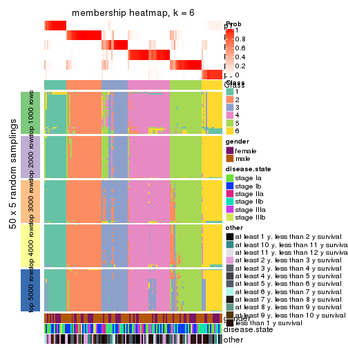
As soon as we have had the classes for columns, we can look for signatures which are significantly different between classes which can be candidate marks for certain classes. Following are the heatmaps for signatures.
Signature heatmaps where rows are scaled:
get_signatures(res, k = 2)
get_signatures(res, k = 3)

get_signatures(res, k = 4)
get_signatures(res, k = 5)
get_signatures(res, k = 6)
Signature heatmaps where rows are not scaled:
get_signatures(res, k = 2, scale_rows = FALSE)
get_signatures(res, k = 3, scale_rows = FALSE)

get_signatures(res, k = 4, scale_rows = FALSE)
get_signatures(res, k = 5, scale_rows = FALSE)
get_signatures(res, k = 6, scale_rows = FALSE)
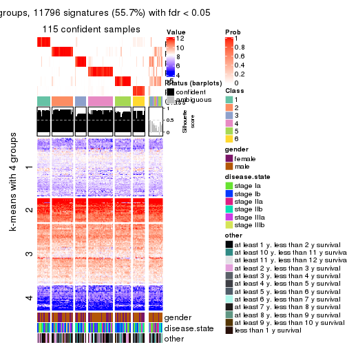
Compare the overlap of signatures from different k:
compare_signatures(res)
get_signature() returns a data frame invisibly. TO get the list of signatures, the function
call should be assigned to a variable explicitly. In following code, if plot argument is set
to FALSE, no heatmap is plotted while only the differential analysis is performed.
# code only for demonstration
tb = get_signature(res, k = ..., plot = FALSE)
An example of the output of tb is:
#> which_row fdr mean_1 mean_2 scaled_mean_1 scaled_mean_2 km
#> 1 38 0.042760348 8.373488 9.131774 -0.5533452 0.5164555 1
#> 2 40 0.018707592 7.106213 8.469186 -0.6173731 0.5762149 1
#> 3 55 0.019134737 10.221463 11.207825 -0.6159697 0.5749050 1
#> 4 59 0.006059896 5.921854 7.869574 -0.6899429 0.6439467 1
#> 5 60 0.018055526 8.928898 10.211722 -0.6204761 0.5791110 1
#> 6 98 0.009384629 15.714769 14.887706 0.6635654 -0.6193277 2
...
The columns in tb are:
which_row: row indices corresponding to the input matrix.fdr: FDR for the differential test. mean_x: The mean value in group x.scaled_mean_x: The mean value in group x after rows are scaled.km: Row groups if k-means clustering is applied to rows.UMAP plot which shows how samples are separated.
dimension_reduction(res, k = 2, method = "UMAP")
dimension_reduction(res, k = 3, method = "UMAP")
dimension_reduction(res, k = 4, method = "UMAP")
dimension_reduction(res, k = 5, method = "UMAP")
dimension_reduction(res, k = 6, method = "UMAP")
Following heatmap shows how subgroups are split when increasing k:
collect_classes(res)
Test correlation between subgroups and known annotations. If the known annotation is numeric, one-way ANOVA test is applied, and if the known annotation is discrete, chi-squared contingency table test is applied.
test_to_known_factors(res)
#> n gender(p) disease.state(p) other(p) k
#> ATC:mclust 129 0.920 0.0667 0.7051 2
#> ATC:mclust 16 NA NA NA 3
#> ATC:mclust 111 0.484 0.4319 0.2094 4
#> ATC:mclust 100 0.681 0.7375 0.3050 5
#> ATC:mclust 115 0.815 0.2989 0.0693 6
If matrix rows can be associated to genes, consider to use functional_enrichment(res,
...) to perform function enrichment for the signature genes. See this vignette for more detailed explanations.
The object with results only for a single top-value method and a single partition method can be extracted as:
res = res_list["ATC", "NMF"]
# you can also extract it by
# res = res_list["ATC:NMF"]
A summary of res and all the functions that can be applied to it:
res
#> A 'ConsensusPartition' object with k = 2, 3, 4, 5, 6.
#> On a matrix with 21168 rows and 130 columns.
#> Top rows (1000, 2000, 3000, 4000, 5000) are extracted by 'ATC' method.
#> Subgroups are detected by 'NMF' method.
#> Performed in total 1250 partitions by row resampling.
#> Best k for subgroups seems to be 2.
#>
#> Following methods can be applied to this 'ConsensusPartition' object:
#> [1] "cola_report" "collect_classes" "collect_plots"
#> [4] "collect_stats" "colnames" "compare_signatures"
#> [7] "consensus_heatmap" "dimension_reduction" "functional_enrichment"
#> [10] "get_anno_col" "get_anno" "get_classes"
#> [13] "get_consensus" "get_matrix" "get_membership"
#> [16] "get_param" "get_signatures" "get_stats"
#> [19] "is_best_k" "is_stable_k" "membership_heatmap"
#> [22] "ncol" "nrow" "plot_ecdf"
#> [25] "rownames" "select_partition_number" "show"
#> [28] "suggest_best_k" "test_to_known_factors"
collect_plots() function collects all the plots made from res for all k (number of partitions)
into one single page to provide an easy and fast comparison between different k.
collect_plots(res)
The plots are:
k and the heatmap of
predicted classes for each k.k.k.k.All the plots in panels can be made by individual functions and they are plotted later in this section.
select_partition_number() produces several plots showing different
statistics for choosing “optimized” k. There are following statistics:
k;k, the area increased is defined as \(A_k - A_{k-1}\).The detailed explanations of these statistics can be found in the cola vignette.
Generally speaking, lower PAC score, higher mean silhouette score or higher
concordance corresponds to better partition. Rand index and Jaccard index
measure how similar the current partition is compared to partition with k-1.
If they are too similar, we won't accept k is better than k-1.
select_partition_number(res)
The numeric values for all these statistics can be obtained by get_stats().
get_stats(res)
#> k 1-PAC mean_silhouette concordance area_increased Rand Jaccard
#> 2 2 0.831 0.891 0.956 0.4992 0.496 0.496
#> 3 3 0.429 0.619 0.795 0.3009 0.793 0.612
#> 4 4 0.480 0.499 0.735 0.1286 0.798 0.515
#> 5 5 0.646 0.674 0.828 0.0711 0.814 0.435
#> 6 6 0.581 0.520 0.710 0.0449 0.892 0.563
suggest_best_k() suggests the best \(k\) based on these statistics. The rules are as follows:
suggest_best_k(res)
#> [1] 2
Following shows the table of the partitions (You need to click the show/hide
code output link to see it). The membership matrix (columns with name p*)
is inferred by
clue::cl_consensus()
function with the SE method. Basically the value in the membership matrix
represents the probability to belong to a certain group. The finall class
label for an item is determined with the group with highest probability it
belongs to.
In get_classes() function, the entropy is calculated from the membership
matrix and the silhouette score is calculated from the consensus matrix.
cbind(get_classes(res, k = 2), get_membership(res, k = 2))
#> class entropy silhouette p1 p2
#> GSM102191 2 0.0000 0.953 0.000 1.000
#> GSM102240 2 0.1184 0.942 0.016 0.984
#> GSM102175 1 0.0000 0.951 1.000 0.000
#> GSM102134 2 0.0000 0.953 0.000 1.000
#> GSM102171 1 0.0000 0.951 1.000 0.000
#> GSM102178 1 0.0000 0.951 1.000 0.000
#> GSM102198 2 0.0000 0.953 0.000 1.000
#> GSM102221 2 0.7219 0.742 0.200 0.800
#> GSM102223 2 0.0000 0.953 0.000 1.000
#> GSM102229 1 0.0000 0.951 1.000 0.000
#> GSM102153 1 0.0000 0.951 1.000 0.000
#> GSM102220 2 0.0000 0.953 0.000 1.000
#> GSM102202 2 0.0000 0.953 0.000 1.000
#> GSM102123 1 0.0000 0.951 1.000 0.000
#> GSM102125 2 0.0000 0.953 0.000 1.000
#> GSM102136 2 0.0000 0.953 0.000 1.000
#> GSM102197 1 0.0000 0.951 1.000 0.000
#> GSM102131 1 0.0938 0.942 0.988 0.012
#> GSM102132 1 0.0000 0.951 1.000 0.000
#> GSM102212 2 0.0000 0.953 0.000 1.000
#> GSM102117 2 0.0000 0.953 0.000 1.000
#> GSM102124 2 0.0000 0.953 0.000 1.000
#> GSM102172 1 0.0000 0.951 1.000 0.000
#> GSM102199 2 0.0000 0.953 0.000 1.000
#> GSM102203 2 0.7056 0.753 0.192 0.808
#> GSM102213 2 0.0000 0.953 0.000 1.000
#> GSM102165 1 0.0000 0.951 1.000 0.000
#> GSM102180 2 0.0000 0.953 0.000 1.000
#> GSM102184 1 0.0000 0.951 1.000 0.000
#> GSM102225 2 0.0938 0.945 0.012 0.988
#> GSM102230 1 0.0000 0.951 1.000 0.000
#> GSM102133 2 0.0000 0.953 0.000 1.000
#> GSM102166 1 0.0000 0.951 1.000 0.000
#> GSM102235 1 0.0000 0.951 1.000 0.000
#> GSM102196 1 0.0000 0.951 1.000 0.000
#> GSM102243 1 0.4161 0.876 0.916 0.084
#> GSM102135 2 0.0000 0.953 0.000 1.000
#> GSM102139 2 0.0000 0.953 0.000 1.000
#> GSM102151 2 0.0000 0.953 0.000 1.000
#> GSM102193 2 0.0000 0.953 0.000 1.000
#> GSM102200 1 0.0000 0.951 1.000 0.000
#> GSM102204 2 0.0000 0.953 0.000 1.000
#> GSM102145 2 0.0000 0.953 0.000 1.000
#> GSM102142 2 0.0000 0.953 0.000 1.000
#> GSM102179 2 0.0938 0.945 0.012 0.988
#> GSM102181 2 0.9850 0.256 0.428 0.572
#> GSM102154 1 0.9922 0.184 0.552 0.448
#> GSM102152 2 0.0000 0.953 0.000 1.000
#> GSM102162 2 0.0000 0.953 0.000 1.000
#> GSM102187 2 0.8555 0.614 0.280 0.720
#> GSM102116 2 0.1414 0.938 0.020 0.980
#> GSM102150 1 0.0000 0.951 1.000 0.000
#> GSM102227 1 0.9552 0.396 0.624 0.376
#> GSM102114 1 0.0000 0.951 1.000 0.000
#> GSM102177 1 0.0000 0.951 1.000 0.000
#> GSM102160 2 0.0000 0.953 0.000 1.000
#> GSM102161 1 0.0000 0.951 1.000 0.000
#> GSM102170 2 0.0000 0.953 0.000 1.000
#> GSM102205 1 0.0000 0.951 1.000 0.000
#> GSM102118 1 0.0000 0.951 1.000 0.000
#> GSM102156 1 0.9933 0.170 0.548 0.452
#> GSM102238 1 0.0000 0.951 1.000 0.000
#> GSM102143 1 0.5408 0.833 0.876 0.124
#> GSM102144 2 0.0000 0.953 0.000 1.000
#> GSM102209 2 0.0000 0.953 0.000 1.000
#> GSM102210 2 0.9686 0.352 0.396 0.604
#> GSM102140 2 0.0938 0.945 0.012 0.988
#> GSM102242 1 0.0000 0.951 1.000 0.000
#> GSM102141 1 0.0000 0.951 1.000 0.000
#> GSM102120 1 0.0000 0.951 1.000 0.000
#> GSM102127 1 0.0000 0.951 1.000 0.000
#> GSM102149 1 0.0000 0.951 1.000 0.000
#> GSM102232 2 0.0000 0.953 0.000 1.000
#> GSM102222 2 0.0000 0.953 0.000 1.000
#> GSM102236 1 0.6343 0.789 0.840 0.160
#> GSM102215 2 0.0000 0.953 0.000 1.000
#> GSM102194 2 0.0000 0.953 0.000 1.000
#> GSM102208 2 0.0000 0.953 0.000 1.000
#> GSM102130 2 0.0000 0.953 0.000 1.000
#> GSM102188 1 0.0000 0.951 1.000 0.000
#> GSM102233 1 0.0000 0.951 1.000 0.000
#> GSM102189 2 0.0000 0.953 0.000 1.000
#> GSM102234 1 0.0000 0.951 1.000 0.000
#> GSM102237 1 0.0000 0.951 1.000 0.000
#> GSM102159 1 0.0000 0.951 1.000 0.000
#> GSM102155 1 0.0000 0.951 1.000 0.000
#> GSM102137 1 0.4939 0.851 0.892 0.108
#> GSM102217 2 0.0000 0.953 0.000 1.000
#> GSM102126 1 0.0000 0.951 1.000 0.000
#> GSM102157 2 0.0376 0.950 0.004 0.996
#> GSM102163 1 0.0000 0.951 1.000 0.000
#> GSM102182 1 0.0938 0.942 0.988 0.012
#> GSM102167 2 0.0000 0.953 0.000 1.000
#> GSM102206 1 0.0000 0.951 1.000 0.000
#> GSM102224 2 0.0000 0.953 0.000 1.000
#> GSM102164 2 0.0000 0.953 0.000 1.000
#> GSM102174 2 0.1633 0.935 0.024 0.976
#> GSM102214 2 0.7602 0.714 0.220 0.780
#> GSM102226 2 0.0000 0.953 0.000 1.000
#> GSM102195 2 0.0000 0.953 0.000 1.000
#> GSM102218 1 0.0000 0.951 1.000 0.000
#> GSM102128 2 0.0000 0.953 0.000 1.000
#> GSM102168 1 0.0000 0.951 1.000 0.000
#> GSM102190 1 0.0000 0.951 1.000 0.000
#> GSM102201 2 0.0000 0.953 0.000 1.000
#> GSM102129 1 0.9909 0.198 0.556 0.444
#> GSM102192 1 0.0376 0.948 0.996 0.004
#> GSM102183 2 0.9775 0.306 0.412 0.588
#> GSM102185 1 0.0000 0.951 1.000 0.000
#> GSM102158 2 0.0000 0.953 0.000 1.000
#> GSM102169 1 0.8909 0.549 0.692 0.308
#> GSM102216 1 0.0000 0.951 1.000 0.000
#> GSM102219 1 0.0000 0.951 1.000 0.000
#> GSM102231 2 0.9044 0.535 0.320 0.680
#> GSM102147 2 0.0000 0.953 0.000 1.000
#> GSM102176 1 0.0000 0.951 1.000 0.000
#> GSM102148 1 0.0000 0.951 1.000 0.000
#> GSM102146 1 0.0000 0.951 1.000 0.000
#> GSM102241 1 0.0000 0.951 1.000 0.000
#> GSM102211 1 0.0000 0.951 1.000 0.000
#> GSM102115 2 0.7883 0.689 0.236 0.764
#> GSM102173 1 0.0000 0.951 1.000 0.000
#> GSM102138 2 0.0000 0.953 0.000 1.000
#> GSM102228 1 0.9460 0.426 0.636 0.364
#> GSM102207 1 0.0000 0.951 1.000 0.000
#> GSM102122 1 0.0000 0.951 1.000 0.000
#> GSM102119 2 0.0000 0.953 0.000 1.000
#> GSM102186 2 0.0000 0.953 0.000 1.000
#> GSM102239 1 0.0000 0.951 1.000 0.000
#> GSM102121 2 0.0000 0.953 0.000 1.000
cbind(get_classes(res, k = 3), get_membership(res, k = 3))
#> class entropy silhouette p1 p2 p3
#> GSM102191 2 0.3686 0.6397 0.000 0.860 0.140
#> GSM102240 2 0.6856 0.6215 0.132 0.740 0.128
#> GSM102175 1 0.2031 0.8148 0.952 0.016 0.032
#> GSM102134 2 0.6299 0.0108 0.000 0.524 0.476
#> GSM102171 1 0.1529 0.8259 0.960 0.000 0.040
#> GSM102178 1 0.5618 0.7257 0.796 0.156 0.048
#> GSM102198 2 0.6168 0.1454 0.000 0.588 0.412
#> GSM102221 2 0.6703 0.5576 0.236 0.712 0.052
#> GSM102223 3 0.5363 0.6494 0.000 0.276 0.724
#> GSM102229 1 0.6204 0.5082 0.576 0.000 0.424
#> GSM102153 1 0.2448 0.8134 0.924 0.000 0.076
#> GSM102220 2 0.4449 0.6841 0.040 0.860 0.100
#> GSM102202 2 0.6309 -0.1893 0.000 0.500 0.500
#> GSM102123 1 0.5621 0.5735 0.692 0.000 0.308
#> GSM102125 2 0.0592 0.7164 0.000 0.988 0.012
#> GSM102136 3 0.6677 0.6865 0.088 0.168 0.744
#> GSM102197 1 0.2066 0.8190 0.940 0.000 0.060
#> GSM102131 3 0.4002 0.6422 0.160 0.000 0.840
#> GSM102132 1 0.0475 0.8261 0.992 0.004 0.004
#> GSM102212 2 0.6140 0.1689 0.000 0.596 0.404
#> GSM102117 2 0.3850 0.6926 0.028 0.884 0.088
#> GSM102124 2 0.5327 0.5921 0.000 0.728 0.272
#> GSM102172 1 0.3369 0.7951 0.908 0.052 0.040
#> GSM102199 3 0.5216 0.6642 0.000 0.260 0.740
#> GSM102203 3 0.6313 0.6879 0.148 0.084 0.768
#> GSM102213 2 0.1529 0.7153 0.000 0.960 0.040
#> GSM102165 1 0.6079 0.7153 0.748 0.036 0.216
#> GSM102180 2 0.0892 0.7168 0.000 0.980 0.020
#> GSM102184 1 0.5360 0.7228 0.768 0.012 0.220
#> GSM102225 3 0.6529 0.6957 0.092 0.152 0.756
#> GSM102230 1 0.5363 0.5947 0.724 0.000 0.276
#> GSM102133 2 0.3941 0.6671 0.000 0.844 0.156
#> GSM102166 1 0.1482 0.8255 0.968 0.012 0.020
#> GSM102235 1 0.1964 0.8231 0.944 0.000 0.056
#> GSM102196 1 0.1860 0.8230 0.948 0.000 0.052
#> GSM102243 1 0.4786 0.7528 0.844 0.112 0.044
#> GSM102135 3 0.5363 0.6507 0.000 0.276 0.724
#> GSM102139 2 0.2878 0.6746 0.000 0.904 0.096
#> GSM102151 3 0.5650 0.6006 0.000 0.312 0.688
#> GSM102193 2 0.1163 0.7109 0.000 0.972 0.028
#> GSM102200 1 0.1753 0.8221 0.952 0.000 0.048
#> GSM102204 2 0.5216 0.4886 0.000 0.740 0.260
#> GSM102145 2 0.4931 0.6272 0.000 0.768 0.232
#> GSM102142 2 0.2680 0.7090 0.008 0.924 0.068
#> GSM102179 2 0.3683 0.6933 0.060 0.896 0.044
#> GSM102181 2 0.7112 0.4895 0.308 0.648 0.044
#> GSM102154 2 0.7699 0.1735 0.420 0.532 0.048
#> GSM102152 3 0.5138 0.6664 0.000 0.252 0.748
#> GSM102162 2 0.0424 0.7170 0.000 0.992 0.008
#> GSM102187 2 0.7234 0.4818 0.312 0.640 0.048
#> GSM102116 2 0.5067 0.6593 0.116 0.832 0.052
#> GSM102150 1 0.5138 0.6521 0.748 0.000 0.252
#> GSM102227 3 0.2860 0.6471 0.084 0.004 0.912
#> GSM102114 1 0.0747 0.8264 0.984 0.000 0.016
#> GSM102177 1 0.6546 0.5954 0.716 0.240 0.044
#> GSM102160 2 0.0829 0.7167 0.012 0.984 0.004
#> GSM102161 1 0.0747 0.8245 0.984 0.000 0.016
#> GSM102170 2 0.2066 0.7108 0.000 0.940 0.060
#> GSM102205 3 0.6225 0.2621 0.432 0.000 0.568
#> GSM102118 1 0.4887 0.7239 0.772 0.000 0.228
#> GSM102156 2 0.7232 0.2349 0.428 0.544 0.028
#> GSM102238 1 0.1289 0.8243 0.968 0.000 0.032
#> GSM102143 1 0.5637 0.7176 0.788 0.172 0.040
#> GSM102144 2 0.1289 0.7123 0.000 0.968 0.032
#> GSM102209 3 0.5905 0.6909 0.044 0.184 0.772
#> GSM102210 2 0.9811 0.0960 0.376 0.384 0.240
#> GSM102140 2 0.6565 0.4039 0.008 0.576 0.416
#> GSM102242 1 0.5244 0.7167 0.756 0.004 0.240
#> GSM102141 3 0.4062 0.5671 0.164 0.000 0.836
#> GSM102120 3 0.5465 0.5703 0.288 0.000 0.712
#> GSM102127 1 0.2356 0.8155 0.928 0.000 0.072
#> GSM102149 3 0.5810 0.5030 0.336 0.000 0.664
#> GSM102232 2 0.6307 -0.1204 0.000 0.512 0.488
#> GSM102222 2 0.6180 0.1409 0.000 0.584 0.416
#> GSM102236 1 0.7260 0.4369 0.636 0.316 0.048
#> GSM102215 2 0.5968 0.2761 0.000 0.636 0.364
#> GSM102194 2 0.0747 0.7145 0.000 0.984 0.016
#> GSM102208 2 0.5384 0.6384 0.024 0.788 0.188
#> GSM102130 2 0.1031 0.7124 0.000 0.976 0.024
#> GSM102188 1 0.1636 0.8267 0.964 0.020 0.016
#> GSM102233 1 0.2448 0.8182 0.924 0.000 0.076
#> GSM102189 2 0.1163 0.7157 0.000 0.972 0.028
#> GSM102234 3 0.6282 -0.0250 0.384 0.004 0.612
#> GSM102237 1 0.1860 0.8219 0.948 0.000 0.052
#> GSM102159 1 0.2383 0.8252 0.940 0.016 0.044
#> GSM102155 1 0.8353 0.5936 0.628 0.180 0.192
#> GSM102137 3 0.5450 0.6354 0.228 0.012 0.760
#> GSM102217 3 0.5216 0.6642 0.000 0.260 0.740
#> GSM102126 1 0.4931 0.7244 0.768 0.000 0.232
#> GSM102157 2 0.6049 0.6154 0.040 0.756 0.204
#> GSM102163 1 0.1170 0.8236 0.976 0.008 0.016
#> GSM102182 1 0.7164 0.4420 0.640 0.316 0.044
#> GSM102167 2 0.0747 0.7170 0.000 0.984 0.016
#> GSM102206 1 0.2066 0.8218 0.940 0.000 0.060
#> GSM102224 3 0.6260 0.3115 0.000 0.448 0.552
#> GSM102164 2 0.2165 0.6938 0.000 0.936 0.064
#> GSM102174 2 0.6054 0.6070 0.180 0.768 0.052
#> GSM102214 3 0.6431 0.7028 0.156 0.084 0.760
#> GSM102226 3 0.5327 0.6553 0.000 0.272 0.728
#> GSM102195 2 0.4452 0.5883 0.000 0.808 0.192
#> GSM102218 1 0.5285 0.7145 0.752 0.004 0.244
#> GSM102128 2 0.0424 0.7160 0.000 0.992 0.008
#> GSM102168 1 0.1832 0.8261 0.956 0.008 0.036
#> GSM102190 1 0.1989 0.8140 0.948 0.004 0.048
#> GSM102201 2 0.5254 0.4846 0.000 0.736 0.264
#> GSM102129 2 0.8587 0.4655 0.176 0.604 0.220
#> GSM102192 1 0.7353 0.4372 0.632 0.316 0.052
#> GSM102183 2 0.7357 0.4443 0.332 0.620 0.048
#> GSM102185 1 0.0592 0.8252 0.988 0.000 0.012
#> GSM102158 2 0.1453 0.7156 0.008 0.968 0.024
#> GSM102169 1 0.6143 0.5808 0.720 0.256 0.024
#> GSM102216 1 0.4399 0.7367 0.812 0.000 0.188
#> GSM102219 1 0.6305 0.2339 0.516 0.000 0.484
#> GSM102231 3 0.5660 0.6876 0.200 0.028 0.772
#> GSM102147 2 0.5216 0.4880 0.000 0.740 0.260
#> GSM102176 1 0.3155 0.8178 0.916 0.040 0.044
#> GSM102148 1 0.4062 0.7725 0.836 0.000 0.164
#> GSM102146 1 0.2096 0.8132 0.944 0.004 0.052
#> GSM102241 1 0.1289 0.8245 0.968 0.000 0.032
#> GSM102211 1 0.3038 0.8001 0.896 0.000 0.104
#> GSM102115 2 0.6937 0.5254 0.272 0.680 0.048
#> GSM102173 1 0.1170 0.8252 0.976 0.008 0.016
#> GSM102138 3 0.6260 0.3111 0.000 0.448 0.552
#> GSM102228 2 0.7582 0.3343 0.380 0.572 0.048
#> GSM102207 1 0.6192 0.5155 0.580 0.000 0.420
#> GSM102122 1 0.3752 0.7928 0.856 0.000 0.144
#> GSM102119 2 0.0747 0.7147 0.000 0.984 0.016
#> GSM102186 2 0.0424 0.7167 0.000 0.992 0.008
#> GSM102239 1 0.3967 0.7776 0.884 0.072 0.044
#> GSM102121 2 0.2066 0.7095 0.000 0.940 0.060
cbind(get_classes(res, k = 4), get_membership(res, k = 4))
#> class entropy silhouette p1 p2 p3 p4
#> GSM102191 2 0.5870 0.6007 0.020 0.732 0.088 0.160
#> GSM102240 2 0.5099 0.3641 0.380 0.612 0.000 0.008
#> GSM102175 1 0.1722 0.6538 0.944 0.008 0.048 0.000
#> GSM102134 4 0.5607 -0.0690 0.020 0.484 0.000 0.496
#> GSM102171 1 0.4252 0.6607 0.744 0.000 0.252 0.004
#> GSM102178 1 0.5386 0.5561 0.632 0.024 0.344 0.000
#> GSM102198 2 0.5653 0.1574 0.004 0.532 0.016 0.448
#> GSM102221 2 0.4996 0.1005 0.484 0.516 0.000 0.000
#> GSM102223 4 0.1520 0.7046 0.000 0.020 0.024 0.956
#> GSM102229 3 0.3047 0.5831 0.116 0.000 0.872 0.012
#> GSM102153 1 0.5184 0.6620 0.732 0.000 0.212 0.056
#> GSM102220 2 0.4348 0.5647 0.024 0.780 0.196 0.000
#> GSM102202 4 0.5233 0.1791 0.004 0.412 0.004 0.580
#> GSM102123 1 0.7551 0.3785 0.484 0.000 0.228 0.288
#> GSM102125 2 0.5337 0.5111 0.000 0.696 0.260 0.044
#> GSM102136 4 0.6950 0.4386 0.180 0.236 0.000 0.584
#> GSM102197 3 0.5496 0.0648 0.372 0.000 0.604 0.024
#> GSM102131 4 0.3463 0.6556 0.040 0.000 0.096 0.864
#> GSM102132 1 0.3873 0.6730 0.772 0.000 0.228 0.000
#> GSM102212 2 0.7191 0.2983 0.000 0.516 0.156 0.328
#> GSM102117 2 0.3659 0.6246 0.136 0.840 0.024 0.000
#> GSM102124 3 0.6482 0.2128 0.000 0.352 0.564 0.084
#> GSM102172 1 0.2101 0.6147 0.928 0.060 0.012 0.000
#> GSM102199 4 0.0779 0.7087 0.000 0.004 0.016 0.980
#> GSM102203 4 0.3999 0.6618 0.140 0.036 0.000 0.824
#> GSM102213 2 0.4335 0.5988 0.168 0.796 0.000 0.036
#> GSM102165 3 0.2111 0.6566 0.024 0.044 0.932 0.000
#> GSM102180 2 0.1958 0.6774 0.028 0.944 0.008 0.020
#> GSM102184 3 0.2466 0.6439 0.056 0.028 0.916 0.000
#> GSM102225 4 0.0592 0.7083 0.016 0.000 0.000 0.984
#> GSM102230 1 0.6664 0.5289 0.616 0.000 0.152 0.232
#> GSM102133 3 0.5213 0.3630 0.000 0.328 0.652 0.020
#> GSM102166 1 0.3768 0.6801 0.808 0.008 0.184 0.000
#> GSM102235 1 0.4673 0.6338 0.700 0.000 0.292 0.008
#> GSM102196 1 0.3479 0.6829 0.840 0.000 0.148 0.012
#> GSM102243 1 0.2647 0.5764 0.880 0.120 0.000 0.000
#> GSM102135 4 0.2521 0.6835 0.000 0.064 0.024 0.912
#> GSM102139 2 0.5011 0.6074 0.000 0.764 0.076 0.160
#> GSM102151 4 0.4198 0.5344 0.004 0.224 0.004 0.768
#> GSM102193 2 0.4259 0.6382 0.000 0.816 0.128 0.056
#> GSM102200 1 0.2675 0.6748 0.892 0.000 0.100 0.008
#> GSM102204 2 0.5228 0.5126 0.000 0.696 0.036 0.268
#> GSM102145 3 0.4387 0.5001 0.000 0.236 0.752 0.012
#> GSM102142 2 0.4446 0.5916 0.196 0.776 0.000 0.028
#> GSM102179 2 0.3156 0.6561 0.068 0.884 0.048 0.000
#> GSM102181 1 0.4955 0.0684 0.556 0.444 0.000 0.000
#> GSM102154 3 0.7262 0.4482 0.208 0.252 0.540 0.000
#> GSM102152 4 0.1520 0.7055 0.000 0.024 0.020 0.956
#> GSM102162 2 0.0967 0.6810 0.004 0.976 0.016 0.004
#> GSM102187 2 0.6394 0.3678 0.316 0.596 0.088 0.000
#> GSM102116 2 0.4643 0.4296 0.344 0.656 0.000 0.000
#> GSM102150 1 0.5410 0.5885 0.728 0.000 0.080 0.192
#> GSM102227 4 0.6509 0.3745 0.008 0.068 0.340 0.584
#> GSM102114 1 0.3873 0.6722 0.772 0.000 0.228 0.000
#> GSM102177 1 0.4564 0.3568 0.672 0.328 0.000 0.000
#> GSM102160 2 0.1151 0.6804 0.008 0.968 0.024 0.000
#> GSM102161 1 0.1174 0.6427 0.968 0.012 0.020 0.000
#> GSM102170 2 0.5576 0.1475 0.000 0.536 0.444 0.020
#> GSM102205 4 0.6578 0.3020 0.300 0.000 0.108 0.592
#> GSM102118 3 0.4222 0.3513 0.272 0.000 0.728 0.000
#> GSM102156 1 0.6443 0.3257 0.528 0.400 0.072 0.000
#> GSM102238 1 0.4711 0.6613 0.740 0.000 0.236 0.024
#> GSM102143 1 0.6998 0.2601 0.504 0.104 0.388 0.004
#> GSM102144 2 0.3435 0.6423 0.100 0.864 0.000 0.036
#> GSM102209 4 0.0524 0.7081 0.008 0.004 0.000 0.988
#> GSM102210 3 0.7453 0.4664 0.108 0.240 0.604 0.048
#> GSM102140 3 0.6592 0.3460 0.000 0.260 0.612 0.128
#> GSM102242 3 0.1557 0.6321 0.056 0.000 0.944 0.000
#> GSM102141 4 0.6660 0.1059 0.084 0.000 0.452 0.464
#> GSM102120 4 0.5484 0.5464 0.104 0.000 0.164 0.732
#> GSM102127 1 0.5430 0.6096 0.664 0.000 0.300 0.036
#> GSM102149 4 0.4707 0.5709 0.204 0.000 0.036 0.760
#> GSM102232 4 0.6458 0.0958 0.000 0.408 0.072 0.520
#> GSM102222 2 0.5738 0.2020 0.000 0.540 0.028 0.432
#> GSM102236 1 0.4585 0.3397 0.668 0.332 0.000 0.000
#> GSM102215 2 0.5592 0.2763 0.000 0.572 0.024 0.404
#> GSM102194 2 0.2797 0.6708 0.000 0.900 0.068 0.032
#> GSM102208 3 0.4328 0.4961 0.000 0.244 0.748 0.008
#> GSM102130 2 0.3523 0.6512 0.000 0.856 0.112 0.032
#> GSM102188 1 0.3873 0.6730 0.772 0.000 0.228 0.000
#> GSM102233 1 0.5404 0.6388 0.700 0.000 0.248 0.052
#> GSM102189 2 0.5367 0.4475 0.000 0.664 0.304 0.032
#> GSM102234 3 0.1516 0.6509 0.016 0.016 0.960 0.008
#> GSM102237 1 0.4711 0.6596 0.740 0.000 0.236 0.024
#> GSM102159 1 0.4382 0.6340 0.704 0.000 0.296 0.000
#> GSM102155 3 0.5200 0.4005 0.264 0.036 0.700 0.000
#> GSM102137 4 0.4222 0.5656 0.272 0.000 0.000 0.728
#> GSM102217 4 0.0188 0.7084 0.000 0.004 0.000 0.996
#> GSM102126 3 0.4769 0.2698 0.308 0.000 0.684 0.008
#> GSM102157 3 0.3837 0.5253 0.000 0.224 0.776 0.000
#> GSM102163 1 0.3870 0.6782 0.788 0.004 0.208 0.000
#> GSM102182 1 0.4776 0.2572 0.624 0.376 0.000 0.000
#> GSM102167 2 0.2238 0.6624 0.072 0.920 0.004 0.004
#> GSM102206 1 0.4720 0.6496 0.720 0.000 0.264 0.016
#> GSM102224 4 0.5723 0.2098 0.000 0.388 0.032 0.580
#> GSM102164 2 0.5553 0.5895 0.000 0.724 0.176 0.100
#> GSM102174 2 0.4948 0.2253 0.440 0.560 0.000 0.000
#> GSM102214 4 0.2353 0.7081 0.008 0.012 0.056 0.924
#> GSM102226 4 0.1706 0.7002 0.000 0.036 0.016 0.948
#> GSM102195 2 0.6953 0.3253 0.000 0.536 0.336 0.128
#> GSM102218 3 0.2345 0.6039 0.100 0.000 0.900 0.000
#> GSM102128 2 0.1174 0.6809 0.000 0.968 0.020 0.012
#> GSM102168 1 0.4431 0.6226 0.696 0.000 0.304 0.000
#> GSM102190 1 0.1807 0.6122 0.940 0.052 0.000 0.008
#> GSM102201 2 0.5328 0.4508 0.004 0.660 0.020 0.316
#> GSM102129 3 0.3123 0.5922 0.000 0.156 0.844 0.000
#> GSM102192 1 0.4673 0.4230 0.700 0.292 0.008 0.000
#> GSM102183 1 0.4985 -0.0106 0.532 0.468 0.000 0.000
#> GSM102185 1 0.3266 0.6831 0.832 0.000 0.168 0.000
#> GSM102158 2 0.3498 0.6123 0.160 0.832 0.000 0.008
#> GSM102169 3 0.7450 0.3406 0.336 0.164 0.496 0.004
#> GSM102216 1 0.6494 0.5779 0.632 0.000 0.232 0.136
#> GSM102219 4 0.7117 0.2839 0.228 0.000 0.208 0.564
#> GSM102231 4 0.1452 0.7083 0.008 0.000 0.036 0.956
#> GSM102147 2 0.4885 0.5425 0.004 0.728 0.020 0.248
#> GSM102176 1 0.4253 0.6418 0.776 0.016 0.208 0.000
#> GSM102148 3 0.4916 -0.0743 0.424 0.000 0.576 0.000
#> GSM102146 1 0.1767 0.6145 0.944 0.044 0.000 0.012
#> GSM102241 1 0.4095 0.6799 0.792 0.000 0.192 0.016
#> GSM102211 1 0.5566 0.6425 0.704 0.000 0.224 0.072
#> GSM102115 1 0.4996 -0.0424 0.516 0.484 0.000 0.000
#> GSM102173 1 0.3355 0.6803 0.836 0.004 0.160 0.000
#> GSM102138 4 0.4963 0.4473 0.000 0.284 0.020 0.696
#> GSM102228 1 0.7335 0.1066 0.444 0.400 0.156 0.000
#> GSM102207 3 0.2271 0.6196 0.076 0.000 0.916 0.008
#> GSM102122 1 0.5927 0.6057 0.660 0.000 0.264 0.076
#> GSM102119 2 0.1837 0.6795 0.000 0.944 0.028 0.028
#> GSM102186 2 0.1452 0.6751 0.036 0.956 0.008 0.000
#> GSM102239 1 0.4250 0.4361 0.724 0.276 0.000 0.000
#> GSM102121 2 0.5650 0.1790 0.000 0.544 0.432 0.024
cbind(get_classes(res, k = 5), get_membership(res, k = 5))
#> class entropy silhouette p1 p2 p3 p4 p5
#> GSM102191 2 0.1369 0.8367 0.000 0.956 0.008 0.028 0.008
#> GSM102240 5 0.0451 0.8663 0.000 0.008 0.000 0.004 0.988
#> GSM102175 1 0.2074 0.7594 0.920 0.000 0.044 0.000 0.036
#> GSM102134 4 0.6618 0.1409 0.008 0.404 0.000 0.424 0.164
#> GSM102171 1 0.3636 0.6051 0.728 0.000 0.272 0.000 0.000
#> GSM102178 3 0.4876 0.0634 0.436 0.012 0.544 0.000 0.008
#> GSM102198 2 0.3007 0.7955 0.000 0.864 0.004 0.104 0.028
#> GSM102221 5 0.0898 0.8678 0.020 0.008 0.000 0.000 0.972
#> GSM102223 4 0.2970 0.7426 0.000 0.168 0.004 0.828 0.000
#> GSM102229 3 0.1018 0.8020 0.016 0.000 0.968 0.016 0.000
#> GSM102153 1 0.1872 0.7617 0.928 0.000 0.052 0.020 0.000
#> GSM102220 2 0.6006 0.3089 0.000 0.520 0.124 0.000 0.356
#> GSM102202 5 0.4295 0.6424 0.000 0.044 0.000 0.216 0.740
#> GSM102123 1 0.6311 0.3648 0.504 0.000 0.176 0.320 0.000
#> GSM102125 2 0.0609 0.8371 0.000 0.980 0.020 0.000 0.000
#> GSM102136 4 0.5812 0.6017 0.240 0.116 0.000 0.632 0.012
#> GSM102197 2 0.4449 0.5262 0.292 0.688 0.008 0.008 0.004
#> GSM102131 4 0.1270 0.7410 0.000 0.000 0.052 0.948 0.000
#> GSM102132 1 0.2017 0.7588 0.912 0.000 0.080 0.000 0.008
#> GSM102212 2 0.1412 0.8340 0.000 0.952 0.008 0.036 0.004
#> GSM102117 5 0.0404 0.8661 0.000 0.012 0.000 0.000 0.988
#> GSM102124 2 0.0703 0.8372 0.000 0.976 0.024 0.000 0.000
#> GSM102172 1 0.1981 0.7499 0.920 0.000 0.016 0.000 0.064
#> GSM102199 4 0.1043 0.7681 0.000 0.040 0.000 0.960 0.000
#> GSM102203 4 0.3101 0.7263 0.024 0.012 0.000 0.864 0.100
#> GSM102213 5 0.0671 0.8635 0.000 0.016 0.000 0.004 0.980
#> GSM102165 3 0.0898 0.7983 0.008 0.020 0.972 0.000 0.000
#> GSM102180 2 0.1952 0.8338 0.000 0.912 0.000 0.004 0.084
#> GSM102184 3 0.0404 0.8044 0.012 0.000 0.988 0.000 0.000
#> GSM102225 4 0.5053 0.6149 0.060 0.268 0.004 0.668 0.000
#> GSM102230 4 0.5370 0.2206 0.348 0.000 0.068 0.584 0.000
#> GSM102133 2 0.2074 0.7970 0.000 0.896 0.104 0.000 0.000
#> GSM102166 1 0.4969 0.4131 0.588 0.000 0.376 0.000 0.036
#> GSM102235 1 0.4256 0.3061 0.564 0.000 0.436 0.000 0.000
#> GSM102196 1 0.0162 0.7590 0.996 0.000 0.000 0.000 0.004
#> GSM102243 1 0.0807 0.7543 0.976 0.012 0.000 0.000 0.012
#> GSM102135 4 0.2773 0.7515 0.000 0.164 0.000 0.836 0.000
#> GSM102139 2 0.3993 0.7234 0.000 0.756 0.000 0.028 0.216
#> GSM102151 4 0.2707 0.7637 0.000 0.100 0.000 0.876 0.024
#> GSM102193 2 0.0703 0.8415 0.000 0.976 0.000 0.000 0.024
#> GSM102200 1 0.0451 0.7573 0.988 0.000 0.000 0.004 0.008
#> GSM102204 2 0.2139 0.8304 0.000 0.916 0.000 0.052 0.032
#> GSM102145 3 0.3266 0.6491 0.000 0.200 0.796 0.000 0.004
#> GSM102142 2 0.2515 0.8334 0.020 0.908 0.000 0.032 0.040
#> GSM102179 2 0.0566 0.8391 0.004 0.984 0.000 0.000 0.012
#> GSM102181 1 0.4360 0.5007 0.680 0.300 0.000 0.000 0.020
#> GSM102154 2 0.5556 0.1713 0.072 0.524 0.404 0.000 0.000
#> GSM102152 4 0.1059 0.7574 0.000 0.008 0.004 0.968 0.020
#> GSM102162 2 0.1908 0.8319 0.000 0.908 0.000 0.000 0.092
#> GSM102187 2 0.3421 0.7154 0.164 0.816 0.004 0.000 0.016
#> GSM102116 5 0.0671 0.8688 0.016 0.004 0.000 0.000 0.980
#> GSM102150 1 0.4811 0.5399 0.668 0.000 0.020 0.296 0.016
#> GSM102227 4 0.4425 0.6261 0.004 0.048 0.204 0.744 0.000
#> GSM102114 1 0.1410 0.7605 0.940 0.000 0.060 0.000 0.000
#> GSM102177 5 0.3534 0.6347 0.256 0.000 0.000 0.000 0.744
#> GSM102160 2 0.4193 0.5783 0.000 0.684 0.012 0.000 0.304
#> GSM102161 1 0.4496 0.6437 0.728 0.000 0.056 0.000 0.216
#> GSM102170 2 0.1282 0.8316 0.000 0.952 0.044 0.000 0.004
#> GSM102205 1 0.4428 0.4751 0.692 0.020 0.004 0.284 0.000
#> GSM102118 3 0.0671 0.8045 0.016 0.000 0.980 0.004 0.000
#> GSM102156 1 0.6797 0.2183 0.484 0.140 0.028 0.000 0.348
#> GSM102238 1 0.1732 0.7557 0.920 0.000 0.080 0.000 0.000
#> GSM102143 3 0.6060 0.6271 0.116 0.136 0.676 0.000 0.072
#> GSM102144 5 0.2852 0.7378 0.000 0.172 0.000 0.000 0.828
#> GSM102209 4 0.2984 0.7662 0.016 0.124 0.004 0.856 0.000
#> GSM102210 2 0.1314 0.8310 0.024 0.960 0.008 0.004 0.004
#> GSM102140 3 0.4771 0.6405 0.000 0.124 0.764 0.088 0.024
#> GSM102242 3 0.0566 0.8042 0.012 0.000 0.984 0.004 0.000
#> GSM102141 4 0.4425 0.1297 0.004 0.000 0.452 0.544 0.000
#> GSM102120 4 0.4795 0.7092 0.144 0.076 0.016 0.760 0.004
#> GSM102127 1 0.5129 0.6160 0.716 0.208 0.044 0.028 0.004
#> GSM102149 4 0.0854 0.7556 0.008 0.000 0.012 0.976 0.004
#> GSM102232 2 0.3242 0.6927 0.000 0.784 0.000 0.216 0.000
#> GSM102222 2 0.1928 0.8194 0.000 0.920 0.004 0.072 0.004
#> GSM102236 5 0.0566 0.8686 0.012 0.004 0.000 0.000 0.984
#> GSM102215 2 0.6482 0.2184 0.000 0.492 0.000 0.276 0.232
#> GSM102194 2 0.1638 0.8382 0.000 0.932 0.004 0.000 0.064
#> GSM102208 2 0.4030 0.4584 0.000 0.648 0.352 0.000 0.000
#> GSM102130 2 0.0703 0.8414 0.000 0.976 0.000 0.000 0.024
#> GSM102188 1 0.1124 0.7630 0.960 0.000 0.036 0.000 0.004
#> GSM102233 1 0.4639 0.4843 0.632 0.000 0.344 0.024 0.000
#> GSM102189 2 0.2171 0.8364 0.000 0.912 0.024 0.000 0.064
#> GSM102234 3 0.0854 0.8043 0.012 0.000 0.976 0.008 0.004
#> GSM102237 1 0.4565 0.3697 0.580 0.000 0.408 0.012 0.000
#> GSM102159 1 0.3452 0.6429 0.756 0.000 0.244 0.000 0.000
#> GSM102155 3 0.2793 0.7612 0.088 0.036 0.876 0.000 0.000
#> GSM102137 1 0.4706 0.3575 0.632 0.020 0.000 0.344 0.004
#> GSM102217 4 0.0798 0.7583 0.000 0.008 0.000 0.976 0.016
#> GSM102126 3 0.0671 0.8045 0.016 0.000 0.980 0.004 0.000
#> GSM102157 3 0.4101 0.3579 0.000 0.372 0.628 0.000 0.000
#> GSM102163 1 0.3675 0.6895 0.788 0.000 0.188 0.000 0.024
#> GSM102182 5 0.1041 0.8643 0.032 0.004 0.000 0.000 0.964
#> GSM102167 2 0.2011 0.8344 0.000 0.908 0.004 0.000 0.088
#> GSM102206 3 0.3534 0.5541 0.256 0.000 0.744 0.000 0.000
#> GSM102224 2 0.3642 0.6611 0.000 0.760 0.000 0.232 0.008
#> GSM102164 2 0.0671 0.8408 0.000 0.980 0.000 0.004 0.016
#> GSM102174 5 0.0671 0.8686 0.016 0.004 0.000 0.000 0.980
#> GSM102214 2 0.4232 0.6943 0.044 0.776 0.004 0.172 0.004
#> GSM102226 4 0.3715 0.6471 0.000 0.260 0.004 0.736 0.000
#> GSM102195 2 0.1012 0.8405 0.000 0.968 0.020 0.012 0.000
#> GSM102218 3 0.0671 0.8050 0.016 0.004 0.980 0.000 0.000
#> GSM102128 5 0.4047 0.4726 0.000 0.320 0.004 0.000 0.676
#> GSM102168 1 0.4268 0.2798 0.556 0.000 0.444 0.000 0.000
#> GSM102190 1 0.0510 0.7570 0.984 0.000 0.000 0.000 0.016
#> GSM102201 5 0.1914 0.8364 0.000 0.016 0.000 0.060 0.924
#> GSM102129 3 0.1638 0.7762 0.004 0.064 0.932 0.000 0.000
#> GSM102192 5 0.2911 0.8037 0.136 0.004 0.008 0.000 0.852
#> GSM102183 1 0.4435 0.4136 0.648 0.336 0.000 0.000 0.016
#> GSM102185 1 0.0955 0.7624 0.968 0.000 0.028 0.000 0.004
#> GSM102158 5 0.0162 0.8669 0.000 0.004 0.000 0.000 0.996
#> GSM102169 2 0.2520 0.7865 0.096 0.888 0.012 0.000 0.004
#> GSM102216 3 0.5778 0.4707 0.132 0.000 0.596 0.272 0.000
#> GSM102219 4 0.3809 0.5306 0.008 0.000 0.256 0.736 0.000
#> GSM102231 4 0.5544 0.4960 0.064 0.328 0.004 0.600 0.004
#> GSM102147 2 0.3535 0.7881 0.000 0.832 0.000 0.080 0.088
#> GSM102176 3 0.6007 0.0781 0.396 0.000 0.488 0.000 0.116
#> GSM102148 3 0.0880 0.7996 0.032 0.000 0.968 0.000 0.000
#> GSM102146 1 0.1116 0.7541 0.964 0.004 0.000 0.004 0.028
#> GSM102241 1 0.0162 0.7602 0.996 0.000 0.004 0.000 0.000
#> GSM102211 1 0.2077 0.7553 0.920 0.000 0.040 0.040 0.000
#> GSM102115 5 0.2763 0.7995 0.148 0.004 0.000 0.000 0.848
#> GSM102173 1 0.2470 0.7444 0.884 0.000 0.104 0.000 0.012
#> GSM102138 4 0.2079 0.7431 0.000 0.020 0.000 0.916 0.064
#> GSM102228 5 0.6705 0.3309 0.072 0.076 0.308 0.000 0.544
#> GSM102207 3 0.0807 0.8040 0.012 0.000 0.976 0.012 0.000
#> GSM102122 3 0.4624 0.3712 0.340 0.000 0.636 0.024 0.000
#> GSM102119 2 0.2597 0.8169 0.000 0.872 0.004 0.004 0.120
#> GSM102186 5 0.0771 0.8633 0.000 0.020 0.004 0.000 0.976
#> GSM102239 5 0.2280 0.8135 0.120 0.000 0.000 0.000 0.880
#> GSM102121 2 0.1041 0.8354 0.000 0.964 0.032 0.000 0.004
cbind(get_classes(res, k = 6), get_membership(res, k = 6))
#> class entropy silhouette p1 p2 p3 p4 p5 p6
#> GSM102191 2 0.6614 0.40043 0.024 0.504 0.040 0.020 0.064 0.348
#> GSM102240 5 0.2081 0.78518 0.036 0.000 0.000 0.036 0.916 0.012
#> GSM102175 1 0.4056 0.58307 0.704 0.000 0.008 0.000 0.024 0.264
#> GSM102134 2 0.7863 0.02230 0.008 0.296 0.000 0.192 0.272 0.232
#> GSM102171 1 0.4620 0.58356 0.640 0.000 0.068 0.000 0.000 0.292
#> GSM102178 1 0.5993 0.42528 0.536 0.012 0.304 0.000 0.012 0.136
#> GSM102198 2 0.3429 0.69862 0.000 0.812 0.000 0.144 0.028 0.016
#> GSM102221 5 0.1498 0.79327 0.028 0.000 0.000 0.000 0.940 0.032
#> GSM102223 4 0.3437 0.65776 0.008 0.188 0.000 0.788 0.004 0.012
#> GSM102229 3 0.2301 0.66964 0.096 0.000 0.884 0.020 0.000 0.000
#> GSM102153 1 0.4657 0.28123 0.496 0.000 0.016 0.016 0.000 0.472
#> GSM102220 1 0.6731 -0.00766 0.500 0.228 0.064 0.000 0.204 0.004
#> GSM102202 5 0.5212 0.44251 0.024 0.032 0.004 0.308 0.620 0.012
#> GSM102123 6 0.6657 0.36981 0.140 0.000 0.176 0.144 0.000 0.540
#> GSM102125 2 0.0520 0.74600 0.008 0.984 0.000 0.000 0.008 0.000
#> GSM102136 6 0.6147 -0.03586 0.012 0.108 0.000 0.336 0.028 0.516
#> GSM102197 2 0.7255 0.31147 0.248 0.496 0.084 0.016 0.012 0.144
#> GSM102131 4 0.5269 0.58887 0.024 0.000 0.212 0.676 0.020 0.068
#> GSM102132 6 0.2709 0.55860 0.064 0.004 0.028 0.000 0.020 0.884
#> GSM102212 2 0.2501 0.73717 0.008 0.896 0.012 0.068 0.012 0.004
#> GSM102117 5 0.1706 0.79019 0.032 0.004 0.024 0.004 0.936 0.000
#> GSM102124 2 0.2479 0.74260 0.024 0.900 0.052 0.012 0.012 0.000
#> GSM102172 1 0.4060 0.55999 0.684 0.000 0.000 0.000 0.032 0.284
#> GSM102199 4 0.2244 0.72289 0.008 0.008 0.004 0.904 0.004 0.072
#> GSM102203 4 0.3029 0.71635 0.032 0.008 0.000 0.872 0.048 0.040
#> GSM102213 5 0.2232 0.78356 0.024 0.036 0.004 0.004 0.916 0.016
#> GSM102165 3 0.3720 0.62707 0.236 0.028 0.736 0.000 0.000 0.000
#> GSM102180 2 0.2723 0.74183 0.020 0.856 0.000 0.000 0.120 0.004
#> GSM102184 3 0.1370 0.68199 0.036 0.012 0.948 0.000 0.000 0.004
#> GSM102225 4 0.6030 0.31292 0.000 0.208 0.000 0.424 0.004 0.364
#> GSM102230 1 0.4922 0.49348 0.684 0.000 0.020 0.204 0.000 0.092
#> GSM102133 2 0.4081 0.67098 0.024 0.768 0.160 0.000 0.048 0.000
#> GSM102166 1 0.4712 0.62425 0.704 0.000 0.104 0.000 0.012 0.180
#> GSM102235 1 0.5434 0.55785 0.564 0.000 0.164 0.000 0.000 0.272
#> GSM102196 6 0.3371 0.33852 0.292 0.000 0.000 0.000 0.000 0.708
#> GSM102243 6 0.4263 0.53319 0.080 0.132 0.000 0.008 0.012 0.768
#> GSM102135 4 0.3210 0.72766 0.012 0.064 0.004 0.856 0.004 0.060
#> GSM102139 2 0.5234 0.60857 0.004 0.644 0.000 0.108 0.232 0.012
#> GSM102151 4 0.2309 0.72042 0.000 0.084 0.000 0.888 0.028 0.000
#> GSM102193 2 0.1501 0.74974 0.000 0.924 0.000 0.000 0.076 0.000
#> GSM102200 6 0.2588 0.54388 0.124 0.000 0.004 0.000 0.012 0.860
#> GSM102204 2 0.2364 0.73937 0.004 0.892 0.000 0.072 0.032 0.000
#> GSM102145 3 0.4776 0.58665 0.140 0.140 0.708 0.000 0.008 0.004
#> GSM102142 2 0.3927 0.72639 0.020 0.800 0.000 0.008 0.052 0.120
#> GSM102179 2 0.0924 0.74800 0.008 0.972 0.004 0.000 0.008 0.008
#> GSM102181 6 0.4292 0.52059 0.024 0.112 0.008 0.004 0.068 0.784
#> GSM102154 3 0.8016 0.25906 0.240 0.272 0.340 0.000 0.044 0.104
#> GSM102152 4 0.2014 0.71494 0.012 0.004 0.012 0.928 0.032 0.012
#> GSM102162 2 0.2784 0.73960 0.012 0.848 0.000 0.008 0.132 0.000
#> GSM102187 2 0.4373 0.66765 0.088 0.776 0.012 0.000 0.024 0.100
#> GSM102116 5 0.1353 0.79352 0.012 0.024 0.000 0.000 0.952 0.012
#> GSM102150 1 0.4849 0.48750 0.700 0.000 0.012 0.104 0.004 0.180
#> GSM102227 4 0.6420 0.48125 0.092 0.032 0.260 0.572 0.004 0.040
#> GSM102114 6 0.4336 -0.28859 0.476 0.000 0.020 0.000 0.000 0.504
#> GSM102177 5 0.5320 0.19983 0.352 0.000 0.000 0.000 0.532 0.116
#> GSM102160 2 0.4330 0.50529 0.016 0.644 0.004 0.000 0.328 0.008
#> GSM102161 1 0.3513 0.56011 0.812 0.000 0.004 0.000 0.100 0.084
#> GSM102170 2 0.1700 0.74649 0.012 0.936 0.028 0.000 0.024 0.000
#> GSM102205 6 0.3286 0.55683 0.044 0.012 0.000 0.112 0.000 0.832
#> GSM102118 3 0.3565 0.49832 0.304 0.000 0.692 0.004 0.000 0.000
#> GSM102156 5 0.7741 0.13419 0.184 0.076 0.048 0.000 0.360 0.332
#> GSM102238 1 0.4092 0.53298 0.636 0.000 0.020 0.000 0.000 0.344
#> GSM102143 3 0.8462 0.29396 0.220 0.080 0.344 0.000 0.168 0.188
#> GSM102144 5 0.3632 0.59649 0.012 0.220 0.000 0.000 0.756 0.012
#> GSM102209 4 0.4085 0.67331 0.000 0.076 0.000 0.752 0.004 0.168
#> GSM102210 2 0.3607 0.72036 0.012 0.828 0.048 0.016 0.000 0.096
#> GSM102140 4 0.8464 -0.00490 0.256 0.120 0.228 0.320 0.072 0.004
#> GSM102242 3 0.1429 0.68152 0.052 0.000 0.940 0.004 0.000 0.004
#> GSM102141 4 0.4855 0.42423 0.060 0.000 0.316 0.616 0.000 0.008
#> GSM102120 6 0.5482 -0.18611 0.008 0.012 0.064 0.440 0.000 0.476
#> GSM102127 1 0.7141 0.20317 0.480 0.144 0.056 0.024 0.008 0.288
#> GSM102149 4 0.2816 0.70771 0.024 0.000 0.020 0.868 0.000 0.088
#> GSM102232 2 0.5947 0.28762 0.068 0.512 0.012 0.380 0.016 0.012
#> GSM102222 2 0.2844 0.72241 0.000 0.860 0.000 0.104 0.020 0.016
#> GSM102236 5 0.1138 0.79418 0.012 0.000 0.000 0.004 0.960 0.024
#> GSM102215 2 0.6007 0.31609 0.000 0.480 0.000 0.312 0.200 0.008
#> GSM102194 2 0.1858 0.74914 0.004 0.904 0.000 0.000 0.092 0.000
#> GSM102208 3 0.4795 0.26406 0.024 0.364 0.588 0.000 0.024 0.000
#> GSM102130 2 0.1511 0.75066 0.012 0.940 0.000 0.000 0.044 0.004
#> GSM102188 6 0.4290 0.05618 0.364 0.004 0.020 0.000 0.000 0.612
#> GSM102233 1 0.5434 0.43623 0.512 0.000 0.128 0.000 0.000 0.360
#> GSM102189 2 0.5337 0.66611 0.088 0.696 0.060 0.000 0.148 0.008
#> GSM102234 1 0.6497 -0.34832 0.448 0.044 0.396 0.096 0.004 0.012
#> GSM102237 1 0.5075 0.60460 0.648 0.000 0.120 0.008 0.000 0.224
#> GSM102159 1 0.4757 0.58504 0.636 0.000 0.084 0.000 0.000 0.280
#> GSM102155 1 0.4724 0.38824 0.628 0.024 0.320 0.000 0.000 0.028
#> GSM102137 6 0.3804 0.50081 0.044 0.000 0.000 0.176 0.008 0.772
#> GSM102217 4 0.1129 0.72061 0.008 0.004 0.000 0.964 0.012 0.012
#> GSM102126 3 0.2405 0.65800 0.100 0.000 0.880 0.004 0.000 0.016
#> GSM102157 2 0.6663 -0.22737 0.272 0.360 0.344 0.000 0.016 0.008
#> GSM102163 1 0.3912 0.59858 0.732 0.000 0.044 0.000 0.000 0.224
#> GSM102182 5 0.3300 0.73610 0.148 0.012 0.000 0.000 0.816 0.024
#> GSM102167 2 0.4083 0.70748 0.076 0.772 0.000 0.004 0.140 0.008
#> GSM102206 1 0.5395 0.39422 0.516 0.000 0.376 0.004 0.000 0.104
#> GSM102224 2 0.3804 0.49429 0.000 0.656 0.000 0.336 0.008 0.000
#> GSM102164 2 0.1168 0.74743 0.000 0.956 0.000 0.016 0.028 0.000
#> GSM102174 5 0.1555 0.79348 0.040 0.000 0.000 0.008 0.940 0.012
#> GSM102214 2 0.5864 0.41922 0.020 0.576 0.008 0.128 0.000 0.268
#> GSM102226 4 0.5522 0.66679 0.040 0.124 0.004 0.692 0.016 0.124
#> GSM102195 2 0.5935 0.58746 0.132 0.676 0.100 0.060 0.016 0.016
#> GSM102218 3 0.3035 0.67610 0.148 0.000 0.828 0.008 0.000 0.016
#> GSM102128 5 0.5364 -0.04485 0.080 0.432 0.000 0.004 0.480 0.004
#> GSM102168 1 0.4949 0.60719 0.648 0.000 0.144 0.000 0.000 0.208
#> GSM102190 6 0.3126 0.42616 0.248 0.000 0.000 0.000 0.000 0.752
#> GSM102201 5 0.4266 0.68744 0.044 0.020 0.000 0.148 0.772 0.016
#> GSM102129 3 0.4610 0.62224 0.228 0.064 0.696 0.000 0.008 0.004
#> GSM102192 5 0.4602 0.69467 0.036 0.016 0.032 0.000 0.740 0.176
#> GSM102183 6 0.5413 0.46173 0.056 0.192 0.004 0.004 0.068 0.676
#> GSM102185 1 0.4095 0.28171 0.512 0.000 0.008 0.000 0.000 0.480
#> GSM102158 5 0.0862 0.79308 0.008 0.016 0.000 0.004 0.972 0.000
#> GSM102169 2 0.5764 0.40048 0.340 0.560 0.044 0.012 0.004 0.040
#> GSM102216 3 0.7095 0.29809 0.172 0.000 0.464 0.144 0.000 0.220
#> GSM102219 4 0.5123 0.46114 0.056 0.000 0.280 0.632 0.000 0.032
#> GSM102231 4 0.6188 0.29059 0.008 0.328 0.004 0.456 0.000 0.204
#> GSM102147 2 0.4433 0.68210 0.004 0.724 0.000 0.112 0.160 0.000
#> GSM102176 1 0.5016 0.58101 0.720 0.000 0.108 0.000 0.084 0.088
#> GSM102148 3 0.2623 0.63243 0.132 0.000 0.852 0.000 0.000 0.016
#> GSM102146 6 0.1930 0.56347 0.036 0.000 0.000 0.000 0.048 0.916
#> GSM102241 6 0.3672 0.30205 0.304 0.000 0.008 0.000 0.000 0.688
#> GSM102211 6 0.4180 0.16955 0.348 0.000 0.024 0.000 0.000 0.628
#> GSM102115 5 0.3189 0.76825 0.036 0.020 0.000 0.000 0.844 0.100
#> GSM102173 1 0.3956 0.60295 0.716 0.000 0.028 0.000 0.004 0.252
#> GSM102138 4 0.4020 0.69416 0.060 0.036 0.004 0.820 0.060 0.020
#> GSM102228 1 0.5147 0.34808 0.732 0.040 0.060 0.000 0.124 0.044
#> GSM102207 3 0.3455 0.64182 0.200 0.004 0.776 0.020 0.000 0.000
#> GSM102122 3 0.5964 0.05076 0.256 0.000 0.508 0.008 0.000 0.228
#> GSM102119 2 0.3840 0.67885 0.024 0.740 0.000 0.008 0.228 0.000
#> GSM102186 5 0.1628 0.78635 0.012 0.036 0.004 0.000 0.940 0.008
#> GSM102239 5 0.3278 0.73960 0.088 0.000 0.000 0.000 0.824 0.088
#> GSM102121 2 0.1693 0.74725 0.012 0.936 0.032 0.000 0.020 0.000
Heatmaps for the consensus matrix. It visualizes the probability of two samples to be in a same group.
consensus_heatmap(res, k = 2)
consensus_heatmap(res, k = 3)
consensus_heatmap(res, k = 4)
consensus_heatmap(res, k = 5)
consensus_heatmap(res, k = 6)
Heatmaps for the membership of samples in all partitions to see how consistent they are:
membership_heatmap(res, k = 2)
membership_heatmap(res, k = 3)
membership_heatmap(res, k = 4)

membership_heatmap(res, k = 5)
membership_heatmap(res, k = 6)
As soon as we have had the classes for columns, we can look for signatures which are significantly different between classes which can be candidate marks for certain classes. Following are the heatmaps for signatures.
Signature heatmaps where rows are scaled:
get_signatures(res, k = 2)
get_signatures(res, k = 3)
get_signatures(res, k = 4)
get_signatures(res, k = 5)
get_signatures(res, k = 6)
Signature heatmaps where rows are not scaled:
get_signatures(res, k = 2, scale_rows = FALSE)
get_signatures(res, k = 3, scale_rows = FALSE)
get_signatures(res, k = 4, scale_rows = FALSE)
get_signatures(res, k = 5, scale_rows = FALSE)
get_signatures(res, k = 6, scale_rows = FALSE)
Compare the overlap of signatures from different k:
compare_signatures(res)
get_signature() returns a data frame invisibly. TO get the list of signatures, the function
call should be assigned to a variable explicitly. In following code, if plot argument is set
to FALSE, no heatmap is plotted while only the differential analysis is performed.
# code only for demonstration
tb = get_signature(res, k = ..., plot = FALSE)
An example of the output of tb is:
#> which_row fdr mean_1 mean_2 scaled_mean_1 scaled_mean_2 km
#> 1 38 0.042760348 8.373488 9.131774 -0.5533452 0.5164555 1
#> 2 40 0.018707592 7.106213 8.469186 -0.6173731 0.5762149 1
#> 3 55 0.019134737 10.221463 11.207825 -0.6159697 0.5749050 1
#> 4 59 0.006059896 5.921854 7.869574 -0.6899429 0.6439467 1
#> 5 60 0.018055526 8.928898 10.211722 -0.6204761 0.5791110 1
#> 6 98 0.009384629 15.714769 14.887706 0.6635654 -0.6193277 2
...
The columns in tb are:
which_row: row indices corresponding to the input matrix.fdr: FDR for the differential test. mean_x: The mean value in group x.scaled_mean_x: The mean value in group x after rows are scaled.km: Row groups if k-means clustering is applied to rows.UMAP plot which shows how samples are separated.
dimension_reduction(res, k = 2, method = "UMAP")
dimension_reduction(res, k = 3, method = "UMAP")
dimension_reduction(res, k = 4, method = "UMAP")
dimension_reduction(res, k = 5, method = "UMAP")
dimension_reduction(res, k = 6, method = "UMAP")
Following heatmap shows how subgroups are split when increasing k:
collect_classes(res)
Test correlation between subgroups and known annotations. If the known annotation is numeric, one-way ANOVA test is applied, and if the known annotation is discrete, chi-squared contingency table test is applied.
test_to_known_factors(res)
#> n gender(p) disease.state(p) other(p) k
#> ATC:NMF 122 0.206 0.188 0.524 2
#> ATC:NMF 103 0.351 0.586 0.456 3
#> ATC:NMF 82 0.625 0.846 0.053 4
#> ATC:NMF 105 0.367 0.921 0.348 5
#> ATC:NMF 83 0.300 0.973 0.169 6
If matrix rows can be associated to genes, consider to use functional_enrichment(res,
...) to perform function enrichment for the signature genes. See this vignette for more detailed explanations.
sessionInfo()
#> R version 3.6.0 (2019-04-26)
#> Platform: x86_64-pc-linux-gnu (64-bit)
#> Running under: CentOS Linux 7 (Core)
#>
#> Matrix products: default
#> BLAS: /usr/lib64/libblas.so.3.4.2
#> LAPACK: /usr/lib64/liblapack.so.3.4.2
#>
#> locale:
#> [1] LC_CTYPE=en_GB.UTF-8 LC_NUMERIC=C LC_TIME=en_GB.UTF-8
#> [4] LC_COLLATE=en_GB.UTF-8 LC_MONETARY=en_GB.UTF-8 LC_MESSAGES=en_GB.UTF-8
#> [7] LC_PAPER=en_GB.UTF-8 LC_NAME=C LC_ADDRESS=C
#> [10] LC_TELEPHONE=C LC_MEASUREMENT=en_GB.UTF-8 LC_IDENTIFICATION=C
#>
#> attached base packages:
#> [1] grid stats graphics grDevices utils datasets methods base
#>
#> other attached packages:
#> [1] genefilter_1.66.0 ComplexHeatmap_2.3.1 markdown_1.1 knitr_1.26
#> [5] GetoptLong_0.1.7 cola_1.3.2
#>
#> loaded via a namespace (and not attached):
#> [1] circlize_0.4.8 shape_1.4.4 xfun_0.11 slam_0.1-46
#> [5] lattice_0.20-38 splines_3.6.0 colorspace_1.4-1 vctrs_0.2.0
#> [9] stats4_3.6.0 blob_1.2.0 XML_3.98-1.20 survival_2.44-1.1
#> [13] rlang_0.4.2 pillar_1.4.2 DBI_1.0.0 BiocGenerics_0.30.0
#> [17] bit64_0.9-7 RColorBrewer_1.1-2 matrixStats_0.55.0 stringr_1.4.0
#> [21] GlobalOptions_0.1.1 evaluate_0.14 memoise_1.1.0 Biobase_2.44.0
#> [25] IRanges_2.18.3 parallel_3.6.0 AnnotationDbi_1.46.1 highr_0.8
#> [29] Rcpp_1.0.3 xtable_1.8-4 backports_1.1.5 S4Vectors_0.22.1
#> [33] annotate_1.62.0 skmeans_0.2-11 bit_1.1-14 microbenchmark_1.4-7
#> [37] brew_1.0-6 impute_1.58.0 rjson_0.2.20 png_0.1-7
#> [41] digest_0.6.23 stringi_1.4.3 polyclip_1.10-0 clue_0.3-57
#> [45] tools_3.6.0 bitops_1.0-6 magrittr_1.5 eulerr_6.0.0
#> [49] RCurl_1.95-4.12 RSQLite_2.1.4 tibble_2.1.3 cluster_2.1.0
#> [53] crayon_1.3.4 pkgconfig_2.0.3 zeallot_0.1.0 Matrix_1.2-17
#> [57] xml2_1.2.2 httr_1.4.1 R6_2.4.1 mclust_5.4.5
#> [61] compiler_3.6.0